新竹市買房 · 3房2廳2衛以上
591 售屋網的 新竹市 物件，符合條件 1637 間。 中位價 2,200萬，其中 800 萬以內只有 444 間。
整理時間 2026-10-15 13:18
最近異動（今天：新上架 4486、下架 168、降價 33、漲價 7）
- 新上架 專任!降!空一美三房平車 · 北區 3房2衛 55.25坪 · — · 591
- 新上架 ╭☆佩婷精選💖悅佳川青景觀三房車 · 北區 3房2衛 44.0坪 · — · 591
- 新上架 591s:20878562 · 3房2衛 坪 · — · 591
- 新上架 權狀50.68坪 · 北區 3房3衛 50.68坪 · — · 591
- 新上架 權狀89.52坪 · 20房20衛 89.52坪 · — · 591
- 新上架 總價低於同社區4房 · 北區 4房2衛 49.6坪 · — · 591
- 新上架 【關新核心｜北歐美四房雙平車】 · 東區 4房2衛 59.11坪 · — · 591
- 新上架 主建18.98坪 · 東區 3房2衛 36.6坪 · — · 591
- 新上架 權狀32.67坪 · 香山區 3房2衛 32.67坪 · — · 591
- 新上架 權狀78.25坪 · 東區 5房4衛 78.25坪 · — · 591
- 新上架 專任!空一美三房平車近大潤發、68快速道路 · 東區 3房2衛 55.52坪 · — · 591
- 新上架 全新完工未入住藝居精品四房車庫美透天別墅 · 北區 4房3衛 58.51坪 · — · 591
- 新上架 [專營荷蘭村]朝南大三房陽光樹梢戶車位可租 · 北區 3房2衛 38.3坪 · — · 591
- 新上架 東區|大學路81巷|35.7|6|5|3F/4F · 東區 6房5衛 35.7坪 · — · 591
- 新上架 🔥關埔核心豪邸【惠宇雲品】景觀大四房B1雙車 · 東區 3房2衛 83.27坪 · — · 591
- 新上架 市區中華路聚吉第大三房平面車位全新完工前陽台 · 北區 3房2衛 50.0坪 · — · 591
- 新上架 權狀33.62坪 · 東區 2房2衛 33.62坪 · — · 591
- 新上架 世界島｜領袖大戶｜雙平車｜3面採光｜景觀無限豪邸 · 東區 4房2衛 83.96坪 · — · 591
- 新上架 元培玄奘｜低總價翻新三房美寓《邊間戶附近好停車》 · 香山區 3房1衛 21.46坪 · 488 萬 · 591
- 新上架 【好房駱駝】南清大商圈｜近市區三房格局 · 東區 3房2衛 22.0坪 · 498 萬 · 591
- 新上架 🔥【後站核心生活圈/一層一戶/邊間5樓】 · 東區 3房2衛 25.04坪 · 588 萬 · 591
- 新上架 低總出價談～元培玄奘學區，7套房收租透天 · 香山區 7房7衛 30.53坪 · 688 萬 · 591
- 新上架 ❣️現成房東｜鄰近竹南科學園區低總價三房 · 香山區 3房2衛 32.92坪 · 698 萬 · 591
- 新上架 🔥專任🔥香山區邊間透天🥳🥳 · 香山區 4房1衛 30.2坪 · 758 萬 · 591
- 新上架 降價.培英八大學區.稀有低樓層三房美寓 · 東區 3房2衛 22.35坪 · 788 萬 · 591
- 新上架 🍎園區通勤首選｜26坪大空間｜低總價輕鬆成家 · 東區 2房2衛 34.48坪 · 798 萬 · 591
- 新上架 北門國小全室翻新四房 · 北區 4房1衛 34.5坪 · 798 萬 · 591
- 新上架 八大學區博愛街最便宜三房｜東園培英學區｜設學籍收租自住NEW · 東區 3房2衛 24.0坪 · 858 萬 · 591
- 新上架 權狀24.45坪 · 東區 2房2衛 24.45坪 · 888 萬 · 591
- 新上架 新竹市牛埔北路/靜巷4房透天 · 香山區 4房1衛 33.54坪 · 888 萬 · 永慶
- …另 4456 筆
- 降價 新竹麗池公園獨棟大地坪透天 · 東區 5房3衛 95.57坪 · 1,880 萬 → 470 萬 · 住商
- 降價 🔥新竹低總價室內大空間｜大庄商圈｜漂亮三房｜首購成家首選 · 香山區 3房2衛 34.56坪 · 618 萬 → 586 萬 · 591
- 降價 ✦光華最便宜３樓美寓✦地段超好，唯一一間！ · 北區 3房2衛 19.98坪 · 698 萬 → 668 萬 · 591
- 降價 中山路電梯華廈三房 · 香山區 3房2衛 34.04坪 · 898 萬 → 858 萬 · 中信
- 降價 專任＿仁愛國宅 · 東區 4房2衛 15.82坪 · 1,075 萬 → 925 萬 · 信義
- 降價 方正採光靈活美宅｜極速進竹科・24H智慧物業管理・附車位輕鬆 · 東區 2房2衛 21.32坪 · 1,038 萬 → 958 萬 · 591
- 降價 頂埔國小｜經典邊間三房附車位《香山牛埔輕鬆成家》 · 香山區 3房2衛 36.66坪 · 1,068 萬 → 998 萬 · 591
- 降價 🌈«專任»正湳雅大全聯 · 北區 3房2衛 38.75坪 · 1,180 萬 → 1,080 萬 · 591
- 降價 【後站竹蓮商圈首選】大四房免整理輕鬆入住 · 東區 4房2衛 34.89坪 · 1,488 萬 → 1,388 萬 · 永慶
- 降價 南寮/笎坤世璽/屋況極佳/絕美大三房+平面車位/主+附30坪 · 北區 3房2衛 45.16坪 · 1,498 萬 → 1,450 萬 · 591
- 降價 近南勢7米2大面寬邊間田字型翻新車庫透天孝親 · 北區 3房2衛 29.2坪 · 1,550 萬 → 1,450 萬 · 591
- 降價 新竹東區三房平車華廈美屋１ · 東區 3房2衛 31.6坪 · 1,498 萬 → 1,488 萬 · 有巢氏
- 降價 專任~清大邊間光復國宅三房車位華廈 · 東區 3房2衛 41.99坪 · 1,780 萬 → 1,698 萬 · 有巢氏
- 降價 發發發中高樓層|峇里島風【MM21】正３平車 · 香山區 3房2衛 44.54坪 · 1,788 萬 → 1,768 萬 · 永慶
- 降價 大鵬新城外棟三房 · 北區 3房2衛 53.19坪 · 1,858 萬 → 1,798 萬 · 中信
- 降價 專任~金雅品禾B-612三改二雙面採光平車 · 北區 2房2衛 46.86坪 · 1,980 萬 → 1,930 萬 · 591
- 降價 三民學區透天~前後臨路 · 東區 4房3衛 30.35坪 · 2,188 萬 → 1,988 萬 · 591
- 降價 近新竹火車站．大遠百⭐南門街大透天 · 東區 4房3衛 77.42坪 · 2,498 萬 → 2,188 萬 · 591
- 降價 喜歡出價就來談天府/嘉濱路全新庭院別墅 · 北區 4房3衛 56.5坪 · 2,480 萬 → 2,280 萬 · 591
- 降價 (來德旺)曜祥竹居全新大面寬四房別墅 · 北區 4房3衛 55.04坪 · 2,480 萬 → 2,280 萬 · 591
- 降價 天府/嘉濱路全新庭院別墅 · 北區 4房3衛 56.5坪 · 2,480 萬 → 2,280 萬 · 591
- 降價 💥公園全新透天好宅💥近68快速道路💥 · 4房3衛 56.5坪 · 2,480 萬 → 2,280 萬 · 591
- 降價 ★大降價~近西濱【全新完工】面公園｜前院停車/四房美透天 · 北區 4房3衛 56.5坪 · 2,480 萬 → 2,280 萬 · 591
- 降價 曜祥竹居2｜全新大面寬四房別墅Ａ《面公園綠景宅》 · 北區 4房3衛 56.5坪 · 2,480 萬 → 2,280 萬 · 有巢氏
- 降價 南華國中全新透天厝 · 北區 4房3衛 56.44坪 · 2,480 萬 → 2,280 萬 · 信義
- 降價 全新完工 曜祥竹居2 面公園綠景透天A2戶 · 北區 4房3衛 56.5坪 · 2,480 萬 → 2,280 萬 · 永慶
- 降價 南華國中全新透天厝 · 北區 4房3衛 56.44坪 · 2,480 萬 → 2,280 萬 · 中信
- 降價 稀有美雲崗２期三房 · 東區 3房2衛 44.62坪 · 2,588 萬 → 2,498 萬 · 中信
- 降價 庭院戶【學府首席2】全新美三房+平車 · 東區 3房2衛 39.39坪 · 2,517 萬 → 2,516 萬 · 永慶
- 降價 南大路嘉頤家美｜高樓邊間朝南三房平車 · 東區 3房2衛 50.47坪 · 2,688 萬 → 2,588 萬 · 591
- …另 3 筆
- 漲價 【租屋不如買這間】南勢延平大面寬一樓｜便宜住市區！ · 北區 3房2衛 24.95坪 · 638 萬 → 728 萬 · 591
- 漲價 沐清城｜雙拼花園別墅・社區型透天・稀有釋出 · 香山區 3房3衛 40.57坪 · 1,680 萬 → 1,788 萬 · 永慶
- 漲價 金雅之星<品禾B-612>三房露台+平車 · 北區 3房2衛 45.59坪 · 1,980 萬 → 1,988 萬 · 有巢氏
- 漲價 近竹科✨富群花園庭院採光大五房車庫別墅 · 香山區 5房4衛 70.9坪 · 1,988 萬 → 1,998 萬 · 591
- 漲價 近68臻善大面寬鄰路住店雙車透天 · 北區 4房3衛 78.99坪 · 2,688 萬 → 2,699 萬 · 永慶
- 漲價 【專任｜金雅區｜新家華-家里人｜質感三房+雙車位】🍀 · 北區 3房2衛 59.05坪 · 3,188 萬 → 3,288 萬 · 591
- 漲價 竹科關埔核心｜富宇權峰｜高樓層視野尊邸｜大器四房雙平車 · 東區 4房2衛 66.12坪 · 4,680 萬 → 4,980 萬 · 591
- 下架 惠宇雲品高樓尊爵🌳大四房B1超大雙車位🌳 · 4房2衛 坪 · — · 591
- 下架 專任竹科首購低總價健康宅採光大四房+平車 · 東區 4房2衛 53.14坪 · — · 591
- 下架 👍聽軒優先好房庭軒👍價格可談丨煙波海宴三改二房平車 · 北區 3房2衛 坪 · — · 591
- 下架 新竹北區湳雅商圈正群天下大坪數溫馨大四房純室內40坪平面車位 · 北區 4房2衛 68.1坪 · — · 591
- 下架 591s:20920739 · 4房2衛 坪 · — · 591
- 下架 竹香北路翻新透天 · 香山區 4房3衛 29.94坪 · — · 591
- 下架 ✅新竹八大學區｜全新三房平車｜新竹後站商圈｜生活機能優｜ · 東區 3房2衛 41.46坪 · — · 591
- 下架 培英邊間有孝親房透天 · 東區 5房2衛 25.2坪 · — · 591
- 下架 🏆獨家MM21-綠景美三房✅+平車樹海戶✅ · 香山區 3房2衛 45.5坪 · — · 591
- 下架 權狀68.37坪 · 東區 6房3衛 68.37坪 · — · 591
- 下架 ⭐⭐⭐⭐⭐新竹香山｜全新四層透天｜67坪大空間｜毛胚屋自由 · 香山區 5房4衛 67.3坪 · — · 591
- 下架 專任~富宇雲悅高樓明亮美裝平車三房.拎包入住.超優質社區NEW · 東區 3房2衛 50.2坪 · — · 591
- 下架 真的急了！出價就談💥全新落成大四房6米面寬雙車住店透天 · 北區 4房3衛 77.97坪 · — · 591
- 下架 清大南大校區超低價成家美寓 · 北區 2房2衛 27.66坪 · 328 萬 · 好房網
- 下架 武陵晶鑽近湳雅大潤發＃湳中街 · 北區 3房2衛 42.0坪 · 614 萬 · 591
- 下架 百溱觀旁首購小資成家美寓 · 香山區 3房2衛 27.12坪 · 628 萬 · 591
- 下架 新竹市東區光華街27巷公寓二樓三房真的便宜 · 東區 3房1衛 31.04坪 · 798 萬 · 好房網
- 下架 同星團隊💓遠百工業風首購美三房💓 · 北區 3房1衛 25.91坪 · 868 萬 · 591
- 下架 專任!新竹明湖路晨寶本事!雙套房 · 東區 2房2衛 25.19坪 · 938 萬 · 好房網
- 下架 新竹市火車站天公壇公園旁邊間全新屋況3改2 · 北區 2房2衛 34.44坪 · 938 萬 · 591
- 下架 💥竹小首購電梯三房💥獨立洗衣間💥近車站 · 東區 3房2衛 28.0坪 · 958 萬 · 591
- 下架 零公設-稀有二樓美寓釋出 · 東區 3房2衛 25.05坪 · 968 萬 · 591
- 下架 近育賢國中｜邊間三房車位 · 東區 3房2衛 37.81坪 · 980 萬 · 中信
- 下架 近園區東區靜巷溫馨成家美宅 · 東區 4房2衛 13.31坪 · 998 萬 · 好房網
- 下架 香山交流道旁四房花園車庫美別墅 · 香山區 4房3衛 73.3坪 · 1,108 萬 · 有巢氏
- 下架 華江街便宜透天 · 香山區 5房4衛 41.07坪 · 1,180 萬 · 永慶
- 下架 南清大市區三房 · 北區 3房1衛 30坪 · 1,188 萬 · 好房網
- 下架 新竹市東區南清大6間套雅房 · 東區 6房4衛 43.86坪 · 1,188 萬 · 好房網
- 下架 荷蘭村景觀三房獨家 · 北區 3房2衛 34.5坪 · 1,198 萬 · 信義
- 下架 南清大採光三房美屋看屋要快 · 東區 3房2衛 33.57坪 · 1,198 萬 · 永慶
- …另 138 筆
- 新上架 👍聽軒優先好房庭軒👍價格可談丨煙波海宴三改二房平車 · 北區 3房2衛 坪 · — · 591
- 新上架 大景首席｜黃金10樓三房平車 · 北區 3房2衛 46.22坪 · — · 591
- 新上架 竹香北路翻新透天 · 香山區 4房3衛 29.94坪 · — · 591
- 新上架 南清大食品路臨路透天 · 東區 6房2衛 29.94坪 · — · 591
- 新上架 專任~富宇雲悅高樓明亮美裝平車三房.拎包入住.超優質社區NEW · 東區 3房2衛 50.2坪 · — · 591
- 新上架 真的急了！出價就談💥全新落成大四房6米面寬雙車住店透天 · 北區 4房3衛 77.97坪 · — · 591
- 新上架 【專任一年】歡迎合作惠宇雲品三房美屋稀有釋出NEW · 東區 3房2衛 56.76坪 · — · 591
- 新上架 權狀41.07坪 · 香山區 5房4衛 41.07坪 · — · 591
- 新上架 權狀31.08坪 · 東區 5房3衛 31.08坪 · — · 591
- 新上架 蓁心蓁意~房房開窗通風採光佳｜前後陽台三房｜近市區博士郡NEW · 香山區 3房2衛 39.65坪 · — · 591
- 新上架 南寮OHiYo花漾城~超超超值三房+平車NEW · 北區 3房2衛 38.88坪 · — · 591
- 新上架 低總價🔥三姓橋海景神案！附私有地可停車🔥 · 香山區 3房2衛 28.6坪 · 588 萬 · 591
- 新上架 文雅街4房美寓全天管理收垃圾社區有平車 · 北區 4房2衛 37.87坪 · 778 萬 · 永慶
- 新上架 中華敦煌|景觀視野大空間(右) · 香山區 2房2衛 27.83坪 · 860 萬 · 永慶
- 新上架 煙波儷舍│漂亮綠景兩房附車位《無限視野綠意盎然》 · 東區 2房2衛 27.86坪 · 878 萬 · 591
- 新上架 正八大學區-近東園國小麗池公園黃金三樓 · 東區 3房2衛 24.0坪 · 899 萬 · 591
- 新上架 未來鎮雙層峰｜景觀平車超值大四房🌟《超低總價、買超大空間》 · 北區 4房2衛 42.66坪 · 998 萬 · 591
- 新上架 屋主終於捨得賣~香山優質低總價【夏威夷】社區型透天 · 香山區 3房3衛 43.31坪 · 1,180 萬 · 591
- 新上架 寓見真鑀｜竹科通勤宅｜稀有面海樓中樓雙室＋車位 · 香山區 2房2衛 29.5坪 · 1,200 萬 · 永慶
- 新上架 近虎林國中精緻三房 · 香山區 3房2衛 37.93坪 · 1,218 萬 · 中信
- 新上架 山燕綠世界｜邊間綠景大三房+車位 · 東區 3房2衛 40.57坪 · 1,240 萬 · 有巢氏
- 新上架 山湖戀｜高樓層採光三房加車位＜鄰近科學園區＞ · 東區 3房2衛 34.69坪 · 1,265 萬 · 591
- 新上架 佳年華３房 · 東區 3房2衛 30.87坪 · 1,280 萬 · 信義
- 新上架 食品高峰大面寬一樓三房+門前車位 · 東區 3房2衛 33.45坪 · 1,298 萬 · 591
- 新上架 家麗寶稀有重疊別墅附平車 · 北區 3房3衛 49.44坪 · 1,377 萬 · 信義
- 新上架 南大路四房需整理復古透天 · 東區 4房2衛 34.25坪 · 1,380 萬 · 有巢氏
- 新上架 天際海景視野三房 · 北區 3房2衛 45.85坪 · 1,448 萬 · 中信
- 新上架 振興商圈❤️南清大鬧中取靜透天《姵榛好房》NEW · 東區 4房2衛 28.21坪 · 1,468 萬 · 591
- 新上架 《專任》空三Ａ區｜次頂樓邊間視野三房《湳雅光華遼闊美景》 · 北區 3房2衛 50.34坪 · 1,480 萬 · 591
- 新上架 近一週259次曝光 · 3房1衛 坪 · 1,480 萬 · 591
- …另 104 筆
- 降價 獨家市區延平低總價面寬8米一樓美寓NEW · 北區 3房2衛 24.95坪 · 728 萬 → 638 萬 · 591
- 降價 降！急！室內近34坪【文雅街美寓】全天候管理/有垃圾集中 · 北區 4房2衛 37.87坪 · 798 萬 → 778 萬 · 591
- 降價 春福江山樓中樓4房 · 東區 4房2衛 28坪 · 868 萬 → 838 萬 · 永慶
- 降價 東園培英明亮美寓 · 東區 3房2衛 38.75坪 · 950 萬 → 880 萬 · 中信
- 降價 青草湖生活圈4房公寓＋坡道平車 · 東區 4房2衛 53.15坪 · 996 萬 → 898 萬 · 永慶
- 降價 喜歡出價談~專任【藝術名宮8】大魯閣商圈電梯三房 · 北區 3房2衛 35.05坪 · 998 萬 → 950 萬 · 591
- 降價 專任【藝術名宮八期】近舊社國小明亮三房/格局方正 · 北區 3房2衛 35.05坪 · 998 萬 → 950 萬 · 有巢氏
- 降價 專任【中正新都】中正路稀有首購邊間一樓 · 北區 3房2衛 30.21坪 · 998 萬 → 958 萬 · 有巢氏
- 降價 出價談【專任】【中正新都】中正路稀有首購邊間一樓 · 北區 3房2衛 30.21坪 · 998 萬 → 958 萬 · 591
- 降價 牛津生活｜成家首選三房+車位 · 香山區 3房2衛 36.67坪 · 1,068 萬 → 998 萬 · 有巢氏
- 降價 近培英明亮三房 · 東區 3房2衛 40.6坪 · 1,198 萬 → 1,098 萬 · 中信
- 降價 近清交大馬偕公園四房 · 東區 4房4衛 24.54坪 · 1,528 萬 → 1,498 萬 · 中信
- 降價 首購必看溫馨高樓明亮宅 · 香山區 3房2衛 43.39坪 · 1,828 萬 → 1,768 萬 · 中信
- 降價 出價小優談⭐【學府首席】2年屋三房｜子母雙車位｜全室質感裝潢 · 東區 3房2衛 54.15坪 · 2,249 萬 → 2,149 萬 · 591
- 降價 關新商圈/新莊車站🏡邊間溫馨美屋大三房🏡+車位 · 東區 3房2衛 44.62坪 · 2,588 萬 → 2,498 萬 · 591
- 降價 稀有美雲崗２期三房 · 東區 3房2衛 44.62坪 · 2,588 萬 → 2,498 萬 · 信義
- 降價 🌸Dora精選🌸美麗華建設【東京六本木】大四房雙平車景觀 · 東區 4房2衛 81.83坪 · 4,888 萬 → 2,668 萬 · 591
- 降價 竹慶金璽四房坡平車位 · 北區 4房2衛 48.55坪 · 3,300 萬 → 3,050 萬 · 信義
- 降價 🔷金雅重劃區｜家里人首選戶｜高樓視野三房+連號雙平車 · 北區 3房2衛 59.05坪 · 3,288 萬 → 3,188 萬 · 591
- 漲價 🔮新竹東區｜首購２＋１景觀宅尬車位｜芷嵎你一起看好房🔮 · 東區 2房2衛 21.3坪 · 958 萬 → 1,038 萬 · 591
- 漲價 竹市全新⟦幸福知心⟧2房平車 · 香山區 2房2衛 26.14坪 · 1,120 萬 → 1,150 萬 · 永慶
- 漲價 屋主急售!現省100萬!再不看真的會可惜! · 北區 3房2衛 38.75坪 · 1,080 萬 → 1,180 萬 · FB社團
- 漲價 🏠南清大全新三房＋平車華廈 · 東區 3房2衛 30.92坪 · 1,498 萬 → 1,538 萬 · 591
- 漲價 專任近南勢【7米2大面寬】邊間田字型翻新車庫透天 · 北區 3房2衛 29.2坪 · 1,450 萬 → 1,550 萬 · 591
- 漲價 新竹麗池公園獨棟大地坪透天 · 東區 5房3衛 95.57坪 · 1,298 萬 → 1,880 萬 · 住商
- 漲價 市心經典．珍稀釋出！新竹市東區南門街大透天 · 東區 4房3衛 77.42坪 · 2,188 萬 → 2,498 萬 · 591
- 下架 591s:20862749 · 3房4衛 坪 · — · 591
- 下架 專任!降!空一美三房平車 · 北區 3房2衛 55.25坪 · — · 591
- 下架 ╭☆佩婷精選💖悅佳川青景觀三房車 · 北區 3房2衛 44.0坪 · — · 591
- 下架 591s:20736415 · 3房2衛 坪 · — · 591
- 下架 權狀50.68坪 · 北區 3房3衛 50.68坪 · — · 591
- 下架 權狀89.52坪 · 20房20衛 89.52坪 · — · 591
- 下架 專🔥晴空會三房平車🔥高樓視野無限棟距 · 東區 3房2衛 46.97坪 · — · 591
- 下架 權狀59.21坪 · 香山區 3房4衛 59.21坪 · — · 591
- 下架 新竹市立新科國民中學⭕⭕時尚⭕雙車位 · 東區 4房2衛 59.11坪 · — · 591
- 下架 主建18.98坪 · 東區 3房2衛 36.6坪 · — · 591
- 下架 權狀34.23坪 · 北區 5房3衛 34.23坪 · — · 591
- 下架 權狀32.67坪 · 香山區 3房2衛 32.67坪 · — · 591
- 下架 專任!空一美三房平車近大潤發、68快速道路 · 東區 3房2衛 55.52坪 · — · 591
- 下架 [專營荷蘭村]朝南大三房陽光樹梢戶車位可租 · 北區 3房2衛 38.3坪 · — · 591
- 下架 東區|大學路81巷|35.7|6|5|3F/4F · 東區 6房5衛 35.7坪 · — · 591
- 下架 權狀61.06坪 · 北區 3房2衛 61.06坪 · — · 591
- 下架 🔥關埔核心豪邸【惠宇雲品】景觀大四房B1雙車 · 東區 3房2衛 83.27坪 · — · 591
- 下架 權狀107.12坪 · 北區 8房8衛 107.12坪 · — · 591
- 下架 時尚/32.06坪🎀舒適低樓層 · 東區 3房2衛 32.06坪 · — · 591
- 下架 荷蘭村C棟景觀戶大三房加平車NEW · 北區 3房2衛 45.99坪 · — · 591
- 下架 權狀33.62坪 · 東區 2房2衛 33.62坪 · — · 591
- 下架 學府首席~侘寂美廈西南戶~新屋三房+子母車位 · 東區 3房2衛 54.16坪 · — · 591
- 下架 6標_竹光路生活圈免爬高二樓＃成功路 · 北區 3房2衛 26.0坪 · 69 萬 · 591
- 下架 9標_竹光路生活圈一樓住辦＃成功路 · 北區 2房2衛 36.71坪 · 112 萬 · 591
- 下架 10標_成功雅苑竹光路生活圈＃成功路 · 北區 2房2衛 32.64坪 · 166 萬 · 591
- 下架 元培玄奘｜低總價翻新三房美寓《邊間戶附近好停車》 · 香山區 3房1衛 21.46坪 · 488 萬 · 591
- 下架 欠修理公寓-中山路三房公寓低於實登現成房東NEW · 北區 3房2衛 29.12坪 · 488 萬 · 591
- 下架 🔥【後站核心生活圈/一層一戶/邊間5樓】 · 東區 3房2衛 25.04坪 · 588 萬 · 591
- 下架 11標_湳雅生活圈店住一樓＃光華二街 · 北區 2房2衛 33.05坪 · 652 萬 · 591
- 下架 低總出價談～元培玄奘學區，7套房收租透天 · 香山區 7房7衛 30.53坪 · 688 萬 · 591
- …另 215 筆
- 新上架 591s:20862749 · 3房4衛 坪 · — · 591
- 新上架 專任!降!空一美三房平車 · 北區 3房2衛 55.25坪 · — · 591
- 新上架 主建22.61坪 · 香山區 3房2衛 52.2坪 · — · 591
- 新上架 權狀82.47坪 · 東區 4房4衛 82.47坪 · — · 591
- 新上架 B1~2F/3F · 東區 4房3衛 57.0坪 · — · 591
- 新上架 國泰荷蘭村C區🧡四改三房大空間💫 · 北區 3房2衛 45.7坪 · — · 591
- 新上架 ╭☆佩婷精選💖悅佳川青景觀三房車 · 北區 3房2衛 44.0坪 · — · 591
- 新上架 權狀50.68坪 · 北區 3房3衛 50.68坪 · — · 591
- 新上架 權狀89.52坪 · 20房20衛 89.52坪 · — · 591
- 新上架 專🔥晴空會三房平車🔥高樓視野無限棟距 · 東區 3房2衛 46.97坪 · — · 591
- 新上架 權狀59.21坪 · 香山區 3房4衛 59.21坪 · — · 591
- 新上架 591s:20788161 · 2房2衛 坪 · — · 591
- 新上架 近園區美四房樓中樓~春福江山 · 東區 4房2衛 27.9坪 · — · 591
- 新上架 帝閣12~三房+休旅車位降價 · 北區 3房2衛 41.02坪 · — · 591
- 新上架 荷蘭村C區超大典雅四改三房直接入住 · 北區 3房2衛 45.09坪 · — · 591
- 新上架 巨城敦煌超優質三房平車 · 東區 3房2衛 72.81坪 · — · 591
- 新上架 煙波儷舍康橋國際學校＃柴橋路 · 東區 4房2衛 41.0坪 · — · 591
- 新上架 主建18.98坪 · 東區 3房2衛 36.6坪 · — · 591
- 新上架 權狀85.85坪 · 北區 4房4衛 85.85坪 · — · 591
- 新上架 春福HIINN高視野景觀兩房平車 · 北區 3房2衛 32.38坪 · — · 591
- 新上架 ✅新竹八大學區｜全新三房平車｜新竹後站商圈｜生活機能優｜ · 東區 3房2衛 41.46坪 · — · 591
- 新上架 權狀34.23坪 · 北區 5房3衛 34.23坪 · — · 591
- 新上架 權狀32.67坪 · 香山區 3房2衛 32.67坪 · — · 591
- 新上架 ❗專任❗新竹市金雅成真兩房 · 北區 3房1衛 29.94坪 · — · 591
- 新上架 向海那邊景觀全新三房平面車位 · 香山區 3房2衛 42.96坪 · — · 591
- 新上架 1F~3F/3F · 東區 4房3衛 35.0坪 · — · 591
- 新上架 [專營荷蘭村]朝南大三房陽光樹梢戶車位可租 · 北區 3房2衛 38.3坪 · — · 591
- 新上架 權狀36.39坪 · 香山區 4房3衛 36.39坪 · — · 591
- 新上架 權狀61.06坪 · 北區 3房2衛 61.06坪 · — · 591
- 新上架 巨城商圈閎基433優質學區景觀恬靜三房平車 · 北區 3房2衛 50.16坪 · — · 591
- …另 1496 筆
- 降價 ✔︎光華商圈．首購三房（獨家專任） · 北區 3房1衛 19.98坪 · 698 萬 → 668 萬 · 591
- 降價 專任亞歷山大三房專屬平車免抽 · 香山區 3房2衛 45.4坪 · 688 萬 → 685 萬 · 中信
- 降價 近園區新青安首購三房車位 · 東區 3房2衛 38.74坪 · 728 萬 → 700 萬 · 信義
- 降價 竹市北大路84巷錦華公寓三樓 · 東區 3房2衛 26.58坪 · 898 萬 → 780 萬 · 591
- 降價 降價.培英八大學區.稀有低樓層三房美寓 · 東區 3房2衛 22.35坪 · 868 萬 → 788 萬 · 591
- 降價 【中山路低總價｜一層兩戶採光大三房＋雙陽台】 · 香山區 3房2衛 34.04坪 · 898 萬 → 858 萬 · 591
- 降價 ☀️舒晴好房｜大遠百旁｜火車站優質大兩房《🏡自住置產皆宜》 · 東區 2房2衛 24.46坪 · 888 萬 → 860 萬 · 591
- 降價 東園培英明亮美寓 · 東區 3房2衛 38.75坪 · 950 萬 → 880 萬 · 信義
- 降價 📍光復關新雙商圈/現成5套房/竹科客最愛/高坪效低公設 · 東區 5房5衛 31.1坪 · 1,068 萬 → 898 萬 · 591
- 降價 陽明采邑低總價三房 · 東區 3房1衛 30.08坪 · 1,098 萬 → 980 萬 · 信義
- 降價 專任▌清大建功學區▌低總價握有都更入場券 · 東區 3房1衛 22.6坪 · 1,098 萬 → 988 萬 · 永慶
- 降價 建功國小🍎清大夜市🍎仁風國宅🍎都更增值入場起手式 · 東區 3房1衛 22.6坪 · 1,098 萬 → 988 萬 · 591
- 降價 近園區東區靜巷溫馨成家美宅 · 新竹市 4房2衛 坪 · 1,098 萬 → 998 萬 · 有巢氏
- 降價 學府路低總價公寓一樓 · 東區 3房1衛 31.42坪 · 1,150 萬 → 1,020 萬 · 信義
- 降價 春福圓緣園｜邊間景觀３＋１美廈《近竹科清大南院》 · 東區 3房2衛 38.52坪 · 1,158 萬 → 1,098 萬 · 591
- 降價 市區中正商圈【竹一新象】邊間採光三房+車位 · 北區 3房2衛 34.31坪 · 1,188 萬 → 1,158 萬 · 永慶
- 降價 東門國小/圓環華廈三套房~滿租中 · 東區 3房3衛 21.2坪 · 1,288 萬 → 1,188 萬 · 永慶
- 降價 誠意出售｜花漾城 朝外邊間採光三房+B1大平車 · 北區 3房2衛 50.13坪 · 1,250 萬 → 1,198 萬 · 永慶
- 降價 屋主降價了~近竹北新社國小三房車 · 東區 3房2衛 39.68坪 · 1,318 萬 → 1,268 萬 · 591
- 降價 三民國小旁華廈 · 東區 3房2衛 35.88坪 · 1,350 萬 → 1,320 萬 · 信義
- 降價 竹光高樓視野裝潢美宅 · 北區 3房2衛 33.16坪 · 1,488 萬 → 1,359 萬 · 信義
- 降價 荷蘭村綠景大三房 · 北區 3房2衛 38.35坪 · 1,398 萬 → 1,368 萬 · 信義
- 降價 專約‼️開價就是實登‼️全社區開價最低🉐輕屋💛車庫美墅 · 香山區 4房3衛 50.18坪 · 1,850 萬 → 1,468 萬 · 591
- 降價 專任沐清城｜獨棟雙拼｜門前可停雙車有警衛管理 · 香山區 3房3衛 40.57坪 · 1,788 萬 → 1,680 萬 · 永慶
- 降價 平轉｜邊間活巷透天【近城隍廟商圈】｜自有停車空間 · 北區 3房3衛 32.5坪 · 1,738 萬 → 1,680 萬 · 591
- 降價 ＭＭ２１綠景三房雙平車位 · 香山區 3房2衛 52.84坪 · 1,728 萬 → 1,698 萬 · 中信
- 降價 屋主大降價🌸大三房30坪+平車🌸綠景1樓🌸大鵬新城 · 北區 3房2衛 55.5坪 · 1,768 萬 → 1,699 萬 · 591
- 降價 景觀大道超大坪數4+1房雙主臥連號雙平車 · 香山區 4房4衛 68坪 · 1,888 萬 → 1,750 萬 · 永慶
- 降價 德安家康綠景三房車位 · 北區 3房2衛 54.69坪 · 1,928 萬 → 1,838 萬 · 信義
- 降價 *富群-土地81坪花園別墅/可庭院多車位 · 香山區 4房3衛 59.42坪 · 1,980 萬 → 1,880 萬 · 591
- …另 17 筆
- 漲價 【租屋不如買這間】南勢延平大面寬一樓｜便宜住市區！ · 北區 3房2衛 24.95坪 · 638 萬 → 728 萬 · 591
- 漲價 台裕新竹城｜低總價首購三房美廈《竹光國中正門口》 · 北區 3房2衛 28.95坪 · 870 萬 → 899 萬 · 591
- 漲價 新竹市金雅區❤️美宇❤️品禾B612三改二採光平車 · 北區 2房2衛 46.86坪 · 1,930 萬 → 1,980 萬 · 591
- 漲價 🔻SALE🔻栩願成榛💓次頂樓兩面採光邊間美三房B1平車 · 東區 3房2衛 50.46坪 · 2,588 萬 → 2,688 萬 · 591
- 漲價 迎曦 走路巨城大四房平車景觀戶 · 東區 4房2衛 72.83坪 · 3,258 萬 → 3,568 萬 · 永慶
- 漲價 🏡大隱於市【昌禾沐曦】巨城大三房視野採光雙車位三民學區美宅 · 東區 3房2衛 78.06坪 · 3,680 萬 → 3,788 萬 · 591
- 下架 591s:20489151 · 5房5衛 坪 · — · 591
- 下架 👍聽軒優先好房庭軒👍價格可談丨煙波海宴三改二房平車 · 北區 3房2衛 坪 · — · 591
- 下架 探索21🏆漂亮綠景平車美三房生活機能優可直接入住 · 香山區 3房1衛 46.51坪 · — · 591
- 下架 大景首席｜黃金10樓三房平車 · 北區 3房2衛 46.22坪 · — · 591
- 下架 竹香北路翻新透天 · 香山區 4房3衛 29.94坪 · — · 591
- 下架 菁英典藏~關埔超明亮四房加雙車位 · 東區 4房2衛 68.0坪 · — · 591
- 下架 南清大食品路臨路透天 · 東區 6房2衛 29.94坪 · — · 591
- 下架 全新完工未入住藝居精品四房車庫美透天別墅 · 北區 4房3衛 58.51坪 · — · 591
- 下架 專任~竹科大門~MyHome~超值5房樓中樓~適首購 · 5房2衛 坪 · — · 591
- 下架 新竹首購成家~關埔🌷春福聯合國🌷高樓大坪數四房~✨ · 東區 4房2衛 34.08坪 · — · 591
- 下架 591s:21000756 · 4房3衛 坪 · — · 591
- 下架 市區中華路聚吉第大三房平面車位全新完工前陽台 · 北區 3房2衛 50.0坪 · — · 591
- 下架 真的急了！出價就談💥全新落成大四房6米面寬雙車住店透天 · 北區 4房3衛 77.97坪 · — · 591
- 下架 低總價🔥三姓橋海景神案！附私有地可停車🔥 · 香山區 3房2衛 28.6坪 · 588 萬 · 591
- 下架 【很慧賣】香山市中心~機能超好採光大三房~好租車位!! · 香山區 3房2衛 29.6坪 · 628 萬 · 591
- 下架 3大房平車[園區天空之城]限貸放寬投資潮起 · 東區 3房2衛 44.72坪 · 698 萬 · 591
- 下架 『全區價最甜』專任「竹科人的森林浴之居｜明湖路精裝三房 · 東區 3房2衛 39.04坪 · 738 萬 · 591
- 下架 🔮新竹南清大｜低總價邊間大三房｜芷嵎你一起看好房🔮 · 東區 3房2衛 24.34坪 · 738 萬 · 591
- 下架 煙波儷舍│漂亮綠景兩房附車位《無限視野綠意盎然》 · 東區 2房2衛 27.86坪 · 878 萬 · 591
- 下架 新竹車站商圈|低總價|電梯大兩房|成家首選 · 北區 2房2衛 24.46坪 · 888 萬 · 永慶
- 下架 正八大學區-近東園國小麗池公園黃金三樓 · 東區 3房2衛 24.0坪 · 899 萬 · 591
- 下架 降兩次價-御湖山莊｜遼闊視野大戶附車位《鄰近竹科 · 東區 2房2衛 40.69坪 · 950 萬 · 591
- 下架 未來鎮雙層峰｜景觀平車超值大四房《屋齡新大空間》 · 北區 4房2衛 42.65坪 · 998 萬 · 591
- 下架 未來鎮雙層峰｜景觀平車超值大四房🌟《超低總價、買超大空間》 · 北區 4房2衛 42.66坪 · 998 萬 · 591
- 下架 南清大首購首選｜採光三房 · 東區 3房2衛 37.43坪 · 1,038 萬 · 中信
- 下架 巨城商圈稀有一樓｜前庭後院＋地下室｜完整使用空間 · 東區 4房1衛 28.15坪 · 1,138 萬 · 591
- 下架 關埔學區明亮大三房 · 3房2衛 28.53坪 · 1,180 萬 · 住商
- 下架 南清大商圈 陽光國小 大觀園 邊間採光三房附頂加 · 東區 3房1衛 33.57坪 · 1,198 萬 · 好房網
- 下架 振興路｜清大南校旁四套房收租宅 · 東區 4房4衛 29.44坪 · 1,200 萬 · 591
- 下架 近虎林國中精緻三房 · 香山區 3房2衛 37.93坪 · 1,218 萬 · 中信
- …另 119 筆
- 新上架 私立曙光女子高級中學 · 北區 3房2衛 48.16坪 · — · 591
- 新上架 591s:20489151 · 5房5衛 坪 · — · 591
- 新上架 權狀76.22坪 · 東區 4房3衛 76.22坪 · — · 591
- 新上架 「屋主自售」關埔核心社區東方文華主加附32坪稀有大三房 · 東區 3房2衛 57.32坪 · — · 591
- 新上架 591s:20736415 · 3房2衛 坪 · — · 591
- 新上架 國泰荷蘭村達人獨家☆景觀朝南三房☆冬暖夏涼 · 北區 3房2衛 34.43坪 · — · 591
- 新上架 大景首席｜黃金10樓三房平車 · 北區 3房2衛 46.22坪 · — · 591
- 新上架 專任*MM21📍採光視野三改二房📍《獨立大平車》 · 香山區 3房2衛 43.87坪 · — · 591
- 新上架 菁英典藏~關埔超明亮四房加雙車位 · 東區 4房2衛 68.0坪 · — · 591
- 新上架 大飛強推-關埔-口碑建商昌禾-世界島大三房車 · 東區 3房2衛 59.21坪 · — · 591
- 新上架 宸盛朗潤｜全新兩房附車位Ｂ《港清重劃區首購新宅》 · 北區 2房2衛 19.68坪 · — · 591
- 新上架 權狀46.31坪 · 北區 3房2衛 46.31坪 · — · 591
- 新上架 新竹首購成家~關埔🌷春福聯合國🌷高樓大坪數四房~✨ · 東區 4房2衛 34.08坪 · — · 591
- 新上架 香山國中超便宜香村透天 · 香山區 4房2衛 26.47坪 · — · 591
- 新上架 🏆獨家MM21-綠景美三房✅+平車樹海戶✅ · 香山區 3房2衛 45.5坪 · — · 591
- 新上架 591s:21000756 · 4房3衛 坪 · — · 591
- 新上架 權狀71.55坪 · 香山區 3房3衛 71.55坪 · — · 591
- 新上架 權狀41.61坪 · 北區 3房2衛 41.61坪 · — · 591
- 新上架 市區中華路聚吉第大三房平面車位全新完工前陽台 · 北區 3房2衛 50.0坪 · — · 591
- 新上架 權狀68.37坪 · 東區 6房3衛 68.37坪 · — · 591
- 新上架 喬安好房~獨家近火車站景觀三房車 · 北區 3房2衛 39.26坪 · — · 591
- 新上架 ⭐⭐⭐⭐⭐新竹香山｜全新四層透天｜67坪大空間｜毛胚屋自由 · 香山區 5房4衛 67.3坪 · — · 591
- 新上架 權狀85.87坪 · 北區 3房4衛 85.87坪 · — · 591
- 新上架 主建24.25坪 · 東區 3房2衛 34.5坪 · — · 591
- 新上架 權狀53.05坪 · 北區 3房2衛 53.05坪 · — · 591
- 新上架 『專』新竹市｜培英建華雙學區｜優質透天｜持分 · 東區 4房3衛 12.74坪 · 408 萬 · 591
- 新上架 🔥【後站核心生活圈/一層一戶/邊間5樓】 · 東區 3房2衛 25.04坪 · 588 萬 · 591
- 新上架 南華國中低樓層三房雅寓 · 北區 3房1衛 22.42坪 · 588 萬 · 永慶
- 新上架 百溱觀旁首購小資成家美寓 · 香山區 3房2衛 27.12坪 · 628 萬 · 591
- 新上架 陽光國小育賢國中明湖路方正朝南大三房有前後大陽台NEW · 東區 3房2衛 35.72坪 · 688 萬 · 591
- …另 242 筆
- 降價 春福新天母｜綠景庭院三房附平車《鄰近竹科台積電》 · 東區 3房2衛 36.47坪 · 1,298 萬 → 928 萬 · 好房網
- 降價 溫馨裝潢美三房車 · 北區 3房2衛 30.55坪 · 1,098 萬 → 1,058 萬 · 591
- 降價 南寮★精品三房★陽光滿滿☆視野戶★ · 北區 3房2衛 38.49坪 · 1,280 萬 → 1,198 萬 · 591
- 降價 延平虎林｜翻新精美四房透天厝《門前停車即可入住》 · 北區 4房2衛 32坪 · 1,580 萬 → 1,458 萬 · 好房網
- 降價 🌸南清大🌸全新三房+平車🌸剩下最後2戶~出價談~~ · 東區 3房2衛 30.92坪 · 1,538 萬 → 1,498 萬 · 591
- 降價 獨家～春福天下 前後雙陽台 大3房＋車位 · 北區 3房2衛 40.5坪 · 1,680 萬 → 1,498 萬 · 有巢氏
- 降價 大遠百三房平車 · 香山區 3房2衛 44.55坪 · 1,688 萬 → 1,588 萬 · 中信
- 降價 大鵬新城｜平車綠景經典大三房《室內30坪大空間》 · 北區 3房2衛 55.29坪 · 1,758 萬 → 1,688 萬 · 好房網
- 降價 大鵬新城美三房平車明亮1樓～綠景戶 · 北區 3房2衛 55.5坪 · 1,768 萬 → 1,699 萬 · 有巢氏
- 降價 🌳面麗池第一排｜高樓景觀宅｜每天都像住在公園裡 · 東區 2房2衛 30.9坪 · 1,780 萬 → 1,730 萬 · 591
- 降價 ~~很想賣🌸大三房30坪+平車🌸綠景1樓🌸大鵬新城 · 北區 3房2衛 55.5坪 · 1,798 萬 → 1,768 萬 · 591
- 降價 大鵬新城｜景觀視野戶三房+平車 · 北區 3房2衛 53.18坪 · 1,858 萬 → 1,798 萬 · 591
- 降價 竹光國中學區美三房 · 北區 3房2衛 55.49坪 · 1,980 萬 → 1,950 萬 · 591
- 降價 免爬高🌟小資族首選-輕齡屋🌟高質感 · 北區 3房2衛 45.58坪 · 1,988 萬 → 1,980 萬 · 591
- 降價 降價📢【新竹巨城活巷透天】📢土地27坪📢前後臨路📢 · 東區 4房3衛 30.35坪 · 2,188 萬 → 1,988 萬 · 591
- 降價 文化中心護城河畔綠蔭大3房平車 · 東區 3房2衛 49.48坪 · 2,396 萬 → 2,380 萬 · 有巢氏
- 降價 小馬推薦🐎學府二期｜全新完工｜花園大三房平車 · 東區 3房2衛 39.39坪 · 2,556 萬 → 2,517 萬 · 591
- 降價 🏡【宗穎好房｜大和富居高樓景觀三房＋大平車】 · 東區 3房2衛 44.34坪 · 2,588 萬 → 2,568 萬 · 591
- 降價 南大路嘉頤家美｜高樓邊間朝南三房平車 · 東區 3房2衛 50.47坪 · 2,688 萬 → 2,588 萬 · 591
- 降價 ❤房仲精靈❤】鴻柏虹光｜極稀次頂樓景觀三房平車 · 北區 3房2衛 51.17坪 · 2,798 萬 → 2,698 萬 · 591
- 降價 中山路。稀有電梯美別墅 · 北區 3房3衛 83.98坪 · 3,800 萬 → 3,580 萬 · 中信
- 降價 茹寶精選【昌禾沐曦】大四改三 · 東區 3房2衛 78.06坪 · 3,788 萬 → 3,680 萬 · 591
- 降價 🔻SALE🔻栩願成榛💓巨城邊間三面採光視野美四房雙平車 · 東區 4房2衛 87.02坪 · 5,288 萬 → 4,980 萬 · 591
- 降價 三民巨城老宅住店 · 東區 8房4衛 42.96坪 · 5,500 萬 → 5,250 萬 · 591
- 降價 三民巨城商圈透店 · 東區 8房7衛 42.96坪 · 5,500 萬 → 5,250 萬 · 永慶
- 漲價 盛峰厝內1｜舒適海景三房附車位《大庄市場超低價》 · 香山區 3房2衛 26.82坪 · 1,098 萬 → 1,158 萬 · 好房網
- 漲價 市區中正商圈❤️【竹一新象】邊間採光三房+車位 · 北區 3房2衛 34.31坪 · 1,158 萬 → 1,188 萬 · 591
- 漲價 市區站前電梯滿租3套房 · 東區 3房3衛 21.2坪 · 1,188 萬 → 1,288 萬 · 有巢氏
- 漲價 新竹麗池公園獨棟大地坪透天 · 東區 5房3衛 95.57坪 · 798 萬 → 1,298 萬 · 住商
- 漲價 沐清城｜雙拼花園別墅・社區型透天・稀有釋出 · 香山區 3房3衛 40.57坪 · 1,680 萬 → 1,788 萬 · 好房網
- 漲價 🏡富群花園土地41坪前後庭院美墅～勇氣小姐！ · 香山區 4房3衛 59.43坪 · 1,880 萬 → 1,980 萬 · 591
- 漲價 【是日也】新電梯透天/中華路六段/全聯旁稀有釋出 · 香山區 3房3衛 41.77坪 · 1,988 萬 → 1,998 萬 · 有巢氏
- 漲價 金山商圈專任🌈金山朵夫精緻兩房車 · 東區 2房2衛 31.13坪 · 1,930 萬 → 1,998 萬 · 591
- 漲價 【東大HOLA】城市裡渡假村｜頂樓視野戶｜大三房 · 北區 3房2衛 53.33坪 · 2,180 萬 → 2,188 萬 · 永慶
- 漲價 🍀竹科莊園雙車質感透天別墅｜城市便利x莊園生活 · 香山區 3房4衛 59.32坪 · 2,178 萬 → 2,268 萬 · 591
- 漲價 南寮天府西濱黃金住店 · 北區 4房4衛 72.28坪 · 2,098 萬 → 2,298 萬 · 永慶
- 漲價 嘉頤家美南大生活圈質感三改二房平車 · 東區 2房2衛 50.46坪 · 2,390 萬 → 2,450 萬 · 591
- 漲價 新竹寶山露台透天可室內停車近竹科園區清大工程師有天有地的家 · 東區 4房3衛 44.68坪 · 2,298 萬 → 2,498 萬 · 591
- 漲價 昌傑秧秧-開放式公共空間三房平車【LynnSelect】 · 東區 3房2衛 47.72坪 · 2,988 萬 → 2,998 萬 · 591
- 漲價 🏡全新交屋~竹慶筑光~高樓層~景觀四房＋B1雙平車 · 北區 4房2衛 69.56坪 · 3,380 萬 → 3,388 萬 · 591
- 下架 新竹香山樹下獨棟美農舍 · 香山區 8房7衛 115.78坪 · — · 591
- 下架 ╭☆佩婷精選💖悅佳川青景觀三房車 · 北區 3房2衛 44.0坪 · — · 591
- 下架 ⚡️屋主急售⚡️大霖品悅社區最低價！三房平車全新未住！ · 北區 3房2衛 50.88坪 · — · 591
- 下架 權狀89.52坪 · 20房20衛 89.52坪 · — · 591
- 下架 專🔥晴空會三房平車🔥高樓視野無限棟距 · 東區 3房2衛 46.97坪 · — · 591
- 下架 權狀59.21坪 · 香山區 3房4衛 59.21坪 · — · 591
- 下架 💯新青安巨城1666萬【江山朵夫】💎2房2衛2陽台車位 · 2房2衛 坪 · — · 591
- 下架 近園區美四房樓中樓~春福江山 · 東區 4房2衛 27.9坪 · — · 591
- 下架 帝閣12~三房+休旅車位降價 · 北區 3房2衛 41.02坪 · — · 591
- 下架 巨城敦煌超優質三房平車 · 東區 3房2衛 72.81坪 · — · 591
- 下架 主建18.98坪 · 東區 3房2衛 36.6坪 · — · 591
- 下架 新祐景然質感三房平車露台戶 · 北區 3房2衛 44.68坪 · — · 591
- 下架 🏡宗穎好房｜大鵬新城平車綠景經典大三房｜舒適寬敞超大空間 · 北區 3房2衛 55.29坪 · — · 591
- 下架 稀有釋出.森林首席面公園稀有高樓層三房＋大平車 · 北區 3房2衛 49.5坪 · — · 591
- 下架 春福HIINN高視野景觀兩房平車 · 北區 3房2衛 32.38坪 · — · 591
- 下架 ✅新竹八大學區｜全新三房平車｜新竹後站商圈｜生活機能優｜ · 東區 3房2衛 41.46坪 · — · 591
- 下架 權狀32.67坪 · 香山區 3房2衛 32.67坪 · — · 591
- 下架 清大、建功學區、馬偕兒童醫院|低總價大三房 · 3房2衛 坪 · — · 591
- 下架 ❗專任❗新竹市金雅成真兩房 · 北區 3房1衛 29.94坪 · — · 591
- 下架 [專營荷蘭村]朝南大三房陽光樹梢戶車位可租 · 北區 3房2衛 38.3坪 · — · 591
- 下架 權狀61.06坪 · 北區 3房2衛 61.06坪 · — · 591
- 下架 專任-竹科莊園}保安林地}舒適雙拼別墅 · 3房3衛 坪 · — · 591
- 下架 6標_竹光路生活圈免爬高二樓＃成功路 · 北區 3房2衛 26.0坪 · 69 萬 · 591
- 下架 南華國中旁の㊣三房/仁旺國宅公寓2樓 · 北區 3房1衛 23.3坪 · 458 萬 · 永慶
- 下架 【好房駱駝】南清大商圈｜近市區三房格局 · 東區 3房2衛 22.0坪 · 498 萬 · 591
- 下架 香山最低價【公寓三房】近大庄國小&大庄商圈 · 香山區 3房2衛 30.74坪 · 499 萬 · 有巢氏
- 下架 合法樓中樓四房｜邊間採光｜一層一戶超稀有 · 北區 4房2衛 27.3坪 · 528 萬 · 591
- 下架 山水豪景社區近香山車站＃大湖路 · 香山區 4房4衛 60.0坪 · 553 萬 · 591
- 下架 ⭐良欣好案⭐南清大超值三房美寓 · 北區 3房2衛 27.92坪 · 568 萬 · 591
- 下架 專任竹科首購成家.春福三房平車誠意出售 · 東區 3房2衛 36.36坪 · 588 萬 · 永慶
- …另 786 筆
- 新上架 🏆探索21｜超值綠景平車美三房《收納齊全誠意出售》🏆 · 北區 3房2衛 46.51坪 · — · 591
- 新上架 辰旭精選－新竹坤山綠水晶高樓景觀三房 · 香山區 3房2衛 29.86坪 · — · 591
- 新上架 新竹北區湳雅商圈正群天下大坪數溫馨大四房純室內40坪平面車位 · 北區 4房2衛 68.1坪 · — · 591
- 新上架 新竹MM21🔥中高樓層大三房＋平車超值釋出🏡 · 4房2衛 坪 · — · 591
- 新上架 巨城敦煌超優質三房平車 · 東區 3房2衛 72.81坪 · — · 591
- 新上架 新祐景然質感三房平車露台戶 · 北區 3房2衛 44.68坪 · — · 591
- 新上架 春福聯合國~光武國中+關埔國小雙學區高樓四房 · 東區 4房2衛 34.08坪 · — · 591
- 新上架 清大、建功學區、馬偕兒童醫院|低總價大三房 · 3房2衛 坪 · — · 591
- 新上架 🌟【精選物件】低於實登｜竹香山城｜隱山森活學府車庫美墅 · 香山區 4房3衛 50.18坪 · — · 591
- 新上架 【好房駱駝】南清大商圈｜近市區三房格局 · 東區 3房2衛 22.0坪 · 498 萬 · 591
- 新上架 🏡【屋主自售】新竹市香山區｜中華路美麗三房｜高CP值首選 · 香山區 3房1衛 27.13坪 · 598 萬 · 591
- 新上架 『全區價最甜』專任「竹科人的森林浴之居｜明湖路精裝三房 · 東區 3房2衛 39.04坪 · 738 萬 · 591
- 新上架 專任園區天空之城美3房平車 · 東區 3房2衛 42.39坪 · 738 萬 · 有巢氏
- 新上架 煙波儷舍│漂亮綠景兩房附車位《無限視野綠意盎然》 · 東區 2房2衛 27.86坪 · 878 萬 · 591
- 新上架 新竹煙波行館三房車位(社區最低) · 北區 3房2衛 34.41坪 · 948 萬 · 591
- 新上架 🌟新竹高中三房美居🌟 · 東區 3房2衛 31.79坪 · 968 萬 · 591
- 新上架 🌟近園區市區/東南街/🌟全新整理🌟三房雙陽台 · 東區 3房2衛 23.36坪 · 998 萬 · 591
- 新上架 全新2房2衛近新竹市區 · 香山區 2房2衛 27.36坪 · 1,048 萬 · 591
- 新上架 ⭐良欣推薦⭐南寮近68道路商圈三代同堂夾層大坪數五房 · 北區 5房4衛 36.18坪 · 1,088 萬 · 591
- 新上架 👑香山大坪數別墅l雙車庫l自己的天地 · 香山區 4房3衛 77.3坪 · 1,108 萬 · 591
- 新上架 降價了！山燕綠世界-邊間正三房加車位（出價談） · 東區 3房2衛 40.57坪 · 1,240 萬 · 591
- 新上架 🌊【八大學區建華培英雙學區｜邊間超值孝親美透天】 · 東區 3房3衛 25.19坪 · 1,280 萬 · 591
- 新上架 稀有專任釋出、近園區清交大精美五房、交通便利、有汽車位 · 東區 5房2衛 29.92坪 · 1,288 萬 · 591
- 新上架 出價談竹科小矽谷煙波儷舍康橋國際校區台積電寶山廠旁 · 東區 4房2衛 40.51坪 · 1,298 萬 · 591
- 新上架 🎉龍貓大推🎉正市區西門國小大遠百城隍廟三房+車位 · 北區 3房2衛 33.53坪 · 1,298 萬 · 591
- 新上架 [觀日大地]社區管理l清靜車庫美透天 · 香山區 3房3衛 48.24坪 · 1,358 萬 · 591
- 新上架 富美重劃區旁｜帝閣7大三房雙主臥設計 · 北區 3房3衛 34.41坪 · 1,368 萬 · 591
- 新上架 雙科通勤圈~近交流道6分鐘~前院停車方正臨路透天 · 香山區 4房3衛 54.58坪 · 1,368 萬 · 591
- 新上架 西濱南寮｜低總價邊間六房大透天『小精靈』 · 北區 6房4衛 62.42坪 · 1,398 萬 · 591
- 新上架 專任‼️稀有釋出！景觀大道三房平車｜雙衛浴開窗｜採光通風佳 · 北區 3房2衛 40.09坪 · 1,398 萬 · 591
- …另 158 筆
- 降價 煙波行館｜低總價溫馨三房+獨立平車 · 北區 3房2衛 39.29坪 · 1,150 萬 → 1,098 萬 · 591
- 降價 專任【麗池公元】八大學區面運動場美三房 · 東區 3房2衛 29.97坪 · 1,768 萬 → 1,698 萬 · 有巢氏
- 降價 巨城果菜市場｜前後臨路4房車庫透天 · 東區 4房3衛 30.35坪 · 2,188 萬 → 1,988 萬 · 有巢氏
- 降價 【是日也】新電梯透天｜中華路六段｜全聯旁稀有釋出 · 香山區 3房3衛 41.77坪 · 2,188 萬 → 1,998 萬 · 591
- 降價 降價🔥新竹北區2年屋精裝無限視野景觀宅繁華轉身境藏天地🔥 · 北區 3房2衛 48.53坪 · 2,399 萬 → 2,289 萬 · 591
- 降價 近竹科台積電清大寶山高翠精華地段美透天前庭可停車 · 東區 4房3衛 44.68坪 · 2,498 萬 → 2,298 萬 · 591
- 降價 新竹科學園區稀有金山街三面採光樹梢美景三房+平車 · 東區 3房2衛 29.64坪 · 2,580 萬 → 2,380 萬 · 有巢氏
- 降價 專任竹科｜安康社區｜朝南電梯超美大別墅 · 東區 4房3衛 74.88坪 · 4,660 萬 → 4,380 萬 · 591
- 漲價 專任金雅區首選新家華家里人質感三房+連號雙平車 · 北區 3房2衛 59.05坪 · 3,188 萬 → 3,288 萬 · 有巢氏
- 下架 新竹市中心-有謙41-CP值最高物件 · 北區 3房2衛 45.45坪 · — · 591
- 下架 國泰荷蘭村達人獨家☆景觀朝南三房☆冬暖夏涼 · 北區 3房2衛 34.43坪 · — · 591
- 下架 大景首席｜黃金10樓三房平車 · 北區 3房2衛 46.22坪 · — · 591
- 下架 專任*MM21📍採光視野三改二房📍《獨立大平車》 · 香山區 3房2衛 43.87坪 · — · 591
- 下架 煙波儷舍康橋國際學校＃柴橋路 · 東區 4房2衛 41.0坪 · — · 591
- 下架 🏡宗穎好房｜大鵬新城平車綠景經典大三房｜舒適寬敞超大空間 · 北區 3房2衛 55.29坪 · — · 591
- 下架 菁英典藏~關埔超明亮四房加雙車位 · 東區 4房2衛 68.0坪 · — · 591
- 下架 大飛強推-關埔-口碑建商昌禾-世界島大三房車 · 東區 3房2衛 59.21坪 · — · 591
- 下架 宸盛朗潤｜全新兩房附車位Ｂ《港清重劃區首購新宅》 · 北區 2房2衛 19.68坪 · — · 591
- 下架 向海那邊景觀全新三房平面車位 · 香山區 3房2衛 42.96坪 · — · 591
- 下架 權狀62.59坪 · 東區 3房3衛 62.59坪 · — · 591
- 下架 權狀102.62坪 · 北區 5房4衛 102.62坪 · — · 591
- 下架 秒殺一間▶視野好 · 東區 3房2衛 83.96坪 · — · 591
- 下架 🏆獨家MM21-綠景美三房✅+平車樹海戶✅ · 香山區 3房2衛 45.5坪 · — · 591
- 下架 大庄商圈~六大房邊間美墅(可停三車) · 6房4衛 坪 · — · 591
- 下架 市區中華路聚吉第大三房平面車位全新完工前陽台 · 北區 3房2衛 50.0坪 · — · 591
- 下架 喬安好房~獨家近火車站景觀三房車 · 北區 3房2衛 39.26坪 · — · 591
- 下架 權狀115.79坪 · 香山區 8房7衛 115.79坪 · — · 591
- 下架 ⭐⭐⭐⭐⭐新竹香山｜全新四層透天｜67坪大空間｜毛胚屋自由 · 香山區 5房4衛 67.3坪 · — · 591
- 下架 專任~富宇雲悅高樓明亮美裝平車三房.拎包入住.超優質社區NEW · 東區 3房2衛 50.2坪 · — · 591
- 下架 『專』新竹市｜培英建華雙學區｜優質透天｜持分 · 東區 4房3衛 12.74坪 · 408 萬 · 591
- 下架 欠修理公寓-中山路三房公寓低於實登現成房東NEW · 北區 3房2衛 29.12坪 · 488 萬 · 591
- 下架 🔥【後站核心生活圈/一層一戶/邊間5樓】 · 東區 3房2衛 25.04坪 · 588 萬 · 591
- 下架 百溱觀旁首購小資成家美寓 · 香山區 3房2衛 27.12坪 · 628 萬 · 591
- 下架 💒❤北區東大路5房3衛最划算❤💒甜甜價出價談 · 北區 5房3衛 29.32坪 · 638 萬 · 591
- 下架 陽光國小育賢國中明湖路方正朝南大三房有前後大陽台NEW · 東區 3房2衛 35.72坪 · 688 萬 · 591
- 下架 3大房平車[園區天空之城]限貸放寬投資潮起 · 東區 3房2衛 44.72坪 · 698 萬 · 591
- 下架 <輕鬆成家>大庄路三面採光優質美三房 · 香山區 3房2衛 28.08坪 · 788 萬 · 591
- 下架 八大學區~近竹科園區優質社區美套房｜大任麗緻 · 東區 5房4衛 15.3坪 · 798 萬 · 591
- 下架 巨城商圈電梯華廈，屋況佳採光好，價格可談。 · 東區 2房2衛 23.87坪 · 849 萬 · 591
- …另 288 筆
- 新上架 {傳家}邊間戶簡約裝潢家電全送前院停車美墅 · 北區 4房4衛 47.1坪 · — · 591
- 新上架 ⚡️屋主急售⚡️大霖品悅社區最低價！三房平車全新未住！ · 北區 3房2衛 50.88坪 · — · 591
- 新上架 全新《閑谷》邊間採光大面寬雙車美墅 · 香山區 4房3衛 57.68坪 · — · 591
- 新上架 專🔥晴空會三房平車🔥高樓視野無限棟距 · 東區 3房2衛 46.97坪 · — · 591
- 新上架 近園區美四房樓中樓~春福江山 · 東區 4房2衛 27.9坪 · — · 591
- 新上架 【獨家推薦】昌禾世界島高樓景觀【關埔特區】美裝潢大三房+平車 · 東區 3房2衛 55.02坪 · — · 591
- 新上架 大飛強推-關埔-口碑建商昌禾-世界島大三房車 · 東區 3房2衛 59.21坪 · — · 591
- 新上架 水田街近湳雅商圈公寓二樓 · 北區 3房1衛 24.54坪 · — · 591
- 新上架 星泰住辦新竹大市場商圈＃經國路 · 東區 3房2衛 25.0坪 · 244 萬 · 591
- 新上架 近國3香山交流道長興公園透天＃長興街 · 香山區 4房4衛 53.0坪 · 419 萬 · 591
- 新上架 元培玄奘｜低總價翻新三房美寓《邊間戶附近好停車》 · 香山區 3房1衛 21.46坪 · 488 萬 · 591
- 新上架 專任竹科首購成家.春福三房平車誠意出售 · 東區 3房2衛 36.36坪 · 588 萬 · 591
- 新上架 🔥【後站核心生活圈/一層一戶/邊間5樓】 · 東區 3房2衛 25.04坪 · 588 萬 · 591
- 新上架 【很慧賣】香山市中心~機能超好採光大三房~好租車位!! · 香山區 3房2衛 29.6坪 · 628 萬 · 591
- 新上架 💒❤北區東大路5房3衛最划算❤💒甜甜價出價談 · 北區 5房3衛 29.32坪 · 638 萬 · 591
- 新上架 湳雅生活圈御園近舊社國小＃武陵路 · 北區 4房2衛 36.0坪 · 841 萬 · 591
- 新上架 ❤房仲精靈❤台裕新竹城｜低總價首購三房美廈 · 北區 3房1衛 28.95坪 · 870 萬 · 591
- 新上架 ☀️舒晴好房｜大遠百旁｜火車站優質大兩房《🏡自住置產皆宜》 · 東區 2房2衛 24.46坪 · 888 萬 · 591
- 新上架 竹科康橋學校旁御湖山莊景觀大三房平面車位出價談 · 東區 3房2衛 40.64坪 · 950 萬 · 591
- 新上架 新竹科學園區不用5分鐘｜MyHome２＋１景觀宅附車位 · 東區 2房2衛 21.32坪 · 958 萬 · 591
- 新上架 中華新村｜最頂裝潢三改二美宅《三民學區巨城商圈》 · 東區 2房2衛 28.46坪 · 998 萬 · 591
- 新上架 專任~新貨在莒新村採光三房美屋看屋要快 · 東區 3房1衛 20.09坪 · 998 萬 · 591
- 新上架 全室水電重拉＋鵝牌氣密窗！【極致質感翻新美宅】大金冷氣/中島 · 東區 2房2衛 28.46坪 · 998 萬 · 591
- 新上架 清華大學建功國小投資都更宅 · 東區 5房2衛 22.96坪 · 1,090 萬 · 591
- 新上架 適合首購族【🪁新竹南寮】煙波行館三房平車 · 北區 3房2衛 40.0坪 · 1,098 萬 · 591
- 新上架 竹科15分鐘【碧根e蝶】成家首選~高樓大兩房雙衛浴~優質環境 · 香山區 2房2衛 29.26坪 · 1,098 萬 · 591
- 新上架 巨城黃金地段-民族路-前庭後院-成家/工作室 · 東區 4房1衛 28.15坪 · 1,138 萬 · 591
- 新上架 巨城商圈稀有一樓｜前庭後院＋地下室｜完整使用空間 · 東區 4房1衛 28.15坪 · 1,138 萬 · 591
- 新上架 林森大第｜中高樓層舒適大三房《遠百商圈站前核心》 · 北區 3房2衛 34.34坪 · 1,158 萬 · 591
- 新上架 ⚡【獨家】八大學區透天🔥食品生活圈⚡ · 東區 4房2衛 30.08坪 · 1,168 萬 · 591
- …另 215 筆
- 降價 百溱觀旁首購小資成家美寓 · 香山區 3房1衛 27.13坪 · 628 萬 → 598 萬 · 有巢氏
- 降價 🔥南清大近園區全新成屋三房平車採光極佳✨ · 東區 3房2衛 31.61坪 · 1,586 萬 → 1,568 萬 · 591
- 降價 竹科莊園<我家的後花園>雙車美別墅 · 香山區 3房4衛 59.32坪 · 2,268 萬 → 2,178 萬 · 591
- 降價 獨家！【安康社區】實驗中小學電梯朝南別墅 · 東區 4房3衛 74.88坪 · 4,380 萬 → 3,980 萬 · 591
- 漲價 煙波行館三房+平車 · 北區 3房2衛 39.3坪 · 1,098 萬 → 1,150 萬 · 永慶
- 漲價 金雅|品禾B-612|三房雙露台平車|電動車友善 · 北區 3房2衛 45.59坪 · 1,980 萬 → 1,988 萬 · 永慶
- 漲價 ✨首選推薦✨中華路六段【是日也】電梯雙車美墅NEW · 香山區 3房3衛 41.77坪 · 1,998 萬 → 2,188 萬 · 591
- 漲價 🔥新竹輕屋齡精裝視野景觀宅繁華轉身境藏天地🔥 · 北區 3房2衛 48.53坪 · 2,289 萬 → 2,399 萬 · 591
- 漲價 新竹寶山露台透天可室內停車近竹科園區清大工程師有天有地的家 · 東區 4房3衛 44.68坪 · 2,298 萬 → 2,498 萬 · 591
- 漲價 昌傑秧秧~清大馬偕溫馨漂亮三房平車 · 東區 3房2衛 47.72坪 · 2,980 萬 → 2,998 萬 · 有巢氏
- 漲價 🏡大隱於市【昌禾沐曦】巨城大三房視野採光雙車位三民學區美宅 · 東區 3房2衛 78.06坪 · 3,680 萬 → 3,788 萬 · 591
- 下架 私立曙光女子高級中學 · 北區 3房2衛 48.16坪 · — · 591
- 下架 🏆探索21｜超值綠景平車美三房《收納齊全誠意出售》🏆 · 北區 3房2衛 46.51坪 · — · 591
- 下架 權狀76.22坪 · 東區 4房3衛 76.22坪 · — · 591
- 下架 主建22.61坪 · 香山區 3房2衛 52.2坪 · — · 591
- 下架 我最便宜！香山生活圈21系列~綠景三房平車🌿首購成家好選擇 · 香山區 3房3衛 46.51坪 · — · 591
- 下架 辰旭精選－新竹坤山綠水晶高樓景觀三房 · 香山區 3房2衛 29.86坪 · — · 591
- 下架 「屋主自售」關埔核心社區東方文華主加附32坪稀有大三房 · 東區 3房2衛 57.32坪 · — · 591
- 下架 權狀49.36坪 · 北區 3房2衛 49.36坪 · — · 591
- 下架 專任丨關新商圈丨觀璞高樓視野戶丨近竹科通勤首選 · 東區 3房2衛 40.04坪 · — · 591
- 下架 [昌昕森林首席]8F三房大車位-即將停止換約．全新交屋 · 北區 3房2衛 50.57坪 · — · 591
- 下架 【關新核心｜北歐美四房雙平車】 · 東區 4房2衛 59.11坪 · — · 591
- 下架 川青景觀三房+平車｜三面採光｜風水滿分夢幻宅 · 北區 3房2衛 44.0坪 · — · 591
- 下架 蓁心蓁意~房房開窗通風採光佳｜前後陽台三房｜近市區博士郡 · 香山區 3房2衛 39.65坪 · — · 591
- 下架 權狀71.23坪 · 香山區 4房2衛 71.23坪 · — · 591
- 下架 春福聯合國~光武國中+關埔國小雙學區高樓四房 · 東區 4房2衛 34.08坪 · — · 591
- 下架 清大、建功學區、馬偕兒童醫院|低總價大三房 · 3房2衛 坪 · — · 591
- 下架 香山國中超便宜香村透天 · 香山區 4房2衛 26.47坪 · — · 591
- 下架 巨城商圈閎基433優質學區景觀恬靜三房平車 · 北區 3房2衛 50.16坪 · — · 591
- 下架 權狀41.61坪 · 北區 3房2衛 41.61坪 · — · 591
- 下架 🔥低總價公寓2樓🔥新竹漁港-南華國中旁㊣三房+前後雙陽台 · 北區 3房1衛 23.3坪 · 458 萬 · 591
- 下架 【好房駱駝】南清大商圈｜近市區三房格局 · 東區 3房2衛 22.0坪 · 498 萬 · 591
- 下架 🏡【屋主自售】新竹市香山區｜中華路美麗三房｜高CP值首選 · 香山區 3房1衛 27.13坪 · 598 萬 · 591
- 下架 低總出價談～元培玄奘學區，7套房收租透天 · 香山區 7房7衛 30.53坪 · 688 萬 · 591
- 下架 『全區價最甜』專任「竹科人的森林浴之居｜明湖路精裝三房 · 東區 3房2衛 39.04坪 · 738 萬 · 591
- 下架 🔮新竹南清大｜低總價邊間大三房｜芷嵎你一起看好房🔮 · 東區 3房1衛 24.34坪 · 738 萬 · 591
- 下架 🔥專任🔥香山區邊間透天🥳🥳 · 香山區 4房1衛 30.2坪 · 758 萬 · 591
- 下架 3大房B1平車[園區天空之城]限貸放寬投資潮起 · 東區 3房2衛 44.21坪 · 798 萬 · 591
- 下架 ⭐巨城｜光華商圈｜大三房⭐ · 東區 3房1衛 31.04坪 · 838 萬 · 591
- 下架 八大學區博愛街最便宜三房｜東園培英學區｜設學籍收租自住 · 東區 3房2衛 24.0坪 · 858 萬 · 591
- 下架 同星團隊💓遠百工業風首購美三房💓 · 北區 3房1衛 25.91坪 · 868 萬 · 591
- …另 249 筆
- 新上架 南清大食品路臨路透天 · 東區 6房2衛 29.94坪 · — · 591
- 新上架 宸盛朗潤｜全新兩房附車位Ｂ《港清重劃區首購新宅》 · 北區 2房2衛 19.68坪 · — · 591
- 新上架 🔥關埔核心豪邸【惠宇雲品】景觀大四房B1雙車 · 東區 3房2衛 83.27坪 · — · 591
- 新上架 MyHome｜２＋１景觀宅附車位《近竹科首購宅》 · 東區 2房2衛 21.32坪 · — · 591
- 新上架 喬安好房~獨家近火車站景觀三房車 · 北區 3房2衛 39.26坪 · — · 591
- 新上架 ⭐⭐⭐⭐⭐新竹香山｜全新四層透天｜67坪大空間｜毛胚屋自由 · 香山區 5房4衛 67.3坪 · — · 591
- 新上架 『專』新竹市｜培英建華雙學區｜優質透天｜持分 · 東區 4房3衛 12.74坪 · 408 萬 · 591
- 新上架 欠修理公寓-中山路三房公寓低於實登現成房東NEW · 北區 3房2衛 29.12坪 · 488 萬 · 591
- 新上架 【好房駱駝】南清大商圈｜近市區三房格局 · 東區 3房2衛 22.0坪 · 498 萬 · 591
- 新上架 武陵晶鑽近湳雅大潤發＃湳中街 · 北區 3房2衛 42.0坪 · 614 萬 · 591
- 新上架 百溱觀旁首購小資成家美寓 · 香山區 3房2衛 27.12坪 · 628 萬 · 591
- 新上架 專任!清大南校區旁明湖路超值大棟距採光三房 · 東區 3房2衛 35.72坪 · 688 萬 · 591
- 新上架 🔮新竹南清大｜低總價邊間大三房｜芷嵎你一起看好房🔮 · 東區 3房2衛 24.34坪 · 738 萬 · 591
- 新上架 套房價買標準三房-林森路近元大優質明亮公寓三房 · 北區 3房2衛 32.6坪 · 758 萬 · 591
- 新上架 竹市北大路84巷錦華公寓三樓 · 東區 3房2衛 26.58坪 · 898 萬 · 591
- 新上架 竹市低總價海景透天 · 香山區 6房4衛 45.79坪 · 915 萬 · 591
- 新上架 未來鎮雙層峰｜景觀平車超值大四房《屋齡新大空間》 · 北區 4房2衛 42.65坪 · 998 萬 · 591
- 新上架 全新2房2衛近新竹市區 · 香山區 2房2衛 27.36坪 · 1,048 萬 · 591
- 新上架 吉羊路低總價透天 · 北區 3房2衛 35.79坪 · 1,098 萬 · 591
- 新上架 🏡藝術皇家｜香山大坪數別墅・雙車庫概念生活 · 香山區 4房3衛 73.3坪 · 1,108 萬 · 591
- 新上架 近園區/春福生活大賞雅致庭院3+1房平面車位 · 東區 3房2衛 42.9坪 · 1,120 萬 · 有巢氏
- 新上架 南大路黃金透天自用改套收租兩相宜 · 東區 5房3衛 40.78坪 · 1,188 萬 · 591
- 新上架 新竹北區獨家帝閣邊間採光休旅車位溫馨美三房 · 北區 3房2衛 37.5坪 · 1,198 萬 · 591
- 新上架 振興路｜清大南校旁四套房收租宅 · 東區 4房4衛 29.44坪 · 1,200 萬 · 591
- 新上架 首購最愛仁風國宅大三房 · 東區 3房1衛 25.4坪 · 1,258 萬 · 有巢氏
- 新上架 山湖戀｜高樓層採光三房加車位＜鄰近科學園區＞ · 東區 3房2衛 34.69坪 · 1,265 萬 · 591
- 新上架 獨家懷舊透天東大/北門國小土地24坪 · 北區 3房1衛 31.31坪 · 1,280 萬 · 591
- 新上架 專-東園培英-八大學區-邊間採光通風公寓宅 · 東區 3房2衛 26.76坪 · 1,280 萬 · 有巢氏
- 新上架 食品高峰大面寬一樓三房+門前車位 · 東區 3房2衛 33.45坪 · 1,298 萬 · 591
- 新上架 真平轉⭐️兩房價買正三房｜郁羣推薦「品益君品」公園綠景宅 · 北區 3房2衛 43.49坪 · 1,338 萬 · 591
- …另 208 筆
- 降價 全新完工未入住藝居精品四房車庫美透天價格好談 · 北區 4房3衛 58.5坪 · 2,280 萬 → 2,245 萬 · 591
- 降價 近竹科台積電清大寶山高翠精華地段美透天前庭可停車 · 東區 4房3衛 44.68坪 · 2,498 萬 → 2,298 萬 · 591
- 降價 🔷金雅重劃區｜家里人首選戶｜高樓視野三房+連號雙平車 · 北區 3房2衛 59.05坪 · 3,288 萬 → 3,188 萬 · 591
- 降價 富源錦華苑景觀四房雙平車 · 東區 4房2衛 87.03坪 · 5,288 萬 → 4,980 萬 · 有巢氏
- 降價 光華二街』田字型透天7米面寬，自有車庫，翻修變別墅，6米靜巷 · 北區 4房3衛 36.14坪 · 2,388 萬 → 2,338 萬 · 591
- 漲價 華園社區 過馬路就是動物園|空間大自住投資兩相宜 · 東區 4房2衛 48.76坪 · 920 萬 → 990 萬 · 永慶
- 漲價 竹科陽明采邑美三房 · 東區 3房1衛 30.08坪 · 980 萬 → 1,098 萬 · 永慶
- 漲價 教育大學．學苑全新三房+平車 · 東區 3房2衛 31.61坪 · 1,568 萬 → 1,586 萬 · 591
- 漲價 德安家康｜邊間大三房平車主附31坪＜超大使用空間＞ · 北區 3房2衛 54.68坪 · 1,838 萬 → 1,928 萬 · 591
- 漲價 🍀竹科莊園雙車質感透天別墅｜城市便利x莊園生活 · 香山區 3房4衛 59.32坪 · 2,178 萬 → 2,268 萬 · 591
- 漲價 【光華商圈】七米大面寬｜田字型車庫透天 · 北區 4房3衛 36.14坪 · 2,338 萬 → 2,388 萬 · 591
- 漲價 祥買好房!專任稀有好案!走路就到Costco車庫型大坪數透天 · 東區 6房4衛 74.77坪 · 2,580 萬 → 2,888 萬 · 591
- 漲價 獨家~安康社區/實驗中小學/電梯美住店別墅~朝南 · 東區 4房3衛 74.88坪 · 3,980 萬 → 4,380 萬 · 591
- 下架 {傳家}邊間戶簡約裝潢家電全送前院停車美墅 · 北區 4房4衛 47.1坪 · — · 591
- 下架 專任!降!空一美三房平車 · 北區 3房2衛 55.25坪 · — · 591
- 下架 仲介吳沛君(大沛) · 東區 3房2衛 45.6坪 · — · 591
- 下架 B1~2F/3F · 東區 4房3衛 57.0坪 · — · 591
- 下架 【大鵬新城】已成交 · 北區 4房2衛 62.6坪 · — · 591
- 下架 荷蘭村景觀朝南三房住商阿信獨家 · 北區 3房2衛 34.0坪 · — · 591
- 下架 ⚡️屋主急售⚡️大霖品悅社區最低價！三房平車全新未住！ · 北區 3房2衛 50.88坪 · — · 591
- 下架 權狀89.52坪 · 20房20衛 89.52坪 · — · 591
- 下架 新竹北區湳雅商圈正群天下大坪數溫馨大四房純室內40坪平面車位 · 北區 4房2衛 68.1坪 · — · 591
- 下架 全新《閑谷》邊間採光大面寬雙車美墅 · 香山區 4房3衛 57.68坪 · — · 591
- 下架 專🔥晴空會三房平車🔥高樓視野無限棟距 · 東區 3房2衛 46.97坪 · — · 591
- 下架 權狀24.99坪 · 北區 5房3衛 24.99坪 · — · 591
- 下架 權狀59.21坪 · 香山區 3房4衛 59.21坪 · — · 591
- 下架 敦煌大樓｜巨城無限景觀/美三房附平車 · 東區 3房2衛 49.8坪 · — · 591
- 下架 近園區美四房樓中樓~春福江山 · 東區 4房2衛 27.9坪 · — · 591
- 下架 【獨家推薦】昌禾世界島高樓景觀【關埔特區】美裝潢大三房+平車 · 東區 3房2衛 55.02坪 · — · 591
- 下架 591s:20920739 · 4房2衛 坪 · — · 591
- 下架 巨城敦煌超優質三房平車 · 東區 3房2衛 72.81坪 · — · 591
- 下架 主建18.98坪 · 東區 3房2衛 36.6坪 · — · 591
- 下架 新祐景然質感三房平車露台戶 · 北區 3房2衛 44.68坪 · — · 591
- 下架 權狀85.85坪 · 北區 4房4衛 85.85坪 · — · 591
- 下架 權狀32.67坪 · 香山區 3房2衛 32.67坪 · — · 591
- 下架 大飛強推-關埔-口碑建商昌禾-世界島大三房車 · 東區 3房2衛 59.21坪 · — · 591
- 下架 ❗專任❗新竹市金雅成真兩房 · 北區 3房1衛 29.94坪 · — · 591
- 下架 新釋出🍎公園景觀戶🍎大鵬新城使用空間32坪大三房 · 北區 3房2衛 52.33坪 · — · 591
- 下架 1F~3F/3F · 東區 4房3衛 35.0坪 · — · 591
- 下架 權狀62.59坪 · 東區 3房3衛 62.59坪 · — · 591
- 下架 秒殺一間▶視野好 · 東區 3房2衛 83.96坪 · — · 591
- 下架 🌟【精選物件】低於實登｜竹香山城｜隱山森活學府車庫美墅 · 香山區 4房3衛 50.18坪 · — · 591
- 下架 權狀36.39坪 · 香山區 4房3衛 36.39坪 · — · 591
- …另 359 筆
地圖0 間有座標
篩選條件1637 間
價格是刊登價，不是成交價。新竹市 3房2廳2衛的中位刊登價是
2,200 萬，800 萬以內只有 444 間，且多為 30 年以上的老公寓。
「總價」欄位有經過清理：591 卡片上還有「總價低於同社區 xxx 萬」（比同社區便宜多少）、
「降 xx 萬」（降價金額）這類會誤導的數字，都已排除。
部分物件卡片沒有標總價，需要點進去看，這些不會出現在這裡。
符合條件的物件 1637 ／ 表內共 1961 間（含差一項的），依總價由低到高
| 物件 | 總價 | 單價 | 格局 | 權狀 | 管理費 | 車位 | 電梯 | 屋齡 | 樓層 | 聯絡 |
|---|---|---|---|---|---|---|---|---|---|---|
| 69 萬 | 2.65萬/坪 | 3房2廳2衛 完全符合 | 26.0 坪 | 未註明 | 未註明 | 無 | 45 年 | 2F/4F | — | |
| 244 萬 | 9.76萬/坪 | 3房2廳2衛 完全符合 | 25.0 坪 | 未註明 | 未註明 | 有 | 32 年 | 10F/12F | — | |
| 393 萬 | 14.04萬/坪 | 3房2廳2衛 完全符合 | 28.0 坪 | — | 未註明 | 無 | 45 年 | 2F/5F | — | |
| 425 萬 | 16.35萬/坪 | 3房2廳2衛 完全符合 | 26.0 坪 | — | 未註明 | 無 | 21 年 | 2F/4F | — | |
| 458 萬 | 19.02萬/坪 | 3房2廳2衛 完全符合 | 24.08 坪 | 未註明 | 無 | 無 | 32.8 年 | 5F/5F | 有巢氏房屋 | |
 | 458 萬 | 19.66萬/坪 | 3房2廳1衛 差一點 | 23.3 坪 | 未註明 | 未註明 | 無 | — 年 | 2F/4F | 永慶不動產 |
| 488 萬 | 16.76萬/坪 | 3房2廳2衛 完全符合 | 29.12 坪 | 無 | 無 | 無 | 42 年 | 4F/5F | 仲介 林家興 | |
| 488 萬 | 22.74萬/坪 | 3房2廳1衛 差一點 | 21.46 坪 | 無 | 無 | 無 | 43 年 | 2F/2F | 仲介 楊小姐 | |
 | 498 萬 | 22.61萬/坪 | 3房2廳2衛 完全符合 | 22.03 坪 | 未註明 | 無 | 無 | 47.3 年 | 5F/5F | 有巢氏房屋 |
| 498 萬 | 22.88萬/坪 | 3房2廳1衛 差一點 | 21.77 坪 | 未註明 | 未註明 | 無 | 46 年 | 4F/5F | 仲介 方健羲 | |
| 498 萬 | 20.32萬/坪 | 2房2廳2衛 差一點 | 24.51 坪 | 未註明 | 看詳細特色說明 | 無 | 46.8 年 | 5F/5F | 永慶房屋 | |
 看原始刊登 → 同一物件另有 3 筆刊登（不同仲介）
| 499 萬 | 16.23萬/坪 | 3房2廳2衛 完全符合 | 30.74 坪 | 583 | 無 | 無 | 31.9 年 | 5F/5F | 有巢氏房屋 |
 看原始刊登 → 同一物件另有 3 筆刊登（不同仲介）
| 520 萬 | 19.22萬/坪 | 3房2廳2衛 完全符合 | 27.06 坪 | 無 | 無 | 無 | 32 年 | 3F/5F | 仲介 陳智美 |
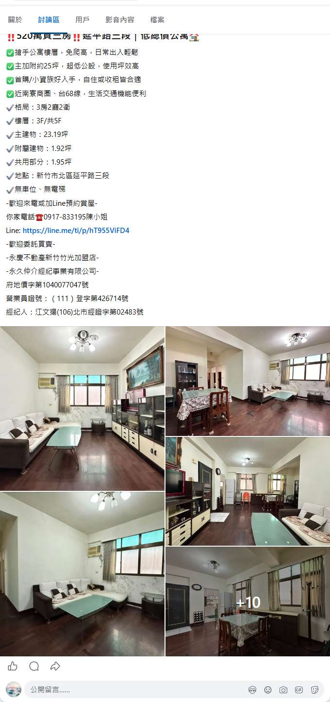 看原始刊登 → 查看貼文原文Chihmei Chen 520萬買三房 延平路三段｜低總價公寓 搶手公寓樓層，免爬高，日常出入輕鬆 主加附約25坪，超低公設，使用坪效高 首購/小資族好入手，自住或收租皆合適 近南寮商圈、台68線，生活交通機能便利 格局：3房2廳2衛 樓層：3F/共5F 主建物：23.19坪 附屬建物：1.92坪 共用部分：1.95坪 地點：新竹市北區延平路三段 無車位、無電梯 -歡迎來電或加Line預約賞屋- 你家電話 0917-833195陳小姐 Line: -歡迎委託買賣- -永慶不動產新竹竹光加盟店- -永久仲介經紀事業有限公司- 府地價字第1040077047號 營業員證號：（111）登字第426714號 經紀人：江文揚(106)北市經證字第02483號 +10 公開留言…… 貼文內有 2 個連結（已檢查）
| 520 萬 | — | 3房—廳2衛 完全符合 | 25.0 坪 | 未註明 | 無 | 無 | — 年 | — | FB 貼文 0917-833195 |
| 538 萬 | 21.11萬/坪 | 3房2廳1衛 差一點 | 25.48 坪 | 未註明 | 未註明 | 無 | 45.7 年 | 4F/5F | 信義房屋 | |
| 538 萬 | 18.32萬/坪 | 3房2廳2衛 完全符合 | 29.37 坪 | 未註明 | 未註明 | — | — 年 | 4F/5F | 永義房屋 | |
 | 568 萬 | 20.34萬/坪 | 3房2廳2衛 完全符合 | 27.92 坪 | 無 | 無 | 無 | 35 年 | 4F/5F | 仲介 謝雨蓉 |
 | 586 萬 | 16.96萬/坪 | 3房2廳2衛 完全符合 | 34.56 坪 | 1500元/月 | 無 | 無 | 33 年 | 5F/5F | 仲介 汪忠政 |
 看原始刊登 → 同一物件另有 2 筆刊登（不同仲介）
| 588 萬 | 23.4萬/坪 | 3房2廳1衛 差一點 | 25.13 坪 | 無 | 無 | 無 | 35 年 | 3F/5F | 仲介 莊先生 |
 看原始刊登 → 同一物件另有 4 筆刊登（不同仲介）
| 588 萬 | 20.56萬/坪 | 3房2廳2衛 完全符合 | 28.6 坪 | 未註明 | 坡道平面固定車位 | 無 | 33.9 年 | 5F/5F | 有巢氏房屋 |
 | 588 萬 | 23.48萬/坪 | 3房2廳2衛 完全符合 | 25.04 坪 | 未註明 | 無 | 無 | 45 年 | 5F/5F | 仲介 王小姐 |
 看原始刊登 → 同一物件另有 3 筆刊登（不同仲介）
| 588 萬 | 16.17萬/坪 | 3房2廳2衛 完全符合 | 36.36 坪 | 未註明 | 有 | — | — 年 | 5F/5F | 永慶不動產 |
| 588 萬 | 26.23萬/坪 | 3房2廳1衛 差一點 | 22.42 坪 | 未註明 | 新北市土城區中正路 | 無 | 43.5 年 | 2F/4F | 永慶房屋 | |
| 598 萬 | 17.41萬/坪 | 3房2廳2衛 完全符合 | 34.34 坪 | 583 | 坡道平面固定車位 | 無 | 31.9 年 | 5F/5F | 有巢氏房屋 | |
 | 598 萬 | 19.71萬/坪 | 3房2廳2衛 完全符合 | 30.34 坪 | 未註明 | 無 | 無 | 47.1 年 | 3F/5F | 有巢氏房屋 |
| 598 萬 | 16.92萬/坪 | 4房2廳2衛 超規格 | 35.34 坪 | 未註明 | 無 | — | 34.2 年 | 1-2F/2F | 有巢氏房屋 | |
 | 598 萬 | 23.86萬/坪 | 3房2廳1衛 差一點 | 25.06 坪 | 未註明 | 無 | 無 | 43.9 年 | 5F/5F | 有巢氏房屋 |
 | 598 萬 | 22.04萬/坪 | 3房2廳1衛 差一點 | 27.13 坪 | 未註明 | 無 | 無 | 34 年 | 4F/5F | 有巢氏房屋 |
 | 598 萬 | 23.86萬/坪 | 3房2廳2衛 完全符合 | 25.06 坪 | 未註明 | 未註明 | — | — 年 | 5F/5F | 永慶不動產 |
 看原始刊登 → 同一物件另有 6 筆刊登（不同仲介）
| 598 萬 | 22.8萬/坪 | 3房2廳2衛 完全符合 | 26.23 坪 | 未註明 | 全新整理景觀戶 | 無 | — 年 | 2F/5F | 永慶房屋 |
 | 598 萬 | 52.46萬/坪 | 2房—廳2衛 差一點 | 11.4 坪 | 未註明 | 未註明 | 有 | 35 年 | 1F/5F | 仲介 張惠珊 |
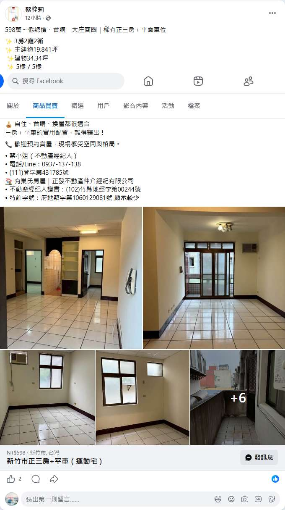 看原始刊登 → 查看貼文原文蔡梓莉 598萬～低總價、首購—大庄商圈｜稀有正三房＋平面車位 3房2廳2衛 主建物19.841坪 建物34.34坪 5樓／5樓 屋齡約31年 平面車位，停車更方便 格局方正，三房空間實用 大庄商圈生活機能成熟，採買、交通一次滿足 搶先入主價：598萬 自住、首購、換屋都很適合 三房＋平車的實用配置，難得釋出！ 歡迎預約賞屋，現場感受空間與格局。 • 蔡小姐（不動產經紀人） • 電話/Line：0937-137-138 • (111)登字第431785號 有巢氏房屋｜正發不動產仲介經紀有限公司 • 不動產經紀人證書：(102)竹縣地經字第00244號 • 特許字號：府地籍字第1060129081號 顯示較少 +6 NT$598 · 新竹市, 台灣 新竹市正三房+平車（運動宅） 發訊息 送出第一則留言…… 貼文內有 1 個連結（已檢查）
| 598 萬 | — | 3房—廳2衛 完全符合 | 19.841 坪 | 未註明 | 有 | — | — 年 | 5F/5F | FB 貼文 0937-137-138 |
| 598 萬 | 21.75萬/坪 | 3房2廳2衛 完全符合 | 27.49 坪 | 未註明 | 未註明 | — | — 年 | 3F/5F | 永慶不動產 | |
| 598 萬 | 24.21萬/坪 | 4房2廳1衛 差一點 | 24.7 坪 | — | 未註明 | 無 | 44 年 | 5F/5F | 仲介 彭啟亮 | |
| 614 萬 | 14.62萬/坪 | 3房2廳2衛 完全符合 | 42.0 坪 | 未註明 | 無 | 有 | 32 年 | 3F/7F | — | |
| 618 萬 | 17.88萬/坪 | 3房2廳2衛 完全符合 | 34.56 坪 | 未註明 | 未註明 | 無 | 34 年 | 5F/5F | 永慶房屋 | |
| 628 萬 | 21.22萬/坪 | 3房2廳2衛 完全符合 | 29.6 坪 | 無 | 無 | 無 | 42 年 | 3F/5F | 仲介 王小姐 | |
| 628 萬 | 23.16萬/坪 | 3房2廳2衛 完全符合 | 27.12 坪 | 無 | 無 | 無 | 33 年 | 4F/5F | 仲介 黃仲和 | |
| 638 萬 | 22.56萬/坪 | 3房2廳1衛 差一點 | 28.28 坪 | 未註明 | 無 | 無 | 32.3 年 | 4F/5F | 有巢氏房屋 | |
| 638 萬 | 27.96萬/坪 | 3房2廳1衛 差一點 | 22.82 坪 | 未註明 | 無 | 無 | 44.8 年 | 5F/5F | 有巢氏房屋 | |
 看原始刊登 → 同一物件另有 2 筆刊登（不同仲介）
| 638 萬 | 25.57萬/坪 | 3房2廳2衛 完全符合 | 24.95 坪 | 未註明 | 未註明 | 無 | 46.2 年 | 1F/5F | 永慶房屋 |
| 638 萬 | 21.76萬/坪 | 5房—廳3衛 超規格 | 29.32 坪 | 未註明 | 未註明 | 無 | 47 年 | 5F/5F | 仲介 施智睿 | |
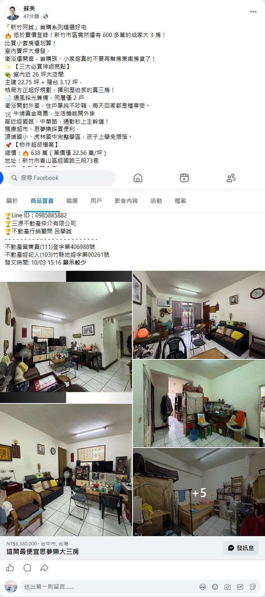 看原始刊登 → 查看貼文原文蘇美 47分鐘前 「新竹阿誠」首購系列精選好宅 低於實價登錄！新竹市區竟然還有 600 多萬的成家大 3 房！ 比買小套房還划算！ 室內實坪大爆發、 衛浴還開窗，首購族、小家庭真的不要再幫房東繳房貸了！ 【三大必買神級亮點】 室內近 26 坪大空間 主建 22.75 坪 + 陽台 3.12 坪， 格局方正超好規劃，揮別壓迫感的真三房！ 通風採光兼備，同層僅 2 戶 衛浴開對外窗，住戶單純不吵雜，每天回家都是種享受。 牛埔黃金商圈，生活機能開外掛 鄰近經國路、中華路，通勤秒上主幹道！ 楓康超市、思夢樂採買便利， 頂埔國小、虎林國中完整學區，孩子上學免煩惱。 【物件超級檔案】 總價： 638 萬（單價僅 22.56 萬/坪） 地址：新竹市香山區經國路三段73巷 格局：3 房 2 廳 1 衛 建坪：28.275 坪 樓層：4 樓 / 共 5 樓（公寓） 這種價格與大空間，秒殺速度絕對超乎想像！ 別等賣掉了才後悔，手刀預約看屋！ - - - - - - - - - - - - - - - - - - - - - - - - 搶購專線：0985885882 Line ID：0985885882 三源不動產仲介有限公司 不動產行銷顧問 呂學誠 - - - - - - - - - - - - - - - - - - - - - - - - 不動產營業員(111)登字第406988號 不動產經紀人(103)竹縣地經字第00261號 發文時間: 10/03 15:16 顯示較少 +5 NT$6,380,000 · 台中市, 台灣 這間最便宜思夢樂大三房 發訊息 送出第一則留言…… 貼文內有 1 個連結（已檢查）
| 638 萬 | — | 3房—廳1衛 差一點 | 26.0 坪 | 未註明 | 未註明 | 無 | — 年 | 4F | FB 貼文 0985885882 |
 看原始刊登 → 同一物件另有 3 筆刊登（不同仲介）
| 650 萬 | 19.11萬/坪 | 3房2廳2衛 完全符合 | 34.02 坪 | 無 | 無 | 無 | 44 年 | 4F/5F | 仲介 林子鈞 |
| 650 萬 | 17.03萬/坪 | 4房2廳2衛 超規格 | 38.16 坪 | 未註明 | 未註明 | 無 | 36.5 年 | 5F/5F | 信義房屋 | |
| 650 萬 | 19.1萬/坪 | 3房2廳1衛 差一點 | 34.03 坪 | 未註明 | 未註明 | 無 | 44.8 年 | 4F/5F | 信義房屋 | |
 | 668 萬 | 24.81萬/坪 | 3房2廳1衛 差一點 | 26.93 坪 | 未註明 | 無 | 無 | 36.8 年 | 4F/5F | 有巢氏房屋 |
| 668 萬 | 36.19萬/坪 | 3房2廳2衛 完全符合 | 18.46 坪 | 未註明 | 每半年輪抽一次，另有固定 | 有 | 31.9 年 | 4F/5F | 永慶房屋 | |
 看原始刊登 → 同一物件另有 3 筆刊登（不同仲介）
| 668 萬 | 33.43萬/坪 | 3房2廳1衛 差一點 | 19.98 坪 | 無 | 無 | 有 | 44 年 | 3F/5F | — |
 | 668 萬 | 22.78萬/坪 | 5房3廳3衛 超規格 | 29.32 坪 | 未註明 | 未註明 | 有 | 47 年 | 5F/5F | 中信房屋 |
 | 668 萬 | 17.14萬/坪 | 3房2廳2衛 完全符合 | 38.97 坪 | 未註明 | 有 | — | — 年 | 5F/5F | 永義房屋 |
| 668 萬 | 22.82萬/坪 | 3房2廳2衛 完全符合 | 29.27 坪 | 未註明 | 可抽籤 | 無 | 31 年 | 2F/5F | 永慶房屋 | |
| 668 萬 | 33.43萬/坪 | 3房2廳2衛 完全符合 | 19.98 坪 | 未註明 | 未註明 | 無 | 44 年 | 3F/5F | 仲介 值班小姐 | |
 | 685 萬 | 15.09萬/坪 | 3房2廳2衛 完全符合 | 45.4 坪 | 未註明 | 有 | 有 | 31 年 | 6F/11F | 信義房屋 |
 | 685 萬 | 22.13萬/坪 | 3房2廳2衛 完全符合 | 30.95 坪 | 未註明 | 未註明 | — | — 年 | 3F/5F | 永義房屋 |
 看原始刊登 → 同一物件另有 4 筆刊登（不同仲介）
| 688 萬 | 19.26萬/坪 | 3房2廳2衛 完全符合 | 35.72 坪 | 無 | 無 | 無 | 47 年 | 5F/5F | 仲介 陳俞樺 |
| 688 萬 | 17.65萬/坪 | 2房2廳2衛 差一點 | 38.97 坪 | 3600元/季度 | 平面式，已含售金內 | 無 | 32 年 | 5F/5F | 仲介 杜小姐 | |
| 688 萬 | 56.95萬/坪 | 3房2廳2衛 完全符合 | 12.08 坪 | 800 | 無 | 有 | 19.3 年 | 3F/10F | 有巢氏房屋 | |
| 688 萬 | 21.87萬/坪 | 3房2廳2衛 完全符合 | 31.46 坪 | 未註明 | 未註明 | 無 | 29.4 年 | 5F/5F | 信義房屋 | |
 | 688 萬 | 11.91萬/坪 | 3房2廳3衛 超規格 | 57.76 坪 | 未註明 | 未註明 | 無 | 37.4 年 | 4-5F/5F | 信義房屋 |
 | 688 萬 | 22.54萬/坪 | 7房—廳7衛 超規格 | 30.53 坪 | 未註明 | 資訊 | — | 44.5 年 | 1-2F/2F | 永慶房屋 |
| 688 萬 | 28.27萬/坪 | 7房2廳2衛 超規格 | 24.34 坪 | 未註明 | 可抽籤 | 無 | — 年 | 5F/5F | 永慶房屋 | |
| 698 萬 | 15.61萬/坪 | 3房2廳2衛 完全符合 | 44.72 坪 | 未註明 | 坡道平面固定車位 | 無 | 28.2 年 | 5F/5F | 有巢氏房屋 | |
 | 698 萬 | 21.2萬/坪 | 3房2廳2衛 完全符合 | 32.92 坪 | 未註明 | 無 | 有 | 30 年 | 2F/11F | 仲介 吳子晴 |
 看原始刊登 → 同一物件另有 5 筆刊登（不同仲介）
| 698 萬 | 24.41萬/坪 | 3房2廳2衛 完全符合 | 28.6 坪 | 未註明 | 坡道平面停自有地 | 無 | 34 年 | 5F/5F | 有巢氏房屋 |
 看原始刊登 → 同一物件另有 5 筆刊登（不同仲介）
| 698 萬 | 23.44萬/坪 | 3房2廳1衛 差一點 | 29.78 坪 | 未註明 | 無 | 無 | 35.3 年 | 1F/5F | 有巢氏房屋 |
| 698 萬 | 28.3萬/坪 | 4房2廳1衛 差一點 | 24.66 坪 | 未註明 | 無 | 無 | 44.6 年 | 5F/5F | 有巢氏房屋 | |
 | 698 萬 | 22.53萬/坪 | 3房2廳2衛 完全符合 | 30.98 坪 | 未註明 | 未註明 | 有 | 42 年 | 5F/5F | 中信房屋 北屯崇德加盟店 |
 看原始刊登 → 同一物件另有 3 筆刊登（不同仲介）
| 698 萬 | 30.16萬/坪 | 3房2廳1衛 差一點 | 23.14 坪 | 無 | 無 | — | — 年 | 整棟/2F | 仲介 吳佳嶸 |
| 698 萬 | 17.6萬/坪 | 4房4廳2衛 超規格 | 39.67 坪 | 未註明 | 未註明 | 無 | 44.5 年 | 4F/5F | 信義房屋 | |
 | 698 萬 | 17.86萬/坪 | 6房2廳3衛 超規格 | 39.09 坪 | 未註明 | 未註明 | 無 | 32.8 年 | 5F/5F | 信義房屋 |
 | 698 萬 | 35.23萬/坪 | 3房2廳1衛 差一點 | 19.81 坪 | 未註明 | 無 | 無 | — 年 | 4F/4F | 仲介 彭立宇 |
 | 698 萬 | 23.03萬/坪 | 3房2廳1衛 差一點 | 30.31 坪 | 未註明 | 未註明 | 無 | 39.3 年 | 5F/0F | 信義房屋 |
 | 698 萬 | 19.07萬/坪 | 3房2廳2衛 完全符合 | 36.6 坪 | 未註明 | 有 | — | — 年 | 4F/5F | 永慶不動產 |
 看原始刊登 → 同一物件另有 3 筆刊登（不同仲介）
| 698 萬 | 21.42萬/坪 | 5房2廳2衛 超規格 | 32.59 坪 | 未註明 | 未註明 | — | — 年 | 5F/5F | 永慶不動產 |
| 698 萬 | 23.48萬/坪 | 3房2廳1衛 差一點 | 29.73 坪 | 未註明 | 新竹市東區明湖路 | 無 | 33.4 年 | 5F/5F | 永慶房屋 | |
| 698 萬 | 31.53萬/坪 | 3房2廳1衛 差一點 | 22.14 坪 | 未註明 | 未註明 | 無 | 47.9 年 | 4F/5F | 信義房屋 | |
| 698 萬 | 34.93萬/坪 | 3房2廳1衛 差一點 | 19.98 坪 | — | 未註明 | 無 | 44 年 | 3F/5F | 仲介 王世俊 | |
| 699 萬 | 27.22萬/坪 | 3房2廳2衛 完全符合 | 25.68 坪 | 未註明 | 未註明 | 無 | — 年 | 5F/5F | 永慶房屋 | |
 | 700 萬 | 18.07萬/坪 | 3房2廳2衛 完全符合 | 38.74 坪 | 未註明 | 有 | 無 | 29.3 年 | 4F/5F | 信義房屋 |
 | 728 萬 | 16.03萬/坪 | 3房2廳2衛 完全符合 | 45.4 坪 | 1300元/月 | 平面式，已含售金內 | 有 | 30 年 | 5F/10F | 仲介 值班姐姐 |
 | 728 萬 | 18.79萬/坪 | 3房2廳2衛 完全符合 | 38.74 坪 | 未註明 | 有 | — | — 年 | 4F/5F | 永慶不動產 |
| 728 萬 | 29.18萬/坪 | 3房2廳2衛 完全符合 | 24.95 坪 | 未註明 | 未註明 | 無 | 46 年 | 1F/5F | 仲介 值班 | |
| 730 萬 | 26.65萬/坪 | 3房2廳2衛 完全符合 | 27.39 坪 | 未註明 | 未註明 | 無 | 45.8 年 | 4F/5F | 信義房屋 | |
| 738 萬 | 17.41萬/坪 | 3房2廳2衛 完全符合 | 42.39 坪 | 未註明 | 坡道平面固定車位 | 無 | 29.3 年 | 3F/5F | 有巢氏房屋 | |
 看原始刊登 → 同一物件另有 10 筆刊登（不同仲介）
| 738 萬 | 30.32萬/坪 | 3房2廳1衛 差一點 | 24.34 坪 | 未註明 | 無 | 無 | 0 年 | 2F/5F | 有巢氏房屋 |
| 738 萬 | 24.49萬/坪 | 4房—廳4衛 超規格 | 30.14 坪 | 未註明 | 無 | 無 | 0 年 | 5F/5F | 有巢氏房屋 | |
 | 738 萬 | 25.78萬/坪 | 5房—廳5衛 超規格 | 28.63 坪 | 未註明 | 未註明 | 有 | 42 年 | 5F/5F | 中信房屋 環南誠家加盟店 |
| 738 萬 | 18.9萬/坪 | 3房2廳2衛 完全符合 | 39.05 坪 | 1760 | 無 | 有 | 29.2 年 | 2F/10F | 有巢氏房屋 | |
| 738 萬 | 18.03萬/坪 | 3房2廳2衛 完全符合 | 40.94 坪 | 未註明 | 有 | 有 | — 年 | 6F/8F | 永慶不動產 | |
 | 750 萬 | 28.72萬/坪 | 4房2廳2衛 超規格 | 26.11 坪 | 未註明 | 及租車位的困擾 | — | 44.5 年 | 1-2F/2F | 永慶房屋 |
| 750 萬 | 27.32萬/坪 | 3房2廳1衛 差一點 | 27.45 坪 | 未註明 | 屋況需整理，可依喜好重新 | 無 | 45.8 年 | 2F/4F | 永慶房屋 | |
| 750 萬 | 27.85萬/坪 | 3房2廳2衛 完全符合 | 26.93 坪 | 未註明 | 未註明 | 無 | 38.4 年 | 5F/5F | 永慶房屋 | |
| 750 萬 | 20.06萬/坪 | 3房2廳2衛 完全符合 | 37.38 坪 | 未註明 | 未註明 | 無 | — 年 | 1-3F/3F | 永慶不動產 | |
 | 758 萬 | 29.82萬/坪 | 3房2廳1衛 差一點 | 25.42 坪 | 無 | 無 | 無 | 44 年 | 4F/5F | 仲介 張佳偉 |
| 758 萬 | 36.55萬/坪 | 2房2廳2衛 差一點 | 20.74 坪 | 未註明 | 新竹市東區明湖路 | 無 | 31.8 年 | 2F/5F | 永慶房屋 | |
 看原始刊登 → 同一物件另有 3 筆刊登（不同仲介）
| 758 萬 | 23.25萬/坪 | 3房2廳2衛 完全符合 | 32.6 坪 | 未註明 | 未註明 | 無 | 38 年 | 4F/5F | 仲介 陳偉志 |
| 758 萬 | 25.1萬/坪 | 4房2廳1衛 差一點 | 30.2 坪 | 未註明 | 未註明 | — | 48 年 | 整棟/2F | 仲介 徐佩瑜 | |
| 760 萬 | 24.64萬/坪 | 3房2廳2衛 完全符合 | 30.85 坪 | 未註明 | 無 | 無 | 48 年 | 5F/5F | 有巢氏房屋 | |
 | 768 萬 | 22.8萬/坪 | 2房2廳2衛 差一點 | 33.68 坪 | 500元/月 | 機械式，已含售金內 | 有 | 31 年 | 4F/8F | 仲介 楊小姐 |
 | 768 萬 | 27.95萬/坪 | 4房2廳2衛 超規格 | 27.48 坪 | 未註明 | 未註明 | 有 | 31 年 | 5F/5F | 中信房屋 南大加盟店 |
| 768 萬 | 21.46萬/坪 | 3房2廳2衛 完全符合 | 35.78 坪 | 未註明 | 採光明亮 | 無 | 41.7 年 | 5F/5F | 永慶房屋 | |
 | 768 萬 | 37.32萬/坪 | 2房—廳2衛 差一點 | 20.58 坪 | 未註明 | 未註明 | 有 | 34.8 年 | 7F/7F | 永慶房屋 |
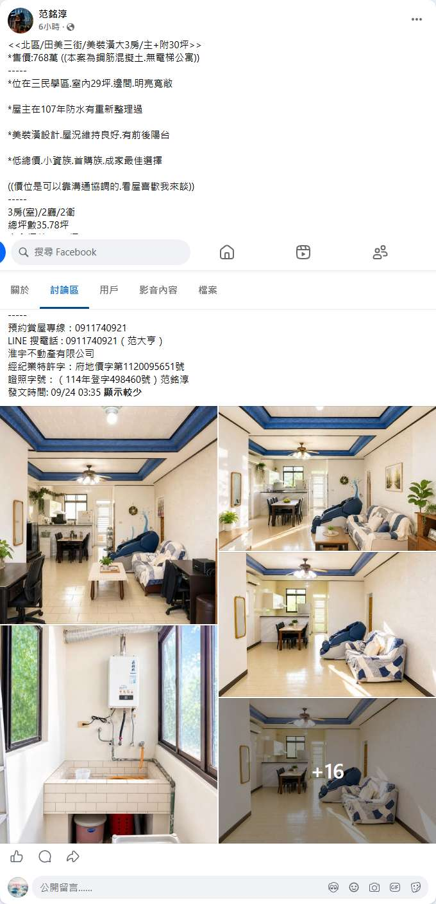 看原始刊登 → 查看貼文原文范銘淳 5小時前 <<北區/田美三街/美裝潢大3房/主+附30坪>> *售價:768萬 ((本案為鋼筋混擬土.無電梯公寓)) ----- *位在三民學區.室內29坪.邊間.明亮寬敞 *屋主在107年防水有重新整理過 *美裝潢設計.屋況維持良好.有前後陽台 *低總價.小資族.首購族.成家最佳選擇 ((價位是可以靠溝通協調的.看屋喜歡我來談)) ----- 3房(室)/2廳/2衛 總坪數35.78坪 室內坪數29.72坪 陽台坪數0.79坪 共同使用坪數5.27坪 土地坪數7.29坪 樓層5樓/總樓層5樓 屋齡41年 ----- 預約賞屋專線：0911740921 LINE 搜電話 : 0911740921（范大亨） 淮宇不動產有限公司 經紀業特許字：府地價字第1120095651號 證照字號：（114年登字498460號）范銘淳 發文時間: 09/24 03:35 顯示較少 +16 公開留言…… 貼文內有 1 個連結（已檢查）
| 768 萬 | — | 3房—廳2衛 完全符合 | 30.0 坪 | 未註明 | 未註明 | 無 | — 年 | 5F | FB 貼文 0911740921 |
 看原始刊登 → 同一物件另有 3 筆刊登（不同仲介）
| 780 萬 | 29.43萬/坪 | 3房2廳2衛 完全符合 | 26.5 坪 | 無 | 無 | 無 | 42 年 | 3F/5F | 仲介 王筱慧 |
| 780 萬 | 29.35萬/坪 | 3房2廳1衛 差一點 | 26.58 坪 | 未註明 | 無 | 無 | 42.2 年 | 3F/5F | 有巢氏房屋 | |
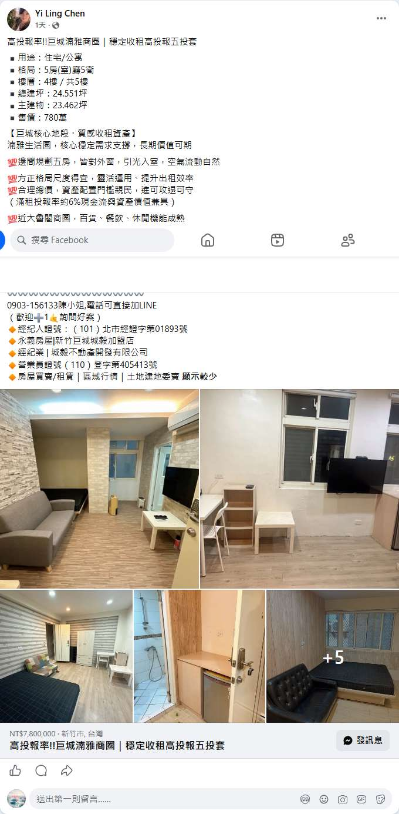 看原始刊登 → 查看貼文原文Yi Ling Chen 2小時前 高投報率!!巨城湳雅商圈｜穩定收租高投報五投套 用途：住宅/公寓 格局：5房(室)廳5衛 樓層：4樓 / 共5樓 總建坪：24.551坪 主建物：23.462坪 售價：780萬 【巨城核心地段・質感收租資產】 湳雅生活圈，核心穩定需求支撐，長期價值可期 邊間規劃五房，皆對外窗，引光入室，空氣流動自然 方正格局尺度得宜，靈活運用、提升出租效率 合理總價，資產配置門檻親民，進可攻退可守 （滿租投報率約6%現金流與資產價值兼具） 近大魯閣商圈，百貨、餐飲、休閒機能成熟 鄰全聯與果菜市場，日常採買從容便利 經國路軸線，串聯城市動脈，進出從容有序 為講究穩定收益的投資者而生， 一席兼具流動性與收益性的配置選擇， 在城市核心，收藏一份長期現金流。 0903-156133陳小姐,電話可直接加LINE （歡迎 詢問好案） 經紀人證號：（101）北市經證字第01893號 永義房屋|新竹巨城城毅加盟店 經紀業 | 城毅不動產開發有限公司 營業員證號（110）登字第405413號 房屋買賣/租賃｜區域行情｜土地建地委賣 顯示較少 +5 NT$7,800,000 · 新竹市, 台灣 高投報率!!巨城湳雅商圈｜穩定收租高投報五投套 發訊息 送出第一則留言…… 貼文內有 1 個連結（已檢查）
| 780 萬 | — | 5房—廳5衛 超規格 | 24.551 坪 | 未註明 | 未註明 | 無 | — 年 | 4F | FB 貼文 0903-156133 |
| 780 萬 | 29.31萬/坪 | 4房2廳2衛 超規格 | 26.61 坪 | 未註明 | 無 | 無 | 46.1 年 | 3F/5F | 有巢氏房屋 | |
| 780 萬 | 29.31萬/坪 | 4房2廳1衛 差一點 | 26.61 坪 | 未註明 | 未註明 | — | 46.1 年 | 3F/5F | 信義房屋 | |
 | 788 萬 | 28.06萬/坪 | 3房2廳2衛 完全符合 | 28.08 坪 | 980 | 無 | 有 | 0 年 | 6-7F/7F | 有巢氏房屋 |
 | 788 萬 | 30.18萬/坪 | 4房2廳2衛 超規格 | 26.11 坪 | 未註明 | 無 | — | 44.5 年 | 1-2F/2F | 有巢氏房屋 |
| 788 萬 | 35.26萬/坪 | 3房2廳1衛 差一點 | 22.35 坪 | 未註明 | 未註明 | 無 | 44.3 年 | 2F/5F | 信義房屋 | |
 看原始刊登 → 同一物件另有 5 筆刊登（不同仲介）
| 788 萬 | 35.26萬/坪 | 3房2廳2衛 完全符合 | 22.35 坪 | 未註明 | 未註明 | — | — 年 | 2F/5F | 永慶不動產 |
| 788 萬 | 24.12萬/坪 | 3房2廳2衛 完全符合 | 32.67 坪 | 未註明 | 未註明 | — | 44.8 年 | 1-2F/2F | 永慶房屋 | |
 | 788 萬 | 24.27萬/坪 | 3房2廳2衛 完全符合 | 32.47 坪 | 未註明 | 未註明 | 無 | 31.9 年 | 4F/5F | 永慶房屋 |
| 788 萬 | 21.61萬/坪 | 3房2廳1衛 差一點 | 36.47 坪 | 未註明 | 未註明 | 無 | 32.8 年 | 2F/5F | 永慶房屋 | |
 | 788 萬 | 32.37萬/坪 | 3房2廳1衛 差一點 | 24.34 坪 | 未註明 | 未註明 | 無 | 46.1 年 | 2F/5F | 永慶房屋 |
| 788 萬 | 24.18萬/坪 | 5房3廳2衛 超規格 | 32.59 坪 | 1000元/月 | 無 | 無 | 39 年 | 5F/5F | 仲介 陳嘉宏 | |
| 790 萬 | 24.57萬/坪 | 3房2廳2衛 完全符合 | 32.15 坪 | 未註明 | 未註明 | 有 | 37 年 | 4F/5F | 中信房屋 延平站前加盟店 | |
| 790 萬 | 21.63萬/坪 | 3房2廳2衛 完全符合 | 36.52 坪 | 未註明 | 未註明 | 無 | 33.4 年 | 3F/5F | 信義房屋 | |
| 790 萬 | 21.63萬/坪 | 3房2廳2衛 完全符合 | 36.52 坪 | 未註明 | 未註明 | 無 | 33.3 年 | 1-5F/5F | 永慶房屋 | |
| 796 萬 | 9.67萬/坪 | 3房2廳2衛 完全符合 | 82.33 坪 | 未註明 | 未註明 | — | 38 年 | 整棟/2F | — | |
 | 798 萬 | 21.88萬/坪 | 3房2廳2衛 完全符合 | 36.47 坪 | 1200 | 坡道平面固定車位 | 無 | 33 年 | 4F/5F | 有巢氏房屋 |
 | 798 萬 | 18.91萬/坪 | 3房2廳2衛 完全符合 | 42.21 坪 | 未註明 | 坡道平面固定車位 | 無 | 29.4 年 | 3F/5F | 有巢氏房屋 |
| 798 萬 | 25.71萬/坪 | 3房2廳1衛 差一點 | 31.04 坪 | 未註明 | 無 | 無 | 46.2 年 | 2F/5F | 有巢氏房屋 | |
 | 798 萬 | 42.83萬/坪 | 2房1廳2衛 不符 | 18.63 坪 | 1500 | 無 | 有 | 17.8 年 | 3F/7F | 有巢氏房屋 |
| 798 萬 | 24.79萬/坪 | 3房2廳2衛 完全符合 | 32.19 坪 | 未註明 | 無 | 無 | 44.3 年 | 5F/5F | 有巢氏房屋 | |
 看原始刊登 → 同一物件另有 3 筆刊登（不同仲介）
| 798 萬 | 18.28萬/坪 | 3房2廳2衛 完全符合 | 43.66 坪 | 300 | 坡道平面固定車位 | 有 | 32.2 年 | 2F/5F | 有巢氏房屋 |
 | 798 萬 | 18.91萬/坪 | 4房2廳2衛 超規格 | 42.19 坪 | 未註明 | 無 | 無 | 45.9 年 | 2F/5F | 有巢氏房屋 |
| 798 萬 | 23.13萬/坪 | 4房2廳2衛 超規格 | 34.5 坪 | 未註明 | 無 | 無 | 47 年 | 5F/5F | 有巢氏房屋 | |
 | 798 萬 | 25.79萬/坪 | 3房2廳1衛 差一點 | 30.94 坪 | 未註明 | 無 | 無 | 41.8 年 | 2F/5F | 有巢氏房屋 |
| 798 萬 | 33.74萬/坪 | 3房2廳1衛 差一點 | 23.65 坪 | 未註明 | 無 | 無 | 42.3 年 | 2F/5F | 有巢氏房屋 | |
| 798 萬 | 18.44萬/坪 | 3房2廳2衛 完全符合 | 43.28 坪 | 未註明 | 新竹市東區明湖路 | 無 | 29.4 年 | 5F/5F | 永慶房屋 | |
| 798 萬 | 21.93萬/坪 | 2房2廳3衛 差一點 | 36.39 坪 | 未註明 | 計算 | — | 42.4 年 | 1-2F/2F | 永慶房屋 | |
 | 798 萬 | 19.31萬/坪 | 3房2廳2衛 完全符合 | 41.32 坪 | 未註明 | 未註明 | 無 | 38.3 年 | 5F/5F | 信義房屋 |
| 798 萬 | 31.97萬/坪 | 3房2廳2衛 完全符合 | 24.96 坪 | 未註明 | 未註明 | 有 | 46.1 年 | 3F/6F | 信義房屋 | |
| 798 萬 | 24.81萬/坪 | 4房—廳4衛 超規格 | 32.16 坪 | 未註明 | 無 | 無 | 35.4 年 | 5F/5F | 有巢氏房屋 | |
| 798 萬 | 22.17萬/坪 | 5房1廳2衛 差一點 | 36 坪 | 未註明 | 未註明 | 無 | 46.7 年 | 5F/5F | 信義房屋 | |
| 798 萬 | 22.89萬/坪 | 3房2廳2衛 完全符合 | 34.86 坪 | 未註明 | 未註明 | 有 | 32.6 年 | 2F/4F | 永慶房屋 | |
| 798 萬 | 21.88萬/坪 | 2房2廳2衛 差一點 | 36.47 坪 | 未註明 | 未註明 | 無 | 33 年 | 4F/5F | 永慶房屋 | |
| 798 萬 | 23.14萬/坪 | 3房2廳1衛 差一點 | 34.48 坪 | 未註明 | 未註明 | 有 | 28.8 年 | 3F/6F | 永慶房屋 | |
 | 798 萬 | 27.03萬/坪 | 3房2廳2衛 完全符合 | 29.53 坪 | 未註明 | 未註明 | 有 | 32 年 | 5F/5F | 仲介 彭曉凡 |
 看原始刊登 → 同一物件另有 2 筆刊登（不同仲介）
| 798 萬 | 21.07萬/坪 | 4房2廳2衛 超規格 | 37.87 坪 | 未註明 | 未註明 | 無 | 45 年 | 4F/5F | 仲介 林宜賢 |
| 798 萬 | 20.41萬/坪 | 6房2廳3衛 超規格 | 39.1 坪 | 未註明 | 未註明 | 無 | 32 年 | 5F~6F/6F | 仲介 值班人員 | |
| 798 萬 | 52.16萬/坪 | 5房3廳4衛 超規格 | 15.3 坪 | 未註明 | 未註明 | 有 | 11 年 | 3F/11F | 仲介 高美娟 | |
| 798 萬 | 23.15萬/坪 | 2房2廳2衛 差一點 | 34.48 坪 | 未註明 | 未註明 | 有 | 28 年 | 3F/6F | 仲介 廖呈叡 | |
| 798 萬 | 23.13萬/坪 | 4房2廳1衛 差一點 | 34.5 坪 | 未註明 | 未註明 | 無 | 45 年 | 5F/5F | 仲介 陳店長 | |
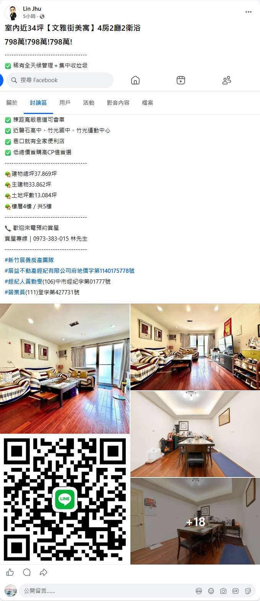 看原始刊登 → 查看貼文原文Lin Jhu 4小時前 室內近34坪【文雅街美寓】4房2廳2衛浴 798萬!798萬!798萬! ------------------------------------ 稀有全天候管理＋集中收垃圾 社區隨到隨停汽機車位 一層兩戶，邊間採光通風良好 格局方正大4房，廚房跟房間一樣大 前後大陽台空間好利用 棟距寬敞巷道可會車 近磐石高中、竹光國中、竹光運動中心 巷口就有全家便利店 低總價首購高CP值首選 ------------------------------------ 建物總坪37.869坪 主建物33.862坪 土地坪數13.084坪 樓層4樓 / 共5樓 ------------------------------------ 歡迎來電預約賞屋 賞屋專線｜0973-383-015 林先生 ------------------------------------ #新竹展義房產團隊 #展益不動產經紀有限公司府地價字第1140175778號 #經紀人黃勤雯(106)中市經紀字第01777號 #營業員(111)登字第427731號 +18 公開留言…… 貼文內有 1 個連結（已檢查）
| 798 萬 | — | 4房2廳2衛 超規格 | 34.0 坪 | 未註明 | 未註明 | — | — 年 | 4F | FB 貼文 0973-383-015 |
| 798 萬 | 37.24萬/坪 | 3房2廳2衛 完全符合 | 21.43 坪 | 未註明 | 未註明 | 有 | — 年 | 1F/5F | 中信房屋 延平站前加盟店 | |
| 798 萬 | 19.31萬/坪 | 3房2廳2衛 完全符合 | 41.32 坪 | 未註明 | 未註明 | — | — 年 | 5F/5F | 永慶不動產 | |
| 798 萬 | 21.93萬/坪 | 4房2廳3衛 超規格 | 36.39 坪 | — | 未註明 | — | 42 年 | 1F~2F/2F | 仲介 李源豐 | |
| 798 萬 | 40.13萬/坪 | 2房2廳2衛 差一點 | 19.88 坪 | — | 未註明 | 有 | 34 年 | 5F/6F | 仲介 蔡一男 | |
| 798 萬 | 36.94萬/坪 | 2房1廳2衛 不符 | 21.6 坪 | — | 未註明 | 有 | 31 年 | 7F/7F | 仲介 吳浩毓 | |
 | 799 萬 | 50.22萬/坪 | 3房2廳2衛 完全符合 | 15.91 坪 | 2400元/季度 | 無 | 有 | 30 年 | 5F/5F | 仲介 盧俊全 |
 | 799 萬 | 19.93萬/坪 | 3房2廳2衛 完全符合 | 40.09 坪 | 未註明 | 可以停 但無產權 | 無 | 38.5 年 | 5F/5F | 永慶房屋 |
| 799 萬 | 34.07萬/坪 | 4房3廳3衛 超規格 | 23.45 坪 | 未註明 | 未註明 | 無 | 44.8 年 | 3F/5F | 永慶房屋 | |
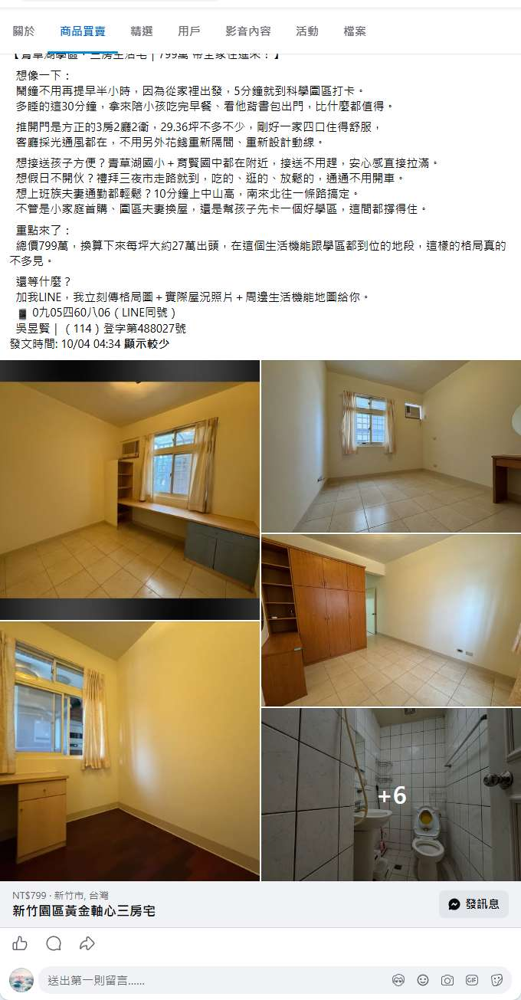 看原始刊登 → 查看貼文原文吳筱梅 勤於回覆 6小時前 【青草湖學區．三房生活宅｜799萬 帶全家住進來！】 想像一下： 鬧鐘不用再提早半小時，因為從家裡出發，5分鐘就到科學園區打卡。 多睡的這30分鐘，拿來陪小孩吃完早餐、看他背書包出門，比什麼都值得。 推開門是方正的3房2廳2衛，29.36坪不多不少，剛好一家四口住得舒服， 客廳採光通風都在，不用另外花錢重新隔間、重新設計動線。 想接送孩子方便？青草湖國小＋育賢國中都在附近，接送不用趕，安心感直接拉滿。 想假日不開伙？禮拜三夜市走路就到，吃的、逛的、放鬆的，通通不用開車。 想上班族夫妻通勤都輕鬆？10分鐘上中山高，南來北往一條路搞定。 不管是小家庭首購、園區夫妻換屋，還是幫孩子先卡一個好學區，這間都撐得住。 重點來了： 總價799萬，換算下來每坪大約27萬出頭，在這個生活機能跟學區都到位的地段，這樣的格局真的不多見。 還等什麼？ 加我LINE，我立刻傳格局圖＋實際屋況照片＋周邊生活機能地圖給你。 0九05四60八06（LINE同號） 吳昱賢｜（114）登字第488027號 發文時間: 10/04 04:34 顯示較少 +6 NT$799 · 新竹市, 台灣 新竹園區黃金軸心三房宅 發訊息 送出第一則留言…… 貼文內有 1 個連結（已檢查）
| 799 萬 | — | 3房—廳2衛 完全符合 | 29.36 坪 | 未註明 | 未註明 | — | — 年 | — | FB 貼文 |
| 800 萬 | 29.35萬/坪 | 4房4廳4衛 超規格 | 27.26 坪 | 未註明 | 未註明 | 有 | 46 年 | 1F/0F | 中信房屋 | |
 看原始刊登 → 同一物件另有 3 筆刊登（不同仲介）
| 800 萬 | 38.72萬/坪 | 3房2廳2衛 完全符合 | 20.66 坪 | 未註明 | 未註明 | 無 | 45.9 年 | 1F/4F | 永慶房屋 |
 | 800 萬 | 29.35萬/坪 | 4房—廳4衛 超規格 | 27.26 坪 | 未註明 | 未註明 | 無 | — 年 | 1F/5F | 永慶房屋 |
| 800 萬 | 36.36萬/坪 | 3房2廳2衛 完全符合 | 22.0 坪 | 未註明 | 平面式+ | 有 | 24 年 | 5F/6F | — | |
 看原始刊登 → 同一物件另有 6 筆刊登（不同仲介）
| 838 萬 | 25.36萬/坪 | 3房2廳2衛 完全符合 | 33.04 坪 | 2000元/年 | 無 | 無 | 36 年 | 5F/5F | 仲介 李沂庭 |
 看原始刊登 → 同一物件另有 2 筆刊登（不同仲介）
| 838 萬 | 38.33萬/坪 | 2房1廳2衛 不符 | 21.86 坪 | 未註明 | 1.790坪) | 有 | 17.8 年 | 7F/7F | 永慶房屋 |
 看原始刊登 → 同一物件另有 5 筆刊登（不同仲介）
| 838 萬 | 32.17萬/坪 | 4房—廳4衛 超規格 | 26.05 坪 | 未註明 | 無 | 有 | 30 年 | 3F/6F | 仲介 陳店長 |
| 838 萬 | 29.93萬/坪 | 4房2廳2衛 超規格 | 28 坪 | 未註明 | 計算 | 有 | 31.9 年 | 2F/5F | 永慶房屋 | |
| 838 萬 | 24.92萬/坪 | 3房2廳2衛 完全符合 | 33.63 坪 | 未註明 | 未註明 | 有 | 30 年 | 6F/12F | 仲介 黃小姐 | |
| 838 萬 | 27.0萬/坪 | 3房2廳1衛 差一點 | 31.04 坪 | 無 | 無 | 無 | 46 年 | 2F/5F | 仲介 粘瀞尹 | |
| 838 萬 | 24.09萬/坪 | 3房2廳2衛 完全符合 | 34.79 坪 | 1000 | 無 | 有 | 32.3 年 | 5F/7F | 有巢氏房屋 | |
| 838 萬 | 24.19萬/坪 | 4房2廳2衛 超規格 | 34.64 坪 | 未註明 | 無 | 無 | 0 年 | 5F/5F | 有巢氏房屋 | |
| 838 萬 | 22.83萬/坪 | 3房2廳2衛 完全符合 | 36.71 坪 | — | 未註明 | 有 | 31 年 | 2F/5F | 仲介 陳先生 | |
| 838 萬 | 25.32萬/坪 | 3房2廳2衛 完全符合 | 33.09 坪 | 未註明 | 未註明 | 無 | — 年 | 3F/4F | 永慶房屋 | |
| 838 萬 | 25.39萬/坪 | 3房2廳2衛 完全符合 | 33 坪 | 未註明 | 未註明 | 無 | — 年 | 1-2F/2F | 永義房屋 | |
| 848 萬 | 22.06萬/坪 | 3房2廳2衛 完全符合 | 38.44 坪 | 584元/月 | 機 | 有 | 20 年 | 6F/6F | 仲介 翁詠誼 | |
 | 850 萬 | 22.51萬/坪 | 3房2廳2衛 完全符合 | 37.76 坪 | 未註明 | 未註明 | 有 | 32.9 年 | 5F/7F | 信義房屋 |
 | 858 萬 | 35.75萬/坪 | 3房2廳2衛 完全符合 | 24.0 坪 | 無 | 無 | 無 | 45 年 | 4F/5F | 仲介 呂秉蓁 |
 看原始刊登 → 同一物件另有 3 筆刊登（不同仲介）
| 858 萬 | 25.21萬/坪 | 3房2廳2衛 完全符合 | 34.04 坪 | 未註明 | 計算 | 有 | 31.5 年 | 4F/7F | 永慶房屋 |
 | 858 萬 | 25.47萬/坪 | 3房2廳2衛 完全符合 | 33.69 坪 | 未註明 | 《六年輕屋齡》 | 有 | 30.9 年 | 7F/8F | 永慶房屋 |
| 858 萬 | 33.85萬/坪 | 3房2廳2衛 完全符合 | 25.35 坪 | 未註明 | 未註明 | 無 | 43.5 年 | 3F/5F | 信義房屋 | |
 看原始刊登 → 同一物件另有 4 筆刊登（不同仲介）
| 858 萬 | 27.38萬/坪 | 3房2廳2衛 完全符合 | 31.34 坪 | 未註明 | 未註明 | 無 | 38.8 年 | 5F/5F | 信義房屋 |
 看原始刊登 → 同一物件另有 2 筆刊登（不同仲介）
| 858 萬 | 54.24萬/坪 | 4房—廳4衛 超規格 | 15.82 坪 | 未註明 | 未註明 | 無 | 46.4 年 | 2F/4F | 永慶房屋 |
| 858 萬 | 37.0萬/坪 | 2房1廳2衛 不符 | 23.19 坪 | 未註明 | 《有天然氣供應！》 | 有 | 17.8 年 | 7F/7F | 永慶房屋 | |
 看原始刊登 → 同一物件另有 13 筆刊登（不同仲介）
| 868 萬 | 33.5萬/坪 | 3房2廳1衛 差一點 | 25.91 坪 | 未註明 | 無 | 有 | 0 年 | 8F/12F | 有巢氏房屋 |
 看原始刊登 → 同一物件另有 7 筆刊登（不同仲介）
| 868 萬 | 33.5萬/坪 | 3房2廳1衛 差一點 | 25.91 坪 | 未註明 | 無 | 有 | 32.3 年 | 8F/12F | 有巢氏房屋 |
| 868 萬 | 55.64萬/坪 | 3房2廳2衛 完全符合 | 15.6 坪 | 2814元/季度 | 無 | 有 | 3 年 | 4F/7F | 仲介 王秀麗 | |
 看原始刊登 → 同一物件另有 20 筆刊登（不同仲介）
| 868 萬 | 37.71萬/坪 | 3房2廳1衛 差一點 | 23.02 坪 | 667 | 無 | 有 | 35.3 年 | 2F/7F | 有巢氏房屋 |
| 868 萬 | 38.84萬/坪 | 3房2廳2衛 完全符合 | 22.35 坪 | 未註明 | 未註明 | 無 | 44 年 | 2F/5F | 仲介 吳怜瑤 | |
 | 870 萬 | 30.05萬/坪 | 3房2廳2衛 完全符合 | 28.95 坪 | 未註明 | 未註明 | 有 | — 年 | 2F/8F | 永義房屋 |
| 870 萬 | 30.05萬/坪 | 3房2廳1衛 差一點 | 28.95 坪 | 未註明 | 未註明 | 有 | 32 年 | 2F/8F | 仲介 陳翔琳 | |
| 880 萬 | 23.15萬/坪 | 3房2廳2衛 完全符合 | 38.01 坪 | 未註明 | 無 | 無 | 42.1 年 | 4F/5F | 有巢氏房屋 | |
| 880 萬 | 24.73萬/坪 | 3房2廳1衛 差一點 | 35.59 坪 | 未註明 | 無 | 無 | 42.4 年 | 5F/5F | 有巢氏房屋 | |
 | 880 萬 | 22.71萬/坪 | 3房2廳2衛 完全符合 | 38.75 坪 | 未註明 | 未註明 | 無 | 46.4 年 | 4F/5F | 信義房屋 |
 | 880 萬 | 33.95萬/坪 | 3房2廳2衛 完全符合 | 25.92 坪 | 未註明 | 未註明 | 無 | 42.6 年 | 5F/5F | 信義房屋 |
| 880 萬 | 34.08萬/坪 | 3房2廳1衛 差一點 | 25.82 坪 | 未註明 | 未註明 | 有 | 32.8 年 | 3F/8F | 信義房屋 | |
| 880 萬 | 27.05萬/坪 | 5房—廳5衛 超規格 | 32.53 坪 | 未註明 | ，學區機能一次到位 | 無 | — 年 | 3F/5F | 永慶房屋 | |
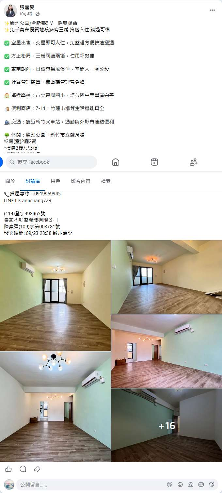 看原始刊登 → 查看貼文原文張嘉晏 9小時前 麗池公園/全新整理/三房雙陽台 免千萬在優質地段擁有三房.拎包入住.錯過可惜 空屋出售，交屋即可入住，免整理方便快速搬遷 方正格局，三房兩廳兩衛，使用坪效佳 東南朝向，日照與通風俱佳，空間大，零公設 社區管理簡單，無電梯管理費負擔 鄰近學校：市立東園國小、培英國中等學區完善 便利商店：7-11，竹蓮市場等生活機能齊全 交通：靠近新竹火車站，通勤與外縣市連結便利 休閒：麗池公園，新竹市立體育場 *3房(室)2廳2衛 *樓層3樓/共5樓 *總建物23.359坪 *室內坪數23.359坪 *土地坪數9.043坪 售價880萬 永慶新竹親水文化加盟店 賞屋專線：0919969945 LINE ID: annchang729 (114)登字498965號 彙家不動產開發有限公司 陳素萍(109)字第003781號 發文時間: 09/23 23:38 顯示較少 +16 公開留言…… 貼文內有 1 個連結（已檢查）
| 880 萬 | — | 3房—廳2衛 完全符合 | 23.359 坪 | 未註明 | 未註明 | — | — 年 | 3F | FB 貼文 0919969945 |
 看原始刊登 → 同一物件另有 5 筆刊登（不同仲介）
| 888 萬 | 33.84萬/坪 | 3房2廳2衛 完全符合 | 26.24 坪 | 1400 | 無 | 有 | 30.8 年 | 7F/7F | 有巢氏房屋 |
| 888 萬 | 27.77萬/坪 | 3房2廳1衛 差一點 | 31.98 坪 | 250 | 無 | 無 | 46.4 年 | 4F/5F | 有巢氏房屋 | |
 | 888 萬 | 35.85萬/坪 | 2房2廳2衛 差一點 | 24.77 坪 | 未註明 | 無 | 有 | 32.7 年 | 5F/5F | 有巢氏房屋 |
 看原始刊登 → 同一物件另有 8 筆刊登（不同仲介）
| 888 萬 | 22.84萬/坪 | 4房2廳2衛 超規格 | 38.88 坪 | 無 | 無 | 無 | 37 年 | 5F/5F | 仲介 洪煊惠 |
| 888 萬 | 26.48萬/坪 | 4房2廳1衛 差一點 | 33.54 坪 | 未註明 | 未註明 | — | 47.6 年 | 1-3F/3F | 永慶房屋 | |
| 888 萬 | 22.84萬/坪 | 5房2廳2衛 超規格 | 38.88 坪 | 未註明 | 未註明 | 無 | 37.5 年 | 5F/5F | 永慶房屋 | |
 | 888 萬 | 32.27萬/坪 | 2房2廳2衛 差一點 | 27.52 坪 | 未註明 | 未註明 | 有 | 32.8 年 | 6F/8F | 信義房屋 |
 | 888 萬 | 43.49萬/坪 | 3房2廳2衛 完全符合 | 20.42 坪 | 未註明 | 計算 | — | — 年 | 1-2F/2F | 永慶房屋 |
| 888 萬 | 36.32萬/坪 | 2房—廳2衛 差一點 | 24.45 坪 | 未註明 | 未註明 | 有 | 30 年 | 2F/6F | 仲介 張美華 | |
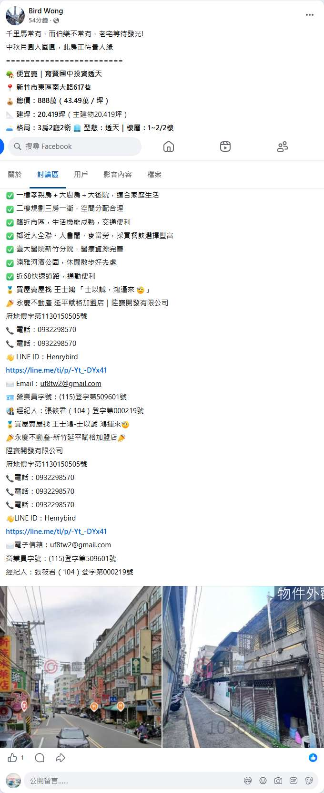 看原始刊登 → 查看貼文原文Bird Wong 54分鐘前 千里馬常有，而伯樂不常有，老宅等待發光! 中秋月圓人團圓，此房正待貴人緣 ======================== 便宜賣｜育賢國中投資透天 新竹市東區南大路617巷 總價：888萬（43.49萬／坪） 建坪：20.419坪（主建物20.419坪） 格局：3房2廳2衛 型態：透天｜樓層：1~2/2樓 屋齡：約39.6年 登記用途：住家用 學區：新竹國小、育賢國中 物件特色 前院空間可改室內車庫，具改造潛力 一樓孝親房＋大廚房＋大後院，適合家庭生活 二樓規劃三房一衛，空間分配合理 臨近市區，生活機能成熟，交通便利 鄰近大全聯、大魯閣、麥當勞，採買餐飲選擇豐富 臺大醫院新竹分院，醫療資源完善 湳雅河濱公園，休閒散步好去處 近68快速道路，通勤便利 買屋賣屋找 王士鴻 「士以誠，鴻運來 」 永慶不動產 延平賦格加盟店｜陞寶開發有限公司 府地價字第1130150505號 電話：0932298570 電話：0932298570 LINE ID：Henrybird Email：uf8tw2@gmail.com 營業員字號：(115)登字第509601號 經紀人：張筱君（104）登字第000219號 買屋賣屋找 王士鴻-士以誠 鴻運來 永慶不動產-新竹延平賦格加盟店 陞寶開發有限公司 府地價字第1130150505號 電話：0932298570 電話：0932298570 電話：0932298570 LINE ID：Henrybird 電子信箱：uf8tw2@gmail.com 營業員字號：(115)登字第509601號 經紀人：張筱君（104）登字第000219號 公開留言…… 貼文內有 2 個連結（已檢查）
| 888 萬 | — | 3房2廳2衛 完全符合 | 20.419 坪 | 未註明 | 未註明 | — | — 年 | 2F | FB 貼文 0932298570 |
| 888 萬 | 36.3萬/坪 | 2房1廳2衛 不符 | 24.46 坪 | 未註明 | 新竹市北區少年街 | 有 | 30.5 年 | 2F/6F | 永慶房屋 | |
| 888 萬 | 34.02萬/坪 | 7房0廳7衛 不符 | 26.11 坪 | 未註明 | 未註明 | — | 43 年 | 1F/2F | 中信房屋 | |
| 888 萬 | 23.12萬/坪 | 3房2廳2衛 完全符合 | 38.41 坪 | 未註明 | 未註明 | 有 | — 年 | 9-10F/10F | 永慶不動產 | |
| 888 萬 | 37.0萬/坪 | 3房2廳2衛 完全符合 | 24.0 坪 | — | 未註明 | 無 | 44 年 | 4F/5F | 仲介 謝時純 | |
| 888 萬 | 43.53萬/坪 | 3房1廳3衛 差一點 | 20.4 坪 | — | 未註明 | 有 | 31 年 | 1F/5F | 仲介 謝秀珍 | |
| 898 萬 | 24.57萬/坪 | 3房2廳2衛 完全符合 | 36.55 坪 | 1500元/月 | 無 | 有 | 32 年 | 8F/12F | 仲介 黃信議 | |
 | 898 萬 | 32.03萬/坪 | 4房2廳3衛 超規格 | 28.04 坪 | 1250 | 無 | 有 | 31.9 年 | 5F/5F | 有巢氏房屋 |
 看原始刊登 → 同一物件另有 3 筆刊登（不同仲介）
| 898 萬 | 24.57萬/坪 | 2房2廳2衛 差一點 | 36.55 坪 | 1500元/月 | 無 | 有 | 32 年 | 8F/12F | 仲介 戴先生 |
 | 898 萬 | 28.88萬/坪 | 3房2廳2衛 完全符合 | 31.1 坪 | 400元/月 | 無 | 有 | 42 年 | 5F/5F | 仲介 趙泓斌 |
 看原始刊登 → 同一物件另有 20 筆刊登（不同仲介）
| 898 萬 | 23.69萬/坪 | 4房2廳2衛 超規格 | 37.9 坪 | 未註明 | 無 | 無 | 45.2 年 | 5F/5F | 有巢氏房屋 |
 看原始刊登 → 同一物件另有 9 筆刊登（不同仲介）
| 898 萬 | 28.93萬/坪 | 3房2廳1衛 差一點 | 31.04 坪 | 未註明 | 無 | 無 | 0 年 | 2F/5F | 有巢氏房屋 |
| 898 萬 | 35.16萬/坪 | 3房2廳1衛 差一點 | 25.54 坪 | 未註明 | 無 | 無 | 44.5 年 | 2F/5F | 永慶房屋 | |
| 898 萬 | 34.66萬/坪 | 3房2廳1衛 差一點 | 25.91 坪 | 未註明 | 未註明 | 有 | — 年 | 8F/12F | 中信房屋 延平站前加盟店 | |
 | 898 萬 | 32.03萬/坪 | 4房2廳3衛 超規格 | 28.04 坪 | 未註明 | 未註明 | 有 | 31.9 年 | 4F/5F | 信義房屋 |
| 898 萬 | 36.64萬/坪 | 2房—廳2衛 差一點 | 24.51 坪 | 未註明 | 無 | 有 | 36.4 年 | 3F/12F | 有巢氏房屋 | |
| 898 萬 | 33.73萬/坪 | 2房2廳2衛 差一點 | 26.62 坪 | 未註明 | 未註明 | 無 | 33.3 年 | 5F/5F | 信義房屋 | |
 | 898 萬 | 26.04萬/坪 | 3房2廳2衛 完全符合 | 34.48 坪 | 未註明 | 未註明 | — | — 年 | 5F/6F | 永義房屋 |
| 898 萬 | 36.64萬/坪 | 2房1廳2衛 不符 | 24.51 坪 | 未註明 | 未註明 | 有 | — 年 | 3F/12F | 永義房屋 | |
 | 898 萬 | 28.87萬/坪 | 5房—廳5衛 超規格 | 31.1 坪 | 未註明 | 未註明 | — | — 年 | 5F/5F | 永義房屋 |
 | 898 萬 | 28.93萬/坪 | 3房2廳2衛 完全符合 | 31.04 坪 | 未註明 | 未註明 | 有 | 32.3 年 | 6F/12F | 永慶房屋 |
| 898 萬 | 16.9萬/坪 | 4房2廳2衛 超規格 | 53.15 坪 | 未註明 | 未註明 | 無 | 29.3 年 | 5F/5F | 永慶房屋 | |
| 898 萬 | 28.93萬/坪 | 3房2廳1衛 差一點 | 31.04 坪 | 未註明 | 未註明 | 無 | 46.2 年 | 2F/5F | 永慶房屋 | |
 看原始刊登 → 同一物件另有 4 筆刊登（不同仲介）
| 898 萬 | 26.38萬/坪 | 3房2廳2衛 完全符合 | 34.04 坪 | 未註明 | 未註明 | 有 | 31 年 | 4F/7F | 仲介 陳店長 |
| 898 萬 | 27.98萬/坪 | 3房2廳2衛 完全符合 | 32.1 坪 | 未註明 | 未註明 | 無 | 37 年 | 4F/5F | 仲介 蘇先生 | |
看原始刊登 → 查看貼文原文楊百祿 23小時前 三民學區優質3房｜自住首選 售價：898萬 格局：3 房 2 廳 2 衛 主+附：28.24坪 * 三民學區，孩子就學便利。 * 屋況佳、免大整理，可直接入住。 * 鄰近巨城百貨，購物、美食、娛樂一次滿足。 * 周邊商家林立，生活機能成熟便利。 * 交通四通八達，通勤輕鬆無負擔。 * 格局方正、採光通風佳，居住舒適 — — — — — — — — — — — — 新竹延平路 成交找百祿 新竹中信團隊 誠心服務 服務專線：0978992676 ＬＩＮＥ：82099918376 長冠不動產仲介經紀有限公司 營業員：113登字第479665號 經紀人：羅信雄99北市經證字第00744號 顯示較少 +5 公開留言…… 貼文內有 1 個連結（已檢查）
| 898 萬 | — | 3房—廳2衛 完全符合 | 28.24 坪 | 未註明 | 未註明 | — | — 年 | — | FB 貼文 0978992676 |
| 898 萬 | 35.27萬/坪 | 4房2廳3衛 超規格 | 25.46 坪 | 600 | 無 | 有 | 31.8 年 | 1F/5F | 有巢氏房屋 | |
| 898 萬 | 27.8萬/坪 | 3房2廳2衛 完全符合 | 32.3 坪 | 未註明 | 未註明 | 無 | 42.5 年 | 1F/5F | 信義房屋 | |
| 898 萬 | 28.93萬/坪 | 3房2廳1衛 差一點 | 31.04 坪 | 未註明 | 未註明 | — | — 年 | 1-5F/5F | 永慶不動產 | |
| 898 萬 | 26.77萬/坪 | 4房3廳1衛 差一點 | 33.54 坪 | 未註明 | 未註明 | — | 47.6 年 | 1-2F/2F | 永慶房屋 | |
| 898 萬 | 24.53萬/坪 | 3房2廳2衛 完全符合 | 36.61 坪 | 無 | 無 | 有 | 31 年 | 5F/6F | 仲介 曾于菖 | |
 看原始刊登 → 同一物件另有 4 筆刊登（不同仲介）
| 899 萬 | 37.46萬/坪 | 3房2廳2衛 完全符合 | 24 坪 | 未註明 | 無 | 無 | 0 年 | 3F/5F | 有巢氏房屋 |
 | 899 萬 | 31.05萬/坪 | 3房2廳2衛 完全符合 | 28.95 坪 | 未註明 | 無 | 有 | 32 年 | 2F/8F | 仲介 房仲奶爸 |
 | 919 萬 | 27.77萬/坪 | 3房2廳2衛 完全符合 | 33.09 坪 | 未註明 | 無 | 無 | 35.6 年 | 5F/5F | 有巢氏房屋 |
 | 928 萬 | 57.46萬/坪 | 2房2廳2衛 差一點 | 16.15 坪 | 未註明 | 計算 | 有 | 0.8 年 | 5F/5F | 永慶房屋 |
| 928 萬 | 22.4萬/坪 | 3房2廳2衛 完全符合 | 41.43 坪 | 未註明 | 未註明 | 無 | 42.1 年 | 4F/5F | 永慶房屋 | |
 看原始刊登 → 同一物件另有 4 筆刊登（不同仲介）
| 928 萬 | 25.45萬/坪 | 3房2廳2衛 完全符合 | 36.47 坪 | 未註明 | 有 | — | — 年 | 1F/5F | 永義房屋 |
| 928 萬 | 31.74萬/坪 | 3房2廳1衛 差一點 | 29.24 坪 | 未註明 | 《鄰近竹科通勤便利》 | 有 | 30.8 年 | 3F/14F | 永慶房屋 | |
| 928 萬 | 24.41萬/坪 | 3房2廳2衛 完全符合 | 38.01 坪 | 未註明 | 未註明 | 無 | 42.1 年 | 4F/5F | 永慶房屋 | |
| 928 萬 | 27.46萬/坪 | 5房—廳5衛 超規格 | 33.79 坪 | 未註明 | 未註明 | 無 | — 年 | 5F/5F | 永慶房屋 | |
| 938 萬 | 36.2萬/坪 | 3房2廳1衛 差一點 | 25.91 坪 | 未註明 | 無 | 有 | 32.3 年 | 8F/12F | 有巢氏房屋 | |
| 938 萬 | 36.2萬/坪 | 3房2廳1衛 差一點 | 25.91 坪 | 未註明 | 無 | 有 | 32.2 年 | 8F/12F | 有巢氏房屋 | |
 看原始刊登 → 同一物件另有 11 筆刊登（不同仲介）
| 938 萬 | 25.82萬/坪 | 3房2廳2衛 完全符合 | 36.32 坪 | 6587元/季度 | 機械式， | 有 | 18 年 | 5F/14F | — |
 | 938 萬 | 27.24萬/坪 | 2房2廳2衛 差一點 | 34.44 坪 | 未註明 | 未註明 | — | — 年 | 5F/5F | 永慶不動產 |
| 938 萬 | 37.24萬/坪 | 2房2廳2衛 差一點 | 25.19 坪 | 未註明 | 未註明 | 有 | 12.5 年 | 5F/5F | 永慶房屋 | |
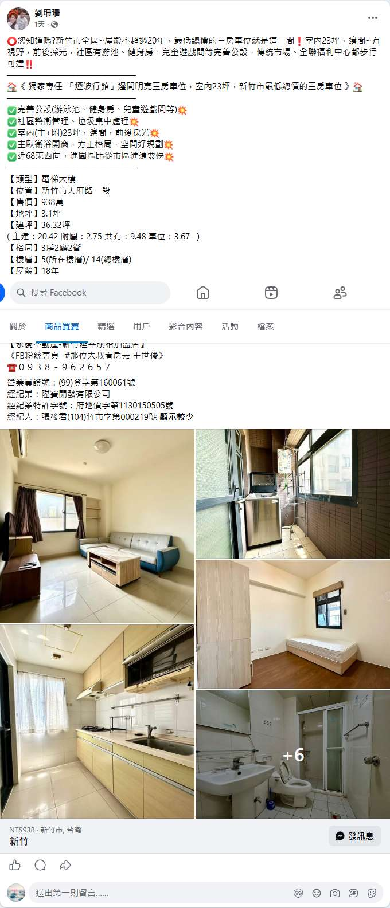 看原始刊登 → 查看貼文原文劉珊珊 您知道嗎?新竹市全區~屋齡不超過20年，最低總價的三房車位就是這一間 室內23坪，邊間~有視野，前後採光，社區有游池、健身房、兒童遊戲間等完善公設，傳統市場、全聯福利中心都步行可達 ——————————————— 《 獨家專任-「煙波行館」邊間明亮三房車位，室內23坪，新竹市最低總價的三房車位 》 ——————————————— 完善公設(游泳池、健身房、兒童遊戲間等) 社區警衛管理、垃圾集中處理 室內(主+附)23坪，邊間，前後採光 主臥衛浴開窗，方正格局，空間好規劃 近68東西向，進園區比從市區進還要快 ——————————————— 【類型】電梯大樓 【位置】新竹市天府路一段 【售價】938萬 【地坪】3.1坪 【建坪】36.32坪 ( 主建：20.42 附屬：2.75 共有：9.48 車位：3.67 ) 【格局】3房2廳2衛 【樓層】5(所在樓層)/ 14(總樓層) 【屋齡】18年 【車位】坡道機械式 ——————————————— 因受FB主動傳訊數量限制，請直接私訊我 或 Line (ID：d5500e1y)詢問 立馬給您完整資訊不隱藏 【永慶不動產-新竹延平賦格加盟店】 《FB粉絲專頁- #那位大叔看房去 王世俊》 ０９３８－９６２６５７ 營業員證號：(99)登字第160061號 經紀業：陞寶開發有限公司 經紀業特許字號：府地價字第1130150505號 經紀人：張筱君(104)竹市字第000219號 顯示較少 +6 NT$938 · 新竹市, 台灣 新竹 發訊息 送出第一則留言…… 貼文內有 1 個連結（已檢查）
| 938 萬 | — | 3房—廳2衛 完全符合 | 23.0 坪 | 未註明 | 未註明 | 有 | — 年 | — | FB 貼文 0938-962657 |
| 938 萬 | 25.21萬/坪 | 3房2廳2衛 完全符合 | 37.2 坪 | 1200元/月 | 無 | 有 | 32 年 | 6F/7F | 仲介 蔡小姐 | |
| 938 萬 | 31.95萬/坪 | 3房2廳2衛 完全符合 | 29.36 坪 | 未註明 | 未註明 | 無 | 32.9 年 | 5F/5F | 信義房屋 | |
| 938 萬 | 37.95萬/坪 | 2房2廳185衛 差一點 | 24.72 坪 | — | 未註明 | 有 | 29 年 | 5F/16F | 仲介 蕭小姐 | |
| 948 萬 | 27.55萬/坪 | 3房2廳2衛 完全符合 | 34.41 坪 | 未註明 | 未註明 | 有 | 18 年 | 12F/14F | 仲介 劉思潔 | |
 看原始刊登 → 同一物件另有 10 筆刊登（不同仲介）
| 950 萬 | 23.35萬/坪 | 3房2廳2衛 完全符合 | 40.69 坪 | 1300元/月 | 機械式，已含售金內 | 有 | 30 年 | 7F/10F | 仲介 莊先生 |
 看原始刊登 → 同一物件另有 4 筆刊登（不同仲介）
| 950 萬 | 27.1萬/坪 | 3房2廳2衛 完全符合 | 35.05 坪 | 2000 | 無 | 有 | 33.2 年 | 6F/6F | 有巢氏房屋 |
 看原始刊登 → 同一物件另有 11 筆刊登（不同仲介）
| 950 萬 | 29.79萬/坪 | 3房2廳2衛 完全符合 | 31.89 坪 | 4800元/季度 | 無 | 有 | 32 年 | 2F/7F | 仲介 蕭淑頻 |
| 950 萬 | 37.17萬/坪 | 6房2廳3衛 超規格 | 25.56 坪 | 未註明 | 無 | — | 49.3 年 | 1F/1F | 有巢氏房屋 | |
 | 950 萬 | 24.52萬/坪 | 3房2廳2衛 完全符合 | 38.75 坪 | 未註明 | 未註明 | 無 | 46.4 年 | 4F/5F | 信義房屋 |
| 950 萬 | 30.78萬/坪 | 3房2廳2衛 完全符合 | 30.86 坪 | 300 | 坪數 | 有 | — 年 | 1F/11F | 住商不動產 | |
 | 950 萬 | 29.36萬/坪 | 3房2廳2衛 完全符合 | 32.36 坪 | 未註明 | 新竹市東區振興路 | 有 | 33.2 年 | 5F/5F | 永慶房屋 |
| 950 萬 | 21.86萬/坪 | 3房2廳2衛 完全符合 | 43.45 坪 | 未註明 | 未註明 | 有 | 31.9 年 | 2F/7F | 永慶房屋 | |
| 950 萬 | 23.38萬/坪 | 2房2廳2衛 差一點 | 40.64 坪 | 未註明 | 未註明 | 有 | 30 年 | 7F/10F | 仲介 鄭雅瑄 | |
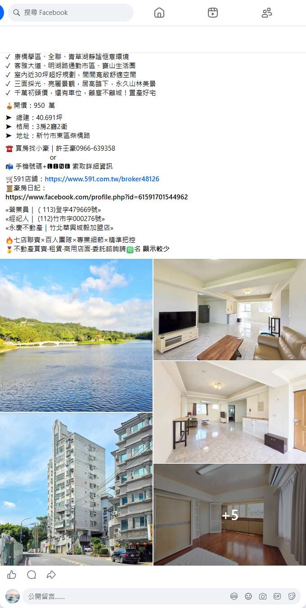 看原始刊登 → 查看貼文原文許壬豪 2分鐘前 免千萬有車位！青草湖畔 15分鐘進園區 超大三房景觀戶 低總價，新成屋沒有的大坪數 ✓ 康橋學區、全聯、青草湖靜謐愜意環境 ✓ 客雅大道、明湖路通勤市區、寶山生活圈 ✓ 室內近30坪超好規劃，間間寬敞舒適空間 ✓ 三面採光、亮麗景觀，居高臨下，永久山林美景 ✓ 千萬初頭價，還有車位，離塵不離城！置產好宅 開價：950 萬 ➤ 總建：40.691坪 ➤ 格局：3房2廳2衛 ➤ 地址：新竹市東區柴橋路 買房找小豪｜許壬豪0966-639358 or 手機號碼+🅻🅸🅽🅴 索取詳細資訊 591店鋪： 豪房日記： «營業員｜（113)登字479669號» «經紀人｜ (112)竹市字000276號» «永慶不動產｜竹北華興城毅加盟店» 七店聯賣×百人團隊×專業細節×精準把控 不動產買賣·租賃·商用店面·委託諮詢請 名 顯示較少 +5 公開留言…… 貼文內有 3 個連結（已檢查）
| 950 萬 | — | 3房—廳2衛 完全符合 | 30.0 坪 | 未註明 | 有 | — | — 年 | — | FB 貼文 0966-639358 |
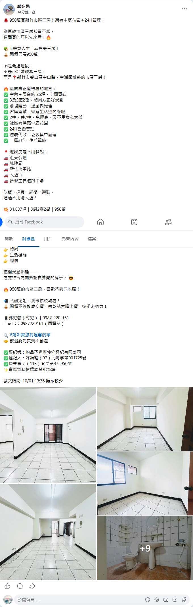 看原始刊登 → 查看貼文原文鄭宛馨 34分鐘前 950萬買新竹市區三房！還有中庭花園＋24H管理！ 別再說市區三房都買不起， 這間真的可以先來看！ 【得意人生｜幸福美三房】 開價只要950萬 不是偏遠地段， 不是小坪數硬塞三房， 而是 新竹市香山區中山路，生活圈成熟的市區三房！ 這間真正值得看的地方： 室內＋陽台約 25坪，空間實在 3房2廳2衛，格局方正好規劃 前後陽台，通風採光佳 客廳寬敞，家庭生活空間舒服 2樓／共7樓，免爬高、又不用擔心太低 社區有漂亮中庭花園 24H警衛管理 包裹代收＋垃圾集中處理 一層3戶，住戶單純 地段更是不用多說！ 近天公壇 城隍廟 新竹火車站 大遠百 多條主要道路串聯 吃飯、採買、逛街、通勤， 通通不用跑太遠！ 31.887坪｜3房2廳2衛｜950萬 很多人買房只看屋齡， 但真正懂買的人，看的其實是： 地段 坪效 格局 生活機能 總價 這間就是那種—— 看完很容易開始認真算錢的房子。 950萬的市區三房，喜歡不要只收藏！ 私訊宛姐，我帶你現場看！ 開價不等於成交價，喜歡就大膽出價，宛姐來努力！ 鄭宛馨（宛宛）｜0987-220-161 Line ID：0987220161（同電話） #宛姐幫您找溫馨的家 歡迎委託買賣不動產 經紀業：畇品不動產仲介經紀有限公司 經紀人：許縉翰（97）北縣字第001725號 營業員：（113）登字第475950號 實際資料依謄本登記為準 發文時間: 10/01 13:36 顯示較少 +9 公開留言…… 貼文內有 1 個連結（已檢查）
| 950 萬 | — | 3房—廳2衛 完全符合 | 25.0 坪 | 未註明 | 未註明 | — | — 年 | 2F | FB 貼文 0987-220-161 |
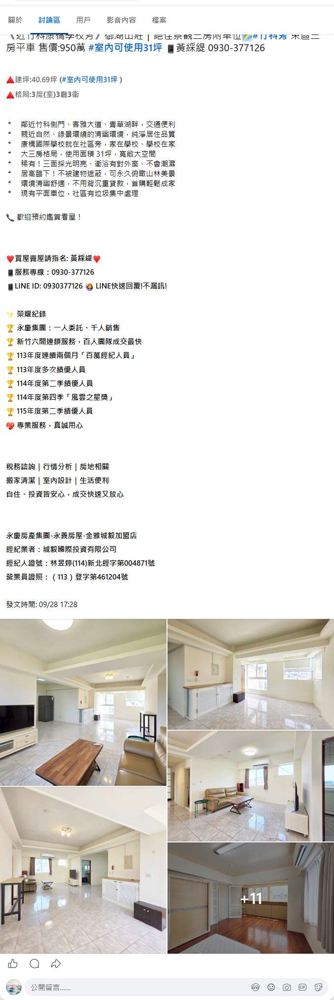 看原始刊登 → 查看貼文原文Hana Huang 42分鐘前 《近竹科康橋學校旁》御湖山莊｜絕佳景觀三房附車位 #竹科旁 東區三房平車 售價:950萬 #室內可使用31坪 黃綵緹 0930-377126 建坪:40.69坪 (#室內可使用31坪 ) 格局:3房(室)3廳3衛 ＊ 鄰近竹科側門、客雅大道、青草湖畔，交通便利 ＊ 親近自然、綠景環繞的清幽環境，純淨居住品質 ＊ 康橋國際學校就在社區旁，家在學校、學校在家 ＊ 大三房格局，使用面積 31坪，寬敞大空間 ＊ 稀有！三面採光明亮、衛浴有對外窗、不會潮濕 ＊ 居高臨下！不被建物遮蔽，可永久俯瞰山林美景 ＊ 環境清幽舒適，不用背沉重貸款，首購輕鬆成家 ＊ 現有平面車位，社區有垃圾集中處理 歡迎預約鑑賞看屋！ 買屋賣屋請指名: 黃綵緹 服務專線：0930-377126 LINE ID: 0930377126 LINE快速回覆!不漏訊! 榮耀紀錄 永慶集團：一人委託、千人銷售 新竹六間連鎖服務，百人團隊成交最快 113年度連續兩個月「百萬經紀人員」 113年度多次績優人員 114年度第二季績優人員 114年度第四季「風雲之星獎」 115年度第二季績優人員 專業服務，真誠用心 稅務諮詢｜行情分析｜房地相關 搬家清潔｜室內設計｜生活便利 自住、投資皆安心，成交快速又放心 永慶房產集團-永義房屋-金雅城毅加盟店 經紀業者：城毅國際投資有限公司 經紀人證號：林昱婷(114)新北經字第004871號 營業員證照：（113）登字第461204號 發文時間: 09/28 17:28 +11 公開留言…… 貼文內有 1 個連結（已檢查）
| 950 萬 | — | 3房—廳3衛 超規格 | 31.0 坪 | 未註明 | 有 | — | — 年 | — | FB 貼文 0930-377126 |
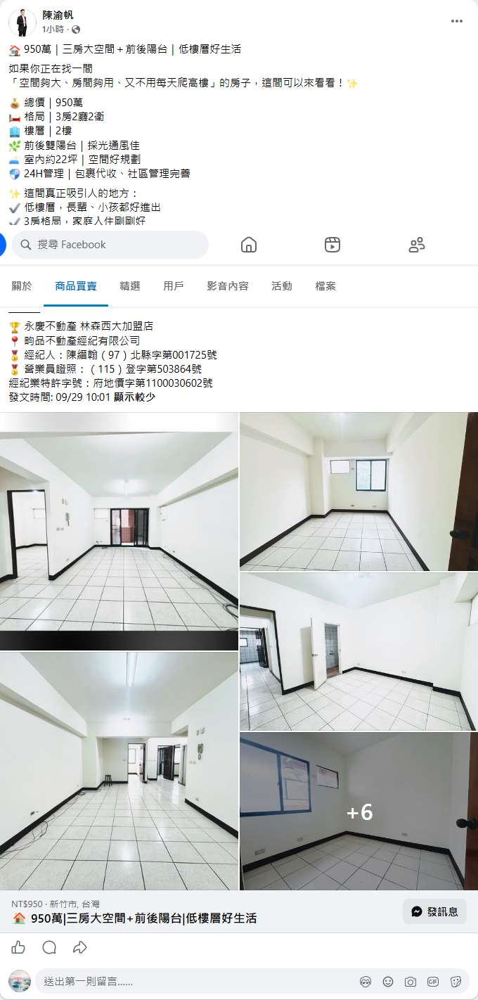 看原始刊登 → 查看貼文原文陳渝帆 大約 1 小時前 950萬｜三房大空間＋前後陽台｜低樓層好生活 如果你正在找一間 「空間夠大、房間夠用、又不用每天爬高樓」的房子，這間可以來看看！ 總價｜950萬 格局｜3房2廳2衛 樓層｜2樓 前後雙陽台｜採光通風佳 室內約22坪｜空間好規劃 24H管理｜包裹代收、社區管理完善 這間真正吸引人的地方： 低樓層，長輩、小孩都好進出 3房格局，家庭入住剛剛好 前後陽台，通風採光更舒服 屋況乾淨，簡單整理即可入住 社區戶數約159戶，管理完善 0903-521-886（渝帆） Line：www06090521 ——— 永慶不動產 林森西大加盟店 畇品不動產經紀有限公司 經紀人：陳縉翰（97）北縣字第001725號 營業員證照：（115）登字第503864號 經紀業特許字號：府地價字第1100030602號 發文時間: 09/29 10:01 顯示較少 +6 NT$950 · 新竹市, 台灣 🏠 950萬|三房大空間+前後陽台|低樓層好生活 發訊息 送出第一則留言…… 貼文內有 1 個連結（已檢查）
| 950 萬 | — | 3房—廳2衛 完全符合 | 22.0 坪 | 未註明 | 未註明 | — | — 年 | 2F | FB 貼文 0903-521-886 |
| 950 萬 | 31.94萬/坪 | 4房2廳2衛 超規格 | 29.74 坪 | 未註明 | 無 | — | 42.8 年 | 1-2F/2F | 有巢氏房屋 | |
| 950 萬 | 38.34萬/坪 | 3房2廳1衛 差一點 | 24.78 坪 | 未註明 | 未註明 | 有 | — 年 | 4F/15F | 永義房屋 | |
| 950 萬 | 28.75萬/坪 | 3房2廳2衛 完全符合 | 33.04 坪 | — | 未註明 | 有 | 3 年 | 7F/7F | 仲介 温小姐 | |
| 958 萬 | 30.92萬/坪 | 3房2廳3衛 超規格 | 30.98 坪 | 4000元/季度 | 無 | 有 | 33 年 | 4F/6F | 仲介 姜祖浩 | |
 看原始刊登 → 同一物件另有 4 筆刊登（不同仲介）
| 958 萬 | 32.05萬/坪 | 2房2廳2衛 差一點 | 29.89 坪 | 1310 | 坡道平面固定車位 | 有 | 33.4 年 | 4F/6F | 有巢氏房屋 |
 | 958 萬 | 31.71萬/坪 | 3房2廳2衛 完全符合 | 30.21 坪 | 1083 | 無 | 有 | 35.3 年 | 1F/6F | 有巢氏房屋 |
 看原始刊登 → 同一物件另有 4 筆刊登（不同仲介）
| 958 萬 | 30.93萬/坪 | 3房2廳2衛 完全符合 | 30.97 坪 | 1333元/月 | 無 | 有 | 33 年 | 4F/6F | — |
 | 958 萬 | 34.21萬/坪 | 3房2廳2衛 完全符合 | 28 坪 | 未註明 | 未註明 | 有 | 34 年 | 5F/5F | 中信房屋 南大加盟店 |
 | 958 萬 | 28.25萬/坪 | 5房—廳5衛 超規格 | 33.91 坪 | 未註明 | 無 | 無 | 44.8 年 | 4F/5F | 有巢氏房屋 |
 看原始刊登 → 同一物件另有 3 筆刊登（不同仲介）
| 958 萬 | 44.93萬/坪 | 2房2廳2衛 差一點 | 21.32 坪 | 未註明 | 有 | 有 | — 年 | 8F/10F | 永義房屋 |
| 958 萬 | 24.53萬/坪 | 3房2廳1衛 差一點 | 39.05 坪 | 未註明 | 未註明 | 有 | — 年 | 7F/20F | 永慶不動產 | |
| 958 萬 | 34.21萬/坪 | 3房2廳1衛 差一點 | 28 坪 | 未註明 | 未註明 | 有 | 34.3 年 | 5F/5F | 永慶房屋 | |
 | 960 萬 | 46.15萬/坪 | 3房2廳1衛 差一點 | 20.8 坪 | 未註明 | 無 | 無 | 44.3 年 | 2F/5F | 有巢氏房屋 |
 | 960 萬 | 31.33萬/坪 | 3房2廳2衛 完全符合 | 30.64 坪 | 未註明 | 未註明 | 有 | 18.4 年 | 13F/14F | 信義房屋 |
 看原始刊登 → 同一物件另有 3 筆刊登（不同仲介）
| 960 萬 | 33.72萬/坪 | 4房—廳4衛 超規格 | 28.47 坪 | 未註明 | 無 | 無 | 47.3 年 | 4F/4F | 有巢氏房屋 |
 看原始刊登 → 同一物件另有 2 筆刊登（不同仲介）
| 968 萬 | 30.38萬/坪 | 3房2廳2衛 完全符合 | 31.86 坪 | 1000 | 有 | 有 | 31 年 | 7F/11F | 有巢氏房屋 |
| 968 萬 | 38.05萬/坪 | 2房2廳2衛 差一點 | 25.44 坪 | 未註明 | 無 | 有 | 12.5 年 | 2F/5F | 有巢氏房屋 | |
 看原始刊登 → 同一物件另有 4 筆刊登（不同仲介）
| 968 萬 | 30.45萬/坪 | 3房2廳2衛 完全符合 | 31.79 坪 | 未註明 | 無 | 無 | 42.3 年 | 4F/5F | 有巢氏房屋 |
 看原始刊登 → 同一物件另有 2 筆刊登（不同仲介）
| 968 萬 | 38.64萬/坪 | 3房2廳2衛 完全符合 | 25.05 坪 | 未註明 | 未註明 | 無 | 47.2 年 | 2F/5F | 永慶房屋 |
 看原始刊登 → 同一物件另有 3 筆刊登（不同仲介）
| 980 萬 | 27.92萬/坪 | 3房2廳2衛 完全符合 | 35.1 坪 | 2080 | 坡道機械固定車位 | 有 | 18.4 年 | 12F/14F | 有巢氏房屋 |
| 980 萬 | 32.58萬/坪 | 3房2廳1衛 差一點 | 30.08 坪 | 1400元/月 | 無 | 有 | 32 年 | 7F/12F | 仲介 值先生 | |
 | 980 萬 | 36.3萬/坪 | 3房2廳1衛 差一點 | 27.0 坪 | 無 | 無 | 無 | 40 年 | 2F/5F | 仲介 陳添旺 |
| 980 萬 | 28.48萬/坪 | 3房2廳2衛 完全符合 | 34.41 坪 | 700 | 無 | 無 | 35.4 年 | 1F/5F | 有巢氏房屋 | |
 看原始刊登 → 同一物件另有 3 筆刊登（不同仲介）
| 980 萬 | 26.78萬/坪 | 3房2廳2衛 完全符合 | 36.6 坪 | 未註明 | 無 | 有 | 31 年 | 3F/6F | 仲介 張惠珊 |
| 980 萬 | 32.47萬/坪 | 4房2廳1衛 差一點 | 30.18 坪 | 未註明 | 未註明 | — | — 年 | 1-2F/2F | 永慶房屋 | |
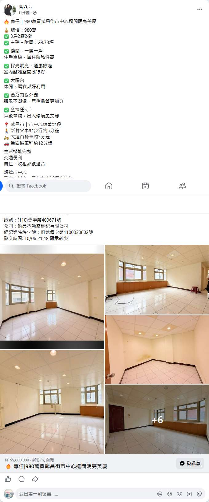 看原始刊登 → 查看貼文原文高以芸 11分鐘前 專任｜980萬買武昌街市中心邊間明亮美廈 總價：980萬 3房2廳2衛 主建＋附屬：29.73坪 邊間，一層一戶 住戶單純，居住隱私性高 採光明亮、通風舒適 室內整體空間感很好 大陽台 休閒、曬衣都好利用 衛浴有對外窗 通風不潮濕，居住品質更加分 全棟僅5戶 戶數單純，出入環境更安靜 武昌街｜市中心精華地段 新竹火車站步行約5分鐘 大遠百騎車約3分鐘 進園區車程約12分鐘 生活機能完整 交通便利 自住、收租都很適合 想找市中心 又在意採光、隱私與生活便利性的 這間真的可以安排看看 歡迎來電／以芸為您服務 0927-830623 LINE ID：a50096 －－－－－－－－－－－－－－ 證號：(110)登字第400671號 公司：畇品不動產經紀有限公司 經紀業特許字號：府地價字第1100030602號 發文時間: 10/06 21:48 顯示較少 +6 NT$9,800,000 · 新竹市, 台灣 🔥 專任|980萬買武昌街市中心邊間明亮美廈 發訊息 送出第一則留言…… 貼文內有 1 個連結（已檢查）
同一物件另有 1 筆刊登（不同仲介）
| 980 萬 | — | 3房2廳2衛 完全符合 | 29.73 坪 | 未註明 | 未註明 | — | — 年 | — | FB 貼文 0927-830623 |
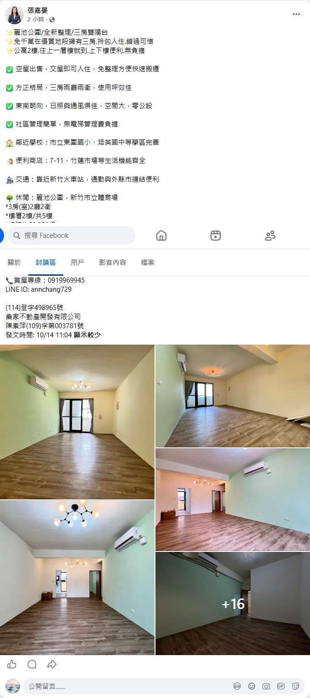 看原始刊登 → 查看貼文原文張嘉晏 41分鐘前 n͏ e͏ d͏ S͏ r͏ p͏ s͏ o͏ t͏ o͏ h͏ c͏ u͏ 4͏ 3͏ t͏ 4͏ 分͏ 7͏ f͏ i͏ g͏ 8͏ 7͏ t͏ f͏ c͏ m͏ 6͏ c͏ 6͏ l͏ 1͏ 4͏ l͏ 4͏ t͏ 5͏ 3͏ l͏ 9͏ u͏ u͏ a͏ 7͏ 3͏ ͏ g͏ 0͏ i͏ l͏ i͏ a͏ l͏ 1͏ 鐘͏ c͏ 8͏ 1͏ 8͏ 麗池公園/全新整理/三房雙陽台 免千萬在優質地段擁有三房.拎包入住.錯過可惜 公寓2樓.往上一層樓就到.上下樓便利.無負擔 空屋出售，交屋即可入住，免整理方便快速搬遷 方正格局，三房兩廳兩衛，使用坪效佳 東南朝向，日照與通風俱佳，空間大，零公設 社區管理簡單，無電梯管理費負擔 鄰近學校：市立東園國小、培英國中等學區完善 便利商店：7-11，竹蓮市場等生活機能齊全 交通：靠近新竹火車站，通勤與外縣市連結便利 休閒：麗池公園，新竹市立體育場 *3房(室)2廳2衛 *樓層2樓/共5樓 *總建物23.359坪 *室內坪數23.359坪 *土地坪數9.043坪 售價980萬 永慶新竹親水文化加盟店 賞屋專線：0919969945 LINE ID: annchang729 (114)登字498965號 彙家不動產開發有限公司 陳素萍(109)字第003781號 發文時間: 10/14 11:04 顯示較少 +16 公開留言…… 貼文內有 1 個連結（已檢查）
| 980 萬 | — | 3房—廳2衛 完全符合 | 23.359 坪 | 未註明 | 未註明 | 無 | — 年 | 2F | FB 貼文 0919969945 |
| 980 萬 | 25.92萬/坪 | 3房2廳2衛 完全符合 | 37.81 坪 | 未註明 | 有 | 有 | 30 年 | 6F/6F | 信義房屋 | |
| 980 萬 | 32.48萬/坪 | 4房2廳2衛 超規格 | 30.17 坪 | 無 | 無 | — | 47 年 | 整棟/2F | 仲介 孫琪軒 | |
 | 988 萬 | 40.31萬/坪 | 2房1廳2衛 不符 | 24.51 坪 | 1600 | 無 | 有 | 36.4 年 | 3F/12F | 有巢氏房屋 |
| 988 萬 | 35.53萬/坪 | 3房2廳2衛 完全符合 | 27.81 坪 | 3000 | 無 | 有 | 32.8 年 | 10F/12F | 有巢氏房屋 | |
 看原始刊登 → 同一物件另有 17 筆刊登（不同仲介）
| 988 萬 | 32.85萬/坪 | 3房2廳2衛 完全符合 | 30.08 坪 | 未註明 | 無 | 無 | 39.3 年 | 3F/5F | 有巢氏房屋 |
 | 988 萬 | 26.14萬/坪 | 3房2廳2衛 完全符合 | 37.79 坪 | 未註明 | 有 | 有 | 31.9 年 | 3F/5F | 信義房屋 |
 看原始刊登 → 同一物件另有 3 筆刊登（不同仲介）
| 988 萬 | 27.68萬/坪 | 3房2廳2衛 完全符合 | 35.69 坪 | 1867元/月 | 無 | 無 | — 年 | 7F/7F | 仲介 李成琁 |
 看原始刊登 → 同一物件另有 4 筆刊登（不同仲介）
| 988 萬 | 27.47萬/坪 | 4房2廳2衛 超規格 | 35.97 坪 | 未註明 | 無 | 無 | 43.8 年 | 5F/5F | 有巢氏房屋 |
 看原始刊登 → 同一物件另有 18 筆刊登（不同仲介）
| 988 萬 | 36.57萬/坪 | 3房2廳1衛 差一點 | 27.02 坪 | 未註明 | 無 | 無 | 42.9 年 | 2F/5F | 有巢氏房屋 |
 看原始刊登 → 同一物件另有 4 筆刊登（不同仲介）
| 988 萬 | 43.72萬/坪 | 3房2廳1衛 差一點 | 22.6 坪 | 無 | 無 | 無 | 47 年 | 3F/4F | 仲介 凃于淵 |
| 988 萬 | 40.31萬/坪 | 2房—廳2衛 差一點 | 24.51 坪 | 1450 | 無 | 有 | 36.4 年 | 3F/12F | 有巢氏房屋 | |
 | 988 萬 | 26.99萬/坪 | 3房2廳1衛 差一點 | 36.6 坪 | 未註明 | 有 | 無 | 33 年 | 1F/5F | 信義房屋 |
 | 988 萬 | 36.62萬/坪 | 5房—廳5衛 超規格 | 26.98 坪 | 208 | 無 | 無 | 47.1 年 | 2F/5F | 永慶房屋 |
| 988 萬 | 40.02萬/坪 | 2房1廳2衛 不符 | 24.69 坪 | 未註明 | 有 | 有 | 17.8 年 | 4F/7F | 信義房屋 | |
 | 988 萬 | 36.87萬/坪 | 3房2廳2衛 完全符合 | 26.8 坪 | 未註明 | 未註明 | — | — 年 | 3F/5F | 永慶不動產 |
 | 988 萬 | 30.76萬/坪 | 3房2廳2衛 完全符合 | 32.12 坪 | 未註明 | 未註明 | — | — 年 | 5F/5F | 永慶不動產 |
| 988 萬 | 45.18萬/坪 | 3房2廳1衛 差一點 | 21.87 坪 | 未註明 | 未註明 | — | — 年 | 4F/5F | 永慶不動產 | |
| 988 萬 | 43.72萬/坪 | 3房2廳1衛 差一點 | 22.6 坪 | 未註明 | 未註明 | 無 | — 年 | 4F/4F | 永義房屋 | |
| 988 萬 | 32.85萬/坪 | 3房2廳1衛 差一點 | 30.08 坪 | 無 | 坪數 | 無 | — 年 | 3F/5F | 住商不動產 | |
 | 988 萬 | 33.09萬/坪 | 3房2廳2衛 完全符合 | 29.86 坪 | 未註明 | 新竹市香山區經國路三段 | 有 | 29.1 年 | 11F/13F | 永慶房屋 |
| 988 萬 | 27.47萬/坪 | 4房2廳2衛 超規格 | 35.97 坪 | 未註明 | 新竹市東區明湖路 | 無 | 43.8 年 | 5F/5F | 永慶房屋 | |
| 988 萬 | 53.84萬/坪 | 2房—廳2衛 差一點 | 18.35 坪 | 未註明 | 新竹市北區經國路二段 | 有 | 11.4 年 | 5F/7F | 永慶房屋 | |
| 988 萬 | 24.11萬/坪 | 5房1廳5衛 差一點 | 40.98 坪 | 未註明 | 未註明 | 無 | 36.4 年 | 4F/5F | 永慶房屋 | |
| 988 萬 | 49.18萬/坪 | 3房2廳1衛 差一點 | 20.09 坪 | 未註明 | 未註明 | 無 | — 年 | 3F/4F | 永慶房屋 | |
| 988 萬 | 31.01萬/坪 | 3房2廳2衛 完全符合 | 31.86 坪 | 未註明 | 未註明 | 有 | 31 年 | 7F/11F | 仲介 朱鑫可 | |
| 988 萬 | 30.97萬/坪 | 3房2廳3衛 超規格 | 31.9 坪 | 未註明 | 未註明 | — | 21 年 | 整棟/2F | 仲介 田雅文 | |
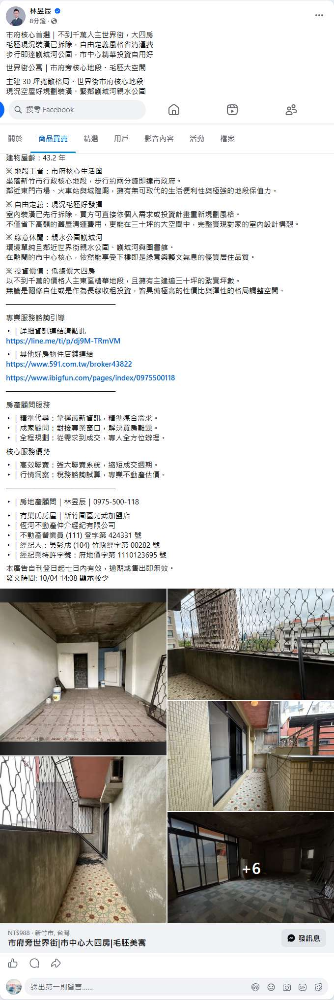 看原始刊登 → 查看貼文原文林昱辰 8分鐘前 市府核心首選｜不到千萬入主世界街，大四房 毛胚現況裝潢已拆除，自由定義風格省清運費 步行即達護城河公園，市中心精華投資自用好 世界街公寓｜市府旁核心地段・毛胚大空間 主建 30 坪寬敞格局・世界街市府核心地段 現況空屋好規劃裝潢・緊鄰護城河親水公園 新竹市東區 世界街 開價｜988 萬 建物總坪：35.97 坪 主建坪數：30.317 坪 格局配置：4 房 2 廳 2 衛 建物屋齡：43.2 年 ※ 地段王者：市府核心生活圈 坐落新竹市行政核心地段，步行約兩分鐘即達市政府。 鄰近東門市場、火車站與城隍廟，擁有無可取代的生活便利性與極強的地段保值力。 ※ 自由定義：現況毛胚好發揮 室內裝潢已先行拆除，買方可直接依個人需求或投資計畫重新規劃風格。 不僅省下高額的舊屋清運費用，更能在三十坪的大空間中，完整實現對家的室內設計構想。 ※ 綠意休閒：親水公園護城河 環境單純且鄰近世界街親水公園、護城河與圖書館。 在熱鬧的市中心核心，依然能享受下樓即是綠意與藝文氣息的優質居住品質。 ※ 投資價值：低總價大四房 以不到千萬的價格入主東區精華地段，且擁有主建逾三十坪的紮實坪數。 無論是翻修自住或是作為長線收租投資，皆具備極高的性價比與彈性的格局調整空間。 ───────────────────── 專業服務諮詢引導 ▸｜詳細資訊連結請點此 ▸｜其他好房物件店鋪連結 ───────────────────── 房產顧問服務 ▸｜精準代尋：掌握最新資訊，精準媒合需求。 ▸｜成家顧問：對接專業窗口，解決買房難題。 ▸｜全程規劃：從需求到成交，專人全方位辦理。 核心服務優勢 ▸｜高效聯賣：強大聯賣系統，縮短成交週期。 ▸｜行情洞察：稅務諮詢試算，專業不動產估價。 ───────────────────── ▸｜房地產顧問｜林昱辰｜0975-500-118 ▸｜有巢氏房屋｜新竹園區光武加盟店 ▸｜恆河不動產仲介經紀有限公司 ▸｜不動產營業員 (111) 登字第 424331 號 ▸｜經紀人：吳彩成 (104) 竹縣經字第 00282 號 ▸｜經紀業特許字號：府地價字第 1110123695 號 本廣告自刊登日起七日內有效，逾期或售出即無效。 發文時間: 10/04 14:08 顯示較少 +6 NT$988 · 新竹市, 台灣 市府旁世界街|市中心大四房|毛胚美寓 發訊息 送出第一則留言…… 貼文內有 4 個連結（已檢查）
| 988 萬 | — | 4房—廳2衛 超規格 | 30.0 坪 | 未註明 | 未註明 | 無 | — 年 | — | FB 貼文 0975-500-118 |
| 990 萬 | 20.3萬/坪 | 4房2廳2衛 超規格 | 48.76 坪 | 未註明 | 未註明 | 無 | 46.4 年 | 5F/5F | 永慶房屋 | |
| 990 萬 | 35.37萬/坪 | 3房2廳2衛 完全符合 | 27.99 坪 | 500元/月 | 平面式 | 有 | 31 年 | 3F/5F | 仲介 翁青山 | |
 | 995 萬 | 29.0萬/坪 | 4房2廳2衛 超規格 | 34.31 坪 | 未註明 | 未註明 | 無 | 44.8 年 | 5F/5F | 永慶房屋 |
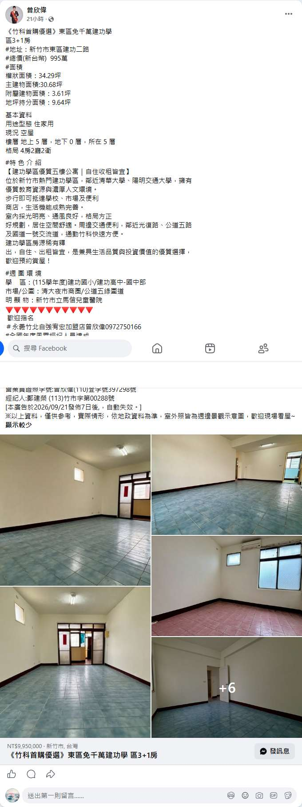 看原始刊登 → 查看貼文原文曾欣偉 《竹科首購優選》東區免千萬建功學 區3+1房 #地址：新竹市東區建功二路 #總價(新台幣) 995萬 #面積 權狀面積：34.29坪 主建物面積:30.68坪 附屬建物面積：3.61坪 地坪持分面積：9.64坪 基本資料 用途型態 住家用 現況 空屋 樓層 地上 5 層，地下 0 層，所在 5 層 格局 4房2廳2衛 #特 色 介 紹 【建功學區優質五樓公寓｜自住收租皆宜】 位於新竹市熱門建功學區，鄰近清華大學、陽明交通大學，擁有 優質教育資源與濃厚人文環境。 步行即可抵達學校、市場及便利 商店，生活機能成熟完善。 室內採光明亮、通風良好，格局方正 好規劃，居住空間舒適。周邊交通便利，鄰近光復路、公道五路 及國道一號交流道，通勤竹科快速方便。 建功學區房源稀有釋 出，自住、出租皆宜，是兼具生活品質與投資價值的優質選擇， 歡迎預約賞屋！ #週 圍 環 境 學 區：(115學年度)建功國小/建功高中-國中部 市場/公園：清大夜市商圈/公道五綠園道 明 顯 物：新竹市立馬偕兒童醫院 歡迎指名 ＃永義竹北自強宥宏加盟店曾欣偉0972750166 #全國年度風雲經紀人員達成 #單月三百萬經紀人員 #多次單月百萬經紀人員 #這次別再錯過了 ※趕緊來電預約了解資訊 #永義房屋竹北自強宥宏加盟店 營業員證照字號:曾欣偉(110)登字號397298號 經紀人:鄭建榮 (113)竹市字第00288號 [本廣告於2026/09/21發佈7日後,，自動失效。] ※以上資料，僅供參考，實際情形，依地政資料為準，室外照皆為週邊景觀示意圖，歡迎現場看屋~ 顯示較少 +6 NT$9,950,000 · 新竹市, 台灣 《竹科首購優選》東區免千萬建功學 區3+1房 發訊息 送出第一則留言…… 貼文內有 1 個連結（已檢查）
| 995 萬 | — | 3房—廳2衛 完全符合 | 34.29 坪 | 未註明 | 未註明 | 無 | — 年 | — | FB 貼文 0972750166 |
 看原始刊登 → 同一物件另有 38 筆刊登（不同仲介）
| 998 萬 | 37.24萬/坪 | 3房2廳2衛 完全符合 | 26.8 坪 | 1000 | 無 | 無 | 39.6 年 | 3F/5F | 有巢氏房屋 |
 看原始刊登 → 同一物件另有 6 筆刊登（不同仲介）
| 998 萬 | 26.97萬/坪 | 3房2廳2衛 完全符合 | 37.01 坪 | 250 | 無 | 有 | 28.1 年 | 6F/6F | 有巢氏房屋 |
 看原始刊登 → 同一物件另有 6 筆刊登（不同仲介）
| 998 萬 | 29.04萬/坪 | 3房2廳1衛 差一點 | 34.37 坪 | 6000元/季度 | 機械式，已含售金內 | 有 | 33 年 | 2F/7F | 仲介 黃鑠雅 |
 看原始刊登 → 同一物件另有 3 筆刊登（不同仲介）
| 998 萬 | 43.47萬/坪 | 4房1廳2衛 差一點 | 22.96 坪 | 未註明 | 無 | 無 | 42.4 年 | 5F/5F | 有巢氏房屋 |
 看原始刊登 → 同一物件另有 5 筆刊登（不同仲介）
| 998 萬 | 27.22萬/坪 | 3房1廳2衛 差一點 | 36.67 坪 | 500 | 坡道機械固定車位 | 有 | 31.3 年 | 2F/10F | 有巢氏房屋 |
 | 998 萬 | 37.24萬/坪 | 3房2廳2衛 完全符合 | 26.8 坪 | 1000 | 無 | 無 | 39.6 年 | 3F/5F | 有巢氏房屋 |
| 998 萬 | 42.13萬/坪 | 6房2廳3衛 超規格 | 23.69 坪 | 未註明 | 無 | — | 49.2 年 | 1-2F/2F | 有巢氏房屋 | |
 | 998 萬 | 25.6萬/坪 | 4房2廳2衛 超規格 | 38.99 坪 | 800 | 無 | 無 | 39.7 年 | 5F/5F | 有巢氏房屋 |
 | 998 萬 | 55.69萬/坪 | 3房2廳1衛 差一點 | 17.92 坪 | 未註明 | 無 | 無 | 44.8 年 | 1F/5F | 有巢氏房屋 |
 | 998 萬 | 32.42萬/坪 | 3房2廳2衛 完全符合 | 30.78 坪 | 未註明 | 已租~出價談 | 有 | 34.3 年 | 5F/5F | 永慶房屋 |
 看原始刊登 → 同一物件另有 3 筆刊登（不同仲介）
| 998 萬 | 29.74萬/坪 | 3房2廳2衛 完全符合 | 33.56 坪 | 未註明 | 新竹市香山區東華路 | 有 | 32.3 年 | 4F/12F | 永慶房屋 |
 看原始刊登 → 同一物件另有 6 筆刊登（不同仲介）
| 998 萬 | 38.05萬/坪 | 5房—廳5衛 超規格 | 26.23 坪 | 未註明 | 無 | 無 | 46.4 年 | 4F/4F | 有巢氏房屋 |
 | 998 萬 | 27.75萬/坪 | 4房2廳2衛 超規格 | 35.97 坪 | 未註明 | 無 | 無 | 43.8 年 | 5F/5F | 永慶房屋 |
| 998 萬 | 22.3萬/坪 | 4房2廳2衛 超規格 | 44.75 坪 | 未註明 | 有 | 無 | 29.4 年 | 3F/5F | 信義房屋 | |
| 998 萬 | 49.67萬/坪 | 3房2廳1衛 差一點 | 20.09 坪 | 未註明 | 無 | 無 | 47 年 | 3F/4F | 仲介 彭立宇 | |
| 998 萬 | 30.55萬/坪 | 3房2廳2衛 完全符合 | 32.67 坪 | 未註明 | 未註明 | 無 | 46.4 年 | 1F/5F | 信義房屋 | |
| 998 萬 | 39.21萬/坪 | 4房2廳2衛 超規格 | 25.45 坪 | 未註明 | 未註明 | 有 | 31.9 年 | 1F/5F | 信義房屋 | |
| 998 萬 | 38.31萬/坪 | 3房2廳1衛 差一點 | 26.05 坪 | 未註明 | 未註明 | — | 44 年 | 1F/1F | 中信房屋 延平站前加盟店 | |
| 998 萬 | 30.55萬/坪 | 3房2廳1衛 差一點 | 32.67 坪 | 未註明 | 未註明 | 有 | 46 年 | 1F/0F | 中信房屋 | |
| 998 萬 | 29.74萬/坪 | 3房2廳1衛 差一點 | 33.56 坪 | 未註明 | 未註明 | 有 | 32.3 年 | 4F/12F | 信義房屋 | |
 | 998 萬 | 35.38萬/坪 | 5房0廳5衛 不符 | 28.21 坪 | 未註明 | 未註明 | 有 | 47 年 | 4F/0F | 中信房屋 |
 看原始刊登 → 同一物件另有 5 筆刊登（不同仲介）
| 998 萬 | 37.79萬/坪 | 3房2廳2衛 完全符合 | 26.41 坪 | 未註明 | 有 | — | — 年 | 2F/5F | 永義房屋 |
 | 998 萬 | 27.34萬/坪 | 3房2廳2衛 完全符合 | 36.5 坪 | 未註明 | 有 | — | — 年 | 4F/5F | 永義房屋 |
 看原始刊登 → 同一物件另有 5 筆刊登（不同仲介）
| 998 萬 | 23.39萬/坪 | 4房2廳2衛 超規格 | 42.66 坪 | 未註明 | 有 | — | — 年 | 4-5F/5F | 永慶不動產 |
 | 998 萬 | 42.72萬/坪 | 3房2廳2衛 完全符合 | 23.36 坪 | 未註明 | 未註明 | — | — 年 | 2F/5F | 永慶不動產 |
 | 998 萬 | 33.18萬/坪 | 3房2廳2衛 完全符合 | 30.08 坪 | 未註明 | 未註明 | — | — 年 | 3F/5F | 永慶不動產 |
 | 998 萬 | 29.56萬/坪 | 3房2廳2衛 完全符合 | 33.76 坪 | 未註明 | 未註明 | 有 | — 年 | 3F/8F | 永慶不動產 |
 看原始刊登 → 同一物件另有 3 筆刊登（不同仲介）
| 998 萬 | 35.07萬/坪 | 2房2廳2衛 差一點 | 28.46 坪 | 未註明 | 未註明 | — | — 年 | 3F/5F | 永義房屋 |
| 998 萬 | 28.71萬/坪 | 2房2廳2衛 差一點 | 34.76 坪 | 未註明 | 未註明 | 有 | — 年 | 4F/14F | 永慶不動產 | |
| 998 萬 | 24.94萬/坪 | 3房2廳2衛 完全符合 | 40.02 坪 | 未註明 | 計算 | 有 | 31.5 年 | 4F/9F | 永慶房屋 | |
| 998 萬 | 24.94萬/坪 | 3房2廳2衛 完全符合 | 40.02 坪 | 未註明 | 計算 | 有 | 31.5 年 | 5F/9F | 永慶房屋 | |
 看原始刊登 → 同一物件另有 5 筆刊登（不同仲介）
| 998 萬 | 28.47萬/坪 | 3房2廳2衛 完全符合 | 35.05 坪 | 未註明 | 未註明 | 有 | 33 年 | 6F/6F | 仲介 劉英杰 |
| 998 萬 | 30.17萬/坪 | 3房2廳1衛 差一點 | 33.08 坪 | 未註明 | 未註明 | 有 | 31 年 | 10F/12F | 仲介 陳秀玲 | |
| 998 萬 | 34.41萬/坪 | 7房—廳7衛 超規格 | 29.0 坪 | 未註明 | 未註明 | 無 | 41 年 | 5F/5F | 仲介 高小姐 | |
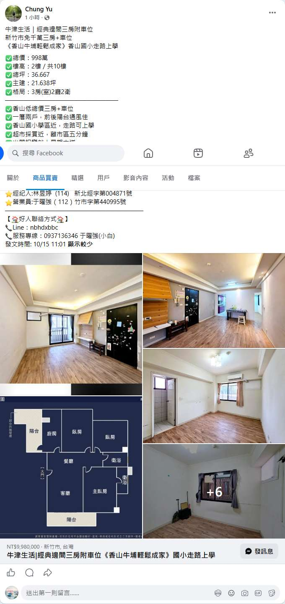 看原始刊登 → 查看貼文原文Chung Yu 23分鐘前 d͏ s͏ o͏ p͏ e͏ t͏ n͏ r͏ o͏ S͏ 1͏ f͏ a͏ 4͏ 0͏ i͏ 5͏ 0͏ 4͏ 3͏ i͏ l͏ 3͏ a͏ i͏ m͏ t͏ 2͏ f͏ ͏ m͏ 7͏ 8͏ 7͏ g͏ 5͏ h͏ t͏ 0͏ 3͏ g͏ 2͏ f͏ 2͏ g͏ h͏ 5͏ l͏ i͏ 5͏ i͏ 9͏ a͏ u͏ i͏ 鐘͏ 6͏ 分͏ g͏ 9͏ 牛津生活｜經典邊間三房附車位 新竹市免千萬三房+車位 《香山牛埔輕鬆成家》香山國小走路上學 總價：998萬 樓高：2樓 / 共10樓 總坪：36.667 主建：21.638坪 格局：3房(室)2廳2衛 —————————————————— 香山低總價三房+車位 一層兩戶，前後陽台通風佳 香山國小學區近，走路可上學 超市採買近，離市區五分鐘 出門拐彎就上景觀大道 管理費季繳1500/500(月) 停車費年繳2700/225(月) 對面就是香山游泳池 ————————————————————— 城毅國際投資有限公司 新竹市北區金雅路5號 (金雅城毅店) 經紀人:林昱婷 (114) 新北經字第004871號 營業員:于曜強（112）竹市字第440995號 —————————————————————— 【 好人聯絡方式 】 Line：nbhdxbbc 服務專線：0937136346 于曜強(小白) 發文時間: 10/15 11:01 顯示較少 +6 NT$9,980,000 · 新竹市, 台灣 牛津生活|經典邊間三房附車位《香山牛埔輕鬆成家》國小走路上學 發訊息 送出第一則留言…… 貼文內有 1 個連結（已檢查）
| 998 萬 | — | 3房—廳2衛 完全符合 | 21.638 坪 | 1500 | 有 | — | — 年 | 2F | FB 貼文 0937136346 |
| 998 萬 | 49.26萬/坪 | 3房2廳3衛 超規格 | 20.26 坪 | 未註明 | 未註明 | — | — 年 | 整棟/3F | 仲介 朱立人 | |
看原始刊登 → 查看貼文原文楊百祿 23小時前 遠百三房華廈+車位 免千萬 售價：998萬 格局：3 房 2 廳 2 衛 主+附：25.06坪 絕版三房+車位免千萬 雙衛浴開窗，通風佳 雙後陽台，空間大好規劃 走路上學接送免煩惱 機能極佳、採購方便 近茄冬交流道南通北往超便利 — — — — — — — — — — — — 新竹延平路 成交找百祿 新竹中信團隊 誠心服務 服務專線：0978992676 ＬＩＮＥ：82099918376 長冠不動產仲介經紀有限公司 營業員：113登字第479665號 經紀人：羅信雄99北市經證字第00744號 顯示較少 +6 公開留言…… 貼文內有 1 個連結（已檢查）
| 998 萬 | — | 3房—廳2衛 完全符合 | 25.06 坪 | 未註明 | 未註明 | 有 | — 年 | — | FB 貼文 0978992676 |
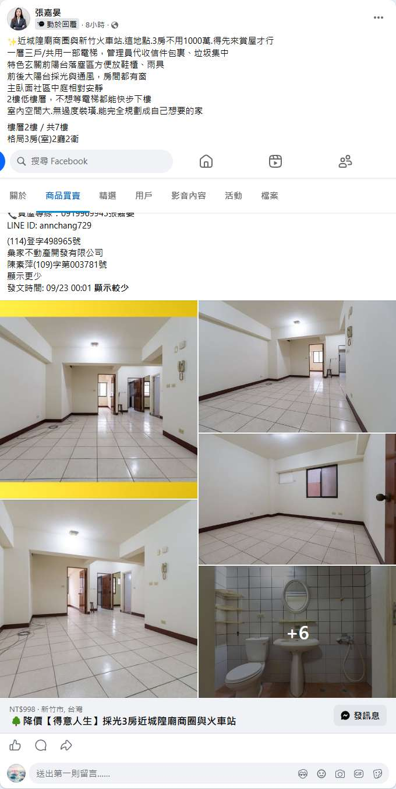 看原始刊登 → 查看貼文原文張嘉晏 勤於回覆 近城隍廟商圈與新竹火車站.這地點.3房不用1000萬.得先來賞屋才行 一層三戶/共用一部電梯，管理員代收信件包裏、垃圾集中 特色玄關前陽台落塵區方便放鞋櫃、雨具 前後大陽台採光與通風，房間都有窗 主臥面社區中庭相對安靜 2樓低樓層，不想等電梯都能快步下樓 室內空間大.無過度裝璜.能完全規劃成自己想要的家 樓層2樓 / 共7樓 格局3房(室)2廳2衛 屋齡32.4 年 建物31.887坪 主建22.385坪 土地5.797坪 售價998萬 賞屋專線：0919969945張嘉晏 LINE ID: annchang729 (114)登字498965號 彙家不動產開發有限公司 陳素萍(109)字第003781號 顯示更少 發文時間: 09/23 00:01 顯示較少 +6 NT$998 · 新竹市, 台灣 🌳降價【得意人生】採光3房近城隍廟商圈與火車站 發訊息 送出第一則留言…… 貼文內有 1 個連結（已檢查）
| 998 萬 | — | 3房—廳2衛 完全符合 | 31.887 坪 | 未註明 | 未註明 | — | — 年 | 2F | FB 貼文 0919969945 |
| 998 萬 | 28.43萬/坪 | 3房2廳2衛 完全符合 | 35.1 坪 | 未註明 | 有 | 有 | — 年 | 12F/14F | 永慶不動產 | |
| 998 萬 | 74.98萬/坪 | 4房2廳2衛 超規格 | 13.31 坪 | 未註明 | 未註明 | 無 | — 年 | 1-2F/2F | 有巢氏房屋 | |
| 998 萬 | 47.98萬/坪 | 3房2廳1衛 差一點 | 20.8 坪 | 未註明 | 未註明 | 無 | 44.3 年 | 2F/5F | 永慶房屋 | |
| 998 萬 | 29.74萬/坪 | 3房2廳2衛 完全符合 | 33.56 坪 | — | 未註明 | 有 | 32 年 | 4F/12F | 仲介 喬安好房 | |
| 998 萬 | 33.27萬/坪 | 3房2廳2衛 完全符合 | 30.0 坪 | — | 未註明 | 有 | 30 年 | 1F/7F | 仲介 彭先生 | |
| 998 萬 | 33.04萬/坪 | 3房2廳2衛 完全符合 | 30.21 坪 | — | 未註明 | 有 | 35 年 | 1F/6F | 仲介 彭凱翎 | |
 看原始刊登 → 同一物件另有 3 筆刊登（不同仲介）
| 999 萬 | 29.36萬/坪 | 3房2廳2衛 完全符合 | 34.02 坪 | 600元/月 | 無 | 有 | 32 年 | 5F/7F | 仲介 劉羿杉 |
 | 999 萬 | 40.84萬/坪 | 3房1廳3衛 差一點 | 24.46 坪 | 未註明 | 新竹市東區振興路 | 有 | 30.5 年 | 6F/6F | 永慶房屋 |
| 999 萬 | 38.63萬/坪 | 2房2廳2衛 差一點 | 25.86 坪 | 未註明 | 未註明 | 有 | 1 年 | 3F/5F | 仲介 藍鴻德 | |
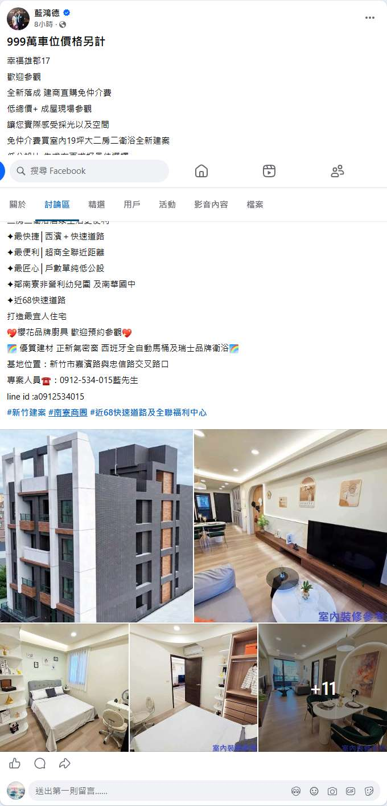 看原始刊登 → 查看貼文原文藍鴻德 8小時前 999萬車位價格另計 幸福雄郡17 歡迎參觀 全新落成 建商直購免仲介費 低總價+ 成屋現場參觀 讓您實際感受採光以及空間 免仲介費買室內19坪大二房二衛浴全新建案 低公設比 先求有再求好最佳選擇 前後陽台大二房二衛浴 專門為您量身定做打造溫馨幸福的 讓您實現對成家的夢想 二房二衛浴居家生活更便利 ✦最快捷│西濱＋快速道路 ✦最便利│超商全聯近距離 ✦最匠心│戶數單純低公設 ✦鄰南寮非營利幼兒園 及南華國中 ✦近68快速道路 打造最宜人住宅 櫻花品牌廚具 歡迎預約參觀 優質建材 正新氣密窗 西班牙全自動馬桶及瑞士品牌衛浴 基地位置：新竹市嘉濱路與忠信路交叉路口 專案人員 ：0912-534-015藍先生 line id :a0912534015 #新竹建案 #南寮商圈 #近68快速道路及全聯福利中心 +11 送出第一則留言…… 貼文內有 1 個連結（已檢查）
| 999 萬 | — | 2房—廳2衛 差一點 | 19.0 坪 | 未註明 | 未註明 | — | — 年 | — | FB 貼文 0912-534-015 |
| 999 萬 | 51.49萬/坪 | 2房—廳2衛 差一點 | 19.4 坪 | 未註明 | 未註明 | 有 | — 年 | 2F/7F | 永慶不動產 | |
| 1,000 萬 | 44.42萬/坪 | 3房—廳3衛 超規格 | 22.51 坪 | 未註明 | 無 | 無 | 0 年 | 2-3F/3F | 有巢氏房屋 | |
 看原始刊登 → 同一物件另有 3 筆刊登（不同仲介）
| 1,000 萬 | 26.98萬/坪 | 2房2廳2衛 差一點 | 37.06 坪 | 未註明 | 無 | 無 | 45 年 | 1F/5F | 仲介 洪榮洲 |
| 1,000 萬 | 26.98萬/坪 | 3房2廳2衛 完全符合 | 37.06 坪 | 無 | 無 | 無 | 45 年 | 1F/5F | 仲介 翁詠誼 | |
 看原始刊登 → 同一物件另有 5 筆刊登（不同仲介）
| 1,025 萬 | 37.55萬/坪 | 3房2廳2衛 完全符合 | 27.3 坪 | 未註明 | 平面式，已含售金內 | 有 | 31 年 | 3F/5F | 仲介 丁皇期 |
| 1,029 萬 | 19.42萬/坪 | 3房2廳2衛 完全符合 | 53.0 坪 | — | 未註明 | 有 | 14 年 | 9F/11F | 代理人 代理人 | |
| 1,038 萬 | 33.59萬/坪 | 5房—廳5衛 超規格 | 30.9 坪 | 未註明 | 無 | 無 | 34.7 年 | 5F/5F | 有巢氏房屋 | |
 看原始刊登 → 同一物件另有 5 筆刊登（不同仲介）
| 1,038 萬 | 36.65萬/坪 | 2房2廳2衛 差一點 | 28.32 坪 | 未註明 | 平 | 有 | 1 年 | 2F/4F | 仲介 邱盈盈 |
 | 1,038 萬 | 27.73萬/坪 | 3房2廳2衛 完全符合 | 37.43 坪 | 未註明 | 未註明 | 有 | 31 年 | 4F/12F | 仲介 劉尚豪 |
| 1,038 萬 | 23.28萬/坪 | 4房2廳3衛 超規格 | 44.58 坪 | 未註明 | 未註明 | 無 | 38 年 | 3F/5F | 仲介 黃文健 | |
 看原始刊登 → 同一物件另有 2 筆刊登（不同仲介）
| 1,038 萬 | 48.69萬/坪 | 2房2廳2衛 差一點 | 21.32 坪 | 未註明 | 未註明 | 有 | 28 年 | 8F/10F | 仲介 林宏明 |
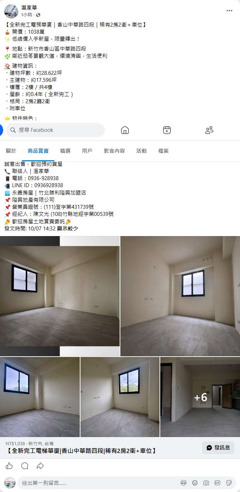 看原始刊登 → 查看貼文原文温家華 11分鐘前 【全新完工電梯華廈｜香山中華路四段｜稀有2房2衛＋車位】 開價：1038萬 低總價入手新屋，限量釋出！ 地點：新竹市香山區中華路四段 鄰近茄苳景觀大道，環境清幽，生活便利 建物資訊： ・建物坪數：約28.622坪 ・主建物：約17.596坪 ・樓層：2樓／共4樓 ・屋齡：約0.4年（全新完工） ・格局：2房2廳2衛 ・附車位 物件特色： 全新電梯華廈，免整理即可入住 稀有2房雙衛浴設計，空間規劃舒適 全區僅20戶，住戶單純、居住品質佳 低樓層2樓，出入便利 適合首購、小家庭、自住置產 誠意出售，歡迎預約賞屋 聯絡人｜温家華 電話：0936-928938 LINE ID：0936928938 永義房屋｜竹北勝利隘興加盟店 隘興地產有限公司 營業員證號：(111)登字第431739號 經紀人：陳文光 (108)竹縣地經字第00539號 歡迎房屋土地買賣委託 發文時間: 10/07 14:32 顯示較少 +6 NT$1,038 · 新竹市, 台灣 【全新完工電梯華廈|香山中華路四段|稀有2房2衛+車位】 發訊息 送出第一則留言…… 貼文內有 1 個連結（已檢查）
| 1,038 萬 | — | 2房—廳2衛 差一點 | 28.622 坪 | 未註明 | 有 | 有 | — 年 | 2F | FB 貼文 0936-928938 |
| 1,038 萬 | 23.28萬/坪 | 4房2廳3衛 超規格 | 44.58 坪 | 未註明 | 未註明 | — | — 年 | 4-5F/5F | 永慶不動產 | |
 看原始刊登 → 同一物件另有 3 筆刊登（不同仲介）
| 1,050 萬 | 28.23萬/坪 | 3房2廳2衛 完全符合 | 37.2 坪 | 未註明 | 未註明 | 有 | 3 年 | 2F/5F | 仲介 陳俊吉 |
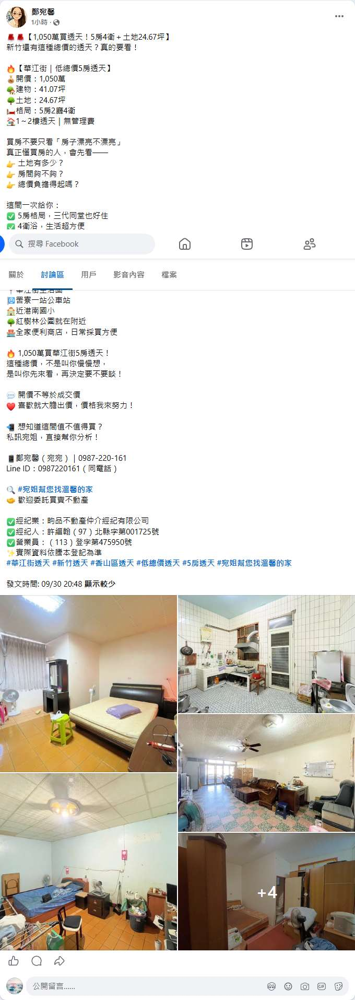 看原始刊登 → 查看貼文原文鄭宛馨 大約 1 小時前 【1,050萬買透天！5房4衛＋土地24.67坪】 新竹還有這種總價的透天？真的要看！ 【華江街｜低總價5房透天】 開價：1,050萬 建物：41.07坪 土地：24.67坪 格局：5房2廳4衛 1～2樓透天｜無管理費 買房不要只看「房子漂亮不漂亮」 真正懂買房的人，會先看—— 土地有多少？ 房間夠不夠？ 總價負擔得起嗎？ 這間一次給你： 5房格局，三代同堂也好住 4衛浴，生活超方便 土地24.67坪，自有土地實在 天然瓦斯 透天獨立進出，沒有管理費 低總價入手透天，稀有！ 華江街生活圈 罟寮一站公車站 近港南國小 紅樹林公園就在附近 全家便利商店，日常採買方便 1,050萬買華江街5房透天！ 這種總價，不是叫你慢慢想， 是叫你先來看，再決定要不要談！ 開價不等於成交價 喜歡就大膽出價，價格我來努力！ 想知道這間值不值得買？ 私訊宛姐，直接幫你分析！ 鄭宛馨（宛宛）｜0987-220-161 Line ID：0987220161（同電話） #宛姐幫您找溫馨的家 歡迎委託買賣不動產 經紀業：畇品不動產仲介經紀有限公司 經紀人：許縉翰（97）北縣字第001725號 營業員：（113）登字第475950號 實際資料依謄本登記為準 #華江街透天 #新竹透天 #香山區透天 #低總價透天 #5房透天 #宛姐幫您找溫馨的家 發文時間: 09/30 20:48 顯示較少 +4 公開留言…… 貼文內有 1 個連結（已檢查）
| 1,050 萬 | — | 5房—廳4衛 超規格 | 24.67 坪 | 未註明 | 未註明 | — | — 年 | 2F | FB 貼文 0987-220-161 |
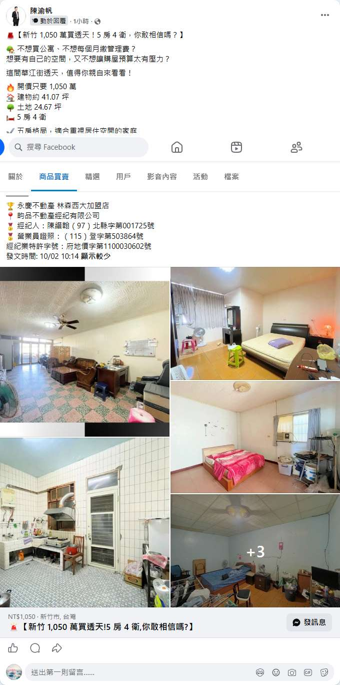 看原始刊登 → 查看貼文原文陳渝帆 勤於回覆 41分鐘前 【新竹 1,050 萬買透天！5 房 4 衛，你敢相信嗎？】 不想買公寓、不想每個月繳管理費？ 想要有自己的空間，又不想讓購屋預算太有壓力？ 這間華江街透天，值得你親自來看看！ 開價只要 1,050 萬 建物約 41.07 坪 土地 24.67 坪 5 房 4 衛 五房格局，適合重視居住空間的家庭 透天住宅，享受相對獨立的生活空間 不用負擔社區管理費 鄰近公車站、國小、公園及便利商店 0903-521-886（渝帆） Line：www06090521 ——— 永慶不動產 林森西大加盟店 畇品不動產經紀有限公司 經紀人：陳縉翰（97）北縣字第001725號 營業員證照：（115）登字第503864號 經紀業特許字號：府地價字第1100030602號 發文時間: 10/02 10:14 顯示較少 +3 NT$1,050 · 新竹市, 台灣 🚨【新竹 1,050 萬買透天!5 房 4 衛,你敢相信嗎?】 發訊息 送出第一則留言…… 貼文內有 1 個連結（已檢查）
| 1,050 萬 | — | 5房—廳4衛 超規格 | 41.07 坪 | 未註明 | 未註明 | — | — 年 | — | FB 貼文 0903-521-886 |
| 1,050 萬 | 25.8萬/坪 | 3房2廳2衛 完全符合 | 40.69 坪 | 1300 | 坡道機械固定車位 | 有 | 30.7 年 | 9F/10F | 有巢氏房屋 | |
| 1,050 萬 | 36.8萬/坪 | 3房2廳2衛 完全符合 | 28.53 坪 | 未註明 | 未註明 | 有 | 34 年 | 5F/0F | 中信房屋 | |
| 1,050 萬 | 36.8萬/坪 | 6房3廳3衛 超規格 | 28.53 坪 | 未註明 | 未註明 | 有 | 34.3 年 | 5F/5F | 信義房屋 | |
 看原始刊登 → 同一物件另有 5 筆刊登（不同仲介）
| 1,058 萬 | 26.83萬/坪 | 3房2廳2衛 完全符合 | 39.44 坪 | 2237 | 坡道機械固定車位 | 有 | 32.9 年 | 4F/9F | 有巢氏房屋 |
| 1,058 萬 | 27.43萬/坪 | 3房2廳2衛 完全符合 | 38.57 坪 | 未註明 | 未註明 | 有 | 42 年 | 4F/5F | 仲介 黃于庭 | |
 | 1,058 萬 | 34.63萬/坪 | 3房2廳2衛 完全符合 | 30.55 坪 | 未註明 | 未註明 | 有 | 12 年 | 5F/5F | 仲介 賴姵竹 |
 | 1,068 萬 | 47.59萬/坪 | 3房2廳1衛 差一點 | 22.44 坪 | 未註明 | 未註明 | 有 | 30.5 年 | 4F/8F | 信義房屋 |
 | 1,068 萬 | 29.13萬/坪 | 3房1廳2衛 差一點 | 36.67 坪 | 500元/月 | 機械式，已含售金內 | 有 | — 年 | 2F/10F | 仲介 張宥銨 |
| 1,068 萬 | 34.35萬/坪 | 5房—廳5衛 超規格 | 31.09 坪 | — | 未註明 | 有 | 42 年 | 5F/5F | 仲介 游舒晴 | |
| 1,079 萬 | 30.76萬/坪 | 3房2廳2衛 完全符合 | 35.08 坪 | 未註明 | 超便利 | 有 | 11.1 年 | 3F/5F | 永慶房屋 | |
 看原始刊登 → 同一物件另有 3 筆刊登（不同仲介）
| 1,080 萬 | 35.43萬/坪 | 3房2廳2衛 完全符合 | 30.48 坪 | 1000 | 無 | 有 | 34.3 年 | 5F/5F | 有巢氏房屋 |
 看原始刊登 → 同一物件另有 8 筆刊登（不同仲介）
| 1,080 萬 | 27.33萬/坪 | 3房2廳2衛 完全符合 | 39.52 坪 | 未註明 | 有 | 有 | 18.8 年 | 4F/13F | 信義房屋 |
 看原始刊登 → 同一物件另有 3 筆刊登（不同仲介）
| 1,080 萬 | 50.54萬/坪 | 3房2廳1衛 差一點 | 21.37 坪 | 無 | 無 | 無 | 41 年 | 1F/5F | 仲介 簡雅秀 |
| 1,080 萬 | 39.12萬/坪 | 3房2廳2衛 完全符合 | 27.61 坪 | 未註明 | 未註明 | 無 | 41 年 | 2F/5F | 信義房屋 | |
 | 1,080 萬 | 38.74萬/坪 | 3房2廳2衛 完全符合 | 27.88 坪 | 未註明 | 未註明 | 無 | 39.2 年 | 2F/5F | 信義房屋 |
| 1,080 萬 | 35.43萬/坪 | 5房2廳4衛 超規格 | 30.48 坪 | 未註明 | 未註明 | 有 | 34.4 年 | 5F/5F | 信義房屋 | |
 | 1,080 萬 | 29.6萬/坪 | 2房2廳2衛 差一點 | 36.49 坪 | 未註明 | 未註明 | 有 | 33.8 年 | 7F/7F | 信義房屋 |
 看原始刊登 → 同一物件另有 4 筆刊登（不同仲介）
| 1,080 萬 | 23.77萬/坪 | 5房2廳3衛 超規格 | 45.44 坪 | 未註明 | 未註明 | 無 | — 年 | 1-3F/3F | 永慶不動產 |
| 1,080 萬 | 27.87萬/坪 | 3房2廳2衛 完全符合 | 38.75 坪 | 未註明 | 未註明 | 有 | 32 年 | 3F/7F | 仲介 張珏如 | |
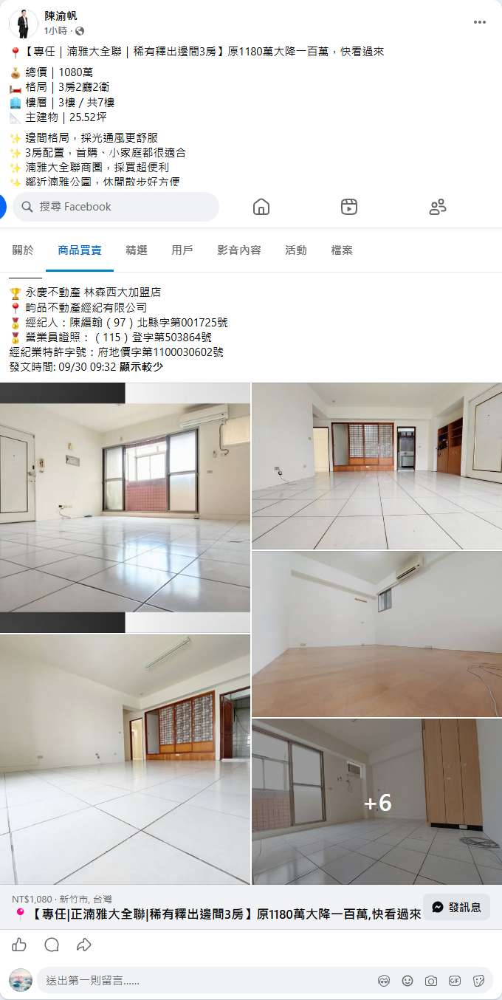 看原始刊登 → 查看貼文原文陳渝帆 29分鐘前 【專任｜湳雅大全聯｜稀有釋出邊間3房】原1180萬大降一百萬，快看過來 總價｜1080萬 格局｜3房2廳2衛 樓層｜3樓／共7樓 主建物｜25.52坪 邊間格局，採光通風更舒服 3房配置，首購、小家庭都很適合 湳雅大全聯商圈，採買超便利 鄰近湳雅公園，休閒散步好方便 鄰近舊社國小、光華國中 大全聯、大魯閣等生活機能就在周邊 屋主難得釋出，喜歡這區一定要把握 0903-521-886（渝帆） Line：www06090521 ——— 永慶不動產 林森西大加盟店 畇品不動產經紀有限公司 經紀人：陳縉翰（97）北縣字第001725號 營業員證照：（115）登字第503864號 經紀業特許字號：府地價字第1100030602號 發文時間: 09/30 09:32 顯示較少 +6 NT$1,080 · 新竹市, 台灣 📍【專任|正湳雅大全聯|稀有釋出邊間3房】原1180萬大降一百萬,快看過來 發訊息 送出第一則留言…… 貼文內有 1 個連結（已檢查）
| 1,080 萬 | — | 3房—廳2衛 完全符合 | 25.52 坪 | 未註明 | 未註明 | — | — 年 | 3F | FB 貼文 0903-521-886 |
| 1,088 萬 | 30.54萬/坪 | 3房2廳2衛 完全符合 | 35.62 坪 | 未註明 | 無 | 有 | 0 年 | 1F/5F | 有巢氏房屋 | |
 | 1,088 萬 | 30.07萬/坪 | 5房2廳4衛 超規格 | 36.18 坪 | 500元/月 | 無 | 有 | 33 年 | 2F/5F | 仲介 秘書小姐 |
 | 1,088 萬 | 32.22萬/坪 | 4房2廳2衛 超規格 | 33.77 坪 | 400元/月 | 無 | 有 | 41 年 | 7F/7F | 仲介 王小姐 |
| 1,088 萬 | 29.52萬/坪 | 4房3廳3衛 超規格 | 36.86 坪 | 未註明 | 無 | — | 37 年 | 1-3F/3F | 有巢氏房屋 | |
 | 1,088 萬 | 47.39萬/坪 | 3房2廳2衛 完全符合 | 22.96 坪 | 未註明 | 未註明 | 無 | 42.4 年 | 2F/5F | 信義房屋 |
| 1,088 萬 | 47.39萬/坪 | 3房2廳1衛 差一點 | 22.96 坪 | 未註明 | 未註明 | 無 | 42.4 年 | 2F/5F | 信義房屋 | |
| 1,088 萬 | 29.52萬/坪 | 3房2廳2衛 完全符合 | 36.86 坪 | 未註明 | 計算 | — | 37.2 年 | 1-2F/2F | 永慶房屋 | |
| 1,088 萬 | 33.3萬/坪 | 4房4廳3衛 超規格 | 32.67 坪 | 未註明 | 的煩惱。 | — | 41.7 年 | 1-2F/2F | 永慶房屋 | |
 | 1,088 萬 | 28.79萬/坪 | 3房2廳2衛 完全符合 | 37.79 坪 | 未註明 | 未註明 | 有 | 31.9 年 | 4F/5F | 永慶房屋 |
 | 1,088 萬 | 47.39萬/坪 | 4房2廳2衛 超規格 | 22.96 坪 | 未註明 | 未註明 | 無 | 42 年 | 2F/5F | 仲介 丁麥克 |
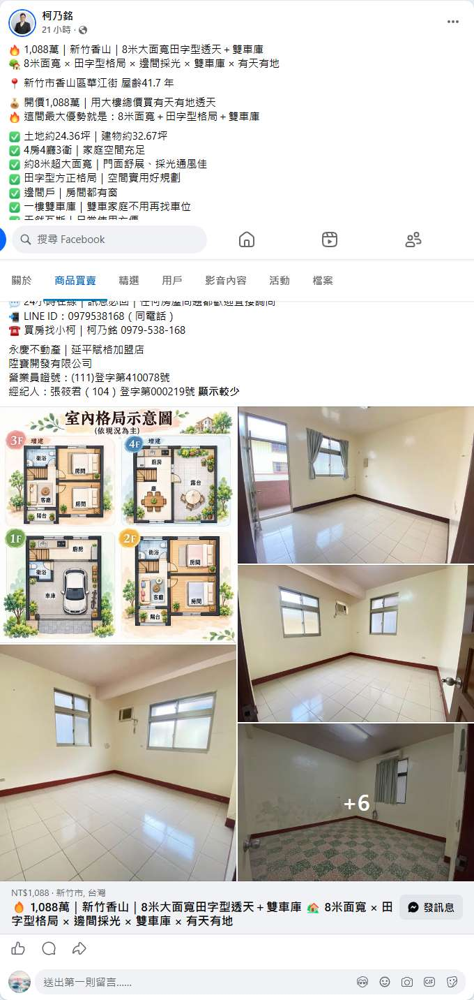 看原始刊登 → 查看貼文原文柯乃銘 18小時前 o͏ r͏ s͏ t͏ e͏ n͏ o͏ p͏ S͏ d͏ 4͏ 8͏ c͏ 9͏ 5͏ 9͏ l͏ i͏ 8͏ l͏ 8͏ 9͏ 0͏ 小͏ g͏ t͏ c͏ f͏ ͏ 1͏ 2͏ 0͏ 7͏ 6͏ h͏ 1͏ 7͏ 0͏ m͏ h͏ l͏ 9͏ a͏ 3͏ 9͏ c͏ 1͏ 6͏ i͏ 8͏ 0͏ 4͏ a͏ 時͏ 9͏ 0͏ 1͏ 0͏ h͏ 7͏ 1,088萬｜新竹香山｜8米大面寬田字型透天＋雙車庫 8米面寬 × 田字型格局 × 邊間採光 × 雙車庫 × 有天有地 新竹市香山區華江街 屋齡41.7 年 開價1,088萬｜用大樓總價買有天有地透天 這間最大優勢就是：8米面寬＋田字型格局＋雙車庫 土地約24.36坪｜建物約32.67坪 4房4廳3衛｜家庭空間充足 約8米超大面寬｜門面舒展、採光通風佳 田字型方正格局｜空間實用好規劃 邊間戶｜房間都有窗 一樓雙車庫｜雙車家庭不用再找車位 天然瓦斯｜日常使用方便 現況屋況佳｜首購、換屋、三代同堂都適合 因 Facebook 陌生訊息傳送限制 麻煩您先私訊我一則訊息 收到後立即回覆完整物件資料並安排賞屋！ 24小時在線｜訊息必回｜任何房屋問題都歡迎直接詢問 LINE ID：0979538168（同電話） 買房找小柯｜柯乃銘 0979-538-168 永慶不動產｜延平賦格加盟店 陞寶開發有限公司 營業員證號：(111)登字第410078號 經紀人：張筱君（104）登字第000219號 顯示較少 +6 NT$1,088 · 新竹市, 台灣 🔥 1,088萬｜新竹香山｜8米大面寬田字型透天＋雙車庫 🏡 8米面寬 × 田字型格局 × 邊間採光 × 雙車庫 × 有天有地 發訊息 送出第一則留言…… 貼文內有 1 個連結（已檢查）
| 1,088 萬 | — | 4房4廳3衛 超規格 | 24.36 坪 | 未註明 | 未註明 | — | — 年 | — | FB 貼文 0979538168 |
| 1,088 萬 | 24.92萬/坪 | 3房2廳2衛 完全符合 | 43.66 坪 | 2333 | 坡道機械固定車位 | 有 | 32.3 年 | 3F/6F | 有巢氏房屋 | |
| 1,088 萬 | 26.74萬/坪 | 3房2廳2衛 完全符合 | 40.69 坪 | 未註明 | 未註明 | 有 | 30.7 年 | 7F/10F | 永慶房屋 | |
| 1,088 萬 | 28.88萬/坪 | 3房2廳2衛 完全符合 | 37.67 坪 | — | 未註明 | 有 | 30 年 | 3F/9F | 仲介 張熙嫻 | |
| 1,088 萬 | 46.44萬/坪 | 3房2廳2衛 完全符合 | 23.43 坪 | — | 未註明 | 無 | 42 年 | 3F/5F | 仲介 張珉瑄 | |
| 1,088 萬 | 47.3萬/坪 | 3房2廳2衛 完全符合 | 23.0 坪 | — | 未註明 | 無 | 41 年 | 3F/5F | 仲介 黃柏堯 | |
| 1,088 萬 | 26.74萬/坪 | 2房2廳2衛 差一點 | 40.69 坪 | — | 未註明 | 有 | — 年 | 7F/10F | — | |
| 1,098 萬 | 47.82萬/坪 | 3房2廳2衛 完全符合 | 22.96 坪 | 未註明 | 無 | 無 | 42.4 年 | 2F/5F | 有巢氏房屋 | |
 | 1,098 萬 | 25.83萬/坪 | 3房2廳2衛 完全符合 | 42.51 坪 | 2152 | 無 | 有 | 34.9 年 | 10F/12F | 有巢氏房屋 |
| 1,098 萬 | 35.94萬/坪 | 3房2廳2衛 完全符合 | 30.55 坪 | 1250 | 有 | 有 | 12.7 年 | 5F/5F | 有巢氏房屋 | |
| 1,098 萬 | 18.89萬/坪 | 3房2廳2衛 完全符合 | 58.12 坪 | 2234元/月 | 7 | 有 | 12 年 | 11F/11F | 仲介 台慶阿偉 | |
 | 1,098 萬 | 31.59萬/坪 | 2房2廳2衛 差一點 | 34.76 坪 | 2722 | 無 | 有 | 11.1 年 | 4F/14F | 有巢氏房屋 |
 | 1,098 萬 | 26.19萬/坪 | 3房2廳2衛 完全符合 | 41.93 坪 | 1083 | 坡道機械固定車位 | 有 | 35.8 年 | 3F/7F | 有巢氏房屋 |
 看原始刊登 → 同一物件另有 12 筆刊登（不同仲介）
| 1,098 萬 | 22.82萬/坪 | 3房2廳2衛 完全符合 | 48.12 坪 | 2234 | 有 | 有 | 12.8 年 | 11F/11F | 有巢氏房屋 |
| 1,098 萬 | 30.68萬/坪 | 3房2廳2衛 完全符合 | 35.79 坪 | 無 | 無 | — | 40 年 | 1F~2F/2F | 仲介 林秀惠 | |
| 1,098 萬 | 36.85萬/坪 | 3房2廳1衛 差一點 | 29.8 坪 | 1650 | 無 | 有 | 31.4 年 | 5F/7F | 有巢氏房屋 | |
 看原始刊登 → 同一物件另有 5 筆刊登（不同仲介）
| 1,098 萬 | 28.5萬/坪 | 3房2廳2衛 完全符合 | 38.52 坪 | 未註明 | 未註明 | 有 | 32.4 年 | 10F/12F | 信義房屋 |
 | 1,098 萬 | 26.57萬/坪 | 4房2廳2衛 超規格 | 41.33 坪 | 未註明 | 有 | 無 | 36.4 年 | 5F/5F | 信義房屋 |
 | 1,098 萬 | 26.65萬/坪 | 4房2廳2衛 超規格 | 41.2 坪 | 未註明 | 有 | 有 | 19 年 | 4-5F/5F | 信義房屋 |
 看原始刊登 → 同一物件另有 4 筆刊登（不同仲介）
| 1,098 萬 | 27.04萬/坪 | 3房2廳2衛 完全符合 | 40.6 坪 | 未註明 | 未註明 | 無 | 37 年 | 4F/5F | 信義房屋 |
 | 1,098 萬 | 40.15萬/坪 | 2房2廳2衛 差一點 | 27.35 坪 | 未註明 | 未註明 | 有 | 32.7 年 | 6F/7F | 信義房屋 |
 | 1,098 萬 | 41.96萬/坪 | 2房2廳2衛 差一點 | 26.17 坪 | 未註明 | 未註明 | 有 | 32.7 年 | 9F/9F | 信義房屋 |
| 1,098 萬 | 31.0萬/坪 | 3房2廳2衛 完全符合 | 35.42 坪 | 未註明 | 有 | 有 | — 年 | 7F/10F | 永慶不動產 | |
 | 1,098 萬 | 40.15萬/坪 | 2房2廳2衛 差一點 | 27.35 坪 | 未註明 | 有 | 無 | — 年 | 2F/4F | 永慶不動產 |
 | 1,098 萬 | 33.09萬/坪 | 3房2廳2衛 完全符合 | 33.18 坪 | 未註明 | 未註明 | 有 | — 年 | 2F/7F | 永慶不動產 |
 | 1,098 萬 | 32.25萬/坪 | 2房2廳2衛 差一點 | 34.05 坪 | 未註明 | 未註明 | 有 | — 年 | 2F/11F | 永慶不動產 |
| 1,098 萬 | 36.5萬/坪 | 3房2廳1衛 差一點 | 30.08 坪 | 未註明 | (租金一個月2000)自 | 有 | 32.8 年 | 7F/12F | 永慶房屋 | |
 | 1,098 萬 | 37.53萬/坪 | 2房2廳2衛 差一點 | 29.26 坪 | 未註明 | 計算 | 有 | 21.4 年 | 9F/10F | 永慶房屋 |
| 1,098 萬 | 45.41萬/坪 | 2房2廳2衛 差一點 | 24.18 坪 | 未註明 | 計算 | 有 | 11.3 年 | 3F/11F | 永慶房屋 | |
 | 1,098 萬 | 32.0萬/坪 | 3房2廳2衛 完全符合 | 34.31 坪 | 未註明 | 未註明 | 無 | 44.8 年 | 3F/5F | 永慶房屋 |
| 1,098 萬 | 31.37萬/坪 | 3房2廳2衛 完全符合 | 35.0 坪 | 未註明 | 未註明 | — | 40 年 | 整棟/2F | 仲介 藍鴻德 | |
| 1,098 萬 | 27.95萬/坪 | 3房2廳2衛 完全符合 | 39.29 坪 | 未註明 | 未註明 | 有 | 18 年 | 6F/14F | 仲介 張少程 | |
| 1,098 萬 | 27.45萬/坪 | 3房2廳2衛 完全符合 | 40.0 坪 | 未註明 | 未註明 | 有 | 18 年 | 6F/14F | 仲介 陳店長 | |
| 1,098 萬 | 27.87萬/坪 | 3房2廳2衛 完全符合 | 39.4 坪 | 未註明 | 未註明 | 有 | 32 年 | 4F/9F | 仲介 李翊綺 | |
| 1,098 萬 | 37.65萬/坪 | 6房3廳5衛 超規格 | 29.16 坪 | 未註明 | 未註明 | — | 50 年 | 整棟/2F | 仲介 藍鴻德 | |
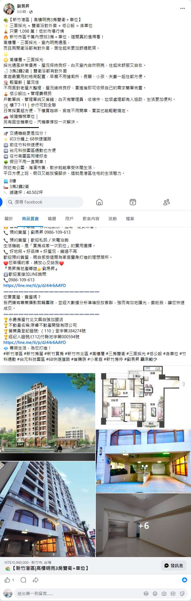 看原始刊登 → 查看貼文原文劉易昇 【新竹港區｜高樓明亮3房雙衛＋車位】 三面採光 × 雙衛浴對外窗 × 低公設 × 含車位 只要 1,098 萬！低於市場行情 新竹市區千萬內想找3房＋車位，這間真的值得看！ 高樓層、三面採光，室內明亮通風， 而且兩間衛浴都有對外窗，居住起來更加舒適乾爽。 高樓層＋三面採光 採光通風非常優秀，屋況保持良好，白天室內自然明亮，住起來舒服又自在。 3房2廳2衛｜雙衛浴都有對外窗 家庭最實用的格局配置，早晨不用搶廁所，長輩、小孩、夫妻一起住都方便。 輕屋齡｜屋況佳 不用面對老屋大整理，屋況維持良好，買進後即可依照自己的需求簡單佈置。 低公設比＋管理費親民 戶數單純，管理單純又省錢；白天有管理員，收信件、垃圾處理都有人協助，生活更加便利。 樓下7-11｜步行可到全聯 日常採買超方便，下樓買咖啡、宵夜不用開車，買菜也能輕鬆搞定。 坡道機械車位｜ 另有固定機車位，汽機車停放一次解決。 ━━━━━━━━━━━━━━ 交通機能更是加分！ 約3分鐘上 68快速道路 前往竹科快速便利 台元科技園區通勤也方便 往竹南園區同樣好走 假日不用一直開車！ 附近有公園、海濱市集，散步就能享受休閒生活， 平日方便上班，假日又能放慢腳步，這就是港區住宅的生活魅力。 8樓 3房2廳2衛 總建坪：40.502坪 主建：22.691坪 附屬：2.765坪 含車位 固定機車位 千萬出頭買進新竹市3房＋雙衛＋車位，還有高樓三面採光！ 首購、小家庭、竹科通勤族，這間一定要來看！ 預約賞屋｜劉易昇 0986-109-613 預約賞屋｜歡迎私訊／來電洽詢 生活機能，是「買房成家一次到位」的實用選擇。 好地段＋好品牌＋好屋況，錯過不再 歡迎預約賞屋，親自感受這間為家庭量身打造的理想居所。 您幸福的家，請放心交給我 『易昇房地產導遊 劉易昇』 歡迎直接加LINE詢問 0986-109-613 您要買屋、賣屋嗎？ 我們擁有專業攝影剪輯團隊，並經大數據分析準確投放客群，強而有效地曝光，委託我，讓您快速成交。 永義房屋竹北文興自強加盟店 不動產名稱:原睿不動產開發有限公司 營業員登記證號: （110）登字第384274號 經紀人證號/(112)竹縣地字第000594號 尊榮生活，為您打造！ #新竹港區 #新竹房屋 #新竹買房 #新竹市北區 #高樓層 #三房雙衛 #三面採光 #低公設 #含車位 #竹科通勤 #台元科技園區 #68快速道路 #首購族 #小家庭 #新竹房仲 #劉易昇 顯示較少 +6 NT$10,980,000 · 新竹市, 台灣 🏡【新竹港區|高樓明亮3房雙衛+車位】 發訊息 送出第一則留言…… 貼文內有 2 個連結（已檢查）
| 1,098 萬 | — | 3房—廳2衛 完全符合 | 40.502 坪 | 未註明 | 有 | — | — 年 | 8F | FB 貼文 0986-109-613 |
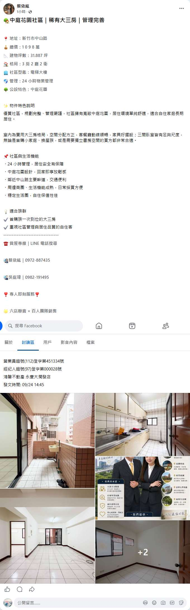 看原始刊登 → 查看貼文原文蔡依紘 大約 1 小時前 中庭花園社區｜稀有大三房｜管理完善 地址：新竹市中山路 總價：1 0 9 8 萬 建物坪數：31.887 坪 格局：3 房 2 廳 2 衛 社區型態：電梯大樓 管理：24 小時物業管理 公設特色：中庭花園 物件特色說明 優質社區，規劃完整、管理嚴謹，社區擁有寬敞中庭花園，居住環境單純舒適，適合自住家庭長期居住。 室內為實用大三房格局，空間分配方正，客餐廳動線順暢，家具好擺設；三間臥室皆有足夠尺度，無論是首購小家庭、換屋族，或是需要獨立書房空間的買方都非常合適。 社區與生活機能 ・24 小時管理，居住安全有保障 ・中庭花園設計，回家即享放鬆感 ・鄰近中山路主要幹道，交通便利 ・周邊商圈、生活機能成熟，日常採買方便 ・穩定生活圈，自住保值性佳 適合族群 首購族一次到位的大三房 重視社區管理與居住品質的自住客 --------------------------------- 賞屋專線｜LINE 電話搜尋 蔡依紘｜0972-887435 吳庭瑋｜0982-191495 專人即刻服務 六店聯賣 × 百人團隊銷售 深耕新竹房地產專業顧問 單月百萬經紀人員 績優人員認證 營業員證號(112)登字第451334號 經紀人證號(97)登字第000028號 鴻磐不動產 永慶大潤發店 發文時間: 09/24 14:45 +2 公開留言…… 貼文內有 1 個連結（已檢查）
| 1,098 萬 | — | 3房—廳2衛 完全符合 | 31.887 坪 | 未註明 | 未註明 | 有 | — 年 | — | FB 貼文 0972-887435 / 0982-191495 |
| 1,098 萬 | 28.5萬/坪 | 3房2廳2衛 完全符合 | 41.01 坪 | 10588元/季度 | 無 | 有 | 8 年 | 8F/10F | 仲介 張先生 | |
| 1,098 萬 | 40.94萬/坪 | 3房2廳2衛 完全符合 | 26.82 坪 | 1700 | 固定車位 | 有 | 4.4 年 | 3F/5F | 有巢氏房屋 | |
| 1,098 萬 | 34.56萬/坪 | 4房2廳2衛 超規格 | 31.77 坪 | 未註明 | 無 | 有 | 34 年 | 2F/5F | 仲介 陳宗瑋 | |
| 1,098 萬 | 48.58萬/坪 | 3房2廳1衛 差一點 | 22.6 坪 | 無 | 無 | 無 | 47 年 | 3F/4F | 仲介 凃于淵 | |
| 1,098 萬 | 29.67萬/坪 | 3房2廳2衛 完全符合 | 37.01 坪 | 未註明 | 機械式，已含售金內 | 有 | 27 年 | 6F/6F | 仲介 孫振耘 | |
| 1,098 萬 | 29.33萬/坪 | 3房2廳2衛 完全符合 | 37.43 坪 | — | 未註明 | 有 | — 年 | 4F/12F | — | |
 | 1,100 萬 | 29.68萬/坪 | 2房2廳2衛 差一點 | 37.07 坪 | 無 | 無 | 無 | 70 年 | 1F/5F | 仲介 孫振耘 |
 | 1,100 萬 | 55.0萬/坪 | 6房2廳3衛 超規格 | 20 坪 | 未註明 | 未註明 | 無 | 48.3 年 | 4F/4F | 信義房屋 |
 | 1,100 萬 | 31.72萬/坪 | 3房2廳2衛 完全符合 | 34.68 坪 | 未註明 | 未註明 | 無 | 32.3 年 | 5F/5F | 永慶房屋 |
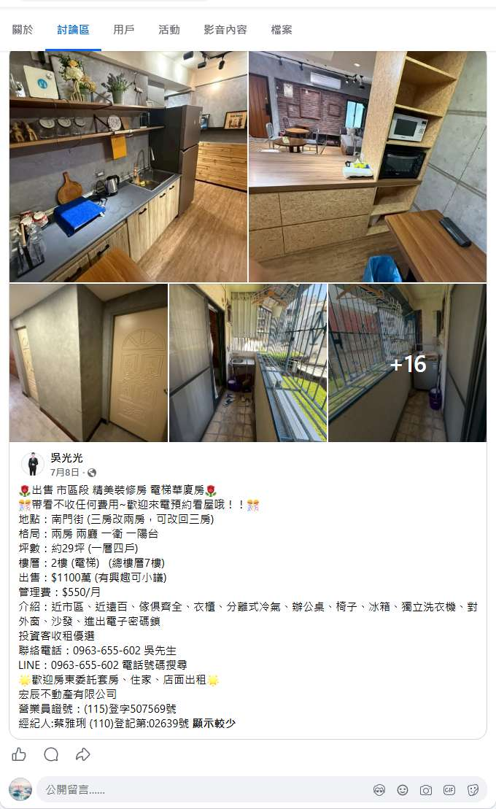 看原始刊登 → 查看貼文原文吳光光 +16 吳光光 出售 市區段 精美裝修房 電梯華廈房 帶看不收任何費用~歡迎來電預約看屋哦！！ 地點：南門街 (三房改兩房，可改回三房) 格局：兩房 兩廳 一衛 一陽台 坪數：約29坪 (一層四戶) 樓層：2樓 (電梯) (總樓層7樓) 出售：$1100萬 (有興趣可小議) 管理費：$550/月 介紹：近市區、近遠百、傢俱齊全、衣櫃、分離式冷氣、辦公桌、椅子、冰箱、獨立洗衣機、對外窗、沙發、進出電子密碼鎖 投資客收租優選 聯絡電話：0963-655-602 吳先生 LINE：0963-655-602 電話號碼搜尋 歡迎房東委託套房、住家、店面出租 宏辰不動產有限公司 營業員證號：(115)登字507569號 經紀人:蔡雅琍 (110)登記第:02639號 顯示較少 公開留言…… 貼文內有 1 個連結（已檢查）
| 1,100 萬 | — | 3房—廳1衛 差一點 | 29.0 坪 | 550 | 未註明 | 有 | — 年 | 2F | FB 貼文 0963-655-602 |
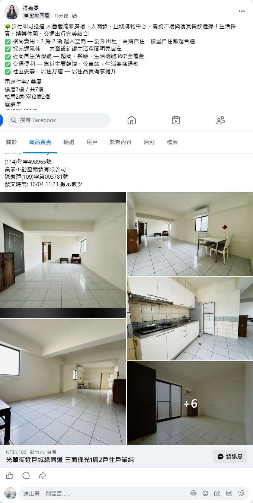 看原始刊登 → 查看貼文原文張嘉晏 勤於回覆 11分鐘前 步行即可抵達 大魯閣湳雅廣場、大潤發、巨城購物中心、傳統市場與優質餐飲選擇！生活採 買、娛樂休閒、交通出行完美結合! 格局實用：2 房 2 衛.超大空間 — 對外出租、首購自住、換屋自住都超合適 採光通風佳 — 大窗設計讓生活空間明亮自在 近商圈生活機能 — 超商、餐廳、生活機能360°全覆蓋 交通便利 — 靠近主要幹道、公車站，生活無痛通勤 社區安靜、居住舒適 — 居住品質有感提升 用途住宅/ 華廈 樓層7樓 / 共7樓 格局2房(室)2廳2衛 屋齡年 建物36.491坪 主建25.57坪 土地6.564坪 售價1100萬 賞屋專線：0919969945張嘉晏 LINE ID: annchang729 (114)登字498965號 彙家不動產開發有限公司 陳素萍(109)字第003781號 發文時間: 10/04 11:21 顯示較少 +6 NT$1,100 · 新竹市, 台灣 光華街近巨城綠園道 三面採光1層2戶住戶單純 發訊息 送出第一則留言…… 貼文內有 1 個連結（已檢查）
同一物件另有 1 筆刊登（不同仲介） | 1,100 萬 | — | 2房—廳2衛 差一點 | 36.491 坪 | 未註明 | 未註明 | 有 | — 年 | 7F | FB 貼文 0919969945 |
| 1,100 萬 | 29.19萬/坪 | 2房2廳2衛 差一點 | 37.68 坪 | 未註明 | 無 | 有 | — 年 | 1F/5F | 仲介 史露琪 | |
| 1,100 萬 | 42.88萬/坪 | 4房2廳2衛 超規格 | 25.65 坪 | 未註明 | 未註明 | 無 | — 年 | 1-3F/3F | 永慶不動產 | |
| 1,120 萬 | 26.11萬/坪 | 3房2廳2衛 完全符合 | 42.9 坪 | 未註明 | 坡道平面固定車位 | 有 | 28.2 年 | 1F/5F | 有巢氏房屋 | |
| 1,120 萬 | 26.11萬/坪 | 4房2廳2衛 超規格 | 42.9 坪 | 未註明 | ！前後超大平台 | 無 | 28.2 年 | 1F/5F | 永慶房屋 | |
| 1,120 萬 | 42.85萬/坪 | 2房2廳2衛 差一點 | 26.14 坪 | 未註明 | 無 | 有 | 0 年 | 3F/5F | 有巢氏房屋 | |
| 1,120 萬 | 40.3萬/坪 | 2房2廳2衛 差一點 | 27.79 坪 | 未註明 | 坡道平面固定車位 | 有 | 0 年 | 2F/5F | 有巢氏房屋 | |
| 1,120 萬 | 71.66萬/坪 | 2房2廳2衛 差一點 | 15.63 坪 | 未註明 | 無 | 有 | 0 年 | 2F/5F | 有巢氏房屋 | |
| 1,120 萬 | 42.85萬/坪 | 2房2廳2衛 差一點 | 26.14 坪 | 未註明 | 2.830坪) | 有 | — 年 | 2F/5F | 永慶房屋 | |
| 1,120 萬 | 48.07萬/坪 | 2房2廳2衛 差一點 | 23.3 坪 | 未註明 | 有 | — | — 年 | 2F/5F | 永慶不動產 | |
 看原始刊登 → 同一物件另有 8 筆刊登（不同仲介）
| 1,138 萬 | 32.68萬/坪 | 3房2廳2衛 完全符合 | 34.82 坪 | 無 | 無 | 有 | 32 年 | 3F/7F | 仲介 田敬揚 |
 | 1,138 萬 | 40.43萬/坪 | 4房2廳1衛 差一點 | 28.15 坪 | 未註明 | 無 | 無 | 45.8 年 | 1F/5F | 有巢氏房屋 |
 看原始刊登 → 同一物件另有 5 筆刊登（不同仲介）
| 1,138 萬 | 43.52萬/坪 | 5房2廳2衛 超規格 | 26.15 坪 | 未註明 | 可購買 | 有 | 28.9 年 | 4F/10F | 永慶房屋 |
 | 1,138 萬 | 40.42萬/坪 | 4房2廳1衛 差一點 | 28.15 坪 | 未註明 | 未註明 | 有 | 45 年 | B1~1F/1F | 仲介 蘇文巧 |
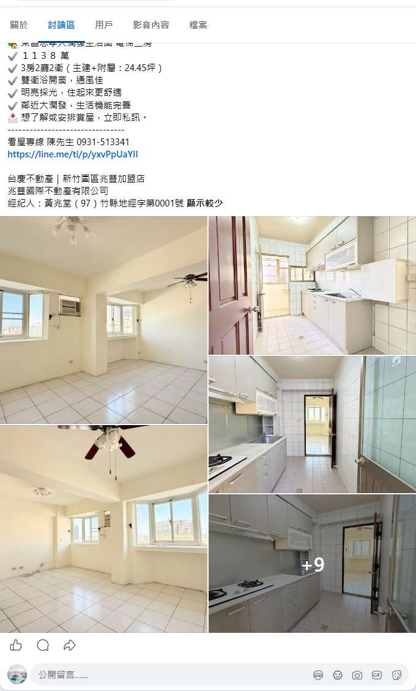 看原始刊登 → 查看貼文原文陳祺森 AI 內容 50分鐘前 東區忠孝大潤發生活圈 電梯三房 １１３８ 萬 3房2廳2衛（主建+附屬：24.45坪） 雙衛浴開窗，通風佳 明亮採光，住起來更舒適 鄰近大潤發，生活機能完善 想了解或安排賞屋，立即私訊。 -------------------------------- 看屋專線 陳先生 0931-513341 台慶不動產｜新竹園區兆豐加盟店 兆豐國際不動產有限公司 經紀人：黃兆堂（97）竹縣地經字第0001號 顯示較少 +9 公開留言…… 貼文內有 2 個連結（已檢查）
| 1,138 萬 | — | 3房—廳2衛 完全符合 | 24.45 坪 | 未註明 | 未註明 | — | — 年 | — | FB 貼文 0931-513341 |
| 1,150 萬 | 41.38萬/坪 | 2房2廳2衛 差一點 | 27.79 坪 | 未註明 | 坡道平面固定車位 | 有 | 0 年 | 3F/5F | 有巢氏房屋 | |
 | 1,150 萬 | 36.6萬/坪 | 3房2廳1衛 差一點 | 31.42 坪 | 未註明 | 無 | 無 | 45.4 年 | 1F/5F | 有巢氏房屋 |
| 1,150 萬 | 28.74萬/坪 | 3房2廳2衛 完全符合 | 40.02 坪 | 未註明 | 計算 | 有 | 31.5 年 | 7F/9F | 永慶房屋 | |
| 1,150 萬 | 44.04萬/坪 | 18房—廳18衛 超規格 | 26.11 坪 | 未註明 | 無 | — | 44.5 年 | 1-6F/6F | 有巢氏房屋 | |
| 1,150 萬 | 21.96萬/坪 | 5房3廳3衛 超規格 | 52.36 坪 | 未註明 | 無 | — | 31.4 年 | 4F/4F | 有巢氏房屋 | |
 | 1,150 萬 | 44.2萬/坪 | 2房1廳2衛 不符 | 26.02 坪 | 未註明 | 計算 | 有 | 0.8 年 | 2F/4F | 永慶房屋 |
| 1,150 萬 | 47.56萬/坪 | 2房—廳2衛 差一點 | 24.18 坪 | 未註明 | 計算 | 有 | 11.3 年 | 7F/11F | 永慶房屋 | |
 看原始刊登 → 同一物件另有 7 筆刊登（不同仲介）
| 1,150 萬 | 32.05萬/坪 | 3房2廳2衛 完全符合 | 35.88 坪 | 未註明 | 未註明 | 有 | — 年 | 4F/7F | 永義房屋 |
| 1,150 萬 | 29.26萬/坪 | 3房2廳2衛 完全符合 | 39.3 坪 | 未註明 | ｜質感成家首選】 | 有 | 18.4 年 | 6F/14F | 永慶房屋 | |
| 1,150 萬 | 28.74萬/坪 | 3房2廳2衛 完全符合 | 40.02 坪 | 未註明 | 未註明 | 有 | 31.5 年 | 8F/9F | 永慶房屋 | |
| 1,150 萬 | 55.69萬/坪 | 2房2廳2衛 差一點 | 20.65 坪 | 未註明 | 未註明 | 有 | 0.8 年 | 2F/5F | 永慶房屋 | |
 | 1,150 萬 | 43.99萬/坪 | 2房2廳2衛 差一點 | 26.14 坪 | 未註明 | 未註明 | 有 | — 年 | 3F/5F | 永慶房屋 |
| 1,150 萬 | 49.36萬/坪 | 2房2廳2衛 差一點 | 23.3 坪 | 未註明 | 未註明 | 有 | — 年 | 3F/5F | 永慶房屋 | |
 | 1,150 萬 | 34.84萬/坪 | 3房2廳2衛 完全符合 | 33.0 坪 | 未註明 | 未註明 | 有 | 31 年 | 6F/7F | 仲介 王祥翰 |
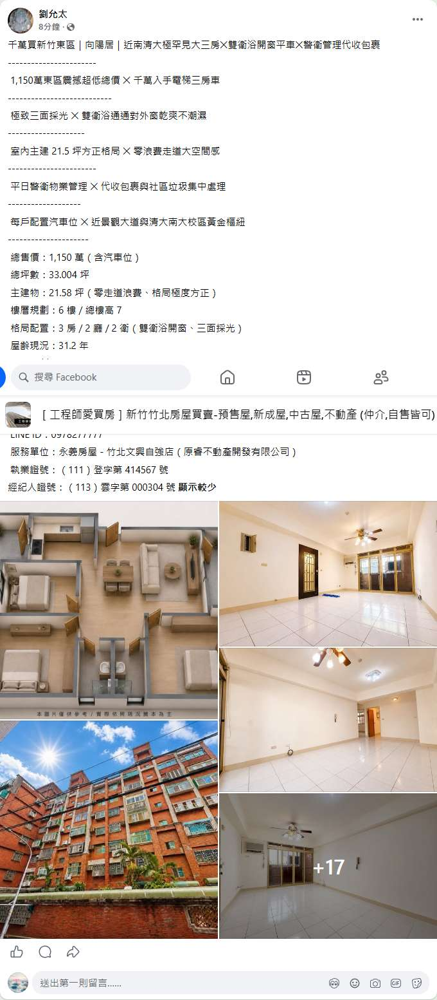 看原始刊登 → 查看貼文原文劉允太 千萬買新竹東區｜向陽居｜近南清大極罕見大三房✕雙衛浴開窗平車✕警衛管理代收包裹 ----------------------- 1,150萬東區震撼超低總價 ✕ 千萬入手電梯三房車 --------------------------- 極致三面採光 ✕ 雙衛浴通通對外窗乾爽不潮濕 -------------------- 室內主建 21.5 坪方正格局 ✕ 零浪費走道大空間感 ----------------------- 平日警衛物業管理 ✕ 代收包裹與社區垃圾集中處理 ------------------- 每戶配置汽車位 ✕ 近景觀大道與清大南大校區黃金樞紐 --------------------- 總售價：1,150 萬（含汽車位） 總坪數：33.004 坪 主建物：21.58 坪（零走道浪費、格局極度方正） 樓層規劃：6 樓 / 總樓高 7 格局配置：3 房 / 2 廳 / 2 衛（雙衛浴開窗、三面採光） 屋齡現況：31.2 年 車位規劃：社區每戶皆配置一個汽車位（每年抽籤輪替），中庭附機車位 ------------------------- 您的專屬房產顧問：麥帥 服務專線：0933-933-934（點擊電話可直接加 LINE） LINE ID：0978277777 服務單位：永義房屋 - 竹北文興自強店（原睿不動產開發有限公司） 執業證號：（111）登字第 414567 號 經紀人證號：（113）雲字第 000304 號 顯示較少 +17 送出第一則留言…… 貼文內有 1 個連結（已檢查）
| 1,150 萬 | — | 3房—廳2衛 完全符合 | 21.5 坪 | 未註明 | 未註明 | — | — 年 | 6F | FB 貼文 0933-933-934 / 0978277777 |
 看原始刊登 → 同一物件另有 3 筆刊登（不同仲介）
| 1,158 萬 | 43.18萬/坪 | 3房2廳2衛 完全符合 | 26.82 坪 | 6000元/季度 | 機械式 | 有 | 4 年 | 3F/5F | 仲介 賴美君 |
 | 1,158 萬 | 33.75萬/坪 | 3房2廳2衛 完全符合 | 34.31 坪 | 2000 | 坡道機械固定車位 | 有 | 32.3 年 | 7F/7F | 有巢氏房屋 |
 | 1,158 萬 | 57.64萬/坪 | 3房2廳1衛 差一點 | 20.09 坪 | 未註明 | 未註明 | 無 | 48.3 年 | 3F/4F | 信義房屋 |
 | 1,158 萬 | 28.23萬/坪 | 3房2廳2衛 完全符合 | 41.02 坪 | 未註明 | 有 | 有 | — 年 | 6F/9F | 永慶不動產 |
 | 1,158 萬 | 33.75萬/坪 | 3房2廳2衛 完全符合 | 34.31 坪 | 未註明 | 有 | 有 | — 年 | 4F/7F | 永慶不動產 |
 看原始刊登 → 同一物件另有 6 筆刊登（不同仲介）
| 1,158 萬 | 33.71萬/坪 | 3房2廳2衛 完全符合 | 34.35 坪 | 未註明 | 未註明 | 有 | — 年 | 6F/12F | 永慶不動產 |
 | 1,158 萬 | 30.06萬/坪 | 3房2廳2衛 完全符合 | 38.52 坪 | 未註明 | 未註明 | 有 | 32 年 | 10F/11F | 仲介 許米蓁 |
 | 1,160 萬 | 32.93萬/坪 | 3房2廳2衛 完全符合 | 35.23 坪 | 2000元/月 | 無 | 有 | 32 年 | 3F/7F | 仲介 楊麗玲 |
 | 1,166 萬 | 28.29萬/坪 | 3房2廳2衛 完全符合 | 41.22 坪 | 未註明 | 有 | 有 | — 年 | 4F/9F | 永慶不動產 |
| 1,166 萬 | 28.44萬/坪 | 3房2廳1衛 差一點 | 41.0 坪 | 未註明 | 未註明 | 有 | 2 年 | 1F/4F | — | |
| 1,168 萬 | 22.38萬/坪 | 4房2廳2.5衛 超規格 | 52.2 坪 | 1000 | 無 | — | 31.4 年 | 1-4F/4F | 有巢氏房屋 | |
| 1,168 萬 | 67.44萬/坪 | 3房2廳1衛 差一點 | 17.32 坪 | 未註明 | 未註明 | 有 | 28.9 年 | 4F/10F | 信義房屋 | |
 | 1,168 萬 | 38.46萬/坪 | 2房2廳2衛 差一點 | 30.37 坪 | 未註明 | 坡道平面固定車位 | 有 | 0.7 年 | 3F/4F | 有巢氏房屋 |
| 1,168 萬 | 31.94萬/坪 | 6房4廳3衛 超規格 | 36.57 坪 | 未註明 | 未註明 | 無 | 37.2 年 | 5F/5F | 信義房屋 | |
| 1,168 萬 | 31.94萬/坪 | 4房2廳2衛 超規格 | 36.57 坪 | 未註明 | 未註明 | 有 | 37 年 | 5F/0F | 中信房屋 | |
 | 1,168 萬 | 38.83萬/坪 | 4房2廳2衛 超規格 | 30.08 坪 | 未註明 | 未註明 | 無 | 54.4 年 | 1-3F/0F | 信義房屋 |
| 1,168 萬 | 28.7萬/坪 | 3房2廳2衛 完全符合 | 40.69 坪 | 未註明 | 有 | 有 | — 年 | 9F/10F | 永慶不動產 | |
| 1,168 萬 | 44.73萬/坪 | 18房—廳18衛 超規格 | 26.11 坪 | 未註明 | 未註明 | — | 44.4 年 | 1-6F/6F | 永慶房屋 | |
| 1,168 萬 | 28.48萬/坪 | 3房2廳2衛 完全符合 | 41.02 坪 | — | 未註明 | 有 | — 年 | 6F/9F | — | |
 | 1,170 萬 | 34.06萬/坪 | 3房2廳2衛 完全符合 | 34.35 坪 | 未註明 | 未註明 | 有 | — 年 | 4F/12F | 永義房屋 |
 | 1,175 萬 | 36.4萬/坪 | 3房2廳2衛 完全符合 | 32.28 坪 | 1600 | 無 | 有 | 30.4 年 | 4F/12F | 有巢氏房屋 |
| 1,175 萬 | 36.4萬/坪 | 3房2廳1衛 差一點 | 32.28 坪 | 未註明 | 未註明 | 有 | 30.4 年 | 4F/12F | 信義房屋 | |
 看原始刊登 → 同一物件另有 9 筆刊登（不同仲介）
| 1,180 萬 | 35.48萬/坪 | 3房2廳2衛 完全符合 | 33.26 坪 | 未註明 | 坡道平面固定車位 | 有 | 3.3 年 | 3F/5F | 有巢氏房屋 |
 看原始刊登 → 同一物件另有 4 筆刊登（不同仲介）
| 1,180 萬 | 37.03萬/坪 | 3房2廳2衛 完全符合 | 31.87 坪 | 266 | 無 | 無 | 39.7 年 | 2F/5F | 有巢氏房屋 |
| 1,180 萬 | 27.24萬/坪 | 3房2廳2.5衛 超規格 | 43.32 坪 | 1200 | 無 | — | 29 年 | 1-4F/4F | 有巢氏房屋 | |
 看原始刊登 → 同一物件另有 10 筆刊登（不同仲介）
| 1,180 萬 | 27.24萬/坪 | 3房2廳3衛 超規格 | 43.32 坪 | 200 | 無 | — | 29 年 | 1-4F/4F | 有巢氏房屋 |
 | 1,180 萬 | 38.71萬/坪 | 3房2廳2衛 完全符合 | 30.48 坪 | 未註明 | 計算 | 有 | 34.3 年 | 5F/5F | 永慶房屋 |
| 1,180 萬 | 81.27萬/坪 | 2房2廳2衛 差一點 | 14.52 坪 | 未註明 | 新竹市香山區經國路三段 | 有 | 12.3 年 | 9F/9F | 永慶房屋 | |
 看原始刊登 → 同一物件另有 4 筆刊登（不同仲介）
| 1,180 萬 | 41.36萬/坪 | 3房2廳2衛 完全符合 | 28.53 坪 | 未註明 | 未註明 | 有 | 34 年 | 2F/5F | 中信房屋 |
 | 1,180 萬 | 24.23萬/坪 | 5房2廳3衛 超規格 | 48.7 坪 | 未註明 | 未註明 | — | — 年 | B1-1F/5F | 永慶不動產 |
 | 1,180 萬 | 42.13萬/坪 | 3房2廳1衛 差一點 | 28.01 坪 | 未註明 | 未註明 | 有 | 5.8 年 | 5F/5F | 永慶房屋 |
 | 1,180 萬 | 27.24萬/坪 | 3房2廳2衛 完全符合 | 43.32 坪 | 未註明 | 新竹市東區民生路 | — | 29 年 | 1-4F/4F | 永慶房屋 |
| 1,180 萬 | 37.03萬/坪 | 3房2廳2衛 完全符合 | 31.87 坪 | 未註明 | 未註明 | 無 | 39 年 | 3F/5F | 仲介 梁瀞文 | |
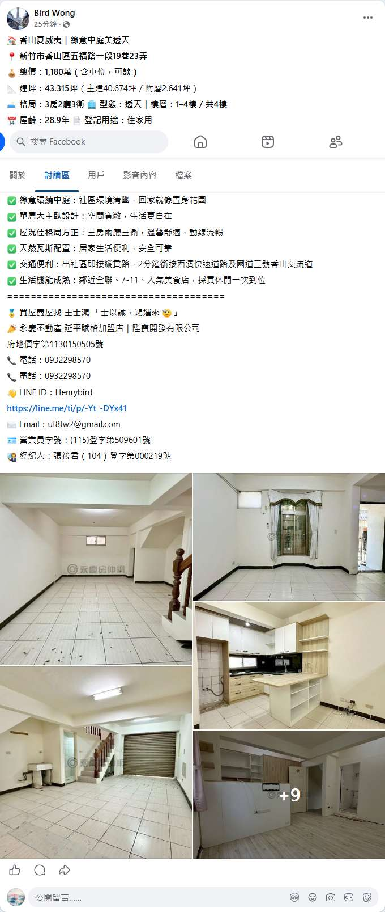 看原始刊登 → 查看貼文原文Bird Wong 25分鐘前 香山夏威夷｜綠意中庭美透天 新竹市香山區五福路一段19巷23弄 總價：1,180萬（含車位，可談） 建坪：43.315坪（主建40.674坪／附屬2.641坪） 格局：3房2廳3衛 型態：透天｜樓層：1–4樓／共4樓 屋齡：28.9年 登記用途：住家用 車位：獨立車庫 學區：內湖國小、內湖國中 管理費：月繳1,200元 ===================================== 人車分道社區：居住安全更安心，生活品質佳 綠意環繞中庭：社區環境清幽，回家就像置身花園 單層大主臥設計：空間寬敞，生活更自在 屋況佳格局方正：三房兩廳三衛，溫馨舒適，動線流暢 天然瓦斯配置：居家生活便利，安全可靠 交通便利：出社區即接縱貫路，2分鐘銜接西濱快速道路及國道三號香山交流道 生活機能成熟：鄰近全聯、7-11、人氣美食店，採買休閒一次到位 ===================================== 買屋賣屋找 王士鴻 「士以誠，鴻運來 」 永慶不動產 延平賦格加盟店｜陞寶開發有限公司 府地價字第1130150505號 電話：0932298570 電話：0932298570 LINE ID：Henrybird Email：uf8tw2@gmail.com 營業員字號：(115)登字第509601號 經紀人：張筱君（104）登字第000219號 +9 公開留言…… 貼文內有 2 個連結（已檢查）
| 1,180 萬 | — | 3房2廳3衛 超規格 | 43.315 坪 | 1200元 | 有 | — | — 年 | 4F | FB 貼文 0932298570 |
| 1,180 萬 | 28.73萬/坪 | 4房2廳3衛 超規格 | 41.07 坪 | 未註明 | 未註明 | — | — 年 | 整棟/3F | 仲介 莊雅茹 | |
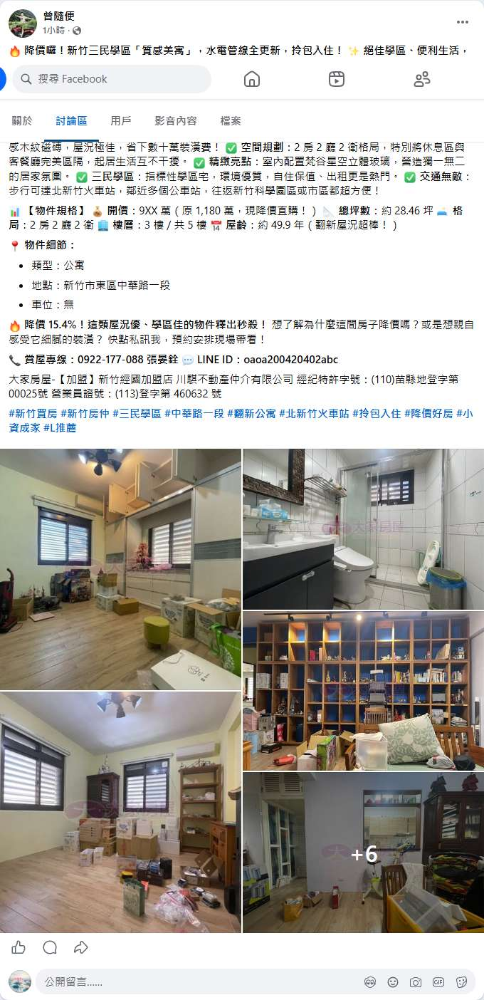 看原始刊登 → 查看貼文原文曾隨便 大約 1 小時前 降價囉！新竹三民學區「質感美寓」，水電管線全更新，拎包入住！ 絕佳學區、便利生活，這間屋況好到沒話說，小資成家首選！ 您在找免整理、近車站、生活機能完善的溫馨好房嗎？ 這間位於新竹市東區中華路一段的精美公寓，不僅坐擁三民黃金學區，屋主更投入重金進行全室翻新，將原本的空間打造成舒適質感宅，絕對是您不可錯過的優質物件！ 【物件核心魅力】 全面升級：全室水電管線「全部重拉」，櫻花廚具、鵝牌靜音氣密窗、質感木紋磁磚，屋況極佳，省下數十萬裝潢費！ 空間規劃：2 房 2 廳 2 衛格局，特別將休息區與客餐廳完美區隔，起居生活互不干擾。 精緻亮點：室內配置梵谷星空立體玻璃，營造獨一無二的居家氛圍。 三民學區：指標性學區宅，環境優質，自住保值、出租更是熱門。 交通無敵：步行可達北新竹火車站，鄰近多個公車站，往返新竹科學園區或市區都超方便！ 【物件規格】 開價：9XX 萬（原 1,180 萬，現降價直購！） 總坪數：約 28.46 坪 格局：2 房 2 廳 2 衛 樓層：3 樓 / 共 5 樓 屋齡：約 49.9 年（翻新屋況超棒！） 物件細節： 類型：公寓 地點：新竹市東區中華路一段 車位：無 降價 15.4%！這類屋況優、學區佳的物件釋出秒殺！ 想了解為什麼這間房子降價嗎？或是想親自感受它細膩的裝潢？ 快點私訊我，預約安排現場帶看！ 賞屋專線：0922-177-088 張晏銓 LINE ID：oaoa200420402abc 大家房屋-【加盟】新竹經國加盟店 川騏不動產仲介有限公司 經紀特許字號：(110)苗縣地登字第00025號 營業員證號：(113)登字第 460632 號 #新竹買房 #新竹房仲 #三民學區 #中華路一段 #翻新公寓 #北新竹火車站 #拎包入住 #降價好房 #小資成家 #L推薦 +6 公開留言…… 貼文內有 1 個連結（已檢查）
| 1,180 萬 | — | 2房2廳2衛 差一點 | 28.46 坪 | 未註明 | 未註明 | 無 | — 年 | 3F | FB 貼文 0922-177-088 |
看原始刊登 → 查看貼文原文鄭宛馨 42分鐘前 【1180萬買透天！5房4衛＋土地24.67坪】 新竹還有這種總價的透天？真的要看！ 【華江街｜低總價5房透天】 開價：1180萬 建物：41.07坪 土地：24.67坪 格局：5房2廳4衛 1～2樓透天｜無管理費 買房不要只看「房子漂亮不漂亮」 真正懂買房的人，會先看—— 土地有多少？ 房間夠不夠？ 總價負擔得起嗎？ 這間一次給你： 5房格局，三代同堂也好住 4衛浴，生活超方便 土地24.67坪，自有土地實在 天然瓦斯 透天獨立進出，沒有管理費 低總價入手透天，稀有！ 華江街生活圈 罟寮一站公車站 近港南國小 紅樹林公園就在附近 全家便利商店，日常採買方便 1180萬買華江街5房透天！ 這種總價，不是叫你慢慢想， 是叫你先來看，再決定要不要談！ 開價不等於成交價 喜歡就大膽出價，價格我來努力！ 想知道這間值不值得買？ 私訊宛姐，直接幫你分析！ 鄭宛馨（宛宛）｜0987-220-161 Line ID：0987220161（同電話） #宛姐幫您找溫馨的家 歡迎委託買賣不動產 經紀業：畇品不動產仲介經紀有限公司 經紀人：許縉翰（97）北縣字第001725號 營業員：（113）登字第475950號 實際資料依謄本登記為準 #華江街透天 #新竹透天 #香山區透天 #低總價透天 #5房透天 #宛姐幫您找溫馨的家 發文時間: 10/05 19:23 顯示較少 +4 公開留言…… 貼文內有 1 個連結（已檢查）
| 1,180 萬 | — | 5房—廳4衛 超規格 | 24.67 坪 | 未註明 | 未註明 | — | — 年 | 2F | FB 貼文 0987-220-161 |
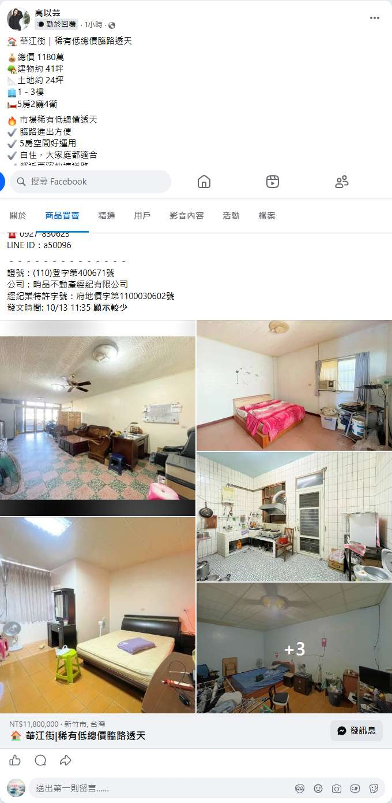 看原始刊登 → 查看貼文原文高以芸 勤於回覆 大約 1 小時前 華江街｜稀有低總價臨路透天 總價 1180萬 建物約 41坪 土地約 24坪 1－3樓 5房2廳4衛 市場稀有低總價透天 臨路進出方便 5房空間好運用 自住、大家庭都適合 鄰近西濱快速道路 交通便利、生活機能佳 透天產品釋出少 想找低總價透天的真的可以來看看 歡迎來電／以芸為您服務 0927-830623 LINE ID：a50096 －－－－－－－－－－－－－－ 證號：(110)登字第400671號 公司：畇品不動產經紀有限公司 經紀業特許字號：府地價字第1100030602號 發文時間: 10/13 11:35 顯示較少 +3 NT$11,800,000 · 新竹市, 台灣 🏠 華江街|稀有低總價臨路透天 發訊息 送出第一則留言…… 貼文內有 1 個連結（已檢查）
同一物件另有 1 筆刊登（不同仲介） | 1,180 萬 | — | 5房2廳4衛 超規格 | 41.0 坪 | 未註明 | 未註明 | — | — 年 | 3F | FB 貼文 0927-830623 |
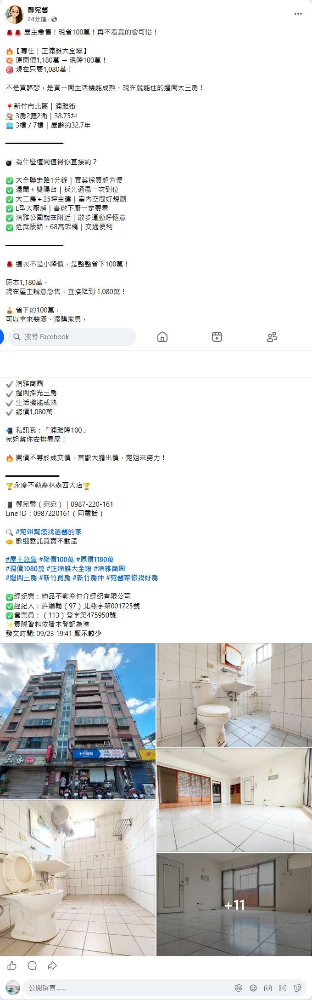 看原始刊登 → 查看貼文原文鄭宛馨 屋主急售！現省100萬！再不看真的會可惜！ 【專任｜正湳雅大全聯】 原開價1,180萬 → 現降100萬！ 現在只要1,080萬！ 不是買夢想，是買一間生活機能成熟、現在就能住的邊間大三房！ 新竹市北區｜湳雅街 3房2廳2衛｜38.75坪 3樓／7樓｜屋齡約32.7年 ━━━━━━━━━━━━━━ 為什麼這間值得你直接約？ 大全聯走路1分鐘｜買菜採買超方便 邊間＋雙陽台｜採光通風一次到位 大三房＋25坪主建｜室內空間好規劃 L型大廚房｜喜歡下廚一定要看 湳雅公園就在附近｜散步運動好愜意 近武陵路、68高架橋｜交通便利 ━━━━━━━━━━━━━━ 這次不是小降價，是整整省下100萬！ 原本1,180萬， 現在屋主誠意急售，直接降到 1,080萬！ 省下的100萬， 可以拿來裝潢、添購家具， 也能減輕買房的資金壓力。 但我要說實話： 好房要看屋況，價格要談實際。 如果你正在找： 湳雅商圈 邊間採光三房 生活機能成熟 總價1,080萬 私訊我：「湳雅降100」 宛姐幫你安排看屋！ 開價不等於成交價，喜歡大膽出價，宛姐來努力！ ━━━━━━━━━━━━━ 永慶不動產林森西大店 鄭宛馨（宛宛）｜0987-220-161 Line ID：0987220161（同電話） #宛姐幫您找溫馨的家 歡迎委託買賣不動產 #屋主急售 #降價100萬 #原價1180萬 #現價1080萬 #正湳雅大全聯 #湳雅商圈 #邊間三房 #新竹買房 #新竹房仲 #宛馨帶你找好房 經紀業：畇品不動產仲介經紀有限公司 經紀人：許縉翰（97）北縣字第001725號 營業員：（113）登字第475950號 實際資料依謄本登記為準 發文時間: 09/23 19:41 顯示較少 +11 公開留言…… 貼文內有 1 個連結（已檢查）
| 1,180 萬 | — | 3房—廳2衛 完全符合 | 38.75 坪 | 未註明 | 未註明 | 有 | — 年 | 3F/7F | FB 貼文 0987-220-161 |
| 1,180 萬 | 18.17萬/坪 | 5房2廳4衛 超規格 | 64.93 坪 | 2925元/月 | 1 | 有 | 30 年 | 整棟/4F | 仲介 何虹諺 | |
| 1,180 萬 | 28.73萬/坪 | 5房2廳4衛 超規格 | 41.07 坪 | 未註明 | 未註明 | 無 | — 年 | 1-2F/2F | 永慶不動產 | |
| 1,180 萬 | 32.83萬/坪 | 3房2廳2衛 完全符合 | 35.94 坪 | 未註明 | 未註明 | — | — 年 | 2F/6F | 永慶不動產 | |
| 1,180 萬 | 22.53萬/坪 | 4房2廳3衛 超規格 | 52.36 坪 | — | 未註明 | — | — 年 | 整棟/3F | 仲介 莊雅茹 | |
| 1,180 萬 | 31.32萬/坪 | 3房2廳2衛 完全符合 | 37.67 坪 | — | 未註明 | 有 | 31 年 | 3F/9F | — | |
| 1,180 萬 | 25.97萬/坪 | 5房2廳3衛 超規格 | 45.43 坪 | — | 未註明 | — | 46 年 | 1F~3F/3F | 仲介 周婕宜 | |
 看原始刊登 → 同一物件另有 40 筆刊登（不同仲介）
| 1,188 萬 | 37.8萬/坪 | 3房2廳2衛 完全符合 | 31.43 坪 | 1000 | 無 | 有 | 33.2 年 | 7F/12F | 有巢氏房屋 |
 看原始刊登 → 同一物件另有 21 筆刊登（不同仲介）
| 1,188 萬 | 29.33萬/坪 | 3房2廳2衛 完全符合 | 40.5 坪 | 2780 | 有 | 有 | 8.8 年 | 10F/10F | 有巢氏房屋 |
 看原始刊登 → 同一物件另有 3 筆刊登（不同仲介）
| 1,188 萬 | 35.05萬/坪 | 3房2廳2衛 完全符合 | 33.89 坪 | 834元/月 | 無 | 無 | 39 年 | 2F/5F | 仲介 彭立宇 |
| 1,188 萬 | 38.55萬/坪 | 3房2廳2衛 完全符合 | 30.82 坪 | 未註明 | 無 | 無 | 40.3 年 | 4F/5F | 有巢氏房屋 | |
| 1,188 萬 | 29.13萬/坪 | 5房4廳3衛 超規格 | 40.78 坪 | 無 | 無 | — | 55 年 | 整棟/2F | 仲介 張先生 | |
 | 1,188 萬 | 39.6萬/坪 | 3房2廳1衛 差一點 | 30 坪 | 233 | 無 | 有 | 34.8 年 | 4F/5F | 有巢氏房屋 |
| 1,188 萬 | 32.84萬/坪 | 5房2廳3衛 超規格 | 36.18 坪 | 未註明 | 總價 | 有 | 33.7 年 | 5F/5F | 永慶房屋 | |
 看原始刊登 → 同一物件另有 7 筆刊登（不同仲介）
| 1,188 萬 | 53.15萬/坪 | 3房2廳2衛 完全符合 | 22.35 坪 | 未註明 | 未註明 | 無 | 44.3 年 | 1F/5F | 信義房屋 |
 | 1,188 萬 | 34.73萬/坪 | 3房2廳2衛 完全符合 | 34.21 坪 | 未註明 | 未註明 | 有 | 32.8 年 | 5F/12F | 永慶房屋 |
| 1,188 萬 | 29.13萬/坪 | 4房3廳2衛 超規格 | 40.78 坪 | 未註明 | 未註明 | — | 55 年 | 1F/2F | 中信房屋 | |
 | 1,188 萬 | 40.74萬/坪 | 15房—廳15衛 超規格 | 29.16 坪 | 未註明 | 未註明 | — | 44.5 年 | 1-2F/2F | 永慶房屋 |
 | 1,188 萬 | 52.01萬/坪 | 5房—廳5衛 超規格 | 22.84 坪 | 未註明 | 未註明 | — | — 年 | 4F/5F | 永慶不動產 |
 | 1,188 萬 | 56.04萬/坪 | 3房—廳3衛 超規格 | 21.2 坪 | 未註明 | 未註明 | — | — 年 | 4F/5F | 永義房屋 |
| 1,188 萬 | 37.38萬/坪 | 3房2廳2衛 完全符合 | 31.78 坪 | 未註明 | 新竹市東區食品路 | 無 | 45.2 年 | 3F/5F | 永慶房屋 | |
| 1,188 萬 | 27.09萬/坪 | 6房—廳4衛 超規格 | 43.86 坪 | 未註明 | 新竹市東區高峰路 | 無 | 36.3 年 | 5F/5F | 永慶房屋 | |
| 1,188 萬 | 42.57萬/坪 | 2房2廳2衛 差一點 | 27.91 坪 | 未註明 | 新竹市香山區香北一路 | 有 | 5 年 | 4F/8F | 永慶房屋 | |
 看原始刊登 → 同一物件另有 2 筆刊登（不同仲介）
| 1,188 萬 | 31.94萬/坪 | 3房2廳2衛 完全符合 | 37.2 坪 | 未註明 | 未註明 | 有 | 35.3 年 | 5F/5F | 永慶房屋 |
 | 1,188 萬 | 34.62萬/坪 | 3房2廳2衛 完全符合 | 34.31 坪 | 未註明 | 未註明 | 有 | 32 年 | 4F/7F | 仲介 李炎紅 |
| 1,188 萬 | 25.02萬/坪 | 4房2廳2衛 超規格 | 47.48 坪 | 未註明 | 未註明 | 無 | — 年 | 5F/5F | 仲介 值班人員 | |
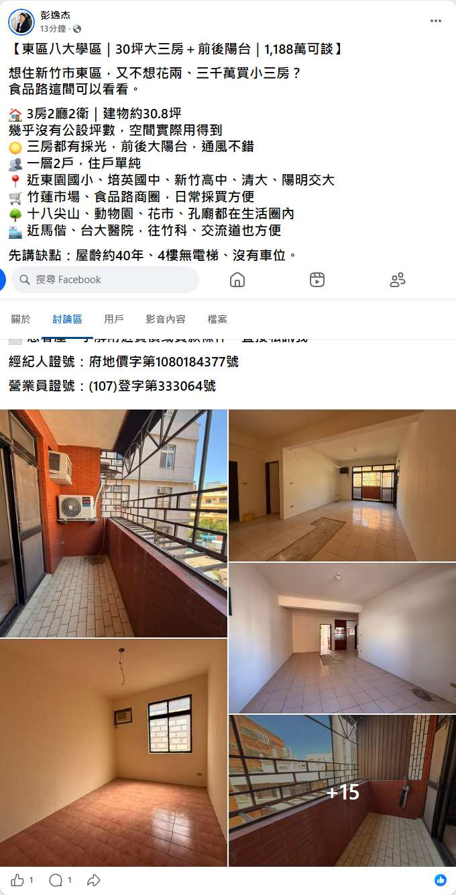 看原始刊登 → 查看貼文原文彭逸杰 13分鐘前 【東區八大學區｜30坪大三房＋前後陽台｜1,188萬可談】 想住新竹市東區，又不想花兩、三千萬買小三房？ 食品路這間可以看看。 3房2廳2衛｜建物約30.8坪 幾乎沒有公設坪數，空間實際用得到 三房都有採光，前後大陽台，通風不錯 一層2戶，住戶單純 近東園國小、培英國中、新竹高中、清大、陽明交大 竹蓮市場、食品路商圈，日常採買方便 十八尖山、動物園、花市、孔廟都在生活圈內 近馬偕、台大醫院，往竹科、交流道也方便 先講缺點：屋齡約40年、4樓無電梯、沒有車位。 但如果你在意的是室內空間、地段、採光，而不是一定要新大樓，這間反而很有機會。 開價1,188萬｜屋主誠意出售，價格可以談！ 想看屋、了解附近實價或貸款條件，直接私訊我。 經紀人證號：府地價字第1080184377號 營業員證號：(107)登字第333064號 +15 貼文內有 1 個連結（已檢查）
| 1,188 萬 | — | 3房—廳2衛 完全符合 | 30.0 坪 | 未註明 | 有 | — | — 年 | 4F | FB 貼文 |
| 1,188 萬 | 31.6萬/坪 | 3房2廳2衛 完全符合 | 37.6 坪 | 未註明 | 固定車位 | 有 | 0 年 | 2F/5F | 有巢氏房屋 | |
| 1,188 萬 | 31.18萬/坪 | 3房2廳2衛 完全符合 | 38.1 坪 | 未註明 | 固定車位 | 有 | 0 年 | 2F/5F | 有巢氏房屋 | |
| 1,188 萬 | 39.6萬/坪 | 3房2廳1衛 差一點 | 30 坪 | 未註明 | 未註明 | — | — 年 | 4F/5F | 台慶不動產 | |
| 1,188 萬 | 43.37萬/坪 | 2房2廳2衛 差一點 | 27.39 坪 | — | 未註明 | 有 | 4 年 | 4F/8F | 仲介 楊小姐 | |
 | 1,190 萬 | 38.15萬/坪 | 3房2廳2衛 完全符合 | 31.19 坪 | 1560 | 無 | 有 | 30.2 年 | 6F/12F | 有巢氏房屋 |
| 1,190 萬 | 34.96萬/坪 | 3房2廳2衛 完全符合 | 34.04 坪 | 未註明 | 未註明 | 有 | 32.4 年 | 4F/12F | 信義房屋 | |
 | 1,198 萬 | 45.04萬/坪 | 3房2廳2衛 完全符合 | 26.6 坪 | 1328元/月 | 無 | 有 | 31 年 | 5F/13F | 仲介 吳宜憲 |
 看原始刊登 → 同一物件另有 12 筆刊登（不同仲介）
| 1,198 萬 | 33.27萬/坪 | 3房2廳2衛 完全符合 | 36.01 坪 | 3600元/季度 | 機械 | 有 | 33 年 | 1F/7F | 仲介 張美華 |
 看原始刊登 → 同一物件另有 12 筆刊登（不同仲介）
| 1,198 萬 | 36.44萬/坪 | 3房2廳2衛 完全符合 | 32.88 坪 | 未註明 | 無 | 有 | 32.9 年 | 7F/7F | 有巢氏房屋 |
 看原始刊登 → 同一物件另有 11 筆刊登（不同仲介）
| 1,198 萬 | 35.73萬/坪 | 3房2廳2衛 完全符合 | 33.53 坪 | 1370 | 無 | 有 | 44.1 年 | 5F/9F | 有巢氏房屋 |
| 1,198 萬 | 27.89萬/坪 | 3房2廳2衛 完全符合 | 42.96 坪 | 2439 | 有 | 有 | 3 年 | 9F/10F | 有巢氏房屋 | |
 看原始刊登 → 同一物件另有 13 筆刊登（不同仲介）
| 1,198 萬 | 36.44萬/坪 | 3房2廳2衛 完全符合 | 32.88 坪 | 未註明 | 無 | 有 | 32.9 年 | 7F/7F | 有巢氏房屋 |
 看原始刊登 → 同一物件另有 3 筆刊登（不同仲介）
| 1,198 萬 | 29.22萬/坪 | 3房2廳2衛 完全符合 | 41 坪 | 2300 | 有 | 有 | 14.5 年 | 4F/11F | 有巢氏房屋 |
 看原始刊登 → 同一物件另有 3 筆刊登（不同仲介）
| 1,198 萬 | 32.85萬/坪 | 3房2廳2衛 完全符合 | 36.47 坪 | 1600 | 無 | 有 | 32.9 年 | 6F/7F | 有巢氏房屋 |
 看原始刊登 → 同一物件另有 3 筆刊登（不同仲介）
| 1,198 萬 | 31.84萬/坪 | 3房2廳2衛 完全符合 | 37.63 坪 | 未註明 | 有 | 有 | 31 年 | 7F/8F | 中信房屋 南大加盟店 |
 | 1,198 萬 | 36.05萬/坪 | 3房2廳2衛 完全符合 | 33.23 坪 | 1962元/月 | 機械式，已含售金內 | 有 | 17 年 | 9F/12F | 仲介 李福成 |
| 1,198 萬 | 38.63萬/坪 | 3房2廳1衛 差一點 | 31.01 坪 | 1790 | 無 | 有 | 32.4 年 | 12F/12F | 有巢氏房屋 | |
 看原始刊登 → 同一物件另有 8 筆刊登（不同仲介）
| 1,198 萬 | 41.31萬/坪 | 3房2廳1衛 差一點 | 29.0 坪 | 2125元/月 | 機械式，已含售金內 | 有 | 7 年 | 2F/7F | 仲介 蕭洛霏 |
 看原始刊登 → 同一物件另有 10 筆刊登（不同仲介）
| 1,198 萬 | 47.04萬/坪 | 3房2廳2衛 完全符合 | 25.47 坪 | 無 | 無 | 無 | 43 年 | 3F/5F | 仲介 吳泓遵 |
 看原始刊登 → 同一物件另有 4 筆刊登（不同仲介）
| 1,198 萬 | 33.78萬/坪 | 3房2廳2衛 完全符合 | 35.47 坪 | 3410 | 坡道機械固定車位 | 有 | 27.8 年 | 6F/6F | 有巢氏房屋 |
| 1,198 萬 | 45.99萬/坪 | 3房2廳2衛 完全符合 | 26.05 坪 | 未註明 | 無 | 無 | 43.8 年 | 5F/5F | 有巢氏房屋 | |
 看原始刊登 → 同一物件另有 11 筆刊登（不同仲介）
| 1,198 萬 | 39.23萬/坪 | 3房2廳2衛 完全符合 | 30.54 坪 | 無 | 無 | 無 | 43 年 | 5F/5F | 仲介 吳虹嬉 |
 | 1,198 萬 | 29.04萬/坪 | 3房2廳2衛 完全符合 | 41.25 坪 | 未註明 | 有 | 有 | 33 年 | 2F/10F | 信義房屋 |
 看原始刊登 → 同一物件另有 4 筆刊登（不同仲介）
| 1,198 萬 | 40.04萬/坪 | 4房2廳2衛 超規格 | 29.92 坪 | 5460元/季度 | 7.29 | 有 | 28 年 | 6F/10F | 仲介 詹小予 |
| 1,198 萬 | 22.88萬/坪 | 4房2廳3衛 超規格 | 52.36 坪 | 1000 | 庭院停自有地 | — | 31.4 年 | -1-3F/3F | 有巢氏房屋 | |
 看原始刊登 → 同一物件另有 8 筆刊登（不同仲介）
| 1,198 萬 | 47.04萬/坪 | 3房2廳1衛 差一點 | 25.47 坪 | 未註明 | 未註明 | 有 | 30 年 | 11F/12F | 中信房屋 北大加盟店 |
 | 1,198 萬 | 39.11萬/坪 | 3房2廳2衛 完全符合 | 30.63 坪 | 未註明 | 未註明 | 有 | 32.8 年 | 9F/9F | 信義房屋 |
 | 1,198 萬 | 32.76萬/坪 | 3房2廳2衛 完全符合 | 36.57 坪 | 未註明 | 有 | 有 | 29.8 年 | 12F/12F | 信義房屋 |
 | 1,198 萬 | 23.9萬/坪 | 3房2廳2衛 完全符合 | 50.13 坪 | 未註明 | 11.261坪) | 有 | 4 年 | 2F/15F | 永慶房屋 |
 | 1,198 萬 | 52.18萬/坪 | 3房2廳2衛 完全符合 | 22.96 坪 | 未註明 | 未註明 | 無 | 44.8 年 | 2F/5F | 信義房屋 |
 看原始刊登 → 同一物件另有 6 筆刊登（不同仲介）
| 1,198 萬 | 44.49萬/坪 | 5房—廳5衛 超規格 | 26.93 坪 | 1333 | 無 | 有 | 32.8 年 | 5F/5F | 有巢氏房屋 |
 | 1,198 萬 | 42.05萬/坪 | 2房—廳2衛 差一點 | 28.49 坪 | 未註明 | 無 | 有 | 5 年 | 2F/8F | 有巢氏房屋 |
| 1,198 萬 | 47.04萬/坪 | 3房2廳1衛 差一點 | 25.47 坪 | 未註明 | 計算 | 有 | 30.8 年 | 11F/12F | 永慶房屋 | |
 看原始刊登 → 同一物件另有 4 筆刊登（不同仲介）
| 1,198 萬 | 44.37萬/坪 | 3房2廳2衛 完全符合 | 27 坪 | 未註明 | 未註明 | 無 | 46.8 年 | 4F/4F | 信義房屋 |
| 1,198 萬 | 38.07萬/坪 | 3房2廳2衛 完全符合 | 31.47 坪 | 未註明 | 未註明 | 有 | 35.3 年 | 1F/5F | 信義房屋 | |
 看原始刊登 → 同一物件另有 3 筆刊登（不同仲介）
| 1,198 萬 | 31.88萬/坪 | 3房2廳2衛 完全符合 | 37.58 坪 | 未註明 | 有 | 有 | — 年 | 4F/7F | 永慶不動產 |
 | 1,198 萬 | 38.63萬/坪 | 3房2廳2衛 完全符合 | 31.01 坪 | 未註明 | 未註明 | 有 | — 年 | 12F/12F | 永慶不動產 |
 | 1,198 萬 | 28.09萬/坪 | 3房2廳2衛 完全符合 | 42.65 坪 | 未註明 | 未註明 | — | — 年 | 2F/6F | 永慶不動產 |
 | 1,198 萬 | 38.63萬/坪 | 3房2廳1衛 差一點 | 31.01 坪 | 未註明 | 未註明 | 有 | — 年 | 12F/12F | 永義房屋 |
| 1,198 萬 | 34.33萬/坪 | 3房2廳1衛 差一點 | 34.9 坪 | 未註明 | 新竹市香山區東華路 | 有 | 32.3 年 | 4F/12F | 永慶房屋 | |
| 1,198 萬 | 36.14萬/坪 | 2房1廳2衛 不符 | 33.15 坪 | 未註明 | 首購成家首選+免追垃圾車 | 有 | 33.3 年 | 4F/7F | 永慶房屋 | |
 | 1,198 萬 | 37.47萬/坪 | 5房2廳3衛 超規格 | 31.97 坪 | 未註明 | ，愛車不必在外受風吹日曬 | — | 47.2 年 | 1-4F/4F | 永慶房屋 |
| 1,198 萬 | 38.63萬/坪 | 3房2廳2衛 完全符合 | 31.01 坪 | 未註明 | 未註明 | 有 | 32.4 年 | 12F/12F | 永慶房屋 | |
 | 1,198 萬 | 23.83萬/坪 | 3房2廳2衛 完全符合 | 50.28 坪 | 未註明 | 未註明 | 有 | 31.9 年 | 6F/7F | 永慶房屋 |
| 1,198 萬 | 32.19萬/坪 | 3房2廳3衛 超規格 | 37.22 坪 | 未註明 | 未註明 | — | — 年 | 1-2F/2F | 永慶房屋 | |
| 1,198 萬 | 31.12萬/坪 | 3房2廳2衛 完全符合 | 38.49 坪 | 未註明 | 未註明 | 有 | 10 年 | 6F/7F | 代理人 彭小姐 | |
| 1,198 萬 | 41.18萬/坪 | 3房2廳2衛 完全符合 | 29.09 坪 | 未註明 | 未註明 | 有 | 7 年 | 2F/7F | 仲介 洪揚貴 | |
| 1,198 萬 | 39.54萬/坪 | 3房2廳2衛 完全符合 | 30.3 坪 | 未註明 | 未註明 | 有 | 35 年 | 5F/7F | 仲介 張先生 | |
| 1,198 萬 | 29.21萬/坪 | 3房2廳2衛 完全符合 | 41.02 坪 | 未註明 | 未註明 | 有 | 8 年 | 10F/10F | 仲介 呂秀美 | |
| 1,198 萬 | 32.19萬/坪 | 4房2廳3衛 超規格 | 37.22 坪 | 未註明 | 未註明 | — | — 年 | 1F~2F/2F | 仲介 黃先生 | |
| 1,198 萬 | 35.69萬/坪 | 3房2廳1衛 差一點 | 33.57 坪 | 未註明 | 未註明 | 有 | 34 年 | 5F/5F | — | |
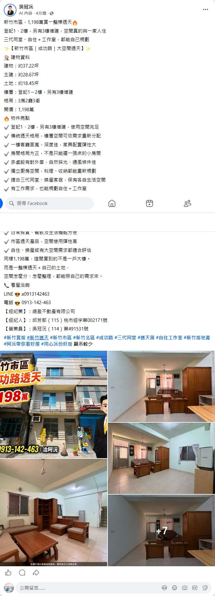 看原始刊登 → 查看貼文原文吳冠沅 AI 內容 4分鐘前 新竹市區，1,198萬買一整棟透天 登記1、2樓，另有3樓增建，空間真的夠一家人住 三代同堂、自住＋工作室，都能自己規劃 【新竹市區｜成功路｜大空間透天】 建物資料 建物：約37.22坪 主建：約28.67坪 土地：約18.45坪 樓層：登記1～2樓，另有3樓增建 格局：3房2廳3衛 開價：1,198萬 物件亮點 登記1、2樓，另有3樓增建，使用空間充足 傳統透天格局，樓層空間可依需求重新分配 一樓客廳面寬、深度佳，家具配置彈性大 房間格局方正，不是只能擺一張床的小房間 多處設有對外窗，自然採光、通風條件佳 獨立廚房空間，料理、收納都能重新規劃 適合三代同堂、換屋家庭，保有各自生活空間 有工作需求，也能規劃自住＋工作室 保留原始空間，可依自己喜好重新翻新 自住、工作室、長期置產皆有規劃彈性 地段優勢｜新竹市區 位於新竹市北區，市區生活圈 日常採買、餐飲及生活機能方便 市區透天產品，空間使用彈性高 自住、換屋或有大空間需求都適合評估 同樣1,198萬，這間買到的不是一戶大樓。 而是一整棟透天＋自己的土地， 空間怎麼分、怎麼整理，都能照自己的需求來。 看屋洽詢 LINE a0913142463 電話 0913-142-463 【經紀業】：總盈不動產有限公司 【經紀人】：邱芳郁（115）桃市經字第002171號 【營業員】：吳冠沅（114）第491531號 #新竹買房 #新竹透天 #新竹市區 #新竹北區 #成功路 #三代同堂 #透天厝 #自住工作室 #新竹房地產 #阿沅帶你看好屋 #用心沅份好房 顯示較少 +7 公開留言…… 貼文內有 1 個連結（已檢查）
| 1,198 萬 | — | 3房2廳3衛 超規格 | 37.22 坪 | 未註明 | 未註明 | — | — 年 | 2F | FB 貼文 0913142463 |
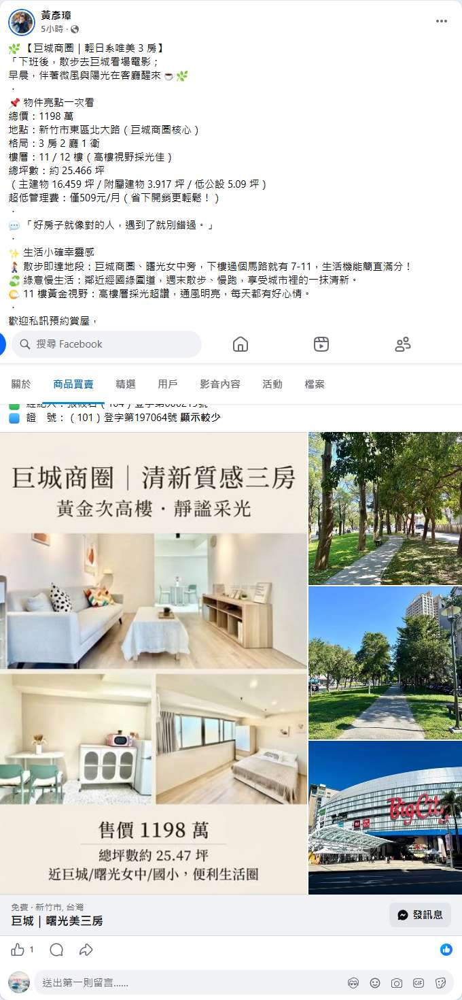 看原始刊登 → 查看貼文原文黃彥璋 5小時前 【巨城商圈｜輕日系唯美 3 房】 「下班後，散步去巨城看場電影； 早晨，伴著微風與陽光在客廳醒來 ． 物件亮點一次看 總價：1198 萬 地點：新竹市東區北大路（巨城商圈核心） 格局：3 房 2 廳 1 衛 樓層：11 / 12 樓（高樓視野採光佳） 總坪數：約 25.466 坪 （主建物 16.459 坪 / 附屬建物 3.917 坪 / 低公設 5.09 坪） 超低管理費：僅509元/月（省下開銷更輕鬆！） ． 「好房子就像對的人，遇到了就別錯過。」 ． 生活小確幸靈感 散步即達地段：巨城商圈、曙光女中旁，下樓過個馬路就有 7-11，生活機能簡直滿分！ 綠意慢生活：鄰近經國綠園道，週末散步、慢跑，享受城市裡的一抹清新。 11 樓黃金視野：高樓層採光超讚，通風明亮，每天都有好心情。 ． 歡迎私訊預約賞屋， 親自來感受這間充滿日光與溫暖的家吧！ ． 預約看房專線｜0980-432-088 黃彥璋 歡迎來店交流｜永慶不動產·新竹延平賦格加盟店 陞寶開發有限公司．府地價字1130150505號 經紀人：張筱君（104）登字第000219號 證 號：（101）登字第197064號 顯示較少 免費 · 新竹市, 台灣 巨城｜曙光美三房 發訊息 送出第一則留言…… 貼文內有 1 個連結（已檢查）
同一物件另有 1 筆刊登（不同仲介）
| 1,198 萬 | — | 3房—廳1衛 差一點 | 25.466 坪 | 509元 | 未註明 | — | — 年 | 12F | FB 貼文 0980-432-088 |
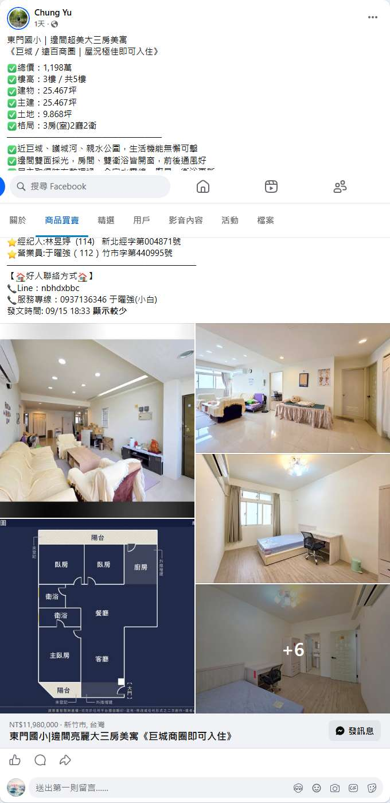 看原始刊登 → 查看貼文原文Chung Yu 東門國小｜邊間超美大三房美寓 《巨城／遠百商圈｜屋況極佳即可入住》 總價：1,198萬 樓高：3樓 / 共5樓 建物：25.467坪 主建：25.467坪 土地：9.868坪 格局：3房(室)2廳2衛 —————————————————— 近巨城、護城河、親水公園，生活機能無懈可擊 邊間雙面採光，房間、雙衛浴皆開窗，前後通風好 屋主取得時有整理過，全室水電線、廚具、衛浴更新 一層一戶，室內格局方正，無走道浪費，好規劃利用 屋況保持超棒，免整理可直接入住，歡迎預約賞屋！ —————————————————————— 城毅國際投資有限公司 新竹市北區金雅路5號 (金雅城毅店) 經紀人:林昱婷 (114) 新北經字第004871號 營業員:于曜強（112）竹市字第440995號 —————————————————————— 【 好人聯絡方式 】 Line：nbhdxbbc 服務專線：0937136346 于曜強(小白) 發文時間: 09/15 18:33 顯示較少 +6 NT$11,980,000 · 新竹市, 台灣 東門國小|邊間亮麗大三房美寓《巨城商圈即可入住》 發訊息 送出第一則留言…… 貼文內有 1 個連結（已檢查）
| 1,198 萬 | — | 3房—廳2衛 完全符合 | 25.467 坪 | 未註明 | 未註明 | — | — 年 | 3F | FB 貼文 0937136346 |
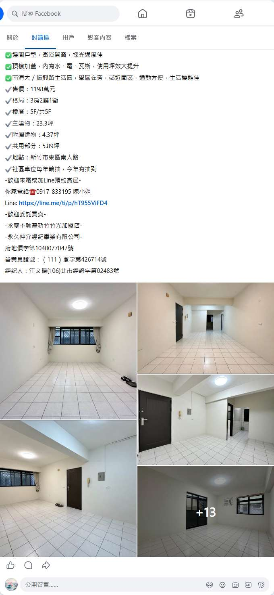 看原始刊登 → 查看貼文原文Chihmei Chen AI 內容 陽光國小｜大觀園｜邊間三房附頂加 三房格局，室內寬敞，空間好運用 邊間戶型，衛浴開窗，採光通風佳 頂樓加蓋，內有水、電、瓦斯，使用坪效大提升 南清大／振興路生活圈，學區在旁，鄰近園區，通勤方便，生活機能佳 售價：1198萬元 格局：3房2廳1衛 樓層：5F/共5F 主建物：23.3坪 附屬建物：4.37坪 共用部分：5.89坪 地點：新竹市東區南大路 社區車位每年輪抽，今年有抽到 -歡迎來電或加Line預約賞屋- 你家電話 0917-833195 陳小姐 Line: -歡迎委託買賣- -永慶不動產新竹竹光加盟店- -永久仲介經紀事業有限公司- 府地價字第1040077047號 營業員證號：（111）登字第426714號 經紀人：江文揚(106)北市經證字第02483號 +13 公開留言…… 貼文內有 2 個連結（已檢查）
| 1,198 萬 | — | 3房—廳1衛 差一點 | 23.3 坪 | 未註明 | 未註明 | — | — 年 | — | FB 貼文 0917-833195 |
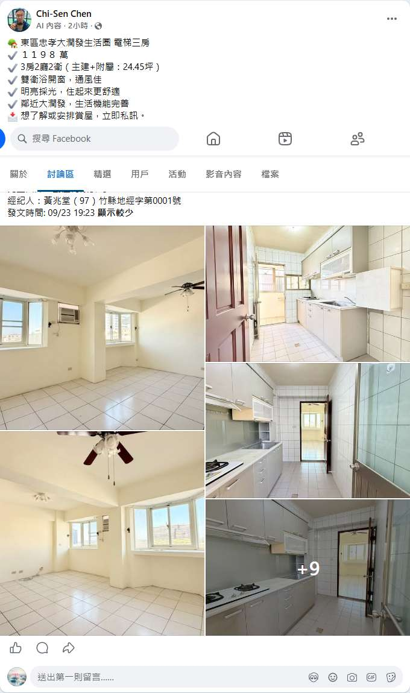 看原始刊登 → 查看貼文原文Chi-Sen Chen AI 內容 東區忠孝大潤發生活圈 電梯三房 １１９８ 萬 3房2廳2衛（主建+附屬：24.45坪） 雙衛浴開窗，通風佳 明亮採光，住起來更舒適 鄰近大潤發，生活機能完善 想了解或安排賞屋，立即私訊。 -------------------------------- 0931-513-341 陳先生 ＋Line電話搜尋：0931513341 台慶不動產｜新竹園區兆豐加盟店 兆豐國際不動產有限公司 經紀人：黃兆堂（97）竹縣地經字第0001號 發文時間: 09/23 19:23 顯示較少 +9 送出第一則留言…… 貼文內有 1 個連結（已檢查）
| 1,198 萬 | — | 3房—廳2衛 完全符合 | 24.45 坪 | 未註明 | 未註明 | — | — 年 | — | FB 貼文 0931-513-341 |
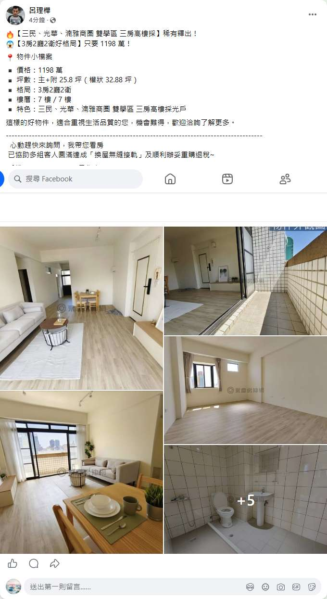 看原始刊登 → 查看貼文原文呂理樺 4分鐘前 【三民、光華、湳雅商圈 雙學區 三房高樓採】稀有釋出！ 【3房2廳2衛好格局】只要 1198 萬！ 物件小檔案 價格：1198 萬 坪數：主+附 25.8 坪（權狀 32.88 坪） 格局：3房2廳2衛 樓層：7 樓／7 樓 特色：三民、光華、湳雅商圈 雙學區 三房高樓採光戶 這樣的好物件，適合重視生活品質的您，機會難得，歡迎洽詢了解更多。 ----------------------------------------------------------------------------------------- 心動趕快來詢問，我帶您看房 已協助多組客人圓滿達成「換屋無縫接軌」及順利辦妥重購退稅~ 手機：0938-721-373 (呂先生) 歡迎來電預約賞屋 ----------------------------------------------------------------------------------------- 台慶不動產新竹清大金城加盟店 益家開發有限公司 (107)苗縣地登字號第00031號 顯示較少 +5 送出第一則留言…… 貼文內有 1 個連結（已檢查）
| 1,198 萬 | — | 3房—廳2衛 完全符合 | 25.8 坪 | 未註明 | 未註明 | 有 | — 年 | 7F/7F | FB 貼文 0938-721-373 |
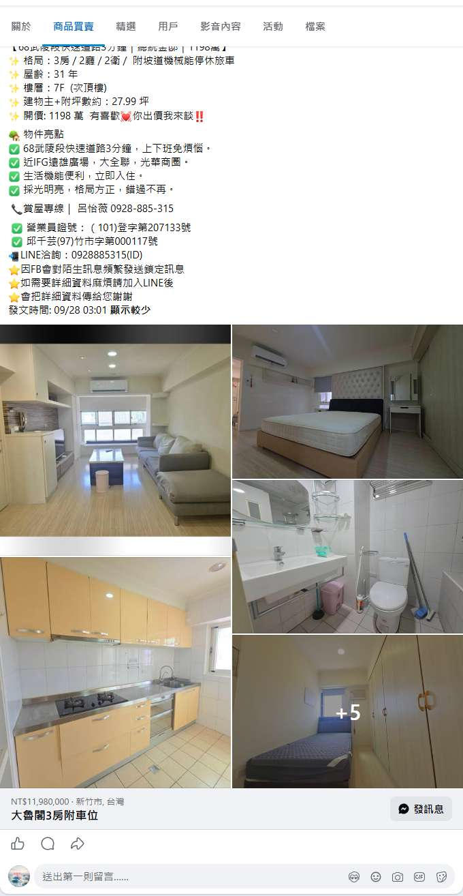 看原始刊登 → 查看貼文原文呂怡薇 5小時前 【68武陵段快速道路3分鐘｜總統金邸｜1198萬】 格局：3房 / 2廳 / 2衛 / 附坡道機械能停休旅車 屋齡：31 年 樓層：7F (次頂樓) 建物主+附坪數約：27.99 坪 開價: 1198 萬 有喜歡 你出價我來談 物件亮點 68武陵段快速道路3分鐘，上下班免煩惱。 近IFG遠雄廣場，大全聯，光華商圈。 生活機能便利，立即入住。 採光明亮，格局方正，錯過不再。 賞屋專線｜ 呂怡薇 0928-885-315 營業員證號：（101)登字第207133號 邱千芸(97)竹市字第000117號 LINE洽詢：0928885315(ID) 因FB會對陌生訊息頻繁發送鎖定訊息 如需要詳細資料麻煩請加入LINE後 會把詳細資料傳給您謝謝 發文時間: 09/28 03:01 顯示較少 +5 NT$11,980,000 · 新竹市, 台灣 大魯閣3房附車位 發訊息 送出第一則留言…… 貼文內有 1 個連結（已檢查）
同一物件另有 1 筆刊登（不同仲介） | 1,198 萬 | — | 3房—廳2衛 完全符合 | 27.99 坪 | 未註明 | 有 | — | — 年 | — | FB 貼文 0928-885-315 |
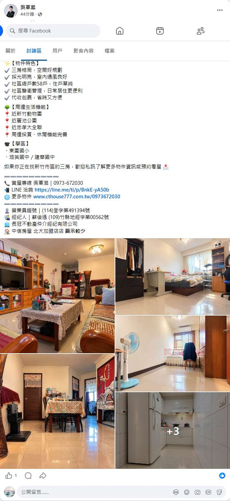 看原始刊登 → 查看貼文原文吳軍澔 44分鐘前 【動物園培英｜採光明亮三房】 總價｜1,198 萬 主＋附｜約25.839坪 樓層｜5樓/8樓 格局｜3房2廳2衛 【物件特色】 三房格局，空間好規劃 採光明亮，室內通風良好 社區總戶數58戶，住戶單純 社區警衛管理，日常居住更便利 代收包裹，省時又方便 【周邊生活機能】 近新竹動物園 近麗池公園 近忠孝大全聯 周邊採買、休閒機能完善 【學區】 ・東園國小 ・培英國中／建華國中 如果你正在找新竹市區的三房，歡迎私訊了解更多物件資訊或預約看屋 賞屋專線 吳軍澔｜0973-672030 LINE 洽詢 更多物件 www.cthouse777.com.tw/0973672030 營業員證號｜(114)登字第491394號 經紀人｜蘇俊逸 (109)竹縣地經字第00562號 長冠不動產仲介經紀有限公司 中信房屋 北大加盟店店 顯示較少 +3 公開留言…… 貼文內有 2 個連結（已檢查）
| 1,198 萬 | — | 3房—廳2衛 完全符合 | 25.839 坪 | 未註明 | 未註明 | 有 | — 年 | 5F/8F | FB 貼文 0973-672030 |
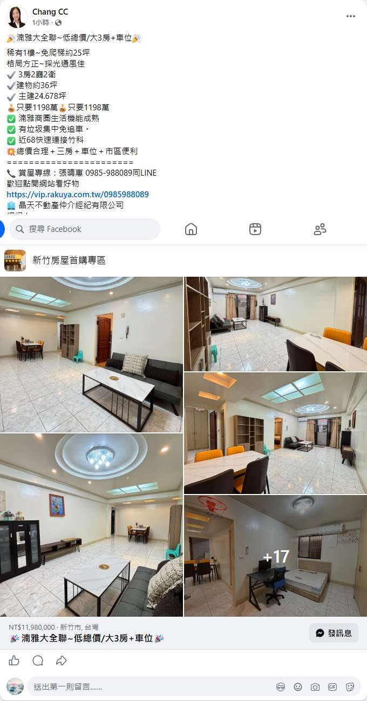 看原始刊登 → 查看貼文原文Chang CC 大約 1 小時前 湳雅大全聯~低總價/大3房+車位 稀有1樓~免爬梯約25坪 格局方正~採光通風佳 3房2廳2衛 建物約36坪 主建24.678坪 只要1198萬 只要1198萬 湳雅商圈生活機能成熟 有垃圾集中免追車。 近68快速連接竹科 總價合理＋三房＋車位＋市區便利 ======================= 賞屋專線：張晴惠 0985-988089同LINE 歡迎點閱網站看好物 晶天不動產仲介經紀有限公司 經紀人 古美玲（108）竹縣地經字第00552號 張晴惠（110）登字第398102號 顯示較少 +17 NT$11,980,000 · 新竹市, 台灣 🎉湳雅大全聯~低總價/大3房+車位🎉 發訊息 送出第一則留言…… 貼文內有 2 個連結（已檢查）
| 1,198 萬 | — | 3房—廳2衛 完全符合 | 25.0 坪 | 未註明 | 未註明 | — | — 年 | 1F | FB 貼文 0985-988089 |
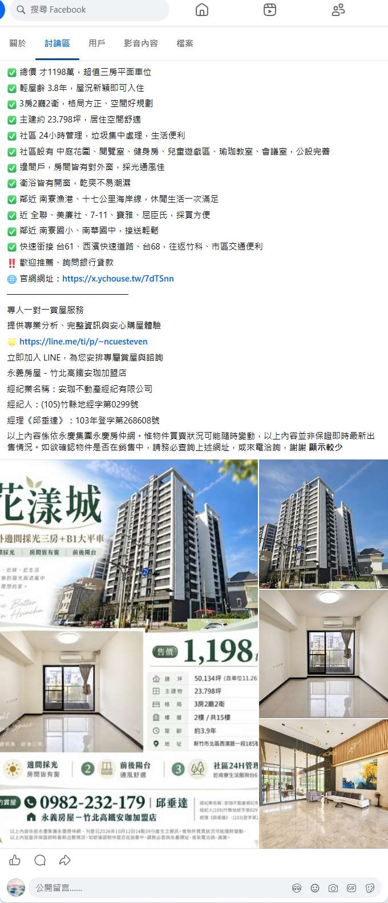 看原始刊登 → 查看貼文原文邱垂達 3小時前 新竹市 三年屋 三房才1198萬 物件特色 總價 才1198萬，超值三房平面車位 輕屋齡 3.8年，屋況新穎即可入住 3房2廳2衛，格局方正、空間好規劃 主建約 23.798坪，居住空間舒適 社區 24小時管理，垃圾集中處理，生活便利 社區設有 中庭花園、閱覽室、健身房、兒童遊戲區、瑜珈教室、會議室，公設完善 邊間戶，房間皆有對外窗，採光通風佳 衛浴皆有開窗，乾爽不易潮濕 鄰近 南寮漁港、十七公里海岸線，休閒生活一次滿足 近 全聯、美廉社、7-11、寶雅、屈臣氏，採買方便 鄰近 南寮國小、南華國中，接送輕鬆 快速銜接 台61、西濱快速道路、台68，往返竹科、市區交通便利 歡迎推薦、詢問銀行貸款 官網網址： ──────────────────── 專人一對一賞屋服務 提供專業分析、完整資訊與安心購屋體驗 立即加入 LINE，為您安排專屬賞屋與諮詢 永義房屋－竹北高鐵安珈加盟店 經紀業名稱：安珈不動產經紀有限公司 經紀人：(105)竹縣地經字第0299號 經理《邱垂達》：103年登字第268608號 以上內容係依永慶集團永慶房仲網。惟物件買賣狀況可能隨時變動，以上內容並非保證即時最新出售情況。如欲確認物件是否在銷售中，請務必查詢上述網址，或來電洽詢，謝謝 顯示較少 公開留言…… 貼文內有 3 個連結（已檢查）
| 1,198 萬 | — | 3房—廳2衛 完全符合 | 23.798 坪 | 未註明 | 有 | — | — 年 | — | FB 貼文 |
| 1,198 萬 | 35.29萬/坪 | 3房2廳2衛 完全符合 | 33.95 坪 | 2000元/月 | 無 | 有 | 47 年 | 5F/6F | 仲介 陳芷晴 | |
| 1,198 萬 | 27.27萬/坪 | 3房2廳2衛 完全符合 | 43.93 坪 | 未註明 | 有 | 有 | 44 年 | 7F/8F | 中信房屋 北大加盟店 | |
| 1,198 萬 | 41.6萬/坪 | 2房2廳2衛 差一點 | 28.8 坪 | 500元/月 | 平面式，已含售金內 | 有 | 22 年 | 2F/5F | 仲介 王小姐 | |
| 1,198 萬 | 34.72萬/坪 | 3房2廳2衛 完全符合 | 34.5 坪 | 未註明 | 未註明 | 有 | 28.2 年 | 21F/21F | 信義房屋 | |
| 1,198 萬 | 23.99萬/坪 | 3房2廳2衛 完全符合 | 49.93 坪 | — | 未註明 | 有 | 43 年 | 7F/8F | 仲介 呂先生 | |
| 1,198 萬 | 32.76萬/坪 | 3房2廳2衛 完全符合 | 36.57 坪 | 未註明 | 有 | — | — 年 | 3F/5F | 永慶不動產 | |
| 1,198 萬 | 36.52萬/坪 | 3房2廳2衛 完全符合 | 32.8 坪 | 未註明 | 未註明 | — | — 年 | 5F/5F | 永慶不動產 | |
| 1,198 萬 | 36.1萬/坪 | 3房2廳2衛 完全符合 | 33.19 坪 | — | 未註明 | 有 | 43 年 | 7F/8F | 仲介 解依寧 | |
| 1,198 萬 | 31.1萬/坪 | 3房2廳2衛 完全符合 | 38.52 坪 | — | 未註明 | 有 | 31 年 | 10F/11F | 仲介 林啟峰 | |
| 1,198 萬 | 29.51萬/坪 | 3房2廳2衛 完全符合 | 40.6 坪 | — | 未註明 | 無 | 36 年 | 4F/5F | — | |
 看原始刊登 → 同一物件另有 3 筆刊登（不同仲介）
| 1,200 萬 | 34.26萬/坪 | 4房2廳2衛 超規格 | 35.03 坪 | 840 | 無 | 有 | 33.2 年 | 4F/7F | 有巢氏房屋 |
| 1,200 萬 | 52.26萬/坪 | 5房—廳1衛 差一點 | 22.96 坪 | 未註明 | 無 | 無 | 42.4 年 | 2F/5F | 有巢氏房屋 | |
 | 1,200 萬 | 34.26萬/坪 | 3房2廳2衛 完全符合 | 35.03 坪 | 未註明 | 總價 | 有 | 33.2 年 | 4F/7F | 永慶房屋 |
| 1,200 萬 | 40.68萬/坪 | 2房2廳2衛 差一點 | 29.5 坪 | 未註明 | 新竹市香山區香北一路 | 有 | 5 年 | 5F/8F | 永慶房屋 | |
 | 1,200 萬 | 30.21萬/坪 | 3房2廳2衛 完全符合 | 39.72 坪 | 未註明 | 未註明 | 有 | 32.3 年 | 12F/12F | 永慶房屋 |
| 1,200 萬 | 29.79萬/坪 | 4房—廳4衛 超規格 | 40.28 坪 | 未註明 | 未註明 | 有 | 31.8 年 | 6F/7F | 永慶房屋 | |
| 1,200 萬 | 34.6萬/坪 | 3房2廳2衛 完全符合 | 34.68 坪 | 未註明 | 未註明 | 無 | 32 年 | 5F/5F | 仲介 林祚錫 | |
| 1,200 萬 | 31.32萬/坪 | 5房—廳5衛 超規格 | 38.32 坪 | 未註明 | 未註明 | 有 | 33 年 | 4F/7F | 仲介 翁小姐 | |
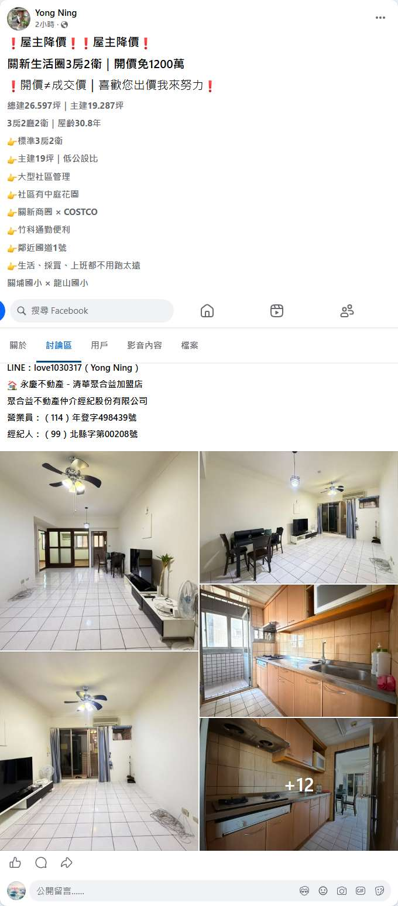 看原始刊登 → 查看貼文原文Yong Ning 32分鐘前 屋主降價 屋主降價 關新生活圈3房2衛｜開價免1200萬 開價≠成交價｜喜歡您出價我來努力 總建26.597坪｜主建19.287坪 3房2廳2衛｜屋齡30.8年 標準3房2衛 主建19坪｜低公設比 大型社區管理 社區有中庭花園 關新商圈 × COSTCO 竹科通勤便利 鄰近國道1號 生活、採買、上班都不用跑太遠 關埔國小 × 龍山國小 光武國中 × 建功高中 歡迎來電預約賞屋 歡迎私訊預約賞屋 電話：0979-513-627 伍小姐 LINE：love1030317（Yong Ning） 永慶不動產－清華聚合益加盟店 聚合益不動產仲介經紀股份有限公司 營業員：（114）年登字498439號 經紀人：（99）北縣字第00208號 +12 公開留言…… 貼文內有 1 個連結（已檢查）
| 1,200 萬 | — | 3房—廳2衛 完全符合 | 26.597 坪 | 未註明 | 未註明 | — | — 年 | — | FB 貼文 0979-513-627 |
| 1,200 萬 | 31.51萬/坪 | 4房2廳2衛 超規格 | 38.08 坪 | 未註明 | 無 | 無 | 30.8 年 | 1-3F/3F | 有巢氏房屋 | |
| 1,200 萬 | 43.17萬/坪 | 2房2廳2衛 差一點 | 27.8 坪 | 未註明 | 無 | 有 | 0 年 | 3F/5F | 有巢氏房屋 | |
| 1,200 萬 | 36.36萬/坪 | 3房2廳2衛 完全符合 | 33 坪 | 未註明 | 有 | 有 | 31.3 年 | 3F/7F | 信義房屋 | |
| 1,200 萬 | 29.79萬/坪 | 3房2廳2衛 完全符合 | 40.28 坪 | — | 未註明 | 有 | 31 年 | 6F/7F | 仲介 張家和 | |
| 1,200 萬 | 60.03萬/坪 | 3房2廳2衛 完全符合 | 19.99 坪 | — | 未註明 | 無 | 48 年 | 4F/4F | 仲介 陳玫潔 | |
| 399 萬 | 21.88萬/坪 | 3房0廳3衛 不符 | 18.24 坪 | 未註明 | 未註明 | 有 | 25 年 | 5F/0F | 中信房屋 | |
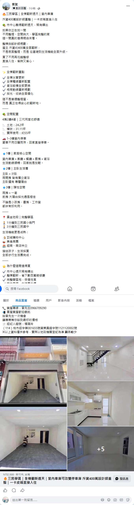 看原始刊登 → 查看貼文原文曾賀 勤於回覆 3小時前 三民學區｜全棟翻新透天｜室內車庫 斥資400萬設計師重整｜一卡皮箱直接入住 市中心難得翻新透天，稀有釋出 如果你正在找一間 不用整理、空間夠大、學區完整的家 這一間真的值得親自來看。 整棟由設計師規劃， 屋主 斥資約400萬全面翻新， 不是表面整理，而是 從基礎到生活機能全面升級。 買了不用再花錢整修 直接入住，省時又省心。 ⸻ 全棟翻新重點 全棟水管更新 全棟電線重新配置 衛浴設備全部更換 格局動線重新規劃 採光、收納全面優化 這不是普通整理屋， 而是 真正住得安心的翻新宅。 ⸻ 空間配置 4房2廳4衛｜三代同堂也舒適 土地：24.2坪 權狀：31.11坪 實際使用：約55坪 1–3樓室內停車 愛車不用日曬雨淋，回家直接停車。 ⸻ 1樓｜家庭核心空間 室內車庫＋客廳＋餐廳＋廚房＋衛浴 生活動線順暢，回家就是放鬆。 2樓｜主臥生活層 主臥＋次臥 兩間房 皆有獨立衛浴 主臥還有 專屬陽台 3樓｜彈性空間 兩房＋一衛 前房 大陽台採光通風極佳 不論是小孩房、書房、工作室 都非常好利用。 ⸻ 黃金地段｜完整學區 1分鐘到三民國小側門 3分鐘到三民國中 生活機能更是成熟： 巨城購物中心 美食商圈 超商、商店林立 接送孩子、生活採買 全部步行生活圈完成。 ⸻ 為什麼這間值得買 市中心透天稀有釋出 整棟翻新，省下數百萬裝修費 完整學區宅，保值性高 室內車庫，生活更方便 空間大、房數足、好規劃 這不只是一間房子 而是 可以住很久的家。 ⸻ 賞屋專線：曾先生0966709290 買屋賣屋歡迎委託 給曾先生一次機會 讓專業幫你談到最好的價格 經紀人證號：楊珮玲 （114）桃市經字第001655號營業員證字號1121120002號 ※以上資料僅供參考，實際以地政機關登記為準 顯示較少 +5 NT$2,888 · 新竹市, 台灣 🔥三民學區｜全棟翻新透天｜室內車庫可改雙停車庫 斥資400萬設計師重整｜一卡皮箱直接入住 發訊息 送出第一則留言…… 貼文內有 1 個連結（已檢查）
同一物件另有 1 筆刊登（不同仲介） | 400 萬 | — | 4房2廳4衛 超規格 | 24.2 坪 | 未註明 | 未註明 | — | — 年 | 3F | FB 貼文 0966709290 |
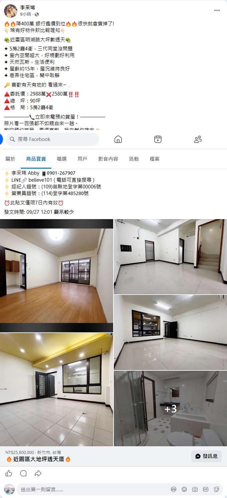 看原始刊登 → 查看貼文原文李采琋 9小時前 降400萬 銀行鑑價到位 很快就會賣掉了! 琋有好物件欸比報哩知 ⠀ 近園區明湖路大坪數透天 ✦ 5房2廳4衛，三代同堂沒問題 ✦ 室內空間超大，好規劃好利用 ✦ 天然瓦斯，生活便利 ✦ 屋齡約15年，屋況維持良好 ✦ 巷弄住宅區，鬧中取靜 喜歡有天有地的 看過來~ 委託價：2988萬 2580萬 總 坪：90坪 格 局：5房2廳4衛 ————— 立即來電預約賞屋！————— 照片看一百張都不如親自來一趟。 歡迎預約賞屋，看得喜歡，我來幫你搞定 ❏房屋、土地、店面 ❏歡迎屋主來電/私訊洽談委託 ❏用心選家 幸福築家 ————— 立即來電預約賞屋！————— 台灣房屋仲介(股)有限公司 李采琋 Abby 𝟢𝟫𝟢𝟣-𝟤𝟨𝟩𝟫𝟢𝟩 𝖫𝖨𝖭𝖤 believe101 ( 電話可直接搜尋 ) 經紀人證號：(109)苗縣地登字第00006號 營業員證號：(114)登字第𝟦𝟪𝟧𝟤𝟪𝟢號 此貼文僅限7日內有效 發文時間: 09/27 12:01 顯示較少 +3 NT$25,800,000 · 新竹市, 台灣 🔥近園區大地坪透天厝🔥 發訊息 送出第一則留言…… 貼文內有 1 個連結（已檢查）
| 400 萬 | — | 5房2廳4衛 超規格 | 90.0 坪 | 未註明 | 未註明 | — | — 年 | — | FB 貼文 0901-267907 |
看原始刊登 → 查看貼文原文温家華 勤於回覆 大約 1 小時前 大降價400萬新竹大地坪農舍 新竹市稀有合法獨棟農舍｜大地坪・大庭院・8房美宅 售2898萬 離塵不離城，享受悠閒生活，同時擁有便利交通！ 位於新竹市門牌的合法獨棟農舍，稀有釋出 擁有約123坪方正大地坪、115坪超大建坪 規劃8房3廳7衛，不論三代同堂、大家庭居住 或規劃私人招待空間、工作室，都能滿足您的需求。 物件特色 新竹市門牌，合法獨棟農舍，稀有釋出。 土地約123.072坪，建物約115.785坪，空間寬敞舒適。 8房3廳7衛，格局方正，使用彈性高。 自家庭院可停放多部車輛，親友來訪停車免煩惱。 臨6米道路，面寬約22米、縱深約18米，土地方正，保值性佳。 獨立庭院，享受綠意與慢活生活，居住自在無拘束。 交通便利 快速抵達新竹市區，生活採買便利。 鄰近西濱快速道路，南北往返輕鬆。 近公道三路，通往竹科、市區及交流道都十分便捷。 物件資訊 建物坪數：約115.785坪 主建物：約108.11坪 土地坪數：約123.072坪 格局：8房3廳7衛 樓層：1～3樓／共3樓 屋齡：約29.4年 誠意出售，歡迎預約賞屋 聯絡人｜温家華 電話：0936-928938 LINE ID：0936928938 永慶不動產｜竹北高鐵隘興加盟店 隘興地產有限公司 營業員證號：(111)登字第431739號 經紀人：陳文光 (108)竹縣地經字第00539號 歡迎房屋土地買賣委託 發文時間: 10/03 16:30 顯示較少 +6 NT$2,898 · 新竹市, 台灣 大降價400萬🌿 新竹市稀有合法獨棟農舍|大地坪・大庭院・8房美宅 售2898萬 發訊息 送出第一則留言…… 貼文內有 1 個連結（已檢查）
| 400 萬 | — | 8房—廳7衛 超規格 | 123.0 坪 | 未註明 | 未註明 | — | — 年 | 3F | FB 貼文 0936-928938 |
' fill='%23E8E8E8'/%3E%3Cg opacity='0.8'%3E%3Cg opacity='0.22'%3E%3Cpath fill-rule='evenodd' clip-rule='evenodd' d='M331.456 293.023H437.556C444.016 293.023 448.842 291.414 452.03 288.202C455.224 284.99 456.814 280.188 456.814 273.807V197.81C456.814 191.423 455.218 186.621 452.03 183.385C448.836 180.149 444.016 178.534 437.556 178.534H331.45C325.032 178.534 320.218 180.143 317.006 183.355C313.794 186.567 312.192 191.387 312.192 197.816V273.801C312.192 280.188 313.794 284.984 317.006 288.202C320.218 291.408 325.032 293.017 331.45 293.017L331.456 293.023ZM331.576 283.008C328.509 283.008 326.159 282.194 324.526 280.555C324.459 280.488 324.392 280.419 324.328 280.349L344.757 260.814C345.581 260.014 346.393 259.439 347.134 259.089C347.755 258.801 348.352 258.664 348.949 258.664C349.678 258.676 350.383 258.826 351.052 259.139C351.96 259.552 352.784 260.114 353.548 260.864L368.407 275.106L399.476 245.622C400.336 244.822 401.315 244.172 402.318 243.722C403.178 243.347 404.074 243.209 405.018 243.172C405.938 243.184 406.845 243.384 407.67 243.747C408.721 244.222 409.688 244.872 410.536 245.672L444.96 280.001C444.802 280.195 444.633 280.38 444.456 280.555C442.799 282.194 440.461 283.008 437.436 283.008H331.576ZM322.074 198.371V267.241L337.471 252.487C339.143 250.886 340.923 249.636 342.738 248.786C344.745 247.861 346.823 247.398 348.949 247.398C351.171 247.41 353.309 247.886 355.328 248.811C357.359 249.736 359.21 251.011 360.834 252.599L368.431 259.877L392.273 237.245C394.053 235.582 396.024 234.281 398.162 233.331C400.359 232.381 402.629 231.918 404.958 231.918H405.078C407.443 231.931 409.748 232.431 411.922 233.406C414.108 234.394 416.067 235.732 417.811 237.382L417.906 237.47L446.938 266.423V198.371C446.938 195.141 446.113 192.695 444.456 191.032C442.799 189.374 440.461 188.549 437.436 188.549H331.576C328.509 188.549 326.159 189.374 324.526 191.032C322.887 192.695 322.074 195.141 322.074 198.371ZM365.125 234.408C362.958 235.715 360.55 236.365 357.889 236.366H357.886H357.883C355.228 236.365 352.807 235.715 350.622 234.402C348.419 233.091 346.597 231.23 345.333 229C344.069 226.771 343.408 224.25 343.415 221.688C343.396 219.111 344.075 216.577 345.379 214.354C346.646 212.156 348.45 210.315 350.622 209.004C352.809 207.678 355.231 207.015 357.889 207.015C360.546 207.015 362.956 207.678 365.125 209.004C367.284 210.322 369.076 212.162 370.338 214.354C371.645 216.59 372.296 219.042 372.296 221.694C372.298 224.251 371.639 226.766 370.383 228.994C369.126 231.222 367.315 233.087 365.125 234.408ZM363.86 221.694L363.86 221.701C363.861 222.804 363.577 223.889 363.035 224.85C362.493 225.81 361.713 226.614 360.769 227.184C359.987 227.655 359.098 227.93 357.886 227.93C356.68 227.93 355.773 227.655 354.965 227.17L354.965 227.17L354.936 227.153C353.993 226.592 353.213 225.795 352.672 224.84C352.131 223.886 351.848 222.807 351.851 221.71H351.851L351.851 221.626C351.843 220.571 352.121 219.534 352.655 218.625L352.655 218.625L352.688 218.567C353.243 217.605 354.032 216.799 354.983 216.225L354.994 216.218C355.81 215.723 356.71 215.451 357.889 215.451C359.065 215.451 359.942 215.722 360.727 216.202L360.728 216.203C361.679 216.784 362.47 217.595 363.026 218.562L363.026 218.562L363.056 218.614C363.583 219.515 363.86 220.49 363.86 221.694Z' fill='%23111111'/%3E%3C/g%3E%3Cpath opacity='0.3' d='M470.511 338.993H474.792V346.551H490.342V367.649H486.193V365.159H474.792V379.793H470.511V365.159H459.153V367.649H455.003V346.551H470.511V338.993ZM459.153 361.097H470.511V350.613H459.153V361.097ZM474.792 361.097H486.193V350.613H474.792V361.097Z' fill='%23111111'/%3E%3Cpath opacity='0.3' d='M428.708 349.04C426.699 353.233 424.427 356.859 421.937 359.917L418.967 356.335C422.592 352.098 425.694 346.244 428.227 338.818L432.421 339.735C431.809 341.57 431.154 343.317 430.499 344.977H448.496V349.04H434.474V355.286H446.749V359.305H434.474V365.727H446.836V369.702H434.474V379.574H430.281V349.04H428.708ZM413.812 356.247C412.589 357.733 411.235 359.218 409.837 360.659L408.439 356.204C412.939 351.268 416.258 345.502 418.399 338.949L422.33 340.784C421.195 344.104 419.753 347.249 418.006 350.219V379.574H413.812V356.247Z' fill='%23111111'/%3E%3Cpath opacity='0.3' d='M366.066 362.669H384.238C383.801 361.97 383.364 361.359 382.927 360.791L386.815 360.179C387.339 360.922 387.82 361.752 388.344 362.669H404.419V366.076H384.849C383.146 367.736 381.005 369.309 378.384 370.707V375.424C381.617 374.813 384.675 374.07 387.514 373.284L388.082 376.604C384.238 377.565 379.52 378.526 374.016 379.4L373.317 376.473C374.278 376.08 374.759 375.512 374.759 374.769V372.454C372.575 373.328 370.172 374.201 367.639 374.988L365.673 371.711C372.225 370.226 377.118 368.348 380.438 366.076H366.066V362.669ZM398.26 366.906L400.925 369.222C399.527 370.707 397.867 372.017 395.945 373.197C398.566 374.551 401.667 375.599 405.249 376.342L403.021 379.574C395.071 377.609 389.436 373.983 386.073 368.654L388.825 367.081C389.873 368.697 391.271 370.139 392.974 371.406C395.027 370.052 396.775 368.566 398.26 366.906ZM371.352 344.89C371.089 345.546 370.784 346.157 370.478 346.725L367.158 345.72C368.294 343.886 369.036 341.745 369.342 339.386L372.575 339.78C372.487 340.479 372.356 341.134 372.269 341.745H376.288V339.255H380.044V341.745H387.558V344.89H380.044V347.075H389.043V350.22H380.044V352.185H388.169V357.427C388.169 358.956 386.946 359.742 384.5 359.742H381.923L381.267 357.078L383.452 357.165C384.238 357.165 384.631 356.859 384.631 356.335V354.981H380.044V360.66H376.288V354.981H372.05V360.005H368.556V352.185H376.288V350.22H366.372V347.075H376.288V344.89H371.352ZM390.747 341.614H394.503V354.501H390.747V341.614ZM398.871 360.441H393.63L392.843 356.816C394.503 356.903 396.076 356.99 397.561 356.99C398.566 356.99 399.09 356.597 399.09 355.811V339.212H402.847V356.685C402.847 359.175 401.492 360.441 398.871 360.441Z' fill='%23111111'/%3E%3Cpath opacity='0.3' d='M330.203 340.435H334.44V350.438H350.21V339.211H354.316V354.413H334.44V356.728C334.44 358.039 334.353 359.349 334.265 360.572H355.233V379.574H351.083V364.591H333.785C332.649 371.056 330.203 375.992 326.359 379.487L323.17 376.691C327.801 372.541 330.116 365.901 330.203 356.728V340.435Z' fill='%23111111'/%3E%3Cpath opacity='0.3' d='M279.925 340.653H293.248V367.518H279.925V340.653ZM289.316 363.805V355.898H283.987V363.805H289.316ZM283.987 352.142H289.316V344.366H283.987V352.142ZM296.131 355.418H315.002V367.518H296.131V355.418ZM310.939 363.892V359.087H300.193V363.892H310.939ZM301.242 344.541H295.519V340.653H316.05C315.919 346.114 315.526 349.564 314.827 350.962C314.084 352.928 312.512 353.933 310.065 353.976C309.104 353.976 308.012 353.889 306.789 353.802L305.61 350.176C307.182 350.351 308.493 350.438 309.629 350.438C310.546 350.394 311.114 349.783 311.376 348.603C311.638 348.036 311.769 346.681 311.856 344.541H305.217C304.474 349.128 301.46 352.491 296.218 354.632L294.034 351.224C298.14 349.827 300.543 347.599 301.242 344.541ZM282.196 369.047L285.909 370.008C284.992 373.677 283.856 376.953 282.458 379.749L278.658 378.395C280.012 375.949 281.191 372.803 282.196 369.047ZM293.641 369.789C294.427 372.498 295.126 375.424 295.738 378.613L291.763 379.574C291.195 376.167 290.539 373.197 289.841 370.619L293.641 369.789ZM302.945 369.353C304.081 372.148 305.129 375.206 306.003 378.526L301.984 379.487C301.198 375.992 300.237 372.891 299.058 370.183L302.945 369.353ZM311.944 368.523C314.346 371.842 316.181 374.769 317.491 377.303L314.172 379.618C312.817 376.866 310.983 373.852 308.711 370.532L311.944 368.523Z' fill='%23111111'/%3E%3C/g%3E%3C/svg%3E%0A) | 408 萬 | 32.03萬/坪 | 4房2廳3衛 超規格 | 12.74 坪 | 未註明 | 計算 | — | — 年 | 1-3F/3F | 永慶房屋 |
| 419 萬 | 7.91萬/坪 | 4房2廳4衛 超規格 | 53.0 坪 | 未註明 | 未註明 | — | 30 年 | 整棟/4F | — | |
| 470 萬 | 4.92萬/坪 | 5房2廳3衛 超規格 | 95.57 坪 | 無 | 坪數 | — | — 年 | 1-3F/3F | 住商不動產 | |
| 480 萬 | 34.52萬/坪 | 4房3廳4衛 超規格 | 13.9 坪 | — | 未註明 | — | 5 年 | 1F/5F | — | |
| 500 萬 | 28.14萬/坪 | 3房—廳3衛 超規格 | 17.77 坪 | 未註明 | 未註明 | 無 | 25.3 年 | 4F/5F | 永慶房屋 | |
| 528 萬 | 19.34萬/坪 | 4房2廳2衛 超規格 | 27.3 坪 | 未註明 | 未註明 | 無 | 32.8 年 | 5F/5F | 永慶房屋 | |
| 553 萬 | 9.22萬/坪 | 4房2廳4衛 超規格 | 60.0 坪 | 未註明 | 未註明 | — | 31 年 | 整棟/4F | — | |
| 556 萬 | 11.12萬/坪 | 4房2廳2衛 超規格 | 50.0 坪 | 未註明 | 未註明 | — | 34 年 | 整棟/2F | — | |
| 617 萬 | 8.69萬/坪 | 4房2廳2衛 超規格 | 71.0 坪 | 未註明 | 未註明 | — | — 年 | 整棟/4F | — | |
| 680 萬 | 25.7萬/坪 | 4房2廳2衛 超規格 | 26.46 坪 | 無 | 無 | — | 45 年 | 整棟/2F | 仲介 傅采玄 | |
| 680 萬 | 27.78萬/坪 | 3房2廳1衛 差一點 | 24.48 坪 | 未註明 | 未註明 | 有 | 34 年 | 3F/5F | 中信房屋 南大加盟店 | |
| 706 萬 | 19.08萬/坪 | 4房2廳2衛 超規格 | 37.0 坪 | 未註明 | 未註明 | 有 | 31 年 | 7F/7F | — | |
| 736 萬 | 19.37萬/坪 | 4房2廳2衛 超規格 | 38.0 坪 | — | 未註明 | 有 | 28 年 | 4F/10F | — | |
 | 778 萬 | 20.54萬/坪 | 4房2廳2衛 超規格 | 37.87 坪 | 未註明 | 未註明 | 無 | — 年 | 4F/5F | 永慶房屋 |
| 841 萬 | 23.36萬/坪 | 4房2廳2衛 超規格 | 36.0 坪 | 未註明 | 未註明 | 有 | 32 年 | 4F/7F | — | |
| 915 萬 | 19.99萬/坪 | 6房2廳4衛 超規格 | 45.78 坪 | 未註明 | 無 | — | 30.4 年 | 1-4F/4F | 有巢氏房屋 | |
 | 918 萬 | 20.51萬/坪 | 4房2廳2衛 超規格 | 44.75 坪 | 300元/年 | 11.78坪，平面式，已含售金內 | 無 | 29 年 | 3F/5F | 仲介 黃冠澤 |
 | 920 萬 | 18.87萬/坪 | 4房2廳2衛 超規格 | 48.76 坪 | 未註明 | 未註明 | 無 | 46.4 年 | 5F/5F | 信義房屋 |
| 925 萬 | 58.47萬/坪 | 4房2廳2衛 超規格 | 15.82 坪 | 未註明 | 未註明 | 無 | 46.5 年 | 4F/4F | 信義房屋 | |
| 996 萬 | 18.74萬/坪 | 4房2廳2衛 超規格 | 53.15 坪 | 167 | 坡道平面固定車位 | 無 | 29.3 年 | 5F/5F | 有巢氏房屋 | |
 看原始刊登 → 同一物件另有 3 筆刊登（不同仲介）
| 996 萬 | 46.09萬/坪 | 2房2廳2衛 差一點 | 21.61 坪 | 無 | 機械 | 有 | — 年 | 4F/5F | 仲介 葉棕霆 |
 | 1,090 萬 | 47.47萬/坪 | 5房—廳2衛 超規格 | 22.96 坪 | 未註明 | 未註明 | 無 | 43.3 年 | 5F/5F | 永慶房屋 |
 看原始刊登 → 同一物件另有 11 筆刊登（不同仲介）
| 1,108 萬 | 15.12萬/坪 | 4房2廳3衛 超規格 | 73.29 坪 | 無 | 平面式， | — | 29 年 | 整棟/3F | 仲介 鄒店長 |
 看原始刊登 → 同一物件另有 8 筆刊登（不同仲介）
| 1,108 萬 | 15.12萬/坪 | 4房2廳3衛 超規格 | 73.3 坪 | 未註明 | 無 | — | 30 年 | B1-3F/3F | 永慶房屋 |
| 1,108 萬 | 15.12萬/坪 | 4房2廳4衛 超規格 | 73.3 坪 | 未註明 | 計算 | — | 30 年 | 1-3F/3F | 永慶房屋 | |
| 1,108 萬 | 14.33萬/坪 | 4房2廳3衛 超規格 | 77.3 坪 | 未註明 | 未註明 | — | 30 年 | 整棟/3F | 仲介 許馨予 | |
看原始刊登 → 查看貼文原文Champion Peng 房屋基本資料 地點 : 新竹市香山區 開價 : 1108萬 車位 : B1雙車位 型態 : 透天 屋齡 : 29.9年 現況 : 自住 座向 : 朝東北 樓層 : B1-3 / 3樓 格局 : 4房2廳3衛 土地 : 47.5坪 建坪 : 73.3坪 主建 : 60.7坪 物件描述 千萬出頭入住透天別墅，圓夢首選 快速串聯竹科、竹南科，上班超便捷 地下室可停雙車，愛車免受風吹雨打 邊間大四房，格局方正，採光通風佳 自有花園，享受拈花惹草的綠意生活 買賣好房屋土地，交給專業用心的我！ 任何優質的物件，親力親為替您把關。 專線電話：0988-710-282 彭先生 LINE ID：202406222024 經紀業：正宜不動產有限公司 加盟店：住商芎林文富店 營業員：彭先生(113)登字第474203號 經紀人：陳耀騰(112)竹縣地經字第00177號 本貼文照片僅供參考，物件內容以謄本登記買賣契約為準 顯示較少 +6 NT$11,080,000 · 新竹市, 台灣 🍀香山邊間花園雙車美墅🍀 發訊息 送出第一則留言…… 貼文內有 1 個連結（已檢查）
| 1,108 萬 | — | 4房2廳3衛 超規格 | 47.5 坪 | 未註明 | 未註明 | — | — 年 | 3F | FB 貼文 0988-710-282 |
 | 1,128 萬 | 33.9萬/坪 | 3房3廳3衛 超規格 | 33.27 坪 | 未註明 | 無 | 有 | 41.3 年 | 4F/5F | 有巢氏房屋 |
 | 1,128 萬 | 40.93萬/坪 | 3房—廳3衛 超規格 | 27.56 坪 | 未註明 | 未註明 | 有 | 41.3 年 | 4F/5F | 永慶房屋 |
| 112 萬 | 3.05萬/坪 | 2房2廳2衛 差一點 | 36.71 坪 | 未註明 | 未註明 | 無 | 46 年 | 1F/4F | — | |
| 166 萬 | 5.09萬/坪 | 2房2廳2衛 差一點 | 32.64 坪 | 未註明 | 未註明 | 有 | 30 年 | 5F/7F | — | |
| 328 萬 | 11.86萬/坪 | 2房2廳2衛 差一點 | 27.66 坪 | 未註明 | 無 | 無 | 35.2 年 | -1F/5F | 有巢氏房屋 | |
 看原始刊登 → 同一物件另有 3 筆刊登（不同仲介）
| 338 萬 | 14.66萬/坪 | 3房2廳1衛 差一點 | 23.05 坪 | 未註明 | 未註明 | 有 | 43.5 年 | 4F/4F | 永慶房屋 |
| 358 萬 | 11.57萬/坪 | 2房2廳2衛 差一點 | 30.95 坪 | 未註明 | 未註明 | 有 | 33 年 | 6F/6F | — | |
| 388 萬 | 17.21萬/坪 | 3房2廳1衛 差一點 | 22.54 坪 | 未註明 | 未註明 | 無 | 43.5 年 | 3F/4F | 永慶房屋 | |
| 580 萬 | 21.13萬/坪 | 3房2廳1衛 差一點 | 27.45 坪 | 未註明 | 未註明 | 無 | — 年 | 5F/5F | 永慶房屋 | |
 | 630 萬 | 19.64萬/坪 | 3房2廳1衛 差一點 | 32.07 坪 | 未註明 | 未註明 | — | — 年 | 5F/5F | 永慶不動產 |
| 652 萬 | 19.73萬/坪 | 2房2廳2衛 差一點 | 33.05 坪 | 未註明 | 未註明 | 無 | 37 年 | 1F/5F | — | |
 看原始刊登 → 同一物件另有 4 筆刊登（不同仲介）
| 658 萬 | 22.17萬/坪 | 3房2廳1衛 差一點 | 29.68 坪 | 100 | 無 | 無 | 46.5 年 | 3F/4F | 有巢氏房屋 |
看原始刊登 → 查看貼文原文邱家煜 51分鐘前 使用面積近30坪》武陵湳雅｜金雅旁寬敞三房美寓 售 658萬 不用爬高高，漂亮3樓 金雅重劃區生活圈:大魯閣就在旁邊 室內近30坪大空間:好規劃好利用 【建坪】29.681坪 【主建】29.681坪 【屋齡】46.5年 【樓層】3樓 【格局】3房2廳1衛 【位置】新竹市北區湳中街 賞屋專線:0903098277家煜 LINE: 城毅不動產經紀有限公司 經紀業特許字號:府地價字第1050112486號 營業員證號:(107)登字第330949號 發文時間: 10/02 1:18pm +6 公開留言…… 貼文內有 2 個連結（已檢查）
| 658 萬 | — | 3房—廳1衛 差一點 | 30.0 坪 | 未註明 | 未註明 | — | — 年 | 3F | FB 貼文 0903098277 |
 | 690 萬 | 46.62萬/坪 | 2房2廳2衛 差一點 | 14.8 坪 | 未註明 | 未註明 | 有 | 45 年 | 7F/7F | 永慶房屋 |
| 757 萬 | 48.46萬/坪 | 71房—廳1衛 差一點 | 15.62 坪 | — | 未註明 | 有 | — 年 | 6F/6F | — | |
 看原始刊登 → 同一物件另有 6 筆刊登（不同仲介）
| 828 萬 | 33.73萬/坪 | 3房2廳1衛 差一點 | 24.55 坪 | 未註明 | 無 | 無 | 0 年 | 2F/5F | 有巢氏房屋 |
| 849 萬 | 35.57萬/坪 | 2房2廳2衛 差一點 | 23.87 坪 | 1400元/月 | 無 | 有 | 32 年 | 6F/12F | 代理人 吳小姐 | |
 | 860 萬 | 35.16萬/坪 | 2房2廳2衛 差一點 | 24.46 坪 | 未註明 | 未註明 | — | — 年 | 2F/6F | 永義房屋 |
| 860 萬 | 30.9萬/坪 | 2房2廳2衛 差一點 | 27.83 坪 | 未註明 | 計算 | 有 | 32.3 年 | 12F/12F | 永慶房屋 | |
| 878 萬 | 31.51萬/坪 | 2房2廳2衛 差一點 | 27.86 坪 | 未註明 | 未註明 | 有 | 31 年 | 2F/10F | 仲介 張家和 | |
 看原始刊登 → 同一物件另有 7 筆刊登（不同仲介）
| 935 萬 | 25.55萬/坪 | 3房2廳1衛 差一點 | 36.6 坪 | 1200元/月 | 平面 | 無 | 32 年 | 1F/5F | 仲介 陳姵榛 |
| 997 萬 | 45.55萬/坪 | 2房2廳2衛 差一點 | 21.89 坪 | 未註明 | 未註明 | 有 | — 年 | 3F/5F | 仲介 游舒晴 | |
 | 1,020 萬 | 32.46萬/坪 | 3房2廳1衛 差一點 | 31.42 坪 | 未註明 | 未註明 | 無 | 45.5 年 | 1F/5F | 信義房屋 |
 | 1,048 萬 | 38.3萬/坪 | 2房2廳2衛 差一點 | 27.36 坪 | 未註明 | 無 | 有 | 0.7 年 | 3F/4F | 有巢氏房屋 |
| 1,089 萬 | 32.99萬/坪 | 3房2廳1衛 差一點 | 33.01 坪 | 未註明 | 計算 | 有 | 46.2 年 | 4F/7F | 永慶房屋 | |
 看原始刊登 → 同一物件另有 7 筆刊登（不同仲介）
| 1,099 萬 | 51.12萬/坪 | 2房—廳2衛 差一點 | 21.5 坪 | 2150 | 無 | 有 | 11.3 年 | 4F/11F | 有巢氏房屋 |
| 1,178 萬 | 38.27萬/坪 | 3房2廳1衛 差一點 | 30.78 坪 | 未註明 | 總價 | 有 | 34.8 年 | 4F/5F | 永慶房屋 | |
| 846 萬 | 45.48萬/坪 | 2房1廳2衛 不符 | 18.6 坪 | 1200 | 無 | 有 | 17.8 年 | 3F/7F | 有巢氏房屋 | |
| 1,065 萬 | 39.52萬/坪 | 2房1廳2衛 不符 | 26.95 坪 | 未註明 | 未註明 | 有 | 31 年 | 1F/6F | 仲介 值班專員 | |
看原始刊登 → 查看貼文原文芝君 23分鐘前 降價100萬｜現在只要1188萬！ 春福聯合國｜關新商圈3房｜低公設 關埔生活圈＋竹科通勤＋完整生活機能 想找一間兼顧生活、交通、學區的3房，這間值得來看看！ 春福聯合國 5樓／共13樓 3房2廳2衛 大型社區｜管理完善 警衛收發、垃圾集中處理，生活便利又省心。 關新商圈｜生活機能優 近 Costco，周邊採買、餐飲機能完整。 明星學區 關埔國小 龍山國小 光武國中 竹科通勤便利 臨近竹科、國道1號，工作通勤省時方便。 低公設＋中庭花園 住得更實在，也享有舒適的社區環境。 1288萬 → 1188萬 一口氣降價100萬！ 開價 ≠ 成交價 真正喜歡，價格就交給我幫您談！ 喜歡這間，我親自帶看，也幫您努力談價格 看屋專線／LINE同號：0916-501-511 LINE加好友：LINE加好友 買屋賣屋找永慶芝芝 永慶房屋 永慶清華聚合益股份有限公司 (99)竹縣地經字第00208號｜陳展謀 (110)竹縣地經登字第384643號｜陳芝君 #降價100萬 #春福聯合國 #關埔生活圈 #關新商圈 #新竹3房 #低公設 #竹科生活圈 #關埔國小 #龍山國小 #光武國中 #新竹買房 #新竹房屋 #永慶芝芝 +14 公開留言…… 貼文內有 1 個連結（已檢查）
| 100 萬 | — | 3房—廳2衛 完全符合 | — 坪 | 未註明 | 未註明 | — | — 年 | 5F | FB 貼文 0916-501-511 |
看原始刊登 → 查看貼文原文邱惠婯 【788萬買透天？新竹市真的還有！】套房價格，直接升級自己的透天人生！ 還在花700、800萬買套房嗎？這間只要788萬，直接入住新竹市3房2廳2衛透天！ 華江街｜低總價透天厝 四大黃金地段優勢 虎林國小、虎林國中就在生活圈，孩子上下學超方便； 紅樹林生態公園近在咫尺，散步、運動、親子放電一次滿足； 虎林市場、超商、美食商圈採買便利； 鄰近西濱快速道路，南北通勤快速又便利。 室內亮點一次擁有 1-2樓透天，3房2廳2衛，格局方正、採光通風佳。 活巷約5米路寬，出入輕鬆，居住環境舒適。 自有透天空間，不用和鄰居共用電梯、公設，生活更自在。 788萬，買的是透天，不是套房！ 首購、小家庭、置產收租都超適合，這種低總價透天在新竹市真的越來越少。 喜歡價格，我來努力；788萬透天，錯過真的很難再遇見！ 請優先指名0928-885454邱惠婯 LINE的ID:0968555454 請搜索邱惠婯網站319的網站網頁【 】樂屋網站 ◆永慶不動產中正武陵加盟店◆刊 登 者 : 營業員證照:(103)登字第279558號◆ 浩宇地產有限公司經紀業特許字號:府地價字第1050151001號 ◆經紀人證照:黃為堯(102)竹市字第000182號 發文時間: 09/21 15:58 +6 送出第一則留言…… 貼文內有 2 個連結（已檢查）
| 788 萬 | — | 3房2廳2衛 完全符合 | — 坪 | 未註明 | 未註明 | — | — 年 | 2F | FB 貼文 0928-885454 / 0968555454 |
| 938 萬 | — | 3房2廳2衛 完全符合 | 0 坪 | 未註明 | 未註明 | 無 | — 年 | 1F/1F | 信義房屋 | |
| 938 萬 | 35.24萬/坪 | 3房2廳2衛 完全符合 | 0 坪 | 未註明 | 未註明 | 無 | — 年 | 1F/1F | 中信房屋 | |
| 938 萬 | — | 3房2廳2衛 完全符合 | 0 坪 | 未註明 | 未註明 | 無 | — 年 | 0F/1F | 信義房屋 | |
| 938 萬 | 35.24萬/坪 | 3房2廳2衛 完全符合 | 0 坪 | 未註明 | 未註明 | 無 | — 年 | 0F/1F | 中信房屋 | |
看原始刊登 → 查看貼文原文Pei Zhu 16分鐘前 南寮商圈｜帝閣5期｜裝潢三房車 開價｜1098萬 一卡皮箱即可入住 物件基本資料 格局｜3房2廳2衛 樓層｜5F／5F 屋齡｜約12.8年 華廈｜一層三戶 管理費｜1250元／月 車位｜坡道機械車位 房屋特色 一層三戶｜單純安靜｜居住品質佳 子母車收垃圾｜不用追垃圾車 三房皆有窗｜無暗房 主臥大面落地窗｜採光通風佳 新增全新系統櫃｜收納機能佳 雙衛浴皆開窗｜乾爽不易潮濕 格局方正｜溫馨裝潢｜一卡皮箱即可入住 生活機能 約5～6分鐘到南寮商圈 全聯｜自由聯盟｜南寮市場 銀行等生活機能完善 專任案件｜歡迎預約賞屋 賴小姐 0938-927-277 電話號碼可加Line 有巢氏房屋中原大學山岳加盟店 山岳地產建設有限公司 經紀人鍾文對(99)桃市經字第000033號 公開留言…… 貼文內有 1 個連結（已檢查）
| 1,098 萬 | — | 3房—廳2衛 完全符合 | — 坪 | 1250元 | 有 | 有 | — 年 | 5F/5F | FB 貼文 0938-927-277 |
看原始刊登 → 查看貼文原文陳渝帆 大約 1 小時前 t͏ d͏ o͏ r͏ S͏ s͏ o͏ e͏ p͏ n͏ c͏ h͏ l͏ 2͏ 時͏ 8͏ u͏ 7͏ h͏ u͏ 4͏ h͏ f͏ 8͏ u͏ 9͏ 8͏ 7͏ 0͏ c͏ 0͏ t͏ a͏ 1͏ 8͏ 1͏ 3͏ m͏ c͏ i͏ 小͏ t͏ 2͏ a͏ 0͏ i͏ 4͏ i͏ 4͏ 4͏ i͏ 4͏ ͏ f͏ l͏ t͏ 1͏ h͏ c͏ h͏ 新竹買房看過來！1098 萬，3 房＋平面車位！ 買房最怕什麼？ 房間不夠用 找不到好停的車位 總價越看越高 3 房 2 廳 2 衛 高樓層景觀 坡道平面車位 社區管理、垃圾集中處理 鄰近南寮快速道路、68 快速道路 開價 1098 萬 0903-521-886（渝帆） Line：www06090521 ——— 永慶不動產 林森西大加盟店 畇品不動產經紀有限公司 經紀人：陳縉翰（97）北縣字第001725號 營業員證照：（115）登字第503864號 經紀業特許字號：府地價字第1100030602號 發文時間: 10/14 09:02 顯示較少 +6 NT$1,098 · 新竹市, 台灣 🚨 新竹買房看過來!1098 萬,3 房+平面車位! 發訊息 送出第一則留言…… 貼文內有 1 個連結（已檢查）
| 1,098 萬 | — | 3房—廳2衛 完全符合 | — 坪 | 未註明 | 有 | — | — 年 | — | FB 貼文 0903-521-886 |
看原始刊登 → 查看貼文原文Lu Xiaohui 36分鐘前 《園區客最強置產》八大學區低總價3房，超低公設比，老屋翻新首選！ 投資亮點： • 超值地段：東區培英街精華地段，土地價值高，買一間少一間。 • 高坪效、低公設：傳統無電梯公寓，超低公設比，室內實坪大！3房2廳2衛的標準配置，改裝彈性極大。 • 收租自用兩相宜：鄰近清大、交大與科學園區，高薪就業人口與學生租屋需求強勁。重新裝潢後，無論自住轉手或穩定收租，投報表現皆亮眼。 土地持分實在，老屋保值性佳。歡迎設計師、置產達人或首購族進場評估，創造屬於您的理想空間！ 售價：1188萬 「好房子在等懂它的主人，誠心出價，成家出價皆可談。」 永慶房屋集團 永義房屋東光忠孝加盟店 華峰不動產仲介建設開發有限公司 經紀人：（108）北市經証字第02206號 +5 公開留言…… 貼文內有 1 個連結（已檢查）
| 1,188 萬 | — | 3房—廳2衛 完全符合 | — 坪 | 未註明 | 未註明 | 無 | — 年 | — | FB 貼文 |
看原始刊登 → 查看貼文原文何彥廷 勤於回覆 11小時前 s͏ t͏ e͏ r͏ d͏ o͏ S͏ o͏ n͏ p͏ t͏ t͏ m͏ 2͏ 7͏ 0͏ a͏ 6͏ 4͏ i͏ i͏ u͏ a͏ 2͏ c͏ 1͏ 小͏ l͏ 時͏ 0͏ g͏ t͏ 0͏ a͏ 0͏ 7͏ a͏ ͏ i͏ t͏ 1͏ l͏ l͏ u͏ 1͏ i͏ h͏ 7͏ 1͏ h͏ m͏ 6͏ t͏ 6͏ 5͏ 8͏ m͏ 9͏ 9͏ 7͏ 巨城商圈、東門國小｜邊間亮麗大三房美寓 近巨城、護城河、親水公園，生活機能無懈可擊 邊間雙面採光，房間、雙衛浴皆開窗，前後通風好 屋主取得時有整理過，全室水電線、廚具、衛浴更新 一層一戶，使用空間大，無走道浪費，好規劃利用 屋況保持超棒，免整理可直接入住，歡迎預約賞屋！ 格局：3房2廳2衛 樓層：3樓 / 共5樓 售價：1,198萬 —————————— 賞屋專線｜0933-127-682｜何彥廷 加LINE搜尋：0933127682 ★★↓↓看更多其它物件↓↓★★ —————————— 永義房屋｜新竹馬偕好好加盟店 城閲不動產經紀有限公司 經紀人｜李依潔（115）竹市字第00318號 營業員｜（111）登字第417673號 顯示較少 +6 NT$11,980,000 · 新竹市, 台灣 巨城商圈、東門國小|邊間亮麗大三房美寓 發訊息 送出第一則留言…… 貼文內有 2 個連結（已檢查）
| 1,198 萬 | — | 3房—廳2衛 完全符合 | — 坪 | 未註明 | 未註明 | — | — 年 | 3F | FB 貼文 0933-127-682 |
| — 萬 | — | 3房2廳2衛 完全符合 | 32.4 坪 | 未註明 | 未註明 | 有 | — 年 | 3F/5F | 仲介 藍鴻德 | |
| — 萬 | — | 3房2廳2衛 完全符合 | 45.45 坪 | — | 未註明 | 有 | — 年 | 6F/10F | 仲介 蔡一男 | |
| — 萬 | — | 3房2廳2衛 完全符合 | 48.16 坪 | 4260元/月 | 11.51坪，平面式，已含售金內 | 有 | 1 年 | 3F/13F | 代理人 羅小姐 | |
| — 萬 | — | 3房2廳2衛 完全符合 | 54.16 坪 | 未註明 | 未註明 | 有 | 2 年 | 1F/7F | 仲介 林峻宇 | |
| — 萬 | — | 3房2廳2衛 完全符合 | 26.23 坪 | 未註明 | 未註明 | 無 | 46 年 | 2F/5F | 仲介 楊小妮 | |
| — 萬 | — | 3房2廳2衛 完全符合 | 43.87 坪 | — | 未註明 | 有 | 12 年 | 12F/15F | 仲介 吳念鎧 | |
| — 萬 | — | 3房2廳2衛 完全符合 | 43.87 坪 | — | 未註明 | 有 | 13 年 | 9F/15F | 仲介 楊小妮 | |
| — 萬 | — | 3房2廳2衛 完全符合 | 52.09 坪 | — | 未註明 | 有 | 3 年 | 10F/21F | 仲介 胡哲齊 | |
| — 萬 | — | 3房2廳2衛 完全符合 | 41.34 坪 | — | 未註明 | 有 | — 年 | 19F/22F | — | |
| — 萬 | — | 3房2廳2衛 完全符合 | 41.34 坪 | — | 未註明 | 有 | 5 年 | 19F/22F | 仲介 張家豪 | |
| — 萬 | — | 3房2廳2衛 完全符合 | 60.74 坪 | 未註明 | 未註明 | 有 | 13 年 | 14F/18F | 仲介 李松霖 | |
| — 萬 | — | 3房2廳2衛 完全符合 | 55.2 坪 | 未註明 | 未註明 | 有 | 11 年 | 19F/28F | 仲介 蘇世杰 | |
| — 萬 | — | 3房2廳2衛 完全符合 | 59.2 坪 | 未註明 | 未註明 | 有 | 11 年 | 18F/23F | 仲介 沈稚諺 | |
| — 萬 | — | 3房2廳2衛 完全符合 | 46.51 坪 | 未註明 | 未註明 | 有 | 16 年 | 6F/15F | 仲介 陳杰風 | |
| — 萬 | — | 3房2廳2衛 完全符合 | 48.35 坪 | 8010元/季度 | 10. | 有 | 18 年 | 14F/26F | 仲介 張小姐 | |
| — 萬 | — | 3房2廳2衛 完全符合 | 26.23 坪 | 未註明 | 未註明 | 無 | — 年 | 2F/5F | 仲介 范先生 | |
| — 萬 | — | 3房2廳2衛 完全符合 | 30.08 坪 | — | 未註明 | 有 | 32 年 | 7F/12F | 仲介 值班人員 | |
| — 萬 | — | 3房2廳2衛 完全符合 | 45.89 坪 | — | 未註明 | 有 | — 年 | 3F/15F | 仲介 王孝榮 | |
| — 萬 | — | 3房2廳2衛 完全符合 | 48.54 坪 | 未註明 | 未註明 | 有 | 2 年 | 11F/26F | 仲介 吳怜瑤 | |
| — 萬 | — | 3房2廳2衛 完全符合 | 65.44 坪 | — | 未註明 | 有 | 0 年 | 4F/24F | 仲介 彭美慧 | |
| — 萬 | — | 3房2廳2衛 完全符合 | 54.09 坪 | 未註明 | 未註明 | 有 | 17 年 | 4F/14F | 仲介 劉英杰 | |
| — 萬 | — | 3房2廳2衛 完全符合 | 38.91 坪 | — | 未註明 | 有 | 17 年 | 2F/14F | 仲介 竹科懿萱 | |
| — 萬 | — | 3房2廳2衛 完全符合 | 46.54 坪 | 未註明 | 未註明 | 有 | 1 年 | 3F/15F | 仲介 吳先生 | |
| — 萬 | — | 3房2廳2衛 完全符合 | 44.67 坪 | 未註明 | 未註明 | 有 | 2 年 | 2F/14F | 仲介 柯佳利 | |
| — 萬 | — | 3房2廳2衛 完全符合 | 50.57 坪 | 未註明 | 未註明 | 有 | — 年 | 8F/14F | 仲介 林彥君 | |
| — 萬 | — | 3房2廳2衛 完全符合 | 56.11 坪 | 10332元/季度 | 平面式 | 有 | 2 年 | 1F/14F | 仲介 王秉瑜 | |
| — 萬 | 24.1萬/坪 | 3房2廳2衛 完全符合 | — 坪 | 1000元/月 | 無 | — | — 年 | — | — | |
| — 萬 | 55.9萬/坪 | 3房2廳2衛 完全符合 | 49.89 坪 | 未註明 | 7.503坪，平面式，已含售金內 | 有 | — 年 | 13F/14F | 仲介 林筱霏 | |
| — 萬 | — | 3房2廳2衛 完全符合 | 49.89 坪 | 未註明 | 未註明 | 有 | — 年 | 13F/14F | 仲介 張小姐 | |
| — 萬 | — | 3房2廳2衛 完全符合 | 55.25 坪 | 未註明 | 未註明 | 有 | 20 年 | 1F/12F | — | |
| — 萬 | — | 3房2廳2衛 完全符合 | 44.81 坪 | 未註明 | 未註明 | 有 | 2 年 | 6F/13F | 仲介 黃紹恩 | |
| — 萬 | 28.6萬/坪 | 3房2廳2衛 完全符合 | 41.92 坪 | 13000元/年 | 機 | 有 | 35 年 | 3F/7F | 仲介 雙寶爸 | |
| — 萬 | — | 3房2廳2衛 完全符合 | 40.83 坪 | — | 未註明 | 有 | — 年 | 2F/12F | — | |
| — 萬 | — | 3房2廳2衛 完全符合 | 46.53 坪 | 未註明 | 未註明 | 有 | 1 年 | 3F/15F | 仲介 李密鈴 | |
| — 萬 | — | 3房2廳2衛 完全符合 | 46.87 坪 | 未註明 | 未註明 | 有 | 5 年 | 24F/24F | 仲介 李松霖 | |
| — 萬 | 58.0萬/坪 | 3房2廳2衛 完全符合 | 45.6 坪 | — | 未註明 | 有 | 17 年 | 6F/15F | — | |
| — 萬 | — | 3房2廳2衛 完全符合 | 47.6 坪 | 未註明 | 未註明 | 有 | 1 年 | 9F/15F | 仲介 李松霖 | |
| — 萬 | — | 3房2廳2衛 完全符合 | 37.93 坪 | 未註明 | 未註明 | 有 | 30 年 | 2F/6F | 仲介 萬桂瓊 | |
| — 萬 | — | 3房2廳2衛 完全符合 | 59.0 坪 | — | 未註明 | 有 | 11 年 | 10F/23F | 仲介 劉宇博 | |
| — 萬 | — | 3房2廳2衛 完全符合 | 44.34 坪 | — | 未註明 | 有 | 2 年 | 14F/15F | 仲介 張熙嫻 | |
| — 萬 | — | 3房2廳2衛 完全符合 | 51.61 坪 | 未註明 | 未註明 | 有 | 7 年 | 6F/28F | 仲介 程瑋雯 | |
| — 萬 | — | 3房2廳2衛 完全符合 | 52.2 坪 | 1973元/月 | 16. | 有 | 16 年 | 2F/15F | 仲介 方健羲 | |
| — 萬 | — | 3房2廳2衛 完全符合 | 45.89 坪 | 未註明 | 未註明 | 有 | 1 年 | 3F/15F | 仲介 張先生 | |
| — 萬 | — | 3房2廳2衛 完全符合 | 59.21 坪 | 未註明 | 未註明 | 有 | 11 年 | 18F/23F | 仲介 葉俊良 | |
| — 萬 | — | 3房2廳2衛 完全符合 | 50.15 坪 | 未註明 | 未註明 | 有 | 1 年 | 4F/15F | 仲介 羅小姐 | |
| — 萬 | — | 3房2廳2衛 完全符合 | 43.5 坪 | — | 未註明 | 有 | 12 年 | 2F/14F | — | |
| — 萬 | — | 3房2廳2衛 完全符合 | 60.74 坪 | 未註明 | 未註明 | 有 | 13 年 | 14F/18F | 仲介 葉俊良 | |
| — 萬 | — | 3房2廳2衛 完全符合 | 49.96 坪 | 未註明 | 未註明 | 有 | 12 年 | 3F/12F | 仲介 余尚鴻 | |
| — 萬 | — | 3房2廳2衛 完全符合 | 60.74 坪 | 未註明 | 未註明 | 有 | 13 年 | 14F/18F | — | |
| — 萬 | — | 3房2廳2衛 完全符合 | 42.95 坪 | 未註明 | 未註明 | 有 | 2 年 | 9F/10F | 仲介 韋佳紋 | |
| — 萬 | — | 3房2廳2衛 完全符合 | 40.6 坪 | — | 未註明 | 有 | 31 年 | 9F/11F | — | |
| — 萬 | — | 3房2廳2衛 完全符合 | 42.7 坪 | — | 未註明 | 有 | 7 年 | 8F/12F | 仲介 蘇先生 | |
| — 萬 | — | 3房2廳2衛 完全符合 | 33.0 坪 | — | 未註明 | 有 | 3 年 | 4F/29F | — | |
| — 萬 | — | 3房2廳2衛 完全符合 | 47.87 坪 | — | 未註明 | 有 | 2 年 | 9F/10F | 仲介 曾華佑 | |
| — 萬 | — | 3房2廳2衛 完全符合 | 46.51 坪 | — | 未註明 | 有 | 15 年 | 6F/15F | 仲介 陳宗瑋 | |
| — 萬 | — | 3房2廳2衛 完全符合 | 46.1 坪 | 未註明 | 未註明 | 有 | 25 年 | 14F/21F | 仲介 張玉涵 | |
| — 萬 | — | 3房2廳2衛 完全符合 | 46.51 坪 | 未註明 | 未註明 | 有 | 16 年 | 6F/15F | 仲介 陳翔琳 | |
| — 萬 | — | 3房2廳2衛 完全符合 | 46.51 坪 | — | 未註明 | 有 | 15 年 | 6F/15F | 仲介 葉小姐 | |
| — 萬 | — | 3房2廳2衛 完全符合 | 46.51 坪 | 1795元/月 | 8.8 | 有 | 16 年 | 6F/15F | 仲介 朱莉蓉 | |
| — 萬 | — | 3房2廳2衛 完全符合 | 46.51 坪 | — | 未註明 | 有 | 15 年 | 6F/15F | 仲介 李沂庭 | |
| — 萬 | — | 3房2廳2衛 完全符合 | 46.51 坪 | 未註明 | 未註明 | 有 | 16 年 | 6F/15F | 仲介 陳先生 | |
| — 萬 | — | 3房2廳2衛 完全符合 | 54.8 坪 | 未註明 | 未註明 | 有 | 4 年 | 6F/6F | 仲介 陳宣蓉 | |
| — 萬 | — | 3房2廳2衛 完全符合 | 46.51 坪 | 未註明 | 未註明 | 有 | 15 年 | 6F/15F | 仲介 林啟峰 | |
| — 萬 | — | 3房2廳2衛 完全符合 | 46.51 坪 | 未註明 | 未註明 | 有 | 15 年 | 6F/15F | 仲介 葉棕霆 | |
| — 萬 | — | 3房2廳2衛 完全符合 | 46.51 坪 | 未註明 | 未註明 | 有 | 15 年 | 6F/15F | 仲介 吳庭耀 | |
| — 萬 | — | 3房2廳2衛 完全符合 | 51.32 坪 | — | 未註明 | 有 | 21 年 | 12F/14F | 仲介 呂逸宏 | |
| — 萬 | — | 3房2廳2衛 完全符合 | 39.51 坪 | — | 未註明 | 有 | 19 年 | 4F/13F | 仲介 林筱惠 | |
| — 萬 | — | 3房2廳2衛 完全符合 | 60.07 坪 | — | 未註明 | 有 | — 年 | 16F/22F | — | |
| — 萬 | — | 3房2廳2衛 完全符合 | 41.02 坪 | — | 未註明 | 有 | 8 年 | 8F/10F | — | |
| — 萬 | — | 3房2廳2衛 完全符合 | 45.7 坪 | 未註明 | 未註明 | 有 | 28 年 | 3F/22F | 仲介 李慧貞 | |
| — 萬 | — | 3房2廳2衛 完全符合 | 41.02 坪 | 未註明 | 未註明 | 有 | 8 年 | 8F/10F | 仲介 珈珈 | |
| — 萬 | — | 3房2廳2衛 完全符合 | 46.75 坪 | 未註明 | 未註明 | 有 | 11 年 | 6F/15F | 仲介 值班專員 | |
| — 萬 | — | 3房2廳2衛 完全符合 | 46.51 坪 | — | 未註明 | 有 | 16 年 | 6F/15F | 仲介 葉雲旭 | |
| — 萬 | — | 3房2廳2衛 完全符合 | 42.37 坪 | — | 未註明 | 有 | 19 年 | 12F/13F | 仲介 彭友宏 | |
| — 萬 | — | 3房2廳2衛 完全符合 | 47.4 坪 | — | 未註明 | 有 | 27 年 | 4F/21F | 仲介 張熙嫻 | |
| — 萬 | — | 3房2廳2衛 完全符合 | 46.51 坪 | — | 未註明 | 有 | 15 年 | 6F/15F | 仲介 李小姐 | |
| — 萬 | — | 3房2廳2衛 完全符合 | 64.27 坪 | — | 未註明 | 有 | 8 年 | 8F/27F | 仲介 詹小予 | |
| — 萬 | — | 3房2廳2衛 完全符合 | 46.52 坪 | 未註明 | 未註明 | 有 | 15 年 | 6F/15F | 仲介 邱家煜 | |
| — 萬 | — | 3房2廳2衛 完全符合 | 46.0 坪 | 未註明 | 未註明 | 有 | 26 年 | 14F/20F | 仲介 廖先生 | |
| — 萬 | — | 3房2廳2衛 完全符合 | 46.52 坪 | — | 未註明 | 有 | 15 年 | 6F/15F | 仲介 刁君豪 | |
| — 萬 | — | 3房2廳2衛 完全符合 | 53.93 坪 | — | 未註明 | 有 | — 年 | 3F/8F | — | |
| — 萬 | — | 3房2廳2衛 完全符合 | 53.93 坪 | — | 未註明 | 有 | 10 年 | 3F/8F | — | |
| — 萬 | — | 3房2廳2衛 完全符合 | 34.0 坪 | 未註明 | 未註明 | 有 | 26 年 | 20F/20F | 仲介 廖斌信 | |
| — 萬 | — | 3房2廳2衛 完全符合 | 47.4 坪 | — | 未註明 | 有 | 27 年 | 4F/21F | 仲介 黃晟崴 | |
| — 萬 | — | 3房2廳2衛 完全符合 | 42.28 坪 | — | 未註明 | 有 | 28 年 | 3F/12F | 仲介 徐定緯 | |
| — 萬 | — | 3房2廳2衛 完全符合 | 46.51 坪 | — | 未註明 | 有 | 15 年 | 6F/15F | 仲介 陳宗澤 | |
| — 萬 | — | 3房2廳2衛 完全符合 | 46.5 坪 | 未註明 | 未註明 | 有 | 15 年 | 6F/15F | 仲介 陳芷晴 | |
| — 萬 | — | 3房2廳2衛 完全符合 | 47.87 坪 | — | 未註明 | 有 | 2 年 | 9F/10F | 仲介 黃晟崴 | |
| — 萬 | — | 3房2廳2衛 完全符合 | 47.87 坪 | — | 未註明 | 有 | 2 年 | 9F/10F | 仲介 賴宥澄 | |
| — 萬 | — | 3房2廳2衛 完全符合 | 48.35 坪 | — | 未註明 | 有 | — 年 | 14F/26F | — | |
| — 萬 | — | 3房2廳2衛 完全符合 | 50.46 坪 | 未註明 | 未註明 | 有 | 6 年 | 10F/11F | 屋主 蔡先生 | |
| — 萬 | — | 3房2廳2衛 完全符合 | 45.45 坪 | 未註明 | 未註明 | 有 | 1 年 | 6F/10F | 仲介 葉庭偉 | |
| — 萬 | — | 3房2廳2衛 完全符合 | 46.58 坪 | — | 未註明 | 有 | 9 年 | 7F/15F | — | |
| — 萬 | — | 3房2廳2衛 完全符合 | 31.19 坪 | — | 未註明 | 有 | 29 年 | 6F/12F | 仲介 曾涴貞 | |
| — 萬 | — | 3房2廳2衛 完全符合 | 52.84 坪 | 未註明 | 未註明 | 有 | 22 年 | 2F/12F | 仲介 鄭先生 | |
| — 萬 | — | 3房2廳2衛 完全符合 | 52.85 坪 | 未註明 | 未註明 | 有 | 22 年 | 2F/12F | 仲介 鄭泓勤 | |
| — 萬 | — | 3房2廳2衛 完全符合 | 52.85 坪 | 未註明 | 未註明 | 有 | 22 年 | 2F/12F | 仲介 鄭泓勤 | |
| — 萬 | — | 3房2廳2衛 完全符合 | 48.54 坪 | 未註明 | 未註明 | 有 | 2 年 | 11F/26F | 仲介 蔡沛晴 | |
| — 萬 | — | 3房2廳2衛 完全符合 | 41.22 坪 | — | 未註明 | 有 | 1 年 | 4F/9F | 仲介 徐定緯 | |
| — 萬 | — | 3房2廳2衛 完全符合 | 44.07 坪 | — | 未註明 | 有 | 1 年 | 8F/12F | 仲介 蔡一男 | |
| — 萬 | — | 3房2廳2衛 完全符合 | 45.13 坪 | — | 未註明 | 有 | 17 年 | 8F/14F | 仲介 陳小姐 | |
| — 萬 | — | 3房2廳2衛 完全符合 | 73.19 坪 | 7380元/月 | 1 | 有 | 11 年 | 15F/21F | 仲介 范先生 | |
| — 萬 | 49.4萬/坪 | 3房2廳2衛 完全符合 | 78.06 坪 | — | 未註明 | 有 | 13 年 | 7F/11F | — | |
| — 萬 | — | 3房2廳2衛 完全符合 | 50.29 坪 | — | 未註明 | 有 | 8 年 | 5F/14F | 仲介 陳龍陞 | |
| — 萬 | — | 3房2廳2衛 完全符合 | 53.23 坪 | — | 未註明 | 有 | 7 年 | 3F/27F | 仲介 蔡祐麒 | |
| — 萬 | — | 3房2廳2衛 完全符合 | 44.0 坪 | — | 未註明 | 有 | — 年 | 8F/15F | — | |
| — 萬 | — | 3房2廳2衛 完全符合 | 44.0 坪 | 未註明 | 未註明 | 有 | 2 年 | 8F/15F | 仲介 張佩婷 | |
| — 萬 | — | 3房2廳2衛 完全符合 | 54.09 坪 | 未註明 | 未註明 | 有 | 17 年 | 4F/14F | 仲介 張少程 | |
| — 萬 | — | 3房2廳2衛 完全符合 | 50.88 坪 | 未註明 | 未註明 | 有 | 13 年 | 5F/12F | 仲介 莊怡靖 | |
| — 萬 | — | 3房2廳2衛 完全符合 | 48.61 坪 | 未註明 | 未註明 | 有 | 11 年 | 2F/13F | 仲介 張菀芸 | |
| — 萬 | — | 3房2廳2衛 完全符合 | 30.37 坪 | 未註明 | 未註明 | 有 | — 年 | 6F/10F | 仲介 莊怡靖 | |
| — 萬 | — | 3房2廳2衛 完全符合 | 43.86 坪 | 未註明 | 未註明 | 有 | 13 年 | 12F/15F | 仲介 吳東柏 | |
| — 萬 | — | 3房2廳2衛 完全符合 | 29.86 坪 | 未註明 | 未註明 | 有 | 29 年 | 11F/13F | 仲介 顏顏 | |
| — 萬 | — | 3房2廳2衛 完全符合 | 49.09 坪 | 未註明 | 未註明 | 有 | — 年 | 6F/11F | 仲介 陳宥錡 | |
| — 萬 | — | 3房2廳2衛 完全符合 | 50.29 坪 | — | 未註明 | 有 | 7 年 | 5F/14F | 仲介 徐定緯 | |
| — 萬 | — | 3房2廳2衛 完全符合 | 55.29 坪 | 未註明 | 未註明 | 有 | 17 年 | 2F/13F | 仲介 刁君豪 | |
| — 萬 | — | 3房2廳2衛 完全符合 | 51.61 坪 | 未註明 | 未註明 | 有 | 7 年 | 6F/28F | 仲介 彭立宇 | |
| — 萬 | — | 3房2廳2衛 完全符合 | 35.94 坪 | 無 | 6.622坪，平面式，已含售金內 | 有 | — 年 | 4F/9F | 仲介 陳志豪 | |
| — 萬 | — | 3房2廳2衛 完全符合 | 37.26 坪 | — | 未註明 | 有 | 31 年 | 4F/6F | 仲介 魏展君 | |
| — 萬 | — | 3房2廳2衛 完全符合 | 54.1 坪 | — | 未註明 | 有 | 17 年 | 4F/14F | 仲介 林冠翰 | |
| — 萬 | — | 3房2廳2衛 完全符合 | 46.52 坪 | 未註明 | 未註明 | 有 | 16 年 | 6F/15F | 仲介 何宗穎 | |
| — 萬 | — | 3房2廳2衛 完全符合 | 48.5 坪 | 1680元/月 | 8 | 有 | 2 年 | 2F/14F | 仲介 張啟宏 | |
| — 萬 | — | 3房2廳2衛 完全符合 | 50.14 坪 | 未註明 | 未註明 | 有 | 3 年 | 2F/15F | 仲介 李湘慈 | |
| — 萬 | — | 3房2廳2衛 完全符合 | 48.5 坪 | — | 未註明 | 有 | 2 年 | 11F/11F | 仲介 田雅文 | |
| — 萬 | 57.4萬/坪 | 3房2廳2衛 完全符合 | 73.19 坪 | 7380元/月 | 平 | 有 | 10 年 | 15F/21F | 仲介 孫振耘 | |
| — 萬 | — | 3房2廳2衛 完全符合 | 65.44 坪 | — | 未註明 | 有 | 0 年 | 4F/24F | 仲介 張美華 | |
| — 萬 | — | 3房2廳2衛 完全符合 | 49.54 坪 | 未註明 | 未註明 | 有 | 5 年 | 14F/15F | 仲介 楊志文 | |
| — 萬 | — | 3房2廳2衛 完全符合 | — 坪 | 10644元/季度 | 9. | — | — 年 | — | — | |
| — 萬 | — | 3房2廳2衛 完全符合 | 49.95 坪 | 未註明 | 未註明 | 有 | 6 年 | 3F/12F | 仲介 宋小姐 | |
| — 萬 | 27.4萬/坪 | 3房2廳2衛 完全符合 | — 坪 | 2103元/月 | 5.98 | — | — 年 | — | — | |
| — 萬 | — | 3房2廳2衛 完全符合 | 51.32 坪 | 未註明 | 未註明 | 有 | 22 年 | 12F/12F | 仲介 黃泰閔 | |
| — 萬 | — | 3房2廳2衛 完全符合 | 34.0 坪 | — | 未註明 | 有 | — 年 | 20F/20F | — | |
| — 萬 | — | 3房2廳2衛 完全符合 | 30.08 坪 | — | 未註明 | 有 | 32 年 | 7F/12F | 仲介 林莉華 | |
| — 萬 | — | 3房2廳2衛 完全符合 | 30.08 坪 | 未註明 | 未註明 | 有 | 32 年 | 7F/12F | 仲介 翁青山 | |
| — 萬 | — | 3房2廳2衛 完全符合 | 47.4 坪 | — | 未註明 | 有 | — 年 | 4F/21F | — | |
| — 萬 | — | 3房2廳2衛 完全符合 | 34.43 坪 | 未註明 | 未註明 | 有 | 28 年 | 19F/22F | — | |
| — 萬 | — | 3房2廳2衛 完全符合 | 39.39 坪 | — | 未註明 | 有 | 28 年 | 12F/12F | 仲介 程瑋雯 | |
| — 萬 | — | 3房2廳2衛 完全符合 | 46.51 坪 | — | 未註明 | 有 | 15 年 | 6F/15F | 仲介 陳怡伶 | |
| — 萬 | — | 3房2廳2衛 完全符合 | 44.47 坪 | — | 未註明 | 有 | 19 年 | 3F/13F | 仲介 曾小姐 | |
| — 萬 | — | 3房2廳2衛 完全符合 | 47.87 坪 | — | 未註明 | 有 | — 年 | 9F/10F | — | |
| — 萬 | — | 3房2廳2衛 完全符合 | 40.62 坪 | 未註明 | 未註明 | 有 | — 年 | 9F/11F | — | |
| — 萬 | — | 3房2廳2衛 完全符合 | 46.52 坪 | 未註明 | 未註明 | 有 | 15 年 | 6F/15F | 仲介 刁君豪 | |
| — 萬 | — | 3房2廳2衛 完全符合 | 32.6 坪 | 未註明 | 未註明 | — | 44 年 | 整棟/2F | 仲介 李密鈴 | |
| — 萬 | — | 3房2廳2衛 完全符合 | 46.22 坪 | 未註明 | 未註明 | 有 | 1 年 | 10F/14F | 仲介 夏品翰 | |
| — 萬 | — | 3房2廳2衛 完全符合 | 44.07 坪 | 未註明 | 未註明 | 有 | 2 年 | 8F/15F | 仲介 吳佩玲 | |
| — 萬 | — | 3房2廳2衛 完全符合 | 43.34 坪 | — | 未註明 | 有 | 28 年 | 12F/12F | 仲介 李源豐 | |
| — 萬 | — | 3房2廳2衛 完全符合 | 29.86 坪 | — | 未註明 | 有 | 29 年 | 11F/13F | 仲介 孫震宇 | |
| — 萬 | — | 3房2廳2衛 完全符合 | 47.55 坪 | — | 未註明 | 有 | 1 年 | 8F/15F | 仲介 鄭雅瑄 | |
| — 萬 | — | 3房2廳2衛 完全符合 | 47.55 坪 | — | 未註明 | 有 | — 年 | 8F/15F | — | |
| — 萬 | — | 3房2廳2衛 完全符合 | 45.13 坪 | — | 未註明 | 有 | 15 年 | 8F/14F | 仲介 陳先生 | |
| — 萬 | — | 3房2廳2衛 完全符合 | 45.13 坪 | — | 未註明 | 有 | 17 年 | 8F/14F | 仲介 林家興 | |
| — 萬 | — | 3房2廳2衛 完全符合 | 48.6 坪 | 3060元/月 | 10.2 | 有 | 11 年 | 2F/13F | 仲介 黃先生 | |
| — 萬 | — | 3房2廳2衛 完全符合 | 47.0 坪 | 未註明 | 未註明 | 有 | 2 年 | 2F/10F | 仲介 林小姐 | |
| — 萬 | — | 3房2廳2衛 完全符合 | 55.29 坪 | — | 未註明 | 有 | 17 年 | 2F/13F | 仲介 王嘉陞 | |
| — 萬 | — | 3房2廳2衛 完全符合 | 45.13 坪 | 未註明 | 未註明 | 有 | 17 年 | 8F/14F | 仲介 邱坊杰 | |
| — 萬 | — | 3房2廳2衛 完全符合 | 53.23 坪 | — | 未註明 | 有 | — 年 | 3F/27F | — | |
| — 萬 | — | 3房2廳2衛 完全符合 | 51.24 坪 | — | 未註明 | 有 | 8 年 | 7F/14F | 仲介 周熙偌 | |
| — 萬 | — | 3房2廳2衛 完全符合 | 73.19 坪 | — | 未註明 | 有 | — 年 | 15F/21F | — | |
| — 萬 | — | 3房2廳2衛 完全符合 | 54.09 坪 | — | 未註明 | 有 | 17 年 | 4F/14F | 仲介 鄭誠偉 | |
| — 萬 | — | 3房2廳2衛 完全符合 | 46.95 坪 | — | 未註明 | 有 | 17 年 | 2F/14F | 仲介 李源豐 | |
| — 萬 | — | 3房2廳2衛 完全符合 | 42.96 坪 | — | 未註明 | 有 | 2 年 | 9F/10F | 仲介 蘇智媛 | |
| — 萬 | — | 3房2廳2衛 完全符合 | 54.09 坪 | — | 未註明 | 有 | 17 年 | 4F/14F | 仲介 洪百榆 | |
| — 萬 | — | 3房2廳2衛 完全符合 | 50.13 坪 | — | 未註明 | 有 | 3 年 | 2F/15F | 仲介 侯先生 | |
| — 萬 | — | 3房2廳2衛 完全符合 | 43.86 坪 | — | 未註明 | 有 | 12 年 | 12F/15F | 仲介 陳芷晴 | |
| — 萬 | — | 3房2廳2衛 完全符合 | 38.91 坪 | — | 未註明 | 有 | 17 年 | 2F/14F | 仲介 洪育軒 | |
| — 萬 | — | 3房2廳2衛 完全符合 | 49.09 坪 | 未註明 | 未註明 | 有 | — 年 | 6F/11F | 仲介 陳美宇 | |
| — 萬 | — | 3房2廳2衛 完全符合 | 57.26 坪 | — | 未註明 | 有 | — 年 | 6F/30F | 仲介 程瑋雯 | |
| — 萬 | — | 3房2廳2衛 完全符合 | 60.75 坪 | 未註明 | 未註明 | 有 | 12 年 | 14F/18F | 仲介 彭湘驊 | |
| — 萬 | — | 3房2廳2衛 完全符合 | 37.08 坪 | — | 未註明 | 有 | 28 年 | 2F/21F | 仲介 沈周貝珊 | |
| — 萬 | — | 3房2廳2衛 完全符合 | 46.97 坪 | — | 未註明 | 有 | — 年 | 20F/28F | — | |
| — 萬 | — | 3房2廳2衛 完全符合 | 46.97 坪 | 未註明 | 未註明 | 有 | 11 年 | 20F/28F | 仲介 陳晏倫 | |
| — 萬 | — | 3房2廳2衛 完全符合 | 46.04 坪 | 2852元/月 | 8.3 | 有 | 5 年 | 19F/24F | 仲介 楊少嫻 | |
| — 萬 | — | 3房2廳2衛 完全符合 | 45.88 坪 | 未註明 | 未註明 | 有 | 1 年 | 3F/15F | 仲介 潘雅芸 | |
| — 萬 | — | 3房2廳2衛 完全符合 | 50.14 坪 | — | 未註明 | 有 | 3 年 | 2F/15F | 仲介 李耀華 | |
| — 萬 | — | 3房2廳2衛 完全符合 | 33.35 坪 | 2079元/月 | 7 | 無 | 35 年 | 1F/5F | 仲介 林小姐 | |
| — 萬 | — | 3房2廳2衛 完全符合 | 44.68 坪 | 未註明 | 未註明 | 有 | 2 年 | 11F/14F | 仲介 值班人員 | |
| — 萬 | — | 3房2廳2衛 完全符合 | 41.47 坪 | — | 未註明 | 有 | 1 年 | 3F/5F | 仲介 鄭瑋聖 | |
| — 萬 | — | 3房2廳2衛 完全符合 | 44.3 坪 | 4800元/季度 | 平面式，已含售金內 | 有 | 28 年 | 1F/7F | 仲介 王嘉陞 | |
| — 萬 | — | 3房2廳2衛 完全符合 | 38.1 坪 | 未註明 | 平面式 | 有 | 0 年 | 2F/5F | 仲介 吳小姐 | |
| — 萬 | — | 3房2廳2衛 完全符合 | 50.94 坪 | — | 未註明 | 有 | — 年 | 8F/14F | 仲介 陳旭筠 | |
| — 萬 | — | 3房2廳2衛 完全符合 | 50.94 坪 | — | 未註明 | 有 | — 年 | 8F/14F | — | |
| — 萬 | — | 3房2廳2衛 完全符合 | 49.96 坪 | 3332元/月 | 平面式，已含售金內 | 有 | 11 年 | 3F/12F | 仲介 陳班馨 | |
| — 萬 | — | 3房2廳2衛 完全符合 | 45.44 坪 | — | 未註明 | 有 | 1 年 | 5F/10F | 仲介 萬小姐 | |
| — 萬 | — | 3房2廳2衛 完全符合 | 51.31 坪 | — | 未註明 | 有 | 2 年 | 3F/26F | 仲介 彭郁雯 | |
| — 萬 | — | 3房2廳2衛 完全符合 | 51.31 坪 | — | 未註明 | 有 | — 年 | 3F/26F | — | |
| — 萬 | — | 3房2廳2衛 完全符合 | 73.18 坪 | 3062元/月 | 平面式，已含售金內 | 有 | 9 年 | 15F/22F | 仲介 彭俊棋 | |
| — 萬 | — | 3房2廳2衛 完全符合 | 55.0 坪 | — | 未註明 | 有 | 7 年 | 13F/27F | 仲介 蔡先生 | |
| — 萬 | — | 3房2廳2衛 完全符合 | 53.23 坪 | — | 未註明 | 有 | 7 年 | 3F/27F | 仲介 陳先生 | |
| — 萬 | — | 3房2廳2衛 完全符合 | 40.04 坪 | — | 未註明 | 有 | 19 年 | 8F/13F | 仲介 蔡尚諭 | |
| — 萬 | — | 3房2廳2衛 完全符合 | 49.09 坪 | 未註明 | 未註明 | 有 | — 年 | 6F/11F | 仲介 鄭兆良 | |
| — 萬 | — | 3房2廳2衛 完全符合 | 43.87 坪 | — | 未註明 | 有 | 13 年 | 9F/15F | 仲介 陳怡潔 | |
| — 萬 | — | 3房2廳2衛 完全符合 | 41.55 坪 | 未註明 | 未註明 | 有 | 2 年 | 3F/7F | 仲介 值班人員 | |
| — 萬 | — | 3房2廳2衛 完全符合 | 47.41 坪 | 未註明 | 未註明 | 有 | — 年 | 9F/14F | 仲介 張育靖 | |
| — 萬 | — | 3房2廳2衛 完全符合 | 70.7 坪 | — | 未註明 | 有 | 15 年 | 2F/13F | 仲介 戴毅 | |
| — 萬 | — | 3房2廳2衛 完全符合 | 45.88 坪 | — | 未註明 | 有 | 2 年 | 3F/15F | — | |
| — 萬 | — | 3房2廳2衛 完全符合 | 45.5 坪 | — | 未註明 | 有 | 13 年 | 2F/15F | 仲介 施冠宇 | |
| — 萬 | — | 3房2廳2衛 完全符合 | 49.97 坪 | 未註明 | 未註明 | 有 | 12 年 | 3F/12F | 仲介 林明諠 | |
| — 萬 | — | 3房2廳2衛 完全符合 | 55.2 坪 | 未註明 | 未註明 | 有 | 11 年 | 19F/28F | 仲介 楊百祿 | |
| — 萬 | — | 3房2廳2衛 完全符合 | 44.4 坪 | — | 未註明 | 有 | 2 年 | 11F/12F | 仲介 彭啟亮 | |
| — 萬 | — | 3房2廳2衛 完全符合 | 44.39 坪 | 未註明 | 未註明 | 有 | 2 年 | 11F/12F | 仲介 張少程 | |
| — 萬 | — | 3房2廳2衛 完全符合 | 57.26 坪 | 未註明 | 未註明 | 有 | — 年 | 6F/30F | 仲介 顏先生 | |
| — 萬 | — | 3房2廳2衛 完全符合 | 43.86 坪 | 未註明 | 未註明 | 有 | 13 年 | 12F/15F | 仲介 張家和 | |
| — 萬 | — | 3房2廳2衛 完全符合 | 53.23 坪 | 未註明 | 未註明 | 有 | 8 年 | 3F/27F | 仲介 陳小姐 | |
| — 萬 | — | 3房2廳2衛 完全符合 | 55.29 坪 | — | 未註明 | 有 | 16 年 | 2F/13F | 仲介 曾珮瑄 | |
| — 萬 | — | 3房2廳2衛 完全符合 | 48.61 坪 | 未註明 | 未註明 | 有 | 11 年 | 2F/13F | 仲介 張熙嫻 | |
| — 萬 | — | 3房2廳2衛 完全符合 | 39.44 坪 | 未註明 | 未註明 | 有 | 8 年 | 3F/7F | 仲介 胡梅芳 | |
| — 萬 | — | 3房2廳2衛 完全符合 | 57.26 坪 | — | 未註明 | 有 | — 年 | 6F/30F | 仲介 李源豐 | |
| — 萬 | — | 3房2廳2衛 完全符合 | 47.19 坪 | — | 未註明 | 有 | 5 年 | 10F/23F | 仲介 田峰瑜 | |
| — 萬 | — | 3房2廳2衛 完全符合 | 49.09 坪 | 未註明 | 未註明 | 有 | — 年 | 6F/11F | 仲介 徐湘甯 | |
| — 萬 | — | 3房2廳2衛 完全符合 | 49.8 坪 | 未註明 | 未註明 | 有 | 18 年 | 26F/26F | 仲介 范如珍 | |
| — 萬 | — | 3房2廳2衛 完全符合 | 52.85 坪 | 未註明 | 未註明 | 有 | 22 年 | 2F/12F | 仲介 吳先生 | |
| — 萬 | — | 3房2廳2衛 完全符合 | 44.07 坪 | 未註明 | 未註明 | 有 | 2 年 | 8F/12F | 仲介 鄢偉城 | |
| — 萬 | — | 3房2廳2衛 完全符合 | 50.94 坪 | — | 未註明 | 有 | — 年 | 8F/14F | 仲介 溫于萱 | |
| — 萬 | — | 3房2廳2衛 完全符合 | 50.57 坪 | 未註明 | 未註明 | 有 | — 年 | 8F/14F | 屋主 彭小姐 | |
| — 萬 | — | 3房2廳2衛 完全符合 | 50.94 坪 | — | 未註明 | 有 | 1 年 | 8F/14F | 仲介 黃佑鈞 | |
| — 萬 | — | 3房2廳2衛 完全符合 | 45.43 坪 | 未註明 | 未註明 | 有 | 7 年 | 6F/7F | 仲介 陳宣誌 | |
| — 萬 | — | 3房2廳2衛 完全符合 | 44.6 坪 | 未註明 | 未註明 | 有 | 2 年 | 11F/14F | 仲介 林先生 | |
| — 萬 | — | 3房2廳2衛 完全符合 | 54.1 坪 | — | 未註明 | 有 | 16 年 | 4F/14F | 仲介 羅偉豪 | |
| — 萬 | — | 3房2廳2衛 完全符合 | 65.44 坪 | — | 未註明 | 有 | 0 年 | 4F/24F | 仲介 簡小姐 | |
| — 萬 | — | 3房2廳2衛 完全符合 | 33.73 坪 | — | 未註明 | — | 37 年 | 1F~4F/4F | 仲介 陳小姐 | |
| — 萬 | — | 3房2廳2衛 完全符合 | 33.73 坪 | — | 未註明 | — | — 年 | 1F~4F/4F | — | |
| — 萬 | — | 3房2廳2衛 完全符合 | 55.28 坪 | 未註明 | 未註明 | 有 | 17 年 | 2F/13F | 仲介 邱先生 | |
| — 萬 | — | 3房2廳2衛 完全符合 | 47.37 坪 | 3088元/月 | 平面式，已含售金內 | 有 | 12 年 | 12F/14F | 仲介 翁群偉 | |
| — 萬 | — | 3房2廳2衛 完全符合 | 43.86 坪 | — | 未註明 | 有 | 13 年 | 12F/15F | 仲介 陳宗澤 | |
| — 萬 | — | 3房2廳2衛 完全符合 | 56.01 坪 | 未註明 | 未註明 | 有 | 11 年 | 20F/28F | — | |
| — 萬 | — | 3房2廳2衛 完全符合 | 55.02 坪 | 3234元/月 | 4. | 有 | 11 年 | 21F/23F | 仲介 徐湘甯 | |
| — 萬 | — | 3房2廳2衛 完全符合 | 43.86 坪 | 未註明 | 未註明 | 有 | 13 年 | 12F/15F | 仲介 邱先生 | |
| — 萬 | — | 3房2廳2衛 完全符合 | 32.45 坪 | — | 未註明 | 有 | — 年 | 2F/5F | — | |
| — 萬 | — | 3房2廳2衛 完全符合 | 53.6 坪 | 未註明 | 未註明 | 有 | 1 年 | 3F/14F | 仲介 林小夫 | |
| — 萬 | — | 3房2廳2衛 完全符合 | 55.33 坪 | 未註明 | 未註明 | 有 | — 年 | 3F/30F | 仲介 顏先生 | |
| — 萬 | — | 3房2廳2衛 完全符合 | 46.53 坪 | 未註明 | 未註明 | 有 | 1 年 | 3F/15F | 仲介 溫家華 | |
| — 萬 | — | 3房2廳2衛 完全符合 | 40.09 坪 | 2200元/月 | 平面式 | 有 | 21 年 | 2F/7F | 仲介 萬桂瓊 | |
| — 萬 | — | 3房2廳2衛 完全符合 | 43.86 坪 | 未註明 | 未註明 | 有 | 14 年 | 12F/15F | 仲介 趙建宇 | |
| — 萬 | — | 3房2廳2衛 完全符合 | 26.82 坪 | — | 未註明 | 有 | 4 年 | 3F/5F | 仲介 洪先生 | |
| — 萬 | — | 3房2廳2衛 完全符合 | 42.96 坪 | — | 未註明 | 有 | 2 年 | 9F/10F | 仲介 傅啟桓 | |
| — 萬 | — | 3房2廳2衛 完全符合 | 55.02 坪 | 未註明 | 未註明 | 有 | 11 年 | 21F/23F | 仲介 陳宥錡 | |
| — 萬 | — | 3房2廳2衛 完全符合 | 59.55 坪 | 未註明 | 12.5 | 有 | 16 年 | 2F/10F | 仲介 詹小姐 | |
| — 萬 | — | 3房2廳2衛 完全符合 | 43.87 坪 | 未註明 | 未註明 | 有 | 12 年 | 12F/15F | 仲介 吳念鎧 | |
| — 萬 | — | 3房2廳2衛 完全符合 | 50.15 坪 | 未註明 | 未註明 | 有 | 1 年 | 4F/15F | 仲介 黃雅雯 | |
| — 萬 | — | 3房2廳2衛 完全符合 | 45.7 坪 | — | 未註明 | 有 | 28 年 | 3F/22F | 仲介 桑先生 | |
| — 萬 | — | 3房2廳2衛 完全符合 | 44.47 坪 | — | 未註明 | 有 | — 年 | 3F/13F | — | |
| — 萬 | — | 3房2廳2衛 完全符合 | 47.87 坪 | — | 未註明 | 有 | — 年 | 9F/10F | — | |
| — 萬 | — | 3房2廳2衛 完全符合 | 59.2 坪 | — | 未註明 | 有 | 11 年 | 18F/23F | 仲介 彭啟亮 | |
| — 萬 | — | 3房2廳2衛 完全符合 | 48.53 坪 | 未註明 | 未註明 | 有 | 2 年 | 11F/11F | 仲介 桂紹娟 | |
| — 萬 | — | 3房2廳2衛 完全符合 | 35.16 坪 | 未註明 | 未註明 | 有 | 26 年 | 20F/21F | 仲介 莊靖筠 | |
| — 萬 | — | 3房2廳2衛 完全符合 | 45.43 坪 | 未註明 | 未註明 | 有 | 7 年 | 6F/7F | 仲介 梁蕙蘭 | |
| — 萬 | — | 3房2廳2衛 完全符合 | 53.23 坪 | — | 未註明 | 有 | — 年 | 3F/27F | — | |
| — 萬 | — | 3房2廳2衛 完全符合 | 54.2 坪 | 未註明 | 未註明 | 有 | 2 年 | 1F/7F | 仲介 值小姐 | |
| — 萬 | — | 3房2廳2衛 完全符合 | 53.22 坪 | 3054元/月 | 8.99坪，平面式，已含售金內 | 有 | 7 年 | 3F/27F | 仲介 陳芮安 | |
| — 萬 | — | 3房2廳2衛 完全符合 | 53.6 坪 | 無 | 平面式，已含售金內 | 有 | — 年 | 3F/14F | 仲介 蔡一男 | |
| — 萬 | — | 3房2廳2衛 完全符合 | 37.07 坪 | 2770元/月 | 無 | 有 | 28 年 | 2F/21F | 仲介 林紫賢 | |
| — 萬 | — | 3房2廳2衛 完全符合 | 56.01 坪 | 未註明 | 未註明 | 有 | 11 年 | 20F/28F | 仲介 李昊璠 | |
| — 萬 | — | 3房2廳2衛 完全符合 | 49.97 坪 | 9996元/季度 | 平面式 | 有 | 11 年 | 3F/12F | 仲介 楊焜舜 | |
| — 萬 | — | 3房2廳2衛 完全符合 | 53.23 坪 | 3054元/月 | 未註明 | 有 | 7 年 | 3F/27F | 仲介 羅偉豪 | |
| — 萬 | — | 3房2廳2衛 完全符合 | 37.07 坪 | 2770元/月 | 無 | 有 | 28 年 | 2F/21F | 仲介 莊子崎 | |
| — 萬 | — | 3房2廳2衛 完全符合 | 45.49 坪 | 2391元/月 | 8 | 有 | 13 年 | 2F/15F | 仲介 楊佩玟 | |
| — 萬 | — | 3房2廳2衛 完全符合 | 53.6 坪 | — | 未註明 | 有 | — 年 | 3F/14F | 仲介 彭俊棋 | |
| — 萬 | — | 3房2廳2衛 完全符合 | 43.87 坪 | — | 未註明 | 有 | 13 年 | 12F/15F | 仲介 陳沛妤 | |
| — 萬 | — | 3房2廳2衛 完全符合 | 47.7 坪 | — | 未註明 | 有 | 18 年 | 21F/29F | 仲介 王子維 | |
| — 萬 | — | 3房2廳2衛 完全符合 | 55.29 坪 | — | 未註明 | 有 | 16 年 | 2F/13F | 仲介 邱家煜 | |
| — 萬 | — | 3房2廳2衛 完全符合 | 44.67 坪 | — | 未註明 | 有 | 2 年 | 2F/14F | 仲介 丁健弘 | |
| — 萬 | — | 3房2廳2衛 完全符合 | 30.36 坪 | — | 未註明 | 有 | 34 年 | 6F/7F | 仲介 邱郁羣 | |
| — 萬 | — | 3房2廳2衛 完全符合 | 41.56 坪 | — | 未註明 | 無 | 1 年 | 3F/7F | 仲介 黃志維 | |
| — 萬 | — | 3房2廳2衛 完全符合 | 51.3 坪 | — | 未註明 | 有 | 2 年 | 3F/26F | 仲介 陳先生 | |
| — 萬 | — | 3房2廳2衛 完全符合 | 55.28 坪 | — | 未註明 | 有 | 16 年 | 2F/13F | 仲介 莊祖銘 | |
| — 萬 | — | 3房2廳2衛 完全符合 | 44.13 坪 | — | 未註明 | 有 | 2 年 | 12F/12F | 仲介 杜婉如 | |
| — 萬 | — | 3房2廳2衛 完全符合 | 45.88 坪 | — | 未註明 | 有 | — 年 | 3F/15F | 仲介 王子維 | |
| — 萬 | — | 3房2廳2衛 完全符合 | 50.94 坪 | — | 未註明 | 有 | — 年 | 8F/14F | 仲介 陳蓉萱 | |
| — 萬 | — | 3房2廳2衛 完全符合 | 38.28 坪 | 2852元/月 | 機械式，已含售金內 | 有 | 31 年 | 9F/13F | 仲介 彭俊棋 | |
| — 萬 | — | 3房2廳2衛 完全符合 | 50.94 坪 | — | 未註明 | 有 | — 年 | 8F/14F | 仲介 蕭健安 | |
| — 萬 | — | 3房2廳2衛 完全符合 | 53.6 坪 | — | 未註明 | 有 | — 年 | 3F/14F | 仲介 陳曉倩 | |
| — 萬 | — | 3房2廳2衛 完全符合 | 55.91 坪 | — | 未註明 | 有 | — 年 | 12F/14F | 仲介 莊靖筠 | |
| — 萬 | — | 3房2廳2衛 完全符合 | 57.26 坪 | — | 未註明 | 有 | — 年 | 6F/30F | 仲介 程瑋雯 | |
| — 萬 | — | 3房2廳2衛 完全符合 | 45.13 坪 | — | 未註明 | 有 | 17 年 | 8F/14F | 仲介 陳澤融 | |
| — 萬 | — | 3房2廳2衛 完全符合 | 55.29 坪 | — | 未註明 | 有 | 28 年 | 2F/13F | 仲介 賴小姐 | |
| — 萬 | — | 3房2廳2衛 完全符合 | 45.49 坪 | — | 未註明 | 有 | 13 年 | 2F/15F | 仲介 曾子瑜 | |
| — 萬 | — | 3房2廳2衛 完全符合 | 43.86 坪 | — | 未註明 | 有 | 13 年 | 12F/15F | 仲介 陳杰風 | |
| — 萬 | — | 3房2廳2衛 完全符合 | 52.8 坪 | — | 未註明 | 有 | 22 年 | 2F/12F | 仲介 李密鈴 | |
| — 萬 | — | 3房2廳2衛 完全符合 | 43.09 坪 | — | 未註明 | 有 | 28 年 | 12F/12F | 仲介 彭立宇 | |
| — 萬 | — | 3房2廳2衛 完全符合 | 45.45 坪 | — | 未註明 | 有 | 1 年 | 6F/10F | 仲介 蘇芳尼 | |
| — 萬 | — | 3房2廳2衛 完全符合 | 26.95 坪 | — | 未註明 | 有 | 1 年 | 2F/5F | 仲介 廖小姐 | |
| — 萬 | — | 3房2廳2衛 完全符合 | 45.45 坪 | — | 未註明 | 有 | — 年 | 6F/10F | — | |
| — 萬 | — | 3房2廳2衛 完全符合 | 41.22 坪 | — | 未註明 | 有 | 1 年 | 4F/9F | 仲介 陳龍陞 | |
| — 萬 | — | 3房2廳2衛 完全符合 | 50.94 坪 | — | 未註明 | 有 | — 年 | 8F/14F | 仲介 范心昀 | |
| — 萬 | — | 3房2廳2衛 完全符合 | 44.54 坪 | — | 未註明 | 有 | 12 年 | 2F/15F | 仲介 呂逸宏 | |
| — 萬 | — | 3房2廳2衛 完全符合 | 44.67 坪 | — | 未註明 | 有 | 2 年 | 2F/14F | 仲介 鍾明叡 | |
| — 萬 | — | 3房2廳2衛 完全符合 | 49.09 坪 | — | 未註明 | 有 | — 年 | 6F/11F | — | |
| — 萬 | — | 3房2廳2衛 完全符合 | 53.22 坪 | — | 未註明 | 有 | 7 年 | 3F/27F | 仲介 莊雅婷 | |
| — 萬 | — | 3房2廳2衛 完全符合 | 57.32 坪 | — | 未註明 | 有 | — 年 | 8F/28F | — | |
| — 萬 | — | 3房2廳2衛 完全符合 | 48.5 坪 | 2613元/季度 | 平 | 有 | 2 年 | 2F/14F | 仲介 徐暐明 | |
| — 萬 | 36.4萬/坪 | 3房2廳2衛 完全符合 | 49.36 坪 | — | 未註明 | 有 | — 年 | 5F/20F | — | |
| — 萬 | — | 3房2廳2衛 完全符合 | 49.96 坪 | — | 未註明 | 有 | — 年 | 3F/12F | — | |
| — 萬 | — | 3房2廳2衛 完全符合 | 42.37 坪 | — | 未註明 | 有 | — 年 | 12F/13F | — | |
| — 萬 | — | 3房2廳2衛 完全符合 | 30.08 坪 | — | 未註明 | 有 | — 年 | 7F/12F | — | |
| — 萬 | — | 3房2廳2衛 完全符合 | 40.94 坪 | — | 未註明 | 有 | — 年 | 6F/8F | — | |
| — 萬 | — | 3房2廳2衛 完全符合 | 44.56 坪 | 未註明 | 未註明 | 有 | 6 年 | 3F/15F | 仲介 林翊筑 | |
| — 萬 | — | 3房2廳2衛 完全符合 | 55.06 坪 | 未註明 | 未註明 | 有 | 10 年 | 17F/28F | 仲介 蘇芳尼 | |
| — 萬 | — | 3房2廳2衛 完全符合 | 51.67 坪 | 未註明 | 未註明 | 有 | 6 年 | 3F/22F | — | |
| — 萬 | — | 3房2廳2衛 完全符合 | 50.29 坪 | — | 未註明 | 有 | — 年 | 5F/14F | — | |
| — 萬 | — | 3房2廳2衛 完全符合 | 46.86 坪 | — | 未註明 | 有 | — 年 | 24F/24F | — | |
| — 萬 | — | 3房2廳2衛 完全符合 | 55.29 坪 | — | 未註明 | 有 | — 年 | 2F/13F | — | |
| — 萬 | — | 3房2廳2衛 完全符合 | 41.22 坪 | — | 未註明 | 有 | — 年 | 4F/9F | — | |
| — 萬 | — | 3房2廳2衛 完全符合 | 44.0 坪 | — | 未註明 | 有 | 2 年 | 8F/12F | 仲介 彭啟亮 | |
| — 萬 | — | 3房2廳2衛 完全符合 | 55.29 坪 | — | 未註明 | 有 | 8 年 | 13F/27F | 仲介 邱小姐 | |
| — 萬 | — | 3房2廳2衛 完全符合 | 43.87 坪 | — | 未註明 | 有 | 13 年 | 12F/15F | — | |
| — 萬 | — | 3房2廳2衛 完全符合 | 39.65 坪 | — | 未註明 | 有 | 28 年 | 5F/8F | 仲介 許蓁蓁 | |
| — 萬 | — | 3房2廳2衛 完全符合 | 75.38 坪 | 未註明 | 平面式， | 有 | 7 年 | 4F/10F | 仲介 黃紹恩 | |
| — 萬 | — | 3房2廳2衛 完全符合 | 55.06 坪 | 未註明 | 未註明 | 有 | 10 年 | 17F/28F | 仲介 蘇筱涵 | |
| — 萬 | — | 3房2廳2衛 完全符合 | 40.94 坪 | — | 未註明 | 有 | — 年 | 6F/8F | — | |
| — 萬 | — | 3房2廳2衛 完全符合 | 46.51 坪 | — | 未註明 | 有 | — 年 | 6F/15F | — | |
| — 萬 | — | 3房2廳2衛 完全符合 | 46.75 坪 | — | 未註明 | 有 | — 年 | 6F/15F | — | |
| — 萬 | — | 3房2廳2衛 完全符合 | 41.02 坪 | 未註明 | 未註明 | 有 | 8 年 | 8F/10F | 仲介 許勵人 | |
| — 萬 | — | 3房2廳2衛 完全符合 | 55.29 坪 | 未註明 | 未註明 | 有 | 8 年 | 13F/27F | 仲介 邱小姐 | |
| — 萬 | — | 3房2廳2衛 完全符合 | 55.29 坪 | — | 未註明 | 有 | — 年 | 2F/13F | — | |
| — 萬 | — | 3房2廳2衛 完全符合 | 51.32 坪 | 未註明 | 未註明 | 有 | 22 年 | 12F/14F | 仲介 呂怡薇 | |
| — 萬 | — | 3房2廳2衛 完全符合 | 45.13 坪 | — | 未註明 | 有 | — 年 | 8F/14F | — | |
| — 萬 | — | 3房2廳2衛 完全符合 | 47.39 坪 | — | 未註明 | 有 | — 年 | 2F/13F | — | |
| — 萬 | — | 3房2廳2衛 完全符合 | 31.86 坪 | 未註明 | 機械式 | 有 | — 年 | 4F/5F | 仲介 黃耘洋 | |
| — 萬 | — | 3房2廳2衛 完全符合 | 46.51 坪 | — | 未註明 | 有 | — 年 | 6F/15F | — | |
| — 萬 | — | 3房2廳2衛 完全符合 | 45.09 坪 | 未註明 | 未註明 | 有 | 28 年 | 3F/22F | 仲介 邱玉珠 | |
| — 萬 | — | 3房2廳2衛 完全符合 | 46.51 坪 | 未註明 | 未註明 | 有 | 16 年 | 6F/15F | 仲介 朱莉蓉 | |
| — 萬 | — | 3房2廳2衛 完全符合 | 72.81 坪 | 未註明 | 未註明 | 有 | 18 年 | 8F/29F | 仲介 陳婷琪 | |
| — 萬 | — | 3房2廳2衛 完全符合 | 50.47 坪 | 3170元/月 | 1 | 有 | 6 年 | 3F/11F | 仲介 杜懋瑄 | |
| — 萬 | — | 3房2廳2衛 完全符合 | 46.18 坪 | 未註明 | 未註明 | 有 | 13 年 | 5F/14F | 仲介 刁君豪 | |
| — 萬 | — | 3房2廳2衛 完全符合 | 59.21 坪 | — | 未註明 | 有 | 11 年 | 18F/23F | 仲介 小飛 | |
| — 萬 | — | 3房2廳2衛 完全符合 | 38.28 坪 | — | 未註明 | 有 | — 年 | 9F/13F | — | |
| — 萬 | — | 3房2廳2衛 完全符合 | — 坪 | — | 未註明 | — | — 年 | — | — | |
| — 萬 | — | 3房2廳2衛 完全符合 | 46.22 坪 | — | 未註明 | 有 | — 年 | 10F/14F | — | |
| — 萬 | — | 3房2廳2衛 完全符合 | 30.08 坪 | — | 未註明 | 有 | — 年 | 7F/12F | — | |
| — 萬 | — | 3房2廳2衛 完全符合 | 45.0 坪 | — | 未註明 | 有 | — 年 | 3F/22F | — | |
| — 萬 | — | 3房2廳2衛 完全符合 | 46.51 坪 | — | 未註明 | 有 | — 年 | 6F/15F | — | |
| — 萬 | — | 3房2廳2衛 完全符合 | 36.6 坪 | 未註明 | 未註明 | 無 | 25 年 | 1F/5F | 仲介 溫怡芳 | |
| — 萬 | — | 3房2廳2衛 完全符合 | 54.09 坪 | — | 未註明 | 有 | — 年 | 4F/14F | — | |
| — 萬 | — | 3房2廳2衛 完全符合 | 45.89 坪 | — | 未註明 | 有 | — 年 | 3F/15F | — | |
| — 萬 | — | 3房2廳2衛 完全符合 | 47.41 坪 | 未註明 | 未註明 | 有 | — 年 | 9F/14F | 仲介 張嘉晏 | |
| — 萬 | — | 3房2廳2衛 完全符合 | 45.88 坪 | — | 未註明 | 有 | — 年 | 3F/15F | — | |
| — 萬 | — | 3房2廳2衛 完全符合 | 43.87 坪 | — | 未註明 | 有 | 13 年 | 12F/15F | 仲介 王嘉陞 | |
| — 萬 | — | 3房2廳2衛 完全符合 | 44.68 坪 | 10380元/季度 | 7.5坪，平面式，已含售金內 | 有 | 2 年 | 2F/14F | 仲介 費先生 | |
| — 萬 | — | 3房2廳2衛 完全符合 | 55.29 坪 | 無 | 平面 | 有 | 17 年 | 2F/14F | 仲介 何宗穎 | |
| — 萬 | 68.6萬/坪 | 3房2廳2衛 完全符合 | — 坪 | — | 未註明 | — | — 年 | — | — | |
| — 萬 | — | 3房2廳2衛 完全符合 | 44.07 坪 | 未註明 | 未註明 | 有 | 1 年 | 8F/12F | 仲介 蔡一男 | |
| — 萬 | — | 3房2廳2衛 完全符合 | 50.57 坪 | 無 | 平面式， | 有 | — 年 | 8F/14F | 仲介 蔡一男 | |
| — 萬 | — | 3房2廳2衛 完全符合 | 46.18 坪 | 未註明 | 未註明 | 有 | 18 年 | 5F/15F | 仲介 吳念鎧 | |
| — 萬 | — | 3房2廳2衛 完全符合 | 49.0 坪 | 10860元/季度 | 7.49坪，平面式，已含售金內 | 有 | 2 年 | 18F/21F | 仲介 何虹諺 | |
| — 萬 | — | 3房2廳2衛 完全符合 | 64.89 坪 | 未註明 | 未註明 | 有 | 18 年 | 3F/29F | 仲介 張家和 | |
| — 萬 | — | 3房2廳2衛 完全符合 | 54.1 坪 | 未註明 | 未註明 | 有 | 17 年 | 4F/14F | 仲介 黃俊衡 | |
| — 萬 | — | 3房2廳2衛 完全符合 | 45.13 坪 | — | 未註明 | 有 | — 年 | 8F/14F | — | |
| — 萬 | — | 3房2廳2衛 完全符合 | 59.2 坪 | — | 未註明 | 有 | — 年 | 18F/23F | — | |
| — 萬 | — | 3房2廳2衛 完全符合 | 42.96 坪 | — | 未註明 | 有 | — 年 | 9F/10F | — | |
| — 萬 | — | 3房2廳2衛 完全符合 | 51.14 坪 | — | 未註明 | — | 2 年 | 3F/14F | 仲介 陳宥妮 | |
| — 萬 | — | 3房2廳2衛 完全符合 | 33.35 坪 | — | 未註明 | 無 | — 年 | 1F/5F | — | |
| — 萬 | — | 3房2廳2衛 完全符合 | 49.5 坪 | 未註明 | 7.49坪，平面式，已含售金內 | 有 | 1 年 | 13F/14F | 仲介 徐先生 | |
| — 萬 | — | 3房2廳2衛 完全符合 | 45.45 坪 | — | 未註明 | 有 | — 年 | 6F/10F | — | |
| — 萬 | — | 3房2廳2衛 完全符合 | — 坪 | — | 未註明 | — | — 年 | — | — | |
| — 萬 | — | 3房2廳2衛 完全符合 | 65.44 坪 | — | 未註明 | 有 | — 年 | 4F/24F | — | |
| — 萬 | — | 3房2廳2衛 完全符合 | 42.28 坪 | — | 未註明 | 有 | — 年 | 3F/12F | — | |
| — 萬 | — | 3房2廳2衛 完全符合 | 40.94 坪 | — | 未註明 | 有 | — 年 | 6F/8F | — | |
| — 萬 | — | 3房2廳2衛 完全符合 | 32.38 坪 | 未註明 | 未註明 | 有 | 8 年 | 15F/15F | 仲介 桂紹娟 | |
| — 萬 | — | 3房2廳2衛 完全符合 | 46.51 坪 | — | 未註明 | 有 | — 年 | 6F/15F | — | |
| — 萬 | — | 3房2廳2衛 完全符合 | 45.89 坪 | — | 未註明 | 有 | — 年 | 3F/15F | — | |
| — 萬 | — | 3房2廳2衛 完全符合 | 49.96 坪 | 3332元/月 | 平 | 有 | 11 年 | 3F/12F | 仲介 林小姐 | |
| — 萬 | — | 3房2廳2衛 完全符合 | 37.28 坪 | 未註明 | 未註明 | 有 | 30 年 | 2F/16F | 仲介 鄭博謙 | |
| — 萬 | — | 3房2廳2衛 完全符合 | 41.46 坪 | 未註明 | 未註明 | 有 | 1 年 | 3F/5F | 仲介 林育賢 | |
| — 萬 | — | 3房2廳2衛 完全符合 | 49.95 坪 | 未註明 | 未註明 | 有 | 12 年 | 3F/12F | 仲介 莊先生 | |
| — 萬 | — | 3房2廳2衛 完全符合 | 50.95 坪 | 未註明 | 未註明 | 有 | — 年 | 8F/14F | 仲介 林品仰 | |
| — 萬 | — | 3房2廳2衛 完全符合 | — 坪 | — | 未註明 | — | — 年 | — | — | |
| — 萬 | — | 3房2廳2衛 完全符合 | 40.78 坪 | 未註明 | 平面式 | 有 | 11 年 | 3F/15F | 仲介 林楓馨 | |
| — 萬 | — | 3房2廳2衛 完全符合 | 34.0 坪 | — | 未註明 | 有 | — 年 | 20F/20F | — | |
| — 萬 | — | 3房2廳2衛 完全符合 | 46.88 坪 | — | 未註明 | 有 | — 年 | 24F/24F | — | |
| — 萬 | — | 3房2廳2衛 完全符合 | 49.97 坪 | 9996元/季度 | 平 | 有 | 11 年 | 3F/12F | 仲介 楊焜舜 | |
| — 萬 | 39.0萬/坪 | 3房2廳2衛 完全符合 | — 坪 | — | 未註明 | — | — 年 | — | — | |
| — 萬 | — | 3房2廳2衛 完全符合 | 59.21 坪 | — | 未註明 | 有 | 11 年 | 18F/23F | 仲介 彭靖榕 | |
| — 萬 | — | 3房2廳2衛 完全符合 | 59.2 坪 | — | 未註明 | 有 | — 年 | 18F/23F | — | |
| — 萬 | — | 3房2廳2衛 完全符合 | 43.87 坪 | — | 未註明 | 有 | — 年 | 12F/15F | — | |
| — 萬 | — | 3房2廳2衛 完全符合 | 43.87 坪 | — | 未註明 | 有 | — 年 | 9F/15F | — | |
| — 萬 | — | 3房2廳2衛 完全符合 | 32.67 坪 | 未註明 | 未註明 | — | 44 年 | 1F~2F/2F | — | |
| — 萬 | — | 3房2廳2衛 完全符合 | 55.2 坪 | 未註明 | 未註明 | 有 | 11 年 | 19F/28F | 仲介 呂逸宏 | |
| — 萬 | — | 3房2廳2衛 完全符合 | 60.74 坪 | 未註明 | 未註明 | 有 | 12 年 | 14F/18F | 仲介 陳小姐 | |
| — 萬 | — | 3房2廳2衛 完全符合 | 25.47 坪 | 未註明 | 未註明 | 無 | 43 年 | 3F/5F | 仲介 刁君豪 | |
| — 萬 | — | 3房2廳2衛 完全符合 | 43.87 坪 | 未註明 | 未註明 | 有 | 13 年 | 12F/15F | 仲介 曾珮瑄 | |
| — 萬 | — | 3房2廳2衛 完全符合 | 49.96 坪 | 未註明 | 未註明 | 有 | 12 年 | 3F/12F | 仲介 彭小姐 | |
| — 萬 | — | 3房2廳2衛 完全符合 | 78.06 坪 | — | 未註明 | 有 | — 年 | 7F/11F | — | |
| — 萬 | — | 3房2廳2衛 完全符合 | 48.5 坪 | — | 未註明 | 有 | — 年 | 2F/14F | — | |
| — 萬 | — | 3房2廳2衛 完全符合 | 50.57 坪 | — | 未註明 | 有 | — 年 | 8F/14F | — | |
| — 萬 | — | 3房2廳2衛 完全符合 | 42.28 坪 | — | 未註明 | 有 | — 年 | 3F/12F | — | |
| — 萬 | — | 3房2廳2衛 完全符合 | 40.62 坪 | — | 未註明 | 有 | — 年 | 9F/11F | — | |
| — 萬 | — | 3房2廳2衛 完全符合 | 45.7 坪 | — | 未註明 | 有 | — 年 | 3F/22F | — | |
| — 萬 | — | 3房2廳2衛 完全符合 | 46.51 坪 | — | 未註明 | 有 | — 年 | 6F/15F | — | |
| — 萬 | — | 3房2廳2衛 完全符合 | 51.32 坪 | — | 未註明 | 有 | — 年 | 12F/12F | — | |
| — 萬 | — | 3房2廳2衛 完全符合 | 41.95 坪 | 未註明 | 機械式， | 有 | 31 年 | 6F/6F | 仲介 彭欣怡 | |
| — 萬 | — | 3房2廳2衛 完全符合 | 55.29 坪 | 未註明 | 未註明 | 有 | 16 年 | 2F/13F | 仲介 曾珮瑄 | |
| — 萬 | — | 3房2廳2衛 完全符合 | 57.38 坪 | 未註明 | 8 | 有 | — 年 | 5F/24F | 屋主 林太太 | |
| — 萬 | — | 3房2廳2衛 完全符合 | 65.44 坪 | 未註明 | 未註明 | 有 | — 年 | 4F/24F | 仲介 黃貴國 | |
| — 萬 | — | 3房2廳2衛 完全符合 | 57.26 坪 | 未註明 | 未註明 | 有 | — 年 | 6F/30F | 仲介 吳敏玉 | |
| — 萬 | — | 3房2廳2衛 完全符合 | 51.24 坪 | 3743元/月 | 9. | 有 | 8 年 | 7F/14F | 仲介 沈家鋒 | |
| — 萬 | — | 3房2廳2衛 完全符合 | 53.23 坪 | 9162元/季度 | 8. | 有 | 8 年 | 3F/27F | 仲介 值班小姐 | |
| — 萬 | — | 3房2廳2衛 完全符合 | 40.57 坪 | 未註明 | 前院，已含售金內 | — | — 年 | 整棟/3F | 仲介 張先生 | |
| — 萬 | — | 3房2廳2衛 完全符合 | 29.8 坪 | — | 未註明 | 有 | — 年 | 11F/13F | — | |
| — 萬 | — | 3房2廳2衛 完全符合 | 44.14 坪 | 未註明 | 未註明 | 有 | 3 年 | 12F/12F | 仲介 蔡晟烊 | |
| — 萬 | — | 3房2廳2衛 完全符合 | 29.8 坪 | 未註明 | 未註明 | 有 | 29 年 | 11F/13F | 仲介 詹卉儒 | |
| — 萬 | — | 3房2廳2衛 完全符合 | 50.94 坪 | 未註明 | 11.421坪，平面式，已含售金內 | 有 | — 年 | 8F/14F | 仲介 林家弘 | |
| — 萬 | — | 3房2廳2衛 完全符合 | 50.95 坪 | 未註明 | 11. | 有 | — 年 | 8F/14F | 仲介 曾畇甄 | |
| — 萬 | — | 3房2廳2衛 完全符合 | 36.6 坪 | — | 未註明 | 無 | — 年 | 1F/5F | — | |
| — 萬 | — | 3房2廳2衛 完全符合 | 55.52 坪 | 未註明 | 未註明 | 有 | 22 年 | 1F/9F | — | |
| — 萬 | — | 3房2廳2衛 完全符合 | 26.24 坪 | 未註明 | 未註明 | 有 | 29 年 | 7F/7F | 仲介 值班人員 | |
| — 萬 | — | 3房2廳2衛 完全符合 | 49.96 坪 | — | 未註明 | 有 | — 年 | 3F/12F | — | |
| — 萬 | 59.7萬/坪 | 3房2廳2衛 完全符合 | 45.64 坪 | — | 未註明 | 有 | — 年 | 14F/14F | — | |
| — 萬 | — | 3房2廳2衛 完全符合 | 75.38 坪 | — | 未註明 | 有 | — 年 | 4F/10F | — | |
| — 萬 | — | 3房2廳2衛 完全符合 | 75.38 坪 | — | 未註明 | 有 | — 年 | 4F/10F | — | |
| — 萬 | — | 3房2廳2衛 完全符合 | 55.06 坪 | 未註明 | 未註明 | 有 | 9 年 | 17F/28F | 仲介 范凱淇 | |
| — 萬 | — | 3房2廳2衛 完全符合 | 33.0 坪 | — | 未註明 | 有 | — 年 | 4F/29F | — | |
| — 萬 | — | 3房2廳2衛 完全符合 | 42.37 坪 | — | 未註明 | 有 | — 年 | 12F/13F | — | |
| — 萬 | — | 3房2廳2衛 完全符合 | 59.21 坪 | 未註明 | 未註明 | 有 | 11 年 | 18F/28F | 仲介 大飛 | |
| — 萬 | — | 3房2廳2衛 完全符合 | 57.26 坪 | — | 未註明 | 有 | — 年 | 6F/30F | — | |
| — 萬 | — | 3房2廳2衛 完全符合 | 45.13 坪 | 未註明 | 未註明 | 有 | 17 年 | 8F/14F | 仲介 羅功政 | |
| — 萬 | — | 3房2廳2衛 完全符合 | 52.8 坪 | 未註明 | 未註明 | 有 | 22 年 | 2F/12F | 仲介 田雅文 | |
| — 萬 | — | 3房2廳2衛 完全符合 | 52.85 坪 | 無 | 無 | 有 | 22 年 | 2F/12F | 仲介 陳家瑤 | |
| — 萬 | — | 3房2廳2衛 完全符合 | 50.14 坪 | 未註明 | 未註明 | 有 | 2 年 | 2F/15F | 仲介 李湘慈 | |
| — 萬 | — | 3房2廳2衛 完全符合 | 52.33 坪 | 未註明 | 未註明 | 有 | 17 年 | 3F/12F | 仲介 張先生 | |
| — 萬 | — | 3房2廳2衛 完全符合 | 59.2 坪 | — | 未註明 | 有 | — 年 | 18F/23F | — | |
| — 萬 | — | 3房2廳2衛 完全符合 | 49.96 坪 | — | 未註明 | 有 | — 年 | 3F/12F | — | |
| — 萬 | 32.0萬/坪 | 3房2廳2衛 完全符合 | 34.31 坪 | 未註明 | 未註明 | 無 | 44 年 | 3F/5F | 仲介 黃瓊慧 | |
| — 萬 | — | 3房2廳2衛 完全符合 | 60.74 坪 | 未註明 | 未註明 | 有 | 12 年 | 14F/18F | 仲介 李彥蓁 | |
| — 萬 | — | 3房2廳2衛 完全符合 | 37.07 坪 | 2770元/月 | 無 | 有 | 28 年 | 2F/21F | 仲介 莊子崎 | |
| — 萬 | — | 3房2廳2衛 完全符合 | 43.87 坪 | — | 未註明 | 有 | — 年 | 12F/15F | — | |
| — 萬 | — | 3房2廳2衛 完全符合 | 46.87 坪 | — | 未註明 | 有 | — 年 | 24F/24F | — | |
| — 萬 | — | 3房2廳2衛 完全符合 | 48.61 坪 | 未註明 | 未註明 | 有 | 11 年 | 2F/13F | 仲介 余尚鴻 | |
| — 萬 | — | 3房2廳2衛 完全符合 | 46.52 坪 | — | 未註明 | 有 | — 年 | 6F/15F | — | |
| — 萬 | — | 3房2廳2衛 完全符合 | 52.33 坪 | — | 未註明 | 有 | 17 年 | 3F/12F | 仲介 翁小姐 | |
| — 萬 | — | 3房2廳2衛 完全符合 | 52.34 坪 | — | 未註明 | 有 | — 年 | 3F/11F | — | |
| — 萬 | — | 3房2廳2衛 完全符合 | 42.96 坪 | 未註明 | 未註明 | 有 | 2 年 | 9F/10F | 仲介 曾寶秋 | |
| — 萬 | — | 3房2廳2衛 完全符合 | 52.33 坪 | 未註明 | 未註明 | 有 | 16 年 | 3F/14F | — | |
| — 萬 | — | 3房2廳2衛 完全符合 | 50.94 坪 | — | 未註明 | 有 | — 年 | 8F/14F | — | |
| — 萬 | — | 3房2廳2衛 完全符合 | 43.86 坪 | — | 未註明 | 有 | — 年 | 12F/15F | — | |
| — 萬 | — | 3房2廳2衛 完全符合 | 55.29 坪 | — | 未註明 | 有 | — 年 | 13F/27F | — | |
| — 萬 | — | 3房2廳2衛 完全符合 | 27.9 坪 | — | 未註明 | 有 | — 年 | 2F/5F | — | |
| — 萬 | — | 3房2廳2衛 完全符合 | 32.67 坪 | — | 未註明 | — | — 年 | 1F~2F/2F | — | |
| — 萬 | 29.6萬/坪 | 3房2廳2衛 完全符合 | 35.05 坪 | — | 未註明 | 有 | — 年 | 6F/6F | — | |
| — 萬 | — | 3房2廳2衛 完全符合 | 53.6 坪 | — | 未註明 | 有 | — 年 | 3F/14F | — | |
| — 萬 | — | 3房2廳2衛 完全符合 | 45.0 坪 | — | 未註明 | 有 | — 年 | 3F/22F | — | |
| — 萬 | — | 3房2廳2衛 完全符合 | 46.51 坪 | — | 未註明 | 有 | — 年 | 6F/15F | — | |
| — 萬 | — | 3房2廳2衛 完全符合 | 46.87 坪 | — | 未註明 | 有 | — 年 | 24F/24F | — | |
| — 萬 | 59.6萬/坪 | 3房2廳2衛 完全符合 | 41.73 坪 | 3705元/月 | 5.9 | 有 | 3 年 | 4F/15F | 仲介 廖傑銘 | |
| — 萬 | — | 3房2廳2衛 完全符合 | 41.73 坪 | 未註明 | 未註明 | 有 | 4 年 | 4F/15F | 仲介 王姵淳 | |
| — 萬 | — | 3房2廳2衛 完全符合 | 45.9 坪 | 9180元/季度 | 平面式， | 有 | 16 年 | 6F/14F | 仲介 彭信燕 | |
| — 萬 | — | 3房2廳2衛 完全符合 | 50.57 坪 | — | 未註明 | 有 | — 年 | 8F/14F | — | |
| — 萬 | — | 3房2廳2衛 完全符合 | 27.9 坪 | — | 未註明 | 有 | — 年 | 2F/5F | — | |
| — 萬 | 41.5萬/坪 | 3房2廳2衛 完全符合 | — 坪 | — | 未註明 | — | — 年 | — | — | |
| — 萬 | — | 3房2廳2衛 完全符合 | 51.14 坪 | — | 未註明 | — | — 年 | 3F/14F | — | |
| — 萬 | — | 3房2廳2衛 完全符合 | 45.13 坪 | — | 未註明 | 有 | — 年 | 8F/14F | — | |
| — 萬 | — | 3房2廳2衛 完全符合 | 44.39 坪 | 未註明 | 未註明 | 有 | 2 年 | 11F/12F | 仲介 張芳瑜 | |
| — 萬 | — | 3房2廳2衛 完全符合 | 46.51 坪 | — | 未註明 | 有 | — 年 | 6F/15F | — | |
| — 萬 | — | 3房2廳2衛 完全符合 | 47.35 坪 | — | 未註明 | 有 | — 年 | 16F/22F | — | |
| — 萬 | — | 3房2廳2衛 完全符合 | 44.14 坪 | 未註明 | 未註明 | 有 | 3 年 | 12F/12F | 仲介 許米蓁 | |
| — 萬 | — | 3房2廳2衛 完全符合 | 51.32 坪 | — | 未註明 | 有 | — 年 | 12F/12F | — | |
| — 萬 | — | 3房2廳2衛 完全符合 | 44.14 坪 | 未註明 | 未註明 | 有 | 3 年 | 12F/12F | 仲介 陳宣蓉 | |
| — 萬 | — | 3房2廳2衛 完全符合 | 48.52 坪 | 未註明 | 未註明 | 有 | 2 年 | 11F/11F | 仲介 李密鈴 | |
| — 萬 | — | 3房2廳2衛 完全符合 | 46.51 坪 | 未註明 | 未註明 | 有 | 3 年 | 6F/15F | 仲介 陳咸寧 | |
| — 萬 | — | 3房2廳2衛 完全符合 | 50.94 坪 | — | 未註明 | 有 | — 年 | 8F/14F | — | |
| — 萬 | — | 3房2廳2衛 完全符合 | 51.24 坪 | — | 未註明 | 有 | — 年 | 7F/14F | — | |
| — 萬 | — | 3房2廳2衛 完全符合 | 43.86 坪 | — | 未註明 | 有 | — 年 | 12F/15F | — | |
| — 萬 | — | 3房2廳2衛 完全符合 | 43.87 坪 | — | 未註明 | 有 | — 年 | 12F/15F | — | |
| — 萬 | — | 3房2廳2衛 完全符合 | 49.95 坪 | — | 未註明 | 有 | — 年 | 3F/12F | — | |
| — 萬 | — | 3房2廳2衛 完全符合 | 38.3 坪 | 未註明 | 未註明 | 有 | 26 年 | 2F/20F | 仲介 張玉涵 | |
| — 萬 | — | 3房2廳2衛 完全符合 | 51.23 坪 | 3743元/月 | 9.4 | 有 | 8 年 | 7F/14F | 仲介 姜秀秀 | |
| — 萬 | 38.1萬/坪 | 3房2廳2衛 完全符合 | 46.76 坪 | 8159元/季度 | 8.9 | 有 | 19 年 | 3F/14F | 仲介 駱重淵 | |
| — 萬 | — | 3房2廳2衛 完全符合 | 59.21 坪 | 未註明 | 未註明 | 有 | 10 年 | 18F/23F | 仲介 余麗香 | |
| — 萬 | — | 3房2廳2衛 完全符合 | 43.09 坪 | — | 未註明 | 有 | — 年 | 12F/12F | — | |
| — 萬 | — | 3房2廳2衛 完全符合 | 50.94 坪 | — | 未註明 | 有 | — 年 | 8F/14F | — | |
| — 萬 | — | 3房2廳2衛 完全符合 | 31.19 坪 | — | 未註明 | 有 | — 年 | 6F/12F | — | |
| — 萬 | — | 3房2廳2衛 完全符合 | 50.94 坪 | — | 未註明 | 有 | — 年 | 8F/14F | — | |
| — 萬 | — | 3房2廳2衛 完全符合 | 46.21 坪 | 3463元/月 | 6 | 有 | 1 年 | 10F/14F | 仲介 徐博庭 | |
| — 萬 | 54.7萬/坪 | 3房2廳2衛 完全符合 | 51.17 坪 | — | 未註明 | 有 | — 年 | 12F/14F | — | |
| — 萬 | — | 3房2廳2衛 完全符合 | 52.33 坪 | 未註明 | 未註明 | 有 | 17 年 | 3F/12F | 仲介 喬安好房 | |
| — 萬 | — | 3房2廳2衛 完全符合 | 46.51 坪 | — | 未註明 | 有 | — 年 | 6F/15F | — | |
| — 萬 | — | 3房2廳2衛 完全符合 | 40.94 坪 | — | 未註明 | 有 | — 年 | 6F/8F | — | |
| — 萬 | — | 3房2廳2衛 完全符合 | 59.2 坪 | 未註明 | 未註明 | 有 | 11 年 | 18F/23F | 仲介 蕭信億 | |
| — 萬 | — | 3房2廳2衛 完全符合 | 55.06 坪 | 未註明 | 未註明 | 有 | 10 年 | 17F/28F | 仲介 王小姐 | |
| — 萬 | — | 3房2廳2衛 完全符合 | 52.33 坪 | 未註明 | 未註明 | 有 | 17 年 | 3F/12F | 仲介 陳店長 | |
| — 萬 | — | 3房2廳2衛 完全符合 | 57.26 坪 | 無 | 平面式，已含售金內 | 有 | — 年 | 6F/30F | 仲介 李源豐 | |
| — 萬 | — | 3房2廳2衛 完全符合 | 43.87 坪 | 2493元/月 | 8.94 | 有 | 13 年 | 9F/15F | 仲介 陳芮安 | |
| — 萬 | — | 3房2廳2衛 完全符合 | 44.34 坪 | — | 未註明 | 有 | — 年 | 14F/15F | — | |
| — 萬 | — | 3房2廳2衛 完全符合 | 44.34 坪 | — | 未註明 | 有 | — 年 | 14F/15F | — | |
| — 萬 | — | 3房2廳2衛 完全符合 | 54.2 坪 | — | 未註明 | 有 | — 年 | 1F/7F | — | |
| — 萬 | — | 3房2廳2衛 完全符合 | 53.22 坪 | — | 未註明 | 有 | — 年 | 3F/27F | — | |
| — 萬 | — | 3房2廳2衛 完全符合 | 41.55 坪 | — | 未註明 | 有 | — 年 | 3F/7F | — | |
| — 萬 | — | 3房2廳2衛 完全符合 | 43.86 坪 | — | 未註明 | 有 | — 年 | 9F/15F | — | |
| — 萬 | — | 3房2廳2衛 完全符合 | 49.97 坪 | — | 未註明 | 有 | — 年 | 3F/12F | — | |
| — 萬 | — | 3房2廳2衛 完全符合 | 64.88 坪 | 未註明 | 未註明 | 有 | 18 年 | 3F/29F | 仲介 陳芷晴 | |
| — 萬 | — | 3房2廳2衛 完全符合 | 55.29 坪 | 未註明 | 未註明 | 有 | 17 年 | 2F/13F | 仲介 陳芷晴 | |
| — 萬 | — | 3房2廳2衛 完全符合 | 45.88 坪 | 未註明 | 未註明 | 有 | 1 年 | 3F/15F | 仲介 林志芯 | |
| — 萬 | — | 3房2廳2衛 完全符合 | 29.85 坪 | 未註明 | 未註明 | 有 | 28 年 | 11F/13F | 仲介 林小姐 | |
| — 萬 | — | 3房2廳2衛 完全符合 | 45.92 坪 | 未註明 | 未註明 | 有 | 16 年 | 6F/14F | 仲介 值班專員 | |
| — 萬 | — | 3房2廳2衛 完全符合 | 50.57 坪 | — | 未註明 | 有 | — 年 | 8F/14F | — | |
| — 萬 | 67.2萬/坪 | 3房2廳2衛 完全符合 | 50.29 坪 | 3668元/月 | 9.444坪，平面式，已含售金內 | 有 | 8 年 | 11F/14F | 仲介 何虹諺 | |
| — 萬 | 42.5萬/坪 | 3房2廳2衛 完全符合 | 39.0 坪 | 840元/月 | 無 | 有 | 26 年 | 8F/12F | 仲介 黃柏堯 | |
| — 萬 | — | 3房2廳2衛 完全符合 | 52.32 坪 | — | 未註明 | 有 | 17 年 | 3F/11F | 仲介 劉靜怡 | |
| — 萬 | — | 3房2廳2衛 完全符合 | 59.2 坪 | — | 未註明 | 有 | — 年 | 18F/23F | — | |
| — 萬 | — | 3房2廳2衛 完全符合 | 48.5 坪 | 未註明 | 未註明 | 有 | 2 年 | 11F/11F | 仲介 田雅文 | |
| — 萬 | — | 3房2廳2衛 完全符合 | 42.38 坪 | 1690元/月 | 6.5 | 有 | 19 年 | 12F/13F | 仲介 林閔珠 | |
| — 萬 | — | 3房2廳2衛 完全符合 | 59.2 坪 | 未註明 | 未註明 | 有 | 11 年 | 18F/23F | 仲介 李源豐 | |
| — 萬 | — | 3房2廳2衛 完全符合 | 39.01 坪 | 未註明 | 未註明 | 有 | 25 年 | 8F/12F | 仲介 許晴涵 | |
| — 萬 | — | 3房2廳2衛 完全符合 | 43.86 坪 | — | 未註明 | 有 | — 年 | 12F/15F | — | |
| — 萬 | — | 3房2廳2衛 完全符合 | 49.95 坪 | — | 未註明 | 有 | — 年 | 3F/12F | — | |
| — 萬 | — | 3房2廳2衛 完全符合 | 57.26 坪 | — | 未註明 | 有 | — 年 | 6F/30F | — | |
| — 萬 | — | 3房2廳2衛 完全符合 | 55.28 坪 | 未註明 | 未註明 | 有 | 17 年 | 2F/13F | — | |
| — 萬 | — | 3房2廳2衛 完全符合 | 41.73 坪 | 未註明 | 未註明 | 有 | 4 年 | 4F/15F | 仲介 黃玲毓 | |
| — 萬 | — | 3房2廳2衛 完全符合 | 50.15 坪 | — | 未註明 | 有 | — 年 | 4F/15F | — | |
| — 萬 | — | 3房2廳2衛 完全符合 | 51.67 坪 | — | 未註明 | 有 | — 年 | 3F/22F | — | |
| — 萬 | — | 3房2廳2衛 完全符合 | 50.29 坪 | 3668元/月 | 9.44 | 有 | 8 年 | 11F/14F | 仲介 翁嘉蔚 | |
| — 萬 | — | 3房2廳2衛 完全符合 | 33.73 坪 | — | 未註明 | — | — 年 | 1F~4F/4F | — | |
| — 萬 | — | 3房2廳2衛 完全符合 | 43.86 坪 | — | 未註明 | 有 | — 年 | 12F/15F | — | |
| — 萬 | — | 3房2廳2衛 完全符合 | 46.52 坪 | — | 未註明 | 有 | — 年 | 15F/20F | — | |
| — 萬 | — | 3房2廳2衛 完全符合 | 26.24 坪 | — | 未註明 | 有 | — 年 | 7F/7F | — | |
| — 萬 | — | 3房2廳2衛 完全符合 | 33.97 坪 | — | 未註明 | 有 | — 年 | 5F/5F | — | |
| — 萬 | — | 3房2廳2衛 完全符合 | 43.87 坪 | 未註明 | 未註明 | 有 | 12 年 | 12F/15F | 仲介 林啟峰 | |
| — 萬 | — | 3房2廳2衛 完全符合 | 37.96 坪 | — | 未註明 | 有 | — 年 | 15F/17F | — | |
| — 萬 | — | 3房2廳2衛 完全符合 | 39.26 坪 | 未註明 | 未註明 | 有 | 29 年 | 15F/17F | 仲介 黃庭軒 | |
| — 萬 | 38.1萬/坪 | 3房2廳2衛 完全符合 | 46.76 坪 | — | 未註明 | 有 | — 年 | 3F/14F | — | |
| — 萬 | — | 3房2廳2衛 完全符合 | 75.38 坪 | — | 未註明 | 有 | — 年 | 4F/10F | — | |
| — 萬 | 42.5萬/坪 | 3房2廳2衛 完全符合 | 39.0 坪 | — | 未註明 | 有 | — 年 | 8F/12F | — | |
| — 萬 | — | 3房2廳2衛 完全符合 | 50.15 坪 | — | 未註明 | 有 | — 年 | 4F/15F | — | |
| — 萬 | — | 3房2廳2衛 完全符合 | 26.23 坪 | — | 未註明 | 無 | — 年 | 2F/5F | — | |
| — 萬 | — | 3房2廳2衛 完全符合 | 51.32 坪 | — | 未註明 | 有 | — 年 | 12F/14F | — | |
| — 萬 | — | 3房2廳2衛 完全符合 | 48.35 坪 | 未註明 | 未註明 | 有 | 17 年 | 14F/26F | 仲介 彭成豪 | |
| — 萬 | — | 3房2廳2衛 完全符合 | 59.21 坪 | 未註明 | 未註明 | 有 | 11 年 | 18F/23F | 仲介 小飛 | |
| — 萬 | — | 3房2廳2衛 完全符合 | 48.5 坪 | 10452元/季度 | 8.70 | 有 | 3 年 | 2F/14F | — | |
| — 萬 | — | 3房2廳2衛 完全符合 | 37.07 坪 | 2770元/月 | 無 | 有 | 28 年 | 2F/21F | 仲介 盧穎毅 | |
| — 萬 | — | 3房2廳2衛 完全符合 | 54.16 坪 | 9881元/季度 | 平面 | 有 | 2 年 | 1F/7F | 仲介 台慶阿偉 | |
| — 萬 | — | 3房2廳2衛 完全符合 | 46.18 坪 | 5116元/季度 | 平 | 有 | 18 年 | 5F/15F | 仲介 吳子晴 | |
| — 萬 | — | 3房2廳2衛 完全符合 | 45.5 坪 | 未註明 | 未註明 | 有 | 13 年 | 2F/15F | 仲介 施冠宇 | |
| — 萬 | — | 3房2廳2衛 完全符合 | 54.15 坪 | — | 未註明 | 有 | — 年 | 1F/7F | — | |
| — 萬 | — | 3房2廳2衛 完全符合 | 55.02 坪 | — | 未註明 | 有 | — 年 | 21F/23F | — | |
| — 萬 | — | 3房2廳2衛 完全符合 | 49.96 坪 | — | 未註明 | 有 | — 年 | 3F/12F | — | |
| — 萬 | — | 3房2廳2衛 完全符合 | 57.26 坪 | — | 未註明 | 有 | — 年 | 6F/30F | — | |
| — 萬 | — | 3房2廳2衛 完全符合 | 55.2 坪 | — | 未註明 | 有 | — 年 | 19F/28F | — | |
| — 萬 | — | 3房2廳2衛 完全符合 | 44.4 坪 | 未註明 | 未註明 | 有 | 2 年 | 11F/12F | 仲介 彭啟亮 | |
| — 萬 | — | 3房2廳2衛 完全符合 | 45.59 坪 | — | 未註明 | 有 | — 年 | 2F/10F | — | |
| — 萬 | — | 3房2廳2衛 完全符合 | 50.19 坪 | 2530元/月 | 7.792坪，平面式，已含售金內 | 有 | — 年 | 6F/14F | 仲介 凃嘉慧 | |
| — 萬 | — | 3房2廳2衛 完全符合 | 50.47 坪 | 未註明 | 未註明 | 有 | 6 年 | 10F/11F | 仲介 池軍翰 | |
| — 萬 | — | 3房2廳2衛 完全符合 | 75.38 坪 | — | 未註明 | 有 | — 年 | 4F/10F | — | |
| — 萬 | — | 3房2廳2衛 完全符合 | 46.18 坪 | 5116元/季度 | 9. | 有 | 18 年 | 5F/15F | 仲介 陳姵榛 | |
| — 萬 | — | 3房2廳2衛 完全符合 | 40.94 坪 | — | 未註明 | 有 | — 年 | 6F/8F | — | |
| — 萬 | — | 3房2廳2衛 完全符合 | 46.95 坪 | — | 未註明 | 有 | — 年 | 5F/15F | — | |
| — 萬 | — | 3房2廳2衛 完全符合 | 43.87 坪 | — | 未註明 | 有 | — 年 | 9F/15F | — | |
| — 萬 | — | 3房2廳2衛 完全符合 | 60.74 坪 | — | 未註明 | 有 | — 年 | 14F/18F | — | |
| — 萬 | — | 3房2廳2衛 完全符合 | 50.23 坪 | 未註明 | 未註明 | 有 | 1 年 | 4F/15F | 仲介 王昶彥 | |
| — 萬 | — | 3房2廳2衛 完全符合 | 61.06 坪 | 未註明 | 未註明 | 有 | 3 年 | 14F/15F | 仲介 蕭健安 | |
| — 萬 | — | 3房2廳2衛 完全符合 | 46.18 坪 | 未註明 | 未註明 | 有 | 13 年 | 5F/14F | 仲介 曾珮瑄 | |
| — 萬 | — | 3房2廳2衛 完全符合 | 45.65 坪 | 未註明 | 未註明 | 有 | 8 年 | 5F/5F | — | |
| — 萬 | — | 3房2廳2衛 完全符合 | 52.33 坪 | 未註明 | 未註明 | 有 | 17 年 | 3F/12F | 仲介 萬桂瓊 | |
| — 萬 | — | 3房2廳2衛 完全符合 | 42.95 坪 | — | 未註明 | 有 | — 年 | 9F/10F | — | |
| — 萬 | — | 3房2廳2衛 完全符合 | 60.74 坪 | — | 未註明 | 有 | — 年 | 14F/18F | — | |
| — 萬 | — | 3房2廳2衛 完全符合 | 53.93 坪 | — | 未註明 | 有 | — 年 | 3F/8F | — | |
| — 萬 | — | 3房2廳2衛 完全符合 | 33.0 坪 | — | 未註明 | 有 | — 年 | 4F/29F | — | |
| — 萬 | — | 3房2廳2衛 完全符合 | 34.0 坪 | — | 未註明 | 有 | — 年 | 20F/20F | — | |
| — 萬 | — | 3房2廳2衛 完全符合 | 59.21 坪 | — | 未註明 | 有 | — 年 | 18F/23F | — | |
| — 萬 | — | 3房2廳2衛 完全符合 | 47.35 坪 | — | 未註明 | 有 | — 年 | 16F/22F | — | |
| — 萬 | — | 3房2廳2衛 完全符合 | 51.32 坪 | — | 未註明 | 有 | — 年 | 12F/14F | — | |
| — 萬 | — | 3房2廳2衛 完全符合 | 41.02 坪 | — | 未註明 | 有 | — 年 | 8F/10F | — | |
| — 萬 | 59.6萬/坪 | 3房2廳2衛 完全符合 | 41.73 坪 | — | 未註明 | 有 | — 年 | 4F/15F | — | |
| — 萬 | — | 3房2廳2衛 完全符合 | 52.34 坪 | 未註明 | 未註明 | 有 | 17 年 | 3F/11F | 仲介 黃建哲 | |
| — 萬 | — | 3房2廳2衛 完全符合 | 52.33 坪 | 未註明 | 未註明 | 有 | 17 年 | 3F/12F | 仲介 彭子容 | |
| — 萬 | — | 3房2廳2衛 完全符合 | 55.06 坪 | 未註明 | 未註明 | 有 | 10 年 | 17F/28F | 仲介 蔡小姐 | |
| — 萬 | — | 3房2廳2衛 完全符合 | 39.0 坪 | 未註明 | 未註明 | 有 | 26 年 | 8F/12F | 仲介 胡文賢 | |
| — 萬 | — | 3房2廳2衛 完全符合 | 52.33 坪 | — | 未註明 | 有 | — 年 | 3F/12F | — | |
| — 萬 | — | 3房2廳2衛 完全符合 | 83.27 坪 | 25380元/季度 | 19.9 | 有 | 7 年 | 13F/21F | 仲介 林秀蓉 | |
| — 萬 | — | 3房2廳2衛 完全符合 | 32.67 坪 | 無 | 無 | — | 44 年 | 1F~2F/2F | 仲介 鄭鈺憲 | |
| — 萬 | — | 3房2廳2衛 完全符合 | 50.57 坪 | — | 未註明 | 有 | — 年 | 8F/14F | — | |
| — 萬 | — | 3房2廳2衛 完全符合 | 43.87 坪 | — | 未註明 | 有 | — 年 | 12F/15F | — | |
| — 萬 | — | 3房2廳2衛 完全符合 | 49.97 坪 | — | 未註明 | 有 | — 年 | 3F/12F | — | |
| — 萬 | — | 3房2廳2衛 完全符合 | 40.09 坪 | — | 未註明 | 有 | — 年 | 2F/7F | — | |
| — 萬 | — | 3房2廳2衛 完全符合 | 55.29 坪 | — | 未註明 | 有 | — 年 | 13F/27F | — | |
| — 萬 | — | 3房2廳2衛 完全符合 | 46.17 坪 | 10399元/季度 | 7. | 有 | 13 年 | 5F/14F | 仲介 吳先生 | |
| — 萬 | — | 3房2廳2衛 完全符合 | 44.8 坪 | 未註明 | 未註明 | 有 | 2 年 | 6F/14F | 仲介 王頎霖 | |
| — 萬 | — | 3房2廳2衛 完全符合 | 50.18 坪 | — | 未註明 | 有 | — 年 | 6F/14F | — | |
| — 萬 | 57.5萬/坪 | 3房2廳2衛 完全符合 | 50.18 坪 | 8100元/季度 | 7.7 | 有 | — 年 | 6F/14F | 仲介 鄭誠 | |
| — 萬 | — | 3房2廳2衛 完全符合 | 50.15 坪 | — | 未註明 | 有 | — 年 | 4F/15F | — | |
| — 萬 | — | 3房2廳2衛 完全符合 | 50.16 坪 | 3660元/月 | 8.61坪，平面式，已含售金內 | 有 | 1 年 | 4F/15F | 仲介 楊惠婷 | |
| — 萬 | — | 3房2廳2衛 完全符合 | 37.28 坪 | 未註明 | 無 | 有 | 29 年 | 2F/16F | 仲介 唐瑞娸 | |
| — 萬 | — | 3房2廳2衛 完全符合 | 30.37 坪 | — | 未註明 | 有 | — 年 | 6F/10F | — | |
| — 萬 | — | 3房2廳2衛 完全符合 | 49.09 坪 | — | 未註明 | 有 | — 年 | 6F/11F | — | |
| — 萬 | — | 3房2廳2衛 完全符合 | 54.09 坪 | — | 未註明 | 有 | — 年 | 4F/14F | — | |
| — 萬 | — | 3房2廳2衛 完全符合 | 45.13 坪 | — | 未註明 | 有 | — 年 | 8F/14F | — | |
| — 萬 | — | 3房2廳2衛 完全符合 | 42.38 坪 | — | 未註明 | 有 | — 年 | 7F/13F | — | |
| — 萬 | — | 3房2廳2衛 完全符合 | 43.86 坪 | — | 未註明 | 有 | — 年 | 12F/15F | — | |
| — 萬 | — | 3房2廳2衛 完全符合 | 49.96 坪 | — | 未註明 | 有 | — 年 | 3F/12F | — | |
| — 萬 | — | 3房2廳2衛 完全符合 | 36.6 坪 | — | 未註明 | 無 | — 年 | 1F/5F | — | |
| — 萬 | — | 3房2廳2衛 完全符合 | 46.17 坪 | 未註明 | 未註明 | 有 | 18 年 | 5F/15F | 仲介 邱先生 | |
| — 萬 | — | 3房2廳2衛 完全符合 | 50.46 坪 | — | 未註明 | 有 | — 年 | 10F/11F | — | |
| — 萬 | — | 3房2廳2衛 完全符合 | 55.29 坪 | 未註明 | 未註明 | 有 | 16 年 | 2F/13F | 仲介 林啟峰 | |
| — 萬 | — | 3房2廳2衛 完全符合 | 43.86 坪 | 未註明 | 未註明 | 有 | 13 年 | 12F/15F | 仲介 刁君豪 | |
| — 萬 | — | 3房2廳2衛 完全符合 | 53.23 坪 | 未註明 | 未註明 | 有 | 8 年 | 3F/27F | 仲介 黃彥璋 | |
| — 萬 | — | 3房2廳2衛 完全符合 | 41.61 坪 | 9900元/季度 | 2.0 | 有 | 29 年 | 10F/13F | 仲介 陳又寧 | |
| — 萬 | — | 3房2廳2衛 完全符合 | 60.74 坪 | — | 未註明 | 有 | — 年 | 14F/18F | — | |
| — 萬 | — | 3房2廳2衛 完全符合 | 26.23 坪 | — | 未註明 | 無 | — 年 | 2F/5F | — | |
| — 萬 | — | 3房2廳2衛 完全符合 | 47.87 坪 | — | 未註明 | 有 | — 年 | 9F/10F | — | |
| — 萬 | — | 3房2廳2衛 完全符合 | 46.51 坪 | 未註明 | 未註明 | 有 | 16 年 | 6F/15F | 仲介 葉雲旭 | |
| — 萬 | — | 3房2廳2衛 完全符合 | 52.85 坪 | 未註明 | 未註明 | 有 | 22 年 | 2F/12F | 仲介 鄭先生 | |
| — 萬 | — | 3房2廳2衛 完全符合 | 46.17 坪 | 未註明 | 未註明 | 有 | 13 年 | 5F/14F | 仲介 陳宗瑋 | |
| — 萬 | — | 3房2廳2衛 完全符合 | 29.86 坪 | 未註明 | 未註明 | 有 | 28 年 | 11F/13F | 仲介 吳嘉華 | |
| — 萬 | — | 3房2廳2衛 完全符合 | 50.14 坪 | 未註明 | 未註明 | 有 | 4 年 | 2F/15F | 仲介 邱垂達 | |
| — 萬 | — | 3房2廳2衛 完全符合 | 57.26 坪 | 未註明 | 未註明 | 有 | — 年 | 6F/30F | 仲介 黃虹甄 | |
| — 萬 | — | 3房2廳2衛 完全符合 | 45.58 坪 | — | 未註明 | 有 | — 年 | 2F/10F | — | |
| — 萬 | — | 3房2廳2衛 完全符合 | 51.15 坪 | 17826元/季度 | 8.5 | 有 | 2 年 | 3F/14F | 仲介 羅紫菱 | |
| — 萬 | — | 3房2廳2衛 完全符合 | 52.34 坪 | — | 未註明 | 有 | — 年 | 3F/11F | — | |
| — 萬 | — | 3房2廳2衛 完全符合 | 43.87 坪 | 7479元/季度 | 平面式， | 有 | 13 年 | 9F/15F | 仲介 陳景浩 | |
| — 萬 | — | 3房2廳2衛 完全符合 | 55.14 坪 | 未註明 | 未註明 | 有 | — 年 | 9F/30F | 仲介 呂秉蓁 | |
| — 萬 | — | 3房2廳2衛 完全符合 | 50.0 坪 | — | 未註明 | 有 | — 年 | 4F/15F | — | |
| — 萬 | — | 3房2廳2衛 完全符合 | 50.0 坪 | 3514元/月 | 8.7坪，平面式，已含售金內 | 有 | — 年 | 4F/15F | 仲介 田小姐 | |
| — 萬 | — | 3房2廳2衛 完全符合 | 54.16 坪 | 3880元/月 | 15 | 有 | 2 年 | 1F/7F | 仲介 王麗婷 | |
| — 萬 | — | 3房2廳2衛 完全符合 | 39.26 坪 | 未註明 | 未註明 | 有 | 29 年 | 15F/15F | 仲介 喬安好房 | |
| — 萬 | — | 3房2廳2衛 完全符合 | 43.87 坪 | 7479元/季度 | 8.975坪，平面式，已含售金內 | 有 | 13 年 | 9F/15F | 仲介 陳怡潔 | |
| — 萬 | — | 3房2廳2衛 完全符合 | 50.18 坪 | 8100元/季度 | 7.79 | 有 | — 年 | 6F/14F | 仲介 楊嬿蓉 | |
| — 萬 | — | 3房2廳2衛 完全符合 | 43.87 坪 | 2293元/月 | 8.98坪，平面式，已含售金內 | 有 | 13 年 | 12F/15F | 仲介 劉宸菲 | |
| — 萬 | — | 3房2廳2衛 完全符合 | 55.28 坪 | 未註明 | 未註明 | 有 | 17 年 | 2F/13F | 仲介 葉詩云 | |
| — 萬 | — | 3房2廳2衛 完全符合 | 41.19 坪 | 未註明 | 4.6 | 有 | 1 年 | 7F/10F | 仲介 秘書小姐 | |
| — 萬 | — | 3房2廳2衛 完全符合 | 45.65 坪 | 1972元/月 | 7.635坪，平面式，已含售金內 | 有 | 8 年 | 5F/14F | 仲介 陳明煥 | |
| — 萬 | — | 3房2廳2衛 完全符合 | 44.54 坪 | 2334元/月 | 8 | 有 | 12 年 | 2F/15F | 仲介 呂逸宏 | |
| — 萬 | — | 3房2廳2衛 完全符合 | 61.06 坪 | — | 未註明 | 有 | — 年 | 14F/15F | — | |
| — 萬 | — | 3房2廳2衛 完全符合 | 50.2 坪 | 3668元/月 | 9 | 有 | 8 年 | 11F/14F | 仲介 徐志君 | |
| — 萬 | — | 3房2廳2衛 完全符合 | 49.5 坪 | — | 未註明 | 有 | — 年 | 13F/14F | — | |
| — 萬 | — | 3房2廳2衛 完全符合 | 53.22 坪 | — | 未註明 | 有 | — 年 | 3F/27F | — | |
看原始刊登 → 查看貼文原文劉貴譽 想找「大空間、好學區、近竹科、社區管理佳」的買方，這間真的值得來看！ 位於新竹東區高指名度住宅社區【華夏金城】，成熟住宅聚落，社區規模完整、管理完善，深受竹科家庭與自住客群喜愛。 本戶規劃為舒適3房2廳2衛，室內主建物約30坪，空間寬敞好利用，不是一般小三房，而是真正能讓一家人舒適生活的大三房。 搭配平面車位，停車便利，無論首購、家庭換屋或竹科上班族，都非常適合。 ━━━━━━━━━━━━━━ 【室內大空間｜一家人住得更舒服】 室內主建物約30坪，大三房格局 3房2廳2衛，家庭成員各自擁有舒適空間 空間方正好規劃，家具配置更有彈性 戶戶前後陽台，採光、通風表現佳 一層僅四戶，居住單純舒適 平面車位，停車便利不用煩惱 ━━━━━━━━━━━━━━ 【建功優質學區｜12年國教一次到位】 鄰近建功國小、建功高中及清華大學，優質學區與教育資源一次滿足。 對於重視孩子教育環境的家庭來說，不需要為了就學頻繁搬家，從國小到高中都能在熟悉的生活圈內成長。 建功國小 建功高中 清華大學生活圈 ━━━━━━━━━━━━━━ 【竹科通勤便利｜快速串聯新竹各區】 交通動線非常便利，公道五路、光復路、68快速道路及高速公路皆可快速連接。 竹科通勤約10分鐘 快速串聯新竹市區 公道五、光復路交通便利 68快速道路南北往返方便 高速公路通勤便利 每天上下班少花時間在塞車，把時間留給自己與家人。 ━━━━━━━━━━━━━━ 【千坪中庭花園｜完整社區生活】 華夏金城擁有大規模社區規劃與完善公設，不只是買一間房子，更是擁有完整的居住生活環境。 社區規劃： 千坪中庭花園 兒童遊戲區 籃球場 閱覽室 交誼廳 桌球室 無論小朋友活動、家庭休閒或鄰里交流，都有舒適的公共空間可以使用。 ━━━━━━━━━━━━━━ 【24小時管理｜安心居住品質】 24小時社區管理 門禁磁扣管制 社區管理完善 成熟大型住宅社區 讓每天回家，不只是回到房子，而是真正回到一個安心、舒適的生活環境。 ━━━━━━━━━━━━━━ 【生活機能成熟｜下班回家什麼都方便】 周邊生活機能成熟，鄰近清大商圈、便利商店及各式生活機能，日常採買、餐飲、休閒都相當方便。 同時鄰近馬偕兒童醫院，家庭生活需求更容易照顧。 食、衣、住、行、育、樂，一個成熟生活圈全部到位。 ━━━━━━━━━━━━━━ 【這間房子的最大價值】 不是只有3房＋車位！ 而是一次擁有： 室內約30坪真正大三房 平面車位 建功優質學區 竹科約10分鐘 千坪中庭花園 24小時社區管理 成熟生活機能 完整交通路網 想找新竹東區「空間夠大、學區夠好、通勤方便、社區有品質」的自住家庭，華夏金城真的值得親自來看！ 大坪數三房＋平面車位，在東區成熟生活圈中並不常見。 歡迎預約賞屋，親自感受這間房子的空間感與社區環境！ 姓名:劉貴譽 手機:0912529639 LINE ID:0912529639 ＊以上資料僅供參考，如有因誤繕、誤寫等記載錯誤事由，一律以謄本登記為準 公司名稱:台慶不動產清大金城加盟店《益家開發有限公司》 經紀業名稱: 謝國基（107）苗縣地登字第00031號 營業員證號：劉貴譽（115）登字第503221號 顯示較少 +3 NT$2,880 · 新竹市, 台灣 華夏金城室內30坪+平車|面將軍村|東區高指名度大3房 發訊息 送出第一則留言…… 貼文內有 1 個連結（已檢查）
| — 萬 | — | 3房2廳2衛 完全符合 | 30.0 坪 | 未註明 | 有 | — | — 年 | — | FB 貼文 0912529639 |
看原始刊登 → 查看貼文原文劉貴譽 近28坪純室內主建｜空間大｜機能成熟｜交通便利 如果你正在找一間「空間夠大、生活方便、又能好好停車」的家，這間真的值得親自來看看！ 新竹市香山區｜牛埔南路 為什麼這間值得看？ 大3房格局，空間真的有感 純室內主建物近 28坪，而且還不含陽台！ 客廳、餐廳、房間都能有比較充裕的使用空間，家具好規劃，家庭成員各自擁有舒適空間。 三房就是家庭最實用的配置 主臥＋小孩房＋書房／客房， 可以依照家庭需求自由運用。 小家庭入住剛剛好，三代家庭也能有各自的生活空間。 含車位，回家不用找停車位 有車位就是方便！ 下班回家直接停好車，日常採買、接送小孩都更加輕鬆。 香山國小生活圈，家庭需求一次滿足 孩子上學、接送方便，對有小朋友的家庭尤其實用。 牛埔成熟商圈，生活採買超便利 全聯、五金百貨等生活機能就在生活圈內， 買菜、日用品、家庭用品，不用特別跑遠。 交通位置也是一大優勢 鄰近中華路、公道三， 不論往新竹市區、香山或南來北往，交通都相對方便，通勤族也值得來看看。 大坪數室內空間，讓家不只是「住得下」 客廳可以好好招待親朋好友， 餐廳可以享受一家人的晚餐， 房間也不用為了收納與生活機能互相犧牲。 買房不是只看「幾房幾廳」 真正住進去後，才會發現： 「空間夠不夠？」 「採買方不方便？」 「孩子上學近不近？」 「每天回家停車累不累？」 這些才是每天都會遇到的生活細節。 這間一次把「空間＋機能＋交通＋車位」都顧到了！ 物件重點 3房2廳2衛 純室內主建近28坪 含車位 香山國小生活圈 牛埔成熟商圈 鄰近全聯、五金百貨 中華路、公道三交通便利 好房子文字看不出全部，歡迎預約現場感受空間！ 想知道詳細屋況、格局與價格，歡迎私訊我／電話洽詢。 姓名:劉貴譽 手機:0912529639 LINE ID:0912529639 ＊以上資料僅供參考，如有因誤繕、誤寫等記載錯誤事由，一律以謄本登記為準 公司名稱:台慶不動產清大金城加盟店《益家開發有限公司》 經紀業名稱: 謝國基（107）苗縣地登字第00031號 營業員證號：劉貴譽（115）登字第503221號 顯示較少 NT$1,198 · 新竹市, 台灣 🔥 近28坪純室內主建|空間大|機能成熟|交通便利 🔥 發訊息 送出第一則留言…… 貼文內有 1 個連結（已檢查）
| — 萬 | — | 3房—廳2衛 完全符合 | 28.0 坪 | 未註明 | 有 | — | — 年 | — | FB 貼文 0912529639 |
看原始刊登 → 查看貼文原文黃喬安 【新竹香山區】獨家稀有！雙橡園 全室毛胚，格局方正，打造夢想家輕鬆無限 連號雙平車＋頂埔國小步行1分鐘，生活機能超便利 近景觀大道 地點：新竹市香山區頂埔路 登記建坪：61.4坪 主建物+附屬建物：30.12坪 屋齡約：3年 格局：3房2廳2衛 建物樓層：10/13樓 社區唯一釋出，快搶先預約看屋，錯過不再！ 立即行動，擁抱理想生活！ 有興趣歡迎預約現場參觀 電話諮詢｜0976172313喬安 LINE ID 同手機號碼 台灣房屋｜新竹經國直營店 營業員登記字號： (111)登字第405951號 台灣房屋新竹經國直營店 不動產經紀人林淑惠(89)竹縣地經字第0017號 顯示較少 +6 NT$32,800,000 · 新竹市, 台灣 ✅【新竹雙橡園】獨家稀有!雙平車等你入主🔥✅ 發訊息 送出第一則留言…… 貼文內有 1 個連結（已檢查）
| — 萬 | — | 3房2廳2衛 完全符合 | 61.4 坪 | 未註明 | 未註明 | — | — 年 | 13F | FB 貼文 0976172313 |
看原始刊登 → 查看貼文原文葉依萍 【新竹市北區】三面採光絕美大樓，錯過再等一年！ 8樓黃金樓層，陽光灑滿每個角落，生活明亮又舒適 交通便利，輕鬆通勤竹科，假日出遊無負擔 周邊生活機能完善，餐飲超商一應俱全，生活超便利 地點：新竹市北區東大路二段 地坪：15.911坪 登記建坪：52.849坪 主建物+附屬建物：34.319坪 屋齡約：23年 格局：3房2廳2衛 建物樓層：8 ~ 8 / 12 想要擁有採光、通風兼具的理想宅？現在就是最好的機會！立即私訊預約看屋，搶先體驗舒適生活！ 姓名:葉依萍 手機:0976880066 LINE:acq9890 （110）登字第386052號 經紀人:張峻豪(101)竹市字第000167號 ＊以上資料僅供參考，如有因誤繕、誤寫等記載錯誤事由，一律以謄本登記為準 經紀業名稱:新居不動產仲介事業有限公司 公司名稱:永慶不動產新竹麗池新居店 顯示較少 +6 NT$17,980,000 · 新竹市, 台灣 🎉【新竹市北區】三面採光絕美大樓,錯過再等一年!🎉 發訊息 送出第一則留言…… 貼文內有 1 個連結（已檢查）
| — 萬 | — | 3房2廳2衛 完全符合 | 15.911 坪 | 未註明 | 未註明 | — | — 年 | 8F | FB 貼文 0976880066 |
看原始刊登 → 查看貼文原文葉依萍 新竹市東區｜全新交屋，溫暖三房幸福起點 邊間三面採光，讓陽光與清風自然流動，打造明亮舒適的家 小型純住社區，一層僅兩戶，享受寧靜與安全的居住環境 鄰近明星學區與生活機能，孩子成長與全家生活都更安心便利 地點：新竹市東區南大路 地坪：12.158坪 登記建坪：31.605坪 主建物+附屬建物：20.83坪 屋齡約：1年 格局：3房2廳2衛 建物樓層：2 ~ 2 / 5 一個可以陪伴家人成長的溫馨空間，從第一天起，就讓愛與幸福充滿每個角落。想像孩子在陽光灑落的房間裡快樂成長，家人圍坐在寬敞客廳分享每一刻笑聲，這裡，等你回家。 姓名:葉依萍 手機:0976880066 LINE:acq9890 （110）登字第386052號 經紀人:張峻豪(101)竹市字第000167號 ＊以上資料僅供參考，如有因誤繕、誤寫等記載錯誤事由，一律以謄本登記為準 經紀業名稱:新居不動產仲介事業有限公司 公司名稱:永慶不動產新竹麗池新居店 顯示較少 +4 NT$15,380,000 · 新竹市, 台灣 🏠 新竹市東區|全新交屋,溫暖三房幸福起點 🏠 發訊息 送出第一則留言…… 貼文內有 1 個連結（已檢查）
| — 萬 | — | 3房—廳2衛 完全符合 | 12.158 坪 | 未註明 | 未註明 | — | — 年 | — | FB 貼文 0976880066 |
看原始刊登 → 查看貼文原文官振剛 【世紀鑫城｜高樓層景觀大3房＋雙平車】 如果你正在找「裝潢好、空間大、視野佳、又有雙平車」的房子，這間真的可以來看看！ 75坪大空間｜高樓層景觀｜4改3房｜雙平面車位 屋主重新規劃格局，把原本4房改成更舒適的3房，讓客餐廳與公共空間更加寬敞，整體裝潢也整理得相當完整，一卡皮箱就能入住。 而且是 14樓高樓層景觀戶，回到家不只是「有地方住」，而是真的有舒服的居住感。 物件資訊 權狀｜75.453坪 主建｜35.848坪 格局｜3房2廳2衛 樓層｜14樓 車位｜B1連號雙平面車位 這間房子為什麼值得看？ 雙平面車位 B1連號雙平車，兩台車家庭非常實用，不用每天搶機械車位。 14樓高樓層景觀 高度、採光、視野一次擁有，喜歡高樓層的朋友不要錯過。 4房改3房｜空間感更舒服 重新規劃後，讓客餐廳及房間尺度更加好使用，適合竹科家庭、換屋族。 完整裝潢｜整理好即可入住 屋主用心規劃，細節與收納都已經處理好，省下重新裝修的時間與費用。 建功國小／水源國小 建功高中附設國中，學區需求也兼顧。 竹科通勤方便 近光復路、慈雲路、國道1號、68快速道路，對竹科上班族來說，通勤動線相當便利。 生活機能成熟 馬偕兒童醫院、便利商店、將軍村市集等生活機能就在周邊。 未來生活機能持續發展 鄰近竹科X計畫、創新產業園區，以及約8公頃藝文特區，周邊發展值得關注。 想知道這間目前開價、屋主價格，或想直接約時間看屋，歡迎私訊我。 有喜歡的房子，我幫您談。 官振剛｜0919-409-537 LINE 同號 聚合益不動產仲介經紀股份有限公司 營業員證號｜(114)竹縣地經登字第484499號 經紀人｜陳展謀（99）竹縣地經字第00208號 +9 公開留言…… 貼文內有 1 個連結（已檢查）
| — 萬 | — | 3房—廳2衛 完全符合 | 75.0 坪 | 未註明 | 有 | — | — 年 | 14F | FB 貼文 0919-409-537 |
看原始刊登 → 查看貼文原文余庭竹 竹科旁第一關新里【昌禾原創】陽光溫馨三房B1平車 車位B1 坡道/平面 用途 住宅/ 大樓 樓層 2樓 / 共11樓 格局 3房(室)2廳2衛 屋齡 17.2 年 建物 46.371坪 (含車位5.767坪) 主建 26.629坪 土地 7.807坪 金地段商圈 超大三房主附29坪，格局方正、間間開窗，採光通風好 附B1平面車位（電梯口旁），停車超便利 社區為友善電車社區，可安裝電動車充電樁 近新莊車站，南來北往轉乘高鐵方便，竹科人首選 生活機能滿分：好市多、星巴克、全聯、銀行、餐廳、超商應有盡有 公設：交誼廳、接待大廳、會議室、閱覽室、親子遊戲區、健身房..等 明星關埔雙學區，關埔二期計畫，新竹最有錢景的黃金住宅區 屋況裝潢如新，讓您省下裝潢費用，真正一卡皮箱就可入住 您喜歡的都在這，絕對是您置產的首選 小學 市立關埔國小 國中 市立光武國中 ══════════════════════ 預約評估／詳情諮詢 永慶小竹（庭竹） 0933-118-959（Line ID 同電話） 永慶不動產－園區加盟店（興築不動產仲介經紀有限公司） 【合法經營保障】 公司名稱：興築不動產仲介經紀有限公司 特許字號：府地價字第 1130100765 號 經紀人證：(97) 竹市字第 000029 號 營業員證：(110) 登字第 403161 號 溫馨提醒：本廣告資訊僅限貼文日起 7 日內有效。 公開留言…… 貼文內有 1 個連結（已檢查）
| — 萬 | — | 3房—廳2衛 完全符合 | 46.371 坪 | 未註明 | 有 | — | — 年 | 2F | FB 貼文 0933-118-959 |
看原始刊登 → 查看貼文原文陳芷晴 七米大面寬 車庫可停車 屋主重金改造 光華商圈│翻新大地坪美透天 格局:3房2廳2衛 樓層:1-2 總坪:37.05坪 地坪:30坪 整棟全新翻修，包含:水 電 瓦斯管線、衛浴、整棟防水 車庫可停車，愛車不用風吹雨淋 庭院車庫另有安排友善電車位置 有大露臺，滿足愛花愛草的您 田字型透天，格局方正好規劃 有孝親房，不用擔心長輩上下樓梯的問題 歡迎委託房屋買賣 璞石好房:0936-101-039 Line ID：@368qzxfl ❮要加@喔~❯ (用手機搜尋也可加line呦） 不動產營業員：(110)登字第390981號 經紀人:徐瑋營（102）竹縣地經字第00223號 #永義關埔成幸加盟店 #成幸開發有限公司 #芷嵎您一起看好房 #城毅事業群 #歡迎來電委託買賣 #稅務試算 #行情諮詢 顯示較少 +10 NT$23,800,000 · 新竹市, 台灣 七米大面寬 車庫可停車❣️屋主重金改造 💎 發訊息 送出第一則留言…… 貼文內有 1 個連結（已檢查）
| — 萬 | — | 3房2廳2衛 完全符合 | 37.05 坪 | 未註明 | 未註明 | — | — 年 | — | FB 貼文 0936-101-039 |
看原始刊登 → 查看貼文原文王世俊 勤於回覆 正竹光路上，日知味-知原來(社區後棟)，與前棟隔了一個大花園中庭，更安靜，方正大三房室內28坪，雙衛浴開窗 ——————————————— 正竹光路上，優質地點 社區警衛管理、垃圾集中處理 室內(主+附)28坪，邊間，三面採光 雙衛浴開窗 屋齡新僅11年，附美裝潢，屋況極佳 ——————————————— 【類型】電梯大樓【日知味-知原來】 【位置】新竹市竹光路 【地坪】10.48坪 【建坪】50.61坪 ( 主建：25.96 附屬：2.81 共有：12.02 車位：9.82 ) 【格局】3房2廳2衛 【樓層】3(所在樓層)/ 15(總樓層) 【屋齡】11年 【車位】坡道平面式 ——————————————— 因受FB主動傳訊數量限制，請直接私訊我 或 Line (ID：d5500e1y)詢問 立馬給您完整資訊不隱藏 【永慶不動產-新竹延平賦格加盟店】 《FB粉絲專頁- #那位大叔看房去 王世俊》 ０９３８－９６２６５７ 營業員證號：(99)登字第160061號 經紀業：陞寶開發有限公司 經紀業特許字號：府地價字第1130150505號 經紀人：張筱君(104)竹市字第000219號 顯示較少 +6 NT$24,580,000 · 新竹市, 台灣 🏠《 竹光「日知味-知原來」邊間美裝明亮大三房平車 》🏠 發訊息 送出第一則留言…… 貼文內有 1 個連結（已檢查）
| — 萬 | — | 3房—廳2衛 完全符合 | 28.0 坪 | 未註明 | 未註明 | 有 | — 年 | — | FB 貼文 0938-962657 |
看原始刊登 → 查看貼文原文王世俊 勤於回覆 您知道嗎?新竹市全區~屋齡不超過20年，最低總價的三房車位就是這一間 室內23坪，邊間~有視野，前後採光，社區有游池、健身房、兒童遊戲間等完善公設，傳統市場、全聯福利中心都步行可達 ——————————————— 完善公設(游泳池、健身房、兒童遊戲間等) 社區警衛管理、垃圾集中處理 室內(主+附)23坪，邊間，前後採光 主臥衛浴開窗，方正格局，空間好規劃 近68東西向，進園區比從市區進還要快 ——————————————— 【類型】電梯大樓 【位置】新竹市天府路一段 【地坪】3.1坪 【建坪】36.32坪 ( 主建：20.42 附屬：2.75 共有：9.48 車位：3.67 ) 【格局】3房2廳2衛 【樓層】5(所在樓層)/ 14(總樓層) 【車位】坡道機械式 ——————————————— 因受FB主動傳訊數量限制，請直接私訊我 或 Line (ID：d5500e1y)詢問 立馬給您完整資訊不隱藏 【永慶不動產-新竹延平賦格加盟店】 《FB粉絲專頁- #那位大叔看房去 王世俊》 ０９３８－９６２６５７ 營業員證號：(99)登字第160061號 經紀業：陞寶開發有限公司 經紀業特許字號：府地價字第1130150505號 經紀人：張筱君(104)竹市字第000219號 顯示較少 +6 NT$9,380,000 · 新竹市, 台灣 🏠《 獨家專任-「煙波行館」邊間明亮三房車位,室內23坪,新竹市最低總價的三房車位 》🏠 發訊息 送出第一則留言…… 貼文內有 1 個連結（已檢查）
| — 萬 | — | 3房—廳2衛 完全符合 | 23.0 坪 | 未註明 | 未註明 | 有 | — 年 | — | FB 貼文 0938-962657 |
看原始刊登 → 查看貼文原文羅偉豪 獨家｜竹科主人NO.1｜竹中站旁大3房平車（室內 陽台31坪）屋齡9年！ * 竹科主人NO.1熱門社區，屋齡約9年，社區質感與居住環境兼具 * 竹中車站步行約1分鐘，內灣線往返新竹市區，也方便轉乘高鐵 * 近員山路、介壽路，前往竹科園區通勤便利 * 鄰近關新、光復雙商圈，採買、用餐、生活機能完整 * 10樓邊間戶，三面採光，純室內約27.46坪，空間寬敞好利用 * 3房2廳2衛格局方正，家庭成員各有自己的生活空間 * 雙陽台設計，前後採光通風，日常家務動線順手 * 兩間衛浴皆有對外窗，通風與採光自然 * 坡道平面車位，停車方便、不必找車位 * 適合竹科園區工作、小家庭、首購或想換屋的家庭 如果你正在找一間「離竹科近、交通方便，回到家又能真正放鬆」的家，這間很值得親自來感受看看。 竹中車站就在樓下不遠處，平常通勤省下來的時間，可以多留給自己，也多留給家人。 大3房、主建物27坪室內空間，加上邊間三面採光與平面車位，生活起來舒適又實用。 喜歡這樣的格局與位置，歡迎預約來看房，我陪你一起慢慢看、慢慢感受，找到真正適合自己的家。 永慶不動產羅偉豪0912-295-569 永慶不動產新竹麗池新居加盟店 經紀業：新居不動產仲介事業有限公司 經紀人：張峻豪（101）竹市字第000167號 營業員：羅偉豪 （99）登字第142264號 +6 查看更多留言 Candy Chang 詳資 謝謝 回覆 查看1則回覆 陳俊鴻 詳資 謝謝 回覆 查看1則回覆 送出第一則留言…… 貼文內有 1 個連結（已檢查）
| — 萬 | — | 3房—廳2衛 完全符合 | 31.0 坪 | 未註明 | 有 | — | — 年 | 10F | FB 貼文 0912-295-569 |
看原始刊登 → 查看貼文原文Manyun Yeh 關埔～高指名度社區【世界島】靜謐奢居大三房＋柱邊停車位（位於新竹市東區） 座落於關埔重劃區，黃金地段 鄰近竹科，上班方便 搶手學區，關埔國小、光武國中 生活機能便利，棋盤式街區 世界島，指名度超高社區 公設完善，社區綠化高 主建物+附屬建物超過37坪大空間 現代簡約裝潢，維持良好 B1近電梯柱邊大車位 建坪｜近59坪 格局｜3房2廳2衛 樓層｜10/23樓 屋齡｜約11年 車位｜平面車位一個 成功買房找小曼！ 【房屋買賣｜租賃服務｜稅務諮詢｜社區服務】 永慶 介壽忻居加盟店｜葉曼筠 (小曼) 電話：0970-701-860 (同 LINE) FB：新竹買房推薦－小曼仲介筆記 「(110)登字第398774號，忻居不動產仲介事業有限公司，徐儷榕(108)竹縣地經字第000537號，府地價字第1120048078號」 發文時間: 09/22 22:47 +11 公開留言…… 貼文內有 1 個連結（已檢查）
| — 萬 | — | 3房—廳2衛 完全符合 | 37.0 坪 | 未註明 | 有 | — | — 年 | 23F | FB 貼文 0970-701-860 |
看原始刊登 → 查看貼文原文韓恩 森林首席｜高樓大三房＋雙平車 一家人想住得舒服，空間真的不能省 雙車家庭，車位更不能將就！ 高樓層無限視野｜回家不再只看隔壁棟 約27坪室內空間｜3房2廳2衛，真正住得下的一家四口 雙坡道平面車位｜兩台車不用再煩惱停哪裡 社區僅77戶｜住戶單純、居住更有品質 三房格局方正｜每個空間都實用，不浪費坪數 近大魯閣湳雅廣場｜吃飯、購物、休閒一次搞定 近68快速道路｜往竹科、竹北、新竹市區都方便 不是只有「三房」，而是把大空間、高樓景觀、雙平車一次配齊！ 想看高樓實際視野／了解屋況 芮安｜0989-919111 LINE洽詢 591逛逛 永義房屋－竹北科大曜宬加盟店 曜宬開發有限公司 經紀人特許字號：(112)桃市字第001370號 營業員登記證號：(115)登字第507581號 +9 公開留言…… 貼文內有 3 個連結（已檢查）
| — 萬 | — | 3房—廳2衛 完全符合 | 27.0 坪 | 未註明 | 有 | — | — 年 | — | FB 貼文 0989-919111 |
看原始刊登 → 查看貼文原文李美佳 湳雅核心商圈｜稀有超大室內空間｜實用超過40坪｜一樓全家便利商店 售價1298萬  建坪約52.3坪｜主建約35.69坪＋ 附屬約5.3坪 格局：3房2廳2衛＋超大陽台 屋主有整理，通風好、採光佳，屋況 極優，免整理即可入住 格局方正，適合三代同堂或家庭居 住，空間使用靈活 空間亮點： 寬敞客廳｜自然光充足、視野舒適，家庭活動核心 獨立廚房＋外接陽台｜明亮乾淨、實用好整理 三間大房｜每間可放雙人床，收納充足 兩套衛浴｜全家人使用不擁擠 生活機能便利： 一樓設有全家便利商店，日常採買超方便 位於大潤發商圈核心地段，步行可至大潤發、全聯、市場、小吃店，應有盡有 鄰近學區、診所、公園，生活環境成熟完整 學區資訊： 國小學區：東門國小 國中學區：建功國中 交通便利： ・約10分鐘車程可達新竹科學園區 ・鄰近公道五、東大路、南寮地區主幹道 ・旁邊就是68快速道路匝道口，南來北往、通勤便利！ 屋主誠意出售，歡迎預約賞屋！ 買賣房屋請指名 李美佳（佳佳） 認真用心服務每位客人 值得您的信賴 透天、公寓、華廈、大樓、土地皆歡迎洽詢！ 永慶不動產新竹南寮盛宇加盟店 盛宇開發有限公司 106年竹市字第000183號 營業員證號： （109)登字第372117號 賞屋專線 ：0982-333165 加LINE： 或搜尋手機號碼0982333165 即可加入 回覆後請留意陌生訊息喔 顯示較少 +6 NT$1,298 · 新竹市, 台灣 湳雅核心商圈｜稀有超大室內空間｜使用面積超過40坪｜1樓全家便利商店 發訊息 柳欣妤 想了解 回覆 送出第一則留言…… 貼文內有 2 個連結（已檢查）
| — 萬 | — | 3房2廳2衛 完全符合 | 40.0 坪 | 未註明 | 未註明 | — | — 年 | 1F | FB 貼文 0982-333165 |
看原始刊登 → 查看貼文原文郭彥綸 【興傳｜正新竹市中心・大坪數三房・平面車位】 市中心的繁華，與寬敞舒適的生活，一次擁有！ 在新竹市中心，想找一間地段好、空間大、生活機能又便利的三房，真的不容易！ 這間位於北大路上的「興傳」，不僅坐擁市中心精華地段，更擁有主建物＋附屬建物約39坪的寬敞室內空間，讓一家人的生活不必將就！ 【物件亮點】 社區名稱｜興傳 地點｜新竹市北區北大路 格局｜3房2廳2衛 車位｜平面車位 室內空間｜主建物＋附屬建物約39坪 銷售樓層｜11樓 屋齡｜約8年 【五大優勢，讓你一眼愛上】 正市中心，地段就是價值！ 坐落新竹市核心地段，城市繁華近在咫尺，無論自住或長期置產，都是值得關注的選擇。 39坪寬敞室內空間，住得舒適才是真享受！ 三房兩廳兩衛，空間充裕、格局實用，不論家庭成員各自擁有獨立空間，或規劃書房、工作室，都能從容安排。 巨城、大遠百，雙百貨生活圈！ 逛街購物、餐飲聚會、休閒娛樂，通通不必跑遠，享受便利的都會生活。 緊鄰城隍廟商圈，繁華生活從不打烊！ 鄰近新竹歷史悠久、熱鬧非凡的城隍廟商圈，傳統美食、特色小吃、生活採買應有盡有，食衣住行樣樣不缺！ 11樓視野＋平面車位，生活品質再升級！ 高樓層搭配平面車位，兼顧居住舒適度與日常停車便利性。 買房不只是買一個空間，更是選擇未來的生活方式。 市中心的便利、大坪數的舒適、成熟商圈的繁華，這間「興傳」一次滿足！ 歡迎來電預約賞屋，親自感受這間大三房的空間魅力！ ━━━━━━━━━━━━━━ 賞屋專線｜郭彥綸 0935-020-622 LINE 加好友｜手機號碼搜尋 0935-020-622 歡迎私訊了解更多物件資訊，預約專人帶看！ #新竹買房 #新竹房地產 #興傳 #新竹市北區 #北大路 #新竹市中心 #三房兩廳兩衛 #大坪數三房 #平面車位 #巨城生活圈 #城隍廟商圈 #新竹房仲 #郭彥綸 顯示較少 +6 NT$3,600 · 新竹市, 台灣 【興傳｜正新竹市中心・大坪數三房・平面車位】 發訊息 送出第一則留言…… 貼文內有 1 個連結（已檢查）
| — 萬 | — | 3房—廳2衛 完全符合 | 39.0 坪 | 未註明 | 有 | — | — 年 | 11F | FB 貼文 0935-020-622 |
看原始刊登 → 查看貼文原文詹炘筠 10小時前 荷蘭村｜國泰建設｜高樓景觀4改3房｜平面車位 如果你喜歡的是空間寬敞、採光好， 又希望屋況整理到可以直接入住， 這間很值得放進看屋清單。 荷蘭村由國泰建設打造， 品牌口碑佳、社區成熟， 原始4房改為大3房，讓客餐廳與房間尺度更舒適， 再加上13樓高樓景觀，整體居住感受更加開闊。 物件亮點 原4房改大3房，空間更寬敞好利用 13樓高樓景觀戶，視野開闊、採光通風佳 朝東南，室內明亮舒適 雙衛浴皆有開窗，乾爽不潮濕 衛浴全面升級，乾濕分離、免治馬桶、暖風機一次到位 屋主用心維護，屋況佳，可直接入住 坡道平面車位，停車便利 生活機能成熟 全聯福利中心 全家便利商店 蝦皮店到店 大魯閣生活圈 日常採買、餐飲與休閒都方便 物件資訊 荷蘭村 國泰建設 3房2廳2衛 13樓／22樓 朝東南 建物約57.9坪（含車位約12.22坪） 主建物約30坪 坡道平面車位 屋齡約28.1年 載熙國小、光華國中學區 有些中古屋吸引人的， 不是屋齡，而是它已經把空間、採光與生活機能都準備好了。 國泰品牌 × 高樓景觀 × 大3房 × 雙衛浴開窗 × 平面車位 如果你正在找新竹市區的大空間住宅，這間值得親自看看。 24H賞屋專線：0984331410 LINE ID : 9352719 . 買房找詹詹，詹詹替你把關。 永慶不動產關埔峊豐加盟店 營業員證號：(109)登字第376759號 經紀業特許字號:府地價字第1120124131 經紀人證號：黃鶯 （112）桃市經字第001921號 顯示較少 +17 公開留言…… 貼文內有 1 個連結（已檢查）
| — 萬 | — | 3房—廳2衛 完全符合 | 57.9 坪 | 未註明 | 有 | 有 | — 年 | 13F/22F | FB 貼文 0984331410 |
看原始刊登 → 查看貼文原文黃贏贏 43分鐘前 「房子比男友可靠，改回三房隨你！」 「森CASA好屋釋出，快比股票還稀有！」 「中央公園旁，幸福不用再等公車！」 「屋齡7.5年，青春比我還保養得好！」 建物51.931坪 (含車位11.982坪) 主建23.807坪 樓層3樓 / 共14樓 格局2房(室)2廳2衛 #大新竹房地產 #竹北 #中央公園 #靓公園 #圓夢美瑩 物件詳資點我: Line ID:0989592400 找圓夢美瑩成家專線:0989-592400(同LINE ID搜尋) 直接打給我或是加Line帳號最快 經紀業名稱：家事達不動產有限公司 有巢氏房屋｜新竹竹科關新加盟店 家事達不動產有限公司 公司地址：新竹市東區關新路37號 營業員證號：(99)年登字第143921號 經紀人證號：(96)竹市字第000116號 +6 公開留言…… 貼文內有 2 個連結（已檢查）
| — 萬 | — | 3房—廳2衛 完全符合 | 51.931 坪 | 未註明 | 有 | — | — 年 | 3F | FB 貼文 0989592400 |
看原始刊登 → 查看貼文原文詹彥 6小時前 屋主很想賣！獨家推薦！隨時可以看！新竹市！富宇文華苑稀有大坪數三房雙平面車位 （請加Line詢問，以免沒有收到訊息，萬分感謝）！ 注意！詢問麻煩加Line !! FB訊息不能貼網址！萬分感謝！請盡量密我，案源超多，我人很好！不用害怕！ 區域：新竹市北區金竹路86巷28號 總建坪數：67.175坪 主建坪數：25.791坪 附屬建坪：3.576坪 共同使用：37.808坪 土地坪數：9.061坪 屋齡：約15年 格局：3房2廳2衛 樓層：8樓（總樓高13樓） 住宅：大樓 車位：雙連號平面車位 朝向：東南朝西北 我的Line 歡迎加入聊聊買賣房屋的問題 Line連結： 錢沒有不見，只是變成您喜歡的模樣～ 特別備註：私訊留言爆量中，回覆較慢敬請見諒！ 請儘量問，不要害怕！ 業務姓名：詹皇彥（彥彥） 經紀人證號：（109）新北經字第003781號 經紀人姓名：陳素萍 營業員證照字號：（111）登字417831號 營業員姓名：詹皇彥 歡迎您委託買房賣房、買地賣地 歡迎預約賞房 彙家不動產開發有限公司 永慶不動產新竹親水文化加盟店 公司地址：新竹市東區文化街100號 經紀業特許字號：府地價字第1100191701號 準時帶看！ 實價揭露！ 無壓力看房！ 24小時快速回覆！ 免費估價 多元售前售後服務：專車接送賞房、傢俱家電介紹、清運搬家、室內設計、油漆粉刷、水電需求！房產一條龍服務！ 買賣房屋真的不複雜！歡迎找皇彥 顯示較少 +5 公開留言…… 貼文內有 2 個連結（已檢查）
| — 萬 | — | 3房—廳2衛 完全符合 | 67.175 坪 | 未註明 | 有 | — | — 年 | 8F | FB 貼文 |
看原始刊登 → 查看貼文原文許飴庭 大約 1 小時前 野村常在｜中國風景觀視野戶｜大三房平面車位 . 地點：新竹市北區 樓層：7樓 / 共10樓 建物格局：3房 / 2廳 / 2衛 建物總坪：59.099坪（含車位13.284坪） 主建物坪：25.026坪 屋齡：11.7年 車位：平面車位 . 生活機能： 鄰近大魯閣湳雅廣場、Big City遠東巨城購物中心商圈，購物、美食、娛樂一次滿足 近空軍新竹醫院，醫療資源完善 周邊商家林立，日常採買便利，生活機能成熟完善 . 交通便利： 鄰近台68快速道路，快速串聯新竹科學園區 銜接西濱快速道路，南北往返便利，通勤更有效率 . 24H服務專線：0905121195 LINE ID：zopwqa832 永慶不動產關埔峊豐加盟店 營業員證號：(113)登字第474282號 經紀業特許字號：府地價字第1120124131 經紀人證號：黃鶯（112）桃市經字第001921號 +3 張景茹 追蹤 推 回覆 查看1則回覆 公開留言…… 貼文內有 1 個連結（已檢查）
| — 萬 | — | 3房—廳2衛 完全符合 | 59.099 坪 | 未註明 | 有 | — | — 年 | 7F | FB 貼文 0905121195 |
看原始刊登 → 查看貼文原文Joanna Huang 大約 1 小時前 園區大門介壽段稀有大三房( 3+1 房)｜主+附 約 31.93坪 /// 樹梢戶、大露台「打造植栽、親子、放鬆空間」/// 緊鄰竹科正門（車程不到1分鐘），介壽重劃區 2023年完工，184戶，由美麗華建設興建 最大特色是全區戶戶邊間、衛浴開窗， 搭配YKK氣密窗、LEICHT廚具、TOTO衛浴等高階建材 永久綠意第一排，正公園樹海景觀 角間棟別，採光明亮、通風對流佳 稀有後棟位置，遠離車流安靜舒適 近關新、金山雙商圈 登記建坪：56.751 坪 主建物：28.762 坪 屋齡：2.7 年 格局：3 房 2 廳 2 衛 建物樓層：2 樓 / 總共 24 樓 買屋賣屋免費估價｜歡迎來電洽詢或加Line詢問 專業服務 安心託付 ｜0985-50-2727 黃瓊慧(#永慶房仲喬安吶) |手機可加Line 不好意思 臉書偶爾會漏訊息，歡迎加line詢問｜@761xmjkr (如果怕被打擾，也可加Line@) 永慶不動產｜聚合益不動產仲介經紀有限公司 經紀業｜府地價字第1140053422號 經紀人｜(99)竹縣地經字號第00208號 陳展謀 營業員｜(108)年登字第343548號 +5 公開留言…… 貼文內有 2 個連結（已檢查）
| — 萬 | — | 3房—廳2衛 完全符合 | 31.93 坪 | 未註明 | 未註明 | — | — 年 | 2F | FB 貼文 |
看原始刊登 → 查看貼文原文曾隨便 大約 1 小時前 金雅重劃區絕版品味！「天玥」景觀美宅，高檔精裝直接入住！ 離塵不離城的極致享受，寬敞格局、絕美裝潢，品味生活的首選！ 您想在充滿綠意與寧靜的金雅重劃區，擁有一間媲美樣品屋的質感好宅嗎？ 這間位於新竹市北區金雅八街「天玥」的景觀宅，屋主耗資打造高檔裝潢，將原本的三房規劃轉化為更開闊、舒適的兩房格局，每一個細節都體現了對生活品質的堅持！ 【物件核心魅力】 設計靈魂：屋況保持極佳，原三房改兩房，創造出更寬闊的客廳與生活空間，享受極致生活尺度。 高檔精裝：極具質感的室內裝潢，風格雋永，為您省下大筆裝潢費用與設計時間。 離塵不離城：置身金雅靜謐環境，享受綠意，同時連結大潤發商圈，距離巨城購物中心也僅需約 10 分鐘車程。 交通樞紐：鄰近 68 快速道路，輕鬆串連新竹園區與各大重要據點，通勤便利。 尊榮管理：24 小時優質物業管理，提供垃圾集中處理服務，生活輕鬆優雅。 【物件規格】 開價：32XX 萬 總坪數：約 60.9 坪 格局：2 房 2 廳 2 衛 樓層：4 樓 / 共 7 樓 屋齡：約 7.3 年 物件細節： 類型：華廈（有電梯） 地點：新竹市北區金雅八街 車位：有車位 金雅重劃區的質感好宅釋出向來稀少，特別是這類精裝美屋！ 懂品味的您，一定會愛上這裡的空間氛圍。歡迎預約賞屋，親自感受與眾不同的居住體驗！ 賞屋專線：0922-177-088 張晏銓 LINE ID：oaoa200420402abc 大家房屋-【加盟】新竹經國加盟店 川騏不動產仲介有限公司 經紀特許字號：(110)苗縣地登字第00025號 營業員證號：(113)登字第 460632 號 #新竹買房 #新竹房仲 #金雅重劃區 #天玥 #精裝修 #兩房改三房 #巨城商圈 #品質生活 #高質感住宅 #L推薦 +12 公開留言…… 貼文內有 1 個連結（已檢查）
| — 萬 | — | 3房—廳2衛 完全符合 | 60.9 坪 | 未註明 | 有 | 有 | — 年 | 4F | FB 貼文 0922-177-088 |
看原始刊登 → 查看貼文原文施小八 大約 1 小時前 【煙波行館】總價 9XX 萬成家！正大三房＋車位 ‧ 飯店級渡假公設 「不到千萬就能在新竹買正三房有車位？每天回家就像在渡假飯店放鬆！」 南寮生活圈指標社區，方正格局、採光通風一級棒，小資家庭無痛成家首選！ 全區超甜震撼價： 總價只要 9XX 萬！ 超低總價輕鬆入主正三房＋車位，不用再委屈住小兩房。 方正實用大空間： 正 3 房 2 廳 2 衛，主附建物逾 23 坪，動線流暢、零浪費走道，採光通風極佳。 飯店級豐富公設： 季節限定游泳池、健身房、韻律教室、閱覽室、兒童遊戲區與宴會廳，休閒娛樂下樓全包辦。 24H 嚴謹物業管理： 保全門禁把關、代收包裹信件、專屬垃圾集中處理，免追垃圾車，生活省心又安全。 交通暢行無阻： 鄰近 68 快速道路與西濱公路，快速串聯市區、湳雅商圈與園區，通勤出遊超俐落。 精選亮點： 社區： 煙波行館 總價： 9XX 萬（超稀有千萬元內三房車位，歡迎私訊洽詢！） 格局： 正 3 房 2 廳 2 衛 建坪： 36.32 坪（含車位） 學區： 南寮國小 / 南華國中 新竹千萬元內「正三房＋車位＋豐富公設」的物件真的可遇不可求！屋主惜售釋出，快約小 8 搶先預約看屋！ 找小 8 聊聊： 0921-179-499 施琦 LINE 同電話： 0921179499 大新竹地產開發有限公司 經紀特許字號： 府地價字第 1040069913 號 營業員證號： (113) 登字第 479726 號 #新竹買房 #北區買房 #煙波行館 #南寮生活圈 #千萬內買三房 #低總價成家 #首購首選 #泳池社區 #68快速道路 #房仲小8 #1038371 +6 公開留言…… 貼文內有 1 個連結（已檢查）
| — 萬 | — | 3房—廳2衛 完全符合 | 23.0 坪 | 未註明 | 有 | — | — 年 | — | FB 貼文 0921-179-499 |
看原始刊登 → 查看貼文原文施小八 大約 1 小時前 【興傳】北大路市政核心 ‧ 地標美裝潢大三房 ‧ 稀有雙平車 「下樓就是市政特區的繁華，回家享受 1269 坪大基地的寧靜與大器，市中心地標級生活就該如此！」 興築建設 27 層天際地標，北大路第一排黃金門牌，稀有釋出「大三房＋雙平面車位」旗艦規格！ 市政特區地標門牌： 坐落北大路第一排，三面臨路千坪壯闊基地，出入尊榮氣派，地段保值性無可取代。 大三房 ‧ 質感美裝潢： 主附建物逾 32 坪，正三房格局寬敞方正，精美裝潢屋況極佳，免去繁瑣裝修期輕鬆入住。 超稀有坡道雙平車： 在車位一位難求的市中心，直接配備兩個坡道平面大車位，家庭用車、訪客停車從容不迫。 核心生活機能： 步行輕鬆漫步北門街、城隍廟商圈，各類名店美食、日常採買、銀行金融機構環繞身旁。 全齡飯店級公設： 氣派挑高迎賓大廳、健身房、交誼廳、會議室等豐富設施，24H 嚴謹物業管理，居家安全有保障。 精選亮點： 社區： 興傳 總價： 31xx 萬（含稀有雙平面車位） 格局： 3 房 2 廳 2 衛 建坪： 64.27 坪 學區： 民富國小 / 建華國中 市中心具備「千坪基地＋雙平車＋美裝潢」的指標案極為稀有！想入主北大路旗艦美宅，快約小 8 安排專人導覽！ 找小 8 聊聊： 0921-179-499 施琦 LINE 同電話： 0921179499 大新竹地產開發有限公司 經紀特許字號： 府地價字第 1040069913 號 營業員證號： (113) 登字第 479726 號 #新竹買房 #北大路 #興傳 #市政商圈 #城隍廟商圈 #大三房 #雙平車 #千坪基地 #換屋首選 #地標建築 #房仲小8 #1065058 公開留言…… 貼文內有 1 個連結（已檢查）
| — 萬 | — | 3房—廳2衛 完全符合 | 1269.0 坪 | 未註明 | 有 | — | — 年 | — | FB 貼文 0921-179-499 |
看原始刊登 → 查看貼文原文施小八 約 1 分鐘前 開價：16xx 萬（含車位） 【八大學區｜傳耀墨｜美裝潢溫馨三房‧前陽台進出格局】 「入主市心，與清大為鄰！」6.6 年精品成屋，享受日式典雅的新加坡式建築，戶數單純、低公設，給家人最純粹的家。 房屋基礎規格： 地點： 新竹市東區南大路 (近清華大學南大校區) 社區： 傳耀墨 (新加坡式建築，低公設比、戶數單純) 空間： 總建 34.269 坪 (主建物達 21.075 坪，坪效極高) 土地： 持分高達 12.005 坪！ (市中心罕見大地坪持分，保值首選) 格局： 正 3 房 2 廳 2 衛 (稀有前陽台進出動線) 樓層： 2 樓 / 共 5 樓 (低樓層出入快速，安全便利) 屋齡： 6.6 年！ (屋況極新、美裝潢免大整理) 學區： 陽光國小 / 育賢國中 (新竹頂尖八大學區) 為什麼這間非買不可？ 八大學區核心地段： 坐擁清大南大校區、新竹國小、育賢國中等明星校園。濃厚的文教氣息，不僅是給孩子最好的禮物，更是增值保值的門票。 稀有前陽台進出： 現代建案極少見的暖心動線！雨天不再擔心雨水滴入室內，玄關空間可擺放鞋櫃或種植綠植，讓家與喧囂擁有一道緩衝。 新加坡式精品華廈： 日式典雅外觀，摒棄華而不實的公設，將空間留給住戶最真實的起居。低管理費、單純鄰里，住起來最省心。 南來北往交通樞紐： 快速連結茄苳交流道 (國道 3)，進出科學園區、市中心火車站或遠百商圈皆神速，通勤、逛街、醫療一應俱全。 成熟商圈機能： 步行即達全聯福利中心、竹蓮市場與國泰醫院。享有現成的便利生活，卻能保有隱身巷弄的寧靜。 小 8 悄悄話： 「傳耀墨」最吸引我的就是它的「土地持分」，在南大路精華區竟然有高達 12 坪的土地，這在電梯大樓幾乎是不可能的事！新加坡式建築的好處就是住戶單純，這戶三房主建超過 21 坪，空間感非常厚實。如果您在找一間「孩子可以一路讀明星學校、地段好、屋齡新」的房子，這間專任掌握的物件絕對要搶先預約！ 專任委託，市心難得三房釋出！快找小 8 預約現場賞屋！ 賞屋專線（小 8）： 0921-179-499 施琦 LINE 同電話： 0921179499 公司： 大新竹地產開發有限公司 經紀特許字號：府地價字第 1040069913 號 營業員證號：(113) 登字第 479726 號 #新竹買房 #東區房產 #傳耀墨 #南大路 #三房車位 #八大學區 #清華大學 #陽光國小 #育賢國中 #前陽台進出 #房仲小8 #低公設 #清華大學南大校區-傳耀墨 美裝潢三房車位 +9 公開留言…… 貼文內有 1 個連結（已檢查）
| — 萬 | — | 3房—廳2衛 完全符合 | 34.269 坪 | 未註明 | 有 | 有 | — 年 | 2F | FB 貼文 0921-179-499 |
看原始刊登 → 查看貼文原文黃鑠雅 31分鐘前 正市區稀有邊間頂樓美廈全新裝潢一卡皮箱即可入住 3房改2房｜空間超寬敞可再隔回3 屋主投入數百萬全新整理 整理完成後完全未入住，電線、管路全面更新，因使用不到忍痛割愛 物件特色 邊間＋頂樓｜隱私性佳、居住單純 全新裝潢｜屋況新、可直接入住 格局方正｜採光通風佳 房間、衛浴皆有對外窗 3陽台｜生活機能與收納更便利 附近有停車場｜市區停車也方便 新竹市北區｜警光路 鄰近市中心、火車站、學校、公園 美食、購物生活機能完善 建物坪數｜34.44坪 主建物｜23.695坪 附屬建物｜2.638坪 格局｜2房2廳2衛3陽台 樓層｜5／5樓 管理費｜666元／月 市區＋邊間＋頂樓＋全新裝潢 稀有條件一次到位，喜歡就不要錯過！ 歡迎預約賞屋 只要您有喜歡，價格我來努力！ 賞屋專線｜0933-979561 黃鑠雅 陌生訊息請加LINE詢問 LINE ID｜shuoyahuang 陞寶開發有限公司 永慶不動產 延平賦格加盟店 府地價字第1130150505號 營業員：黃鑠雅（112）登字第439336號 經紀人：張筱君（104）竹市字第000219號 歡迎委託，熱忱服務 +4 公開留言…… 貼文內有 1 個連結（已檢查）
| — 萬 | — | 3房—廳2衛 完全符合 | 34.44 坪 | 666元 | 未註明 | — | — 年 | 5F | FB 貼文 0933-979561 |
看原始刊登 → 查看貼文原文施小八 大約 1 小時前 震撼成家價：22xx 萬（含車位） 【竹科大門口｜龍山朵夫｜邊間三面採光正三房‧雙衛浴開窗 × 全區僅 18 戶純住】 「過馬路就到全聯、好市多，出門即刻進竹科！」10 年黃金屋齡、6 樓次頂樓絕佳視野。超罕見邊間三面採光、雙衛浴皆開窗神級格局，關埔商圈最抗跌的旗艦起家厝！ 房屋基礎規格： 地點： 新竹市東區龍山西路 (關埔商圈核心、竹科大門首排) 社區： 龍山朵夫 (全社區僅 18 戶住家＋1 戶店面，出入極致單純、隱私性絕佳) 價格： 22xx 萬 (單價：單價含車位，卡位關埔全能機能圈最甜總價) 空間： 總建 33.849 坪 (室內主附近 22 坪，方正高坪效大空間) 土地： 超紮實地坪 8.929 坪！ (市中心含金量極高土地持分，資產保值王牌) 格局： 正 3 房 2 廳 2 衛 (邊間三面採光！配置前後雙陽台) 樓層： 6 樓 / 共 7 樓 (次頂樓黃金樓層！上方無噪音干擾，視野採光極致通透) 衛浴： 雙衛浴皆有對外窗！ (間間開窗，徹底告別新竹冬季潮濕) 車位： B1 坡道機械車位 (編號 17，黃金 B1 層平移好停，市中心開車無憂) 屋齡： 10.2 年 (關埔最精華黃金屋齡，結構新穎、公設比親民) 管理費： 月繳 3000 元 (每坪管理費合理，享有精緻純住隱私管理) 學區： 龍山國小 / 光武國中 (竹科菁英指名度最高頂尖明星學區) 為什麼這間非買不可？ 竹科大門首排、通勤無痛首選： 坐落於竹科核心生活圈，緊鄰科學園區大門。上下班通勤極速便捷，完美避開經國橋與慈雲路的世紀大塞車，每天幫您省下半小時以上的寶貴睡眠時間。 全區僅 18 戶、豪宅級低密度： 厭倦了關埔動輒幾百戶的大型巨量社區嗎？本案全區僅 18 戶住家，住戶素質極高、出入單純不複雜，等電梯不需大排長龍，出入安全性與隱私性直接拉滿。 邊間三面採光 × 雙衛浴開窗： 具備神級全能戶型基因！邊間優勢帶來奢華的三面採光與前後雙陽台，全屋無暗房。更難得的是「雙衛浴通通開窗」，通風乾燥一級棒，居住質感大幅提升。 全聯好市多就在身邊、機能頂天： 生活便利度無可匹敵！過個馬路直接到全聯福利中心，鄰近 COSTCO 好市多量販店。周邊 7-11、全家、知名連鎖餐飲密布，食衣住行育樂出門幾分鐘內一次搞定。 下樓即是明星學區與萬坪綠帶： 緊鄰龍山國小旁，孩子上下學接送超輕鬆。斜對面就是貓頭鷹公園，休閒散步、假日親子放電下樓就到，真正兼顧下一代教育與高品質生活。 關埔商圈極稀有低戶數景觀三房釋出，僅此一戶！快來電預約現場賞屋！ 賞屋專線： 0921-179-499 施琦 LINE 同電話： 0921179499 公司： 大新竹地產開發有限公司 經紀特許字號：府地價字第 1040069913 號 營業員證號：(113) 登字第 479726 號 #新竹買房 #東區房產 #龍山西路 #龍山朵夫 #關埔商圈 #好市多 #全聯旁 #正三房 #邊間採光 #雙衛浴開窗 #龍山國小 #光武國中 #近竹科 #低總價 #成家首選 #1823599 +4 公開留言…… 貼文內有 1 個連結（已檢查）
| — 萬 | — | 3房—廳2衛 完全符合 | 33.849 坪 | 未註明 | 有 | — | — 年 | 6F | FB 貼文 0921-179-499 |
看原始刊登 → 查看貼文原文淳愛 2間衛浴全新整理.保固3年 直接入住，cp值拉滿…. 歡迎預約賞屋，喜歡價格我幫您談！ 0968-399-668廖小姐 (搜尋電話即可加line詳細了解) 歡迎來點委託 。買賣。租賃。 買房/賣房產請指名 小慧 用最認真與熱誠，用心的為您服務 新竹市東區｜關新商圈【一極】 不管您是住附近想再買一間給長輩或小朋友，或是外地來工作，結婚房，這間是不錯的選擇 物件特色 高樓層景觀戶，採光明亮、 通風極佳 大三房格局方正，空間好規劃、好利用 雙衛浴權欣整理~皆開窗，乾爽不潮濕 平面車位，停車便利又安心 社區24小時物業管理，安全有保障 氣派迎賓大廳，公設完善，居住品質佳 明星學區 關東國小，光武國中 讓孩子就學更便利，家長更放心！ 建物 : 53.272坪 (含車位5.465坪) 主建 : 27.116坪 附屬建物 : 4.48坪 格局 : 3房(室)2廳2衛 黃金地段 × 交通便利 下樓就是關新日光公園 ~平日慢跑.假日小孩玩耍 新莊車站步行可達 鄰近國道一號、68快速道路，竹科上下班超方便！ 關新商圈機能成熟 美食餐廳、超市、咖啡廳、銀行、生活採買一次到位， 享受便利又舒適的生活品質。 永慶不動產｜清華聚合益加盟店 聚合益不動產仲介經紀股份有限公司 經紀人：（陳展謀） 竹縣地經字第00208號 營業員：（廖小慧） 108登字第343549 +10 送出第一則留言…… 貼文內有 1 個連結（已檢查）
| — 萬 | — | 3房—廳2衛 完全符合 | 53.272 坪 | 未註明 | 有 | — | — 年 | — | FB 貼文 0968-399-668 |
看原始刊登 → 查看貼文原文Chien Hao 33分鐘前 發文時間: 09/26 21:33 【昌傑好好｜清大・馬偕景觀3房平車】 10樓景觀視野｜3房2廳2衛｜平面車位 面公園｜近馬偕醫院｜成熟生活圈 一層一景的高樓視野，讓每天回家都是一種享受！ 有些房子，買的是坪數； 有些房子，買的是「生活的便利與品質」。 這間【昌傑好好】一次把「景觀、採光、機能、交通、學區」通通兼顧！ 43.958坪｜主建22.709坪 10樓／12樓｜屋齡約6.8年 3房2廳2衛｜平面車位 正對公園，享受開闊景觀 社區正對源榕公園、扶輪公園，10樓高度帶來更開闊的視野，回到家就能享受綠意與舒適採光。 馬偕醫院就在生活圈 馬偕醫院就在附近，對有長輩、小孩的家庭而言，醫療資源便利就是生活品質的重要加分。 成熟機能，日常採買超方便 步行約5分鐘生活圈，愛買、全聯、新源市場、麥當勞等生活機能一次到位，買菜、用餐、採買都不用跑遠。 學區完整，孩子上學更安心 東園國小、培英國中為主要學區，東園國小步行約11分鐘可達，接送孩子更加方便。 交通便利，通勤也輕鬆 馬偕醫院周邊有公車站，開車經公道五路二段約6分鐘即可銜接國道1號，南來北往更加便利。 獨棟式建築，公設完整 RC鋼筋混凝土結構，社區規劃接待大廳、交誼廳、視聽室、健身房、信箱區及垃圾集中區，公設比約30%，兼顧居住品質與生活便利。 如果你正在找： 3房＋平面車位 高樓層景觀宅 公園第一排生活感 鄰近馬偕醫院 交通、學區、採買一次到位 那麼這間房子，值得你親自來看一次 - 賞屋專線：0968-111-800 LINE ID：how811215 - 永 義 房 屋 富 程 不 動 產 仲 介 經 紀 有 限 公 司 新 竹 龍 山 富 程 加 盟 店 新竹市龍山西路113號 營業員證號：徐健豪(109)登字第361800號 經紀人證號：廖志成(110)北市經證字第00312號 +22 公開留言…… 貼文內有 1 個連結（已檢查）
| — 萬 | — | 3房—廳2衛 完全符合 | 43.958 坪 | 未註明 | 有 | 有 | — 年 | 10F/12F | FB 貼文 0968-111-800 |
看原始刊登 → 查看貼文原文洪慧婷 大約 1 小時前 樹林頭【新世境】裝潢三房+平車 近巨城、湳雅商圈，周遭機能佳 總戶數31戶，一層3戶 高樓層視野戶，格局方正 全新已裝潢，首購首選 地址：新竹市境福街 總建49.34坪，主建22.64坪 格局：3房2廳2衛 樓層：7樓/總樓高11樓 車位：坡道/平面 屋齡：2年 心動趕快來詢問，我帶您看房 因私訊太多經常鎖住，請直接加line或私訊我 手機：0925071489 同LINE ID 歡迎來電預約賞屋 #莎麗推薦 專業。熱情 經紀人蔡金坤(90)竹市字第000051號 經紀人蘇志彥(102)嘉市字第00116號 營業員證號：(113)登字第464868號 永義房屋新竹經國立舍加盟店 永義房屋竹科金山立社加盟店 立舍不動產有限公司 立社不動產有限公司 顯示較少 +5 公開留言…… 貼文內有 2 個連結（已檢查）
| — 萬 | — | 3房—廳2衛 完全符合 | 49.34 坪 | 未註明 | 未註明 | — | — 年 | 7F | FB 貼文 0925071489 |
看原始刊登 → 查看貼文原文Yang TingYu 約 1 分鐘前 降價啦 案名： 稀有瑞典綠洲三房裝潢 地點：新竹市東新路 登記坪數：約46.63坪 格局：3房2廳2衛0室 車位：有 屋齡：6.0 樓層：6/15樓 特色：近竹科Ｘ軟體園區 鄰近新竹忠孝大全聯 鄰近北新竹火車站 東園國小、培英國中 總價：依官網為準 網址： 互動看屋： 銷售編號：1940MT 信義房屋股份有限公司東 新店 楊婷伃 ※以上內容僅係依信義房屋官方網站物件連結於刊登日2026年09月27日 16時01分所產出之資訊。惟物件買賣狀況可能隨時變動，以上內容並非保證即時反映最新出售情形，如欲確認物件是否仍在銷售中，請務必查詢上述網址了解最新資訊或洽詢信義房屋分店。 送出第一則留言…… 貼文內有 3 個連結（已檢查）
| — 萬 | — | 3房—廳2衛 完全符合 | 46.63 坪 | 未註明 | 未註明 | — | — 年 | 0F | FB 貼文 |
看原始刊登 → 查看貼文原文王玄 26分鐘前 南寮【春福 HI INN】三房＋平車，成家的條件不用一直做選擇題 想買三房，又不想為了車位去接受機械式？ 南寮【春福 HI INN】直接把「3房2廳2衛＋平面車位」準備好 ♡ 正三房格局 夫妻一間、孩子一間， 還能留一房當書房／客房，未來使用更有彈性。 平面車位 每天都會使用的東西， 好停、好進出就是實際。 建物約46.63坪 主建物約23.35坪 5樓｜共15樓 屋齡約8.3年 南寮生活圈 不用追求過度華麗， 把預算花在真正每天會使用的「三房＋平車」， 對小家庭來說反而更實在。 新竹市北區・春福 HI INN 特別適合—— 正在從兩房往三房看的首購族， 或孩子漸漸長大、開始需要獨立房間的小家庭。 房子不用一步登天， 但可以一次買到「接下來幾年都住得下」的空間 ⋆⸝⸝ 如果你的成家清單就是「三房＋平車」，這間可以排進賞屋行程，直接找子玹 ♡ ⋆⸝⸝ 歡迎私訊了解更多 ⋆ 子玹 ♡｜0916-660-205 ⑅ LINE 快速回覆 ｜專營竹北・歡迎委託銷售｜ ୨୧ ⠂⠂ 找房不用一間一間滑，精選好房一次看！ 永義房屋－竹北科大曜宬加盟店（曜宬開發有限公司） 經紀人證號｜(112）桃市經字第001370號 營業員證號｜(114)登字第488035號 顯示較少 +7 公開留言…… 貼文內有 3 個連結（已檢查）
| — 萬 | — | 3房—廳2衛 完全符合 | 46.63 坪 | 未註明 | 有 | — | — 年 | 5F | FB 貼文 0916-660-205 |
看原始刊登 → 查看貼文原文葉依萍 7小時前 地址：新竹市東區自由路 【基本資料】 格局：3房2廳2衛 建坪：41.073坪 樓層：2 ~ 2 / 9 屋齡：16.7年 類型：華廈 車位：坡道/機械 管理費：2042 元 主建物：22.113坪 附屬建物：3.445坪 公設：15.514坪 土地坪數：5.247坪 【房屋描述】 近學區, 三民國小,國中, 走路上學免去接送煩惱 格局方正 , 好規劃設計, 採光通風極好 市區三房, 近巨城 經國路大市場, 生活機能超好 附車位, 屋況佳, 低總價, 首購族最愛 姓名:葉依萍 手機:0976880066 LINE:acq9890 （110）登字第386052號 經紀人:張峻豪(101)竹市字第000167 ＊以上資料僅供參考，如有因誤繕、誤寫等記載錯誤事由，一律以謄本登記為準 經紀業名稱:新居不動產仲介事業有限公司 公司名稱:永慶不動產新竹麗池新居店 顯示較少 +6 NT$16,980,000 · 新竹市, 台灣 正在搶三民學區的你趕快看這裡~低總價漂亮大三房+車位 發訊息 送出第一則留言…… 貼文內有 1 個連結（已檢查）
| — 萬 | — | 3房2廳2衛 完全符合 | 41.073 坪 | 2042 元 | 有 | 有 | — 年 | — | FB 貼文 0976880066 |
看原始刊登 → 查看貼文原文詹炘筠 10小時前 野村常在｜簡約質感大三房｜景觀平車宅 有些房子，不只是住的地方， 更是一種生活的樣子。 位於新竹市中心靜巷的 野村常在， 鬧中取靜，保有城市便利，也擁有難得的居住氛圍。 我喜歡它的幾個地方： 大三房格局，室內空間寬敞舒適 三面採光，房間、衛浴皆有對外窗 景觀視野開闊，讓每天回家都多一份放鬆 簡約典雅裝潢，搭配完善收納，一卡皮箱即可入住 附平面車位，停車更便利 社區特色 純住宅規劃，零店面 約59戶低戶數社區，住戶單純 24小時警衛管理，居住更安心 中式庭園設計，粉牆黛瓦與綠意交織，營造靜謐舒適的生活氛圍 生活機能 大魯閣商圈 城隍廟商圈 中正路商圈 三大生活圈環繞，採買、聚餐、休閒都十分便利。 交通便利 台68快速道路 公道三 國道三號 南來北往都很順暢，通勤更加輕鬆。 物件資訊 3房2廳2衛 建物約59.1坪（含平面車位） 大三房景觀戶 有時候，一間房子的價值，不只是坪數，而是每天回家後，能不能讓自己真正放鬆。 如果你正在找一間兼具質感、景觀與生活機能的三房，不妨安排時間親自感受它的魅力。 24H賞屋專線：0984331410 LINE ID : 9352719 . 買房找詹詹，詹詹替你把關。 永慶不動產關埔峊豐加盟店 營業員證號：(109)登字第509579號 經紀業特許字號:府地價字第1120124131 經紀人證號：黃鶯 （112）桃市經字第001921號 顯示較少 +16 公開留言…… 貼文內有 1 個連結（已檢查）
| — 萬 | — | 3房—廳2衛 完全符合 | 59.1 坪 | 未註明 | 有 | — | — 年 | — | FB 貼文 0984331410 |
看原始刊登 → 查看貼文原文馬子傑 33分鐘前 【野村常在｜中國風景觀視野戶｜大3房平車】 新竹市北區竹光路 3房2廳2衛 建物｜59.099坪（含車位13.284坪） 主建｜25.026坪 平面車位 物件亮點 中國風特色社區，質感獨具 大三房格局，空間寬敞好規劃 高樓層景觀戶，採光通風佳 社區環境靜謐，周邊住宅純粹 北門國小 × 竹光國中學區 鄰近大魯閣、巨城、空軍醫院 近68快速道路，通往竹科、西濱快速道路便利 景觀視野 × 大三房 × 平面車位 × 完整機能 歡迎預約賞屋｜竹科買房找小馬 賞屋專線｜0966-275-621 永慶不動產 關埔峊豐店 營業員證號：(113)登字第463305號 經紀業特許字號：府地價字第1120124131號 顯示較少 +11 公開留言…… 貼文內有 1 個連結（已檢查）
| — 萬 | — | 3房—廳2衛 完全符合 | 59.099 坪 | 未註明 | 有 | — | — 年 | — | FB 貼文 0966-275-621 |
看原始刊登 → 查看貼文原文陳沛妤 59分鐘前 昌益藏音樓｜靜謐美學平車美三房《極美亮麗好屋況》 生活機能成熟， 兼具便利與住宅區的寧靜感。 ⸻ 物件 • 3房 2廳 2衛 • 主+附 26.7坪 • B2平面車位 ⸻ 生活機能 • 周邊全聯、丁丁藥局、圖書舘、衛生所與戶政事務所 • 休閒設施：親子館與運動中心、運動步道 • 採買、餐飲、購物一次滿足 • 附近有幼兒園、國小 ⸻ 交通便利 • 鄰近公道三、景觀大道及省道 • 快速銜接新竹科學園區 • 市區、園區通勤皆便利 ⸻ 三房＋平面車位 前後大陽台 24小時管理 ⸻ 物超所值，立即預約賞屋 - 歡迎 指名 委託 買賣 不動產 - 一一一一 預約看屋專線 一一一一 快拿起手機預約參觀賞屋 賞屋專線｜陳沛妤 0978656032 ID搜尋：0982709792 立即將完整資料傳送給您 ⸻ 永義房屋｜新竹金雅城毅加盟店。 城毅國際投資股份有限公司 營業員證號：(109)登字第379524號 經紀人字號｜林昱婷（114）新北經字第004871號 實際資料以謄本登記為主 #新竹房仲沛妤 #跨區連鎖 #新竹賣房 +6 貼文內有 1 個連結（已檢查）
| — 萬 | — | 3房—廳2衛 完全符合 | 26.7 坪 | 未註明 | 有 | — | — 年 | — | FB 貼文 0978656032 / 0982709792 |
看原始刊登 → 查看貼文原文Chu-Yi Chiu 10分鐘前 案名：文心匯唯美溫馨三房平車 地點：新竹市慈雲路 登記坪數：約50.69坪 格局：3房2廳2衛0室 車位：有 屋齡：7.4 樓層：7/29樓 特色：近新竹科學園區利通勤 近好市多生活機能便利 近關埔龍山光武學校 電動車友善社區 總價：依官網為準 網址： 銷售編號：1449KW 信義房屋股份有限公司竹 科店 邱竹儀 ※以上內容僅係依信義房屋官方網站物件連結於刊登日2026年09月29日 11時11分所產出之資訊。惟物件買賣狀況可能隨時變動，以上內容並非保證即時反映最新出售情形，如欲確認物件是否仍在銷售中，請務必查詢上述網址了解最新資訊或洽詢信義房屋分店。 顯示較少 +2 公開留言…… 貼文內有 2 個連結（已檢查）
| — 萬 | — | 3房—廳2衛 完全符合 | 50.69 坪 | 未註明 | 未註明 | — | — 年 | 4F | FB 貼文 |
看原始刊登 → 查看貼文原文施小八 21分鐘前 震撼成家價：11xx 萬 【忠孝大潤發生活圈｜一層一戶尊榮純住｜中油油庫重劃區旁‧雙衛浴皆開窗採光大三房 × 培英東園明星學區】 「免千萬高門檻，入主新竹東區下一個增值核心！」3 樓黃金舒適樓層，一層一戶極致單純。室內主附實用破 24 坪純肉空間，罕見雙衛浴皆開窗，屋主起家厝惜售。步行即達忠孝大潤發，小家庭成家與長線置產的必搶神案！ 房屋基礎規格： 地點： 新竹市東區忠孝路 (忠孝大潤發生活圈、緊鄰中油油庫市地重劃核心) 型態： 市心電梯華廈・一層一戶 (獨立梯廳、出入極致單純、住戶素質高、隱私性拉滿) 價格： 11xx 萬 (單價：32.xx 萬 / 坪，東區精華地段絕版超甜震撼成家價) 空間： 總建 34.827 坪 (主建物 21.459 坪，主＋附屬高達 24.49 坪寬敞純肉實坪) 土地： 超扎實大地坪 5.488 坪！ (東區寸土寸金精華土地持分，長線資產抗通膨保值王牌) 格局： 正 3 房 2 廳 2 衛 (朝向東北、格局極致方正、配置景觀大陽台、採光通風頂級) 樓層： 3 樓 / 共 7 樓 (黃金舒適樓層！出入極速便捷、無高空壓迫感與久候電梯煩惱) 衛浴： 雙衛浴通通都有對外窗！ (全屋自然對流通風，徹底揮別發霉與潮濕) 屋齡： 32.5 年 (屋主一路打拼的起家厝，全屋細心呵護、屋況維持極佳) 學區： 東園國小 / 培英國中 (新竹家長擠破頭的指名第一明星雙學區) 東區一層一戶、雙衛浴開窗起家厝美三房，僅此一戶！快來電預約現場賞屋！ 賞屋專線： 0921-179-499 施琦 LINE 同電話： 0921179499 公司： 大新竹地產開發有限公司 經紀特許字號：府地價字第 1040069913 號 營業員證號：(113) 登字第 479726 號 #新竹買房 #東區房產 #忠孝路 #忠孝大潤發 #中油油庫重劃區 #一層一戶 #純住宅 #正三房 #雙衛浴開窗 #東園國小 #培英國中 #明星學區 #巨城商圈 #馬偕醫院 #低總價 #起家厝 #首購成家 #投資置產 #0054946 +6 公開留言…… 貼文內有 1 個連結（已檢查）
| — 萬 | — | 3房—廳2衛 完全符合 | 24.0 坪 | 未註明 | 未註明 | 有 | — 年 | 3F | FB 貼文 0921-179-499 |
看原始刊登 → 查看貼文原文陳芷晴 2天前 竹光星巴克旁指標建案 全新成屋 嘉定旬美│無限視野日系採光三房+平車 格局:3房2廳2衛 屋齡:2年 樓層:6樓 總坪:48.7坪 「嘉定旬美」打造新竹核心難得寧靜居所，迴遊建築的動線規劃 富藏巧思，創造居家雅緻的生活格調 社區總戶數僅29戶，小型社區住戶單純 全新成屋格局方正，依照您的喜好打造夢想中的家 房間、衛浴皆開窗，採光通風一級棒 面30米竹光路，中樓層卻擁有無限視野 沁人心脾 採用Cesar進口櫥櫃、櫻花三機、TEKA烤箱 學區:民富國小、竹光國中 下樓就是星巴克、便利商店，附近有小北百貨、洗衣店、銀行、診所、各式小吃，商圈成熟 機能完善 近68快速道路、公道三，南來北往好方便 歡迎委託房屋買賣 璞石好房:0936-101-039 Line ID：@368qzxfl ❮要加@喔~❯ (用手機搜尋也可加line呦） 不動產營業員：(110)登字第390981號 經紀人:徐瑋營（102）竹縣地經字第00223號 #永義關埔成幸加盟店 #成幸開發有限公司 #芷嵎您一起看好房 #城毅事業群 #歡迎來電委託買賣 #稅務試算 #行情諮詢 +9 查看更多留言 Irene Chen 詳資，謝謝 回覆 查看1則回覆 Chih Chuan Peng 詳資謝謝 回覆 查看1則回覆 送出第一則留言…… 貼文內有 1 個連結（已檢查）
| — 萬 | — | 3房—廳2衛 完全符合 | 48.7 坪 | 未註明 | 未註明 | — | — 年 | 6F | FB 貼文 0936-101-039 |
看原始刊登 → 查看貼文原文Manyun Yeh 22分鐘前 屋齡兩年、竹科門口、介壽重劃區、富宇建設、全新朝南景觀三房平面車位（位於新竹市東區） 竹科門戶地標，通勤就是近 南向落地窗，三面採光更舒服 51坪質感三房，室內28.50坪 雙衛浴皆開窗，通風、除濕更容易 零店面純住宅，居住環境單純 一層僅4戶，配置2部電梯 坡道平面車位，停車便利 屋齡僅約2年，新穎優質社區 串聯關新、金山與光復商圈 交通動線便利，快速銜接國道一號及台68線 建坪｜約51坪 屋齡｜約2年 格局｜3房2廳2衛 樓層｜9/24樓 車位｜1個坡道/平面車位 成功買房找小曼！ 【房屋買賣｜租賃服務｜稅務諮詢｜社區服務】 永慶 介壽忻居加盟店｜葉曼筠 (小曼) 電話：0970-701-860 (同 LINE) FB：新竹買房推薦－小曼仲介筆記 「(110)登字第398774號，忻居不動產仲介事業有限公司，徐儷榕(108)竹縣地經字第000537號，府地價字第1120048078號」 發文時間: 10/01 09:41 +16 公開留言…… 貼文內有 1 個連結（已檢查）
| — 萬 | — | 3房—廳2衛 完全符合 | 51.0 坪 | 未註明 | 有 | — | — 年 | 24F | FB 貼文 0970-701-860 |
看原始刊登 → 查看貼文原文施小八 大約 1 小時前 震撼成家價：9xx 萬 【天公壇生活圈｜一手吉屋全新整理未住｜邊間頂樓雙衛皆開窗‧實坪主附近 26 坪 × 輕鬆隔回 3 房】 「免千萬破盤成家！絕版 2 字頭單價入主市中心電梯美宅！」邊間頂樓極致安靜、一層兩戶單純出入。全新地板、門窗、衛浴、廚具、氣密窗全數翻新未住！室內主附實用破 26 坪純肉空間，土地持分高達 9.55 坪，近新竹火車站與成熟商圈，小資首購與換屋族的超殺夢幻標的！ 房屋基礎規格： 地點： 新竹市北區中山路（門牌已整編為警光路，臨 15 米路，近天公壇、新竹火車站商圈） 型態： 電梯華廈・一層兩戶（出入極致單純、頂樓邊間免受樓上噪音干擾） 價格： 9xx 萬（單價：27.xx 萬 / 坪，新竹市心絕版 2 字頭超甜破盤價） 空間： 總建 34.44 坪（主建物 23.695 坪，主＋附屬達 26.333 坪寬敞純肉大空間） 坪效： 超低公設比！公設僅 8.107 坪！（高達 76% 實坪率，拒絕虛坪浪費） 土地： 震撼神級大地坪 9.55 坪！（市中心高含金量土地持分，長線抗跌保值） 格局： 現況 2 房 2 廳 2 衛（朝向東南，原 3 房格局，只需一道牆即可輕鬆改回大 3 房；前後陽台，後方臥室增建陽台大空間） 樓層： 5 樓 / 共 5 樓（頂樓邊間視野採光戶！採光明亮、雙向通風、無樓上腳步聲干擾） 衛浴： 雙衛浴皆有對外窗！（全屋乾爽自然對流，徹底告別發霉潮濕） 屋況： 全新翻修整理未入住！（非投資客翻新！全新地板、門窗、衛浴、廚具、氣密窗全面到位，省下百萬裝修費與工期） 停車： 臨 15 米路周邊好停車，社區配置機車停車位 屋齡： 32.7 年（一手屋主吉屋惜售，結構扎實） 管理費： 平均每月僅約 666 元！（超低持有成本無負擔） 學區： 西門國小 / 成德高中附設國中（在地優質教育學區） 天公壇商圈全新整理雙衛開窗電梯美屋，低總價秒殺釋出！快來電預約現場賞屋！ 賞屋專線： 0921-179-499 施琦 LINE 同電話： 0921179499 公司： 大新竹地產開發有限公司 經紀特許字號：府地價字第 1040069913 號 營業員證號：(113) 登字第 479726 號 #新竹買房 #北區房產 #中山路 #警光路 #天公壇 #新竹火車站 #電梯華廈 #全新整理 #邊間採光 #頂樓安靜 #雙衛浴開窗 #超低公設 #大地坪 #低管理費 #低總價 #首購成家 #成家首選 #1026250 +3 查看更多留言 周裕潔 詳資 謝謝 回覆 查看1則回覆 公開留言…… 貼文內有 1 個連結（已檢查）
| — 萬 | — | 3房—廳2衛 完全符合 | 26.0 坪 | 未註明 | 未註明 | 有 | — 年 | 5F | FB 貼文 0921-179-499 |
看原始刊登 → 查看貼文原文官振剛 10分鐘前 【春福聯合國｜光武溫馨美三房】 低公設・3房・機能成熟｜首購自住超適合！ 如果你正在找一間 有管理、有垃圾集中處理 生活機能成熟 鄰近竹科、通勤方便 預算相對好入手的三房 這間 春福聯合國 5樓三房，值得來看看！ 物件資訊｜ 社區｜春福聯合國 格局｜3房2廳2衛 權狀｜26.597坪 主建｜19.287坪 樓層｜5樓／13樓 屋齡｜約30年 特色｜低公設・中庭花園 為什麼推薦？ 大型社區，管理完善 警衛收發、垃圾集中處理，日常生活更便利。 關新商圈生活圈 鄰近 Costco，採買、用餐、日常生活機能成熟。 學區條件佳 關埔、龍山國小、光武國中，家庭自住需求一次兼顧。 竹科通勤便利 鄰近新竹科學園區，近國道一號，市區與園區往返都方便。 低公設＋中庭花園 公設負擔相對低，社區內還有綠意中庭，兼顧居住舒適度。 適合誰？ 小家庭成家 竹科科技人通勤 想找總價相對好入手的三房 喜歡成熟社區與綠意環境的你 想看屋，歡迎直接私訊或加 LINE！ 官振剛｜阿剛 0919-409-537 LINE 同號 ━━━━━━━━━━━━━━━ 聚合益不動產仲介經紀股份有限公司 營業員證號｜(114)竹縣地經登字第484499號 經紀人｜陳展謀（99）竹縣地經字第00208號 +12 公開留言…… 貼文內有 1 個連結（已檢查）
| — 萬 | — | 3房—廳2衛 完全符合 | 26.597 坪 | 未註明 | 未註明 | 有 | — 年 | 5F/13F | FB 貼文 0919-409-537 |
看原始刊登 → 查看貼文原文Yong Ning 40分鐘前 清大生活圈換屋看這間｜大3房＋景觀＋雙車位 【世紀鑫城】14樓景觀戶｜原4房改3房 開價≠成交價｜喜歡您出價我來努力 總建75.453坪｜主建35.848坪 3房2廳2衛｜屋齡8.8年 雙平面車位 原4房改3房｜客餐廳更寬敞 主建35坪｜不是現在常見的小3房 14樓景觀戶｜採光、視野都舒服 屋主用心裝潢｜屋況維持漂亮 雙平車｜一家兩台車也不用煩惱 24小時管理｜包裹、垃圾集中處理 清大生活圈 近光復路、慈雲路 國道1號 × 68快速道路 馬偕兒童醫院 × 將軍村 建功國小 × 水源國小 建功高中附設國中 鄰近竹科X計畫、藝文特區 0979-513-627 伍小姐 LINE：love1030317（Yong Ning） 永慶不動產－清華聚合益加盟店 聚合益不動產仲介經紀股份有限公司 營業員：（114）年登字498439號 經紀人：（99）北縣字第00208號 +4 公開留言…… 貼文內有 1 個連結（已檢查）
| — 萬 | — | 3房—廳2衛 完全符合 | 75.453 坪 | 未註明 | 有 | — | — 年 | 14F | FB 貼文 0979-513-627 |
看原始刊登 → 查看貼文原文施小八 【昌益寶座】民富竹光雙學區 ‧ 全新整理高樓採光 3 房車位 「回家推開門，陽光灑滿客廳！室內全新整理完工，免去裝修煩惱，千萬元出頭輕鬆入主市區大三房！」 經國路核心生活圈，昌益建設口碑社區，12 樓頂樓開闊視野，給全家人最舒適溫馨的避風港！ 全室全新整理： 屋況煥然一新！水電裝潢貼心翻新，省下數十萬裝修費與漫長工期，一卡皮箱即刻入住。 12 樓頂樓採光視野： 居高臨下、視野無遮蔽！朝東南通風採光極佳，白天自然光滿溢，居家乾爽明亮。 實用大三房空間： 主附建物逾 26 坪！室內零浪費走道，客餐廳寬敞、房間大好規劃，雙衛浴配置家庭生活不搶廁所。 配置專屬車位： 附車位滿足日常停車需求，下班回家不再為找車位傷腦筋。 民富 ‧ 竹光明星學區： 鄰近民富國小與熱門竹光國中，孩子上下學輕鬆接送，文教氣息濃厚。 經國湳雅雙商圈： 緊鄰新竹市果菜批發市場、全聯湳雅店（原湳雅大潤發商圈），生鮮蔬果、生活日用品採買一次到位。 精選亮點： 社區： 昌益寶座 總價： 13XX 萬（全新整理含車位，甜甜價歡迎私訊洽詢！） 格局： 3 房 2 廳 2 衛 建坪： 33.76 坪（主附建物達 26.3 坪） 樓層： 12 樓 / 總樓層 12 樓 學區： 民富國小 / 竹光國中 市中心「全新整理＋高樓採光＋正三房附車位」只要 13XX 萬，CP 值超級高！快約小 8 搶先看屋！ 找小 8 聊聊： 0921-179-499 施琦 LINE 同電話： 0921179499 大新竹地產開發有限公司 經紀特許字號： 府地價字第 1040069913 號 營業員證號： (113) 登字第 479726 號 #新竹買房 #北區買房 #昌益寶座 #經國路商圈 #民富國小 #竹光國中 #全新整理 #高樓景觀 #三房車位 #首購成家 #房仲小8 #1896330 +7 送出第一則留言…… 貼文內有 1 個連結（已檢查）
| — 萬 | — | 3房—廳2衛 完全符合 | 26.0 坪 | 未註明 | 有 | — | — 年 | 12F | FB 貼文 0921-179-499 |
看原始刊登 → 查看貼文原文施小八 2分鐘前 【巨城景華】巨城商圈全新三房 ‧ 面公園樹海戶 ‧ 稀有雙車位 「散步就到巨城百貨，回家窗外是一整片公園樹海！市中心全新 0.3 年純住名宅稀有釋出！」 座落東區錦華街核心，新加坡式典雅建築，全區僅 15 戶單純規劃，享受鬧中取靜的頂級生活步調。 滿窗樹海景觀： 正三房面公園第一排，推開窗即是綠意芬多精，採光通風極佳，在繁華市中心獨享自然寧靜。 巨城商圈散步到： 步行輕鬆抵達巨城百貨、錦華市場與中央公園，逛街、採買、休閒一次滿足，地段保值性無可撼動。 市中心稀有雙車位： 配備雙車位，在一位難求的巨城精華地段，從此告別找車位的煩惱。 曙光明星學區： 緊鄰私立曙光國小、曙光女中附設國中，優質文教環境，陪伴孩子優雅成長。 新加坡式純住華廈： 屋齡僅 0.3 年全新成屋！全區 15 戶低公設、無繁雜多餘公設負擔，留給住戶最純粹靜謐的居住空間。 精選亮點： 社區： 巨城景華 總價： 28XX 萬（含稀有雙車位，甜甜價歡迎私訊詢問！） 格局： 正 3 房 2 廳 2 衛 建坪： 35.38 坪（含車位） 學區： 曙光國小 / 曙光國中（明星學區） 巨城核心「全新成屋＋面公園＋雙車位」的物件全市場極為罕見！專任委託全程掌握，快約小 8 搶先鑑賞！ 找小 8 聊聊： 0921-179-499 施琦 LINE 同電話： 0921179499 大新竹地產開發有限公司 經紀特許字號： 府地價字第 1040069913 號 營業員證號： (113) 登字第 479726 號 #新竹買房 #東區買房 #巨城商圈 #曙光學區 #巨城景華 #面公園樹海 #全新成屋 #雙車位 #專任委託 #房仲小8 #1065057 +9 送出第一則留言…… 貼文內有 1 個連結（已檢查）
| — 萬 | — | 3房—廳2衛 完全符合 | 35.38 坪 | 未註明 | 有 | 有 | — 年 | — | FB 貼文 0921-179-499 |
看原始刊登 → 查看貼文原文施小八 南大商圈全新交屋！純住 8 戶電梯華廈「三房＋平面車位」稀有釋出！ 一層僅 2 戶、三面採光、超高土地持分，全新未住等您來當第一位主人！ 您在找市區機能完善、環境單純又全新的優質華廈嗎？ 這間位於新竹市東區南大路（清大南校商圈）的全新美宅，不僅享有低公設的實用空間，全棟僅 8 戶的純住規劃更是離塵不離城，絕對是追求居住品質的您首選！ 【物件核心魅力】 全新落成：屋齡僅 0.2 年，全新交屋未住，屋況完美，買下直接入住！ 極致採光：邊間設計、三面採光，室內明亮通風、格局方正，還有大陽台可以好好利用。 單純靜謐：新加坡式建築規劃、一樓平面車位；全棟僅 8 戶、一層 2 戶，住戶單純不複雜。 超高持分：基地持分約 12.158 坪（占 8 分之 1），土地價值高、保值性強。 便利商圈：鄰近清大南校商圈，周邊有美廉社、全聯、超商與在地小吃，日常採買一應俱全。 【物件規格】 開價：15XX 萬 總坪數：約 31.605 坪（主建物 18.797 坪 / 附屬 2.033 坪 / 公設 10.774 坪） 格局：3 房 2 廳 2 衛 樓層：2 樓 / 共 5 樓 屋齡：約 0.2 年（全新交屋） 學區：陽光國小、育賢國中 物件細節： 類型：華廈（集合住宅） 朝向：坐西北朝東南 地點：新竹市東區南大路 車位：坡道平面車位（編號 2-1） 南大商圈全新三房平車，稀有純住 8 戶，錯過真的太可惜！ 心動不如馬上行動，歡迎預約賞屋，親自感受全新好房的魅力！ 賞屋專線：0922-177-088 張晏銓 LINE ID：oaoa200420402abc 大家房屋-【加盟】新竹經國加盟店 川騏不動產仲介有限公司 經紀特許字號：(110)苗縣地登字第00025號 營業員證號：(113)登字第 460632 號 #新竹買房 #新竹房仲 #南大路商圈 #清大南校 #全新交屋 #三房平車 #陽光國小學區 #純住美華廈 #L推薦 +6 送出第一則留言…… 貼文內有 1 個連結（已檢查）
| — 萬 | — | 3房—廳2衛 完全符合 | 12.158 坪 | 未註明 | 有 | 有 | — 年 | 2F | FB 貼文 0922-177-088 |
看原始刊登 → 查看貼文原文施小八 約 1 分鐘前 【樂巢代】香山指標純住名宅 ‧ 稀有大三房 ‧ B1 坡道平車超值首購宅 「不用兩千萬，在新竹成熟大樓社區直接擁有正三房＋B1 平面車位，這才是踏實成家的幸福感！」 香山指名指標名邸「樂巢代」，12 年壯年優質屋況，全天候電梯物業管理，小家庭升級三房最佳首選！ B1 坡道平面大車位： 回家停車最省心！直接停在 B1 黃金層，免去每天開車繞圈圈的困擾，進出極致俐落。 正三房方正格局： 主附建物逾 26 坪！實用空間零虛坪浪費，客餐廳寬敞分明，臥室大好規劃，一家三至四口居住從容不迫。 香山指標成熟社區： 社區規模完整、外觀指名度高；24H 嚴謹門禁管理，出入安全有保障，居家環境單純安靜。 市場主流保值首選： 「正三房＋平面車位」是房市流通性最高、最抗跌的黃金配置，自住享受品質，未來轉手性極佳。 鄰近香山國小： 優質國教學區為鄰，家長接送便利省時，陪伴孩子一路踏實成長。 精選亮點： 社區： 樂巢代 總價： 17XX 萬（含 B1 平面大車位，超甜成家價歡迎私訊洽詢！） 格局： 正 3 房 2 廳 2 衛 建坪： 49.01 坪（主附建物達 26 坪） 車位： B1 坡道平面車位 學區： 市立香山國小 市區兩千萬內「標準三房＋B1 平車＋完整管理大樓」的流通好物件極為搶手！快約小 8 搶先實地鑑賞！ 找小 8 聊聊： 0921-179-499 施琦 LINE 同電話： 0921179499 大新竹地產開發有限公司 經紀特許字號： 府地價字第 1040069913 號 營業員證號： (113) 登字第 479726 號 #新竹買房 #香山買房 #樂巢代 #東華路 #香山國小 #大三房 #B1平車 #平面車位 #首購首選 #低總價大樓 #房仲小8 #1053737 +5 公開留言…… 貼文內有 1 個連結（已檢查）
| — 萬 | — | 3房—廳2衛 完全符合 | 26.0 坪 | 未註明 | 有 | — | — 年 | — | FB 貼文 0921-179-499 |
看原始刊登 → 查看貼文原文黃鈺喬 勤於回覆 36分鐘前 屋主急售・價格大讓利！ 竹科8分鐘・新屋三房平車！ 3房雙衛浴・稀有子母大車位！ 屋齡約2.3年｜3房2廳2衛｜54.15坪 喜歡新屋、又不想花時間整理，這間值得看！格局方正、雙面採光，雙衛浴皆開窗，室內明亮通風；客餐廳寬敞，空間好規劃。 稀有子母平面大車位｜愛車停放超方便。社區24小時管理，包裹代收、垃圾集中，生活便利又省心。 約8分鐘到竹科、清大南校區，近光復路、明湖路、國道一號及68快速道路。 屋主誠意出售，價格可談！歡迎預約賞屋！ 預約賞屋 中信房屋｜延平站前加盟店 賞屋專線：0905914916 喬喬 (黃鈺喬) 加 LINE 諮詢：0905914916 請用 id 搜尋 營業員證號：（112）登字第438347號 歡迎專任委託｜安心託付 中信房屋延平站前加盟店 長冠不動產仲介經紀有限公司 經紀人：羅信雄 (99)竹市經字第00744號 發文時間: 10/03 21:34 顯示較少 +6 NT$22,490,000 · 新竹市, 台灣 竹科三房+平面大車位】學府首席|輕屋齡2年|近竹科、清大|24H管理 發訊息 送出第一則留言…… 貼文內有 1 個連結（已檢查）
| — 萬 | — | 3房—廳2衛 完全符合 | 54.15 坪 | 未註明 | 未註明 | — | — 年 | — | FB 貼文 0905914916 |
看原始刊登 → 查看貼文原文陳沛妤 14小時前 【全新釋出 後站 #近麗池公園學區正三房+平面車位】 您想找新竹市「全新三房」，又希望生活機能好、 上下班往返竹科方便，這間很符合您喔！ 四季如豐｜新竹市東區後站南大路 3房2廳2衛 主+附約 30.683坪 一樓平面車位 四季如豐・三房三陽台・光影與空間的絕美交織 衛浴都有對外開窗 客廳、房間採光通風佳 新竹後站.麗池公園首排生活圈.八大學區黃金地段 座落於新竹後站核心，步行即達麗池公園、車站生活圈 坐擁八大學區教育資源，區域機能成熟，未來潛力無限。 全新建案・機會難得~全新釋出三房產品，主打方正格局，搭配三陽台設計 三面採光通風極佳，超低公設比，高規格建材選配，外觀大氣，完美兼顧質感與實用 - 歡迎 指名 委託 買賣 不動產 - 一一一一 預約看屋專線 一一一一 快拿起手機預約參觀賞屋 賞屋專線｜陳沛妤 0978656032 ID搜尋：0982709792 立即將完整資料傳送給您 ⸻ 永義房屋｜新竹金雅城毅加盟店。 城毅國際投資股份有限公司 營業員證號：(109)登字第379524號 經紀人字號｜林昱婷（114）新北經字第004871號 實際資料以謄本登記為主 #新竹房仲沛妤 #跨區連鎖 #新竹賣房 +6 查看更多留言 Lia Tseng 詳資 回覆 簡柏宇 詳資 回覆 送出第一則留言…… 貼文內有 1 個連結（已檢查）
| — 萬 | — | 3房—廳2衛 完全符合 | 30.683 坪 | 未註明 | 有 | — | — 年 | — | FB 貼文 0978656032 / 0982709792 |
看原始刊登 → 查看貼文原文郭彥綸 AI 內容 2天前 新竹東區找三房自住？這間先別滑走！ 【富宇雲悅】3房2廳2衛＋用心裝潢，成家直接入住 關埔國小｜光武國中 位於新竹市東區埔頂一路， 主建物＋附屬建物室內約27坪， 物件位於11樓，格局方正、空間實用， 很適合首購、新婚、小家庭或換屋自住。 3房2廳2衛 主＋附約27坪 11樓 用心裝潢設計 關埔國小｜光武國中 步行約5分鐘到 Costco 東區生活機能成熟 買房不是只看坪數， 而是要看「這裡能不能住得久」。 如果你正在找一間 不用大整理、空間夠用、生活又方便的三房， 這間【富宇雲悅】可以排進你的賞屋清單。 私訊預約賞屋 實際走一趟，你會更有感。 ════════════════════ 電話｜0935-020-622 郭彥綸 Line：電話號碼搜尋 0935020622 ════════════════════ ——有巢氏房屋新竹竹科關新加盟店—— ——家事達不動產有限公司—— 經紀人證號 :(96)竹市第000116號 新竹市東區關新路37號 營業員證號：(109)登字第 376815 #富宇雲悅 #新竹買房 #新竹東區 #關埔生活圈 #新竹三房 #首購族 #自住買房 #關埔國小 #光武國中 #Costc +4 查看更多留言 黃贏贏 明星學區優質社區 回覆 郭彥綸 作者 房子，是人生的布局 回覆 送出第一則留言…… 貼文內有 1 個連結（已檢查）
| — 萬 | — | 3房—廳2衛 完全符合 | 27.0 坪 | 未註明 | 未註明 | — | — 年 | 11F | FB 貼文 0935-020-622 |
看原始刊登 → 查看貼文原文黃冠澤──在 Big City遠東巨城購物中心。 約 1 分鐘前 新竹市 【新竹市文化中心三房平車】 售價 : 萬 單價 ▪︎ 萬/坪 位置 : 新竹市北區中正路 格局 : 3 房 2 廳 2 衛 總坪數 : 44.031 坪 主+附25.989坪 平面車位 24H警衛管理 21年屋齡 中樓層採光戶 垃圾集中區 0939-532-991 黃冠澤 www.cthouse777.com.tw/0939532991 【公司】新竹區 中信房屋 北大加盟店 【營業員證號】(98)登字第125938號 【經紀人】蘇俊逸 (109)竹縣地經字第00562號 【經紀業名稱】長冠不動產仲介經紀有限公司 顯示較少 +5 貼文內有 2 個連結（已檢查）
| — 萬 | — | 3房—廳2衛 完全符合 | 44.031 坪 | 未註明 | 有 | — | — 年 | — | FB 貼文 0939-532-991 |
看原始刊登 → 查看貼文原文黃冠澤──在新竹國小。 43分鐘前 新竹市 【新竹昌禾學府首席三房 平面子母大車位】 售價： 萬 (單價53.069萬/坪) 地址：新竹市東區明湖路243巷 格局：3 房 2 廳 2 衛 總坪數：54.15 坪 屋齡2.5年 主+附26.18坪 坡道平面子母大車位 預約賞屋 0939-532-991 黃冠澤 LINE 直連詢問： 個人網站： 【公司】新竹區 中信房屋 北大加盟店 【營業員證號】(98)登字第125938號 【經紀業名稱】長冠不動產仲介經紀有限公司 【經紀人】蘇俊逸 (109)竹縣地經字第00562號 顯示較少 +5 ⚠ 貼文內有 3 個連結（1 個不建議點）
| — 萬 | — | 3房—廳2衛 完全符合 | 54.15 坪 | 未註明 | 未註明 | — | — 年 | — | FB 貼文 0939-532-991 |
看原始刊登 → 查看貼文原文黃冠澤──在天府路7-11 。 51分鐘前 新竹市 降價 獨家 【新竹吉祥大樓大三房 平車】 售價： 萬 (單價30.961萬/坪) 地址：新竹市北區天府路二段 格局：3 房 2 廳 2 衛 總坪數：44.29 坪 屋齡19年 主+附30.07坪 坡道平面車位 預約賞屋 0939-532-991 黃冠澤 LINE 直連詢問： 個人網站： 【公司】新竹區 中信房屋 北大加盟店 【營業員證號】(98)登字第125938號 【經紀業名稱】長冠不動產仲介經紀有限公司 【經紀人】蘇俊逸 (109)竹縣地經字第00562號 顯示較少 +5 ⚠ 貼文內有 3 個連結（1 個不建議點）
| — 萬 | — | 3房—廳2衛 完全符合 | 44.29 坪 | 未註明 | 有 | — | — 年 | — | FB 貼文 0939-532-991 |
看原始刊登 → 查看貼文原文Megi Lee 大約 1 小時前 【昌傑好好｜清大・馬偕景觀3房平車】 10樓景觀視野｜3房2廳2衛｜平面車位 面公園｜近馬偕醫院｜成熟生活圈 一層一景的高樓視野，讓每天回家都是一種享受！ 有些房子，買的是坪數； 有些房子，買的是「生活的便利與品質」。 這間【昌傑好好】一次把「景觀、採光、機能、交通、學區」通通兼顧！ 43.958坪｜主建22.709坪 10樓／12樓｜屋齡約6.8年 3房2廳2衛｜平面車位 正對公園，享受開闊景觀 社區正對源榕公園、扶輪公園，10樓高度帶來更開闊的視野，回到家就能享受綠意與舒適採光。 馬偕醫院就在生活圈 馬偕醫院就在附近，對有長輩、小孩的家庭而言，醫療資源便利就是生活品質的重要加分。 成熟機能，日常採買超方便 步行約5分鐘生活圈，愛買、全聯、新源市場、麥當勞等生活機能一次到位，買菜、用餐、採買都不用跑遠。 學區完整，孩子上學更安心 東園國小、培英國中為主要學區，東園國小步行約11分鐘可達，接送孩子更加方便。 交通便利，通勤也輕鬆 馬偕醫院周邊有公車站，開車經公道五路二段約6分鐘即可銜接國道1號，南來北往更加便利。 獨棟式建築，公設完整 RC鋼筋混凝土結構，社區規劃接待大廳、交誼廳、視聽室、健身房、信箱區及垃圾集中區，公設比約30%，兼顧居住品質與生活便利。 如果你正在找： 3房＋平面車位 高樓層景觀宅 公園第一排生活感 鄰近馬偕醫院 交通、學區、採買一次到位 那麼這間房子，值得你親自來看一次 專線洽詢：0905-372267 李小姐 LINE ID：joannelee6005 永義房屋新竹龍山富程加盟店 富程不動產仲介經紀有限公司 營業員：(113）登字第465210 號 經紀人：廖志成（110）北市經證字第00312號 +22 花翊脩 詳 回覆 公開留言…… 貼文內有 1 個連結（已檢查）
| — 萬 | — | 3房—廳2衛 完全符合 | 43.958 坪 | 未註明 | 有 | 有 | — 年 | 10F/12F | FB 貼文 0905-372267 |
看原始刊登 → 查看貼文原文黃品豪 勤於回覆 大約 1 小時前 金雅重劃區｜悅佳川青｜高樓景觀3房平車 2年新屋 × 10樓高樓層 × 河岸景觀 × 3房2廳2衛 如果你正在找一間「屋齡新、環境好、空間夠、又有景觀」的家，這間真的值得來現場看看！ 住進金雅重劃區，享受更舒服的生活尺度 街廓整齊、道路寬敞，周邊環境單純，鄰近頭前溪河岸與公園綠地，回家不只是住進一間房子，更是把生活品質一起買回來。 本案亮點一次看 10樓高樓層｜視野開闊 遠離低樓層的侷促感，窗外景色更舒服，採光與通風條件佳。 2年新屋｜屋況新穎 不用面對老屋大整理，喜歡新屋質感、想輕鬆入住的買方很適合。 3房2廳2衛｜家庭空間剛剛好 主建約 22.467坪，三房配置兼顧自住需求，適合首購、小家庭或換屋族。 河岸景觀｜公園綠地就在生活圈 鄰近頭前溪河岸、金雅公園、金雅兒童公園，散步、運動、親子休閒都方便。 金雅重劃區｜三面臨路 街廓開闊、棟距舒適，居住環境相對單純。 坡道平面車位｜停車更便利 不用每天搶車位，回家直接停自己的平面車位。 70戶純住宅社區 戶數不多、住宅單純，喜歡安靜居住氛圍的你別錯過。 建物｜48.03坪 主建｜22.467坪 樓層｜10樓／共12樓 格局｜3房2廳2衛 屋齡｜約2年 金雅重劃區 × 湳雅商圈 × 頭前溪河岸 一次兼顧居住品質、生活機能與休閒環境。 這種「新屋＋高樓層＋景觀＋3房＋平車」的產品，喜歡就不要只看照片，現場感受最準！ 賞屋專線｜0966-216-308 黃先生 LINE｜ 永義房屋－新竹龍山富程店 選擇富程～富麗前程 營業員：黃品豪（110）年登字第404828號 經紀人：廖志成（110）北市經證字第00312號 顯示較少 +6 NT$22,980,000 · 新竹市, 台灣 【悅佳川青】稀有河岸景觀宅|金雅重劃區大3房平車 發訊息 送出第一則留言…… 貼文內有 2 個連結（已檢查）
| — 萬 | — | 3房—廳2衛 完全符合 | 22.467 坪 | 未註明 | 有 | — | — 年 | 10F | FB 貼文 0966-216-308 |
看原始刊登 → 查看貼文原文黃品豪 勤於回覆 2小時前 關新商圈｜邊間採光通風3房・雙衛浴開窗・竹科生活圈 如果你正在找一間「空間夠大、採光通風好、生活機能又方便」的三房，這間真的值得來現場感受看看！ 邊間三面採光｜自然通風超舒服 邊間格局，三面受光，室內空氣循環佳，陽光與微風吹進家裡，居住起來明亮又舒適，不容易有陰暗悶熱的感覺。 兩間衛浴皆有對外窗 這是本戶很加分的條件！ 兩間浴室都有獨立窗戶，通風、採光一次到位，洗完澡也能快速排散濕氣，日常使用更加乾爽。 25.773坪主建｜正3房格局 主建空間實在，3房2廳2衛配置，格局方正、空間好利用，客廳、餐廳與臥室都能依照家庭需求彈性規劃。 不論是新婚成家、小家庭，或需要三房空間的家庭，都很適合！ 關新商圈＋光復路｜生活機能成熟 鄰近關新商圈、光復路生活圈，周邊商家、餐飲、採買選擇豐富，附近還有公園綠地，平日散步、假日休閒都方便。 竹科＋清大＋交大生活圈 對竹科上班族來說，地段就是效率！ 鄰近新竹科學園區、清華大學、陽明交通大學，通勤與生活機能兼顧，省下不少時間。 房屋基本資料 建物：46.656坪 主建：25.773坪 格局：3房2廳2衛 樓層：5樓／共10樓 屋齡：約25年 邊間｜三面採光｜雙衛浴開窗 賞屋前先提醒 社區垃圾需自行處理，垃圾車固定約於 18:00～19:00 到達。 賞屋專線｜0966-216-308 黃先生 LINE｜ 富程不動產仲介經紀有限公司 營業員：黃品豪（110）年登字第404828號 經紀人：廖志成（110）北市經證字第00312號 #新竹房屋 #關新商圈 #竹科宅 #竹科生活圈 #光復路 #三房 #邊間 #雙衛浴開窗 #採光通風 #新竹買房 #新竹房仲 #黃品豪 顯示較少 +6 NT$22,880,000 · 新竹市, 台灣 【德安綠景】關新商圈採光大三房|雙衛浴開窗|平車 發訊息 送出第一則留言…… 貼文內有 2 個連結（已檢查）
| — 萬 | — | 3房—廳2衛 完全符合 | 25.773 坪 | 未註明 | 未註明 | — | — 年 | 5F | FB 貼文 0966-216-308 |
看原始刊登 → 查看貼文原文黃冠澤──在大魯閣湳雅廣場。 11分鐘前 新竹市 獨家 【新竹大魯閣採光三房＋車位】 售價 萬 (單價31.85萬/坪) 主＋附 27.99 坪 總坪 37.62 坪 B1 坡道機械車位 新竹市北區湳中街 3 房 2 廳 2 衛 有警衛管理，垃圾集中區 首購族最愛，3房+車位 鄰近大魯閣，ubike五分鐘抵達 賞屋專線 黃冠澤 0939-532-991 LINE： www.cthouse777.com.tw/0939532991 公司：新竹區 中信房屋 北大加盟店 營業員證號：(98)登字第125938號 【經紀人】蘇俊逸 (109)竹縣地經字第00562號 經紀業：長冠不動產仲介經紀有限公司 顯示較少 +7 貼文內有 2 個連結（已檢查）
| — 萬 | — | 3房—廳2衛 完全符合 | 27.99 坪 | 未註明 | 有 | — | — 年 | — | FB 貼文 0939-532-991 |
看原始刊登 → 查看貼文原文彭武駿 大約 1 小時前 【專】巨城豪宅地標| 利晉曙光 | 大三房雙平車 開價:3780 樓層4樓 / 共24樓 格局3房(室)2廳2衛 建物65.44坪 (含車位16.12坪) 主建29.16坪 本戶棟別樓層: B5棟4樓(朝東南) 格局: 3房2廳2衛(有客變) 車位: 雙平車(B3、B5各一個) 稀有雙平車戶別 賞屋專線電話:0966823169 Line:az5958248 永慶幸福城邦店 永慶幸福綠光團隊 經天不動產仲介經紀有限公司 經紀人：107）竹市字第00204號 營業員：（112）登字第452026號 物件稀缺歡迎委託 陌生訊息會吃字請加賴 陌生訊息會吃字請加賴 陌生訊息會吃字請加賴 顯示較少 +5 公開留言…… 貼文內有 1 個連結（已檢查）
| — 萬 | — | 3房—廳2衛 完全符合 | 65.44 坪 | 未註明 | 有 | — | — 年 | 3780F | FB 貼文 0966823169 |
看原始刊登 → 查看貼文原文傅筱芸 南清大低總價｜翻新電梯三房 萬 ——— ✿ 物件資訊 ✿ ——— 新竹市東區南大路 ◍ ３房(室) / ２廳 / ２衛 ◍ 樓層：５樓 / 共５樓 ◍ 建物總坪：１５. ９１坪 ◍ 主建：１２. ４２坪 ◍ 附屬：１. ３坪 ◍ 車位：無 ——— ✿ 物件特色 ✿ ——— 全新裝潢、更新全室水電線及廚房設備 前陽台寬敞方便好利用，採光視野極佳 社區管理單純簡易，管理費輕鬆負擔 近火車站、新竹大遠百、南清大校區、國泰醫院 商圈成熟，生活機能一應俱全 ╭┈┈┈┈┈┈┈┈┈┈┈┈┈┈┈┈┈┈╮ 傅筱芸 ０９３０-１９１-５２６ 搜尋手機號碼+ 🅻 🅸 🅽 🅴 索取詳資 ╰┈┈┈┈┈┈┈┈┈┈┈┈┈┈┈┈┈┈╯ 永慶不動產-竹科悅揚仕新加盟店 公司名稱：仕新不動產仲介經紀有限公司 營業員證號：(112)登字第444434號 經紀業特許字號：府地價字第1090176735號 顯示較少 +6 Chen Wen 詳資 回覆 查看1則回覆 送出第一則留言…… 貼文內有 1 個連結（已檢查）
| — 萬 | — | 3房—廳2衛 完全符合 | 91.0 坪 | 未註明 | 未註明 | — | — 年 | 5F | FB 貼文 0930-191-526 |
看原始刊登 → 查看貼文原文Austin Cheng 大約 1 小時前 近園區[學府首席1]東區質感大3房+子母車位 破盤價,買到賺到 子母車位可停雙車 僅2年屋 只要 萬 ———————————————— 總建坪：54.157坪 主建: 23.698坪 總價： 萬 格局: 3房2廳2衛 樓層：1樓 地址：新竹市東區 屋齡: 2年 ———————————————— 本案屋齡新、屋況維持良好，稀有一樓，進出便利，不需等候電梯，對長輩、幼童及家庭日常生活格外便利，是市場上難得的一樓產品。 雙衛浴皆設有對外窗，保持良好通風與自然採光，居住舒適度佳。 稀有平面子母雙車位，滿足家庭用車需求 社區設有物業管理，提供包裹代收、垃圾集中處理等服務，並規劃接待大廳、交誼廳、健身房等公共設施，兼顧生活便利與休閒機能。 採買、用餐一次滿足:鄰近全聯福利中心、竹蓮市場、麥當勞及食品商圈，日常採買、外食及生活所需皆相當便利。 東區核心生活圈，通勤就業，鄰近新竹火車站及新竹科學園區，車程約10分鐘即可抵達園區，就業、通勤相當便利。 學區完善，接送省時又便利，周邊學校集中，約3～5分鐘即可抵達國小、國中，對於重視子女教育與接送便利性的家庭，是相當理想的居住選擇。 ——————————— 預約專線: 0932375999 LINE ID： 0932375999 FB訊息已滿請加LINE或撥打電話 永慶不動產新竹武陵湳雅店加盟店 鄭建榮 准宇不動產有限公司 經紀業特許字號:府地價字第1120095651號 證照字號:112年登字第435844號 經紀人證號:(99)雲縣地經第0021號 +12 公開留言…… 貼文內有 1 個連結（已檢查）
| — 萬 | — | 3房—廳2衛 完全符合 | 54.157 坪 | 未註明 | 未註明 | — | — 年 | 1F | FB 貼文 0932375999 |
看原始刊登 → 查看貼文原文侯景祥 51分鐘前 案名：專任富宇雲悅高樓明亮美裝平車三房 官網網址： 地點：新竹市東區埔頂一路 建坪：50.293坪（含車位9.444坪） 主建物+陽台=26.578坪 格局：3房2廳2衛 車位：1個平面車位 總價：依官網為準 優勢： ．富宇建設雲悅社區，11樓高樓層。 ．關埔國小、光武國中學區。 ．全區123戶。 ．室內有裝潢設計。 ．屋齡8.4年。 ※預約看屋專線※ 侯景祥 電：0928-138-666（LINE ID同電話) 不動產經紀人證號：侯景祥(108)竹縣地經字第00540號 經紀業名稱：安珈不動產經紀有限公司 (永義房屋-竹北高鐵安珈加盟店) 經紀業特許字號:府地價字第1134210694 經紀人:李湘慈(105)竹縣地經字第0299號 以上內容係依永慶集團永慶房仲網，物件連結於刊登日2026年10月05日13點55分產生之資訊。惟物件買賣狀況可能隨時變動，以上內容並非保證即時最新出售情況。如欲確認物件是否在銷售中，請務必查詢上述網址，或來電洽詢，謝謝 顯示較少 +5 公開留言…… 貼文內有 2 個連結（已檢查）
| — 萬 | — | 3房—廳2衛 完全符合 | 50.293 坪 | 未註明 | 有 | — | — 年 | 11F | FB 貼文 0928-138-666 |
看原始刊登 → 查看貼文原文陳文豪 19分鐘前 案名：近三民國中華廈三房車位 地點：新竹市中央路 登記坪數：約38.04坪 格局：3房2廳2衛0室 車位：有 屋齡：31.9 樓層：6/6樓 特色：格局方正前後陽台 高樓層視野佳 採光通風條件優 雙衛浴，可乾濕分離 總價：依官網為準 網址： 互動看屋： 銷售編號：0257VP 信義房屋股份有限公司新竹學府店 陳文豪 ※以上內容僅係依信義房屋官方網站物件連結於刊登日2026年10月06日 10時13分所產出之資訊。惟物件買賣狀況可能隨時變動，以上內容並非保證即時反映最新出售情形，如欲確認物件是否仍在銷售中，請務必查詢上述網址了解最新資訊或洽詢信義房屋分店。 公開留言…… 貼文內有 3 個連結（已檢查）
| — 萬 | — | 3房—廳2衛 完全符合 | 38.04 坪 | 未註明 | 未註明 | 有 | — 年 | 9F | FB 貼文 |
看原始刊登 → 查看貼文原文龔伊伊 46分鐘前 新竹市東區•明湖路｜學府首席｜ 近竹科• 邊間雙衛開窗平面子母車位 物件特色 ★ 格局：3房2廳2衛 ★ 建坪：54.157坪 ★ 主建物：23.698坪 ★ 附屬建物：2.499坪 亮點特色 ★開車約 10 分鐘即可迅速直達新竹科學園區，上下班通勤輕鬆省心。 ★珍稀一樓戶別，進出完全免等電梯，生活動線極為便利，非常適合長輩居住或有小孩的家庭。 ★坐擁成熟生活圈，緊鄰食品路商圈與南大路商圈，全聯、忠孝大全聯、億客來及竹蓮市場環繞，採買餐飲機能一應俱全。 全台委託歡迎找我 用自媒體幫您的物件增加曝光率！ 聯繫資訊： 龔伊伊 0955-113-222 Line ID：teer 永慶不動產-關埔峊豐加盟店 公司名稱：峊豐不動產有限公司 營業員證號：(113)登字第480927號 經紀業特許字號：府地價字第1120124131號 經紀人證號：黃鶯(112)桃市經字第001921號 廣告以刊登日起7日內有效 逾期作廢 顯示較少 公開留言…… 貼文內有 1 個連結（已檢查）
| — 萬 | — | 3房2廳2衛 完全符合 | 54.157 坪 | 未註明 | 未註明 | — | — 年 | — | FB 貼文 0955-113-222 |
看原始刊登 → 查看貼文原文劉子勻 大約 1 小時前 誠意釋出｜南寮商圈｜帝閣5期｜ 溫馨美裝潢三房車 出價就談 買房最怕的不是房子不漂亮， 而是買完之後才發現—— 還要整理、還要裝潢、還要東修西補。 這間不一樣。 溫馨裝潢已經完成， 空間也整理得很舒服， 一卡皮箱，就可以開始住進自己的家。 而且還是頂樓戶， 沒有樓上的鄰居腳步聲， 對在意居住安靜度的人來說，是很實際的優勢。 南寮商圈｜帝閣5期 格局｜3房2廳2衛 總建｜30.52坪 樓層｜5/5F 屋齡｜12.8年 坡道機械車位｜ 固定機車位｜ 學區｜南寮國小、南華國中 這間值得看的地方 三房都是真房間 主臥搭配大面落地窗，採光通風佳，三間房皆無暗房，孩子、長輩或工作空間都能各自安排。 兒童房已有系統櫃 兩年前新增，收納與讀書空間一次到位。 雙衛浴皆有開窗 保持通風，也降低浴室潮濕問題。 一層三戶｜出入單純 住戶相對單純，社區還有子母車代收垃圾，不用每天追垃圾車。 近68快速道路 約4～5分鐘車程即可銜接，南北通勤更方便。 南寮生活圈約5～6分鐘 南寮市場、全聯、自由聯盟、銀行等日常機能都在附近。 ⸻ 如果你想找的是： 已經裝潢好、不想再花錢整理 三房都能實際使用 重視採光、通風 需要車位 通勤需要快速道路 這間可以來現場看看。 房子最重要的， 不是看起來多華麗， 而是你走進去的那一刻， 會不會開始想像—— 「如果這裡是我的家，生活會是什麼樣子？」 聯絡方式:0981-943-190 LINE ID: jimmy821026 有巢氏房屋中原大學山岳加盟店 營業員劉子勻(113)登字第477679號 山岳建設地產有限公司 經紀人鍾文對(99)桃縣經証字第00033號 +4 公開留言…… 貼文內有 1 個連結（已檢查）
| — 萬 | — | 3房—廳2衛 完全符合 | 30.52 坪 | 未註明 | 有 | — | — 年 | — | FB 貼文 0981-943-190 |
看原始刊登 → 查看貼文原文黃品豪 勤於回覆 大約 1 小時前 【新竹東區｜稀有高樓層邊間大3房＋平面車位】 真正懂生活的人，會喜歡這種房子！ 想找「採光好、通風佳、空間大、位置又方便」的家？ 這間位於新竹東區的高樓層邊間戶，3房2廳2衛＋平面車位，一次滿足自住家庭對舒適生活的想像！ 物件亮點一次看 建坪 49.95坪｜主建 23.47坪 室內實坪約 28.58坪，空間感十足 高樓層＋邊間，視野開闊、隱私佳 最佳朝南面向＋三面採光，間間都有大面窗 客廳約 5米2超大面寬，一進門就是開闊感 主臥約 3米2面寬，家具配置更自由 無暗房，三房都能享受自然光 雙衛浴皆開窗，通風、採光更加分 B1 近電梯柱邊大平面車位，停車好停、進出方便 社區 24小時管理，生活更安心 生活機能更是加分！ 近新竹車站 近巨城百貨 全聯、超市採買方便 上班、購物、日常採買一次搞定！ 這種「高樓層＋邊間＋南向＋三面採光＋大3房＋平面車位」的條件，在東區真的不常有！ 如果你正在找一間 「家人住得舒服、每天回家都有開闊感」的房子， 這間很值得親自來看看！ 賞屋專線｜0966-216-308 黃先生 LINE｜ 富程不動產仲介經紀有限公司 營業員：黃品豪（110）年登字第404828號 經紀人：廖志成（110）北市經證字第00312號 #新竹房屋 #新竹東區 #新竹買房 #新竹三房 #高樓層 #邊間 #南向 #三面採光 #平面車位 #巨城 #新竹車站 #首購 #換屋 #新竹房仲 #新竹好宅 顯示較少 +6 NT$25,800,000 · 新竹市, 台灣 東區巨城生活圈高樓視野戶三面採光朝南大三房平車 發訊息 送出第一則留言…… 貼文內有 2 個連結（已檢查）
| — 萬 | — | 3房—廳2衛 完全符合 | 49.95 坪 | 未註明 | 有 | — | — 年 | — | FB 貼文 0966-216-308 |
看原始刊登 → 查看貼文原文彭俊棋 大約 1 小時前 【德安清境】精緻 3 房 + 平面車位 再小的螺絲，我都幫您搞定！ 物件細節不馬虎，買屋賣屋交給亮哥最安心！ 熱門優質社區，喜歡千萬別錯過 【位置與地段】 • 道路名稱：境福街 • 鄰近商圈，生活採買、通勤都超便利！ 【坪數與格局】 • 建坪：46.77 坪 • 格局：3 房 2 廳 2 衛 • 車位：坡道平面車位 【特色亮點】 • 採光通風極佳，空間方正超好規劃 • 附平面車位，停好停滿不用找車位 • 優質安靜社區，出入單純住得安心 • 鄰近熱門商圈與公園，生活機能一次到位 【買屋賣屋請找】 • 專線：0982-888-077 彭先生 • 品宅不動產仲介經紀有限公司 • 經紀業特許字號：(107)府地價字第1070035799號 • 營業員證號：(102)登字第247162號 歡迎來電預約看屋，或私訊了解更多詳情！ 發文時間: 10/06 18:11 顯示較少 +6 NT$17,800,000 · 新竹市, 台灣 【德安清境】精緻3房+平面車位 發訊息 送出第一則留言…… 貼文內有 1 個連結（已檢查）
| — 萬 | — | 3房—廳2衛 完全符合 | 46.77 坪 | 未註明 | 有 | — | — 年 | — | FB 貼文 0982-888-077 |
看原始刊登 → 查看貼文原文詹彥 大約 1 小時前 獨家推薦！現場看房！銀行鑒價超高！新竹市八大園區！培英國中超大三房健康公寓 （請加Line詢問，以免沒有收到訊息，萬分感謝）！ 注意！詢問麻煩加Line !! FB訊息不能貼網址！萬分感謝！請盡量密我，案源超多，我人很好！不用害怕！ 區域：新竹市東區東山街16巷 總建坪數：40.094坪 主建坪數：29.034坪 附屬建坪：6.437坪 共同使用：4.623坪 土地坪數：11.011坪 屋齡：約38年 格局：3房2廳2衛 樓層：5樓 總樓層5樓 住宅：無電梯公寓 我的Line 歡迎加入聊聊買賣房屋的問題 Line連結： 特別備註：私訊留言爆量中，回覆較慢敬請見諒！ 請儘量問，不要害怕！ 業務姓名：詹皇彥（彥彥） 經紀人證號：（109）新北經字第003781號 經紀人姓名：陳素萍 營業員證照字號：（111）登字417831號 營業員姓名：詹皇彥 歡迎您委託買房賣房、買地賣地 歡迎預約賞房 彙家不動產開發有限公司 永慶不動產新竹親水文化加盟店 公司地址：新竹市東區文化街100號 經紀業特許字號：府地價字第1100191701號 準時帶看！ 實價揭露！ 無壓力看房！ 24小時快速回覆！ 免費估價 多元售前售後服務：專車接送賞房、傢俱家電介紹、清運搬家、室內設計、油漆粉刷、水電需求！房產一條龍服務！ 買賣房屋真的不複雜！歡迎找皇彥 顯示較少 +5 公開留言…… 貼文內有 2 個連結（已檢查）
| — 萬 | — | 3房—廳2衛 完全符合 | 40.094 坪 | 未註明 | 未註明 | 無 | — 年 | 5F | FB 貼文 |
看原始刊登 → 查看貼文原文蔡坤酉 22分鐘前 同社區少花百萬｜室內30坪平車大三房 同樣是大鵬新城 同樣是三房＋平面車位 別人開1800多萬 這間，1700多萬。 不是少買一點， 而是少花100萬，空間還更大。 室內30坪＋前後雙陽台 東南向綠景｜三房兩衛｜平面車位 24H管理 一家人住得下， 也住得開。 同樣的社區， 為什麼多花100萬？ 把錢省下來，把空間留下來。 買房不一定要追最貴的， 適合自己的，才是買得值得。 城毅國際投資有限公司 經紀業特許字號：府地價字第1140127945號 不動產營業員證照字號：（115）登字第509602號 蔡坤酉｜0936-058092 LINE｜8183821105 永義房屋新竹金雅城毅加盟店 資訊更新時間 10/07 15:41 顯示較少 +3 NT$17,580,000 · 新竹市, 台灣 3 房 · 2 衛 · 公寓／大廈 發訊息 送出第一則留言…… 貼文內有 1 個連結（已檢查）
| — 萬 | — | 3房—廳2衛 完全符合 | 30.0 坪 | 未註明 | 有 | 無 | — 年 | — | FB 貼文 0936-058092 |
| — 萬 | 58.1萬/坪 | 3房2廳2衛 完全符合 | 50.44 坪 | 未註明 | 未註明 | 有 | 7 年 | 5F/15F | 仲介 張家和 | |
| — 萬 | 43.4萬/坪 | 3房2廳2衛 完全符合 | 45.58 坪 | 8335元/季度 | 8.61坪，平面式，已含售金內 | 有 | 6 年 | 2F/10F | 仲介 鍾宇翔 | |
| — 萬 | — | 3房2廳2衛 完全符合 | 55.98 坪 | 未註明 | 未註明 | 有 | — 年 | 4F/15F | — | |
| — 萬 | — | 3房2廳2衛 完全符合 | 49.95 坪 | 未註明 | 未註明 | 有 | — 年 | 3F/12F | — | |
| — 萬 | 0.98萬/坪 | 3房—廳2衛 完全符合 | 38.74 坪 | 未註明 | 未註明 | 有 | 34 年 | 1F/5F | 仲介 吳明芳 | |
| — 萬 | — | 3房2廳2衛 完全符合 | 44.68 坪 | 未註明 | 未註明 | 有 | — 年 | 11F/14F | — | |
| — 萬 | — | 3房2廳2衛 完全符合 | 32.38 坪 | 未註明 | 未註明 | 有 | — 年 | 15F/15F | — | |
| — 萬 | — | 3房2廳2衛 完全符合 | 35.52 坪 | 未註明 | 未註明 | 有 | 32 年 | 11F/13F | 仲介 陳芝君 | |
| — 萬 | — | 3房2廳2衛 完全符合 | 54.16 坪 | 未註明 | 未註明 | 有 | 2 年 | 1F/7F | 仲介 柳凱文 | |
| — 萬 | — | 3房2廳2衛 完全符合 | 57.26 坪 | — | 未註明 | 有 | — 年 | 6F/30F | — | |
| — 萬 | — | 3房2廳2衛 完全符合 | 47.0 坪 | — | 未註明 | 有 | — 年 | 2F/10F | — | |
| — 萬 | — | 3房2廳2衛 完全符合 | 45.49 坪 | 未註明 | 未註明 | 有 | 14 年 | 2F/15F | 仲介 簡綺彤 | |
| — 萬 | — | 3房2廳2衛 完全符合 | 47.4 坪 | 未註明 | 未註明 | 有 | — 年 | 9F/14F | 仲介 鄭建志 | |
| — 萬 | — | 3房2廳2衛 完全符合 | 26.94 坪 | 未註明 | 未註明 | 有 | 1 年 | 2F/5F | 仲介 吳先生 | |
| — 萬 | — | 3房2廳2衛 完全符合 | 26.94 坪 | — | 未註明 | 有 | — 年 | 2F/5F | — | |
| — 萬 | — | 3房2廳2衛 完全符合 | 59.2 坪 | — | 未註明 | 有 | — 年 | 18F/23F | — | |
看原始刊登 → 查看貼文原文王世俊 45分鐘前 n͏ r͏ e͏ t͏ S͏ o͏ d͏ o͏ s͏ p͏ g͏ g͏ 3͏ 分͏ 0͏ a͏ m͏ l͏ ͏ 5͏ 4͏ 3͏ u͏ f͏ 8͏ g͏ i͏ 0͏ m͏ 7͏ 7͏ 4͏ l͏ c͏ c͏ 1͏ u͏ 4͏ 3͏ i͏ 8͏ h͏ 6͏ g͏ 鐘͏ 7͏ 9͏ 1͏ c͏ 2͏ c͏ 3͏ c͏ l͏ 1͏ i͏ 9͏ 7͏ f͏ 5͏ 現在都會人仕的煩惱 想要有清幽綠意的居住環境，但又不想讓上班上學及生活的交通路程變遠 看看這一間 住家周邊綠意青青，不再只有水泥叢林，出門5分鐘可接國道一，6分鐘可達Costco好市多購物，妥妥的兩全其美 ——————————————— 綠意盎然住家環境，脫離水泥叢林 5分鐘接國道一，6分鐘達Costco好市多 室內(主+附)28坪，獨享超大露臺，遊憩休閒可用 雙衛浴開窗，方正格局，附裝潢，屋況佳 現在雙薪家庭必備→兩個連號坡道平面車位 ——————————————— 【類型】電梯華廈 【位置】新竹市水利路 【地坪】13.12坪 【建坪】65.06坪 ( 主建：26.35 附屬：1.5 共有：37.2含車位坪數 ) 【格局】3房2廳2衛 【樓層】2(所在樓層)/ 6(總樓層) 【屋齡】7年 【車位】坡道平面式X2 ——————————————— 因受FB主動傳訊數量限制，請直接私訊我 或 Line (ID：d5500e1y)詢問 立馬給您完整資訊不隱藏 【永慶不動產-新竹延平賦格加盟店】 《FB粉絲專頁- #那位大叔看房去 王世俊》 ０９３８－９６２６５７ 營業員證號：(99)登字第160061號 經紀業：陞寶開發有限公司 經紀業特許字號：府地價字第1130150505號 經紀人：張筱君(104)竹市字第000219號 顯示較少 +6 NT$26,980,000 · 新竹市, 台灣 🏠《 獨家專任-「昌益文清」稀有大露臺雙平車大三房,室內28坪,雙衛浴開窗~極品❗ 》🏠 發訊息 送出第一則留言…… 貼文內有 1 個連結（已檢查）
| — 萬 | — | 3房2廳2衛 完全符合 | 28.0 坪 | 未註明 | 有 | 有 | — 年 | — | FB 貼文 0938-962657 |
看原始刊登 → 查看貼文原文龔伊伊 48分鐘前 r͏ o͏ e͏ S͏ s͏ d͏ o͏ t͏ p͏ n͏ m͏ 2͏ 1͏ 2͏ 1͏ c͏ 4͏ 9͏ c͏ a͏ m͏ l͏ l͏ 2͏ m͏ 0͏ 鐘͏ 8͏ 0͏ 1͏ m͏ c͏ 1͏ a͏ i͏ l͏ f͏ i͏ 6͏ 8͏ 3͏ f͏ a͏ 1͏ h͏ 8͏ 2͏ l͏ g͏ m͏ 8͏ i͏ 1͏ 5͏ 6͏ ͏ 1͏ 分͏ 3͏ g͏ 新竹市•武陵路｜荷蘭村｜ 國泰建設口碑•高樓層景觀大3房平車 物件特色 ★ 格局：3房2廳2衛 ★ 建坪：57.9坪 ★ 主建物：30.004坪 ★ 附屬建物：4.91坪 亮點特色 ★ 頂級指名度社區，國泰建設品質保證，品牌口碑與建築結構皆令人安心 ★ 原 4 房格局用心改為大 3 房，主附實坪高達近 35 坪，室內空間加倍寬敞舒適 ★ 下樓即是全家、蝦皮店到店，鄰近大魯閣與大全聯，食衣住行便利機能一次滿足 全台委託歡迎找我 用自媒體幫您的物件增加曝光率！ 聯繫資訊： 龔伊伊 0955-113-222 Line ID：teer 永慶不動產-關埔峊豐加盟店 公司名稱：峊豐不動產有限公司 營業員證號：(113)登字第480927號 經紀業特許字號：府地價字第1120124131號 經紀人證號：黃鶯(112)桃市經字第001921號 廣告以刊登日起7日內有效 逾期作廢 顯示較少 +3 公開留言…… 貼文內有 1 個連結（已檢查）
| — 萬 | — | 3房—廳2衛 完全符合 | 57.9 坪 | 未註明 | 未註明 | — | — 年 | — | FB 貼文 0955-113-222 |
| — 萬 | — | 3房2廳2衛 完全符合 | 34.5 坪 | 7763元/季度 | 3.79坪，機械式，已含售金內 | 有 | 29 年 | 5F/8F | 仲介 劉婕詠 | |
| — 萬 | — | 3房2廳2衛 完全符合 | 53.05 坪 | 3320元/月 | 11.9 | 有 | 28 年 | 10F/21F | — | |
| — 萬 | — | 3房2廳2衛 完全符合 | 39.0 坪 | — | 未註明 | 有 | — 年 | 8F/12F | — | |
| — 萬 | 30.7萬/坪 | 3房2廳2衛 完全符合 | 49.36 坪 | 3282元/月 | 平面式，已含售金內 | 有 | 31 年 | 5F/20F | 仲介 楊小姐 | |
| — 萬 | 56.7萬/坪 | 3房2廳2衛 完全符合 | 29.97 坪 | 未註明 | 未註明 | 有 | 26 年 | 3F/12F | 仲介 劉英杰 | |
| — 萬 | — | 3房2廳2衛 完全符合 | 46.18 坪 | 未註明 | 未註明 | 有 | — 年 | 5F/15F | — | |
| — 萬 | — | 3房2廳2衛 完全符合 | 55.2 坪 | 未註明 | 未註明 | 有 | 17 年 | 2F/13F | 仲介 范如珍 | |
| — 萬 | 53.9萬/坪 | 3房2廳2衛 完全符合 | 34.5 坪 | 8513元/季度 | 3. | 有 | 29 年 | 5F/8F | 仲介 杜小姐 | |
| — 萬 | — | 3房2廳2衛 完全符合 | 60.74 坪 | 未註明 | 未註明 | 有 | 12 年 | 14F/18F | — | |
| — 萬 | — | 3房2廳2衛 完全符合 | 44.29 坪 | 未註明 | 未註明 | 有 | 29 年 | 5F/7F | 仲介 林于之 | |
| — 萬 | — | 3房2廳2衛 完全符合 | 35.05 坪 | 未註明 | 未註明 | 有 | 33 年 | 6F/6F | 仲介 江曉珍 | |
| — 萬 | — | 3房2廳2衛 完全符合 | 59.2 坪 | 未註明 | 未註明 | 有 | 11 年 | 18F/23F | 仲介 洪育軒 | |
| — 萬 | — | 3房2廳2衛 完全符合 | 59.2 坪 | 未註明 | 未註明 | 有 | 11 年 | 18F/23F | 仲介 沈稚諺 | |
| — 萬 | — | 3房2廳2衛 完全符合 | 55.06 坪 | 未註明 | 未註明 | 有 | 10 年 | 17F/28F | 仲介 吳孟蓁 | |
| — 萬 | — | 3房2廳2衛 完全符合 | 45.99 坪 | 未註明 | 未註明 | 有 | 28 年 | 15F/20F | 仲介 值班人員 | |
| — 萬 | — | 3房2廳2衛 完全符合 | 30.37 坪 | 未註明 | 未註明 | 有 | — 年 | 6F/10F | — | |
| — 萬 | — | 3房2廳2衛 完全符合 | 52.8 坪 | 未註明 | 未註明 | 有 | — 年 | 2F/12F | — | |
| — 萬 | — | 3房2廳2衛 完全符合 | 55.52 坪 | 未註明 | 未註明 | 有 | — 年 | 1F/9F | — | |
| — 萬 | — | 3房2廳2衛 完全符合 | 43.86 坪 | 未註明 | 未註明 | 有 | 13 年 | 12F/15F | 仲介 鄭亞雅 | |
| — 萬 | — | 3房2廳2衛 完全符合 | 43.87 坪 | 未註明 | 未註明 | 有 | 13 年 | 12F/15F | 仲介 陳咸寧 | |
| — 萬 | — | 3房2廳2衛 完全符合 | 32.67 坪 | 未註明 | 未註明 | — | 44 年 | 1F~2F/2F | 仲介 黃采婕 | |
| — 萬 | — | 3房2廳2衛 完全符合 | 55.28 坪 | 未註明 | 未註明 | 有 | 17 年 | 2F/13F | 仲介 吳先生 | |
| — 萬 | — | 3房2廳2衛 完全符合 | 43.87 坪 | 未註明 | 未註明 | 有 | 13 年 | 12F/15F | 仲介 陳宣蓉 | |
| — 萬 | — | 3房2廳2衛 完全符合 | 53.23 坪 | 未註明 | 未註明 | 有 | 8 年 | 3F/27F | 仲介 陳子璇 | |
| — 萬 | — | 3房2廳2衛 完全符合 | 43.86 坪 | 未註明 | 未註明 | 有 | 13 年 | 12F/15F | 仲介 莊先生 | |
| — 萬 | — | 3房2廳2衛 完全符合 | 50.15 坪 | 未註明 | 未註明 | 有 | 1 年 | 4F/15F | 仲介 莊玲君 | |
| — 萬 | — | 3房2廳2衛 完全符合 | 55.29 坪 | 未註明 | 未註明 | 有 | 17 年 | 2F/13F | 仲介 苗辰 | |
| — 萬 | — | 3房2廳2衛 完全符合 | 50.46 坪 | 未註明 | 未註明 | 有 | — 年 | 10F/11F | — | |
| — 萬 | — | 3房2廳2衛 完全符合 | 50.47 坪 | 未註明 | 未註明 | 有 | — 年 | 10F/11F | — | |
看原始刊登 → 查看貼文原文陳芷晴 1 天前 竹科首購看過來 這間空間很寬敞 價格也甜甜 次頂樓│採光優質首購宅+車位 格局:3房2廳2衛 樓層:9樓 總坪:29.9坪 近園區低總價的高CP值物件，新婚夫妻、首購族、置產收租不要錯過 格局方正好規劃、空間靈活好運用，給您魔術大空間 目前為簡約實用的裝潢，屋況良好、添購喜歡的軟裝即可入住 位於高樓層、擁有前後雙陽台，通風、採光、視野都很棒 24 小時管理與智慧門禁系統，為您提供全方位的品質生活 鄰近好市多商圈、光復路商圈、清大商圈，三個商圈環繞 機能啵棒 近68快速道路、國道一號，南來北往都方便 優質學區:龍山國小、光武國中，讓您的孩子贏在起跑點 歡迎委託房屋買賣 璞石好房:0936-101-039 Line ID：@368qzxfl ❮要加@喔~❯ (用手機搜尋也可加line呦） 不動產營業員：(110)登字第390981號 經紀人:徐瑋營（102）竹縣地經字第00223號 #永義關埔成幸加盟店 #成幸開發有限公司 #芷嵎您一起看好房 #城毅事業群 #歡迎來電委託買賣 #稅務試算 #行情諮詢 顯示較少 +8 NT$12,880,000 · 新竹市, 台灣 🫧次頂樓│採光優質首購宅+車位🫧 發訊息 送出第一則留言…… 貼文內有 1 個連結（已檢查）
| — 萬 | — | 3房2廳2衛 完全符合 | 29.9 坪 | 未註明 | 未註明 | — | — 年 | 9F | FB 貼文 0936-101-039 |
看原始刊登 → 查看貼文原文傅筱芸 o͏ S͏ o͏ e͏ d͏ s͏ r͏ n͏ p͏ t͏ t͏ 2͏ u͏ 0͏ 5͏ 1͏ u͏ h͏ c͏ a͏ c͏ 1͏ 1͏ g͏ h͏ a͏ f͏ a͏ 5͏ l͏ 1͏ 6͏ 5͏ f͏ a͏ 4͏ m͏ 6͏ 4͏ i͏ 0͏ g͏ 剛͏ t͏ 1͏ c͏ 4͏ u͏ f͏ c͏ 7͏ l͏ 6͏ u͏ 7͏ 剛͏ 1͏ 5͏ g͏ 1͏ 近園區【學府首席】三房 +子母車位 全室裝潢｜一卡皮箱即可入住 ——— ✿ 物件資訊 ✿ ——— 新竹市東區明湖路 ◍ ３房(室) / ２廳 / ２衛 ◍ 樓層：１樓 / 共７樓 ◍ 建物總坪：５４. １６坪 ◍ 主建：２３. ７坪 ◍ 附屬：２. ５坪 ◍ 車位：坡道/平面 降價 萬 ——— ✿ 物件特色 ✿ ——— 稀有一樓｜不用等電梯，出入超方便 平面子母雙車位 三面採光｜全室通風佳｜衛浴對外窗 ╭┈┈┈┈┈┈┈┈┈┈┈┈┈┈┈┈┈┈╮ 傅筱芸 ０９３０-１９１-５２６ 搜尋手機號碼+ 🅻 🅸 🅽 🅴 索取詳資 ╰┈┈┈┈┈┈┈┈┈┈┈┈┈┈┈┈┈┈╯ 永慶不動產-竹科悅揚仕新加盟店 公司名稱：仕新不動產仲介經紀有限公司 營業員證號：(112)登字第444434號 經紀業特許字號：府地價字第1090176735號 顯示較少 +5 送出第一則留言…… 貼文內有 1 個連結（已檢查）
| — 萬 | — | 3房—廳2衛 完全符合 | 16.0 坪 | 未註明 | 未註明 | — | — 年 | 1F | FB 貼文 0930-191-526 |
看原始刊登 → 查看貼文原文詹炘筠 41分鐘前 富宇東方明珠｜關埔核心｜高樓大三房｜雙平面車位 想住關埔，又希望三房不是只有「房間數夠」， 而是真的住起來有空間感， 這間 富宇東方明珠 很值得看看。 位於關埔核心生活圈， 14樓高樓戶，邊間採光、通風表現佳， 主建物約28.91坪，主附合計約33.7坪， 再搭配雙平面車位，對家庭自住來說非常實用。 物件亮點 3房2廳2衛，格局舒適好規劃 主附合計約33.7坪，真正有感的大三房空間 14樓高樓層，採光明亮、通風佳 邊間戶，居住舒適度更提升 雙平面車位，雙車家庭更方便 屋況維持佳，入住整理更省心 24小時社區管理、包裹代收，生活更便利 關埔核心生活圈 鄰近Costco，好市多採買方便 慈雲路周邊餐飲、商店機能成熟 龍山國小、光武國中生活圈 鄰近竹科，園區通勤更加便利 社區公設 交誼廳吧檯空間 圖書閱讀空間 大型健身空間 多元休閒公設 24小時社區管理 包裹代收服務 物件資訊 富宇東方明珠 3房2廳2衛 14樓／27樓 建物約69.58坪（含雙車位約20坪） 主建物約28.91坪 雙平面車位 屋齡約10.8年 住宅用途 住在關埔， 真正難得的是能同時兼顧 通勤、學區、生活機能與室內空間。 關埔核心 × 大三房 × 高樓邊間 × 雙平面車位 如果你正在找一間真正住得舒服的家庭宅，這間值得親自感受它的空間尺度。 24H賞屋專線：0984331410 LINE ID : 9352719 . 買房找詹詹，詹詹替你把關。 永慶不動產關埔峊豐加盟店 營業員證號：(109)登字第509579號 經紀業特許字號:府地價字第1120124131 經紀人證號：黃鶯 （112）桃市經字第001921號 顯示較少 +9 公開留言…… 貼文內有 1 個連結（已檢查）
| — 萬 | — | 3房—廳2衛 完全符合 | 28.91 坪 | 未註明 | 有 | 有 | — 年 | 14F/27F | FB 貼文 0984331410 |
看原始刊登 → 查看貼文原文Yong Ning 大約 1 小時前 屋主一口氣降210萬 竹科旁高樓層3房＋全新整理 光復路一段｜竹科低總價3房 開價13 萬 開價≠成交價｜喜歡您出價我來努力 總建35.517坪｜主建23.858坪｜3房2廳2衛｜高樓層 標準3房2廳2衛｜空間實用好規劃 高樓層｜採光、通風更舒服 屋主重新整理｜屋況清爽 廁所、浴室全面更新 省下大筆裝修時間與整理費用 日常生活、交通一次滿足 竹科生活圈 鄰近竹科園區｜上下班通勤方便 光復路美食商圈｜吃飯、採買選擇多 科學園路 × 長春街 × 新莊街 鄰近光武國中 步行即可到達，生活與就學都方便 歡迎來電預約賞屋 歡迎私訊了解 電話：0979-513-627 伍小姐 LINE：love1030317（Yong Ning） 永慶不動產－清華聚合益加盟店 聚合益不動產仲介經紀股份有限公司 營業員：（114）年登字498439號 經紀人：（99）北縣字第00208號 +9 公開留言…… 貼文內有 1 個連結（已檢查）
| — 萬 | — | 3房—廳2衛 完全符合 | 35.517 坪 | 未註明 | 未註明 | — | — 年 | — | FB 貼文 0979-513-627 |
| — 萬 | — | 3房2廳2衛 完全符合 | 56.76 坪 | 未註明 | 未註明 | 有 | 11 年 | 4F/21F | 仲介 彭先生 | |
| — 萬 | — | 3房2廳2衛 完全符合 | 50.47 坪 | 未註明 | 未註明 | 有 | — 年 | 10F/11F | — | |
| — 萬 | — | 3房2廳2衛 完全符合 | 46.64 坪 | 未註明 | 未註明 | 有 | 30 年 | 4F/14F | 仲介 秦素婷 | |
| — 萬 | 38.3萬/坪 | 3房2廳2衛 完全符合 | 43.35 坪 | 未註明 | 未註明 | 有 | — 年 | 2F/20F | — | |
| — 萬 | — | 3房2廳2衛 完全符合 | 34.14 坪 | 未註明 | 未註明 | 有 | 30 年 | 5F/12F | 仲介 邱宇淵 | |
| — 萬 | — | 3房2廳2衛 完全符合 | 34.14 坪 | 未註明 | 未註明 | 有 | 30 年 | 5F/12F | 仲介 彭俊烜 | |
| — 萬 | — | 3房2廳2衛 完全符合 | 45.09 坪 | 未註明 | 未註明 | 有 | — 年 | 3F/22F | — | |
| — 萬 | — | 3房2廳2衛 完全符合 | 52.33 坪 | 未註明 | 未註明 | 有 | — 年 | 3F/12F | — | |
| — 萬 | — | 3房2廳2衛 完全符合 | 34.14 坪 | 未註明 | 未註明 | 有 | 30 年 | 5F/12F | 仲介 楊小姐 | |
| — 萬 | — | 3房2廳2衛 完全符合 | 34.14 坪 | 未註明 | 未註明 | 有 | 30 年 | 5F/12F | 仲介 林益舷 | |
| — 萬 | — | 3房2廳2衛 完全符合 | 44.57 坪 | 未註明 | 未註明 | 有 | 6 年 | 3F/15F | 仲介 施冠宇 | |
| — 萬 | — | 3房2廳2衛 完全符合 | 39.0 坪 | 未註明 | 未註明 | 有 | 26 年 | 8F/12F | 仲介 何松諺 | |
| — 萬 | — | 3房2廳2衛 完全符合 | 34.14 坪 | 未註明 | 未註明 | 有 | 30 年 | 5F/12F | — | |
| — 萬 | — | 3房2廳2衛 完全符合 | 35.05 坪 | 未註明 | 未註明 | 有 | 33 年 | 6F/6F | 仲介 孫振耘 | |
| — 萬 | — | 3房2廳2衛 完全符合 | 53.23 坪 | 未註明 | 未註明 | 有 | 7 年 | 3F/27F | 仲介 羅偉豪 | |
| — 萬 | — | 3房2廳2衛 完全符合 | 41.56 坪 | 未註明 | 未註明 | 有 | 2 年 | 2F/7F | 仲介 魏展君 | |
| — 萬 | — | 3房2廳2衛 完全符合 | 39.65 坪 | 未註明 | 未註明 | 有 | 28 年 | 5F/8F | 仲介 許蓁蓁 | |
| — 萬 | — | 3房2廳2衛 完全符合 | 47.41 坪 | 未註明 | 未註明 | 有 | — 年 | 9F/14F | — | |
| — 萬 | — | 3房2廳2衛 完全符合 | 38.88 坪 | 未註明 | 未註明 | 有 | 3 年 | 2F/15F | 仲介 徐敏惠 | |
| — 萬 | — | 3房2廳2衛 完全符合 | 43.86 坪 | 未註明 | 未註明 | 有 | — 年 | 12F/15F | — | |
| — 萬 | — | 3房2廳2衛 完全符合 | 50.46 坪 | 未註明 | 未註明 | 有 | — 年 | 10F/11F | — | |
看原始刊登 → 查看貼文原文黃冠澤──在新竹大遠百。 39分鐘前 n͏ e͏ d͏ S͏ r͏ p͏ s͏ o͏ t͏ o͏ h͏ c͏ u͏ 4͏ 3͏ t͏ 4͏ 分͏ 7͏ f͏ i͏ g͏ 8͏ 7͏ t͏ f͏ c͏ m͏ 6͏ c͏ 6͏ l͏ 1͏ 3͏ l͏ 4͏ t͏ 5͏ 3͏ l͏ 9͏ u͏ u͏ a͏ 7͏ 3͏ ͏ g͏ 0͏ i͏ l͏ i͏ a͏ l͏ 8͏ 鐘͏ c͏ 8͏ 1͏ 8͏ 新竹市 降價 【 新竹MM21明亮三房＋大平車 】 售價： 萬 (單價41.834萬/坪) 格局：3 房 2 廳 2 衛 主+附建坪 24.86 坪，總坪數 44.543 坪 附平面大車位，停車超便利 格局方正、無走道浪費，採光明亮 屋齡僅 14 年，屋況佳、社區品質優 鄰近景觀大道、公道三，連接市區快速通勤 地址：新竹市香山區經國路三段 0939-532-991 黃冠澤 www.cthouse777.com.tw/0939532991 【公司】新竹區 中信房屋 北大加盟店 【營業員證號】(98)登字第125938號 【經紀人】蘇俊逸 (109)竹縣地經字第00562號 【經紀業名稱】長冠不動產仲介經紀有限公司 顯示較少 +5 貼文內有 2 個連結（已檢查）
| — 萬 | — | 3房—廳2衛 完全符合 | 24.86 坪 | 未註明 | 未註明 | — | — 年 | — | FB 貼文 0939-532-991 |
看原始刊登 → 查看貼文原文黃仁德 大約 1 小時前 r͏ d͏ n͏ o͏ p͏ t͏ e͏ o͏ s͏ S͏ 1͏ 0͏ u͏ 9͏ m͏ a͏ f͏ 9͏ i͏ 時͏ l͏ h͏ a͏ u͏ f͏ a͏ g͏ 6͏ g͏ 7͏ 2͏ m͏ ͏ 3͏ 2͏ 6͏ i͏ g͏ 3͏ h͏ 1͏ c͏ 1͏ c͏ 9͏ 6͏ t͏ 2͏ f͏ 小͏ 7͏ c͏ 7͏ t͏ 9͏ 8͏ c͏ 5͏ t͏ 3͏ 【出售文】 【案名】：降價好屋~新竹經國路MM21獨立車位超美三房 【地點】：新竹市經國路三段 【類型】：大樓 【坪數】：建: 44.545坪 【格局】：3房2廳2衛 【車位】：平面獨立車位 【樓層】：2樓 【屋齡】：13.5年 【特色】： MM21標準三房+獨立平面大車位，格局方正，無走道空間浪費，好規劃 步行生活圈，楓康超市、麥當勞、屈臣氏、便利商店，近公道三、景觀大道、國道三茄東交流道 社區綠化比高，24小時警衛管理，屋況超好，省裝潢費 影片 : [新竹經國路MM21獨立車位超美三房]( ------------------------------------------------ 預約 【賞屋/委託/諮詢】專線 賞屋專線：0916-239-625 黃仁德 賞屋專線：0916-239-625 黃仁德 賞屋專線：0916-239-625 黃仁德 LINE ID：an2470dy ------------------------------------------------ 用效率幫你找到好房 用專業幫你談到價格 ------------------------------------------------ 永義不動產-新竹關新正勤加盟店 正勤不動產股份有限公司 經紀業字號: 府地價字第1140195655號 經紀人證號: 蘇仁忠 (094) 竹市字第000096號 營業員證號: 黃仁德 (101) 登字第208227號 ~~~~如委託到期或已售出自動作廢~~~~~~~~ 顯示較少 +5 公開留言…… 貼文內有 2 個連結（已檢查）
| — 萬 | — | 3房—廳2衛 完全符合 | 44.545 坪 | 未註明 | 未註明 | — | — 年 | 2F | FB 貼文 0916-239-625 |
看原始刊登 → 查看貼文原文黃仁德 大約 1 小時前 d͏ s͏ e͏ r͏ S͏ o͏ p͏ n͏ o͏ t͏ l͏ l͏ 0͏ 時͏ m͏ f͏ l͏ 1͏ 2͏ g͏ g͏ 2͏ h͏ i͏ h͏ 1͏ a͏ 3͏ f͏ 7͏ c͏ f͏ 9͏ u͏ f͏ ͏ 9͏ 5͏ h͏ a͏ 2͏ g͏ g͏ 4͏ 9͏ 2͏ a͏ 3͏ 0͏ 0͏ 0͏ t͏ g͏ 0͏ 8͏ 6͏ 小͏ 6͏ t͏ t͏ 【出售文】 【案名】：降價好房~新竹新祐景然三房擁有46坪大露臺B1平車 【地點】：新竹香山區延平路二段 【類型】：電梯大樓 【坪數】：建: 44.67坪 【格局】：3房2廳2衛 【車位】：B1平面車位 【樓層】：2/14樓 【屋齡】：2年 【特色】： 本戶3房2廳2衛，格局方正，一樓大廳警衛管理，待收包裹，免追垃圾車，最大特點即擁有一個超級大露台，可供住戶使用、小朋友跑跳等簡單活動。 訴求海天一景的適居環境，結合藍天綠樹，鄰近香山濕地等休閒空間，環境相對幽靜。 影片 : [新竹新祐景然三房擁有46坪大露臺B1平車房屋影片]( ------------------------------------------------ 預約 【賞屋/委託/諮詢】專線 賞屋專線：0916-239-625 黃仁德 賞屋專線：0916-239-625 黃仁德 賞屋專線：0916-239-625 黃仁德 LINE ID：an2470dy ------------------------------------------------ 用效率幫你找到好房 用專業幫你談到價格 ------------------------------------------------ 永義不動產-新竹關新正勤加盟店 正勤不動產股份有限公司 經紀業字號: 府地價字第1140195655號 經紀人證號: 蘇仁忠 (094) 竹市字第000096號 營業員證號: 黃仁德 (101) 登字第208227號 ~~~~如委託到期或已售出自動作廢~~~~~~~~ 顯示較少 +4 公開留言…… 貼文內有 2 個連結（已檢查）
| — 萬 | — | 3房—廳2衛 完全符合 | 46.0 坪 | 未註明 | 有 | 有 | — 年 | 14F | FB 貼文 0916-239-625 |
看原始刊登 → 查看貼文原文王騏睿 大約 1 小時前 o͏ d͏ o͏ s͏ e͏ S͏ n͏ t͏ r͏ p͏ f͏ m͏ f͏ ͏ i͏ h͏ g͏ 8͏ 2͏ 6͏ 8͏ i͏ 時͏ 3͏ 6͏ i͏ a͏ 9͏ h͏ t͏ 2͏ 小͏ i͏ 3͏ 7͏ 3͏ g͏ 5͏ 1͏ f͏ 1͏ t͏ a͏ g͏ g͏ l͏ h͏ 0͏ i͏ a͏ m͏ i͏ i͏ 6͏ 5͏ t͏ 4͏ t͏ u͏ t͏ 案名：近遠百大塊維也納三房平車 地點：新竹市中山路 登記坪數：約47.38坪 格局：3房2廳2衛0室 車位：有 屋齡：10.0 樓層：7/10樓 特色：近遠百城隍廟機能完善 邊間三面採光通風好 高樓層視野舒適明朗 格局方正動線良好 總價：依官網為準 網址： 互動看屋： 銷售編號：3127TG 信義房屋股份有限公司東 新店 王騏睿 ※以上內容僅係依信義房屋官方網站物件連結於刊登日2026年10月14日 12時10分所產出之資訊。惟物件買賣狀況可能隨時變動，以上內容並非保證即時反映最新出售情形，如欲確認物件是否仍在銷售中，請務必查詢上述網址了解最新資訊或洽詢信義房屋分店。 顯示較少 公開留言…… 貼文內有 3 個連結（已檢查）
| — 萬 | — | 3房—廳2衛 完全符合 | 47.38 坪 | 未註明 | 未註明 | — | — 年 | 0F | FB 貼文 |
看原始刊登 → 查看貼文原文龔伊伊 大約 1 小時前 o͏ d͏ S͏ r͏ n͏ p͏ s͏ e͏ t͏ o͏ ͏ i͏ 8͏ 4͏ 8͏ u͏ 9͏ t͏ 1͏ i͏ 0͏ 5͏ g͏ h͏ 0͏ 9͏ 5͏ 8͏ m͏ 1͏ 8͏ l͏ 0͏ 4͏ 5͏ 0͏ a͏ 時͏ 1͏ 0͏ 4͏ l͏ a͏ c͏ 2͏ 小͏ 7͏ 8͏ 6͏ 1͏ 1͏ h͏ g͏ l͏ g͏ l͏ 6͏ i͏ 3͏ u͏ 新竹北區•竹光路｜野村常在｜ 中國風特色景觀大3房＋平面車位 物件特色 ★ 格局：3房2廳2衛 ★ 建坪：59.099坪 ★主建物：25.026坪 ★附屬建物：5.445坪 亮點特色 ★室內使用空間相當寬敞，整體採光良好、視野開闊無遮擋。 ★地理位置相當優越，鄰近熱鬧的大魯閣商圈、遠東巨城購物中心以及國軍新竹地區醫院，食衣住行與醫療機能一應俱全。 ★交通動線非常順暢，快速接軌台 68 快速道路與西濱快速公路，往返新竹科學園區或南北通勤都很高效便利。 全台委託歡迎找我 用自媒體幫您的物件增加曝光率！ 聯繫資訊： 龔伊伊 0955-113-222 Line ID：teer 永慶不動產-關埔峊豐加盟店 公司名稱：峊豐不動產有限公司 營業員證號：(113)登字第480927號 經紀業特許字號：府地價字第1120124131號 經紀人證號：黃鶯(112)桃市經字第001921號 廣告以刊登日起7日內有效 逾期作廢 顯示較少 +2 公開留言…… 貼文內有 1 個連結（已檢查）
| — 萬 | — | 3房—廳2衛 完全符合 | 59.099 坪 | 未註明 | 有 | — | — 年 | — | FB 貼文 0955-113-222 |
| — 萬 | — | 3房2廳2衛 完全符合 | 50.47 坪 | 未註明 | 未註明 | 有 | — 年 | 10F/11F | — | |
| — 萬 | — | 3房2廳2衛 完全符合 | 41.61 坪 | 未註明 | 未註明 | 有 | — 年 | 10F/13F | — | |
| — 萬 | — | 3房2廳2衛 完全符合 | 46.63 坪 | 未註明 | 未註明 | 有 | 30 年 | 4F/14F | 仲介 林岱穎 | |
| — 萬 | — | 3房2廳2衛 完全符合 | 46.64 坪 | 未註明 | 未註明 | 有 | 30 年 | 4F/14F | 仲介 陳睿宇 | |
| — 萬 | — | 3房2廳2衛 完全符合 | 44.3 坪 | 未註明 | 未註明 | 有 | 2 年 | 11F/12F | 仲介 彭啟亮 | |
| — 萬 | — | 3房2廳2衛 完全符合 | 48.54 坪 | 未註明 | 未註明 | 有 | 2 年 | 11F/26F | 仲介 張簡嘒濡 | |
| — 萬 | — | 3房2廳2衛 完全符合 | 29.86 坪 | 未註明 | 未註明 | 有 | — 年 | 11F/13F | — | |
| — 萬 | — | 3房2廳2衛 完全符合 | 49.09 坪 | 未註明 | 未註明 | 有 | — 年 | 6F/11F | — | |
| — 萬 | — | 3房2廳2衛 完全符合 | 45.49 坪 | 未註明 | 未註明 | 有 | — 年 | 2F/15F | — | |
| — 萬 | — | 3房2廳2衛 完全符合 | 54.1 坪 | 未註明 | 未註明 | 有 | — 年 | 4F/14F | — | |
| — 萬 | — | 3房2廳2衛 完全符合 | 60.74 坪 | 未註明 | 未註明 | 有 | 13 年 | 14F/18F | 仲介 小飛 | |
| — 萬 | — | 3房2廳2衛 完全符合 | 50.14 坪 | 未註明 | 未註明 | 有 | — 年 | 2F/15F | — | |
| — 萬 | — | 3房2廳2衛 完全符合 | 41.61 坪 | — | 未註明 | 有 | — 年 | 10F/13F | — | |
看原始刊登 → 查看貼文原文林彥君 58分鐘前 +21 林彥君 大約 1 小時前 【屋主誠意出售｜降700萬｜武陵大魯閣6房車庫電梯別墅】 現在2680萬 如果你原本就在找新竹市區的透天 這間你真的可以好好來看一看 尤其這個價格調整， 真的可以感受屋主的出售誠意。 房子本身其實準備得很完整。 屋主當初花了不少心力重新整理， 從 電線、水管，到衛浴、地板都重新翻新， 不是只有把房子表面弄漂亮， 而是希望住進來的人，可以少一點重新整理的麻煩。 整棟有將近百坪的使用空間， 規劃了 6房3廳5衛， 而且每一層樓都有衛浴。 家裡人口多， 每個人可以有自己的房間； 想留一間書房、客房，也都有空間可以安排。 我自己覺得一樓的房間也很實用。 家裡有長輩，可以直接當孝親房； 如果沒有這個需求， 也可以留給家中幫忙照顧長輩、孩子的家務協助人員居住， 或是當成客房、工作室， 不用一定侷限在某一種用途。 而且家裡有電梯。 從一樓到樓上不用辛苦爬樓梯， 再加上自己的車庫， 這些看似很日常的配置， 真正住進去之後，其實都是很實用的方便。 位置就在武陵、大魯閣生活圈 平常去湳雅大潤發、大魯閣採買吃飯都不遠， 要接公道五、68快速道路也很方便。 如果你剛好想找的是 新竹市區、有電梯、有車庫， 房間夠多、空間也夠一家人使用的透天， 我很希望你可以給這間房子一次機會， 親自進來看看，也許它剛好就是適合你們家的樣子。 武陵大魯閣｜6房3廳5衛｜車庫｜電梯 屋主誠意出售，歡迎私訊預約看屋。 TEL:0913-791-703 (君君-林彥君) LINE ID:a850704 請加我的LINE！免費通話、免費傳訊，溝通更方便！ 直 ── ✦── ✦ ── ✦ ── ✦ ── ✦── ✧˚ 淮宇不動產有限公司 ✧˚ 永慶不動產新竹武陵湳雅店 ✧˚ 經紀業特許字號:府地價字第1120095651號 ✧˚ 證照字號:114年登字498453號 林彥君 顯示較少 公開留言…… 貼文內有 2 個連結（已檢查）
| 700 萬 | — | 6房—廳5衛 超規格 | — 坪 | 未註明 | 未註明 | — | — 年 | — | FB 貼文 0913-791-703 |
| 898 萬 | 48.83萬/坪 | 4房—廳4衛 超規格 | — 坪 | 無 | 無 | — | — 年 | — | — | |
看原始刊登 → 查看貼文原文楊百祿──在科學園區。 24分鐘前 新竹市 首購首選｜竹科四房平車免千萬 主+附27.57｜4房 2廳 2衛 售價：僅918萬 非公寓｜3樓電梯華廈 前後陽台、雙衛浴開窗 坡道平面車位、停車超方便 屋況佳、可直接入住 近竹科園區、高速公路 交通便利、生活機能便利 新竹延平路 成交找百祿 新竹中信團隊 誠心服務 服務專線：0978992676 ＬＩＮＥ：82099918376 長冠不動產仲介經紀有限公司 營業員：113登字第479665號 經紀人：羅信雄99北市經證字第00744號 顯示較少 +6 公開留言…… 貼文內有 1 個連結（已檢查）
| 918 萬 | — | 4房—廳2衛 超規格 | — 坪 | 未註明 | 有 | 有 | — 年 | 3F | FB 貼文 0978992676 |
| 998 萬 | — | 4房2廳2衛 超規格 | 0 坪 | 未註明 | 無 | — | 0 年 | 1-2F/2F | 有巢氏房屋 | |
| 1,098 萬 | — | 4房2廳3衛 超規格 | 0 坪 | 未註明 | 未註明 | 無 | — 年 | 1-3F/3F | 信義房屋 | |
看原始刊登 → 查看貼文原文謝政安 大約 1 小時前 p͏ d͏ n͏ t͏ s͏ e͏ S͏ r͏ o͏ o͏ l͏ 2͏ h͏ c͏ a͏ g͏ 8͏ g͏ g͏ 2͏ 小͏ 1͏ 2͏ t͏ l͏ 1͏ 3͏ 7͏ i͏ g͏ c͏ 2͏ 1͏ m͏ m͏ 時͏ 5͏ 0͏ a͏ t͏ 2͏ t͏ 5͏ l͏ ͏ i͏ a͏ 1͏ 3͏ a͏ 5͏ 5͏ t͏ 0͏ 3͏ a͏ f͏ m͏ a͏ l͏ 還在煩惱找不到離園區近、上下班順暢又享受寧靜居住品質的家嗎？這間名為【近園區東區靜巷溫馨成家美宅】的優質物件絕對是您的首選！坐擁「離塵不離城」的優質地理位置，緊鄰南大商圈，採買超方便，回家即享靜巷寧靜，極致稀有釋出，這間錯過真的會捶心肝啦！ 【物件亮點】 【竹科通勤 ╳ 快捷省時｜上下班順暢免塞車】 地理位置優越，近新竹科學園區，上下班通勤順暢，大幅縮短塞車時間！ 【成熟商圈 ╳ 採買便利｜生活機能直接點滿】 緊鄰南大商圈，周邊連鎖超市、餐飲小吃、傳統市場一應俱全，下班採買超方便！ 【靜巷宜居 ╳ 離塵不離城｜享受寧靜居住品質】 位於活巷內，巷道出入順暢，離塵不離城，回家即享受寧靜不被打擾的優質生活！ 【優質學區 ╳ 交通樞紐｜保值出租效益兼具】 鄰近東區優質學區與新竹火車站，動靜皆宜，保值性與未來出租效益兼具！ 【物件基本資料】 開價總價：1,098 萬 物件位置：新竹市東區（緊鄰南大商圈） 房屋型態：［透天］ 格局規劃：［4房2廳2衛］ 樓層規劃：［3層樓］ 【有巢氏房屋-新竹南大加盟店 擴大徵才】 熱烈歡迎社會新鮮人與無經驗轉職夥伴加入！不用擔心沒背景，我們看重的是你的熱情與潛力。店內提供系統化專業培訓與團隊手把手實戰帶領，陪你從零開始輕鬆上手，在溫馨共好的團隊裡，加速實現個人夢想與事業高峰！ 徵才專線： 黃副總 0936-112667 謝店長 0913-031056 【服務資訊】 謝政安 電話 ： 0913-031056 有巢氏房屋-新竹南大加盟店（三源不動產有限公司） 經紀人姓名：黃堉翃（103）竹縣字第00261號 營業員姓名：謝政安（104）登字第298002號 發文時間: 10/08 08:16 公開留言…… 貼文內有 1 個連結（已檢查）
| 1,098 萬 | — | 4房2廳2衛 超規格 | — 坪 | 未註明 | 未註明 | — | — 年 | — | FB 貼文 0936-112667 / 0913-031056 |
| 1,188 萬 | 18.69萬/坪 | 6房2廳4衛 超規格 | — 坪 | 700元/月 | 無 | — | — 年 | — | — | |
| — 萬 | — | 4房2廳2衛 超規格 | 50.67 坪 | — | 未註明 | 有 | 18 年 | 13F/13F | 仲介 吳念鎧 | |
| — 萬 | — | 5房2廳5衛 超規格 | 102.62 坪 | 未註明 | 無 | — | 7 年 | 整棟/4F | 仲介 楊志文 | |
| — 萬 | — | 4房2廳2衛 超規格 | 34.08 坪 | — | 未註明 | 有 | 30 年 | 8F/12F | 仲介 劉欣秉 | |
| — 萬 | — | 4房2廳2衛 超規格 | 77.13 坪 | 9400元/季度 | 平面式，已含售金內 | 有 | 28 年 | 7F/15F | 仲介 王瑄聆 | |
| — 萬 | — | 3房2廳4衛 超規格 | 48.25 坪 | 未註明 | 未註明 | — | 6 年 | 1F~4F/4F | 仲介 林彥君 | |
| — 萬 | — | 4房3廳5衛 超規格 | 77.61 坪 | 無 | 無 | — | — 年 | 1F~4F/4F | 仲介 李紅霞 | |
| — 萬 | — | 4房2廳4衛 超規格 | 47.1 坪 | 未註明 | 未註明 | — | 8 年 | 1F~4F/4F | 仲介 余紫瑄 | |
| — 萬 | — | 6房2廳3衛 超規格 | 68.37 坪 | — | 未註明 | — | 28 年 | 1F~4F/4F | 仲介 傅煜茗 | |
| — 萬 | — | 3房2廳4衛 超規格 | 59.21 坪 | — | 未註明 | — | — 年 | 1F~4F/4F | 仲介 曾佳慧 | |
| — 萬 | — | 5房2廳2衛 超規格 | 25.2 坪 | — | 未註明 | — | 53 年 | 1F~2F/2F | 仲介 萬小姐 | |
| — 萬 | — | 4房2廳3衛 超規格 | 36.39 坪 | — | 未註明 | — | 41 年 | 整棟/3F | 仲介 彭立宇 | |
| — 萬 | — | 4房2廳2衛 超規格 | 68.98 坪 | — | 未註明 | 有 | 19 年 | 10F/13F | 仲介 萬桂瓊 | |
| — 萬 | — | 4房2廳3衛 超規格 | 76.22 坪 | 未註明 | 無 | — | 28 年 | 整棟/4F | 仲介 李炯齊 | |
| — 萬 | — | 8房3廳7衛 超規格 | 115.78 坪 | 未註明 | 無 | — | 29 年 | 1F~3F/3F | 仲介 萬小姐 | |
| — 萬 | 32.6萬/坪 | 4房3廳4衛 超規格 | 82.47 坪 | 未註明 | 未註明 | — | 38 年 | B1~3F/4F | 仲介 簡心汝 | |
| — 萬 | — | 4房2廳3衛 超規格 | 35.0 坪 | — | 未註明 | — | 51 年 | 1F~3F/3F | 仲介 許經理 | |
| — 萬 | — | 4房2廳3衛 超規格 | 57.0 坪 | 未註明 | 未註明 | — | 39 年 | B1~2F/3F | 仲介 許經理 | |
| — 萬 | — | 4房2廳2衛 超規格 | 83.76 坪 | 未註明 | 未註明 | 有 | 10 年 | 25F/28F | 仲介 張芳瑜 | |
| — 萬 | — | 4房2廳2衛 超規格 | 53.14 坪 | 未註明 | 未註明 | 無 | 29 年 | 5F/5F | 仲介 李皓冬 | |
| — 萬 | — | 4房2廳2衛 超規格 | 83.76 坪 | — | 未註明 | 有 | 10 年 | 25F/28F | 仲介 值班姐姐 | |
| — 萬 | — | 4房2廳2衛 超規格 | 62.6 坪 | 未註明 | 未註明 | 有 | 17 年 | 7F/13F | 仲介 劉小四 | |
| — 萬 | — | 4房2廳2衛 超規格 | 55.97 坪 | — | 未註明 | 有 | 10 年 | 4F/15F | 仲介 陳畇蓁 | |
| — 萬 | — | 4房2廳3衛 超規格 | 81.93 坪 | — | 未註明 | 有 | 12 年 | 3F/15F | 仲介 吳思澄 | |
| — 萬 | — | 4房2廳2衛 超規格 | 59.03 坪 | 未註明 | 未註明 | 有 | 10 年 | 9F/23F | 仲介 彭嘉晨 | |
| — 萬 | — | 4房2廳2衛 超規格 | 69.98 坪 | — | 未註明 | 有 | 11 年 | 6F/27F | 仲介 林世昌 | |
| — 萬 | — | 4房2廳4衛 超規格 | 54.42 坪 | — | 未註明 | — | 3 年 | 整棟/4F | 仲介 值班人員 | |
| — 萬 | — | 4房2廳2衛 超規格 | 70.29 坪 | — | 未註明 | 有 | 11 年 | 3F/25F | 仲介 林小姐 | |
| — 萬 | — | 4房2廳2衛 超規格 | 83.75 坪 | — | 未註明 | 有 | 10 年 | 25F/28F | 仲介 劉冠杰 | |
| — 萬 | — | 4房2廳2衛 超規格 | 28.0 坪 | — | 未註明 | 有 | 31 年 | 2F/5F | 仲介 莊雅茹 | |
| — 萬 | — | 4房2廳2衛 超規格 | 83.76 坪 | 未註明 | 未註明 | 有 | 10 年 | 25F/28F | 仲介 林小穎 | |
| — 萬 | — | 4房2廳2衛 超規格 | 34.08 坪 | 未註明 | 未註明 | 有 | 30 年 | 8F/13F | 仲介 珈珈 | |
| — 萬 | — | 3房2廳3衛 超規格 | 46.51 坪 | 未註明 | 未註明 | 有 | 16 年 | 6F/15F | — | |
| — 萬 | — | 4房2廳2衛 超規格 | 83.76 坪 | — | 未註明 | 有 | 10 年 | 25F/28F | 仲介 張小姐 | |
| — 萬 | — | 4房2廳2衛 超規格 | 83.76 坪 | 未註明 | 未註明 | 有 | 10 年 | 25F/28F | 仲介 黃宇璿 | |
| — 萬 | — | 4房2廳2衛 超規格 | 83.76 坪 | 未註明 | 未註明 | 有 | 10 年 | 25F/28F | 仲介 蘇姵璇 | |
| — 萬 | — | 4房2廳2衛 超規格 | 70.82 坪 | — | 未註明 | 有 | 7 年 | 10F/28F | 仲介 鄭珈柔 | |
| — 萬 | — | 4房2廳2衛 超規格 | 70.82 坪 | — | 未註明 | 有 | 7 年 | 10F/28F | 仲介 張家棋 | |
| — 萬 | — | 4房2廳2衛 超規格 | — 坪 | — | 未註明 | — | — 年 | — | — | |
| — 萬 | — | 4房2廳2衛 超規格 | 70.82 坪 | — | 未註明 | 有 | 7 年 | 10F/28F | — | |
| — 萬 | — | 4房2廳2衛 超規格 | 71.99 坪 | 3159元/月 | 19.48坪，平面式，已含售金內 | 有 | 13 年 | 7F/18F | 仲介 賴宥澄 | |
| — 萬 | — | 4房2廳3衛 超規格 | 102.85 坪 | 未註明 | 未註明 | 有 | 16 年 | 4F/14F | 仲介 許晴涵 | |
| — 萬 | — | 4房2廳2衛 超規格 | 49.67 坪 | 未註明 | 未註明 | 有 | 1 年 | 4F/15F | 仲介 盧彥瑋 | |
| — 萬 | — | 4房2廳2衛 超規格 | 72.83 坪 | 未註明 | 未註明 | 有 | 17 年 | 13F/13F | 仲介 王頎霖 | |
| — 萬 | — | 4房2廳2衛 超規格 | 60.07 坪 | — | 6.9坪，平面式，已含售金內 | 有 | 12 年 | 16F/22F | 仲介 戴揚 | |
| — 萬 | — | 3房2廳5衛 超規格 | 165.96 坪 | — | 未註明 | 有 | 14 年 | 24F/25F | 仲介 林宏明 | |
| — 萬 | — | 4房2廳3衛 超規格 | 88.58 坪 | — | 未註明 | 有 | 14 年 | 3F/24F | 仲介 張恩臺 | |
| — 萬 | — | 6房2廳2衛 超規格 | 29.94 坪 | — | 未註明 | — | 56 年 | 1F~2F/2F | 仲介 萬小姐 | |
| — 萬 | — | 4房2廳2衛 超規格 | 58.0 坪 | — | 未註明 | 有 | 28 年 | 13F/22F | 仲介 彭啟亮 | |
| — 萬 | — | 4房2廳2衛 超規格 | 54.14 坪 | — | 未註明 | 有 | 22 年 | 9F/12F | 仲介 林冠翰 | |
| — 萬 | — | 4房2廳2衛 超規格 | 69.56 坪 | 未註明 | 未註明 | 有 | — 年 | 9F/14F | 仲介 簡綺彤 | |
| — 萬 | 30.6萬/坪 | 4房3廳4衛 超規格 | 80.97 坪 | 未註明 | 未註明 | — | 13 年 | 1F~5F/5F | 仲介 吳念鎧 | |
| — 萬 | — | 3房2廳3衛 超規格 | 55.17 坪 | 未註明 | 未註明 | — | — 年 | 整棟/4F | 仲介 黃貴國 | |
| — 萬 | — | 3房2廳4衛 超規格 | 48.25 坪 | — | 未註明 | — | — 年 | 1F~4F/4F | — | |
| — 萬 | — | 3房2廳3衛 超規格 | 56.34 坪 | 未註明 | 未註明 | — | 2 年 | 整棟/4F | 仲介 朱鑫可 | |
| — 萬 | — | 4房2廳3衛 超規格 | 76.22 坪 | 未註明 | 未註明 | — | 28 年 | 1F~4F/4F | 仲介 許晴涵 | |
| — 萬 | — | 4房2廳2衛 超規格 | 49.67 坪 | 未註明 | 未註明 | 有 | 2 年 | 4F/15F | 仲介 羅偉豪 | |
| — 萬 | — | 3房2廳3衛 超規格 | 50.68 坪 | 未註明 | 未註明 | 有 | 32 年 | 4F/13F | 仲介 劉婕詠 | |
| — 萬 | — | 20房—廳20衛 超規格 | 89.52 坪 | 未註明 | 未註明 | — | 22 年 | 整棟/6F | 仲介 羅佳富 | |
| — 萬 | — | 4房2廳2衛 超規格 | 64.86 坪 | 未註明 | 未註明 | 有 | 11 年 | 15F/27F | 仲介 林世昌 | |
| — 萬 | — | 4房2廳2衛 超規格 | 44.75 坪 | — | 未註明 | 無 | 29 年 | 3F/5F | 仲介 沈柏勳 | |
| — 萬 | — | 4房2廳3衛 超規格 | 89.9 坪 | — | 未註明 | 有 | 23 年 | 10F/13F | 仲介 值班姐姐 | |
| — 萬 | — | 4房2廳3衛 超規格 | 47.62 坪 | 未註明 | 未註明 | — | 8 年 | 整棟/4F | 仲介 鍾閎騰 | |
| — 萬 | — | 3房2廳3衛 超規格 | 40.57 坪 | 無 | 無 | — | — 年 | 1F~3F/3F | 仲介 楊舒雯 | |
| — 萬 | — | 3房2廳3衛 超規格 | 40.57 坪 | 未註明 | 未註明 | — | — 年 | 整棟/3F | 仲介 楊焜舜 | |
| — 萬 | — | 4房2廳2衛 超規格 | 73.18 坪 | 7380元/月 | 平面式 | 有 | 11 年 | 15F/21F | 屋主 顏先生 | |
| — 萬 | — | 4房2廳2衛 超規格 | 72.65 坪 | 無 | 1 | 有 | — 年 | 5F/30F | 仲介 劉享倍 | |
| — 萬 | — | 3房2廳3衛 超規格 | 40.57 坪 | 未註明 | 無 | — | — 年 | 整棟/3F | 仲介 李彥廷 | |
| — 萬 | — | 4房2廳2衛 超規格 | 30.18 坪 | 無 | 無 | — | 47 年 | 1F~2F/2F | 仲介 張宏寧 | |
| — 萬 | — | 4房2廳2衛 超規格 | 68.98 坪 | 未註明 | 未註明 | 有 | 19 年 | 10F/13F | 仲介 丁皇期 | |
| — 萬 | — | 4房2廳2衛 超規格 | 68.1 坪 | 未註明 | 未註明 | 有 | 28 年 | 4F/19F | 仲介 田雅文 | |
| — 萬 | — | 4房3廳4衛 超規格 | 67.13 坪 | — | 未註明 | — | 18 年 | 1F~4F/4F | 仲介 萬女士 | |
| — 萬 | — | 4房2廳3衛 超規格 | 57.68 坪 | 未註明 | 未註明 | — | 1 年 | 1F~3F/3F | 仲介 陳臻誼 | |
| — 萬 | — | 4房2廳3衛 超規格 | 124.82 坪 | — | 未註明 | 有 | 11 年 | 6F/13F | 仲介 王禹媕 | |
| — 萬 | — | 4房2廳2衛 超規格 | 36.57 坪 | — | 未註明 | 有 | 31 年 | 2F/5F | 仲介 心怡 | |
| — 萬 | — | 3房2廳3衛 超規格 | 55.17 坪 | — | 未註明 | — | — 年 | 1F~4F/4F | 仲介 張宏寧 | |
| — 萬 | — | 3房2廳3衛 超規格 | 44.89 坪 | — | 未註明 | — | 1 年 | 1F~3F/3F | 仲介 池軍翰 | |
| — 萬 | — | 6房—廳5衛 超規格 | 35.7 坪 | — | 未註明 | 無 | 45 年 | 3F/4F | 仲介 施小姐 | |
| — 萬 | — | 3房3廳4衛 超規格 | 85.88 坪 | — | 未註明 | — | 3 年 | 整棟/4F | 仲介 梁秋惠 | |
| — 萬 | — | 4房3廳2衛 超規格 | 51.28 坪 | — | 未註明 | — | 31 年 | 整棟/4F | 仲介 萬桂瓊 | |
| — 萬 | — | 4房2廳3衛 超規格 | 89.9 坪 | — | 未註明 | 有 | 23 年 | 10F/13F | 仲介 陳彥竹 | |
| — 萬 | — | 8房3廳7衛 超規格 | 115.79 坪 | — | 未註明 | — | — 年 | 1F~3F/3F | — | |
| — 萬 | — | 4房2廳3衛 超規格 | 29.94 坪 | — | 未註明 | — | 45 年 | 整棟/2F | 仲介 萬桂瓊 | |
| — 萬 | — | 8房3廳7衛 超規格 | 115.79 坪 | — | 未註明 | — | 29 年 | 1F~3F/3F | 仲介 温家華 | |
| — 萬 | — | 5房3廳3衛 超規格 | 24.99 坪 | — | 未註明 | 有 | — 年 | 1F~4F/4F | 仲介 林岱穎 | |
| — 萬 | — | 4房2廳3衛 超規格 | 56.5 坪 | 未註明 | 未註明 | — | — 年 | 1F~4F/4F | 仲介 吳庭耀 | |
| — 萬 | — | 3房2廳4衛 超規格 | 59.21 坪 | 未註明 | 未註明 | — | — 年 | 整棟/4F | 仲介 鄭博謙 | |
| — 萬 | — | 3房2廳3衛 超規格 | 55.17 坪 | — | 未註明 | — | 0 年 | 1F~4F/4F | 仲介 簡綺彤 | |
| — 萬 | — | 3房2廳3衛 超規格 | 55.17 坪 | — | 未註明 | — | — 年 | 1F~4F/4F | 仲介 曾子瑜 | |
| — 萬 | — | 4房2廳3衛 超規格 | 59.42 坪 | 未註明 | 未註明 | — | 28 年 | 1F~4F/4F | 仲介 莊家源 | |
| — 萬 | — | 4房2廳2衛 超規格 | 49.6 坪 | 未註明 | 未註明 | 有 | 2 年 | 4F/15F | 仲介 高美娟 | |
| — 萬 | — | 4房2廳3衛 超規格 | 47.61 坪 | — | 未註明 | — | 7 年 | 1F~4F/4F | 仲介 許嘉香 | |
| — 萬 | 53.0萬/坪 | 5房4廳2衛 超規格 | 169.66 坪 | — | 未註明 | — | 22 年 | 1F~5F/5F | 仲介 張宏寧 | |
| — 萬 | — | 3房2廳3衛 超規格 | 35.5 坪 | — | 未註明 | — | — 年 | 1F~3F/3F | 仲介 張小姐 | |
| — 萬 | — | 4房2廳2衛 超規格 | 54.14 坪 | 未註明 | 未註明 | 有 | 22 年 | 9F/12F | 仲介 蔡翕竹 | |
| — 萬 | — | 4房2廳2衛 超規格 | 59.11 坪 | 未註明 | 未註明 | 有 | 17 年 | 10F/15F | 仲介 羅偉豪 | |
| — 萬 | — | 4房2廳2衛 超規格 | 58.11 坪 | 未註明 | 未註明 | 有 | 28 年 | 17F/21F | 仲介 林青樺 | |
| — 萬 | — | 4房2廳2衛 超規格 | 27.9 坪 | 未註明 | 未註明 | 有 | 31 年 | 2F/5F | 仲介 高美娟 | |
| — 萬 | — | 4房2廳2衛 超規格 | 67.61 坪 | — | 未註明 | 有 | 11 年 | 2F/25F | — | |
| — 萬 | — | 4房2廳2衛 超規格 | 60.31 坪 | 未註明 | 未註明 | 有 | 30 年 | 4F/16F | 仲介 羅偉豪 | |
| — 萬 | — | 4房2廳2衛 超規格 | 65.94 坪 | — | 未註明 | 有 | 28 年 | 5F/19F | 仲介 賴宥澄 | |
| — 萬 | — | 4房2廳3衛 超規格 | 34.16 坪 | 未註明 | 無 | 無 | 31 年 | 2F/5F | 仲介 葉芸溱 | |
| — 萬 | — | 4房2廳2衛 超規格 | 65.94 坪 | 9510元/季度 | 7.46坪，平面式，已含售金內 | 有 | 28 年 | 5F/19F | 仲介 鄭瑋聖 | |
| — 萬 | 42.0萬/坪 | 7房—廳7衛 超規格 | 40.22 坪 | — | 未註明 | — | — 年 | 整棟/2F | — | |
| — 萬 | — | 4房2廳3衛 超規格 | 47.61 坪 | 1500元/季度 | 庭園 | — | 7 年 | 1F~4F/4F | 仲介 蘇芳 | |
| — 萬 | — | 4房2廳2衛 超規格 | 83.76 坪 | — | 未註明 | 有 | 10 年 | 25F/28F | 仲介 彭柏宇 | |
| — 萬 | — | 4房2廳2衛 超規格 | 83.76 坪 | — | 未註明 | 有 | 10 年 | 25F/28F | 仲介 林映岑 | |
| — 萬 | — | 4房2廳2衛 超規格 | 83.76 坪 | 未註明 | 未註明 | 有 | 10 年 | 25F/28F | 仲介 林小姐 | |
| — 萬 | — | 3房2廳3衛 超規格 | 86.82 坪 | 未註明 | 未註明 | 有 | 13 年 | 3F/14F | 仲介 謝時純 | |
| — 萬 | — | 4房2廳2衛 超規格 | 53.14 坪 | — | 未註明 | 無 | — 年 | 5F/5F | — | |
| — 萬 | — | 3房3廳3衛 超規格 | 41.77 坪 | 未註明 | 未註明 | — | 2 年 | 1F~3F/3F | 仲介 杜婉如 | |
| — 萬 | — | 3房3廳3衛 超規格 | 41.77 坪 | 無 | 無 | — | 2 年 | 整棟/4F | 仲介 黃馨慧 | |
| — 萬 | — | 4房2廳2衛 超規格 | 73.58 坪 | — | 未註明 | 有 | 0 年 | 13F/30F | 屋主 鄭太太 | |
| — 萬 | — | 4房2廳2衛 超規格 | 68.17 坪 | — | 未註明 | 有 | 28 年 | 4F/19F | 仲介 蔡振弘 | |
| — 萬 | — | 3房2廳3衛 超規格 | 55.17 坪 | 2500元/月 | 無 | — | — 年 | 1F~4F/4F | 仲介 洪碧芬 | |
| — 萬 | — | 5房2廳3衛 超規格 | 51.32 坪 | 無 | 平面式，已含售金內 | — | 12 年 | 1F~4F/4F | 仲介 陳裕培 | |
| — 萬 | — | 5房2廳3衛 超規格 | 54.32 坪 | — | 未註明 | — | 27 年 | 整棟/4F | 仲介 蔡尚諭 | |
| — 萬 | 42.8萬/坪 | 5房2廳3衛 超規格 | 51.32 坪 | — | 未註明 | — | 11 年 | 1F~4F/4F | 仲介 許嘉香 | |
| — 萬 | — | 3房2廳3衛 超規格 | 40.57 坪 | — | 未註明 | — | — 年 | 1F~3F/3F | — | |
| — 萬 | — | 3房2廳3衛 超規格 | 40.57 坪 | — | 未註明 | — | — 年 | 1F~3F/3F | — | |
| — 萬 | — | 3房2廳3衛 超規格 | 50.94 坪 | — | 未註明 | 有 | — 年 | 8F/14F | 仲介 莊靖筠 | |
| — 萬 | — | 4房2廳2衛 超規格 | 61.52 坪 | — | 未註明 | 有 | 17 年 | 14F/14F | 仲介 謝忠訓 | |
| — 萬 | — | 4房2廳2衛 超規格 | 61.52 坪 | — | 未註明 | 有 | 17 年 | 14F/14F | 仲介 鄒先生 | |
| — 萬 | — | 4房2廳2衛 超規格 | 64.24 坪 | — | 未註明 | 有 | — 年 | 5F/7F | 仲介 張簡嘒濡 | |
| — 萬 | — | 4房2廳2衛 超規格 | 69.95 坪 | — | 未註明 | 有 | 7 年 | 6F/27F | 仲介 陳俐穎 | |
| — 萬 | — | 4房3廳3衛 超規格 | 77.97 坪 | — | 未註明 | — | — 年 | 整棟/4F | 仲介 莊小姐 | |
| — 萬 | — | 7房3廳4衛 超規格 | 39.72 坪 | — | 未註明 | — | — 年 | 1F~4F/4F | — | |
| — 萬 | — | 4房2廳3衛 超規格 | 35.0 坪 | — | 未註明 | — | — 年 | 1F~3F/3F | — | |
| — 萬 | — | 4房3廳2衛 超規格 | 51.28 坪 | — | 未註明 | — | — 年 | 整棟/4F | — | |
| — 萬 | — | 3房2廳3衛 超規格 | 55.17 坪 | — | 未註明 | — | — 年 | 1F~4F/4F | — | |
| — 萬 | — | 4房3廳3衛 超規格 | 59.0 坪 | — | 未註明 | — | — 年 | 整棟/5F | 仲介 莊先生 | |
| — 萬 | — | 4房2廳4衛 超規格 | 47.1 坪 | — | 未註明 | — | 7 年 | 1F~4F/4F | 仲介 劉姵欣 | |
| — 萬 | — | 4房2廳2衛 超規格 | 50.67 坪 | — | 未註明 | 有 | — 年 | 13F/13F | — | |
| — 萬 | — | 4房2廳3衛 超規格 | 89.9 坪 | — | 未註明 | 有 | — 年 | 10F/13F | — | |
| — 萬 | — | 4房2廳2衛 超規格 | 57.2 坪 | — | 未註明 | 有 | — 年 | 4F/12F | — | |
| — 萬 | — | 4房2廳2衛 超規格 | 64.86 坪 | — | 未註明 | 有 | — 年 | 15F/27F | — | |
| — 萬 | — | 4房2廳2衛 超規格 | 46.2 坪 | 未註明 | 機械式，已含售金內 | 有 | 27 年 | 7F/7F | 仲介 方健羲 | |
| — 萬 | 49.8萬/坪 | 4房2廳3衛 超規格 | 96.07 坪 | — | 未註明 | 有 | — 年 | 6F/13F | — | |
| — 萬 | — | 4房2廳2衛 超規格 | 69.98 坪 | — | 未註明 | 有 | — 年 | 6F/27F | — | |
| — 萬 | — | 4房2廳2衛 超規格 | 44.75 坪 | — | 未註明 | 無 | — 年 | 3F/5F | — | |
| — 萬 | — | 4房2廳2衛 超規格 | 57.2 坪 | — | 未註明 | 有 | — 年 | 4F/12F | — | |
| — 萬 | 36.2萬/坪 | 4房2廳2衛 超規格 | 52.41 坪 | — | 未註明 | 有 | — 年 | 15F/15F | — | |
| — 萬 | — | 4房2廳2衛 超規格 | 69.98 坪 | — | 未註明 | 有 | — 年 | 6F/27F | — | |
| — 萬 | — | 3房2廳3衛 超規格 | 46.51 坪 | — | 未註明 | 有 | — 年 | 6F/15F | — | |
| — 萬 | — | 4房2廳2衛 超規格 | 41.0 坪 | 未註明 | 未註明 | 有 | 31 年 | 9F/11F | — | |
| — 萬 | — | 4房2廳2衛 超規格 | 49.98 坪 | — | 未註明 | 有 | — 年 | 5F/15F | — | |
| — 萬 | — | 4房2廳3衛 超規格 | 47.61 坪 | — | 未註明 | — | — 年 | 1F~4F/4F | — | |
| — 萬 | — | 5房3廳3衛 超規格 | 24.99 坪 | — | 未註明 | 有 | — 年 | 1F~4F/4F | — | |
| — 萬 | — | 6房2廳4衛 超規格 | 74.77 坪 | 未註明 | 無 | — | 32 年 | 1F~3F/3F | — | |
| — 萬 | 42.0萬/坪 | 7房—廳7衛 超規格 | 40.22 坪 | — | 未註明 | — | — 年 | 整棟/2F | — | |
| — 萬 | — | 4房2廳3衛 超規格 | 29.94 坪 | 無 | 平 | — | 45 年 | 整棟/2F | 仲介 萬桂瓊 | |
| — 萬 | — | 4房3廳4衛 超規格 | 85.85 坪 | 未註明 | 無 | — | 16 年 | 整棟/5F | 仲介 張家志 | |
| — 萬 | — | 4房2廳2衛 超規格 | 83.76 坪 | — | 未註明 | 有 | — 年 | 25F/28F | — | |
| — 萬 | — | 4房2廳2衛 超規格 | 57.2 坪 | — | 未註明 | 有 | — 年 | 4F/12F | — | |
| — 萬 | — | 4房2廳2衛 超規格 | 61.52 坪 | — | 未註明 | 有 | — 年 | 14F/14F | — | |
| — 萬 | 67.8萬/坪 | 4房2廳2衛 超規格 | 80.54 坪 | — | 未註明 | 有 | — 年 | 11F/24F | — | |
| — 萬 | 66.7萬/坪 | 4房2廳2衛 超規格 | 85.51 坪 | — | 未註明 | 有 | — 年 | 18F/23F | — | |
| — 萬 | — | 20房—廳20衛 超規格 | 89.52 坪 | — | 未註明 | — | — 年 | 整棟/6F | — | |
| — 萬 | — | 4房2廳2衛 超規格 | 83.76 坪 | — | 未註明 | 有 | — 年 | 25F/28F | — | |
| — 萬 | — | 4房3廳4衛 超規格 | 67.13 坪 | — | 未註明 | — | — 年 | 1F~4F/4F | — | |
| — 萬 | 27.2萬/坪 | 3房2廳3衛 超規格 | 43.31 坪 | 1200元/月 | 無 | — | 28 年 | 1F~4F/4F | 仲介 許嘉香 | |
| — 萬 | — | 4房2廳2衛 超規格 | 67.97 坪 | 未註明 | 未註明 | 有 | 15 年 | 2F/14F | 仲介 羅偉豪 | |
| — 萬 | — | 4房2廳2衛 超規格 | 73.18 坪 | 7380元/月 | 19 | 有 | 11 年 | 15F/21F | 仲介 劉英杰 | |
| — 萬 | — | 4房2廳2衛 超規格 | 72.83 坪 | 未註明 | 未註明 | 有 | 16 年 | 13F/13F | 仲介 張世桓 | |
| — 萬 | 45.5萬/坪 | 4房2廳2衛 超規格 | 71.23 坪 | 2550元/月 | 無 | — | 20 年 | 1F~5F/5F | 仲介 葉玲君 | |
| — 萬 | 37.0萬/坪 | 4房3廳4衛 超規格 | 67.52 坪 | 未註明 | 平面式，已含售金內 | — | 7 年 | 1F~4F/4F | 仲介 林楓馨 | |
| — 萬 | — | 4房2廳2衛 超規格 | 83.76 坪 | 未註明 | 未註明 | 有 | 10 年 | 25F/28F | 仲介 宋珮瑜 | |
| — 萬 | — | 4房2廳2衛 超規格 | 83.76 坪 | — | 未註明 | 有 | — 年 | 25F/28F | — | |
| — 萬 | — | 4房2廳2衛 超規格 | 70.82 坪 | — | 未註明 | 有 | — 年 | 10F/28F | — | |
| — 萬 | — | 3房2廳3衛 超規格 | 55.17 坪 | — | 未註明 | — | — 年 | 1F~4F/4F | — | |
| — 萬 | — | 4房2廳3衛 超規格 | 47.61 坪 | — | 未註明 | — | — 年 | 1F~4F/4F | — | |
| — 萬 | — | 4房2廳3衛 超規格 | 34.16 坪 | — | 未註明 | 無 | — 年 | 2F/5F | — | |
| — 萬 | — | 3房3廳4衛 超規格 | 85.87 坪 | 未註明 | 未註明 | 有 | 3 年 | 1F~4F/4F | 仲介 劉靜怡 | |
| — 萬 | — | 4房2廳3衛 超規格 | 57.68 坪 | 未註明 | 未註明 | — | 1 年 | 整棟/3F | 仲介 林思煒 | |
| — 萬 | — | 4房2廳2衛 超規格 | 61.52 坪 | 未註明 | 未註明 | 有 | 17 年 | 14F/14F | — | |
| — 萬 | — | 4房2廳2衛 超規格 | 70.82 坪 | 5267元/月 | 10.0 | 有 | 7 年 | 10F/28F | — | |
| — 萬 | — | 5房3廳4衛 超規格 | 78.25 坪 | 未註明 | 未註明 | — | 1 年 | 1F~5F/5F | 仲介 陳芝君 | |
| — 萬 | — | 5房2廳3衛 超規格 | 79.7 坪 | 未註明 | 未註明 | — | 29 年 | 整棟/3F | 仲介 戴揚 | |
| — 萬 | — | 4房2廳2衛 超規格 | 68.0 坪 | 11586元/季度 | 平面式，已含售金內 | 有 | 15 年 | 2F/12F | 仲介 值班人員 | |
| — 萬 | — | 6房2廳2衛 超規格 | 29.94 坪 | 無 | 無 | — | 56 年 | 1F~2F/2F | 仲介 萬小姐 | |
| — 萬 | — | 6房2廳2衛 超規格 | 29.94 坪 | — | 未註明 | — | — 年 | 1F~2F/2F | — | |
| — 萬 | — | 4房2廳3衛 超規格 | 58.51 坪 | 1500元/月 | 平面式， | — | — 年 | 1F~5F/5F | 仲介 江佳明 | |
| — 萬 | — | 5房2廳2衛 超規格 | 25.2 坪 | 未註明 | 無 | — | 53 年 | 1F~2F/2F | 仲介 萬小姐 | |
| — 萬 | 33.3萬/坪 | 4房2廳3衛 超規格 | 59.43 坪 | — | 未註明 | — | — 年 | 整棟/4F | — | |
| — 萬 | — | 4房2廳3衛 超規格 | 35.0 坪 | — | 未註明 | — | — 年 | 1F~3F/3F | — | |
| — 萬 | — | 4房3廳4衛 超規格 | 85.85 坪 | — | 未註明 | — | — 年 | 整棟/5F | — | |
| — 萬 | — | 4房2廳2衛 超規格 | 83.75 坪 | — | 未註明 | 有 | — 年 | 25F/28F | — | |
| — 萬 | — | 4房2廳2衛 超規格 | 83.76 坪 | — | 未註明 | 有 | — 年 | 25F/28F | — | |
| — 萬 | — | 4房2廳2衛 超規格 | 49.98 坪 | — | 未註明 | 有 | — 年 | 5F/15F | — | |
| — 萬 | — | 4房2廳2衛 超規格 | 50.32 坪 | — | 未註明 | 有 | — 年 | 13F/15F | — | |
| — 萬 | — | 4房2廳2衛 超規格 | 58.0 坪 | — | 未註明 | 有 | — 年 | 13F/22F | — | |
| — 萬 | — | 4房2廳3衛 超規格 | 99.93 坪 | 未註明 | 未註明 | 有 | 11 年 | 23F/27F | 仲介 温耀慶 | |
| — 萬 | — | 5房3廳4衛 超規格 | 80.25 坪 | — | 未註明 | — | — 年 | 整棟/6F | — | |
| — 萬 | — | 4房2廳2衛 超規格 | 79.5 坪 | 未註明 | 未註明 | 有 | 11 年 | 21F/28F | 仲介 曾佳慧 | |
| — 萬 | — | 4房2廳2衛 超規格 | 34.08 坪 | 未註明 | 未註明 | 有 | 30 年 | 8F/12F | 仲介 劉欣秉 | |
| — 萬 | — | 4房2廳3衛 超規格 | 89.9 坪 | 未註明 | 未註明 | 有 | 23 年 | 10F/13F | 仲介 陳彥竹 | |
| — 萬 | — | 4房2廳3衛 超規格 | 89.9 坪 | 未註明 | 未註明 | 有 | 23 年 | 10F/13F | 仲介 值班姐姐 | |
| — 萬 | — | 3房2廳3衛 超規格 | 55.17 坪 | — | 未註明 | — | — 年 | 1F~4F/4F | — | |
| — 萬 | — | 4房2廳3衛 超規格 | 35.0 坪 | 未註明 | 未註明 | — | 53 年 | 1F~3F/3F | 仲介 許經理 | |
| — 萬 | — | 4房2廳2衛 超規格 | 49.67 坪 | 未註明 | 未註明 | 有 | 1 年 | 4F/15F | 仲介 張芳瑜 | |
| — 萬 | — | 4房2廳2衛 超規格 | 61.52 坪 | 未註明 | 未註明 | 有 | 17 年 | 14F/14F | 仲介 張家豪 | |
| — 萬 | — | 4房2廳2衛 超規格 | 61.52 坪 | 未註明 | 未註明 | 有 | 17 年 | 14F/14F | 仲介 程小姐 | |
| — 萬 | — | 4房2廳2衛 超規格 | 65.91 坪 | 未註明 | 8 | 有 | 8 年 | 11F/27F | 仲介 何虹諺 | |
| — 萬 | — | 4房2廳2衛 超規格 | 65.91 坪 | — | 未註明 | 有 | — 年 | 11F/27F | — | |
| — 萬 | — | 4房2廳2衛 超規格 | 83.76 坪 | — | 未註明 | 有 | — 年 | 25F/28F | — | |
| — 萬 | — | 4房3廳3衛 超規格 | 59.0 坪 | — | 未註明 | — | — 年 | 整棟/5F | — | |
| — 萬 | — | 4房2廳2衛 超規格 | 83.76 坪 | — | 未註明 | 有 | — 年 | 25F/28F | — | |
| — 萬 | — | 4房2廳2衛 超規格 | 34.08 坪 | — | 未註明 | 有 | — 年 | 8F/13F | — | |
| — 萬 | — | 4房2廳2衛 超規格 | 27.9 坪 | — | 未註明 | 有 | — 年 | 2F/5F | — | |
| — 萬 | — | 4房3廳4衛 超規格 | 85.85 坪 | 未註明 | 無 | — | 16 年 | 整棟/5F | 仲介 方健羲 | |
| — 萬 | — | 4房2廳3衛 超規格 | 36.39 坪 | — | 未註明 | — | — 年 | 整棟/3F | — | |
| — 萬 | — | 4房2廳2衛 超規格 | 41.0 坪 | — | 未註明 | 有 | — 年 | 9F/11F | — | |
| — 萬 | — | 4房2廳2衛 超規格 | 70.82 坪 | — | 未註明 | 有 | — 年 | 10F/28F | — | |
| — 萬 | — | 4房2廳2衛 超規格 | 61.52 坪 | — | 未註明 | 有 | — 年 | 14F/14F | — | |
| — 萬 | — | 4房2廳2衛 超規格 | 61.52 坪 | 未註明 | 未註明 | 有 | 17 年 | 14F/14F | 仲介 曾尉庭 | |
| — 萬 | — | 3房3廳3衛 超規格 | 62.59 坪 | 1500元/月 | 平面式，已含售金內 | — | 30 年 | B1~3F/4F | 仲介 劉先生 | |
| — 萬 | — | 4房2廳2衛 超規格 | 50.67 坪 | 未註明 | 未註明 | 有 | 18 年 | 13F/13F | 仲介 吳念鎧 | |
| — 萬 | — | 6房—廳5衛 超規格 | 35.7 坪 | — | 未註明 | 無 | — 年 | 3F/4F | — | |
| — 萬 | — | 4房2廳3衛 超規格 | 34.16 坪 | — | 未註明 | 無 | — 年 | 2F/5F | — | |
| — 萬 | — | 4房2廳2衛 超規格 | 26.47 坪 | 未註明 | 未註明 | — | 45 年 | 1F~3F/3F | 仲介 萬桂瓊 | |
| — 萬 | — | 4房2廳3衛 超規格 | 35.0 坪 | — | 未註明 | — | — 年 | 1F~3F/3F | — | |
| — 萬 | — | 4房2廳2衛 超規格 | 83.76 坪 | — | 未註明 | 有 | — 年 | 25F/28F | — | |
| — 萬 | — | 3房2廳4衛 超規格 | 48.25 坪 | — | 未註明 | — | — 年 | 1F~4F/4F | — | |
| — 萬 | — | 4房2廳2衛 超規格 | 83.76 坪 | — | 未註明 | 有 | — 年 | 25F/28F | — | |
| — 萬 | — | 4房2廳2衛 超規格 | 33.77 坪 | 未註明 | 未註明 | 有 | 41 年 | 7F/7F | 仲介 莊明芳 | |
| — 萬 | — | 6房—廳5衛 超規格 | 35.7 坪 | 未註明 | 未註明 | 無 | 45 年 | 3F/4F | 仲介 施小姐 | |
| — 萬 | — | 5房2廳4衛 超規格 | 102.62 坪 | 4000元/年 | 17坪 | — | 7 年 | 1F~4F/4F | 仲介 溫怡芳 | |
| — 萬 | — | 4房2廳2衛 超規格 | 83.26 坪 | — | 未註明 | 有 | — 年 | 13F/21F | — | |
| — 萬 | — | 6房3廳5衛 超規格 | 33.03 坪 | 無 | 無 | — | 46 年 | 1F~2F/2F | — | |
| — 萬 | — | 4房2廳2衛 超規格 | 26.47 坪 | — | 未註明 | — | — 年 | 1F~3F/3F | — | |
| — 萬 | — | 4房2廳3衛 超規格 | 36.39 坪 | 未註明 | 無 | — | 41 年 | 整棟/3F | 仲介 彭立宇 | |
| — 萬 | — | 4房2廳2衛 超規格 | 64.86 坪 | — | 未註明 | 有 | — 年 | 15F/27F | — | |
| — 萬 | — | 4房2廳2衛 超規格 | 50.87 坪 | — | 未註明 | 有 | — 年 | 11F/14F | — | |
| — 萬 | — | 4房2廳3衛 超規格 | 32.06 坪 | — | 未註明 | — | — 年 | 2F/5F | — | |
| — 萬 | — | 4房2廳2衛 超規格 | 74.08 坪 | 未註明 | 未註明 | 有 | 15 年 | 6F/14F | 仲介 廖呈叡 | |
| — 萬 | — | 4房2廳2衛 超規格 | 46.19 坪 | 未註明 | 未註明 | 有 | 27 年 | 7F/7F | 仲介 萬小姐 | |
| — 萬 | — | 4房2廳2衛 超規格 | 57.34 坪 | 未註明 | 未註明 | 有 | 19 年 | 2F/13F | 仲介 萬桂瓊 | |
| — 萬 | — | 6房4廳3衛 超規格 | 76.9 坪 | 未註明 | 未註明 | — | 37 年 | 整棟/4F | 仲介 高美娟 | |
| — 萬 | 34.5萬/坪 | 3房2廳3衛 超規格 | 71.55 坪 | 未註明 | 平面式，已含售金內 | — | 1 年 | 整棟/1F | 仲介 歐陽彥博 | |
| — 萬 | — | 4房2廳2衛 超規格 | 58.11 坪 | — | 未註明 | 有 | — 年 | 17F/21F | — | |
| — 萬 | — | 4房2廳2衛 超規格 | 58.0 坪 | — | 未註明 | 有 | — 年 | 13F/22F | — | |
| — 萬 | — | 4房2廳2衛 超規格 | 83.76 坪 | — | 未註明 | 有 | — 年 | 25F/28F | — | |
| — 萬 | — | 4房2廳2衛 超規格 | 59.03 坪 | — | 未註明 | 有 | — 年 | 9F/23F | — | |
| — 萬 | — | 3房3廳3衛 超規格 | 41.77 坪 | 未註明 | 未註明 | — | 2 年 | 1F~3F/3F | 仲介 杜婉如 | |
| — 萬 | — | 4房2廳2衛 超規格 | 71.23 坪 | — | 未註明 | — | — 年 | 1F~5F/5F | — | |
| — 萬 | — | 4房2廳2衛 超規格 | 63.17 坪 | 未註明 | 未註明 | 有 | 27 年 | 4F/15F | 仲介 吳怡茹 | |
| — 萬 | — | 4房3廳4衛 超規格 | 85.85 坪 | — | 未註明 | — | — 年 | 整棟/5F | — | |
| — 萬 | — | 4房2廳2衛 超規格 | 58.11 坪 | — | 未註明 | 有 | — 年 | 17F/21F | — | |
| — 萬 | — | 4房2廳2衛 超規格 | 83.76 坪 | 未註明 | 未註明 | 有 | 11 年 | 25F/28F | 仲介 彭柏宇 | |
| — 萬 | — | 4房2廳2衛 超規格 | 83.76 坪 | — | 未註明 | 有 | — 年 | 25F/28F | — | |
| — 萬 | — | 4房2廳2衛 超規格 | 83.76 坪 | 未註明 | 未註明 | 有 | 10 年 | 25F/28F | 仲介 值班姐姐 | |
| — 萬 | — | 6房3廳4衛 超規格 | 89.11 坪 | 無 | 無 | — | 16 年 | 1F~4F/4F | 仲介 彭振國 | |
| — 萬 | — | 3房2廳3衛 超規格 | 40.57 坪 | 未註明 | 無 | — | — 年 | 1F~3F/3F | — | |
| — 萬 | — | 4房2廳2衛 超規格 | 70.82 坪 | 5267元/月 | 10.0 | 有 | 7 年 | 10F/28F | 仲介 鄭珈柔 | |
| — 萬 | — | 6房2廳3衛 超規格 | 68.37 坪 | 1500元/月 | 平面式，已含售金內 | — | 28 年 | 1F~4F/4F | 仲介 傅煜茗 | |
| — 萬 | — | 8房3廳7衛 超規格 | 115.79 坪 | 無 | 無 | — | 29 年 | 整棟/3F | 仲介 温家華 | |
| — 萬 | — | 5房2廳4衛 超規格 | 67.3 坪 | 無 | 平面式，已含售金內 | — | 1 年 | 整棟/4F | 仲介 洪先生 | |
| — 萬 | — | 4房2廳3衛 超規格 | 61.77 坪 | 未註明 | 未註明 | — | 24 年 | 1F~4F/4F | 仲介 陳咸寧 | |
| — 萬 | — | 4房2廳2衛 超規格 | 70.82 坪 | 無 | 10 | 有 | 7 年 | 10F/28F | 仲介 張家棋 | |
| — 萬 | — | 4房3廳3衛 超規格 | 77.97 坪 | 未註明 | 無 | — | — 年 | 整棟/4F | 仲介 莊小姐 | |
| — 萬 | — | 3房3廳4衛 超規格 | 85.87 坪 | — | 未註明 | 有 | — 年 | 1F~4F/4F | — | |
看原始刊登 → 查看貼文原文黃喬安 【新竹北區】高樓景觀四房 室內近42坪大空間 開價符合行情 單坪免43萬 16樓高空無敵視野，窗外美景盡收眼底，享受舒心生活 近42坪室內大空間，明亮採光讓家更溫暖舒適 24小時嚴謹警衛管理，安全無虞，生活便利又安心 地點：新竹市北區武陵路 (德安家康) 格局：4房2廳2衛 登記建坪：68.24坪 主建物+附屬建物：41.98坪 屋齡約：18年 建物樓層：16F/26F 快私訊預約看屋，錯過不再有！ 有興趣歡迎預約現場參觀 電話諮詢｜0976172313喬安 LINE ID 同手機號碼 台灣房屋｜新竹經國直營店 營業員登記字號： (111)登字第405951號 台灣房屋新竹經國直營店 不動產經紀人林淑惠(89)竹縣地經字第0017號 顯示較少 +6 NT$25,880,000 · 新竹市, 台灣 ✅【新竹北區】近大全聯~高樓景觀四房 德安家康 發訊息 送出第一則留言…… 貼文內有 1 個連結（已檢查）
| — 萬 | — | 4房—廳2衛 超規格 | 42.0 坪 | 未註明 | 未註明 | 有 | — 年 | 16F/26F | FB 貼文 0976172313 |
看原始刊登 → 查看貼文原文劉貴譽 【綠光金澤｜全區最大坪數四房＋雙平車】 想找兼具舒適空間、優質學區與便利生活的理想住宅嗎？這間值得您親自來看看！ 物件特色 全區稀有最大坪數四房，空間寬敞舒適 4房2廳2衛，適合三代同堂或大家庭 權狀約93.19坪（含雙平面車位） 屋齡約14年，屋況佳 明星學區 位於完整九年國教學區，鄰近三民國小，孩子就學便利，家長更安心。 交通便利 × 發展潛力 鄰近新竹科學園區及竹科發展生活圈，往返園區、市區皆快速便利，自住、置產皆具價值。 優質社區環境 棟距寬敞，採光、通風佳 中庭綠意造景，居住環境清幽舒適 全天候管理 垃圾集中處理，生活更輕鬆 生活機能完善 鄰近便利商店、新竹果菜批發市場，日常採買便利；附近還有綠光公園，散步、運動、親子休閒都很適合。 學區、地段、機能、空間一次到位，難得釋出的大坪數四房，錯過可惜！ 歡迎私訊了解更多資訊或預約賞屋，讓您親自感受家的美好！ 姓名:劉貴譽 手機:0912529639 LINE ID:0912529639 ＊以上資料僅供參考，如有因誤繕、誤寫等記載錯誤事由，一律以謄本登記為準 公司名稱:台慶不動產清大金城加盟店《益家開發有限公司》 經紀業名稱: 謝國基（107）苗縣地登字第00031號 營業員證號：劉貴譽（115）登字第503221號 顯示較少 +6 NT$4,888 · 新竹市, 台灣 【綠光金澤|全區最大坪數四房+雙平車】 發訊息 送出第一則留言…… 貼文內有 1 個連結（已檢查）
| — 萬 | — | 4房—廳2衛 超規格 | 93.19 坪 | 未註明 | 有 | — | — 年 | — | FB 貼文 0912529639 |
看原始刊登 → 查看貼文原文葉依萍 【新竹香山區】四房大空間＋高樓景觀＋平面車位限時釋出 享受高樓層絕佳採光與通風，視野開闊心情好 寬敞四房設計，給全家最舒適的生活空間 平面車位免煩惱，停車出入超便利立即入住 地點：新竹市香山區牛埔南路 地坪：9.911坪 登記建坪：52.854坪 主建物+附屬建物：31.124坪 屋齡約：14年 格局：4房2廳2衛 建物樓層：11 ~ 11 / 11 想升級生活品質，不容錯過這間植森園！ 立即私訊預約看屋，機會難得，錯過不再！ 姓名:葉依萍 手機:0976880066 LINE:acq9890 （110）登字第386052號 經紀人:張峻豪(101)竹市字第000167號 ＊以上資料僅供參考，如有因誤繕、誤寫等記載錯誤事由，一律以謄本登記為準 經紀業名稱:新居不動產仲介事業有限公司 公司名稱:永慶不動產新竹麗池新居店 顯示較少 +6 NT$20,990,000 · 新竹市, 台灣 🔥【新竹香山區】四房大空間+高樓景觀+平面車位限時釋出🔥 發訊息 送出第一則留言…… 貼文內有 1 個連結（已檢查）
| — 萬 | — | 4房—廳2衛 超規格 | 9.911 坪 | 未註明 | 有 | — | — 年 | — | FB 貼文 0976880066 |
看原始刊登 → 查看貼文原文Mi Siao Liu 屋主惜售~稀有四房,錯過不再 格局方正 採光好 屋主用心裝潢 近公道三/茄苳交流道 社區物業24小時管理/垃圾集中/代收包裹 鄰近省道,經國路,茄苳系統交流道,公道三 附近有,楓康超市,思夢樂,便利商店,藥局等商家林立 本戶高樓層視野戶,擁有超美的景觀 總建坪：52.414坪 格局： 4房（室）2廳2衛 車位：坡道平面車位一個 未來 21 頂樓景觀戶 $ 1 8 X X 萬 用心服務 幸福成家 賞屋專線:0926288179 劉先生 line: heroche 賞屋專線:0967156060 劉小姐 line:電話號碼即加入 歡迎直接加line詢問可即時回覆訊息 個人證照字號: (111)登字第429021號 經紀業特許字號： 府地價字第1100166083號 翁銘男(106)北市經證字第02435號 欣居地產有限公司 #永慶不動產世紀鑫城加盟店 #新竹買房 #新竹不動產買賣 發文時間: 09/19 21:41 顯示較少 +5 NT$19,800,000 · 新竹市, 台灣 💚💚未來 21💚💚頂樓景觀戶 發訊息 送出第一則留言…… 貼文內有 1 個連結（已檢查）
| — 萬 | — | 4房—廳2衛 超規格 | 52.414 坪 | 未註明 | 有 | — | — 年 | — | FB 貼文 0926288179 / 0967156060 |
看原始刊登 → 查看貼文原文黃喬安 【新竹市東區】光復路一段電梯華廈 四套獨立套房投資首選 交通便利，鄰近關東商圈與新科運動中心，生活機能完善 採光通風佳，三間套房配有小陽台，附設洗衣機空間 獨立電表設計，管理簡便，適合自住或穩健收租投資 地點：新竹市東區光復路一段41巷 登記建坪：26.05 坪 主建物+附屬建物：19.82 坪 屋齡約：30 年 格局：4房4衛 建物樓層：3F/6F 型態：華廈 朝向：坐東南朝西北 歡迎專業看屋，掌握新竹東區優質物件！ 有興趣歡迎預約現場參觀 電話諮詢｜0976172313喬安 LINE ID 同手機號碼 台灣房屋｜新竹經國直營店 營業員登記字號： (111)登字第405951號 台灣房屋新竹經國直營店 不動產經紀人林淑惠(89)竹縣地經字第0017號 顯示較少 +4 NT$8,380,000 · 新竹市, 台灣 ✅【新竹市東區】光復路一段 竹科電梯4套房 金雞母 ✅ 投資首選 發訊息 送出第一則留言…… 貼文內有 1 個連結（已檢查）
| — 萬 | — | 4房—廳4衛 超規格 | 26.05 坪 | 未註明 | 未註明 | 有 | — 年 | 3F/6F | FB 貼文 0976172313 |
看原始刊登 → 查看貼文原文蘇晧崴 屋主直接降價100萬！3600萬帶回家 新竹市中心｜興傳・質感四房平車 原本 3700萬 ➜ 現在3600萬 屋主價格直接往下調，市中心四房＋平車，這次更有競爭力了。 北大路 × 北門街 × 大遠百 × 護城河 真正的新竹市中心生活圈，吃飯、逛街、散步、採買，日常所需幾乎都在身邊。 物件亮點 4房2廳2衛｜主建約 34.9坪 11樓採光佳，空間明亮舒適 輕奢溫馨裝潢｜屋況維護漂亮 屋齡僅約7年 坡道平面車位 大遠百｜城隍廟｜北門街 護城河｜文化中心 成熟商圈環繞，市中心機能一次到位 地點沒變、條件沒少，價格直接少100萬。 屋主誠意降價｜現在3600萬 喜歡就直接約看，價格下來了，出價我們再來談。 ━━━━━━━━━━━━━━ 完整資料與賞屋資訊，歡迎私訊／來電 實際走一趟，比照片更能感受採光與空間感，生活便利一次到位。 :0983344536 歡迎來電了解詳細資料與預約賞屋 營業員證號:(114)登字第486835號 經紀人證號:蔡梓莉（113）竹市字第000283號 永慶不動產｜竹北勝利國中加盟店 家立達不動產有限公司 (03)658-1100 發文時間: 09/22 11:57 公開留言…… 貼文內有 1 個連結（已檢查）
| — 萬 | — | 4房—廳2衛 超規格 | 34.9 坪 | 未註明 | 有 | — | — 年 | 11F | FB 貼文 0983344536 |
看原始刊登 → 查看貼文原文Hana Huang 竹科首選! 世界島｜雙平車｜四房景觀視野大戶《北歐裝潢設計》 #換屋族首選！#稀有大坪數！ 黃綵緹 0930-377126 建坪:85.51坪，室內可使用52.9坪 格局:4房(室)2廳2衛 屋齡:11年 光復關新商圈 美食選擇多，日常吃飯超方便，COSTCO、迪卡儂、全聯皆在生活圈內。 交通四通八達 經國大橋、公道五、68快速道路、光復路，串聯新竹、竹北與高鐵。 優質學區 關埔國小、光武國中，過一個馬路即可到校。 建築規格 ・外牆15公分｜中空樓板22.5公分・5+5mm Low-E膠合玻璃｜YKK鋁窗 ・80×80拋光石英磚｜頂樓節能隔熱磚・衛浴當層排風｜石材衛浴地坪與檯面 豐富公設 中庭花園、戶外泳池、健身房、KTV、視聽中心、圖書室、瑜珈室、撞球室等。 世界島中庭更曾獲 2020 A’Design Award設計獎。 買屋賣屋請指名: 黃綵緹 服務專線：0930-377126 LINE ID: 0930377126 LINE快速回覆!不漏訊! 榮耀紀錄 永慶集團：一人委託、千人銷售 新竹六間連鎖服務，百人團隊成交最快 113年度連續兩個月「百萬經紀人員」 113年度多次績優人員 114年度第二季績優人員 114年度第四季「風雲之星獎」 115年度第二季績優人員 專業服務，真誠用心 稅務諮詢｜行情分析｜房地相關 搬家清潔｜室內設計｜生活便利 自住、投資皆安心，成交快速又放心 永慶房產集團-永義房屋-金雅城毅加盟店 經紀業者：城毅國際投資有限公司 經紀人證號：林昱婷(114)新北經字第004871號 營業員證照：（113）登字第461204號 發文時間: 09/21 22:23 顯示較少 +6 NT$57,000,000 · 新竹市, 台灣 🌈🏠世界島|雙平車|四房景觀視野大戶《北歐裝潢設計》🌈#換屋族首選!#稀有大坪數!📱黃綵緹 0930-377126 發訊息 送出第一則留言…… 貼文內有 1 個連結（已檢查）
| — 萬 | — | 4房—廳2衛 超規格 | 85.51 坪 | 未註明 | 未註明 | — | — 年 | — | FB 貼文 0930-377126 |
看原始刊登 → 查看貼文原文Hana Huang 華固天湖｜次頂樓極美湖景巨作《四車位｜尊榮珍藏大戶》 黃綵緹 0930-377126 歡迎鑑賞 建坪:165.967坪 (室內可使用:90.56坪) 格局:3房(室)2廳5衛 【指標地王】 園區核心科學園路，百坪豪宅地標「華固天湖」，稀有釋出彰顯不凡身分。 【次頂極景】 尊榮 24 樓次頂樓絕佳高度，免受頂樓曝曬，坐擁最完美的凌空視野。 【無限棟距】 客廳正面迎向靜心湖第一排，傲視萬坪綠意水景，永久無遮蔽全景視野。 【四車標配】 豪宅主人高規格必備！少有「獨立四車位」配置，層峰客群愛車免煩惱。 【竹科首選】 緊鄰新竹科學園區，極致通勤效率與頂級生活隱私的完美演算法平衡。 【極高隱私】 單層純住，戶數卓越精簡，住戶多為竹科高管與企業主，鄰居素質極高。 【稀缺資產】 靜心湖畔大坪數高樓層多年一遇，具備無法複製的資產定錨與抗通膨效益。 買屋賣屋請指名: 黃綵緹 服務專線：0930-377126 LINE ID: 0930377126 LINE快速回覆!不漏訊! 榮耀紀錄 永慶集團：一人委託、千人銷售 新竹六間連鎖服務，百人團隊成交最快 113年度連續兩個月「百萬經紀人員」 113年度多次績優人員 114年度第二季績優人員 114年度第四季「風雲之星獎」 專業服務，真誠用心 稅務諮詢｜行情分析｜房地相關 搬家清潔｜室內設計｜生活便利 自住、投資皆安心，成交快速又放心 永慶房產集團-永義房屋-金雅城毅加盟店 經紀業者：城毅國際投資有限公司 經紀人證號：林昱婷(114)新北經字第004871號 營業員證照：（113）登字第461204號 發文時間: 09/21 19:44 顯示較少 +6 NT$79,880,000 · 新竹市, 台灣 🌈華固天湖|次頂樓極美湖景巨作《四車位|尊榮珍藏大戶》🌈 📱黃綵緹 0930-377126 發訊息 送出第一則留言…… 貼文內有 1 個連結（已檢查）
| — 萬 | — | 3房—廳5衛 超規格 | 165.967 坪 | 未註明 | 未註明 | — | — 年 | 24F | FB 貼文 0930-377126 |
看原始刊登 → 查看貼文原文邱惠婯 【巨城核心｜三民學區｜中央路前後臨路透天】 住巨城生活圈，真正難得的不是繁華，而是學區、商圈、綠地、交通一次到位，還能擁有自己的土地與透天空間。 學區優勢｜三民幼兒園、三民國小、三民國中近在生活圈，孩子就學便利。 綠意生活｜鄰近三民公園及周邊綠帶，散步、運動都有去處。 巨城商圈｜巨城百貨、果菜市場、全聯、餐飲、超商環繞，日常採買到休閒娛樂一次滿足。 市心交通｜中央路核心位置，近台大醫院，往市區及主要幹道都方便。 房子本身更有條件！ 土地約27坪｜市中心土地更顯珍貴 前後臨路、雙面活巷｜出入便利、採光通風佳 現況使用至3樓｜4房2廳3衛，空間充足 房間、衛浴皆有開窗 前院室內車庫｜愛車免風吹日曬 另有增建露台空間｜使用坪效更大 屋況需整理，正好依自己的預算與品味重新打造 買老透天，看的不只是屋齡，而是「土地、地段與不可複製的位置」。 巨城核心＋三民完整學區＋前後臨路＋自有車庫，這種市中心透天，整理完成就是一間真正屬於自己的家。 想住巨城生活圈，又不想住大樓，這間一定要親自來看！ 請優先指名0928-885454邱惠婯 LINE的ID:0968555454 請搜索邱惠婯網站319的網站 樂屋網站 5168網站 ◆永慶不動產中正武陵加盟店◆刊 登 者 : 營業員證照:(103)登字第279558號◆ 浩宇地產有限公司經紀業特許字號:府地價字第1050151001號 ◆經紀人證照:黃為堯(102)竹市字第000182號 發文時間: 09/22 12:59 +8 公開留言…… 貼文內有 1 個連結（已檢查）
| — 萬 | — | 4房2廳3衛 超規格 | 27.0 坪 | 未註明 | 未註明 | — | — 年 | 3F | FB 貼文 0928-885454 / 0968555454 |
看原始刊登 → 查看貼文原文Vivian Huang 低總價｜高樓層｜大空間｜大平車 . 牛埔東路 . 4房/2廳/2衛 . 高樓層外棟採光戶+社區稀有平面車位 室內大空間｜使用空間約34坪，搭配超低公設比 屋況有整理｜衛浴全面更新 24小時警衛管理、垃圾集中、社區公設規劃完善 緊鄰香山國小與親子館，下樓即全聯，採買極致便利 . 總建坪：50.58坪｜主+附：34坪 樓層：13樓 / 共16樓 車位：坡道平面 . 賞屋專線：0989098517｜Vivian 黃惠翎 手機號碼+LINE索取詳資｜回覆最即時 . ｜公司名稱：永慶不動產關埔峊豐加盟店 ｜營業員證號：(112)登字第543361號 ｜經紀業特許字號：府地價字第1120124131號 ｜經紀人證號：黃鶯 （112）桃市經字第001921號 顯示較少 +5 公開留言…… 貼文內有 1 個連結（已檢查）
| — 萬 | — | 4房—廳2衛 超規格 | 34.0 坪 | 未註明 | 有 | — | — 年 | 13F | FB 貼文 0989098517 |
看原始刊登 → 查看貼文原文Vivian Huang “ 把園區的快節奏，置換成三代同堂的慢時光” 華邦家園 | 5房 |獨棟別墅 物件資訊 - 5房 2廳 5衛 - 建坪 78.209 坪 - 主建物：59.048坪 - 屋齡 22 年 - 車位： 獨立車庫（可停雙車） ⸻ 物件特色 * 美式社區型獨棟別墅：全區規劃整齊純粹，享有獨立隱私與靜謐優質的居住環境 * 大器挑高客廳設計：空間感通透開闊，採光與通風俱佳。 * 高坪效大五房規劃：寬敞多房配置，滿足多代共居或彈性規劃需求。 * 獨立專屬雙車庫：室內及獨立車庫空間 * 私有後院: 可佈治成景觀植栽空間，亦可隨心規劃為戶外休憩區 * 極速通勤：鄰近新竹科學園區與台積電核心廠區，大幅省去塞車時間成本。 ⸻ . 賞屋專線：0989 098 517 ｜Vivian/ 黃惠翎 . +LINE搜尋（電話號碼） 索取詳資｜回覆最即時 . ｜公司名稱：永慶不動產新竹關埔峊豐店 ｜營業員證號：(112)登字第543361號 ｜經紀業特許字號：府地價字第1120124131號 ｜經紀人證號：黃鶯 （112）桃市經字第001921號 +5 公開留言…… 貼文內有 1 個連結（已檢查）
| — 萬 | — | 5房—廳5衛 超規格 | 78.209 坪 | 未註明 | 未註明 | — | — 年 | — | FB 貼文 0989098517 |
看原始刊登 → 查看貼文原文蔡優優 如果你一直想住透天， 又希望是全新的房子，不用花時間整理，這間可以看看。 全新完工，直接規劃自己喜歡的風格 四房2廳3衛，空間足夠一家人生活 一樓門前停車，進出方便 面公園綠景，居住環境舒服 約54.98坪、地坪約25坪 近南寮生活圈 南寮市場採買便利 南寮國小、南華國中 台68、西濱快速道路，往返市區、竹科都方便 小優想說 很多人想住透天，但看到中古屋又擔心整理費。 這間最大的優勢就是「全新完工」，可以直接依照自己的喜好規劃，不用拆、不用改，也不用花大筆整修預算。 歡迎私訊，我把完整資料傳給你 成交不是句點，而是緣分的開始 蔡小優 Tsai｜生活選屋顧問 謝謝每一次的相遇與信任，買房、賣房，有需要都可以找我聊聊 永慶不動產 新竹竹光加盟店 經紀業:永久仲介經紀事業有限公司 經紀人: 江文揚(106)北市經證字第02483號 不動產營業員：(103)登字第279564號 發文時間: 09/22 12:11 顯示較少 +6 NT$24,800,000 · 新竹市, 台灣 出價談【曜祥竹居2】全新四房透天|門前停車|面公園第一排 發訊息 送出第一則留言…… 貼文內有 1 個連結（已檢查）
| — 萬 | — | 4房2廳3衛 超規格 | 54.98 坪 | 未註明 | 未註明 | — | — 年 | — | FB 貼文 |
看原始刊登 → 查看貼文原文楊琬琪 35.319坪土地｜自己的土地更有感 主建41.533坪｜真正有空間的4房 一樓前庭院＋後門 採光通風佳 建物｜47.699坪 土地｜35.319坪 主建｜41.533坪 格局｜4房3廳2.5衛 樓層｜1～4樓 屋齡｜約25.6年 楊琬琪 專人替您服務 0912-666-416 LINE：top681 永慶不動產－公學新城仕鑫加盟店 仕鑫不動產仲介經紀股份有限公司 營業員(110)登字第392338號 經紀業特許字號府地價字第1110161034號 顯示較少 +3 NT$14,880,000 · 新竹市, 台灣 🏡【放翁清境|美式社區質感4房透天】 發訊息 送出第一則留言…… 貼文內有 1 個連結（已檢查）
| — 萬 | — | 4房—廳5衛 超規格 | 35.319 坪 | 未註明 | 未註明 | — | — 年 | 4F | FB 貼文 0912-666-416 |
看原始刊登 → 查看貼文原文黃贏贏 「別人買房是找車位，我們買房是送車位！近大遠百透天店面，雙車位直接霸氣附贈，投資自住都超香！地段＋機能一次到位！錯過等於錯過一個世代的機會！」 建物90.934坪 主建67.052坪 土地22.63坪 樓層1~4樓 / 共4樓 格局4房(室)3廳4衛 屋齡18.5 年 #大遠百商圈 #新竹房產 #圓夢美瑩 點我看物件詳資: Line ID:0989592400 找圓夢美瑩成家專線:0989-592400(同LINE ID搜尋) 直接打給我或是加Line帳號最快 有巢氏房屋｜新竹竹科關新加盟店 家事達不動產有限公司 公司地址：新竹市東區關新路37號 營業員證號：(99)年登字第143921號 經紀人證號：(96)竹市字第000116號 很抱歉，播放此影片時發生問題。 瞭解詳情 +5 送出第一則留言…… 貼文內有 2 個連結（已檢查）
| — 萬 | — | 4房—廳4衛 超規格 | 90.934 坪 | 未註明 | 未註明 | — | — 年 | 4F | FB 貼文 0989592400 |
看原始刊登 → 查看貼文原文許壬豪 好市多 迪卡儂商圈｜邊間四房雙車 收藏關埔遼闊景觀 一席大戶宅邸，一眼無限視野，成就家的非凡尺度 ✓ 關埔重劃區，Costco、迪卡儂商圈步行可達 ✓ 關埔國小Ｘ光武國中優質學區接送便利 ✓ 豐富公設綠建築，高檔建材、中空樓板隔音佳 ✓ 室內超過50坪，尊爵寬敞大四房配雙車 ✓ 間間開窗，客廳、主臥皆有陽台，採光通透，視野廣 ➤ 總建：85.51坪 ➤ 主建：44.84坪 ➤ 格局：4房2廳2衛 ➤ 地址：新竹市東區崇和路 買房找小豪｜許壬豪0966-639358 or 手機號碼+🅻🅸🅽🅴 索取詳細資訊 591店鋪： 豪房日記： «營業員｜（113)登字479669號» «經紀人｜ (112)竹市字000276號» «永慶不動產｜竹北華興城毅加盟店» 七店聯賣×百人團隊×專業細節×精準把控 不動產買賣·租賃·商用店面·委託諮詢請 名 顯示較少 +7 公開留言…… 貼文內有 3 個連結（已檢查）
| — 萬 | — | 4房—廳2衛 超規格 | 50.0 坪 | 未註明 | 未註明 | — | — 年 | — | FB 貼文 0966-639358 |
看原始刊登 → 查看貼文原文Manyun Yeh 有土斯有財！竹科旁『安康社區』稀有！電梯、朝南、年輕透天、直接入住｜介壽重劃區旁（位於新竹市東區） 電梯配置： 疼愛長輩、搬貨採買不費力 店住雙效： 一樓創業吸金，樓上溫馨成家 黃金屋齡： 11年新穎屋況，結構穩固免擔心 絕美裝潢： 層層挑高空間感十足，採光通風超棒 全筏式基礎：更耐震保值，傳家三代 建材頂級：鵝牌氣密窗 TOTO衛浴 三菱電梯 建物｜74.8坪 土地｜20.5坪 格局｜4房3廳3衛 電梯｜有 屋齡｜約11年 成功買房找小曼！ 【房屋買賣｜租賃服務｜稅務諮詢｜社區服務】 永慶 介壽忻居加盟店｜葉曼筠 (小曼) 電話：0970-701-860 (同 LINE) FB：新竹買房推薦－小曼仲介筆記 「(110)登字第398774號，忻居不動產仲介事業有限公司，徐儷榕(108)竹縣地經字第000537號，府地價字第1120048078號」 發文時間: 09/22 23:04 +9 公開留言…… 貼文內有 1 個連結（已檢查）
| — 萬 | — | 4房3廳3衛 超規格 | 74.8 坪 | 未註明 | 未註明 | — | — 年 | — | FB 貼文 0970-701-860 |
看原始刊登 → 查看貼文原文王世俊 勤於回覆 5米活巷、一樓孝親房、持分地處有自己的獨立車庫，可併排停三部車，近大庄市區，全聯450公尺、香山綜合運動場650公尺 ——————————————— 大庄市區旁僅距400公尺、全聯450公尺、香山綜合運動場650公尺，全部都在騎車2分鐘車程內 5米活巷透天，增建3樓，一樓有孝親房，現況共5房 還有一個獨立車庫，可併排停3部車 三代同堂，人夠住、車也夠停 ——————————————— 【類型】透天 【位置】新竹市遊樂街 【地坪】34.92坪 【建坪】29.95坪 ( 主建：29.95 附屬：0 ) 【格局】6房2廳3衛 【樓層】1-3(所在樓層)/ 3(總樓層) ——————————————— 因受FB主動傳訊數量限制，請直接私訊我 或 Line (ID：d5500e1y)詢問 立馬給您完整資訊不隱藏 【永慶不動產-新竹延平賦格加盟店】 《FB粉絲專頁- #那位大叔看房去 王世俊》 ０９３８－９６２６５７ 營業員證號：(99)登字第160061號 經紀業：陞寶開發有限公司 經紀業特許字號：府地價字第1130150505號 經紀人：張筱君(104)竹市字第000219號 顯示較少 +6 NT$16,800,000 · 新竹市, 台灣 🏠《 大庄公園活巷孝親房透天+獨立車庫(可停3車) 》🏠 發訊息 送出第一則留言…… 貼文內有 1 個連結（已檢查）
| — 萬 | — | 5房—廳3衛 超規格 | 34.92 坪 | 未註明 | 未註明 | — | — 年 | 3F | FB 貼文 0938-962657 |
看原始刊登 → 查看貼文原文黃瓊慧 新竹不少預售屋單價已經來到80～90萬 但這一戶——單價不到66萬新竹東區的預售屋。 用接近成屋的價格，買一間2029年完工的新房。 4房＋雙車位 而且已預留電動車充電管路 主建物＋附屬建物約35.3坪 原本3＋1房，已客變為實用4房格局 【建物總坪】 68.51坪（含車位 14.42坪） 【主建物】 32.82坪 【附屬建物】 2.48坪 【共同使用】 18.79坪 【格局】 4房2廳2衛 【樓層】 4樓／共27樓 買屋賣屋免費估價｜歡迎來電洽詢或加Line詢問 專業服務 安心託付 ｜0985-50-2727 黃瓊慧(#永慶房仲喬安吶) |手機可加Line 不好意思 臉書偶爾會漏訊息，歡迎加line詢問｜@761xmjkr (如果怕被打擾，也可加Line@) 永慶不動產｜聚合益不動產仲介經紀有限公司 經紀業｜府地價字第1140053422號 經紀人｜(99)竹縣地經字號第00208號 陳展謀 營業員｜(108)年登字第343548號 +6 公開留言…… 貼文內有 2 個連結（已檢查）
| — 萬 | — | 4房—廳2衛 超規格 | 35.3 坪 | 未註明 | 有 | — | — 年 | 4F | FB 貼文 |
看原始刊登 → 查看貼文原文徐語芊 1 天前 超質感物件 輕屋齡市中心四房高樓附平面車位 屋齡：7.8年 格局：四房兩廳兩衛 樓層：11樓 / 共 27 樓 建物總坪：65.916坪（含車位8.987坪） 主建坪數：34.975坪 附屬坪數：4.274坪 近新竹火車站，通勤方便 高樓景觀視野戶，格局方正好規劃 超大三房，室內使用坪數達 39 坪 空間舒適 巨城＋大遠百雙百貨生活圈，採買購物一應俱全 - - - - - - - - - - 語您同行·芊心築家 - - - - - - - - - - 0958685427 （徐小姐） 電話號碼可直接搜尋+Line 家立達不動產有限公司 永慶不動產竹北勝利國中加盟店 營業員證號 ：徐語芊 （113）登字第480705 號 經紀人證號 ：蔡梓莉 （113)竹市字第000283號 查看更多留言 Lucky Wang 詳資謝謝 回覆 查看1則回覆 林毅 詳資 回覆 查看1則回覆 送出第一則留言…… 貼文內有 1 個連結（已檢查）
| — 萬 | — | 4房—廳2衛 超規格 | 65.916 坪 | 未註明 | 有 | — | — 年 | 11F | FB 貼文 0958685427 |
看原始刊登 → 查看貼文原文黃冠澤──在青草湖國民小學。 11分鐘前 新竹市 【新竹竹科四房 平車】 售價： 萬 (單價 ▪︎ 萬/坪) 地址：新竹市東區明湖路1050巷 格局：4 房 2 廳 2 衛 總坪數：44.75 坪 前後陽台 坡道平面車位 雙衛浴開窗 預約賞屋 0939-532-991 黃冠澤 LINE 直連詢問： 個人網站： 【公司】新竹區 中信房屋 北大加盟店 【營業員證號】(98)登字第125938號 【經紀業名稱】長冠不動產仲介經紀有限公司 【經紀人】蘇俊逸 (109)竹縣地經字第00562號 顯示較少 +6 ⚠ 貼文內有 3 個連結（1 個不建議點）
| — 萬 | — | 4房—廳2衛 超規格 | 44.75 坪 | 未註明 | 有 | — | — 年 | — | FB 貼文 0939-532-991 |
看原始刊登 → 查看貼文原文陳芷晴 大約 1 小時前 獨棟別墅來了 24小時管理給您滿滿安全感 新竹山莊家園｜獨棟大器質感別墅 格局:4房4廳5衛 樓層:B1~3樓 建坪:83.5坪 地坪:162坪 美式街廓規劃， 綠意環繞、街景整齊 24 小時警衛管理， 社區單純、住戶質感高、居住品質佳 獨棟規劃，四面採光，居住隱私佳 屋主長期細心維護， 整體屋況相當漂亮， 看屋即可感受到家的質感 室內雙車庫，停車便利、一樓有孝親房，適合三代同堂 視聽室、工作室、露台、儲藏空間俱全 前後庭院，可打造花園、休憩或毛孩活動空間 約 3 分鐘可接寶山交流道、約 5 分鐘可達台積電二奈米，快速往返竹科、新竹市區，兼顧工作與生活 歡迎委託房屋買賣 璞石好房:0936-101-039 Line ID：@368qzxfl ❮要加@喔~❯ (用手機搜尋也可加line呦） 不動產營業員：(110)登字第390981號 經紀人:徐瑋營（102）竹縣地經字第00223號 #永義關埔成幸加盟店 #成幸開發有限公司 #芷嵎您一起看好房 #城毅事業群 #歡迎來電委託買賣 #稅務試算 #行情諮詢 顯示較少 +13 NT$31,800,000 · 新竹市, 台灣 獨棟別墅來了!!️24小時管理給您滿滿安全感!!️ 發訊息 送出第一則留言…… 貼文內有 1 個連結（已檢查）
| — 萬 | — | 4房4廳5衛 超規格 | 83.5 坪 | 未註明 | 未註明 | — | — 年 | 3F | FB 貼文 0936-101-039 |
看原始刊登 → 查看貼文原文Ying Ying Chiu 勤於回覆 5小時前 【快速上台68】 1998萬-皇昱綠尊綠意美墅 16年屋齡，停雙車好方便 【地址】聖軍路 【建物型態】1~5層樓 【建物總坪】：85.85坪 【格局】： 4房 3廳 4衛 單坪售價23.26萬，比周遭華廈的成交價還要低 社區共14戶，單純不複雜，沒有高昂的維護成本 走台68快速道路車程約20分鐘可達竹科、台元園區，至巨城購物也很便利 只要您有喜歡 我努力幫您談 賞屋專線：0937-997-910 邱盈盈 〔邱培恩〕 LINE ID:0937 997 910 【加LINE ID諮詢】 專業的地政士、記帳士 針對買賣流程的交易安全和相關稅法提供完整說明 ★★★歡迎屋主委託，協助申報房地合一稅，報稅免煩惱★★★ 浩宇地產有限公司 永慶不動產｜新竹中正武陵加盟店 經紀人登記字號（103）經證第 02095 號 發文時間: 09/25 03:24 顯示較少 +6 NT$19,980,000 · 新竹市, 台灣 皇昱綠尊花園美別墅~可停雙車 發訊息 送出第一則留言…… 貼文內有 1 個連結（已檢查）
| — 萬 | — | 4房3廳4衛 超規格 | 85.85 坪 | 未註明 | 未註明 | 有 | — 年 | — | FB 貼文 0937-997-910 |
看原始刊登 → 查看貼文原文彭武駿 大約 1 小時前 東園培英便宜四房 【專】東園培英景觀戶竹科軟體園區附車位 開價:1980 用途辦公/ 華廈 樓層6樓 / 共10樓 格局4房(室)廳2衛 屋齡17.2 年 建物35.239坪 (含車位4.693坪) 大四室、超大居家空間，好規劃利用 挑高4.9米寬敞無壓迫，屋況極好、採光視野佳 位八大明星學區-東園、培英學區 近新竹忠孝大潤發，生活機能完備 鄰近竹科Ｘ計畫，未來發展可期～ 【此社區登記用途為辦公室】 賞屋專線電話:0966823169 Line:az5958248 永慶幸福城邦店 永慶幸福綠光團隊 經天不動產仲介經紀有限公司 經紀人：107）竹市字第00204號 營業員：（112）登字第452026號 物件稀缺歡迎委託 陌生訊息會吃字請加賴 陌生訊息會吃字請加賴 陌生訊息會吃字請加賴 顯示較少 +21 公開留言…… 貼文內有 1 個連結（已檢查）
| — 萬 | — | 4房—廳2衛 超規格 | 35.239 坪 | 未註明 | 有 | 有 | — 年 | 6F | FB 貼文 0966823169 |
看原始刊登 → 查看貼文原文黃瓊慧 43分鐘前 【每坪單價38萬｜景觀大道旁｜高樓層景觀大四房｜主+附35.84坪(主建物30坪)大4房｜還配有雙車位】 想住得離市區近，又不想為了地段犧牲空間？ 景觀大道旁｜經國路三段、牛埔生活圈 大四房｜高樓層景觀戶 一平面車位＋一機械平移車位（機械車位可停休旅車） 位置介於市區、竹科與國道三號之間： ・約7分鐘到新竹大遠百 ・約12分鐘到巨城 ・景觀大道前往台積電十二廠 ・銜接經國路、公道三路，通勤與進市區都方便 全家、楓康超市、星巴克、麥當勞、餐飲、學校及日常生活服務，步行即可到達。 【建物總坪】 67.143 坪 【主建物】 30.214 坪 【附屬建物】 5.636 坪 【共同使用】 31.294 坪 【格局】 4房(室)2廳2衛 【樓層】 10樓 / 共15樓 開價 不等於 成交價 喜歡，我幫你努力 買屋賣屋免費估價｜歡迎來電洽詢或加Line詢問 專業服務 安心託付 ｜0985-50-2727 黃瓊慧(#永慶房仲喬安吶) |手機可加Line 不好意思 臉書偶爾會漏訊息，歡迎加line詢問｜@761xmjkr (如果怕被打擾，也可加Line@) 永慶不動產｜聚合益不動產仲介經紀有限公司 經紀業｜府地價字第1140053422號 經紀人｜(99)竹縣地經字號第00208號 陳展謀 營業員｜(108)年登字第343548號 +10 公開留言…… 貼文內有 2 個連結（已檢查）
| — 萬 | — | 4房—廳2衛 超規格 | 35.84 坪 | 未註明 | 有 | — | — 年 | 10F | FB 貼文 |
看原始刊登 → 查看貼文原文許飴庭 大約 1 小時前 未來墅｜大庄商圈四房車庫美別墅 . 用途：住宅 / 透天別墅 樓層：1~5樓 / 共5樓 建物格局：4房 / 3廳 / 4衛 建物總坪：71.239坪 主建物坪：61.299坪 土地坪數：22.413坪 屋齡：19.2年 車位：一樓獨立車庫 . 正臨學校｜商圈便利｜高坪數四層別墅 . 物件亮點： 稀有透天別墅產品，總建坪逾70坪，空間超大 一樓獨立車庫，出入便利，保障愛車安全 社區式管理：24小時警衛、代收包裹、垃圾集中管理，生活無負擔 格局完整，四房三廳四衛，適合三代同堂或換屋族群 位於香山大庄商圈，生活採買方便 正臨大庄國小旁，步行可達香山高中、香山體育場，孩子上學運動都便利 . 庭庭用心聆聽每位客戶的需求， 喜歡這個房子就不要害羞， 馬上拿起電話，庭庭隨時帶您去看房！ 24H服務專線：0905121195 LINE ID：zopwqa832 永慶不動產關埔峊豐加盟店 營業員證號：(113)登字第474282號 經紀業特許字號：府地價字第1120124131 經紀人證號：黃鶯 （112）桃市經字第001921號 +7 公開留言…… 貼文內有 1 個連結（已檢查）
| — 萬 | — | 4房—廳4衛 超規格 | 71.239 坪 | 未註明 | 未註明 | — | — 年 | 5F | FB 貼文 0905121195 |
看原始刊登 → 查看貼文原文曾隨便 大約 1 小時前 市中心絕版大透天！竹光、中正雙商圈，土地近 70 坪大空間！ 地段無敵、極稀有釋出，老屋翻新打造您的夢想莊園！ 您在找市中心難得一見、擁有超大土地持分的透天厝嗎？ 這間位於新竹市精華地段的竹光路透天，坐擁竹光與中正雙商圈，近台 68 快速道路，生活機能與交通便利性兼具，是市區尋覓已久的傳家好宅！ 【物件核心魅力】 超大土地：土地近 72 坪（登記 71.69 坪），空間寬敞、好規劃，自家院子或停車都超好利用！ 雙商圈核心：緊鄰竹光、中正商圈，市中心繁華生活圈，採買、美食一應俱全。 交通樞紐：快速連結台 68 快速道路，往返竹科或各區都極為便捷。 無限潛力：竹光路上極少釋出的珍貴透天，透過專業規劃與老屋翻新，即可完美賦予全新價值與現代美學。 絕佳配置：5 房 2 廳 3 衛格局，多衛浴設計，滿足大家庭居住需求。 【物件規格】 開價：36XX 萬 總坪數：約 52.33 坪 土地登記：約 71.69 坪 格局：5 房 2 廳 3 衛 樓層：整棟 / 共 2 樓 屋齡：約 47.5 年 市區大面寬、大土地的透天物件可遇不可求！ 無論是自住翻新或是資產配置，這間絕對是首選。趕快與我聯繫，掌握這戶稀有釋出！ 賞屋專線：0922-177-088 張晏銓 LINE ID：oaoa200420402abc 大家房屋-【加盟】新竹經國加盟店 川騏不動產仲介有限公司 經紀特許字號：(110)苗縣地登字第00025號 營業員證號：(113)登字第 460632 號 #新竹買房 #新竹房仲 #竹光商圈 #中正商圈 #市區透天 #老屋翻新 #大地坪透天 #稀有釋出 #竹科買房找L +13 公開留言…… 貼文內有 1 個連結（已檢查）
| — 萬 | — | 5房2廳3衛 超規格 | 70.0 坪 | 未註明 | 未註明 | — | — 年 | 2F | FB 貼文 0922-177-088 |
看原始刊登 → 查看貼文原文馬子傑 10分鐘前 【未來墅｜大庄商圈四房車庫美別墅】 新竹市香山區大庄路 格局：4房 / 3廳 / 4衛 屋齡：約20年 建物總坪數：71.239坪 主建物坪數：61.299坪 土地坪數：22.413坪 樓層：1~5樓 / 共5樓 物件亮點 一樓獨立車庫，停車便利安全 社區24小時管理，代收包裹、免追垃圾車 社區維護良好、環境整潔舒適 住宅/透天別墅型，稀有大空間規劃 4房3廳4衛，空間寬敞好利用 生活機能與地段優勢 正臨大庄國小旁，步行可達香山高中、香山體育場 位於大庄商圈，採買便利、日常所需一應俱全 鄰近主要幹道，交通便捷 看照片不夠準，室內介紹影片看這邊 歡迎詢問｜歡迎預約｜歡迎委託買賣 24H服務專線：0966-275621 LINE ID：k80642004 永慶不動產關埔峊豐加盟店 營業員證號：(113)登字第463305號 經紀業特許字號：府地價字第1120124131號 顯示較少 +13 公開留言…… 貼文內有 2 個連結（已檢查）
| — 萬 | — | 4房—廳4衛 超規格 | 71.239 坪 | 未註明 | 未註明 | — | — 年 | 5F | FB 貼文 0966-275621 |
看原始刊登 → 查看貼文原文邱宇淵 1 天前 ｜富宇伯爵｜主+附約45坪｜4房+雙平車｜ . 總建坪 83.32坪 主建 41坪 4房2廳2衛｜連號雙平面車位 坐落｜ 新竹市北區金竹路 難得釋出的【富宇伯爵】 一次到位完美配置 稀有4房格局｜空間寬敞，無論是三代同堂或孩子成長都足夠 連號雙車位｜停車便利不分開，全家用車更輕鬆 格局方正好規劃｜每一坪都用在生活上，不浪費 住得舒適，才是家的意義 寬敞的客餐廳，是家人每天相聚的核心； 充足房間數，讓每個人都有自己的空間與自在；不只是「有房子」，而是「真正能長久生活的家」。 稀有釋出，把握機會 本戶為社區少見條件，唯一釋出，錯過真的不一定再有。 不論自住或長期持有，都是相當值得把握的選擇。 物件資訊以實際謄本登載為準 歡迎私訊預約賞屋 不動產買賣 請找 邱宇淵 專員**"邱邱"** 為您服務 . 『請來電：0975131092 『 加LINE請用電話搜尋 0975131092 or 搜尋ID： sazy0809 』 . 訊息量較多,怕漏掉您的留言!請加LINE或來電洽詢 謝謝 . 台慶不動產/新竹中央公園加盟店 經紀業特許字號:府地價字第1110032842 個人證照字號:(111)登字第409753號 發文時間: 09/24 01:38 顯示較少 +5 NT$3,300 · 新竹市, 台灣 |富宇伯爵|主+附約45坪|4房+雙平車| 發訊息 送出第一則留言…… 貼文內有 1 個連結（已檢查）
| — 萬 | — | 4房—廳2衛 超規格 | 45.0 坪 | 未註明 | 有 | — | — 年 | — | FB 貼文 0975131092 |
看原始刊登 → 查看貼文原文彭嘉晨 19小時前 【湳雅生活圈｜翻新電梯透天｜6房孝親宅】 想找空間夠大、長輩上下樓也方便的透天？這間可以來現場看看！ 全棟翻新：水電管線更新，增設室內電梯，減少入住前整理的負擔。 6房2廳5衛：規劃孝親房，適合需要多房間的家庭。 約4.2米面寬：停車空間可至現場確認車輛進出與停放情形。 生活採買便利：鄰近湳雅商圈、大魯閣與全聯；也可銜接公道五路、68快速道路。 物件資訊 樓層｜1～5樓／共5樓 格局｜6房2廳5衛 屋齡｜約46.9年 建物｜33.027坪 朝向｜西北 照片看得心動，現場更能感受空間與屋況。 想看實體物件，歡迎預約賞屋， 嘉晨親自帶你走一趟 0911-839-447 LINE｜ch0426（找嘉晨 Aiden） 台慶不動產｜關新店（大理開發團隊） 佳橋不動產仲介經紀有限公司 營業員（115）登字第503806 經紀人（102）竹市字第000129號 謝佳芸 顯示較少 +19 查看更多留言 彭森義 詳資 回覆 查看1則回覆 Kuo Guanting 有興趣 回覆 查看1則回覆 送出第一則留言…… 貼文內有 1 個連結（已檢查）
| — 萬 | — | 6房—廳5衛 超規格 | 33.027 坪 | 未註明 | 未註明 | — | — 年 | 5F | FB 貼文 0911-839-447 |
看原始刊登 → 查看貼文原文彤彤 32分鐘前 幸福剛剛好 · 趙小蹦 降價通知 金雅【慕光】面公園溫馨高質感裝潢大四房＋雙平車 含車位價 喜歡勇敢出價兄妹檔全力以赴幫您談 金雅重劃區優質建商鴻柏建設 社區僅 68戶純住宅，住戶單純，環境寧靜 面公園第一排，享有永久棟距與開闊綠景 當層雙併，一戶一鄰，享有高度隱私及良好的居住品質 四房雙平面連號車位配置，滿足家庭成長所需 客廳大面採光，通透明亮，格局方正，空間寬敞好規劃 重金安裝大金全熱交換系統、為全家人健康加強守護 無店面純住宅設計，24H警衛管理、代收包裹、垃圾集中處理，生活更便捷 下樓即被雙公園環繞，親子時光散步好去處 交通：緊鄰公道五路與68號快速道路，南來北往不是問題 機能：鄰近湳雅大全聯、大魯閣購物中心、果菜市場、巨城等生活機能豐富 【登記用途】集合住宅/ 大樓 【格 局】 4 房(室) 2 廳 2 衛 【坪 數】室內 27.083坪附屬 3.067坪 權狀 67.883坪 【位 置】新竹市北區金雅東街 【車 位】坡道/平面 【屋 齡】 3.8 年 【學區】 市立載熙國小 市立光華國中 市場購物 大全聯、大魯閣、樹林頭市場 公園綠地 金雅公園 管理費(元)14409季繳 同層戶數 2 電梯數 1 #立馬預約看屋 #彤彤全力以赴 給予貴賓最大的服務 🧑🙆 永義房屋 歡迎預約賞屋 貴賓諮詢專線敬請指名 陳怡彤 0983-183-916 請加賴或來電詢問 點連結可直接加 LINE賴喔 LINE ID KU6712Z 歡迎屋主委託~特聘秘書每天幫您做廣告 敬請追蹤彤彤貼心小管家 ◡̈ ᑋᵉᑊᑊᵒ 進入彤彤的591網路店鋪 τнänκ чöü ✩•‿• ʜᴀᴠᴇ ᴀ ɢᴏᴏᴅ ᴛɪᴍᴇ♡ 免費不動產估價/相關稅收與節稅/最新不動產訊息與疑難解答 特約代書 履保帳戶 服務用心 買賣安心 公司行號：竹北縣三豐澤加盟店 經紀人証號：(89)竹縣地經字第00002號 營業員證號：(111)登字第410776號 ※廣告至刊登日起7日內有效，如委託到期或已出售自動作廢@精選彤彤彤彤@# +16 很抱歉，播放此影片時發生問題。 瞭解詳情 公開留言…… 貼文內有 3 個連結（已檢查）
| — 萬 | — | 4房—廳2衛 超規格 | 27.083 坪 | 14409 | 有 | — | — 年 | — | FB 貼文 0983-183-916 |
看原始刊登 → 查看貼文原文彭嘉晨 19小時前 中山路・熹之墅｜邊間採光別墅・大4房・室內雙車位 想找空間夠用、停車方便，又能兼顧生活機能的透天？這間位在中山路、牛埔生活圈的邊間別墅，值得親自來看看。 物件亮點 稀有邊間，四間房皆有採光與通風 室內車庫可停雙車，停車、上下車更方便 4房2廳格局，適合需要獨立房間或工作空間的家庭 屋況佳，可依自己的喜好規劃生活空間 鄰近牛埔、中山路商圈，周邊有全聯、美廉社及便利商店 可經中華路、經國路銜接主要道路，往返市區與周邊區域方便 房屋資訊 樓層｜1～5樓／共5樓 格局｜4房2廳2.5衛 屋齡｜約18.4年 建物｜62.593坪 主建物｜55.82坪 土地｜21.424坪 照片看的是空間，現場感受的是採光和生活動線。想了解這間別墅，歡迎預約賞屋，嘉晨帶你實際走一趟 0911-839-447 LINE｜ch0426（找嘉晨 Aiden） 台慶不動產｜關新店（大理開發團隊） 佳橋不動產仲介經紀有限公司 營業員（115）登字第503806 經紀人（102）竹市字第000129號 謝佳芸 #新竹別墅 #新竹透天 #牛埔生活圈 #中山路 顯示較少 +23 查看更多留言 謝元得 洗窗戶可以找我 回覆 羅巧庸 ？ 回覆 送出第一則留言…… 貼文內有 1 個連結（已檢查）
| — 萬 | — | 4房—廳5衛 超規格 | 62.593 坪 | 未註明 | 未註明 | — | — 年 | 5F | FB 貼文 0911-839-447 |
看原始刊登 → 查看貼文原文許壬豪 大約 1 小時前 COSTCO商圈 富宇權峰｜大器典藏景觀四房雙車 ✓ 關埔重劃區核心，竹科門戶高層住宅指標。 ✓ 好市多、迪卡儂、關新商圈，明星雙學區。 ✓ 主附約45坪，極具稀有連號雙車大戶，任您規劃。 ✓ 高樓景觀面慈雲路，通透採光、頂級視野尊爵典藏。 ➤ 總建：83.836坪 ➤ 格局：4房2廳2衛 ➤ 地址：新竹市東區慈雲路 買房找小豪｜許壬豪0966-639358 or 手機號碼+🅻🅸🅽🅴 索取詳細資訊 591店鋪： 豪房日記： «營業員｜（113)登字479669號» «經紀人｜ (112)竹市字000276號» «永慶不動產｜竹北華興城毅加盟店» 七店聯賣×百人團隊×專業細節×精準把控 不動產買賣·租賃·商用店面·委託諮詢請 名 顯示較少 +4 公開留言…… 貼文內有 3 個連結（已檢查）
| — 萬 | — | 4房—廳2衛 超規格 | 45.0 坪 | 未註明 | 未註明 | — | — 年 | — | FB 貼文 0966-639358 |
看原始刊登 → 查看貼文原文陳文豪 大約 1 小時前 案名：和平路店面透天 地點：新竹市和平路 登記坪數：約47.92坪 地坪：約32.97坪 格局：4房2廳5衛0室(含加蓋2房2衛) 屋齡：50.8 樓層：1-2樓 特色：和平路正路邊 自住開店都適合 土地約３２．９７坪 附近生活機能佳 總價：依官網為準 網址： 互動看屋： 銷售編號：2330BY 信義房屋股份有限公司新竹學府店 陳文豪 ※以上內容僅係依信義房屋官方網站物件連結於刊登日2026年09月30日 14時43分所產出之資訊。惟物件買賣狀況可能隨時變動，以上內容並非保證即時反映最新出售情形，如欲確認物件是否仍在銷售中，請務必查詢上述網址了解最新資訊或洽詢信義房屋分店。 公開留言…… 貼文內有 3 個連結（已檢查）
| — 萬 | — | 4房2廳5衛 超規格 | 47.92 坪 | 未註明 | 未註明 | — | — 年 | 8F | FB 貼文 |
看原始刊登 → 查看貼文原文許壬豪 大約 1 小時前 坐擁綠意景觀 尊爵樓中樓景觀大戶配雙車｜築夢康橋 珍稀景觀，收藏寧靜，兼顧教育、通勤＆品質 ✓ 康橋、青草湖，藝術園區寧靜生活圈 ✓ 豐富頂規公設、兼具隱私及大片綠意 ✓ 大面寬客廳、大片落地窗採光通透舒適 ✓ 雙層樓中樓，公私領域分層、超大空間任意規劃 ✓ 無限棟距、開闊視野，享受綠景環抱的愜意 ➤ 總建：87.693坪 ➤ 格局：3房2廳3衛 ➤ 地址：新竹市東區仲生路 買房找小豪｜許壬豪0966-639358 or 手機號碼+🅻🅸🅽🅴 索取詳細資訊u4訊 591店鋪： 豪房日記： «營業員｜（113)登字479669號» «經紀人｜ (112)竹市字000276號» «永慶不動產｜竹北華興城毅加盟店» 七店聯賣×百人團隊×專業細節×精準把控 不動產買賣·租賃·商用店面·委託諮詢請 名 +5 公開留言…… 貼文內有 3 個連結（已檢查）
| — 萬 | — | 3房2廳3衛 超規格 | 87.693 坪 | 未註明 | 未註明 | — | — 年 | — | FB 貼文 0966-639358 |
看原始刊登 → 查看貼文原文Manyun Yeh 3分鐘前 稀有！光復路上，室內超過46坪只要2XXX萬，車位還可停下兩台（位於新竹市東區） 專任稀有超大四房可停雙車 主建物加附屬建物46坪，住宅區 最好棟別一層兩戶，前後都有視野 採光跟通風都很好，格局方正 社區內縮單純又安靜 園區、市區、新源市場、馬偕醫院 公道五、十八尖山都很方便 建物｜約63坪 格局｜4房2廳2衛 樓層｜7/22樓 車位｜1個坡道/平面車位，可以停兩台車 成功買房找小曼！ 【房屋買賣｜租賃服務｜稅務諮詢｜社區服務】 永慶 介壽忻居加盟店｜葉曼筠 (小曼) 電話：0970-701-860 (同 LINE) FB：新竹買房推薦－小曼仲介筆記 「(110)登字第398774號，忻居不動產仲介事業有限公司，徐儷榕(108)竹縣地經字第000537號，府地價字第1120048078號」 發文時間: 10/01 09:59 +10 公開留言…… 貼文內有 1 個連結（已檢查）
| — 萬 | — | 4房—廳2衛 超規格 | 46.0 坪 | 未註明 | 有 | — | — 年 | 22F | FB 貼文 0970-701-860 |
看原始刊登 → 查看貼文原文王世俊 勤於回覆 31分鐘前 住透天沒有景觀可賞 除非在深山野林 不 不 不 竹香北路旁，近虎林國中，客雅溪水岸第一排 邊間透天，六間房，前庭室內車庫 ——————————————— 面寬五米，邊間，正臨竹香北路 前庭車庫，已搭遮雨棚，愛車也有家 6房格局，三代同堂夠住 ——————————————— 【類型】透天 【位置】新竹市延平路二段 【地坪】25.71坪 【建坪】63.68坪 ( 主建：56.58 附屬：7.1 ) 【格局】6房3廳4衛 【樓層】1-4(所在樓層)/ 4(總樓層) ——————————————— 因受FB主動傳訊數量限制，請直接私訊我 或 Line (ID：d5500e1y)詢問 立馬給您完整資訊不隱藏 【永慶不動產-新竹延平賦格加盟店】 《FB粉絲專頁- #那位大叔看房去 王世俊》 ０９３８－９６２６５７ 營業員證號：(99)登字第160061號 經紀業：陞寶開發有限公司 經紀業特許字號：府地價字第1130150505號 經紀人：張筱君(104)竹市字第000219號 顯示較少 +6 NT$24,800,000 · 新竹市, 台灣 🏠《 獨家專任-竹香北路唯一出售客雅溪水岸第一排六房透天》🏠 發訊息 送出第一則留言…… 貼文內有 1 個連結（已檢查）
| — 萬 | — | 6房—廳4衛 超規格 | 25.71 坪 | 未註明 | 未註明 | — | — 年 | — | FB 貼文 0938-962657 |
看原始刊登 → 查看貼文原文曾賀 大約 1 小時前 交大華廈社區｜是國立陽明交通大學興建｜超優值大4房＋平面平車 房屋特色 標準大4房格局｜空間寬敞好利用 室內主建物約 35.45坪，另有附屬建物約 4.695坪，其中陽台約4.695坪，主建物＋陽台空間超過40坪，四房、兩廳、兩衛，格局方正，居住空間相當舒適。 本社區ㄧ直有「清大交大教授聚落的形象」 總建坪60.943坪｜坪數組成清楚透明 本戶權狀總建坪約 60.943坪，包含： ・主建物：約35.45坪 ・附屬建物：約4.695坪（陽台約4.695坪） ・共同使用：約20.798坪 ・土地持分：約4.809坪 另有坡道平面車位，停車方便。 8樓視野、採光與通風佳 位於社區8樓，樓層高度適中，採光良好、通風佳，室內明亮舒適，適合自住家庭長期居住。 社區近年完成外觀拉皮 社區近年透過政府相關補助進行外觀改善與拉皮，整體門面及居住環境更加美觀，在周邊屋齡相近社區中，外觀質感相當突出。 建功、清大生活圈｜地段成熟便利 位於建中一路，鄰近建功國小、建功高中、清華大學，周邊生活機能成熟，日常採買便利，附近就有多間便利商店，生活非常方便。 交通位置佳｜光復路、公道五路、國道一號 鄰近光復路、公道五路等主要道路，往返新竹市區、竹科及周邊區域便利，對於科技園區通勤族相當合適。 自住、換屋族值得一看 難得的大坪數4房產品，兼具室內空間、平面車位、成熟生活機能與交通便利性，適合重視居住品質及空間的家庭。 坪數資訊 總建坪：60.943坪 主建物：35.45坪 附屬建物：4.695坪 共同使用：20.798坪 土地坪數：4.809坪 格局：4房2廳2衛 樓層：8樓／共19樓 屋齡：約29年 車位：坡道平面車位 管理費：每季7,200元 看屋提醒 照片僅供格局與屋況參考，實際採光、空間尺度、棟距及周邊環境，建議親自到現場感受最準確。 實際現場空間感比照片更漂亮 歡迎預約看屋，現場看會更清楚！ 賞屋專線：曾先生 0966-709-290 買屋賣屋｜歡迎委託 專業談價，幫你守住每一分錢 經紀人：曾銘章 證號：（103） 苗栗縣經字第002277號營業員證字號1121120002號 大道天下股份有限公司 ※以上資料僅供參考，實際以地政機關登記為準 顯示較少 +6 NT$2,488 · 新竹市, 台灣 交大華廈社區｜是國立陽明交通大學興建｜超優值大4房＋平面平車 發訊息 送出第一則留言…… 貼文內有 1 個連結（已檢查）
| — 萬 | — | 4房—廳2衛 超規格 | 35.45 坪 | 7200元 | 有 | 有 | — 年 | 8F | FB 貼文 0966-709-290 |
看原始刊登 → 查看貼文原文朱亘琝 14分鐘前 案名：延平庭園停車透天 地點：新竹市延平路三段 登記坪數：約56.62坪 地坪：約31.47坪 格局：4房2廳3衛0室 車位：有 屋齡：12.8 樓層：1-4樓 特色：好屋況庭園停車邊間 房間皆方正好規劃 室內無過多固定式裝潢 梯間有開窗光線佳 總價：依官網為準 網址： 銷售編號：9085HU 信義房屋股份有限公司新竹中央店 朱亘琝 ※以上內容僅係依信義房屋官方網站物件連結於刊登日2026年10月01日 19時45分所產出之資訊。惟物件買賣狀況可能隨時變動，以上內容並非保證即時反映最新出售情形，如欲確認物件是否仍在銷售中，請務必查詢上述網址了解最新資訊或洽詢信義房屋分店。 顯示較少 公開留言…… 貼文內有 2 個連結（已檢查）
| — 萬 | — | 4房2廳3衛 超規格 | 56.62 坪 | 未註明 | 未註明 | — | — 年 | 8F | FB 貼文 |
看原始刊登 → 查看貼文原文許壬豪 6分鐘前 好市多 迪卡儂商圈｜邊間四房雙車 收藏關埔遼闊景觀 一席大戶宅邸，一眼無限視野，成就家的非凡尺度 ✓ 關埔重劃區，Costco、迪卡儂商圈步行可達 ✓ 關埔國小Ｘ光武國中優質學區接送便利 ✓ 豐富公設綠建築，高檔建材、中空樓板隔音佳 ✓ 室內超過50坪，尊爵寬敞大四房配雙車 ✓ 間間開窗，客廳、主臥皆有陽台，採光通透，視野廣 ➤ 總建：85.51坪 ➤ 主建：44.84坪 ➤ 格局：4房2廳2衛 買房找小豪｜許壬豪0966-639358 or 手機號碼+🅻🅸🅽🅴 索取詳細資訊 591店鋪： 豪房日記： «營業員｜（113)登字479669號» «經紀人｜ (112)竹市字000276號» «永慶不動產｜竹北華興城毅加盟店» 七店聯賣×百人團隊×專業細節×精準把控 不動產買賣·租賃·商用店面·委託諮詢請 名 +5 公開留言…… 貼文內有 3 個連結（已檢查）
| — 萬 | — | 4房—廳2衛 超規格 | 50.0 坪 | 未註明 | 未註明 | — | — 年 | — | FB 貼文 0966-639358 |
看原始刊登 → 查看貼文原文詹炘筠 8小時前 冠蓋京豪｜高樓外棟採光戶｜大四房｜稀有平面車位 想找真正住得舒服的四房， 除了房間數，室內空間、採光與停車便利性更重要。 這次分享的是 冠蓋京豪， 13樓高樓外棟戶，視野開闊、採光明亮， 搭配SRC鋼骨鋼筋混凝土結構與低公設規劃，空間感相當有感。 物件亮點 4房2廳2衛，適合換屋、小家庭或三代同堂 高樓外棟，視野開闊、採光通風佳 室內使用空間大，低公設比，坪數更實在 衛浴已全面更新，減少入住整理負擔 SRC鋼骨鋼筋混凝土結構，兼顧耐震與耐用 社區稀有坡道平面車位，停車更加便利 24小時警衛管理、資源回收，生活更省心 生活機能 下樓就有全聯，日常採買超方便 鄰近香山國小 鄰近親子館，家庭生活機能完整 香山市區生活圈，日常需求一次滿足 物件資訊 冠蓋京豪 4房2廳2衛 13樓／16樓 建物約50.58坪（含車位約11.50坪） 坡道平面車位 登記用途：住家用 有些房子看的是總坪數， 真正住進去後，更有感的是「室內到底有多少空間可以用」。 大四房 × 高樓採光 × SRC結構 × 稀有平車 如果正在找香山的大空間換屋宅，這間值得親自來看看。 24H賞屋專線：0984331410 LINE ID : 9352719 . 買房找詹詹，詹詹替你把關。 永慶不動產關埔峊豐加盟店 營業員證號：(109)登字第509579號 經紀業特許字號:府地價字第1120124131 經紀人證號：黃鶯 （112）桃市經字第001921號 顯示較少 +9 公開留言…… 貼文內有 1 個連結（已檢查）
| — 萬 | — | 4房—廳2衛 超規格 | 50.58 坪 | 未註明 | 有 | 有 | — 年 | 13F/16F | FB 貼文 0984331410 |
看原始刊登 → 查看貼文原文蔡優優 大約 1 小時前 ### 【家益大舜3｜百坪電梯店墅｜15米路大面寬】 如果你正在找一個可以做生意、辦公，又能兼顧居住的空間，這間可以看看。 約112坪大空間｜B1～4F電梯 約5.9米大面寬｜臨15米道路 一樓可規劃店面、辦公室、工作室 4房3廳5衛｜空間彈性高 地下室車庫｜人車分道 室內有電梯｜長輩、家庭使用都方便 社區管理｜垃圾集中處理 家益建設｜屋齡約4年 生活機能 近士林市場、中正西路生活圈 空軍醫院 載熙國小｜光華國中 交通可銜接主要幹道及68快速道路 ### 小優想說 有些房子是拿來住的，有些房子則能讓「生活」和「工作」放在一起。 這間最大的特色，是一樓有門面、樓上有完整居住空間，對企業主、自營業者、工作室或想要店住合一的家庭來說，使用方式很有彈性。 百坪空間＋電梯＋大面寬，實際走進來感受最準。 歡迎私訊索取完整資料或預約賞屋 ━━━━━━━━━━━━━━ 成交不是句點，而是緣分的開始 蔡小優 Tsai｜生活選屋顧問 永慶不動產 新竹竹光加盟店 經紀業:永久仲介經紀事業有限公司 經紀人: 江文揚(106)北市經證字第02483號 不動產營業員：(103)登字第279564號 發文時間: 10/02 08:06 顯示較少 +6 NT$49,500,000 · 新竹市, 台灣 家益大舜百坪電梯店墅|15米路|5米9面寬 發訊息 送出第一則留言…… 貼文內有 1 個連結（已檢查）
| — 萬 | — | 4房3廳5衛 超規格 | 112.0 坪 | 未註明 | 未註明 | — | — 年 | — | FB 貼文 |
看原始刊登 → 查看貼文原文王世俊 勤於回覆 53分鐘前 這間單價真的很便宜 實價登錄近2年成交34.88萬-41.53萬，這間開價僅33.29萬 開價不會是成交價 頂樓景觀露臺戶，光室內(主+附)就有58.6坪，邊間，三面採光，兩面有景，在家白天看風景、晚上賞夜景 出門就是交大、清華校區，轉個彎就直接進科學園區，別人比你早起還在塞車，你已經騎腳踏車到公司了 同樣價格別人市區買室內25-30坪，竹北買20-25坪，這一間又大又美、位置又佳，聰明人會怎麼選 ——————————————— 開價僅33.29萬/坪，低於近2年實登，開價不會是成交價 社區警衛管理、垃圾集中處理 室內(主+附)58.6坪，樓中樓空間，邊間，三面採光，兩面有景 豪華美裝潢，舒適自在，屋況極佳 同樣價格，比別人美、比別人大、比別人近 ——————————————— 【類型】電梯大樓 【位置】新竹市寶山路 【地坪】19.387坪 【建坪】114.1坪 ( 主建：50.88 附屬：7.756 共有：30.4 車位：25.068 ) 【格局】5房3廳3衛 【樓層】10(所在樓層)/ 10(總樓層) 【屋齡】16年 【車位】坡道平面式 ——————————————— 因受FB主動傳訊數量限制，請直接私訊我 或 Line (ID：d5500e1y)詢問 立馬給您完整資訊不隱藏 【永慶不動產-新竹延平賦格加盟店】 《FB粉絲專頁- #那位大叔看房去 王世俊》 ０９３８－９６２６５７ 營業員證號：(99)登字第160061號 經紀業：陞寶開發有限公司 經紀業特許字號：府地價字第1130150505號 經紀人：張筱君(104)竹市字第000219號 顯示較少 +6 NT$37,990,000 · 新竹市, 台灣 🏠《 「原風景」頂樓邊間無限風景露臺戶,室內58坪,雙平車,5房3衛 》🏠 發訊息 送出第一則留言…… 貼文內有 1 個連結（已檢查）
| — 萬 | — | 5房3廳3衛 超規格 | 58.6 坪 | 未註明 | 未註明 | 有 | — 年 | — | FB 貼文 0938-962657 |
看原始刊登 → 查看貼文原文純粹越線 16分鐘前 皇昱綠緻-香山臨路雙車位透天 (two)(eight)(zero)(zero)萬 用途 住宅/ 透天 免淋雨 車庫雙車位 樓層1~5樓 / 共5樓 格局4房(室)2廳3衛 屋齡18.7 年 建物80.199坪 主建68.489坪 土地27.465坪 社區型透天，享有獨立住宅的自在 不像一般透天需要自行維護整個街廓環境，社區型住宅兼具居住品質與社區氛圍，讓生活更有安全感與舒適度。 4房格局，家庭成員各有自己的空間 室內車庫 車位免淋雨 4房2廳3衛的配置，房間數充足，除了主臥之外，也能規劃兒童房、孝親房、書房或工作空間。 1～5樓完整空間 五層樓垂直分層，公共空間與私人空間可以清楚區隔，適合重視生活品質、希望一家人住得更寬敞的家庭。 大庄商圈生活機能成熟 周邊有超商、全聯、餐飲、市場等生活機能，日常採買相當方便；大庄商圈也是香山區相對成熟的生活圈之一。 交通與生活兼顧 香山區生活圈相對單純，開車往市區、竹科及主要幹道皆有交通選擇，適合想兼顧「居住品質＋通勤便利」的自住型買方。 賞屋專線：0981297386 邱廷謙 永慶不動產 科大良欣加盟店 營業員證照：113年登字461200號 經紀人：陳韋安（114）竹縣地經字第00619號 顯示較少 +12 公開留言…… 貼文內有 2 個連結（已檢查）
| — 萬 | — | 4房—廳3衛 超規格 | 80.199 坪 | 未註明 | 未註明 | — | — 年 | 5F | FB 貼文 0981297386 |
看原始刊登 → 查看貼文原文詹傑 16分鐘前 正市心市府城隍廟商圈-【錫金】大四房 賞屋專線或加LINE:0935019488詹先生 用途住宅/ 華廈 樓層9樓 / 共10樓 格局4房(室)2廳2衛 屋齡35.3 年 建物47.838坪 主建34.149坪 土地7.194坪 1,888 真正新竹正市中心稀有建案 步行可達北門大街 城隍廟商圈 市政府 文化中心 棒球場 大遠百 食衣住行機能齊全完善 鬧中取靜 社區素質高管理佳 大四房格局前後陽台 通風採光極佳 品宅不動產仲介經紀有限公司 (107)1070035799 營業員證號(109)359799 經紀人證號(104)竹縣地經字00283號陳寬育 賞屋專線或加LINE:0935019488詹先生 本則廣告有效期限至115年10月30日止,逾期作廢 公開留言…… 貼文內有 2 個連結（已檢查）
| — 萬 | — | 4房—廳2衛 超規格 | 47.838 坪 | 未註明 | 未註明 | 有 | — 年 | 9F | FB 貼文 0935019488 |
看原始刊登 → 查看貼文原文Yong Ning 53分鐘前 3房不夠住了？ 東區雙層樓大戶｜5室＋雙平車 開價≠成交價｜喜歡您出價我來努力 總建78.346坪｜主建45.921坪 5室3廳4衛｜屋齡17.8年 雙平面車位 樓中樓設計｜上下層空間更有區隔 主建45坪｜空間真的夠大 5室3廳4衛｜家庭成員多也住得開 屋主用心裝潢｜大器又實用 雙平車｜兩台車不用煩惱 東區生活圈 忠孝大潤發就在附近 近新竹火車站、國道交流道 清大 × 馬偕 × 十八尖山 東園國小 × 培英國中生活圈 社區管理、公設完整 健身房｜閱覽室｜交誼廳｜兒童遊戲區 想找東區真正有空間感的大戶，這間值得現場感受 0979-513-627 伍小姐 LINE：love1030317（Yong Ning） 永慶不動產－清華聚合益加盟店 聚合益不動產仲介經紀股份有限公司 營業員：（114）年登字498439號 經紀人：（99）北縣字第00208號 +18 匿名參與者 141 詳資 謝謝 回覆 公開留言…… 貼文內有 1 個連結（已檢查）
| — 萬 | — | 3房—廳4衛 超規格 | 78.346 坪 | 未註明 | 有 | — | — 年 | — | FB 貼文 0979-513-627 |
看原始刊登 → 查看貼文原文古庭毓 2小時前 【南清大面寬優質透天｜東區大坪數4房】 面寬透天｜76.215坪大空間 4房2廳3衛｜1～4樓完整使用 清華大學南大校區生活圈 東區成熟住宅區｜鬧中取靜 【面寬透天・一家人的完整生活空間】 76.215坪大坪數透天，1～4樓完整使用，規劃4房2廳3衛。 不論是家庭成員各自擁有獨立房間，或需要書房、工作室、多功能空間，都有充分的規劃彈性。 【南清大生活圈・環境單純】 位於新竹市東區成熟住宅區，鄰近清華大學南大校區、新竹國小，周邊住宅環境單純，公園綠地充足。 享有市區便利，又保有住宅區相對安靜舒適的居住氛圍。 【生活機能成熟】 步行即可享有超商、全聯等日常採買機能，周邊餐飲選擇也相當豐富。 生活大小事就近解決，不必特別開車採買。 【主要道路便利・四通八達】 鄰近中華路、學府路、光復路等主要道路，可快速往返新竹市區及各大生活圈。 【清大＋新竹國小】 鄰近清華大學南大校區及新竹國小，兼具校園生活圈與成熟市區機能，對家庭自住族群相當便利。 【物件資訊】 格局｜4房2廳3衛 坪數｜76.215坪 樓層｜1～4樓／共4樓 屋齡｜約28.2年 【這間房子的關鍵字】 「南清大」＋「面寬透天」＋「76坪」＋「4房」＋「東區成熟生活圈」 如果你想找的是一間有完整空間、獨立性高，又能享受新竹市區生活機能的透天住宅，這戶值得親自來看看。 歡迎預約賞屋，賞屋專線0909-825-693 歡迎加LINE聯繫｜ 永慶不動產高鐵家樂城加盟店 (竹北市文興路二段521號) 家樂城地產有限公司 營業員證號：(115)登字第509371號 經紀業特許字號:桃地價字第1020000632號 經紀人證號:林澤明(111)竹縣地經字號00276號 庭毓｜專責服務 歡迎預約賞屋 屋況、坪數、價格及相關權利義務，以不動產相關文件及現場說明 顯示較少 +14 查看更多留言 楊然翔 詳資謝謝 回覆 查看1則回覆 Iyen Hsieh 詳資謝謝 回覆 查看1則回覆 送出第一則留言…… 貼文內有 2 個連結（已檢查）
| — 萬 | — | 4房—廳3衛 超規格 | 76.215 坪 | 未註明 | 未註明 | — | — 年 | 4F | FB 貼文 0909-825-693 |
看原始刊登 → 查看貼文原文王玄 5分鐘前 【巨城旁25坪土地！全新整理邊間透天】 在新竹市中心，想找一間有土地、有庭院，還有5房空間的透天？ 這間可以排進你的看屋清單！♡ 新竹市東區民族路｜巨城生活圈 市中心土地透天，這幾點真的很加分！ ❶ 土地25.15坪 自己的土地、自己的庭院，享受透天的生活空間！ ❷ 邊間＋房房有窗 自然採光、通風條件漂亮，告別暗房的壓迫感。 ❸ 屋主全棟重新整理 水管、電線更新，屋頂及防水重新施作，房間與衛浴同步整理，省下不少裝修規劃的心力。 ❹ 5房2廳3衛 房間數充足，家庭成員各自擁有生活空間，還能彈性規劃書房。 ❺ 前庭院＋挑高設計 不只有室內空間，還多了可以自由運用的戶外角落。 ୨୧ ⠂生活圈也是一大亮點 巨城百貨、民族路商圈 三民國小、三民國中 三民路綠園道 北新竹車站、新竹火車站 市中心的生活便利，加上透天才有的土地與空間感。 想知道整理後的實際屋況、房間配置與採光表現？ 別只看照片，歡迎找子玹預約賞屋 ♡ ⋆⸝⸝ 歡迎私訊了解更多 ⋆ 子玹 ♡｜0916-660-205 ⑅ LINE 快速回覆 ｜專營竹北・歡迎委託銷售｜ ୨୧ ⠂⠂ 找房不用一間一間滑，精選好房一次看！ 永義房屋－竹北科大曜宬加盟店（曜宬開發有限公司） 經紀人證號｜(112）桃市經字第001370號 營業員證號｜(114)登字第488035號 +6 送出第一則留言…… 貼文內有 3 個連結（已檢查）
| — 萬 | — | 5房—廳3衛 超規格 | 25.0 坪 | 未註明 | 未註明 | — | — 年 | — | FB 貼文 0916-660-205 |
看原始刊登 → 查看貼文原文黃冠澤──在明湖路1050巷。 大約 1 小時前 【新竹竹科四房 平車】 售價： 萬 (單價 ▪︎ 萬/坪) 地址：新竹市東區明湖路1050巷 格局：4 房 2 廳 2 衛 總坪數：44.75 坪 前後陽台 坡道平面車位 雙衛浴開窗 預約賞屋 0939-532-991 黃冠澤 LINE 直連詢問： 個人網站： 【公司】新竹區 中信房屋 北大加盟店 【營業員證號】(98)登字第125938號 【經紀業名稱】長冠不動產仲介經紀有限公司 【經紀人】蘇俊逸 (109)竹縣地經字第00562號 顯示較少 +6 ⚠ 貼文內有 3 個連結（1 個不建議點）
| — 萬 | — | 4房—廳2衛 超規格 | 44.75 坪 | 未註明 | 有 | — | — 年 | — | FB 貼文 0939-532-991 |
看原始刊登 → 查看貼文原文Austin Cheng 大約 1 小時前 【港清重劃區】 一樓孝親房|整層大主臥|質感美透天 自有車庫，可停一台車 屋況超級好6年屋 只要 萬 ———————————————— 總建坪：48.249坪 主建: 44.84坪 總價： 萬 格局: 5房2廳3衛 樓層：1-4樓 地址：新竹市港清二街 屋齡: 6年 ———————————————— 位於港清重劃區，居住環境單純舒適 自有車庫，可停一台車 一樓規劃孝親房＋後陽台，長輩居住方便 二樓客廳＋廚房，前後雙陽台，採光通風佳 三樓整層大主臥＋陽台，空間寬敞舒適 四樓獨立房間＋衛浴＋大陽台，空間好利用 約5分鐘車程可至南寮市中心、東大延平商圈 約10分鐘車程可至大魯閣、湳雅商圈，兼顧寧靜居住與生活便利 鄰近68快速道路、國道3號，交通便利——————————— 預約專線: 0932375999 LINE ID： 0932375999 FB訊息已滿請加LINE或撥打電話 永慶不動產新竹武陵湳雅店加盟店 鄭建榮 准宇不動產有限公司 經紀業特許字號:府地價字第1120095651號 證照字號:112年登字第435844號 經紀人證號:(99)雲縣地經第0021號 +11 公開留言…… 貼文內有 1 個連結（已檢查）
| — 萬 | — | 5房2廳3衛 超規格 | 48.249 坪 | 未註明 | 未註明 | — | — 年 | 4F | FB 貼文 0932375999 |
看原始刊登 → 查看貼文原文黃冠澤──在 Big City遠東巨城購物中心。 大約 1 小時前 新竹市 獨家 新竹北門國小活巷透天 地坪 ▪︎ 坪 前院車庫 售價 萬 總建物 31.03 坪，土地 26.92 坪 樓層 1 ~ 2 樓， 格局 4 房 2 廳 2 衛 物件亮點 活巷，前後臨路 前院車庫，1樓孝親房 近中正市場、68快速道路 預約賞屋 0939-532-991 黃冠澤 LINE 直連詢問： 個人網站： 公司：新竹區 中信房屋 北大加盟店 【營業員證號】(98)登字第125938號 【經紀業名稱】長冠不動產仲介經紀有限公司 【經紀人】蘇俊逸 (109)竹縣地經字第00562號 顯示較少 +6 ⚠ 貼文內有 3 個連結（1 個不建議點）
| — 萬 | — | 4房2廳2衛 超規格 | 31.03 坪 | 未註明 | 未註明 | — | — 年 | 2F | FB 貼文 0939-532-991 |
看原始刊登 → 查看貼文原文王玄 11小時前 【昌益閑谷｜85坪土地＋87坪大宅，花園雙車別墅】 想換別墅，不只是想要「更多房間」。 是想要花園、綠意、大空間，還有一家人各自舒服的生活 ♡ 土地 85.244 坪 建物 87.64 坪 花園雙車別墅 4房2廳5衛｜間間套房 衛浴開窗，通風更加分 而且這戶不是買回家再慢慢整理—— 屋主已經用心升級 ⋆⸝⸝ 全室水電管線全面更新 衛浴重新整理 全室地磚、樓梯磁磚更新 廚房流理台全新更新 更吸引人的，是「昌益閑谷」本身。 約7萬坪大型生態別墅社區， 大面積綠意環境＋24小時社區出入管理。 會館機能也很豐富： 游泳池、健身房、交誼廳、閱覽室、球場， 還有KTV、視聽室、親子遊戲空間及垃圾集中處。 住家不只87坪， 整座社區都是生活的延伸 鄰近國道3號茄苳交流道 新竹市香山區閑谷街 如果你想找的是「真正有生活感的大別墅」， 這間可以排進賞屋清單。 想看看85坪土地＋大花園的現場感受？歡迎直接找子玹 ♡ 預約賞屋！ ⋆⸝⸝ 歡迎私訊了解更多 ⋆ 子玹 ♡｜0916-660-205 ⑅ LINE 快速回覆 ｜專營竹北・歡迎委託銷售｜ ୨୧ ⠂⠂ 找房不用一間一間滑，精選好房一次看！ 永義房屋－竹北科大曜宬加盟店（曜宬開發有限公司） 經紀人證號｜(112）桃市經字第001370號 營業員證號｜(114)登字第488035號 顯示較少 +6 公開留言…… 貼文內有 3 個連結（已檢查）
| — 萬 | — | 4房2廳5衛 超規格 | 85.0 坪 | 未註明 | 未註明 | — | — 年 | — | FB 貼文 0916-660-205 |
看原始刊登 → 查看貼文原文上線狀態指標 在線上 陳怡彤專業經紀人──和彤彤。 11分鐘前 湳雅大魯閣商圈｜市區絕版高坪效質感大宅＋車位只要 萬含車位價喜歡勇敢出價彤全力以赴幫您談 【湳雅大魯閣商圈｜市區絕版高坪效質感大宅】 告別鳥籠房！市區難得一見的豪宅規格大空間來了～ 把錢花在真正的居住空間，這間絕對是「高坪效」首選！ 物件亮點一次看 極致坪效：超低公設比僅 20%，室內主建物高達 40 坪！空間寬敞超好發揮 單純寧靜：一層兩戶，住戶單純，居住品質高 完善管理：24H 警衛管理，代收包裹信件、專人垃圾回收，生活省心又安全 優質屋況：格局方正、採光佳、通風極讚，免大整理即可愜意入住 黃金機能：步行即可達大全聯、大魯閣商圈，周邊商家林立，日常採買一應俱全 便捷交通：近 台 68 線 與 舊社大橋，日常上班通勤、跨區切換迅速神速！ 想要給家人最舒適的大空間？市區大坪數低公設稀有釋出，歡迎預約賞屋！ 【登記用途】住家用/ 華廈 【格 局】4 房(室) 2 廳 2 衛 【坪 數】室內 40.599 坪附屬 5.127 坪 權狀 58.28 坪 【位 置】新竹市北區湳雅街 【樓 層】 3 樓 / 共 10樓 【車 位】坡道/機械 【學區】 市立舊社國小 市立光華國中 市場購物 大全聯 公園綠地 湳雅公園 建設公司 竹隆建設國家大第 總戶數 134 同層戶數 2 電梯數 1 永義房屋歡迎預約賞屋 貴賓諮詢專線敬請指名 陳怡彤 0983-183-916 請電話碼加賴或來電詢問 點連結可直接加 LINE賴喔 LINE ID KU6712Z 歡迎屋主委託~特聘秘書每天幫您做廣告 敬請追蹤彤彤貼心小管家 ◡̈ ᑋᵉᑊᑊᵒ 進入彤彤的591網路店鋪 τнänκ чöü 店名：永義房屋(豐澤仲介經紀有限公司) 經紀人証號：(89)竹縣地經字第00002 羅寶玲 ※廣告至刊登日起7日內有效，如委託到期或已出售自動作廢 +16 公開留言…… 貼文內有 3 個連結（已檢查）
| — 萬 | — | 4房—廳2衛 超規格 | 40.0 坪 | 未註明 | 有 | 有 | — 年 | 3F | FB 貼文 0983-183-916 |
看原始刊登 → 查看貼文原文陳文豪 20分鐘前 案名：和平路臨路雙店面 地點：新竹市和平路 登記坪數：約133.35坪 地坪：約69.58坪 格局：4房2廳5.5衛0室(含加蓋1廳1衛) 屋齡：50.9 樓層：1-2樓 特色：正和平路邊店面 雙店面面寬約９．６米 適合樓下開店樓上自住 空間寬敞容易規劃 總價：依官網為準 網址： 互動看屋： 銷售編號：4079QJ 信義房屋股份有限公司新竹學府店 陳文豪 ※以上內容僅係依信義房屋官方網站物件連結於刊登日2026年10月06日 10時12分所產出之資訊。惟物件買賣狀況可能隨時變動，以上內容並非保證即時反映最新出售情形，如欲確認物件是否仍在銷售中，請務必查詢上述網址了解最新資訊或洽詢信義房屋分店。 公開留言…… 貼文內有 3 個連結（已檢查）
| — 萬 | — | 4房2廳5衛 超規格 | 133.35 坪 | 未註明 | 未註明 | — | — 年 | 9F | FB 貼文 |
看原始刊登 → 查看貼文原文郭彥綸 AI 內容 8分鐘前 【新竹香山｜薔薇莊園｜社區型透天】 4房大空間＋庭院停車，適合一家人舒適入住 近茄苳交流道、快速道路，通勤便利又享有透天生活！ 「透天空間＋社區管理」的生活品質 物件特色一次看 格局｜4房2廳3衛 總建坪｜約54.7坪 土地｜約37坪 社區型透天｜出入單純、居住更安心 庭院停車｜愛車停自家門口就是方便 大客廳｜一家人聚會、招待親友都舒服 二樓單層大主臥｜隱私與空間感一次擁有 社區管理｜生活更有品質 包裹代收｜上班不怕錯過宅配 垃圾集中｜不用追垃圾車，日常更輕鬆 想知道售價、格局、社區位置或預約看屋 歡迎私訊或直接來電詢問！ ━━━━━━━━━━━━ 郭彥綸｜Jackey 0935-020-622 LINE｜電話號碼搜尋 0935020622 ━━━━━━━━━━━━ ——有巢氏房屋新竹竹科關新加盟店—— ——家事達不動產有限公司—— 經紀人證號 :(96)竹市第000116號 新竹市東區關新路37號 營業員證號：(109)登字第 376815 #新竹房屋 #香山房屋 #薔薇莊園 #新竹透天 #香山透天 #社區型透天 #庭院停車 #四房透天 #大主臥 #茄苳交流道 #新竹買房 #新竹房地產 #換屋族 #自住首選 #透天生活 +2 公開留言…… 貼文內有 1 個連結（已檢查）
| — 萬 | — | 4房—廳3衛 超規格 | 54.7 坪 | 未註明 | 未註明 | — | — 年 | — | FB 貼文 0935-020-622 |
看原始刊登 → 查看貼文原文黃品豪 29分鐘前 【稀有大基地社區型透天｜三代同堂、雙車需求一次滿足】 不是每一間透天，都能同時擁有「大基地＋大坪數＋低密度社區」！ 【長安築願｜大基地社區型透天】 3房3廳3衛｜建坪約95.76坪 主建約54.13坪｜地坪約35.17坪 雙車規劃，停車便利 寬敞格局，三代同堂也舒適 整齊大器街廓，舒適棟距 低密度住宅，住戶單純、環境寧靜 社區管理完善，兼顧隱私與居住品質 「離塵不離城」的生活，正是透天住宅最迷人的地方。 回家不是只有一個地址，而是一個讓家人真正放鬆的生活空間。 寬敞室內＋大基地＋雙車規劃，無論是換屋族、三代同堂，或是想從大樓換透天的家庭，都非常適合！ 【稀有釋出｜錯過不一定還有下一戶】 喜歡大坪數、重視生活品質，又想找安靜舒適社區的朋友，這戶真的值得親自來看！ 預約賞屋｜0966-216-308 黃先生 LINE： 富程不動產仲介經紀有限公司 營業員：黃品豪（110）年登字第404828號 經紀人：廖志成（110）北市經證字第00312號 #長安築願 #透天 #社區型透天 #大坪數透天 #雙車位 #三代同堂 #換屋首選 #大基地 #低密度住宅 #稀有釋出 #優質社區 #透天厝 #買房 #自住首選 顯示較少 +6 NT$21,880,000 · 新竹市, 台灣 長安築願|大器社區|雙車美墅 發訊息 送出第一則留言…… 貼文內有 2 個連結（已檢查）
| — 萬 | — | 3房3廳3衛 超規格 | 95.76 坪 | 未註明 | 未註明 | — | — 年 | — | FB 貼文 0966-216-308 |
| — 萬 | — | 3房3廳3衛 超規格 | 41.77 坪 | 未註明 | 未註明 | — | 2 年 | 1F~3F/3F | 仲介 富裕紅 | |
| — 萬 | — | 3房3廳3衛 超規格 | 41.77 坪 | 未註明 | 未註明 | — | 2 年 | 1F~3F/3F | 仲介 陳亭宇 | |
| — 萬 | — | 4房2廳3衛 超規格 | 50.18 坪 | 未註明 | 未註明 | — | — 年 | 整棟/3F | — | |
| — 萬 | — | 4房2廳2衛 超規格 | 34.08 坪 | 未註明 | 未註明 | 有 | — 年 | 8F/12F | — | |
| — 萬 | — | 4房2廳2衛 超規格 | 61.52 坪 | — | 未註明 | 有 | — 年 | 14F/14F | — | |
| — 萬 | — | 4房2廳3衛 超規格 | 55.04 坪 | 未註明 | 未註明 | — | — 年 | 1F~4F/4F | — | |
看原始刊登 → 查看貼文原文Yong Ning 26分鐘前 t͏ d͏ r͏ e͏ n͏ o͏ p͏ o͏ S͏ s͏ a͏ 7͏ 3͏ t͏ 6͏ t͏ 2͏ m͏ 9͏ 0͏ h͏ 9͏ g͏ h͏ a͏ 6͏ ͏ 鐘͏ u͏ 1͏ 1͏ 7͏ 分͏ 7͏ c͏ u͏ i͏ 9͏ 5͏ h͏ 8͏ 8͏ 7͏ l͏ 1͏ 4͏ a͏ u͏ a͏ 6͏ 6͏ g͏ 3͏ i͏ m͏ 9͏ 6͏ 9͏ f͏ u͏ 預算1千出頭想買4房？這間還有平車 如果您不追求新房，反而更在意 「空間夠不夠、住起來舒不舒服」 那明湖路這間可以看看！ 明湖路1樓｜美裝潢4房＋平車 開價11 萬 開價≠成交價｜喜歡您出價我來努力 總建42.897坪｜主建24.506坪 4房2廳2衛｜屋齡約28.1年 屋主花百萬用心裝潢｜省下重新整理時間 4房格局｜房間數夠、空間好規劃 前後大平台｜曬衣、植栽、休閒都能利用 格局少走道浪費｜空間使用更實在 平面車位｜停車方便 雙衛浴皆有開窗｜通風更加分 美廉社 × 7-11 × 蝦皮店到店 鄰近學區 往返竹科通勤便利 歡迎來電預約賞屋 歡迎私訊預約賞屋 電話：0979-513-627 伍小姐 LINE：love1030317（Yong Ning） 永慶不動產－清華聚合益加盟店 聚合益不動產仲介經紀股份有限公司 營業員：（114）年登字498439號 經紀人：（99）北縣字第00208號 +6 公開留言…… 貼文內有 1 個連結（已檢查）
| — 萬 | — | 4房—廳2衛 超規格 | 42.897 坪 | 未註明 | 有 | — | — 年 | 1F | FB 貼文 0979-513-627 |
| — 萬 | — | 3房3廳4衛 超規格 | 85.87 坪 | 未註明 | 未註明 | — | 3 年 | 整棟/4F | 仲介 周信輔 | |
| — 萬 | — | 3房3廳3衛 超規格 | 41.77 坪 | 未註明 | 未註明 | — | — 年 | 1F~3F/3F | — | |
| — 萬 | — | 4房2廳2衛 超規格 | 49.68 坪 | 4533元/季度 | 6.04坪，平面式，已含售金內 | 有 | 2 年 | 4F/15F | 仲介 張芷婕 | |
| — 萬 | 49.3萬/坪 | 3房2廳3衛 超規格 | 83.11 坪 | 未註明 | 未註明 | 有 | — 年 | 8F/15F | 仲介 蔡小優 | |
| — 萬 | — | 3房2廳3衛 超規格 | 55.17 坪 | 未註明 | 未註明 | — | 1 年 | 1F~4F/4F | 仲介 張宏寧 | |
| — 萬 | — | 4房2廳2衛 超規格 | 64.28 坪 | 未註明 | 未註明 | 有 | 1 年 | 4F/6F | 仲介 何先生 | |
| — 萬 | — | 4房2廳2衛 超規格 | 83.76 坪 | 未註明 | 未註明 | 有 | 10 年 | 25F/28F | 仲介 朱華鍾 | |
| — 萬 | — | 5房2廳3衛 超規格 | 51.32 坪 | 未註明 | 未註明 | — | 12 年 | 1F~4F/4F | 仲介 陳裕培 | |
| — 萬 | — | 3房2廳3衛 超規格 | 55.17 坪 | 未註明 | 未註明 | — | 2 年 | 1F~4F/4F | 仲介 劉怡廷 | |
| — 萬 | — | 3房2廳3衛 超規格 | 50.68 坪 | 未註明 | 未註明 | 有 | — 年 | 4F/13F | — | |
| — 萬 | — | 4房2廳4衛 超規格 | 63.03 坪 | 未註明 | 未註明 | — | 15 年 | 1F~3F/3F | 仲介 潘小姐 | |
| — 萬 | 41.9萬/坪 | 8房2廳8衛 超規格 | 107.12 坪 | — | 未註明 | — | — 年 | 1F~4F/4F | — | |
| — 萬 | 92.8萬/坪 | 4房2廳4衛 超規格 | 31.11 坪 | — | 未註明 | — | — 年 | 整棟/3F | — | |
看原始刊登 → 查看貼文原文曾賀 勤於回覆 大約 1 小時前 【交大華廈｜陽明交大興建｜超大四房＋平面車位】 60.943坪大空間！真正適合一家人長久居住的四房華廈！ 大四房 × 平面車位 × 8樓視野 × 建功清大生活圈 如果你正在尋找一間： 空間夠大，家人各自擁有生活空間 四房格局，滿足小孩房、主臥與書房需求 有平面車位，不必每天為停車煩惱 鄰近清大、建功學區，生活機能成熟 交通便利，往返市區及竹科更有效率 這間交大華廈，值得你親自來看！ ━━━━━━━━━━━━━━ 【國立陽明交通大學興建｜社區特色鮮明】 交大華廈具備鮮明的社區特色，長期給人清大、交大教職員及知識家庭聚集的形象。 不只是坪數大，更擁有適合家庭長期居住的空間條件。 大坪數四房，居住不再擁擠！ 坡道平面車位，停車方便！ 位於8樓，兼顧採光、通風與居住舒適度！ 對於正在找大坪數住宅的自住客來說，這樣的產品值得列入比較。 ━━━━━━━━━━━━━━ 【真正的大空間｜主建物＋陽台超過40坪】 權狀總坪數：約60.943坪 主建物：約35.45坪 附屬建物：約4.695坪 共同使用：約20.798坪 土地持分：約4.809坪 4房2廳2衛｜格局方正，空間好規劃！ 主建物搭配陽台，空間運用更有彈性。 主臥室：打造舒適的私人休息空間 次臥室：孩子各自擁有獨立房間 書房規劃：工作、閱讀、居家辦公都方便 客餐廳：一家人團聚、用餐與招待親友更自在 不必為了多一間房而犧牲生活品質，也不必讓家人長期擠在同一個空間。 房子住得舒不舒服，坪數是一回事，格局與生活空間更是關鍵！ ━━━━━━━━━━━━━━ 【附坡道平面車位｜日常停車更便利】 買房除了室內空間，停車也是重要考量。 本戶附坡道平面車位，停車及日常進出更加方便。 對於有家庭用車、重視停車便利性的買方而言，是值得考慮的加分條件！ ━━━━━━━━━━━━━━ 【8樓視野｜明亮舒適的居住空間】 位於社區8樓，搭配良好的採光與通風條件，讓居家生活更加舒適。 不論是早晨享受陽光、下班回家放鬆，或是週末與家人共享生活時光，都能找到屬於自己的空間。 社區近年完成外觀改善工程，整體門面更加美觀，居住環境更具整體感。 ━━━━━━━━━━━━━━ 【建功、清大生活圈｜生活便利一次到位】 位於建中一路 鄰近建功國小 鄰近建功高中 鄰近國立清華大學 周邊便利商店及日常採買機能完善 鄰近光復路、公道五路等主要道路 往返新竹市區及竹科生活圈便利 孩子上學、日常採買、通勤往返，都能兼顧。 對於重視學區、生活機能與通勤效率的家庭來說，這裡值得親自走一趟，感受周邊的便利性。 ━━━━━━━━━━━━━━ 【為什麼值得把這間列入看屋名單？】 60.943坪權狀大空間 標準4房2廳2衛，適合家庭居住 主建物約35.45坪，室內空間寬敞 附坡道平面車位 8樓住宅，採光通風條件佳 鄰近建功學區、清大生活圈 鄰近光復路、公道五路，交通便利 社區外觀已完成改善工程 買房不是只買一個地址，而是選擇未來十年、二十年的生活品質！ 如果你正在新竹尋找真正住得下全家人的大四房，這間交大華廈值得你親自來現場比較。 照片可以參考，實際空間更要親自感受！ 歡迎預約賞屋，現場了解格局、空間尺度、採光及周邊環境。 ━━━━━━━━━━━━━━ 【賞屋專線｜曾先生】 0966-709-290 買屋・賣屋・房屋委託，歡迎洽詢！ 專業服務、用心協調，努力替您爭取理想價格。 經紀人：曾銘章 證號：（103）苗栗縣經字第002277號 營業員證號：1121120002 大道天下股份有限公司 ※ 以上資料僅供參考，實際坪數及登記內容以地政機關資料為準，相關設施、屋況與周邊環境請以現場確認為準。 顯示較少 +6 NT$2,488 · 新竹市, 台灣 🔥【交大華廈｜陽明交大興建｜超大四房＋平面車位】真的值得親自來看 發訊息 送出第一則留言…… 貼文內有 1 個連結（已檢查）
| — 萬 | — | 4房—廳2衛 超規格 | 60.943 坪 | 未註明 | 有 | 有 | — 年 | 8F | FB 貼文 0966-709-290 |
| — 萬 | — | 5房2廳4衛 超規格 | 41.07 坪 | 無 | 無 | — | 38 年 | 1F~2F/2F | 仲介 簡雅秀 | |
| — 萬 | — | 5房3廳3衛 超規格 | 31.08 坪 | 無 | 無 | — | 43 年 | 1F~2F/2F | 仲介 簡雅秀 | |
| — 萬 | — | 4房2廳3衛 超規格 | 35.0 坪 | 未註明 | 未註明 | — | — 年 | 1F~3F/3F | — | |
| — 萬 | — | 4房2廳2衛 超規格 | 58.11 坪 | 未註明 | 未註明 | 有 | — 年 | 17F/21F | — | |
| — 萬 | 45.5萬/坪 | 4房2廳2衛 超規格 | 71.23 坪 | — | 未註明 | — | — 年 | 1F~5F/5F | — | |
| — 萬 | — | 4房2廳2衛 超規格 | 26.47 坪 | — | 未註明 | — | — 年 | 1F~3F/3F | — | |
看原始刊登 → 查看貼文原文黃冠澤──在康橋國際學校新竹校區。 大約 1 小時前 t͏ p͏ o͏ e͏ S͏ o͏ s͏ d͏ r͏ n͏ 5͏ ͏ 9͏ i͏ 5͏ 時͏ m͏ u͏ 6͏ 6͏ 2͏ 7͏ u͏ 4͏ 3͏ g͏ 0͏ c͏ a͏ u͏ g͏ i͏ 5͏ f͏ 0͏ 5͏ f͏ 7͏ c͏ f͏ c͏ c͏ 0͏ 3͏ 小͏ g͏ h͏ 1͏ l͏ u͏ 1͏ 3͏ 5͏ g͏ 1͏ 6͏ 5͏ i͏ t͏ 3͏ 新竹市 獨家 新竹東區濱湖天尊百坪電梯別墅 售價 : 萬 地坪100.8坪 6大房 雙車位 總建坪 : 137.57 坪 地坪 : 100.8坪 樓層 : B1～5 樓 格局 : 6 房 3 廳 6 衛 物件亮點 稀有電梯大別墅，環境清幽、氣度非凡 六大房三廳格局，空間寬敞，三代同堂皆宜 社區24小時嚴密管理，安全無慮 預約賞屋 0939-532-991 黃冠澤 LINE 直連詢問： 個人網站： 【公司】新竹區 中信房屋 北大加盟店 【營業員證號】(98)登字第125938號 【經紀業名稱】長冠不動產仲介經紀有限公司 【經紀人】蘇俊逸 (109)竹縣地經字第00562號 顯示較少 +6 ⚠ 貼文內有 3 個連結（1 個不建議點）
| — 萬 | — | 6房3廳6衛 超規格 | 100.8 坪 | 未註明 | 未註明 | — | — 年 | 5F | FB 貼文 0939-532-991 |
看原始刊登 → 查看貼文原文陽朝日 19小時前 p͏ s͏ d͏ o͏ o͏ t͏ e͏ r͏ S͏ n͏ g͏ f͏ 1͏ 9͏ ͏ 2͏ 0͏ m͏ f͏ 9͏ a͏ i͏ g͏ 8͏ 時͏ u͏ 1͏ i͏ c͏ t͏ l͏ t͏ c͏ 小͏ i͏ 1͏ c͏ 6͏ i͏ 3͏ h͏ t͏ 8͏ t͏ m͏ 3͏ 1͏ g͏ 8͏ 4͏ l͏ c͏ 5͏ 8͏ m͏ 1͏ m͏ 6͏ t͏ a͏ 家裡有一棵樹 陪您長大 樹裏院│品味生活獨棟美別墅 格局:5房2廳3衛 樓層:1-3 總坪:85.26坪 地坪:82.3坪 由知名建商新家華建設打造，建築結構與設計細節皆具備高水準，為住戶提供安全、耐久且美感兼具的居住空間 珍稀大地坪、獨棟私人天地，讓您擁有極高的空間自由度，打造您的私人領地 大面寬約15米，視野開闊，讓每個角落都洋溢著光線與溫暖 精心設計的大面落地窗，讓陽光與美景自由流動進入您的家 環境優美：私人花園綠樹成蔭，空氣清新，讓您每天醒來都能感受到大自然的擁抱 社區管理完善，為住戶提供全方位的安心與便利。 開車約10分鐘即可到達市場，購物便捷，生活無憂 開車20分鐘即達新竹巨城，輕鬆享受購物、娛樂及各類設施 歡迎委託房屋買賣 璞石好房:0936-101-039 Line: (用手機搜尋也可加line呦） 不動產營業員：(110)登字第390981號 經紀業特許:府地價字第1110147605號 徐瑋營(102)竹縣地經證第00223號 #永義關埔成幸加盟店 #城毅事業群 #歡迎來電委託買賣 #稅務試算 #行情諮詢 #芷嵎您一起看好房 顯示較少 +6 NT$35,800,000 · 新竹市, 台灣 家裡有一棵樹 陪您長大🌳 🫧樹裏院│品味生活獨棟美別墅🫧 發訊息 送出第一則留言…… 貼文內有 2 個連結（已檢查）
| — 萬 | — | 5房2廳3衛 超規格 | 85.26 坪 | 未註明 | 未註明 | — | — 年 | — | FB 貼文 0936-101-039 |
| — 萬 | — | 4房3廳5衛 超規格 | 77.61 坪 | 未註明 | 未註明 | — | — 年 | 1F~4F/4F | — | |
| — 萬 | — | 4房2廳2衛 超規格 | 83.96 坪 | 未註明 | 未註明 | 有 | 11 年 | 17F/23F | 仲介 何松諺 | |
| — 萬 | — | 4房2廳2衛 超規格 | 62.04 坪 | 未註明 | 未註明 | 有 | 18 年 | 16F/26F | 仲介 台慶阿偉 | |
| — 萬 | — | 4房2廳2衛 超規格 | 54.14 坪 | 未註明 | 未註明 | 有 | — 年 | 9F/12F | — | |
| — 萬 | — | 4房2廳2衛 超規格 | 61.52 坪 | 未註明 | 未註明 | 有 | — 年 | 14F/14F | — | |
| — 萬 | — | 3房3廳3衛 超規格 | 41.77 坪 | 未註明 | 未註明 | — | — 年 | 1F~3F/3F | — | |
| — 萬 | 45.5萬/坪 | 4房2廳2衛 超規格 | 71.23 坪 | — | 未註明 | — | — 年 | 1F~5F/5F | — | |
| — 萬 | — | 5房3廳3衛 超規格 | 31.08 坪 | — | 未註明 | — | — 年 | 1F~2F/2F | — | |
看原始刊登 → 查看貼文原文林宣錡 大約 1 小時前 p͏ n͏ d͏ r͏ S͏ e͏ o͏ s͏ t͏ o͏ 2͏ 4͏ 6͏ 1͏ c͏ i͏ 3͏ 8͏ g͏ h͏ 7͏ l͏ 8͏ f͏ 6͏ m͏ i͏ i͏ 時͏ 5͏ c͏ f͏ a͏ h͏ f͏ 8͏ c͏ 小͏ 1͏ 8͏ g͏ 5͏ 0͏ c͏ ͏ 9͏ 8͏ 4͏ c͏ 0͏ 1͏ c͏ t͏ i͏ 0͏ 1͏ 1͏ 1͏ 2͏ f͏ 單坪40萬 【原風景】竹科景觀四房樓中樓雙平車 室內超大50坪＋夾層魔術空間 約看請聯繫林經理0938-762-052 ━━━━━━━━━━━━━━━━━━━━━━━━━━━━━ 超值價：3799萬 類 型：電梯大樓 總建坪：114.11坪 室內坪：58坪 樓 層：10/10F 格 局：4+1房(室)2廳2衛 屋 齡：約16年 管理費：約6833元/月 車 位：B2坡道式平面連號獨立車位X2 路 名：新竹市東區寶山路 ━━━━━━━━━━━━━━━━━━━━━━━━━━━━━ 設計師的家，一卡皮箱入住就有頂奢裝潢！ 室內超大50坪＋夾層魔術空間，寬敞舒適。 高樓層視野廣闊，無限棟距，三面採光！ B2坡平獨立連號雙車位。 全天候警衛管理，垃圾統一集中處理！ 近園區、清大/陽明交大、國道1號。 國中屬於 建華 國中學區 國小屬於 竹蓮/高峰 國小學區 ━━━━━━━━━━━━━━━━━━━━━━━━━━━━━ 所屬公司：台灣房屋-竹科直營店 經紀業名稱：台灣房屋仲介股份有限公司 不動產經紀營業員：林宣錡（109）登字第363797號 不動產經紀人：戴秀真（89）竹縣地經字第0007號 ※廣告至刊登日起7日內有效，如委託到期或已出售自動作廢。 +14 公開留言…… 貼文內有 1 個連結（已檢查）
| — 萬 | — | 4房—廳2衛 超規格 | 50.0 坪 | 6833元 | 未註明 | 有 | — 年 | — | FB 貼文 0938-762-052 |
看原始刊登 → 查看貼文原文芷得您信賴・煜見理想家 7分鐘前 【低總價成家！超美裝潢電梯三房！】 近金雅｜低管理費｜超美裝潢 社區：世紀來亨 樓高：2樓 格局：3房(室)2廳1衛 價格：868萬 —————————— 低總價電梯三房 精緻3房2廳格局 2樓低樓層，日常進出方便 步行可達湳雅大魯閣、大全聯 室內機車停車場 —————————— 永義房屋新竹金雅城毅加盟店 地址:新竹市北區金雅路五號1樓 城毅國際投資有限公司 經紀業特許字號:府地價字第1140127945號 營業員證號:(115)登字第507089號 經紀人:林昱婷(114)新北經字第004871號 —————————— 【 聯絡方式 】 Line：mikal.68ling 芷羚 服務專線：0974274016 陳小姐 發文時間: 09/29 8:38am +3 送出第一則留言…… 貼文內有 1 個連結（已檢查）
| 868 萬 | — | 3房—廳1衛 差一點 | — 坪 | 未註明 | 未註明 | — | — 年 | 2F | FB 貼文 0974274016 |
| 960 萬 | 45.54萬/坪 | 2房2廳2衛 差一點 | — 坪 | 未註明 | 無 | — | — 年 | — | — | |
看原始刊登 → 查看貼文原文YU Yuan TU 20分鐘前 竹東 永康街 稀有兩房兩衛 全新交屋 破盤價 只要964萬 可另購平面車位 隔局方正 採光通風佳 591我的網路店鋪 [ -------* 歡迎您委託買賣*------- 洽詢電話：0921-695-926 凃于淵 LINE：同電話 0921695926 公司名稱：正勤不動產有限公司 (新竹市東區關新路16號) 經紀業：府地價字第1140195655號 經紀人：蘇仁忠(94)竹市字第000096號 個人證照字號：(99)登字第155502號 #永義房屋 #新竹關新正勤加盟店 #永慶房產集團 顯示較少 +9 公開留言…… 貼文內有 2 個連結（已檢查）
| 964 萬 | — | 2房—廳2衛 差一點 | — 坪 | 未註明 | 有 | — | — 年 | — | FB 貼文 0921-695-926 |
| 988 萬 | 96.11萬/坪 | 2房2廳2衛 差一點 | — 坪 | 未註明 | 未註明 | — | — 年 | — | — | |
| 998 萬 | — | 3房2廳1衛 差一點 | 0 坪 | 未註明 | 未註明 | 無 | — 年 | 0F/0F | 信義房屋 | |
看原始刊登 → 查看貼文原文Ying Ying Chiu 勤於回覆 47分鐘前 【全新交屋建商直購價】 1038萬~中華全新電梯華廈 近市中心 10分鐘內至新竹火車站、遠百 稀有2房+2衛~衛浴都有對外窗 有空地可停車 只要您有喜歡 我努力幫您談 加 ＋LINE ID : 0937 997 910 賞屋專線：0937-997-910 邱培恩〔邱盈盈〕 【歡迎委託售屋~~~協助屋主申報房地合一稅】 專業的地政士、記帳士針對買賣流程的交易安全 和相關稅法提供完整說明 浩宇地產有限公司 永慶不動產｜新竹中正武陵加盟店 經紀人登記字號（103）經證第 02095 號 發文時間: 09/24 11:16 顯示較少 +3 NT$10,380,000 · 新竹市, 台灣 全新2房2衛+車位 華廈~近長榮家具新竹旗艦館 發訊息 送出第一則留言…… 貼文內有 1 個連結（已檢查）
| 1,038 萬 | — | 2房—廳2衛 差一點 | — 坪 | 未註明 | 未註明 | 有 | — 年 | — | FB 貼文 0937997910 |
| 1,088 萬 | 46.84萬/坪 | 3房2廳1衛 差一點 | — 坪 | 未註明 | 未註明 | — | — 年 | — | — | |
| 1,088 萬 | 46.84萬/坪 | 3房2廳1衛 差一點 | — 坪 | 無 | 無 | — | — 年 | — | — | |
| 1,098 萬 | 39.44萬/坪 | 3房2廳1衛 差一點 | — 坪 | 未註明 | 未註明 | — | — 年 | — | — | |
| 1,098 萬 | 39.44萬/坪 | 3房2廳1衛 差一點 | — 坪 | 無 | 無 | — | — 年 | — | — | |
| 1,098 萬 | 39.44萬/坪 | 3房2廳1衛 差一點 | — 坪 | 無 | 無 | — | — 年 | — | — | |
| — 萬 | — | 3房2廳1衛 差一點 | 23.87 坪 | — | 未註明 | 無 | — 年 | 1F/4F | — | |
| — 萬 | — | 2房2廳2衛 差一點 | 27.34 坪 | 未註明 | 未註明 | 有 | — 年 | 4F/4F | 仲介 萬桂瓊 | |
| — 萬 | — | 2房2廳2衛 差一點 | 35.4 坪 | — | 未註明 | 有 | 2 年 | 13F/15F | 仲介 戴聖哲 | |
| — 萬 | — | 2房2廳2衛 差一點 | 32.78 坪 | — | 未註明 | 有 | 5 年 | 8F/21F | 仲介 莊雅婷 | |
| — 萬 | — | 2房2廳2衛 差一點 | 34.87 坪 | — | 未註明 | 有 | 26 年 | 16F/21F | 仲介 徐先生 | |
| — 萬 | — | 2房—廳2衛 差一點 | 25.19 坪 | — | 未註明 | 有 | 13 年 | 12F/14F | 仲介 葉依萍 | |
| — 萬 | — | 3房2廳1衛 差一點 | 39.05 坪 | 未註明 | 未註明 | 有 | 30 年 | 7F/20F | 仲介 林俊佑 | |
| — 萬 | — | 2房2廳2衛 差一點 | 41.57 坪 | — | 未註明 | 有 | 10 年 | 6F/10F | 仲介 葉先生 | |
| — 萬 | — | 2房2廳2衛 差一點 | 25.19 坪 | — | 未註明 | 有 | 13 年 | 12F/14F | 仲介 羅偉豪 | |
| — 萬 | — | 2房—廳2衛 差一點 | 32.78 坪 | 未註明 | 未註明 | 有 | 6 年 | 14F/21F | 仲介 張詩妤 | |
| — 萬 | — | 3房2廳1衛 差一點 | 39.05 坪 | — | 未註明 | 有 | — 年 | 7F/20F | — | |
| — 萬 | — | 3房2廳1衛 差一點 | 39.05 坪 | — | 未註明 | 有 | 30 年 | 7F/20F | 仲介 胡先生 | |
| — 萬 | — | 2房—廳2衛 差一點 | 25.19 坪 | — | 未註明 | 有 | 13 年 | 12F/14F | 仲介 藍彥鈞 | |
| — 萬 | — | 2房—廳2衛 差一點 | 32.78 坪 | — | 未註明 | 有 | 5 年 | 14F/21F | 仲介 方立德 | |
| — 萬 | — | 2房—廳2衛 差一點 | 32.78 坪 | — | 未註明 | 有 | 5 年 | 7F/21F | 仲介 楊小豬 | |
| — 萬 | — | 2房—廳2衛 差一點 | 25.19 坪 | — | 未註明 | 有 | 13 年 | 12F/14F | 仲介 吳怜瑤 | |
| — 萬 | — | 2房—廳2衛 差一點 | 32.78 坪 | — | 未註明 | 有 | 6 年 | 7F/21F | 仲介 台慶阿偉 | |
| — 萬 | — | 3房2廳1衛 差一點 | 39.04 坪 | — | 未註明 | 有 | 30 年 | 7F/20F | 仲介 林承禹 | |
| — 萬 | — | 3房2廳1衛 差一點 | 39.05 坪 | 未註明 | 未註明 | 有 | 30 年 | 7F/20F | 仲介 林先生 | |
| — 萬 | — | 3房2廳1衛 差一點 | 39.05 坪 | 未註明 | 未註明 | 有 | 30 年 | 7F/20F | 仲介 胡縈瀠 | |
| — 萬 | — | 2房2廳2衛 差一點 | 25.19 坪 | — | 未註明 | 有 | 13 年 | 12F/14F | 仲介 羅偉豪 | |
| — 萬 | — | 3房2廳1衛 差一點 | 46.88 坪 | 無 | 平面式，已含售金內 | 有 | 28 年 | 4F/21F | 仲介 陳裕培 | |
| — 萬 | — | 3房2廳1衛 差一點 | 39.05 坪 | 未註明 | 未註明 | 有 | 31 年 | 7F/20F | 仲介 許晴涵 | |
| — 萬 | — | 2房2廳2衛 差一點 | 24.18 坪 | 未註明 | 未註明 | 有 | 11 年 | 3F/11F | 仲介 李密鈴 | |
| — 萬 | — | 2房—廳2衛 差一點 | — 坪 | 未註明 | 未註明 | — | — 年 | — | — | |
| — 萬 | — | 2房2廳2衛 差一點 | 34.75 坪 | 未註明 | 未註明 | 有 | 10 年 | 4F/14F | 仲介 值班姐姐 | |
| — 萬 | — | 2房2廳2衛 差一點 | 31.0 坪 | — | 未註明 | 有 | 2 年 | 7F/15F | 仲介 王鈺霖 | |
| — 萬 | — | 3房2廳1衛 差一點 | 25.77 坪 | 2369元/月 | 無 | 有 | 5 年 | 9F/12F | 仲介 鄭珈柔 | |
| — 萬 | — | 15房1廳15衛 差一點 | 138.49 坪 | — | 未註明 | — | 32 年 | 1F~4F/4F | 仲介 美君 | |
| — 萬 | — | 2房2廳2衛 差一點 | 45.75 坪 | — | 未註明 | 有 | 8 年 | 13F/14F | 仲介 吳政廷 | |
| — 萬 | — | 2房2廳2衛 差一點 | 24.18 坪 | 未註明 | 未註明 | 有 | 11 年 | 3F/11F | 仲介 彭湘婷 | |
| — 萬 | — | 2房2廳2衛 差一點 | 32.78 坪 | — | 未註明 | 有 | — 年 | 8F/21F | — | |
| — 萬 | — | 2房2廳2衛 差一點 | 52.59 坪 | 3446元/月 | 15.65坪，平面式，已含售金內 | 有 | 7 年 | 3F/10F | 仲介 葉玲君 | |
| — 萬 | — | 2房2廳2衛 差一點 | 34.75 坪 | — | 未註明 | 有 | — 年 | 4F/14F | — | |
| — 萬 | — | 2房2廳2衛 差一點 | 34.75 坪 | — | 未註明 | 有 | — 年 | 4F/14F | — | |
| — 萬 | — | 2房—廳2衛 差一點 | 32.78 坪 | — | 未註明 | 有 | — 年 | 14F/21F | — | |
| — 萬 | — | 2房—廳2衛 差一點 | 32.78 坪 | — | 未註明 | 有 | — 年 | 7F/21F | — | |
| — 萬 | — | 2房—廳2衛 差一點 | 28.37 坪 | — | 未註明 | 有 | — 年 | 6F/7F | — | |
| — 萬 | — | 2房2廳2衛 差一點 | 27.91 坪 | 未註明 | 未註明 | 有 | 4 年 | 4F/8F | 仲介 張小姐 | |
| — 萬 | — | 2房2廳2衛 差一點 | 35.4 坪 | 未註明 | 未註明 | 有 | 2 年 | 13F/15F | 仲介 彭靖榕 | |
| — 萬 | — | 3房1廳2衛 差一點 | 26.24 坪 | — | 未註明 | 有 | — 年 | 7F/7F | — | |
| — 萬 | — | 2房2廳2衛 差一點 | 41.74 坪 | 未註明 | 未註明 | 有 | 18 年 | 4F/7F | 仲介 史露琪 | |
| — 萬 | — | 2房2廳2衛 差一點 | 35.41 坪 | 未註明 | 未註明 | 有 | 2 年 | 13F/15F | 仲介 李彥蓁 | |
| — 萬 | — | 3房2廳1衛 差一點 | 29.94 坪 | 未註明 | 未註明 | 有 | 4 年 | 9F/12F | 仲介 謝昀哲 | |
| — 萬 | — | 2房2廳2衛 差一點 | 19.68 坪 | 未註明 | 未註明 | 有 | — 年 | 2F/5F | 仲介 涂珄瑝 | |
| — 萬 | — | 2房2廳2衛 差一點 | 34.87 坪 | — | 未註明 | 有 | — 年 | 6F/21F | — | |
| — 萬 | — | 3房2廳1衛 差一點 | 29.94 坪 | — | 未註明 | 有 | — 年 | 9F/12F | — | |
| — 萬 | — | 3房2廳1衛 差一點 | 46.51 坪 | — | 未註明 | 有 | — 年 | 6F/15F | — | |
| — 萬 | — | 3房2廳1衛 差一點 | 39.05 坪 | — | 未註明 | 有 | — 年 | 7F/20F | — | |
| — 萬 | — | 3房2廳1衛 差一點 | 39.05 坪 | — | 未註明 | 有 | — 年 | 7F/20F | — | |
| — 萬 | — | 2房2廳2衛 差一點 | 35.41 坪 | — | 未註明 | 有 | — 年 | 13F/15F | — | |
| — 萬 | — | 3房2廳1衛 差一點 | 29.83 坪 | 未註明 | 未註明 | 有 | 6 年 | 6F/12F | 仲介 潘榮良 | |
| — 萬 | — | 2房—廳2衛 差一點 | 32.78 坪 | 未註明 | 未註明 | 有 | 5 年 | 7F/21F | 仲介 楊小豬 | |
| — 萬 | — | 3房2廳1衛 差一點 | 39.05 坪 | — | 未註明 | 有 | — 年 | 7F/20F | — | |
| — 萬 | — | 2房—廳2衛 差一點 | 28.37 坪 | 6480元/季度 | 9.35坪，平面式，已含售金內 | 有 | 4 年 | 6F/7F | 仲介 黃品毓 | |
| — 萬 | — | 2房2廳2衛 差一點 | 21.32 坪 | 4380元/季度 | 機 | 有 | 28 年 | 8F/10F | 仲介 趙建宇 | |
| — 萬 | — | 3房2廳1衛 差一點 | 24.54 坪 | 未註明 | 未註明 | 無 | — 年 | 2F/5F | 仲介 萬小姐 | |
| — 萬 | — | 2房2廳2衛 差一點 | 21.32 坪 | 4380元/季度 | 平面式， | 有 | 28 年 | 8F/10F | 仲介 林啟峰 | |
| — 萬 | — | 2房—廳2衛 差一點 | 28.0 坪 | — | 未註明 | 有 | — 年 | 2F/5F | — | |
| — 萬 | — | 2房2廳2衛 差一點 | 35.4 坪 | — | 未註明 | 有 | — 年 | 13F/15F | — | |
| — 萬 | — | 3房2廳1衛 差一點 | 29.83 坪 | — | 未註明 | 有 | — 年 | 6F/12F | — | |
| — 萬 | — | 2房2廳2衛 差一點 | 24.18 坪 | — | 未註明 | 有 | — 年 | 3F/11F | — | |
| — 萬 | 57.4萬/坪 | 2房2廳2衛 差一點 | 46.76 坪 | 未註明 | 未註明 | 有 | 10 年 | 14F/27F | 仲介 江崇瑋 | |
| — 萬 | — | 2房2廳2衛 差一點 | 21.32 坪 | 4380元/季度 | 機械式，已含售金內 | 有 | 28 年 | 8F/10F | — | |
看原始刊登 → 查看貼文原文郭彥綸 【別人還在排隊等紅綠燈，你已經打卡進公司！】 地點，才是竹科房子的真正價值、而且還很漂亮 新竹市東區【昌禾世界首席】 每天只要省下10分鐘 一年就是約60小時 10年就是約608小時！ 換算下來—— 超過25天的時間！ 25天可以做什麼？ 陪家人、陪孩子、運動、旅行、追劇、睡覺…… 甚至只是每天多10分鐘從容吃早餐， 都是生活品質的提升。 【物件條件】 3改2+1房｜2廳2衛 主+附約26坪｜空間好規劃 總建約49坪 18樓高樓層 平面車位 東區優質地段 出門轉個彎，園區就在附近 金山街商圈｜日常採買、吃飯超方便 光復路商圈｜生活機能成熟 鄰近關埔熱鬧區域｜機能、交通一次兼顧 ════════════════════ 想看屋／索取完整資料，直接私訊我 郭彥綸｜0935-020-622 LINE：電話號碼搜尋 0935020622 ════════════════════ ——有巢氏房屋新竹竹科關新加盟店—— ——家事達不動產有限公司—— 經紀人證號 :(96)竹市第000116號 新竹市東區關新路37號 營業員證號：(109)登字第 376815 顯示較少 +4 NT$3,658 · 新竹市, 台灣 新竹市東區【昌禾世界首席】 發訊息 送出第一則留言…… 貼文內有 1 個連結（已檢查）
| — 萬 | — | 2房—廳2衛 差一點 | 26.0 坪 | 未註明 | 有 | — | — 年 | 18F | FB 貼文 0935-020-622 |
看原始刊登 → 查看貼文原文Manyun Yeh 竹科門口、國泰建設、新屋齡高樓層視野戶（位於新竹市東區） 位於竹科門口，燙金介壽路 交通便利，近國道一號、國道三號、光復路、公道五路 生活機能享三大商圈之便（光復、關新、金山） 高樓層，收藏美視野 主建物達23坪，格局方正舒適空間 質感裝潢，屋況佳 邊間，雙面採光 雙衛浴皆開窗 建坪｜47坪 格局｜2房2廳2衛 樓層｜16/22樓 屋齡｜約6年 車位｜坡道/平面一個 成功買房找小曼！ 【房屋買賣｜租賃服務｜稅務諮詢｜社區服務】 永慶 介壽忻居加盟店｜葉曼筠 (小曼) 電話：0970-701-860 (同 LINE) FB：新竹買房推薦－小曼仲介筆記 「(110)登字第398774號，忻居不動產仲介事業有限公司，徐儷榕(108)竹縣地經字第000537號，府地價字第1120048078號」 發文時間: 09/22 11:18 +5 公開留言…… 貼文內有 1 個連結（已檢查）
| — 萬 | — | 2房2廳2衛 差一點 | 23.0 坪 | 未註明 | 未註明 | — | — 年 | 22F | FB 貼文 0970-701-860 |
看原始刊登 → 查看貼文原文王世俊 勤於回覆 來囉 長輩最愛的一樓戶來囉 培英學區、面寬8米、前庭停車、純室內37坪，近後站、近竹蓮市場，這真的太讚啦 ——————————————— 近麗池公園、近後站、近竹蓮市場 大面寬8米，前庭停車，純室內37坪 室內(主+附)28坪，邊間，三面採光 公寓一樓戶，出入方便 培英學區，上學沒問題 ——————————————— 【類型】公寓 【位置】新竹市東南街 【地坪】13.21坪 【建坪】37.068坪 ( 主建：37.068 附屬：0 ) 【格局】2房2廳2衛 【樓層】1(所在樓層)/ 5(總樓層) 【車位】前庭停車 ——————————————— 因受FB主動傳訊數量限制，請直接私訊我 或 Line (ID：d5500e1y)詢問 立馬給您完整資訊不隱藏 【永慶不動產-新竹延平賦格加盟店】 《FB粉絲專頁- #那位大叔看房去 王世俊》 ０９３８－９６２６５７ 營業員證號：(99)登字第160061號 經紀業：陞寶開發有限公司 經紀業特許字號：府地價字第1130150505號 經紀人：張筱君(104)竹市字第000219號 顯示較少 +6 NT$10,000,000 · 新竹市, 台灣 🏠《 培英學區8米面寬室內37坪前庭停車公寓一樓戶 》🏠 發訊息 送出第一則留言…… 貼文內有 1 個連結（已檢查）
| — 萬 | — | 2房2廳2衛 差一點 | 37.0 坪 | 未註明 | 未註明 | 無 | — 年 | — | FB 貼文 0938-962657 |
看原始刊登 → 查看貼文原文黃贏贏 「椰林大道景觀宅，質感生活新選擇」 「竹北科大圈，屋齡8年夢幻宅」 「平車位＋景觀宅＝人生贏在起跑」 想看就留言「椰林」！ #新竹北區 #椰林科大道 #買房不靠運氣 #大新竹房地產 #圓夢美瑩 建物52.243坪 主建25.431坪 樓層10樓 / 共14樓 格局2房(室)2廳2衛 屋齡8.8 年 點我看詳資: 加line請： Line ID:0989592400 找圓夢美瑩專線:0989-592400(同LINE ID電話號碼搜尋) 直接打給我或是加Line帳號最快 有巢氏房屋｜新竹竹科關新加盟店 家事達不動產有限公司 公司地址：新竹市東區關新路37號 營業員證號：(99)年登字第143921號 經紀人證號：(96)竹市字第000116號 很抱歉，播放此影片時發生問題。 瞭解詳情 +5 送出第一則留言…… 貼文內有 2 個連結（已檢查）
| — 萬 | — | 2房—廳2衛 差一點 | 52.243 坪 | 未註明 | 未註明 | — | — 年 | 10F | FB 貼文 0989592400 |
看原始刊登 → 查看貼文原文Manyun Yeh 竹科門口、介壽重劃區、兩年屋齡視野戶｜富宇建設、公設齊全（位於新竹市東區） 【絕佳優勢】 位於介壽重劃區，富宇擎天社區 真正竹科門口，上下班快又方便 便利三大商圈：金山街、光復路、關新路 眺望絕佳城市美景 擁抱現代精緻裝潢 享受多元社區公設 【房屋優勢】 屋齡僅兩年多 黃金中高樓層 採光超好 雙衛浴開窗 前後陽台 汽車位近電梯，好停 坪數｜48.5坪 格局｜2+1房2廳2衛 樓層｜11/26樓 屋齡｜2年多 車位｜坡道/平面一個 成功買房找小曼！ 【房屋買賣｜租賃服務｜稅務諮詢｜社區服務】 永慶 介壽忻居加盟店｜葉曼筠 (小曼) 電話：0970-701-860 (同 LINE) FB：新竹買房推薦－小曼仲介筆記 「(110)登字第398774號，忻居不動產仲介事業有限公司，徐儷榕(108)竹縣地經字第000537號，府地價字第1120048078號」 發文時間: 09/22 23:13 +5 公開留言…… 貼文內有 1 個連結（已檢查）
| — 萬 | — | 2房2廳2衛 差一點 | 48.5 坪 | 未註明 | 未註明 | — | — 年 | 26F | FB 貼文 0970-701-860 |
看原始刊登 → 查看貼文原文侯景祥 案名：專任|世界首席。竹科大門口高樓輕奢2+1美宅 官網網址： 地點：新竹市東區介壽一路 建坪：49坪 主建物+陽台=26.33坪 格局：現況2+1房2廳2衛 車位：1個平面車位 總價：依官網為準 優勢： ．竹科園區大門口，直取光復路、園區一路、新安路。 ．現況2+1房彈性格局，+1空間可作書房、工作室或收納。 ．鄰近靜心湖，適合散步。 ．串聯老爺酒店、金山街商圈，餐飲選擇多。 ．18樓高樓層，格局方正。 ．屋齡2.7年，社區還很新。 ．關東國小、新科國中學區。 ※預約看屋專線※ 侯景祥 電：0928-138-666（LINE ID同電話) 不動產經紀人證號：侯景祥(108)竹縣地經字第00540號 經紀業名稱：安珈不動產經紀有限公司 (永義房屋-竹北高鐵安珈加盟店) 經紀業特許字號:府地價字第1134210694 經紀人:李湘慈(105)竹縣地經字第0299號 以上內容係依永慶集團永慶房仲網，物件連結於刊登日2026年09月04日09點40分產生之資訊。惟物件買賣狀況可能隨時變動，以上內容並非保證即時最新出售情況。如欲確認物件是否在銷售中，請務必查詢上述網址，或來電洽詢，謝謝 顯示較少 YCUT.COM.TW 專任|世界首席|竹科大門口高樓輕奢2+1美宅 查看更多留言 侯景祥 作者 房子裝滿了家人的笑聲與回憶。 回覆 侯景祥 作者 讓您擁有的不只是房子，還有歸屬感 回覆 送出第一則留言…… 貼文內有 2 個連結（已檢查）
| — 萬 | — | 2房2廳2衛 差一點 | 49.0 坪 | 未註明 | 有 | — | — 年 | 18F | FB 貼文 0928-138-666 |
看原始刊登 → 查看貼文原文詹炘筠 10小時前 理想居所｜昌益光華琚｜三民學區｜2+1房平車 如果你喜歡的是一回家就有「家的感覺」， 不是追求房間越多越好，而是希望每天真正使用的空間更舒服， 這間 光華琚 很值得看看。 位在新竹成熟生活圈， 一次串聯 湳雅、光華、巨城三大商圈， 採買、餐飲、學區、醫療與休閒機能都在身邊。 物件亮點 原3房調整為舒適2房格局，客餐廳空間更加寬敞 主建物＋附屬建物約26.3坪，室內尺度有感 2房2廳2衛，空間實用好規劃 朝南、雙面採光，通風明亮 建築前後臨路，棟距開闊、不壓迫 木質暖色系裝潢，整體氛圍溫暖耐看 坡道平面車位，日常停車更加便利 屋齡約7年，市區少見輕屋齡住宅 三圈生活機能 巨城商圈 湳雅、光華生活圈 三民國小、光華國中學區 食衣住行育樂醫，日常需求一次滿足 未來新竹輕軌綠線規劃，步行生活圈即可串聯， 兼顧現在的便利，也多一份未來交通期待。 物件資訊 昌益光華琚 2房2廳2衛／原3房格局 3樓／10樓 朝南 坡道平面車位 屋齡約7年 三民國小、光華國中學區 登記用途：集合住宅 有時候，理想的家不是把每一坪都塞滿， 而是把空間留給一家人最常相聚的地方。 輕屋齡 × 開闊採光 × 大客餐廳 × 三圈生活機能 × 平面車位 如果你也喜歡舒服、有生活感的市區宅，光華琚值得親自感受。 24H賞屋專線：0984331410 LINE ID : 9352719 . 買房找詹詹，詹詹替你把關。 永慶不動產關埔峊豐加盟店 營業員證號：(109)登字第376759號 經紀業特許字號:府地價字第1120124131 經紀人證號：黃鶯 （112）桃市經字第001921號 顯示較少 +9 公開留言…… 貼文內有 1 個連結（已檢查）
| — 萬 | — | 2房—廳2衛 差一點 | 26.3 坪 | 未註明 | 有 | 有 | — 年 | 3F/10F | FB 貼文 0984331410 |
看原始刊登 → 查看貼文原文許飴庭 大約 1 小時前 三民學區【理想居所・光華琚】2+1房質感宅｜雙面採光｜平面車位 . 用途：住宅 / 華廈 樓層：3樓 / 共10樓 建物格局：2房 / 2廳 / 2衛（原2房＋多功能空間） 建物總坪：52.599坪（含車位15.652坪） 主建物坪：24.802坪 屋齡：7年 車位：1個平面車位 . 三民學區核心｜湳雅・光華・巨城三圈｜溫馨質感2+1房 . 物件特色： 輕屋齡稀有釋出，屋況佳，買進即可入住 雙面採光設計，室內明亮通風，居住舒適 主＋附約26.3坪，空間配置實用，客餐廳尺度舒適 木質暖色系裝潢，溫潤自然，整體呈現家的溫度 前後臨路設計，舊城區難得擁有開闊棟距 1個平面車位，停車方便，日常進出更輕鬆 . 社區亮點： 社區基地約466坪，總戶數僅48戶，單純舒適 建築退縮設計，保有更好的居住空間與棟距 社區屋齡新，整體質感佳 低戶數社區，居住環境相對單純 . 生活機能與交通： 湳雅・光華・巨城三大生活圈，日常採買、購物、餐飲一次滿足 鄰近巨城購物中心，休閒娛樂、生活採買超便利 三民、北門國小｜光華國中學區，優質學區加持 . 24H服務專線：0905121195 LINE ID：zopwqa832 . 永慶不動產關埔峊豐加盟店 營業員證號：(113)登字第474282號 經紀業特許字號：府地價字第1120124131 經紀人證號：黃鶯 （112）桃市經字第001921號 +5 公開留言…… 貼文內有 1 個連結（已檢查）
| — 萬 | — | 2房—廳2衛 差一點 | 52.599 坪 | 未註明 | 有 | 有 | — 年 | 3F | FB 貼文 0905121195 |
看原始刊登 → 查看貼文原文夏珞紜 大約 1 小時前 家，不該被高額的公設比壓縮。離 Big City 巨城購物中心與湳雅商圈僅數分鐘車程，【光華琚】隱身在光華東一街的靜謐街廓中。低公設比，是建商留給自住客最珍貴的溫柔，把坪數真實地還給客廳的歡笑與臥室的沉穩。 稀有輕屋齡｜2+1房｜雙衛浴｜平面車位 想找市區、學區、生活機能一次到位？ 這間真的值得直接預約看屋！ 物件亮點 2+1房2廳2衛＋平面車位 3樓／社區共14樓 總建坪 52.99坪 主建＋附屬約 26.3坪 雙面採光｜通風良好｜棟距開闊 建築物前後臨路，市區難得的舒適環境 木質暖色系裝潢，溫馨又有家的感覺 2+1房規劃，把空間留給最常使用的客廳與餐廳 三大生活圈一次擁有 約5分鐘｜湳雅大魯閣、巨城 國小｜北門國小、三民國小 國中｜光華國中 湳雅 × 光華 × 巨城｜成熟生活機能 未來新竹輕軌綠線，散步即可到達 從食衣住行，到育樂醫療， 市區生活所需幾乎一次到位。 光華琚，住的不只是房子，而是理想的生活。 稀有釋出，喜歡就別等！ 趕快私訊／預約看屋！ Line ：n_n09210321 電話 ：0972959021 永慶不動產關埔峊豐加盟店 營業員證號:(115)登字第502935號 經紀業特許字號:府地價字第1120124131 經紀人證號:黃鶯 （112）桃市經字第001921號 顯示較少 +7 公開留言…… 貼文內有 1 個連結（已檢查）
| — 萬 | — | 2房—廳2衛 差一點 | 52.99 坪 | 未註明 | 有 | — | — 年 | 3F | FB 貼文 0972959021 |
看原始刊登 → 查看貼文原文曾隨便 11分鐘前 新竹東區稀有釋出！光復路一段「悅森朵夫」美屋！ 別再猶豫，這間有「3陽台」的絕美兩房，看完保證愛上！ 您還在找生活機能強大、又能立即入住的舒適窩嗎？ 這間位於光復路一段的核心質感華廈，不僅擁有絕佳地段，空間規劃更是市場少見的亮點，絕對是您成家與置產的首選！ 【核心亮點搶先看】 稀有設計：市場罕見「三陽台」規劃，曬衣、植栽、休憩空間超級好運用！ 黃金地段：坐落光復路一段，出門即享關東橋商圈，餐飲、採買一應俱全，生活超便利。 絕美屋況：屋齡僅11年，屋況維護極佳，拎包入住，省下大筆裝潢費。 便利生活：配有專屬機械車位，設有垃圾集中處理，生活瑣事輕鬆搞定。 【物件規格】 開價：16xx 萬 總坪數：約 28 坪 格局：2 房 2 廳 2 衛 樓層：2 樓 / 共 5 樓 屋齡：11 年 物件細節： 類型：華廈（有電梯） 朝向：坐東北朝西南 地點：新竹市東區光復路一段 這種地段好、屋況美的物件，釋出就是秒殺！ 機會難得，心動不如馬上行動，歡迎預約親臨現場看房！ 賞屋專線：0922-177-088 張晏銓 LINE ID：oaoa200420402abc 大家房屋-【加盟】新竹經國加盟店 川騏不動產仲介有限公司 經紀特許字號：(110)苗縣地登字第00025號 營業員證號：(113)登字第 460632 號 #新竹買房 #新竹房仲 #關東橋商圈 #光復路一段 #悅森朵夫 #首購首選 #精選好房 #兩房車位 #L推薦 +5 公開留言…… 貼文內有 1 個連結（已檢查）
| — 萬 | — | 2房—廳2衛 差一點 | 28.0 坪 | 未註明 | 有 | 有 | — 年 | 2F | FB 貼文 0922-177-088 |
看原始刊登 → 查看貼文原文彭嘉晨 13小時前 關埔公園｜夏川里美｜景觀美裝潢 2＋1 房平車 想住在關埔生活圈，又希望回家能有安靜、開闊的視野？這間夏川里美，值得來現場看看。 物件亮點 • 原 3 房改為 2＋1 房，空間運用更有彈性 • 質感裝潢，屋況佳，省去大幅整理的時間 • 7 樓景觀視野，享受舒適的居住環境 • 一層 4 戶、2 部電梯，出入便利 • 鄰近關埔公園，散步、帶孩子放電都方便 • 位於關埔生活圈，周邊有 COSTCO、迪卡儂及多元餐飲；可銜接 68 快速道路與國道一號 物件資訊 樓層｜7 樓／共 14 樓 格局｜2 房 2 廳 2 衛，另有彈性使用空間 屋齡｜約 13.2 年 建物｜51.98 坪（含車位 10.5 坪） 主建｜24.699 坪 土地｜8.06 坪 照片看得心動，不如親自走一趟！歡迎預約賞屋，嘉晨帶你看看實際屋況與景觀 0911-839-447 LINE｜ch0426（找嘉晨 Aiden） 台慶不動產｜關新店（大理開發團隊） 佳橋不動產仲介經紀有限公司 營業員（115）登字第503806 經紀人（102）竹市字第000129號 謝佳芸 顯示較少 +11 查看更多留言 Belinda Lin 詳資謝謝 回覆 查看1則回覆 Karen Gee 詳資 回覆 查看1則回覆 送出第一則留言…… 貼文內有 1 個連結（已檢查）
| — 萬 | — | 2房—廳2衛 差一點 | 51.98 坪 | 未註明 | 有 | — | — 年 | 7F | FB 貼文 0911-839-447 |
看原始刊登 → 查看貼文原文Vivian Huang 2分鐘前 巨城×湳雅商圈｜ 稀有輕齡 ｜ 2+1房＋平車 新竹市. 光華東一街 2房 2廳 2衛 建坪 52.99 坪 主建＋附屬約 26.3 坪 屋齡: 7 年 車位: 坡道平面 ⸻ 物件特色 屋齡僅7年 ，主＋附約 26.3 坪，規劃2+1房2廳2衛配1平面車位 雙面採光、前後臨路; 室內通風順暢，享有市區難得的舒適環境 全室以木質暖色系裝修，屋況良好溫馨，可直接入住省去裝潢與等待成本 核心生活圈：開車約5分鐘銜接 Big City 巨城購物中心與大魯閣湳雅商圈 完整成熟學區，就學交通便利，自住置產兼具長期保值性。 . 賞屋專線：0989098517 / 黃惠翎 +LINE搜尋 ( 手機號碼) 即時回覆 . ｜公司名稱：永慶不動產新竹關埔峊豐店 ｜營業員證號：(112)登字第543361號 ｜經紀業特許字號：府地價字第1120124131號 ｜經紀人證號：黃鶯 （112）桃市經字第001921號 +3 公開留言…… 貼文內有 1 個連結（已檢查）
| — 萬 | — | 2房—廳2衛 差一點 | 52.99 坪 | 未註明 | 有 | — | — 年 | — | FB 貼文 0989098517 |
看原始刊登 → 查看貼文原文施小八 24分鐘前 震撼成家價：10xx 萬（門前專屬好停車） 【八大學區核心｜東南街商圈｜稀有 8 米大面寬一樓‧主建實坪逾 37 坪純肉空間 × 土地持分破 13 坪】 「一樓免爬梯、門前好停車，市中心大坪數絕版震撼價！」一樓極致進出便利，長輩幼童無障礙出入。單價驚見絕版 2 字頭，主建物高達 37 坪多無公設虛坪，搭配 8 米氣派大面寬。卡位八大學區與東南街成熟生活圈，自住家庭、三代同堂的傳家首選！ 房屋基礎規格： 地點： 新竹市東區東南街（八大學區核心、東南街成熟商圈、近新竹火車站與竹蓮市場） 型態： 市心稀有一樓公寓（一樓免爬樓梯、無障礙進出極度舒適、零公設比實坪最大化） 價格： 10xx 萬（單價：26.xx 萬 / 坪，東區市中心絕版 2 字頭破盤成家價） 空間： 總建 37.068 坪（主建物高達 37.068 坪！ 100% 全純肉零虛坪大空間） 坪效： 零公設比！共同使用 0 坪！（完全免為虛胖公設買單，每一分錢都花在室內實坪） 土地： 震撼神級超大地坪 13.213 坪！（東區高含金量土地持分，長線資產抗通膨保值王牌） 格局： 2 房 2 廳 2 衛（朝向西北，8 米大面寬開闊大氣！ 室內超大空間可彈性增隔多房） 樓層： 1 樓 / 共 5 樓（珍貴一樓！家有長輩、幼童免爬樓梯，進出推車極速便捷） 停車： 門前好停車！（自家門前專屬便利停車空間，回家免在市區辛苦找車位） 學區： 竹蓮國小 / 建華國中（卡位新竹指名度極高之八大學區，十二年就學機能完備） 機能： 東南街小吃美食林立，近竹蓮市場、全聯超市、新竹火車站，食衣住行育樂下樓一次搞定 東南街稀有 8 米面寬一樓、主建破 37 坪門前停車美屋，秒殺釋出！快來電預約現場賞屋！ 賞屋專線： 0921-179-499 施琦 LINE 同電話： 0921179499 公司： 大新竹地產開發有限公司 經紀特許字號：府地價字第 1040069913 號 營業員證號：(113) 登字第 479726 號 #新竹買房 #東區房產 #東南街 #八大學區 #竹蓮國小 #建華國中 #稀有一樓 #8米大面寬 #門前停車 #零公設 #主建37坪 #大地坪 #免爬樓梯 #低單價 #低總價 #成家首選 #三代同堂 #1713439 +6 公開留言…… 貼文內有 1 個連結（已檢查）
| — 萬 | — | 2房2廳2衛 差一點 | 37.0 坪 | 未註明 | 未註明 | 無 | — 年 | 1F | FB 貼文 0921-179-499 |
看原始刊登 → 查看貼文原文陳文豪 10分鐘前 案名：近培英一層一戶健康宅 地點：新竹市東大路一段 登記坪數：約26.62坪 格局：2房2廳2衛0室(含加蓋1房1廳) 屋齡：33.2 樓層：5/5樓 特色：室內格局好方正好規劃 社區素質高居住品質佳 地點好適合成家首購 近麗池公園動物園 總價：依官網為準 網址： 互動看屋： 銷售編號：2890MR 信義房屋股份有限公司新竹學府店 陳文豪 ※以上內容僅係依信義房屋官方網站物件連結於刊登日2026年09月30日 13時56分所產出之資訊。惟物件買賣狀況可能隨時變動，以上內容並非保證即時反映最新出售情形，如欲確認物件是否仍在銷售中，請務必查詢上述網址了解最新資訊或洽詢信義房屋分店。 送出第一則留言…… 貼文內有 3 個連結（已檢查）
| — 萬 | — | 2房2廳2衛 差一點 | 26.62 坪 | 未註明 | 未註明 | — | — 年 | 2F | FB 貼文 |
看原始刊登 → 查看貼文原文施小八 【幸福雄郡】虎林延平商圈 ‧ 5.75 米挑高採光樓中樓 ‧ 超低公設正三房 「回家就像住進光感立體別墅！5.75 米挑高魔術空間、超低 19% 公設比，千萬元出頭輕鬆圓夢！」 屋齡僅 5.7 年新屋況！全區單純 12 戶純住，衛浴開窗不潮濕，小資首購與年輕家庭的超高坪效美宅首選。 5.75 米挑高樓中樓： 告別壓迫感！高坪效挑高設計，垂直立體動線分明，正三房方正格局，住起來寬敞舒適。 超低公設比 19.2%： 把每一分預算都花在實實在在的室內空間！每月管理費僅 500 元，荷包零負擔。 健康滿窗採光 ‧ 衛浴開窗： 全室通風流暢、明亮通透，房間皆有對外窗，最難得的是衛浴對外開窗，告別陰暗潮濕。 全區 12 戶純住社區： 戶數極其單純，鄰里和睦單純，享有高隱私與安靜的居住品質。 虎林雙學區 ‧ 漫步到校： 步行約 1 分鐘即達虎林國小、虎林國中與米粉寮公園，孩子睡飽再上學，家長免接送煩惱。 延平成熟生活圈： * 2 分鐘直達全聯、美廉社、延平市場與竹光國民運動中心。 約 9 分鐘進新竹火車站與市區核心。 快速銜接公道三、台 68 快速道路、國道一號與國道三號，南北通勤暢行無阻。 精選亮點： 社區： 幸福雄郡 總價： 11XX 萬（甜甜成家價，歡迎私訊詢問！） 格局： 正 3 房 2 廳 1 衛 建坪： 28.01 坪（公設比僅 19.2%） 屋齡： 5.7 年 學區： 虎林國小 / 虎林國中 新竹 11XX 萬買「5 年新古屋＋挑高正三房＋超低公設」的物件市場難尋！快約小 8 搶先實地體驗挑高空間感！ 找小 8 聊聊： 0921-179-499 施琦 LINE 同電話： 0921179499 大新竹地產開發有限公司 經紀特許字號： 府地價字第 1040069913 號 營業員證號： (113) 登字第 479726 號 #新竹買房 #香山買房 #幸福雄郡 #虎林國小 #虎林國中 #樓中樓 #挑高美宅 #低公設比 #低總價成家 #首購推薦 #房仲小8 #1713445 +6 送出第一則留言…… 貼文內有 1 個連結（已檢查）
| — 萬 | — | 3房—廳1衛 差一點 | 28.01 坪 | 500 元 | 未註明 | — | — 年 | — | FB 貼文 0921-179-499 |
看原始刊登 → 查看貼文原文施小八 【附小學區花園宅】稀有一樓獨立私人庭院 ‧ 大兩房雙衛 ‧ 警衛管理 「走出客廳，就是專屬於您的綠意小天地！毛孩能自在奔跑、孩子能開心玩耍，市中心難得的花園生活！」 座落北區育英路清幽靜巷，擁抱清大附小頂級文教圈，稀有釋出一樓大坪數花園美宅！ 專屬私人花園： 難得的私家庭院空間！打造療癒植栽角落、給毛小孩專屬活動天地，或與家人喝下午茶，生活感拉滿。 清大附小明星學區： 頂級明星學區加持，為孩子鋪就優質成長起點，地段保值性與轉手性強。 室內逾 28 坪大空間： 主附建物達 28.2 坪！大器方正 2 房 2 廳 2 衛，零浪費走道，客餐廳寬敞通透，住起來極為舒適。 一樓進出極致從容： 免等電梯、免爬樓梯，長輩出入安心便利，採買採購回家一步到位。 優質物業管理： 華廈少見的警衛管理把關！專人代收包裹信件、垃圾集中處理，免追垃圾車好省心。 核心生活圈極速串聯： 步行輕鬆漫步南大路商圈、清大南大校區；車程約 5～10 分鐘直達新竹火車站與巨城商圈，竹科通勤約 10～15 分鐘。 精選亮點： 總價： 12XX 萬（市中心稀有花園戶，甜甜價歡迎私訊洽詢！） 格局： 大 2 房 2 廳 2 衛 建坪： 34.24 坪（主附建物達 28.29 坪） 樓層： 稀有 1 樓 學區： 清大附小 / 成德高中附設國中 市中心「一樓＋私人花園＋附小學區＋警衛管理」的夢幻組合可遇不可求！快約小 8 搶先實地走進庭院感受！ 找小 8 聊聊： 0921-179-499 施琦 LINE 同電話： 0921179499 大新竹地產開發有限公司 經紀特許字號： 府地價字第 1040069913 號 營業員證號： (113) 登字第 479726 號 #新竹買房 #北區買房 #清大附小 #明星學區 #花園宅 #一樓美宅 #大兩房 #毛孩友善 #私人庭院 #房仲小8 #1896307 +6 公開留言…… 貼文內有 1 個連結（已檢查）
| — 萬 | — | 2房—廳2衛 差一點 | 28.0 坪 | 未註明 | 未註明 | 有 | — 年 | 1F | FB 貼文 0921-179-499 |
看原始刊登 → 查看貼文原文陳芷晴 3小時前 屋主降價誠意出售 開價即行情價 MM21│精品典雅2+1房附平面大車位 格局:2房2廳2衛1室 屋齡:12年 樓層:12樓 總坪43.8坪 新竹知名社區，綠意盎然，24小時警衛管理，居住安全 典雅日系風格，目前為三改2+1房 提高空間通透感也可改回三房，彈性度高 位於高樓層，採光、通風相當好 獨立大車位，停車不再煩惱 社區設施豐富，健身房、KTV、游泳池等，休閒娛樂一應俱全 生活機能超方便，樓下有超商，附近還有麥當勞，輕鬆解決晚餐問題 24小時警衛管理、代收包裹、垃圾集中處理，生活更便捷 交通四通八達，近公道三路、茄苳交流道、中華路，無論去哪都方便 下樓即是和平公園，小孩安全玩耍，父母更放心 歡迎委託房屋買賣 璞石好房:0936-101-039 Line ID：@368qzxfl ❮要加@喔~❯ (用手機搜尋也可加line呦） 不動產營業員：(110)登字第390981號 經紀人:徐瑋營（102）竹縣地經字第00223號 #永義關埔成幸加盟店 #成幸開發有限公司 #芷嵎您一起看好房 #城毅事業群 #歡迎來電委託買賣 #稅務試算 #行情諮詢 顯示較少 +9 NT$16,800,000 · 新竹市, 台灣 🫧MM21│精品典雅2+1房附平面大車位🫧 發訊息 送出第一則留言…… 貼文內有 1 個連結（已檢查）
| — 萬 | — | 2房—廳2衛 差一點 | 43.8 坪 | 未註明 | 未註明 | — | — 年 | 12F | FB 貼文 0936-101-039 |
看原始刊登 → 查看貼文原文林思賢 大約 1 小時前 竹光全新三房+平車 離市區68快速道路近要三房看我這間 「嘉定旬美」打造新竹核心難得寧靜居所，迴遊建築的動線規劃 富藏巧思，創造居家雅緻的生活格調 社區總戶數僅29戶，小型社區住戶單純 全新成屋格局方正，依照您的喜好打造夢想中的家 房間、衛浴皆開窗，採光通風一級棒 面30米竹光路，中樓層卻擁有無限視野 沁人心脾 採用Cesar進口櫥櫃、櫻花三機、TEKA烤箱 學區:民富國小、竹光國中 下樓就是星巴克、便利商店，附近有小北百貨、洗衣店、銀行、診所、各式小吃，商圈成熟 機能完善 近68快速道路、公道三，南來北往好方便 開價2288w 樓層:樓 / 共10樓 格局:3房(室)2廳1衛 屋齡:1.9 年 建物:48.072坪 (含車位8.55坪) 主建:21.124坪 土地:6.714坪 成幸開發有限公司 經紀業特許字號：府地價字第1110147605號 營業員證號：（112）登字第441060號 經紀人證號：徐瑋營（102）竹縣地經字第00223 號 Line: ：0909120720 +2 公開留言…… 貼文內有 2 個連結（已檢查）
| — 萬 | — | 3房—廳1衛 差一點 | 48.072 坪 | 未註明 | 有 | — | — 年 | 10F | FB 貼文 0909120720 |
看原始刊登 → 查看貼文原文王玄 大約 1 小時前 【兩房預算往上比，不如直接看看社區最大三房！】 金雅重劃區【昕景澤】 高樓 × 邊間 × 前後陽台 × 平面車位 一家人真正住得開，空間才是最有感的升級 ♡ ୨୧ ⠂社區最大3房格局 3房2廳2衛｜建物48.605坪 室內含陽台約26坪，寬敞好規劃 邊間＋房間都有窗，採光通風舒服 前後陽台，生活機能與空間感更加分 屋主細心維護，典雅溫馨裝潢 平面車位鄰近電梯，停車回家更輕鬆 主臥衛浴可望南寮海景 9樓高樓層｜社區共10樓 下樓就是公園， 周邊可銜接68快速道路、公道五路， 採買也有湳雅大魯閣商圈。 如果你原本正在看新竹兩房， 但其實心裡想的是「多一房，未來比較不用再換」， 這間三房真的值得排進賞屋清單 照片先看條件，現場感受空間；喜歡這種高樓邊間三房，找子玹 ♡ 安排賞屋。 ⋆⸝⸝ 歡迎私訊了解更多 ⋆ 子玹 ♡｜0916-660-205 ⑅ LINE 快速回覆 ｜專營竹北・歡迎委託銷售｜ ୨୧ ⠂⠂ 找房不用一間一間滑，精選好房一次看！ 永義房屋－竹北科大曜宬加盟店（曜宬開發有限公司） 經紀人證號｜(112）桃市經字第001370號 營業員證號｜(114)登字第488035號 顯示較少 +8 公開留言…… 貼文內有 3 個連結（已檢查）
| — 萬 | — | 2房—廳2衛 差一點 | 48.605 坪 | 未註明 | 有 | — | — 年 | 9F | FB 貼文 0916-660-205 |
| — 萬 | — | 2房2廳2衛 差一點 | 27.91 坪 | — | 未註明 | 有 | — 年 | 4F/8F | — | |
| — 萬 | — | 2房2廳2衛 差一點 | 21.32 坪 | — | 未註明 | 有 | — 年 | 8F/10F | — | |
| — 萬 | — | 2房2廳3衛 差一點 | 25.2 坪 | 未註明 | 無 | — | 54 年 | 整棟/3F | 仲介 劉婕詠 | |
| — 萬 | — | 2房2廳2衛 差一點 | 34.75 坪 | 未註明 | 未註明 | 有 | — 年 | 4F/14F | — | |
| — 萬 | — | 3房2廳1衛 差一點 | 46.17 坪 | 未註明 | 未註明 | 有 | 18 年 | 5F/15F | 仲介 林啟峰 | |
| — 萬 | — | 3房2廳1衛 差一點 | 39.04 坪 | 未註明 | 未註明 | 有 | 30 年 | 7F/20F | 仲介 林承禹 | |
| — 萬 | — | 2房2廳2衛 差一點 | 52.6 坪 | — | 未註明 | 有 | — 年 | 3F/10F | — | |
| — 萬 | — | 2房—廳2衛 差一點 | 32.78 坪 | 未註明 | 未註明 | 有 | 6 年 | 7F/21F | 仲介 台慶阿偉 | |
| — 萬 | — | 2房2廳2衛 差一點 | 34.75 坪 | 未註明 | 未註明 | 有 | 11 年 | 4F/14F | 仲介 值班姐姐 | |
| — 萬 | — | 2房2廳2衛 差一點 | 24.18 坪 | 未註明 | 未註明 | 有 | — 年 | 3F/11F | — | |
| — 萬 | — | 2房1廳2衛 不符 | 33.62 坪 | 未註明 | 未註明 | 有 | 33 年 | 1F~2F/7F | 仲介 值班小姐 |


目前的條件沒有符合的物件，放寬一點再試試。